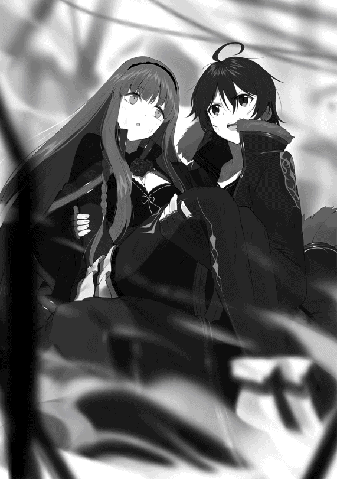

| 【合本版1-3巻】リワールド・フロンティア-最弱にして最強の支援術式使い- | |
| 国広仙戯 | |
| TOブックス (2018) | |
※本電子書籍は「リワールド・フロンティア」１〜３巻を１冊にまとめた合本版です。
illust．東西
design．AFTERGLOW
一人ぼっちは冷たい。
一人ぼっちは寂 しい
一人ぼっちは虚 しい。
一人ぼっちは孤独 だ。
一人ぼっちは思い出にならない。
もちろん、それがいい、と言う人もいるだろうけれど、僕はそうは思わない。
一人ぼっちは辛い。
だから、友達が欲しい。
友達には体温がある。友達がいれば寂しくないし、虚しくないし、孤独でもない。思い出だって作れる。
辛いどころか、幸せにだってなれる。
だから、僕は友達が欲しい。
これは、僕が初めての友達を作る物語。
ちっぽけで、他愛もなくて、取るにも足りなくて、しがない僕の──新境地 。
......なんちゃって。
●１ 出会い
それはまぁ、いつものことで。
「ヒーラー募集中でーす！ 全体ヒールが使える人ー！ 一緒に行きませんかー？」
「あ、あのっ、ぼ、僕、ヒールが使えま──」
「えっ？ 君ヒーラーなの？ マジで？......全体ヒール使えるの？」
「あ、あの、こっ、個別ヒールしか使えないんですけど、で、でもっ、ちゃんと──」
「あーごめん、ごめんねー。今俺ら、全体ヒール使える人しか求めてないからさー」
「は、はい......すみません......」
ほら、ワン・アウト。
「剣士はおらぬか？ 我々は剣一つを恃 みとするツワモノのパーティーである」
「あ、は、はいっ！ ぼ、僕、剣、使えます！」
「ほう？ 確かに見たところ、背中に吊 った大段平 と腰の脇差 は相当な業物 のようだが......おぬし、剣術スキルのランクは？」
「びっ、Ｂ＋、ですっ」
「Ｂ＋か......残念だが、我らの一員となるには剣術ランクＡからでなければ話にならぬ」
「そ、そうですか......」
残念。これでツー・アウト。
「ところで、その大段平と脇差、見れば見るほど素晴らしい業物だな。いや、抜かなくとも分かるぞ。凄まじい剣気 を感じる」
「え？ あ、はぁ......」
「どうだろう、言い値を払う。それらを譲ってはもらえぬか？」
「ええっ!? い、いえっ、すみませんっ！ こ、これ、祖父の形見 ですのでっ！」
「むぅ、そうか......それならば無理は言えぬな。しかし、気が変わったらいつでも言ってくれ。しばらくはこの辺りにいるのでな」
「は、はい......すみません、失礼します......」
「あと一人空きがありまーす、誰か一緒に行きませんかー？」
「あ、あのっ、僕っ、だ、ダメですか？」
「......はぁ？」
「えっ？」
「......あのね、ボク？ 見て分からないの？」
「えっ......？」
「あたし達のメンバー、みんな女の子ばっかりでしょ？ つまり女の子だけのパーティーなの。どうしてそこに、男の子のキミが入れるって思うわけ？」
「あっ......す、すみません......」
「ハーレムとか妄想 してたの？ でも、もーちょっと空気読むこと覚えた方がいいわよ。悪いこと言わないから」
「す、すみません......」
これにてスリー・アウト。
いつもならこの辺りで心がポッキリと折れてしまうのだけど、今日はもうちょっとだけ頑張 ってみようと思う。何故なら、
「あと一人ー、どなたか一緒に行きませんかー？ 初心者の方でもオッケーですよー、年齢制限も無しですー」
という素晴らしい声が聞こえてきたからだ。
「あ、あのっ、僕っ、僕でもいいでしょうか!? 」
「ああ、どうぞどうぞ、歓迎するよ！ うちは新しく結成したばかりのクラスタだから、誰でもウェルカムなんだ」
「あ、ありがとうございます！」
「君は......見たところ、剣士かな？ 初心者かい？ 特技とかある？」
「は、はい、一応剣士で、初心者じゃないですけど、ここに来たのは最近で......あ、特技は支援 術式 です！」
「えっ......支援術式......？」
「......」
流れ出す微妙 な空気。なんだか嫌な予感。
「うーん......支援術式かー......えっと、ごめんね、ちょっと待っててくれるかな？」
「あ、は、はい......」
待たされること約二分。なにやらリーダーらしき人物と相談していて、やがて二人してこちらへ戻ってくると、
「あー、君が入団志望者？ なに、支援術式が得意なんだって？」
「あ、は、はいっ」
やはりこの人がリーダーらしい。
「残念だけど、ウチは始まったばかりのクラスタとはいえ、これでもトップ集団入りを目指してるんだ。だから、一応は初心者でも歓迎はしているんだが、それだって将来性を見込んだ上での話なわけで......つまり、本当に誰でもオッケーってわけでもないんだよ」
「は、はい......」
「で、正直に言わせてもらうと、君みたいなエンハンサーは将来性がかなり厳しい。君自身どう思ってるかは知らないが、少なくとも俺達はそう考えている。だから申し訳ないんだが、この話はなかったということで」
ダメ押しのフォー・アウト。
「す、すみませんでした......」
すごすごと退散する背中に聞こえる、ひそひそ話。
「あのな、初心者でもなんでもいいから勧誘しろとは言ったが、エンハンサーみたいな微妙なタイプを抱え込んでどうするんだ。ちゃんと将来設計を考えてくれよ」
「す、すまない......しかし、そんなに微妙なのか？ 運用次第でなんとか──」
「そうやって使い方を考えなきゃいけない時点で普通の戦術パーツじゃないだろ？ 前は前、後ろは後ろ。攻撃は攻撃、回復は回復。シンプル・イズ・ベスト。それがウチのモットーだよ」
「......なるほど」
耳が痛過ぎてもげてしまいそうなモットーだった。
ということで、本日も一人でエクスプロール することが決定してしまったわけで。
もはや日課レベルのソロ活動である。
深紫 の戦闘ジャケットに、汚れても構わない黒の上下。足元はごついコンバットブーツ。背中には柄 も鞘 も──刀身さえも──漆黒 の長巻 を担 ぎ、腰には逆に純白の脇差しをベルトに吊している僕は、一人ぼっちで立ち尽くす。
ラグディスハルト、十六歳。この界隈 に来てからというもの、誰かと連れ立ってエクスプロールした記憶がとんとない。
その理由はまぁ、お察しの通りだけど。
今日も結局、集会所とカフェとバーを兼ねているこのお店──『カモシカの美脚亭 』から活気が消えてがらん としてしまうまで、僕はエクスプロールの相方を見つけることが出来なかった。もはや溜息 すら出ない。
遺跡 でエクスプロールするエクスプローラーは、極めて危険な職業の一つだ。凶暴なセキュリティ・ボットひしめく遺跡へと潜 り、情報具現化コンポーネントを回収するのが主な生業 なのである。当然、一人よりも二人、二人よりも三人──大勢で行った方が安全かつ効率的に決まっている。
なのに、僕はどこのパーティーからもミソッカスにされてしまった。
──あーなんだかなぁー、いっそのこと今日はもう休んじゃおっかなぁー......
そんなだらけたことを考えた時だった。
ふと、目に映る光景がいつもと違うことに気付いた。
いつもならエクスプロール前の人々が集まり、各々のクラスタやパーティーを編成して出発していった後、テーブルと椅子 の間に取り残されているのは僕一人だけなのに。
なんと、今日はお仲間がいた。
隅 っこのテーブル席にポツンと座っている小さな影。やけにブカブカな灰色の外套 で全身をすっぽり覆 っていて、その正体は杳 として知れない。
初めて見る顔だ。いや、顔はフードに隠れていて分からないから、これは言葉の綾 なのだけど。
誰だろう？ あの人も僕と同じエクスプローラーなのだろうか？
もしかしたら、あの人も僕みたいに他のパーティーに入れてもらえなかった〝はぐれ者〟なのかもしれない。あるいは、既にどこかのクラスタの一員だけど、一緒に行くはずのパーティーメンバーが遅刻しているのかもしれない。
まぁ多分、後者の可能性が高いと思う。だって、僕はあの人がパーティーメンバーを探して動いている姿を見ていないのだから。今だって、まるで誰かを待っているかのように椅子へ腰掛けているし、テーブルには紅茶のカップが乗っている。どう見ても待ち合わせの姿勢だ。
本日五度目の挑戦を、してみるべきだろうか？
もしかしたらメンバーに空きがあるかもしれない。ダメだったら、予定通りソロで行くだけの話だし、やってみて損はないだろう。ここまで来たら当たって砕 けろの精神で。
どうせ駄目で元々なんだから。
「あ、あのっ！」
僕は謎の人物に近寄ると、破れかぶれになってほとんど自棄 っぱちな笑顔と一緒にこう言った。
「支援術式が得意なんですけど、やっぱりパーティーには入れてもらえないでしょうか!? 」
我ながらひどい売り込み文句だった。
僕の声が壁や床に吸い込まれ、しん、と静まる店内。まるで一秒が永遠にも感じられるような静寂 。主観的には十分ぐらい。客観的には多分一秒ぐらいの間を置いて、外套の人は振り向いた。チリン、とどこかで鈴のような音が小さく鳴る。
振り返ったフードの中は、未だによく見えない。
お断りされる予感しかなかった。
「......うむ、よいぞ」
やっぱり駄目だったか。仕方ない、頭を下げて帰ろう。
「す、すみません、失礼しました......」
溜息を吐きたいところを我慢しつつ、背中を向けると、
「おいおぬし、何処へ行く？」
「えっ？」
呼び止められて、振り返る。
「妾 はよいと申したのじゃ。なのに何故、おぬしは帰ろうとする？」
言われた言葉をすぐに理解できなくて、僕は少しの間、唖然 としてしまった。その間、声の調子から察するとこの人は女の子で、しかもかなり幼い雰囲気だなぁ──なんてことを考えていた。
はっ、と我に返る。
「──あっ、はい！ すみま......ええっ!? いいんですかっ!? 」
予想外の展開に驚く僕に、こくん、と頷 く外套の人。
「よい。そのパーティーとやらに入れてやろう」
「......へ？」
あれ？ パーティーとやら ？......おかしいな、何か変だぞ？
「あ、あの......」
「なんじゃ？」
聞き返す声にはこれっぽっちも悪意を感じない。本気の素で聞き返しているみたいだけれど──
「ちょっとお聞きしたいんですが......他のメンバーは、今どこにいらっしゃるんですか......？」
「おらぬ」
「はい？」
「おらぬ、と言った。妾は一人じゃ」
「............」
おかしい。歯車がずれている気がする。
「あの、えっと......変なこと聞きますけど、ルーターはお持ち......ですか？」
本当は念押しのように『ですよね？』と聞こうと思ったけど、何かを踏み抜いてしまいそうな気がしたのでやめておいた。
小柄な外套の人は、なんだか妙に可愛らしい仕種 で小首を傾 げる。
「？ るーたー？」
あ、駄目だ。ルーター知らないやこの人。僕分かっちゃった。この人ぶっちぎりの初心者だ。
この瞬間 、僕は大きな勘違いに気付いた。後者だったのではない。前者だったのだ、と。
つまり、この人は僕と同じ〝はぐれ者〟だったのだ。
「──ごめんなさい......何でもないです......」
道理で会話が噛 み合わないはずである。僕はさっきまでの恥ずかしい会話に蓋 をして、改めて話題を変えることにした。
「ええと......ここに来たのは最近ですか？」
こくり、と外套の人が頷く。チリン、とまた鈴の音が鳴った。どうやらフードの下に、何か金属質のものを身につけているらしい。
「うむ。今朝この街に来たばかりじゃ。ここへ来れば、エクスプローラーになれると聞いたのでな」
「あー......すると、やっぱり初心者さんですか？」
「ふむ。そうなるの」
なのにどうしてそんなに自信満々なんですか。僕はそれがとても不思議です。
僕が微妙にモニョっていると、今度は外套の人が、訊いてきた。
「して、ルーターとは何じゃ？ その、パーティーとやらに必要なものなのか？」
うわぁ、これは完全に一から教えないといけない感じだなぁ──なんて思っていたら、不意にフードの奥に隠れていた瞳とバッチリ目が合ってしまった。
その両目の美しさに、僕はしばし言葉を失う。
まるで猫みたいな金銀妖瞳 。右目が海のような蒼 で、左が金塊 みたいな黄。オッドアイの人を初めて見たわけでもないけど、その左右非対称の色にはやっぱり吃驚 するし、綺麗 だなって思う。
「......？ どうしたのじゃ？」
大きな金目銀目がキョトンとする。それで僕は正気を取り戻し、慌てて、
「あ、いえ、その......」
誤魔化すように、ごほん、と咳 払いを一つ。
「──そのですね、僕はこう見えても初心者ではありません。なので、それなりのことを教えて差し上げられると思います」
「ふむ」
「ですので、さっきのパーティーに入れてくださいっていうのは、とりあえず忘れてください。僕達二人だけの時は、その状態をコンビと言います。コンビの場合はルーターを使いません。ルーターを使う時はパーティーを組む時です」
「ふむふむ。なるほどのう」
感心したように外套の人は頷きを繰 り返す。
僕は緊張している自分を自覚しつつも、必死に顔に出ないよう努力していた。
何故なら、エクスプローラーについて説明するとなると、僕みたいなエンハンサータイプについても言及しなくてはいけなくなるからだ。
「えっと......なので、改めてお願いしますが、説明が全部終った後でも、出来れば今日一日だけでもいいので、その......僕とコンビを組んでいただけませんかよろしくお願いします！」
ばっ、と腰を九十度に曲げて、勢いよく頭を下げながら右手を差し出す。
すると、
「......なんじゃおぬし。やけに律儀 な性格をしておるのう」
からかうような調子の声と、右手に触れる柔 らかな感触。顔を上げたら、フードの奥のヘテロクロミアが弓なりに反 っていて、外套の中から伸びた小さな手が、僕の右手を握っていた。
そこだけはフードにも外套にも隠されていない口元が、くふ、と笑う。
「よかろう。妾は今より、おぬしとコンビじゃ」
その手は思っていた以上に小さくて、柔らかくて、儚 くて。
もしかしたらこの子は僕より年下かもしれない、と思った。
「ありがとうございます！ えっと......あ、自己紹介がまだでしたね」
「こりゃおぬし、その言葉遣いはなんじゃ。妾達はもうコンビであろう。他人行儀はやめぬか」
という、ありがたいやら情けないやら、微妙な感じのお言葉をいただく。僕はその厚意をありがたく受け取ることにした。
「──うん、分かった。じゃあ改めまして......僕の名前はラグディスハルト。二週間前まではキアティック・キャバンにいたんだけど、ちょっと思うところがあって、最近この〝浮遊島〟にやって来たばかりなんだ。だから初心者ではないけど、ここではまだ新参者だよ。よろしくね」
ぎゅっ、と繋 いだままの右手に少しだけ力を込める。
「ラグ......？」
「ラグディスハルト」
「ラグディスハルト、か。ふむ。長い名前じゃな。姓はないのか？」
「ああ、僕、ルーツが東の方だからね。名前だけなんだ」
「東の方というと、あれか。確か、英雄セイジェクシエルの出身地じゃったな」
「そうだね。一応、遠い親戚ってことになっているけど」
「ほう？ 英雄の末裔 か。頼もしいのう」
「あはは、重荷 になることもしばしば、だけどね。君は？」
今度はそっちの自己紹介をして欲しい、という意味で問うと、彼女は笑うのをピタリと止め、少しだけ沈黙した。やがて、
「妾の名は......ハム、という。姓は......すまぬが、故 あって言えぬ。......のう、おぬしよ。逆に聞きたいのじゃが、おぬしはこんな妾でもいいのじゃろうか？ それとも信用できぬ、か......？」
不安そうにこちらを窺ってくる金目銀目に、僕は軽く笑い、首を横に振って見せた。
「大丈夫、気にしないよ。誰にだって言いたくないことの一つや二つ、あるものだと思うから」
僕がそう言うと、小柄な外套を被ったハムは、くふ、と再び口元に笑みを浮かべた。
「──うむ。おぬしが気のよい奴で妾は嬉しいぞ」
きゅっ、とハムの白魚 のような手が僕の右手を握る。
「よろしく頼むぞ、おぬし」
......毎度のことだけど、僕の名前はちょっと長いので、大体の人がそのまま呼んでくれなかったりする。どうやら今回もそういう流れらしい。ちょっと苦笑い。
僕はハムとの握手を終えると、その手でウェイトレスさんを呼んだ。
「はいはーい、ご注文は何ですかにゃ？」
赤毛の猫っぽいウェイトレスさん──ここの看板娘のアキーナさんというらしい──にコーヒーを注文すると、僕はハムの向かいの席に腰を下ろした。
さて、僭越 ながら、僕はこれからエクスプローラーの何たるかを語らなければいけない。
どうやらハムは、本当に何も知らないままこの〝浮遊島〟へ来たらしい。となると、やっぱり初歩中の初歩から教えた方がいいだろう。
「じゃあ、説明を始めるね。そもそもエクスプローラーというのは──」
「うむうむ」
エクスプロールの基本のキから話し始めた僕に、ハムは頷きながら熱心に耳を傾けてくれる。
彼女は未だその外套を脱いで顔を見せてはくれないけれど、それはやっぱり、名前を隠していることと関係しているのだろうか？ 出来れば、そのうち顔を見せてくれると嬉しいな、と思う。
それで、もっと仲良くなれたらいいな、とも思う。
そして、友達になってくれたらもっと嬉しいな──とも。
なにしろ僕は、前にいた場所では、最後の最後まで友達が出来なかったのだから。
──などと考えつつ、僕はかつて自分の師匠から教わったことをハムに教授していく。
それから、小一時間ほどの講義を終えると、僕とハムは連れ立ってエクスプロールに向かったのだった。
●２ ルナティック・バベル
浮遊島フロートライズ。
そのど真ん中から空に向かって伸びる巨大な塔、それがここの遺跡 ──〝ルナティック・バベル〟だ。
古代文明の遺産であるこの塔は、その名の通り、月に向かってその身を伸ばしている。
聞いた話によると、この塔は空に浮かぶ巨大な天体である月、その地表にまで届いているという。
もちろん、嘘 か本当かは分からないけれど。
他にも、実際は月にまで届いてなくて軌道エレベーター兼宇宙港だったのだ──とか。実は月は関係なく、頂上まで行くと別の世界に繋がっていて、そこは永遠の幸せが約束された極楽浄土なのだ──とか。諸説諸々ある。けれど結局、本当のところは誰にも分からない。
遠い昔、僕らのご先祖様達がこの塔のセキュリティシステムを起動させ、その後の『終末戦争』で全ての情報を文明ごと喪失 してしまって以来、真実を知る人はどこにもいないのだ。
別段、珍しいことでもない。こういう遺跡は、世界中の至るところに点在している。
僕がこの間までいたキアティック・キャバンだってその一つだ。他にも、クリスタル・ホール、チョコレート・マウンテン、ドラゴン・フォレストなどなど──この遺産世界には、数多 の謎が満ち満ちている。
だから、僕達エクスプローラーは探検 するのだ。
まだ見ぬ、誰も知らない、世界の真実を手にするために。
この世界の秘密を曝 くために。
......なんちゃって。
「というわけで、ここがルナティック・バベルだよ」
ハムと一緒に浮遊都市フロートライズの中心部へとやって来た僕は、右手で天高くそびえる塔を指差した。
「ふむ、やはりコレじゃったか。一番目立っておるからすぐに分かったぞ」
灰色の外套で頭から爪先まですっぽり隠しているハムは、フードの作る陰の中から顎 を上げて、ルナティック・バベルを仰 ぎ見る。
『カモシカの美脚亭』を出る際に並んで立ってみて分かったけど、ハムはかなり小柄だ。一六十セントルの僕よりも、多分三十セントルぐらい小さい。やはりというか何というか、今年で十六歳になる僕よりも大分若いのではなかろうか。
多分、十歳前後かな？ その年齢でエクスプローラーを目指すのは少し早いような気もするけど......さっきも言った通り、事情は人それぞれだ。余計な詮索 はやめておこうと思う。
雲一つ無い──まぁ基本的にフロートライズは雲よりも高い位置を飛んでいるからなのだけど──蒼穹 に、巨大な建造物であるルナティック・バベルが吸い込まれるようにして伸びている。
一体何キロトル先にあるのか分からない先端など見えるもわけもなく、全ては青空の消失点の彼方だ。
「でかいのう......」
「だねぇ......」
空を見上げながらぼそっと呟 くハムに、僕も同じ体勢で同意する。
近くまで来て、その圧倒的な威容 を見る度に思う。
この浮遊島から、ルナティック・バベルが月まで伸びているのか。はたまた逆に、この浮遊島の方こそが、月から伸びたルナティック・バベルに吊られているのか──と。
それぐらい途方もない塔なのだ、これは。
なにせルナティック・バベルの直径は約一キロトル。なので、一フロアの面積は約〇・七五平方キロトル。構成物質は現代では再現不可能な『柔らかくて強い金属』で、これはいかなる歪 みも衝撃も吸収してしまうトンデモ鉱物なのだ。その性質や構成などの調査は現在も進んでいるのだけど、どうやったら同じ物が精製できるのかが未だに分からないらしい。
古代人の叡智 の結晶とも言える、長大過ぎる塔。これがもし本当に、空に浮かぶ月へ繋がっているのだとしたら、どうして昔の人はこんな物を作ったのだろうか？ 現代を生きる僕からすれば、月へ行くためだけにこんな巨大な物を作るというのは、全くもって理解の範疇 外だ。
と、塔を見上げつつ考え事をしていたら、
「のう、おぬしよ。アレは一体何じゃ？」
ハムに質問されたので、彼女の指先が示す方角へと目を向ける。
「アレ？」
そこには、ルナティック･バベルに向かって跪 き、頭を垂 れる集団がいた。百人位の老若男女 が揃 って、口々に何やら呪文のようなものを唱えている。
「ああ、アレはね」
僕は得心する。確かに僕も、初めて見た時は何事かと思ったものだ。
「アレは、この土地特有の宗教団体の人達だよ。詳しいことはよく分からないけど、とにかくこのルナティック・バベルを神様として崇拝 しているみたい」
「神......？ この建物が、か？」
その発想はなかった、と少し驚いているようなハムの声。フードの中の蒼と金がぱちくりする。
「別に珍しいことじゃないよ？ 大抵の遺跡には付き物なんだ。古代人の文明、もしくは古代人そのものを神聖視していたりする団体もあるし。そういう場合、遺跡を神様の偶像として拝むことが多いみたいだから」
「ふむ......」
「あと、地域によっては『現人神 』って言って、生きている人間を神様として崇 めるところもあるんだよ」
僕がそんな雑学を披露 したところ、ハムはぼそり、
「......人は、神になどなれぬ......」
と、本当に小さな声でそう言った。多分、聞き間違いでなければ。
「......？」
僕が小首を傾げると、ハムはさっきの呟きを吹き飛ばすかのように声音を変えて、
「──して、おぬしよ。この塔へ入る前に、妾とおぬしはスイッチ とやらでコンビになるのであろう？」
いきなりの話題転換に、僕は慌 てて頷く。
「え？ あ、うん、そ、そうだね」
僕は身体に刻まれた〝ＳＥＡＬ 〟を励起 させると、ギンヌンガガップ ・プロトコルによって質量をゼロ、つまり情報量だけにしていたスイッチを具現化させ、ストレージから取り出した。
ギンヌンガガップ・プロトコルは、僕達エクスプローラーのような種々多様な道具を持ち歩かなければならない人種にとって、必須の手法 だ。
ちなみに『カモシカの美脚亭』では身につけていた武器防具も、今はギンヌンガガップ・プロトコルで圧縮して、ストレージに収納してある。あそこのように仲間を募集する場所では、みんな自分の身分なり特徴なりを分かりやすくするため、エクスプロール時の装備をきちんと身につけるというのが暗黙の了解なのだ。
「ふむ......これがスイッチか」
「そうだよ。これで、僕と君との共通プロトコルを自動作成するんだ」
さて、取り出したるは、僕のような貧乏 人でも何とか購入できるコンビ用のスイッチ。大きさはコインぐらいで、とっても軽い。白い楕円 形に、青く光るラインが走っている。そんな形のスイッチを右掌 に載せたままハムに見せて、
「じゃあ、これに触れてみて」
と、見本として僕から先にスイッチに人差し指を触れさせる。
「うむ。こうじゃな」
ハムは頷くと、外套の中から小さな手を出して、細い指先でちょこんとスイッチに触れた。
途端、僕の視界に『結線開始 』というＡＲメッセージが表示される。これで僕とハムの間でのみ使用できる共通プロトコルが作成され、二人の〝ＳＥＡＬ 〟が相互接続されることとなる。共通プロトコルは互いの遺伝子情報をもとに作成し、不可逆暗号化しているから、何人 たりともこれを偽装することは出来ない。万全のセキュリティなのだ。
──のだけれど。
メッセージが『結線開始』のまま、次の段階の『結線中 』にならない。
「......あれ？ ハム、ポートが開いてないよ？」
「ぽぉと？」
吃驚する僕に対して、不可思議そうに小首を傾げる外套の少女。
「えっと......回復術式や支援術式、それ以外にも様々な情報のやりとりをする為には、互いに共用できるプロトコルが必要だって話はしたよね？」
「うむ。覚えておるぞ。そのプロトコルを自動作成するのが、そのスイッチなのじゃろう？ で、大人数のパーティーの場合は、それがルーターとなる。どうじゃ？」
「うん、正解。で、ここからが重要なんだけど......じゃあ、どうしてスイッチとかルーターとかが必要なのかっていうと──僕達の〝ＳＥＡＬ 〟はセキュリティ上、基本的に全てのポートが閉じられているんだ。だから、スイッチで共通プロトコルを作ったら、今度はそれ専用のポートを開かなくちゃいけないんだよ」
「？？？ しー......？」
「ああ、そういえば君の住んでいたところだと、〝刻印 〟って言うんだっけ。とすると......ポートは〝チャクラ〟ってことになるのかな？」
「ほう、チャクラか。なるほどのう......先程も思ったが、おぬし、やけに他国の文化について詳しいのじゃな？」
「ああ、僕、親の都合で小さい頃からあっちこっち転々としていたみたいだから」
「ふむ......納得した。では、チャクラを開くぞ。さあ、やり方を教えるのじゃ」
「あはは......」
当たり前のように言うハムに、僕は乾 いた苦笑い。
──もしかして、この娘はどこかの王族だったりするのだろうか？
そんな馬鹿 なことを考えてしまうほど、ハムは世間知らずで、態度が尊大 で、けれど不思議と嫌味のない雰囲気を纏 っていた。顔を隠しているし、名前も一部を伏 せているし、まるで何かから逃げているようにも......いや、まさかね？
不意に嫌な予感が去来 し、背筋がぞっとした。僕は慌てて頭を振り、その考えを追っ払うと、ハムに向かって説明を始める。
一分もかからず無事に相互接続が完了して、僕の視界に──ハムの視界にも──『結線中 』というＡＲメッセージが表示された。
これで、僕たちは晴れてコンビとなった。
「じゃ、行こうか」
「うむ」
僕たちは互いに顔を見合わせて頷き合うと、揃ってルナティック・バベルへ向けて歩き出した。
金属製の巨大な門を潜 り、塔の中へ。
出入り口を塞 いでいた隔壁 は、もうずっと昔にロックが解除されていて、以来ここは開放されたままらしい。
おかげで僕とハムは何の苦労も無く、塔の一階層へ足を踏み入れることが出来た。
「広いのぉ」
「だよねぇ。僕も初めて入ったときは吃驚したよ」
ルナティック・バベルの一階層は広い。おそらく、かつてはロビーだったであろう空間だ。この浮遊島フロートライズへ来るときに立ち寄った空港と、雰囲気がよく似ている。天井が高く、どこから採光しているのか分からないけど、中は自然と明るい。
この塔の一階層は吹き抜け構造になっていて、そこらにある階段で二階層へ昇ることが出来る。
純白の円形フロアの中央には、巨大なエレベーターシャフト。計三十台の大型エレベーターを内包したそれは、二十メルトル頭上にある天井に開いた大穴へと吸い込まれている。おそらくこれこそが、月まで届くという軌道エレベーターなのだ。
現在、このルナティック・バベルは一九六階層までが解放されている。そこまでならセキュリティ・ロックが解除されているので、中央のエレベーターで直行することが可能だ。
けれど、言うなればそこは最前線 だ。間違ってもハムみたいな初心者を連れて行く場所ではない。なので、
「とりあえず、三階層から行ってみる？」
とハムに提案する。下層であれば出てくるＳＢ も弱いし、なにより実践 を通じてハムに色々と教えることが出来る。それに、彼女の実力のほど──というか、どういう適性があるのかも分かるだろう。
まぁ、スイッチで繋がっているのだから、ハムの〝ＳＥＡＬ 〟にステータス確認リクエストを送るのが一番手っ取り早いのかもしれない。そうすれば〝ＳＥＡＬ 〟が自動的に、彼女のプロフィール情報を返してくれるはずだ。けれど──今の関係でそれをするのは、流石 にマナー違反だと思うのだ。
──でも、きっと！ 今日たくさん色んなことを教えてあげて、今よりももっと仲良くなれば！ と、友達に......！
ハムはキョロキョロと周囲を見回しながら、
「ふむ......のう、おぬしよ。ここのような遺跡には凶暴な怪物共がウジャウジャおると聞いたのじゃが、ここにはおらぬのか？」
「ああ、ここはね、一階層と二階層にはそういうのが降りて来られないように処置してあるんだよ。だから、三階層に行ったらウジャウジャ出てくるよ」
ハムは口元で、くふ、と笑う。
「ふむ、そうか。ではおぬしの提案どおり、手始めに三階層へと赴 くとするかの」
どことなく嬉しそうな調子で言って、ハムは手近にある階段を目指して歩き出した。カラン、コロン、と彼女が一歩進むたび、足下から軽やかな音が鳴る。店を出てからずっとだ。外套に隠れて見えないけれど、少なくともブーツやスニーカーを履 いていないことだけは確かだった。
だだっ広い空間の中、二人ぼっちの僕らは、ハムの足下から鳴るカラン、コロンという音と、僕のコンバットブーツの足音だけを道連れに、のんびり三階層を目指して歩くのだった。
どうやら初心者というか、駆け出しの人がハム以外にもいたらしい。
階段を登り登り、三階層の扉を開くと、なんと先客がいたのである。しかもＳＢと戦闘中だ。
「──〈フレイムジャベリン〉！」
可愛らしい女の子の声が術式 を音声起動 。
見ると、五人パーティーの中の一人が、この三階層に出没するＳＢ『レッサーウルフ』の群れに両手を向けていた。
その女の子の顔や腕などの体表には、〝ＳＥＡＬ 〟が励起している証である幾何学 的な模様──〝フォトン・ブラッド〟が真っ赤に輝いている。
刹那 、その両手のすぐ先に、術式のアイコンが現れた。
赤く光るラインで描かれた、穂先に炎を灯 した投槍 のマーク。
「あ、大きい......」
思わず感想が口に出た。女の子の掌 の先に表示されたアイコンは、少し離れた僕からでもマークが視認出来るほど大きかったのだ。直径一メルトル以上はある。
真紅のアイコンが本物の燃える投槍に変化するのは、ほんの一瞬だ。彼女はそれを連発する。
「〈フレイムジャベリン〉！ 〈フレイムジャベリン〉！ 〈フレイムジャベリン〉！」
合計四つのアイコンが重なり合って現れ、炎の槍 と化し、放たれた矢のごとくレッサーウルフの群れに襲い掛かる。全長約二メルトルの炎で形作られた四本の投槍が、狙い過 たず見事に四体のレッサーウルフを貫 いた。
『ＰＹＲＲＲＹＹＹＹＹＹ！』
この塔に出没するＳＢは、見た目通りの鳴き声など発しない。代わりに意味不明の電子音を撒 き散らすのが常だ。
女の子の撃ち出した〈フレイムジャベリン〉はレッサーウルフの耐久力を一気に奪い去り、活動停止 へと追い込んだ。情報具現化プロトコルで実体化していた四体のＳＢは、現実に顕在化 する力を失い、消滅する。
後に残るのは、ＳＢを現界させていた核であるコンポーネント──青白く光る、情報具現化プロトコルが内蔵された小さな球体である。
レッサーウルフの魂そのものであるかのようなコンポーネントは、束の間宙に浮いていたかと思うと、不意に己を倒した女の子の方へ吸い込まれるように飛んでいく。
そのまま彼女の胸の辺りに当たって、ぱっ、と弾けて消えた。
女の子の〝ＳＥＡＬ 〟に吸収されたのだ。喪失技術 である情報具現化コンポーネントは、色々と使い道があるため、ああやって回収するのがエクスプローラーの生業の一つだった。
「よし、残りは俺達で蹴散 らすぞ！」
『おおっ！』
パーティーのリーダーらしき男性が号令をかけると、メンバーが応じて残存するレッサーウルフへと一斉に躍 りかかった。
戦いぶりを見ていると、なかなかに連携が取れていて危なげが無い。
推察するに、他所の地域で経験を積んだパーティーが最近このルナティック・バベルへやってきて、腕試しがてら三階層で様子見をしている──という感じだろうか。
「のう、大きいとは何のことじゃ？」
隣で一緒に見ていたハムの質問。僕の先程の発言に対してのものだろう。
「ほら、あの子がさっき出していたアイコン。軽く一メルトル以上はあったでしょ？ アイコンの大きさって術力 の強さに比例するから、すごいなぁって思って」
「ふむ......アイコンとは、先程の紋章 のことか？」
「そうそう、そう呼ぶ人もいるよね。術式の発動時には必ず、大なり小なり出るものなんだよ」
はて？ ハムがアイコンのことを知らないってことは、術式を使ったことがないのかな？
「そうか......妾はてっきり胸の話かと思ったぞ」
「──うえっ!? 」
いきなり想定外のことを言われたので思わず声がひっくり返ってしまった。
言われて見直してみれば、確かにさっきの女の子、結構な豊乳だった。
「──あ、ち、違うよ！ 本当に違うから！ 僕はそんなムッツリスケベじゃないから！ ──ち、ちっちゃいのも好きだよ!? 」
慌ててボディランゲージも混ぜて否定する。
すると、灰色のフードの奥から蒼と金の瞳が、じとり、と胡乱 げに僕を見つめ返してきた。
──うう......色々と失言だったかもしれない......
「さ、さあ、あっちの戦闘も終わったみたいだし、ぼ、僕達もＳＢを探しに行こうか！」
僕は誤魔化すために大きな声でそう言って、先に立って歩き出した。
「ど、どこかなー？ さっきのレッサーウルフとか、い、いたりしないかなー？」
チラチラと背後のハムがちゃんと付いてきてくれているかどうかを確認しながら、僕は幅五メルトルぐらいの白い廊下 を進む。
僕が前にいたキアティック・キャバンのような天然のダンジョンとは違い、ルナティック・バベルは人工の建造物だ。それ故、広大ではあるけれど、構造は至ってシンプルである。
しかも、ほとんどの階層が同じ構造なので、一度マップを覚えてしまえば迷う心配もない。
果たして、入ってきた南側から西側のエリアへ移動した僕とハムは、めでたく（？）最初のＳＢと遭遇した。
レッドハウンド。赤い体毛を持つ猟犬 だ。
こいつもレッサーウルフと同じく、群れで現れる。
何もない空間から忽然 と僕達の前に出現したのは、総勢十六体の赤き魔犬だった。
『ＰＹＹＹＹＲＲＲＲＹＹＹＹ！』
ガウッ、とか、バウバウッ、とかではなく、甲高い電子音で一斉に鳴くレッドハウンド。ルナティック・バベルのＳＢはこれだからやりづらい。何というか、微妙に緊迫感が薄い気がするのだ。
「出たね......えっと、じゃあ僕が見本を見せるから、ハムはそこで見ていてくれるかな？」
僕は左腰に帯刀していた祖父の形見の脇差〝白帝銀虎 〟を抜いた。略して〝白虎 〟は、僕の接近戦用サブウェポンだ。もちろん、メインウェポンは背中の長巻〝黒帝鋼玄 〟、略して〝黒玄 〟なのだけど、レッドハウンド相手なら白虎だけでこと足りる。
白虎は刃渡り四十セントルほどの純白の刀身を持つ、ちょっと珍しい脇差だ。僕と同じエクスプローラーだった祖父が愛用していた逸品 で、それ故に秘めたポテンシャルはものすごい──らしいのだけれど、残念ながら今の僕の腕では、その性能を十分に引き出すことはまだ出来ていない。
出来ていないのだけど──
「──はっ！」
レッドハウンドの群れに向かって一歩目から跳躍 。五メルトルほどあった彼我 の距離を三歩で潰して、接敵。
最短距離にいたレッドハウンド一匹の右を通り抜けざま、白虎を真横に一閃 させる。
『ＰＵＵＹＹＹＹＹＹ！』
布を断つような軽い手応えと同時に、断末魔 の電子音。
左肩から後ろ足までを切り裂 かれたレッドハウンドが大気に溶けるように消えて、青白いコンポーネントだけが残る。ふわふわと漂 う小さな光球は自動的に僕の〝ＳＥＡＬ 〟へと回収されるので、今は放っておこう。
「よっ！ はっ！ ほっ！ とっ！」
僕は止まらず、手近の獲物に向かって距離を詰 め、連続で白虎を振るう。純白の刃はさしたる抵抗も受けず、ＳＢをばっさばっさと斬 り捨てていく。
『ＰＲＵＵＵＹＹ！』『ＰＹＹＹＹ！』『ＰＲＹＹＹＹＹＹＹＹＹ！』『ＰＹＹＹＹＲＲＲＲＲＹＹＹＹＹ！』
踊るようにレッドハウンド共の合間を縫 って、僕は三十秒もかからず四体のＳＢをコンポーネントへと回帰させた。
これこの通り。僕は白虎の性能を完全に引き出すことはまだ出来ないが、それでも、この純白の脇差の切れ味は十分過ぎるものなのだ。
ありがとうお祖父ちゃん。とっても助かってます。
『ＰＲＲＲＲＲＹＹ！』
僕の初動から免 れたレッドハウンド達が、今更のように臨戦態勢に入る。本物の犬なら唸 り声でも上げただろうか。一斉に鼻っ面に獰猛 な皺 を寄せ、身を低く伏せて僕を睨 み付ける。
いきなり左右の二体が同時に跳躍した。息を合わせたかのようにピッタリな動き。このままでは僕は両サイドから二体同時に噛み付かれてしまう。
けど慌てない。僕は万年ソロのエクスプローラーなのだ。こんな局面には慣 れっこである。
右手の白虎を、左側へ。人差し指をピンと伸ばした左手を、右側へ。胸の前で両腕を交差させた状態で、僕は攻撃 術式 を音声起動。
「〈フレイボム〉！」
体内の〝ＳＥＡＬ 〟が励起。ディープパープルに輝くフォトン・ブラッドが、僕の皮膚 に幾何学模様を描いて走る。
左人差し指の先端に、小さなアイコンがロウソクの炎よろしく灯された。深紫のフォトン・ブラッドで描かれた、爆発 する炎の意匠 。
左側へ突き出した右手の白虎が、襲い掛かってきたレッドハウンドの口内──喉奥 にブスリと突き刺さる。
瞬間、左人差し指のアイコンから攻撃座標を決める細い光線が伸びて、右側から飛びかかってきたレッドハウンドを照準。
ドン！ とその頭部が爆裂した。
「──ッ！」
〈フレイボム〉の命中を目ではなく肌に伝わる振動だけで確認。僕は左腕を引き戻しつつ、その反動を利用して体を捻り、右腕に勢いを乗せる。
左足を強く踏み込み、白虎に喉を貫かれているレッドハウンドにダメ押しの突きを捻 り込んだ。
『Ｐ──!? 』
螺旋 を描く力が白虎を通じてレッドハウンドの身体を一気に貫通 。核であるコンポーネントごと貫いた手応えがあった。しまった、と頭の片隅で思いながら、薄まって消失していくレッドハウンドの残影から右腕を引き抜き、僕は一度ハムの元へと後退する。
ＳＢへのオーバーキル攻撃、または存在の中核であり最大の弱点でもあるコンポーネントへの直接攻撃は、エクスプローラーにとって御法度 の一つだ。何故なら、僕達の基本目的はコンポーネントの回収にあるからである。もっと言えば、情報具現化コンポーネントこそが、エクスプローラーの収入源──日々の糧 なのだ。
故に、それを傷付け破壊してしまう行為は、骨折り損のくたびれ儲けでしかない。せっかく命懸けで戦ったというのに、実入りが無いのでは危険を冒 した甲斐 がないというものだ。とはいえ、遺跡に潜っていればしばしば起こる事態でもある。長く悔やむほどのことではなかった。
僕は油断せず、レッドハウンドに白虎の切っ先を向けたままハムの傍に戻り、
「えーと......こんな感じかな？ どう？ 大丈夫そう？」
「うむ」
まるっきり普通の返事だった。何でもないことのように頷くハムに、僕は思わずＳＢへの警戒も忘れて目を向けてしまう。
「要はあやつらを退治すればよいのじゃろう？」
外套の女の子は、およそ初心者が口にするものではない台詞 を平然と言い放った。
「へ......？」
それは、確かに、そうなのだけれど。
しかし、それが簡単に出来ないからこそ、エクスプロールは危険なのであって。
だからこそ、みんなでパーティーを組んだり、クラスタを結成したりするのであって。
いくらレッドハウンドが低級ＳＢとは言え、初心者がいきなり残り九体を相手にするのは──
「おぬしは少し下がっておれ」
難しいはず、なのだけど。
僕の内心などこれっぽっちも知らないハムは、いっそ傲然 とも思える動きで前に出てしまった。
唖然と背中を見つめることしか出来ない僕の眼前で、彼女は外套の隙間から右手を差し出し、掌をレッドハウンドの群れへ向ける。
「え、ちょ、ちょっと......ハ、ハム？」
意味が分からない。何をする気なんだろう？ もしレッドハウンド達が一斉に襲い掛かってきたら、流石 にその全てをフォローするのは難し──
「 あまねく大気に宿りし精霊よ 我が呼び声にこたえよ 」
朗々と詠 うように、ハムが言葉を──いや、言霊 を放った。
「......!? 」
反射的に僕は慌てて口を噤 んだ。
久しぶりに聞いた。言霊 の籠 められた声。複雑で大掛かりな術式を発動させるために行う、事前準備としての詠唱。キャッシュメモリを用いない、古いやり方。
詠唱の邪魔をしてはいけない。小さい頃、祖母に何度もそう教え込まれた。その条件反射で、僕はハムに声をかけることが出来なくなってしまった。
「 森羅万象 を貫く破魔 の槍と化し 我が敵へ過 たず降り注げ 」
ハムの唇 から濃密な言霊が紡がれているのが分かる。小さな体から迸 る、手に触れて感じられそうなほどの術力。外套の隙間から、淡いフォトン･ブラッドの輝きが漏 れ出ているのが見て取れた。
最初はピンク色かと思った。でもよく見たら、限りなくピンクに近い紫──スミレ色。フォトン・ブラッドの色は血統を示すから、もしかすると彼女と僕は遠い親戚なのかもしれない。
──ところで僕は先程、術式のアイコンの大きさは術力の強さに比例すると言った。これはもう言葉通りの意味で、術式に籠められている術力の分だけ、アイコンはその直径を増していく。
術力の強さというのは、筋力や知力と同じで、ある程度なら努力で増強することもできるが、究極的にはやっぱり才能が物を言う。
例えば僕は先程、左の人差し指に小さなアイコンを出した。実を言うと、あれでほぼ全力だったりする。こと術力の強さに関して言えば、僕は呆 れるほど才能が無い。だからこそ、術力の強さがあまり関係ない支援術式を主に修得したのである。さっきの〈フレイボム〉だって、この三階層に来たときに見かけた女の子が使っていたのなら、もっと威力があったはずなのだ。
ちなみに、記録に残っている最大のアイコンサイズは、三百メルトル以上だという。もう百年以上近く前の世界記録なのだけど。
さらに話は変わるが、このルナティック・バベルは一層ごとの高さが平均十メルトル前後。もちろん例外の層もあるにはあるが、基本的には一層はそれぐらいの高さを持っていると考えてもらっていい。
現在、セキュリティが開放されている最高の層は一九六階層。
単純計算で地上から千九百六十メルトル──つまり約二キロトル上空に、その階層は位置していることになる。
前置きが長くなってしまって申し訳ない。
要するに、僕が何を言いたいのかというと──
ハムのアイコンが放つスミレ色の輝きは、信じがたいことに、その一九六階層でも目撃されたらしい。
「 〈天剣槍牙 〉 」
風が吹いた──のだと思う。
目の前で起こったことがとんでもなさ過ぎて、僕の頭は即座の理解を拒んでいた。
外が見えていた。
ルナティック・バベルの中にいるというのに、外の景色が見えていた。
浮遊都市フロートライズを、えらく高い場所から見下ろす光景が。
つまり、要するに──ルナティック･バベルの壁が、ぶち抜かれていたのだ。
そう。『柔らかくて強い金属』で出来ている、どんな衝撃をも分散して受け止めてしまうため破壊不能と言われていた、あの外壁が。
もちろん、その前にあった廊下や壁、レッドハウンドの群れなんかもまとめて消滅していた。
「────」
今もまた、風が吹いている。
しかし、流れは逆風だ。どでかい風穴から流れ込んでくる大気が、ハムと僕に向けて吹き付けてくる。かなり風力が強い。
ハムの身に纏われていた外套が、ガバッ、とめくれ上がり、風に巻き上げられた。
吹き飛ばされた外套がそのまま僕の顔に当たって、視界が真っ黒に染まる。
「──わぷっ!? 」
呆然 としていた意識が急にシャキっとして、僕は慌てて外套を取り払い、
とても綺麗な生き物を見た。
小柄な女の子が、こちらを振り返っていた。
右目が海みたいな蒼で、左目が黄玉のような金色のヘテロクロミアはそのままに。
肩の辺りで切り揃えられた銀髪は、陽光を受けて虹色の煌 めきを反射するほどの光沢があって。小さな頭の周囲を、細い棒状の飾りがついた金鎖のサークレットが包んでいて。
陶器のような白皙 の肌には、スミレ色のフォトン･ブラッドが幾何学模様を描いて走っていて。
外套の下に身に付けていたのは、ちょっと珍しい民族衣装──『着物』と呼ばれる衣服で。薄紫を基調として豪華絢爛 な装飾が散りばめられたそれが、ミニスカート風に改造されていて。足元は布製の足首飾り と漆塗 りのぽっこり下駄 で。
服の袖 や裾 から伸びる手足は細っこくて、小っちゃくて──
つまり一言で言うなら、とっても可愛らしかったのだ。
猫みたいにちんまい口元が、くふ、と笑う。
「どうじゃ、おぬし。妾もなかなかのものであろう？」
そう言って、ふふん、と不敵に笑う女の子の声は、どう聞いてもハムのそれだった。
「──ハ、ハム......？」
思わず出た僕の呼び掛けは、思いっきり声が裏返っていた。
この時、僕は一体何が起こったのかを正確に把握できていなかった。
ハムの術力が世界記録を遥かに超越していたことも。発動させた術式がどういう種類のものであったのかも。そして、彼女の正体が何なのかということも。
さっぱり分かっちゃいなかった。
ただ、僕は見た。
再び強い風が吹いた時、ハムの着ているミニスカート風の着物の裾が勢いよくめくれ上がり、内部に隠している物を露 にした。
それは、クラシックパンツという代物だった。僕の記憶が確かならば、それは男性用だけでなく、女性用のもあったはずだ。非常に珍しいものではあるけれど。
しかし、彼女のフォトン・ブラッドと同じスミレ色のそれは、一部の地域でしか普及していない。そう、『極東』と呼ばれる、辺境の地域でしか。
故に、僕はそれを見ただけで、彼女の出身地がどのあたりなのかを悟ってしまった。
クラシックパンツ──またの名を、『ふんどし』という。
●３ 風の神様とトモダチ
盛大に吹き飛ばされたルナティック・バベルの外壁が、ウネウネと生物のごとく自己修復を始めるのと同時──この情報だけでもグローバルニュースのナンバーワントピックスは間違いない──僕はハムの手を引いて走り出した。
「うなっ!? な、何じゃおぬし!? 」
色違いの宝石を二つ並べたような目を見開いて、ハムが素 っ頓狂 な声を上げる。
「と、とりあえず逃げよう！ このままここにいちゃまずいよ！」
「な、何故じゃっ？ 何事なんじゃっ？」
僕に引き摺 られるようにして走りながら、ハムが本気で訳が分からないという風に何度も質問してきた。けど、僕はそれら全てを黙殺する。
「いいから！ とにかく走って！」
僕にだって何が何だかよく分からない。けれど、あのルナティック・バベルの外壁が壊され──否、壊してしまった 。
絶対、下の街に迷惑が掛かっているはずだ。
後日、幸いなことにどこの誰にも迷惑が掛かっていないことが判明するのだけど、この時の僕にそれを知る由 もない。
僕は階層中央のエレベーターホールまでハムを連れて走ると、適当に上層行きのボタンを押し、真っ先に開いた箱へ勢いよく飛び込んだ。
何も見ず、でたらめな手付きでパネルを叩いて、扉を閉める。
すぐに上昇が始まり、緩やかな荷重 が全身に掛かり出す。
そうなってからようやく、僕は一息をついた。
「......して、おぬしよ。無論、説明はしてもらえるんじゃろうな？」
背後からハムの冷たい声。振り向くと、声と同じく冷然とした色違いの視線が僕を見上げていた。
怒っているであろうことは、流石の僕も見ただけで分かった。けれど、こちらにだって言い分はあるのだ。
僕はハムと向き合って彼女の両手を掴み、床に膝を突いて視線の高さを合わせると、真っ正面からはっきり言った。
「ダメだよ、あんなことしちゃ！」
「──む？」
ハムの眉根に皺が刻まれ、口がへの字になった。ジト目が僕を非難するように見つめてくる。
「あんなこととは、どういうことじゃ」
その質問に、僕は深呼吸をして心を落ち着かせてから、出来る限り噛み砕いた説明をした。
「......まず、術式の威力が強すぎるよ。ここの外壁まで壊れてたでしょ？ 破片が飛び散って、外の誰かに迷惑をかけているかもしれないよ？ もしかしたら、それで怪我をした人がいるかもしれない。一応、この辺りまで来るのはエクスプローラーがほとんどのはずだから、大した被害はないとは思うけど......でも、さっき見た宗教団体の人達とかもいるし、絶対とは言えないでしょ？」
「............」
僕は不満そうなヘテロクロミアをまっすぐ見つめながら、声に険 が籠もらないよう気をつける。
「それに、ここに来る前に話したじゃないか。エクスプロールの基本は、ＳＢのコンポーネントの回収だって。あれじゃコンポーネントも全部吹き飛んじゃってるよ」
「......むぅ......」
ハムが難しそうな顔をして唸った。心なしか、唇が少し尖 ってきているように見える。
僕はそんなハムの両手を掴んだまま、軽く上下に振ってこう言った。
「めっ、だよ」
すると、
「────」
ぽかん、とハムが夢から覚めたような顔をした。いきなりの表情の変化に、僕の方も少し驚いてしまう。
「......のう、おぬし」
「う、うん？」
「もしや、妾は今、おぬしに説教されておるのか？」
「えっ？ えっと......」
もしやも何も、多分というか間違いなく、
「そ、そうなると思うけど......」
と応えると、〝ハトが豆鉄砲を食ったような表情〟をしていたハムが、くふっ、と破顔 した。
「──あっはっはっはっはっ！ そうか、妾は説教されておったのか！ こりゃまいった！ はっはっはっはっはっ！」
背を反らして、腹の底から呵呵大笑 する。体の揺れに連動して、頭のサークレットがチリンチリンと微かな音を立てた。
「。」
今度は僕が、〝雷が鳴っている時のアヒルみたいな顔〟をしてしまう番だった。
ど、どうしたんだろう？ あれ？ 僕そんなに変なこと言ったっけ？
そんな風に内心で慌てていたら、ふとハムが笑うのを止めた。かと思うと、急に真顔になって小首を傾げる。
「──ん？ 待つのじゃ。ということは......妾は悪いことをした故、おぬしに叱責 されておる......ということか？」
「ええっ？」
何を今更な。何だか話の流れがおかしいぞ。
「う、うん、まぁ、そうなるんじゃない、かな......？」
僕が適当な感じで頷いてみた、その途端だった。
ハムの顔から表情が抜け落ちた。と思った次の瞬間、じわり、という感じでハムの両目に涙が滲 み出す。
「──えうっ!? ど、どうしたのハム!? 」
吃驚したってもんじゃなかった。正真正銘、僕は度肝 を抜かれてしまった。
──なんで泣くの!? さっきまで笑ってたのに!? 何がどうなってるの!?
終いには僕の手の中にあるハムの両掌まで、生まれたての動物みたいに小刻みに震え出した。
ぐじゅ、と鼻を啜 ったハムは、か細い声で、
「わ、妾は......侍女 から苦言をもらう以外で、そ、そのように叱られたのは、は、初めてなのじゃ......ど、どうすればよいのか、よう分からぬ......」
ぐすっ、ぐすっ、と泣きべそをかくその姿は、完全に幼い女の子そのもので。
僕の胸の中に、何だか途方も無い罪悪感 が、ずどん、と圧し掛かってきたわけで。
「わ、妾は、そんなに悪いことをしてしまったのか......？ お、おぬしはもう、妾を嫌いになってしまったのか......？」
しょぼんとした空気を漂わせた彼女に、潤 んだ色違いの瞳で見つめられながらこんなことを言われてしまったら、それはもう色々とたまらないわけで。僕は、あわわあわわと口を何度も開閉して、
「ち、違うよ！ そんなことないよ！ 嫌いになんかならないし、ハムは悪くないよ!? っていうか、ご、ごめんね！ ごめん！ 僕の言い方がキツかったよね!? ち、違うんだ、僕は、えっと......その、えーと......！」
焦っているせいで上手く言葉が出てこない。
「ぼ、僕はその、ハムに立派なエクスプローラーになって欲しくて！ なんていうか、その......あ、そ、そうだ！ すごかったよね！ ハムの術式！」
「......？」
無言でまたも小首を傾げるハムに、僕は思いついた言葉をどんどんまくし立てていく。
「ほら、さっきのレッドハウンドを吹き飛ばしたやつ！ アレすごいよ！ すごすぎるよ！ ものすごい才能だよ！」
「そ......そうか、の......？」
照れくさそうに口元を綻ばせ始めたハムに、僕は確かな手応えを感じた。僕はぶんぶんと何度も首を縦に振って、
「すごい術力だよ！ ほら、ハムって『極東』の出身だよね？ もしかして、現人神だったりして！ なんちゃって、あはははは」
調子に乗ってそんなことを言った瞬間、ピキン、とハムの顔が凍 りついた。
「ははは......は？」
あ、あれ......？ 褒 めたつもりだったのに、なんで？
まだ端っこに涙の雫 を残したままのヘテロクロミアを、まんまるく見開かせて、まるで世界の終わりでも見るような口調で、
「......何故、分かったのじゃ？」
「え？」
ずい、とハムの顔が僕の眼前まで迫ってきた。ここまで来ると、大きく開かれた瞳が人形か何かのようでかなり怖い。ハムの両手を握っているのは僕の方なのに、逆にこちらが拘束されているような気分。僕は思わず上擦 った声で、
「え、えっと......ごめん......さっき、風で君のスカートがめくれた時、下着が見えちゃって......ク、クラシックパンツって『極東』特有の文化だから──」
「何故、妾が現人神だと思ったのじゃ？」
ひんやりした声が僕の言い訳を遮 った。ハムの言葉が氷柱のように耳に突き刺さって、僕の背筋に悪寒が走る。
地雷を踏んでしまった──そう思った。
「そ、その......『極東』の現人神は、神様って呼ばれるぐらいものすごい力を持ってるって聞いて......ルナティック・バベルの壁を壊すぐらいの術力だったから、もしかしたらって......は、半分は冗談のつもりだったんだけど......」
「......なるほどのぅ」
不意にハムの声に体温が戻った。僕は一気に緊張がほどけて、こっそりと安堵 の息を吐く。
何なんだろうか。笑ったかと思ったらいきなり泣くし、泣いたと思ったら物凄く怖くなるし。情緒不安定なんてレベルではない気がする。
「少し、見誤っておったようじゃな」
呟いたハムの小さな手が、僕の両手の中からするりと抜け出した。そのまま、今度は僕の手を捕まえるように左右から挟 み込んでくる。
「そこまで知られた以上、このままおぬしを逃すわけにはいかぬな」
「え......えっ？」
意味が分からなくて呆気 にとられた瞬間、ポーン、と音が鳴ってエレベーターが停止した。
僕の背後で扉が開いて、空気が動く気配。
首だけで振り返り、床に描かれている階層表示が目に入った時、僕は自分の適当さを呪った。
一九六階層 。
このルナティック・バベルの、最前線だった。
「ゆくぞ、ついてくるのじゃ」
「えっ？ ちょ、ちょっと......!? 」
いきなりハムが僕の手を引いて歩き出した。僕はろくな抵抗も出来ず、入った時とは立場が逆になった状態でエレベーターから転 び出る。
僕の手を引くハムは、カランコロンチリンチリンカランコロンと迷い無くエレベーターホールを突っ切って一九六階層を進んでいく。
「あ、あの、ハム？ どこに行くの？ ねぇ」
「いいからついてくるのじゃ。ほれ、こっちじゃ」
くん、という感じで曲がり角を左折する。それから何度も曲がり角の右折と左折を繰り返し──うん、これは気のせいなんかじゃないよね？ 間違いなく人気の無い方向に向かってるよね？
「ふむ、ここらでよかろう」
やがてハムが立ち止まり、こちらへ振り返った。
「──まずはそれを返してもらうのじゃ」
そう言ってハムは、僕の手に握られっぱなしだった外套を素早い手つきで掠 め取ると、淀 みない所作で再び身に纏った。
「よし、先程と同じように跪 け。妾と目線を合わせるのじゃ」
「え、あ、はい」
何故か言う通りにしてしまう僕。ハムとの身長差は、僕が地面に膝 を突くことでちょうどゼロになるのだ。気の強そうな色違いの双眸 と、真正面から視線がかち合う。
「おぬし、名はなんと言った」
「えっ......？」
「名前じゃ、名前。妙に長い名前だったじゃろう。もう一度教えるのじゃ」
「あー、うん......」
やっぱり覚えていてもらえなかったかぁ、という残念な思いと、どこか諦めの境地にも達したような気持ちが一緒くたになりつつ、僕は改めて名乗った。
「ラグディスハルトです......」
「ラグ、ディス、ハルト──ラグ、ディスハルト......ラグディス、ハルト......」
ハムは俯 いて、僕の長くて覚えにくい名前を、区切る節を変えながら何度も呟く。やがて、
「......よし、覚えたぞ。ラグディスハルトよ、おぬしは知ってはならぬことを知ってしまった」
びしっ、と僕のことを指差す。
「ええと......」
色々と超展開すぎて、僕は片手で後頭部を掻 きながら曖昧 な笑いを浮かべるしかない。
ハムはそんな僕の態度を気にせず──というか一顧 だにせず、こう続けた。
「妾の正体を知られた以上、妾はおぬしをタダで帰すわけにはいかぬ。妾のことは絶対に秘密なのじゃ。故に、おぬしには口封じの為に消えてもらうか──」
ギラリ、とハムの両目に剣呑 な輝きが宿った。
「ええっ!? 」
こ、殺される!? 僕こんなよく分からないことで殺されちゃうの!?
「──もしくは、それが嫌ならば〝ある要求〟を呑んでもらう他ないのじゃ。分かるか？」
「よ、要求って......？」
我知らず生唾 を嚥下 して、僕は聞き返す。
ハムはニヤリと壮絶 な笑みを見せ、そして、
「口封じの為に消えたくなくば──」
恐怖に慄 く僕に向かって、こう言い放った。
「おぬしは、妾の〝トモダチ〟となるのじゃ！」
「────」
ちょっと意味が分からなかった。
たとえるなら、犬が目の前でニャーって鳴いたような気分だった。
「......えっ？」
その一言以外に何も思い浮かばなかった。いや本当に。
え？ 今、何て言ったんだろうかこの子は？
小首を傾げた僕に、ハムは、ふふん、とドヤ顔を見せ、
「トモダチ じゃ、トモダチ 。ユウジョウという固い絆で結ばれる、主従を超えた最高の関係じゃ。同性同士の方が芽生えやすいらしいが、異性間でも十分に結ばれると聞く。おぬしは妾の、一番のシンユウとなるのじゃ」
「............」
彼女の言葉をよく聴き、耳から頭へ入れて、じっくりと慎重に咀嚼 する。
ええと......大袈裟 に言ってはいるけれど、要は『友達になって欲しい』──ってことでいいのだろうか？ というか、そういう風にしか受けとれないのだけれど──まさか、深い意味とか意外な裏とかあったりしないよね？ ね？
だとしたら、僕の答えは決まっている。むしろ、これは僕にとっても千載一遇 のチャンスではないか！
僕は再びハムの両手をガシッと掴んだ。
「喜んで！」
「ぬあっ!? 」
僕の突飛な行動にハムが面食らう。だけど僕は遠慮なく思いの丈をぶち撒けた。
「大歓迎だよ！ むしろこっちからお願いしたいぐらいだよ！ 僕とお友達になってください！ 僕の一番の親友になってください！ というかならせてください！ 僕とこれからずっと一生一緒にいてくださいッッ!! 」
「お、おおおおおお落ち着くのじゃあーっ！」
興奮のあまりプロポーズみたいな言葉を吐き出した僕──後で冷静になってものすごく恥ずかしくなった──を、顔を真っ赤にしたハムが大声でたしなめる。
「なんじゃなんじゃなんなんじゃ!? 乗り気なのはよいが、おぬし張り切り過ぎじゃぞ!? 」
「だって友達 だよ!? 」
僕はハムの文句を力強く叩き返した。
「僕もずっと友達が欲しかったんだ！ 今日会った時からずっとずっと、いつ『友達になってください』って言おうか考えてたんだ！ なのに君の方から友達になって欲しいって言われたんだよ!? だったら僕が喜ばないわけないじゃないか！」
「ええい落ち着けというにぃぃぃぃっ！」
ハムが天井に向かって絶叫して、廊下にわんわんと声が響き渡った。それで僕は正気に戻る。
「──あっ、ご、ごめん、つい......」
ぱっ、とハムの両手を離して、おろおろと謝る。ハムの呆れたような視線が、冷たく突き刺さるようだ。彼女は、はー、と大きく溜息を吐いて、
「......まぁ、よい。否やはないというのであれば、妾としても重畳 じゃ」
そう言ってハムは表情を改め、微笑 と共に手を差し出した。
「ラグディスハルトよ、おぬしは今よりこの妾の第一のシンユウ じゃ。よろしく頼むぞ？」
この手を握れば、僕と彼女は晴れて友達となるらしい。僕はその手をしばし見つめ、
「......うん、こちらこそよろしくね、ハム」
ちっちゃなその手を、優しく、だけどしっかりと握った。
「──おっと、そうじゃった。一つ詫 びねばならぬことがある」
「え？」
「妾の名前じゃ。すまぬが、ハムというのは嘘の名前だったのじゃ」
「え、嘘？」
彼女は、こくん、と頷き、しれっと告白する。
「偽名じゃ。妾の真名は〝ハヌムーン〟という。覚えなおすがよい」
「ハヌ、ムーン......？」
ああ、なるほど──言われてみれば確かに、『ハム』というのはうっかり本名を言いかけて咄嗟 に偽名にしたような感じではある。
「そう、妾こそは、ハヌムーン・ヴァイキリル。おぬしのことじゃ、聞き覚えはあるであろう？ 少し前まで片田舎で神をしておった」
僕は視線を宙に泳がせ、記憶の抽斗 をひっくり返した。
「ヴァイキリル？ えっと......」
確かに聞いたことがある。極東の現人神で、風を司 っているのがそんな名前だったような──
「──え？」
ちょっと待って。神 を、していた ？
視線を下ろすと、現人神の名前を持つ女の子は、まるで僕の思考を読み解いたかのように頷き、
「流石、察しがよいの。左様、その ヴァイキリルじゃ」
悪戯 を成功させた子供みたく、蒼と金のヘテロクロミアを弓形に反らせて、くふ、と笑ったのだった。
●４ 友達の証と危ない戦い
そりゃもう散々に驚いた。
神様はもちろん、現人神なんて存在と直に会って話すなんて、初めてのことだったのだ。
というか普通に考えて、これは有り得ない事態だ。
現人神はその名の通り、人の形をした神だ。神に等しい力を持った人間だ。それほどの存在故に、現人神はその土地の人々に崇め奉 られ、同時に束縛 もされている。
だからそんな存在が、こんな場所に、しかも一人でいるなんて、絶対に有り得ない──あってはいけないのだ。
「な、なんで君みたいな人がこんなところに、し、しかもエクスプロールなんて──!? 」
あわあわする僕の唇に、ぴとり、と細くて柔らかな指が触れた。
ハヌムーンの人差し指だった。指先一つで黙らされてしまった僕に、彼女は左の金目を閉じて、茶目っ気たっぷりの笑みでこう言った。
「それは秘密じゃ」
「............」
とってもにこやかに断言されてしまったため、呆気にとられた僕は何も言い返せなくなった。
えーと......？ いや、まぁ、親友にも言えないことって、あるよね。多分......？
「それよりもじゃ、互いのあだ名を決めるのが先決じゃろうて」
「へ？」
僕の唇から指を離したハヌムーンが唐突にそんなことを言い出したので、思わず変な声が出た。
「あだ名......？ ええと、つまり愛称ってこと？」
握手していた手を離して、現人神の少女は腕を組む。大仰 に頷いて、
「うむ。ユウジン、特にシンユウともなると互いに特別な呼び方をし合うというではないか。妾とおぬしもそうするのじゃ。そも、おぬしの名は呼ぶにはちと長すぎるしの」
「うん......それは否定できないけど......」
いやまぁ、僕の出身地方では大概の人がこういう感じの名前なのだけど。実際、僕も外の世界に出るまでは当たり前だと感じていたし。でも文化圏の違う人達からすれば、
『なにそれ？ 名前と姓が一緒になってるの？』
なんて思ったりするらしい。ちなみに、これは一言一句間違いなく実際に言われた台詞である。
ぴっ、と先程僕の唇を塞いだ人差し指の先端が、こちらに突きつけられた。
「ではまず妾の名前からじゃ。おぬし、妾にぴったりのあだ名を考えよ」
「あ、僕から？ え、えーと......」
「うむうむ」
咄嗟 に思い浮かばずに考え込むと、わくわく、という音が聞こえてきそうな勢いでハヌムーンが僕の顔を覗 き込んできた。ただでさえ宝石みたいな金目銀目が、キラキラと期待に輝いている。うわあ、これは迂闊 なことは言えないぞ......
「じゃ、じゃあ、ハヌムーンだから......ハーン？ ムーン？ それとも、ハヌ？」
無難なところから挙げていったのだけど、最後のは意外としっくりきた。多分、ハムと語感が似ているからだろうけど。
「うむうむ」
どれにする？ どれにするのじゃ？ とハヌムーンの目が僕に問いかけてくるようだ。どうやら今挙げた三つに文句をつける気はないらしい。ならば、
「──ハヌ、でどうかな？ さっきまで呼んでたハムに近いし、呼びやすいから」
「おお！」
何やら感動的な声が上がった。
「ハヌ......！ ハヌか！ 妾はハヌなのか！」
まるで誕生日プレゼントをもらった子供のようにはしゃぎだす。
「えっと、ちょっと落ち着いて欲しいんだけど......」
「ばかもの！ これが落ち着いていられるか！ 妾のあだ名なのじゃぞ！」
どうやらと言うかやっぱりと言うか。彼女の中では『愛称 をつけてもらう』というのはかなりの一大事らしい。とはいえ、だ。
「あの......言っておいてなんなんだけど......本当にいいの？ その、僕が信者じゃないにしても、現人神である君を、呼び捨てどころか愛称で呼ぶなんて......」
実際、熱心な信者の方々に見つかったらリンチにされても文句が言えない所業である。
「かまわぬ」
僕の心配はしかし、すっぱり斬り捨てられた。
「ここにおる妾はもはや現人神ではない。今やただの人、ただの〝ハヌ〟じゃ。ましてや、これからおぬしと共にエクスプローラーとして生きていくのじゃぞ？ そのおぬしから堅苦しい言葉で話しかけられては、たまったものではないわ」
「でも、ハヌムーンは」
「ハヌじゃ」
ぴしゃりと言葉を遮り、力強く訂正された。その上で、
「余計な心配なぞいらぬ。気にするな、それが答えじゃ。さあ、そんなことより、次はおぬしのあだ名じゃぞ」
強引に話題を変えられてしまった。ハヌムーン──じゃない、ハヌはそのまま僕を置いてけぼりにして話を進めていく。
「ラグディスハルトじゃからのう......どう呼ぶべきか、それが問題じゃ......」
完全に自分の世界に入って、ひどく真剣な顔で考え込み始めた。彼女にとっては、これまた一世一代の大勝負らしい。
僕が黙って待っていると、腕を組んだまま俯いていたハヌは不意に顔を上げ、
「──そうじゃおぬし、他の者からは何と呼ばれておったのじゃ？」
「他の人？ 家族とか？」
「うむ」
「そうだねぇ。ラグとか、ハルトとかかな？ 名前の一部を抜いて呼ばれることが多かったかも」
家族からはラグ。故郷の幼馴染 からはハルトと呼ばれていた。偶発的に出来る知り合いなどからは、ラグディスと呼ばれていたこともある。
「ならば、それらは全て没じゃな」
「えっ？」
「妾の初めての、それもシンユウの呼び名なのじゃぞ。平凡であってはならぬ！ 決してな！」
「へ、へー......あ、ありがとう......」
そんなことを言われると、語感だけで彼女の愛称を決めてしまった自分に罪悪感が湧いてくる。
「うーむ......うーむ......」
眉間 に深い皺を刻んで深刻に悩むハヌ。やがて、はっ、と顔を上げると、
「──ラト、というのはどうじゃ!? 」
世界に一つだけの宝物を見つけたような顔で、眩 しいほど輝く瞳を僕に向けてきた。
「ラト？」
「そうじゃ。ラグディスハルトの頭と尻をくっつけて〝ラト〟じゃ！」
どうじゃ？ どうなんじゃ？ と感想を求められているような気がしたので、僕は笑って、心に浮かんだ言葉を素直に言う。
「ラトかぁ......その呼ばれ方は初めてだなぁ」
「そうか！ そうじゃろう！ そうじゃろうて！ なにせ妾が考えたのじゃからな！」
得意満面のハヌは胸を張って、わっはっはっ、と笑う。
「決まりじゃ！ おぬしはラトじゃ！ これで名実共に、妾とおぬしはシンユウじゃな！ 改めてよろしく頼むぞ、ラ──」
威勢よく喋 っていたハヌが、突如不自然に固まった。『ラ』の形に唇を開いたまま数秒が経過して、不意に彼女は俯く。綺麗な銀髪の隙間からはみ出た耳が、見る見るうちに赤く染まっていき、やがて、
「......ラ、ラト......」
自分で決めたその名前を、何故か舌の上でそっと転がすように呟いた。
今更ながら、照れてしまったみたいだ。そんな姿を見せられては、なんだかこっちまで照れ臭くなってくる。
「う、うん......えっと、こっちもよろしくね、ハ、ハヌ......」
「う、うむ......な、なかなか気恥ずかしいものじゃのう、これは......」
もじもじしつつも、どこか嬉しそうにハヌが言う。
「は、はは......」
顔が熱い。よく考えれば、僕だって友達と愛称で呼んだり呼ばれたりするのは、初めての経験なのだ。じんわりと胸の奥に、温かい水が注がれていくような、けれどどこかむずがゆいような、複雑な気分が広がっていく。
さて。なんにせよ、これで彼女にとっての一大事は落着というわけだ。
僕にとってはほぼ成り行きで決まったようなものだけど、ハヌとラト、どちらも簡潔 で呼びやすい愛称に落ち着いたと思う。それはいい。
しかし、まさか彼女が極東の現人神だったとは。俄かには信じがたい話だけど、あの化け物じみた術力を見てしまっているので、納得しないわけにはいかなかった。そんな有り得ない立場の彼女が、何故こんなところにいて、よりにもよってエクスプローラーなんぞになろうとしているのか。秘密じゃ、なんて言われたけど、やっぱり気になるものは気になってしまう。
これからずっと友達でいたら、いつかは教えてもらえたりするのだろうか──？
などと考えていた僕は、完全に、完璧に、すっかり油断していた。
初めてエクスプローラーの友達が出来たという嬉しさのあまり、つい、ここがルナティック・バベルの最前線であることを失念していたのだ。
ハヌの背後から伸びてきた大きな影が、ぬっ、と僕の視界を暗くした。
「!? 」
この時、僕はハヌと視線の高さを合わせる為、床に膝を突いたままだった。肝心のハヌは、すぐ後ろまで迫ってきた危機にまだ気付いていない様子だった。
自分の顔が恐怖に凍りつくのが分かった。突然すぎて声も出せなかった。
マンティコア。
その名を持つＳＢが、ハヌの真後ろに現れていた。
二メルトル近い全長、青黒い体毛と皮膜型の翼、そして先端に無数の毒針を生やした尾を持つ凶悪な猛獣。
ハヌの小さい頭など四つ同時に飲み込んでしまいそうな大口。その顎門 が今、まさに彼女を食い殺さんと牙を剥 いていた。
動いて間に合うタイミングではなかった。だから僕は、唯一出来ることを最大限に実行した。
──支援術式〈プロテクション〉×10 。
〝ＳＥＡＬ 〟のキャッシュメモリに常駐させていた防御支援術式を無音声で実行、スイッチの共通プロトコルに則ってハヌへと送信する。
間に合え──！
フォトン・ブラッドの幾何学模様が輝く僕の両手の五指、それぞれの指先に〈プロテクション〉のアイコンが合計十個現れ、ぱっと弾け飛び、
『ＰＲＲＲＲＲＲＲＯＯＯＯＯ！』
マンティコアの甲高い咆哮 。
「──ッ!? 」
ようやく背後の危険に気付くハヌ、咄嗟に振り返るけれど間に合うはずもない。防具らしい防具も身に付けていないその細い肩に、マンティコアの鋭く大きな牙が猛然と突き刺さ──
らなかった。
ガギン！ という鋼鉄の塊にツルハシを落としたような音を立て、マンティコアの牙がハヌの肩に食い込まずに止まる。
『Ｐ──!? 』
当然だ。支援術式の効果は一度で二倍、二度目で四倍と、重複すればするほど乗算で増していく。ハヌには計十回もの〈プロテクション〉を畳 み掛けたのだから、その防御力はざっと千二十四倍にもなる。布だって石よりも硬くなる防御力強化だ。
「──ハヌッ！」
ハヌの無事を確保したのならもう障害は無い。僕は膝立ちの状態から一気に飛び出すのと同時、背中の長巻〝黒帝鋼玄〟の柄を両手で握り、瞬時に抜刀。
ハヌの肩に噛み付いているマンティコアの剥き出しの頭に大上段からの一撃をぶち込んだ。
『ＰＲＹＹＹＹ!? 』
耳障りな電子音と青白いフォトン・ブラッドを撒き散らしながら、マンティコアがハヌの肩から口を離し、身を仰 け反 らせる。今ので向かって右の目と耳を切り裂いてやった。だけど浅い。
マンティコアが面食らっているその隙に、僕は黒玄の柄から左手を離し、五本の指先に一斉にアイコンを表示。全身の〝ＳＥＡＬ 〟にフォトン・ブラッドが流れて活性化。
親指に支援術式〈ストレングス〉。
人差し指に支援術式〈プロテクション〉。
中指に支援術式〈ラピッド〉。
薬指に支援術式〈フォースブースト〉。
小指に支援術式〈ミラージュシェイド〉。
深紫のアイコンが五つ同時に輝き、すぐに弾けて消える。
僕の攻撃力、防御力、敏捷性 、術力がそれぞれ強化され、〈ミラージュシェイド〉による幻影が左隣に発生した。
体の感覚が激変する。
支援術式によって身体能力が強化されたが故だ。エンジンのパワーが倍増されたからには、肉体の操縦だって加減を変えなければならない。このギャップを埋めるためにはひたすら慣れるしかないのだけど、それまでは一瞬とはいえ落差に戸惑うことになる。このあたりが支援術式の敬遠される理由の一つだ。
「ハヌはそのまま動かないで！」
早口で叫び、僕とその幻影が揃 ってハヌの前へと飛び出す。
幻影の動きは僕のそれを左右反転してトレースする仕組みだ。もちろん質量はないし、触れることも出来ない光学系幻術。匂いも温もりもないただの目くらましだけど、今はこれで充分。
「──はあああっ！」
無駄に搭載された痛覚エンジンによって悶 えているマンティコアの、バタバタと動いている尾を狙って床を蹴る。先端に何本もの毒針を備えたそれが奴の最凶の武器なのだ。しかし、
『──ＰＲＲＲＲＲＲＲＲＷＯＯＯＯＯＯＯ！』
咆哮一声。ビリビリと空気が震える。狼狽 えていたマンティコアがそれだけで自己を鼓舞し、冷静さを取り戻した。残った左目がカッと見開かれ、憤怒 の視線が僕を貫く。
「ッ!? 」
予想以上に早い立ち直りに目論見 が水の泡となった。幻影を左に置いて、僕自身は視力を奪った右側から回り込む気でいたけど、これじゃ意味がない。
マンティコアがその筋肉質で青黒い体を、四肢を広げて深く沈み込ませる。奴の戦闘態勢だ。
真っ正面から突っ込む形になった僕は、しかし構うことなくマンティコアに斬りかかった。僕の後ろにはハヌがいる。退路なんて最初からない。
「づぁあぁっ！」
間合いに入るやいなや黒玄を振り回し、奴の死角を突くため右側から袈裟斬 りを放つ。左の幻影も左右を反転させた全く同じ攻撃を繰り出した。
全長二メルトルもある黒玄は、非力な僕でも強力な一撃を打ち込める長柄武器だ。〈ストレングス〉で攻撃力を強化している今、いくら最前線のＳＢにだって力負けはしな──
ヒュン、と風を切る音を聞いた。
「──!? 」
嫌な予感が電流みたいに背筋を走った。僕は咄嗟に黒玄を引き戻し、半ば無理矢理に体の前面に立てた。瞬間、
ギィン！ と漆黒の刀身に走る擦過音 。
空恐 ろしい速度で飛来したソレ が、左頬を掠めて背後へ通り抜けていった。その正体を判別するため慌てて目で追いかける。
「あれは──！」
雷撃のごとく僕を襲ったのは、マンティコアの尾だった。鋭い毒針を幾本も生やしたそれが、奴の体で出来た死角から弾丸よろしく撃ち出されたのだ。
見れば、左にいたはずの幻影が消え始めていた。いつの間にか攻撃を受けてしまったらしい。〈ミラージュシェイド〉の効果が強制終了されていく。
マンティコアは僕が二人いるのを確認した上で、その双方をほぼ同時に攻撃したのだ。
風切り音を鳴らして、マンティコアの尾が生きた蛇のようにうねりながら尻付近まで戻った。その尾の毒針が、とろりとした液体に濡れている。それを見た瞬間、僕は己が不覚に気付いた。掠り傷とはいえ頬に傷を受けてしまった。早く解毒術式を使わないと危険だ。
しかし、マンティコアは解毒術式を使う余裕を与えてはくれなかった。
『ＰＲＲＲＲＷＯＯＯＯ！』
尾による連続突きが、雨霰 と僕に降り懸 かったのだ。
「〜ッ！」
凄まじい速度で襲いかかってくる毒針の連撃を必死に黒玄で弾き返していく。〈ラピッド〉で敏捷性を強化していなかったら今頃蜂 の巣になっていたかもしれない。
──まずい。このままじゃ押し切られてしまう。距離を取って支援術式を上乗せしたいところだけど、ハヌを守るためには下がるわけにはいかない。武器の選択をミスった。白虎なら片手で毒針を払いながらもう片方の手で術式が使えたのに。これじゃジリ貧だ。それに──
どちらにせよ、三分後には支援術式の効果が切れてしまう。
支援術式は一律、三分しか効果が持続しないのだ。
──こうなったら、毒を食らわば皿までだ！
「──だッ！」
歯を食いしばり、黒玄をさっきみたいに体の中心線に沿わせて構え、一気に跳 び上がる。
当然、ここぞとばかりにマンティコアの毒針が僕に襲いかかった。けど、それはもはや織り込み済みだ。左肩、右脇腹、左腰、右太股が次々と穿 たれ、フォトン・ブラッドが飛び散るが、〈プロテクション〉で防御を強化した僕の跳躍を止めることは出来ない。
マンティコアの頭上を飛び越えた僕は、黒玄を横に構え、空中で体を捻った。そのまま漆黒の長巻を思いっきり振るい、体を竜巻のように回転させる。
「でやぁあああああああっ！」
一個の回転刃と化した僕は、なおも押し寄せる毒針の連射を打ち払いながら宙を滑空し──
尾の根元近くをざくりと切り裂く、確かな手応え。
『ＰＰＲＲＲＲＹＹＹＹＹＹＹＹＹ──!? 』
自慢の尻尾を切り飛ばされたマンティコアが無様な悲鳴をあげる。
着地した僕は床にコンバットブーツの底を滑らせてドリフトするように慣性を殺しながら、体をマンティコアに向ける。左手を黒玄の柄から離し、意識を集中。術式を起動。指先に五つのディープパープルのアイコンが灯る。
小指の回復術式〈ヒール〉で傷を回復、薬指の同じく回復術式〈アンチドーテ〉で解毒し、二本飛んで親指の支援術式〈ラピッド〉でさらに一段階ギアを上げ、戻って人差し指に、
「〈フレイボム〉と！」続けて中指にも「──〈フレイボム〉！」
こちらへ尻を向けて身悶えしているマンティコアに左手刀を向けた瞬間、アイコンが一気に弾け飛んだ。
『ＰＲＲＲＷ──!? 』
ダメ押しとばかりにマンティコアの尾の付け根が二度連続で爆発する。
〈フレイボム〉は単体ではさほど威力のない攻撃術式だけど、支援術式と同じ特性があって、一定のタイミングで爆発を連鎖させると威力が乗算で増していくのだ。その上〈フォースブースト〉で術力を強化しているので、連鎖爆発と相まって効果は通常の八倍にまで跳 ね上がっているはずだ。
〈ラピッド〉の重複効果でさらに体の感覚が変化。目に映る全ての光景がよりスローモーションになる。僕は黒玄を大きく後ろに引いて構えると、息を止め、身体のほとんどを爆炎に包まれて喘 ぐマンティコアに向かって猛然と走り出した。
通常の四倍の速度で風のように接敵する。
「はぁあああああああああッッ!! 」
必殺の間合いに入った瞬間に跳躍、無防備なマンティコアの背中を照準、身体ごと全力の一撃を叩き込んだ。
『ＰＵＲＲＲＲＲＲＲＯＯＯＯ──！』
〈ラピッド〉によって強化された速度で打ち込んだ斬撃 は、黒玄が持つ鋭い斬れ味もあってか、さしたる抵抗も受けずマンティコアを斜めに切り裂いた。
奴の耐久力の全てを奪い取った、その手応えがあった。
マンティコアの全身が、氷の彫像のように硬直する。
「──あだっ！」
あまりにも全力過ぎたため僕は空中で体勢を崩し、肩から床に落ちてしまった。それと同時、動きを止めたマンティコアの体が徐々に薄まって活動停止 していくのが目に映る。
やがて、その場に青白いコンポーネントだけが残った。それもふよふよと宙を漂いながら僕の体に触れ、〝ＳＥＡＬ 〟に吸収されて消え失せる。
──終わった......？
マンティコアを倒したことを確認した僕は、体を起こして安堵の息を吐く。
「......ふぅ......あたたっ......」
安心した途端、体のあちこちから痛みが押し寄せてきた。
支援術式解除コマンドをキック。僕の身体能力を押し上げていた〝ＳＥＡＬ 〟が、そのプロセスを一斉に解放した。
床に座ったままハヌがいた方向に顔を向けると、ぽかんとしたヘテロクロミアと目が合った。
唖然。一言で言うならそんな顔で、ハヌが僕を見つめていた。
僕は傷が塞がったのを確認すると、立ち上がってハヌに歩み寄る。
「ハヌ、大丈夫だった？ 怪我してない？」
未だ丸く見開かれたままの金目銀目が、いきなりこんなことを言った。
「おぬし......ラトよ。今、一体何をしたのじゃ？」
「へっ？」
質問の意図を図りかねて、僕は首を傾げた。すると、
「とぼけるでないっ！ 妾に一体何をしたのじゃ！ しかも何じゃ今の動きは！ おぬし、妾に嘘をついておっ──たのはお互い様じゃが......くぅぅ......！」
がーっ、と怒鳴り始めたかと思うと途中でいきなり失速するハヌ。拳を握り締めて葛藤 する姿をしばし見つめていたけど、僕は不意に思い出した。
「──って、こんな呑気に話してる場合じゃないよ！ 早く戻ろ！ 僕達に最上層はまだ早いよ！」
フロア中央のエレベーターシャフト周辺ならＳＢがポップしない安全地帯だけど、逆に言えば、そこ以外はみんな危険区域だ。さっきみたいに一体ならともかく、群れで現れたらかなりまずい。
「む？ 誤魔化す気か、ラト」
「ち、違うよ、本当に危ないんだよ！」
正直、僕一人だけなら何とかなる。ソロでの経験なら豊富にあるし、支援術式を重ねがけすれば、この階層のＳＢとも互角以上に戦える。だけど。
ハヌを守りながらだと、一気に厳しくなる。そもそも、二人一緒にどうエクスプロールしていくのか、それを見定めるために低階層から始めたはずなのに。
──どうしてこんなことになってるの......!?
「と、とにかく、他のＳＢに見つかる前に安全地帯に──」
むすっとした顔で膨 れているハヌの手をとり、引っ張って行こうとした時だった。
僕はハヌと目を合わせるために下げていた顔を上げ、来た道を戻るためその方角に視線を向け──見てしまった。
通路を埋め尽くす、種々様々なＳＢの集団を。
フォトン・ブラッドまで蒼くなるんじゃないかってぐらい、顔から血の気が引いて行くのが自分でもよく分かった。
慌てて振り返ると、通路の逆側にもＳＢの群れが壁を成していた。
「なっ......!? 」
完全に囲まれている。
多分、さっきのマンティコアがトリガーだったのだ。
おかしいとは思っていたのだ。基本的に群れで現れるＳＢが、一体だけしかいないなんて。
おそらく奴が活動停止 された瞬間、通路両側に本命の群れがポップするトラップだったのだ。
──どうする!? どうする!?
狂乱寸前の頭で目まぐるしく頭を回転させる。二人一緒にこの窮状 を脱するにはどうしたらいいか、やはり難しいか、それとも無理か、いいや最悪、僕一人が犠牲になってでもハヌだけは
「そこの二人！ 悪いけど邪魔するわよ！」
突如、雷鳴のように耳を劈 いたのは、凛 とした美声。
「へっ!? えっ!? 誰......ええっ!? 」
予想外のことに僕の高速思考は途切れ、目が自然と声の発生源を探した。
キョロキョロと周囲を見回しても壁とＳＢしか見えなかったので、咄嗟に術式〈イーグルアイ〉を起動。左人差し指に鷹の目を模したアイコンが浮かび、それが小さな鳥の形に変化して上空へ飛翔する。途端、〈イーグルアイ〉が取得した俯瞰 視覚情報が僕の〝ＳＥＡＬ 〟に送られてきた。
僕達を挟み撃ちにしようとしているＳＢの群れ、そのさらに向こう側に、二つのクラスタらしきエクスプローラーの集団がいた。ちょうど僕たちを挟んでいるＳＢ達を、さらに挟む形だ。
その中の一人、長い金髪をポニーテールに結った女性──多分、この人がさっきの声の主──が、手に持った抜き身の剣を高く掲げ、清冽 なる鬨 の声を放った。
「かかれぇぇぇぇ────っ！」
『おおおおおおおおおおおおおおおおっ！』
間髪入れず応じる大勢の力強い声。二つのクラスタを合わせて三十人以上はいるだろうか。かなりの規模だ。
集団戦闘が始まった。
「〈フレアブラスト〉ォ！」「〈彗烈斬破 〉ッ！」「〈ライトニングクルセイド〉！」「〈ダブルスラッシュ〉！」「〈光牙 〉ァ！」「〈カラドボルグブリット〉！」
攻撃術式、剣術式、槍術式、斧術式、格闘術式、拳銃術式、他にも色々。僕達の前と後ろで、これぞエクスプロールの最前線と言わんばかりのハイレベルな戦いが繰り広げられた。
戦っているクラスタの人達の方が、ＳＢにとっては優先排除対象なのだろう。
僕とハヌは台風の目にいるかのように、戦場のど真ん中でぽつねんと取り残されてしまう。
「......のう、ラトよ」
くい、と握ったままの手を引かれて、
「......え？ なに、ハヌ？」
僕は半ば呆然と聞き返す。
「......何がどうなっておるのじゃ？」
とっても素朴なその疑問に、僕は返す答えを持たなかった。
●５ 蒼き紅炎の騎士団と剣嬢ヴィリー
ここでちょっと、おさらいをしておこう。
エクスプローラーの集まりには、いくつかの形がある。
まずは『ソロ』。言葉通りの一人ぼっち。エクスプローラーの最小単位。集まりですらない。一匹狼と言えば聞こえはいいけど、基本的には寂しい人のことを指す。僕だ。
次に『コンビ』。これは僕とハヌを見ての通り。必要なのは二人を繋ぐスイッチ。そのお値段は──ルーターと比べてだけど──それなりにお手頃。
そして『パーティー』。これが最も一般的な形だろう。スイッチと比べて価格が文字通り桁 違いのルーターを用いて、基本的に四〜五人で編成される集団。組み込める人数はルーターのポート数にもよるけど、超高級品であれば十五人同時接続可能なものもあるとか。もちろん、天文学的なお値段である。もはや桁数を数えたくなくなるぐらいに。
最後に『クラスタ』。これは複数のパーティーを合体させたものを指す。ルーターとルーターを繋ぎ合わせ、パーティーの規模を単純に大きくしたものだ。当然、ルーター毎に使用可能ポートが一つずつ減ってしまうし、共通プロトコルも重くなる。けど、やはり数は力だ。『ゲートキーパー』のような存在と戦う時には、クラスタ単位で挑むのが常識となっている。
ちなみにクラスタには、前の三つと違い、時代と場所によってその名称が大きく異なるという特徴がある。今時は『クラスタ』が主流だが、僕の祖父が現役だった頃は『ギルド』という呼び方が流行ったそうな。遠いご先祖の英雄セイジェクシエルの時代だと、『レギオン』と呼称されていたとか。
他にも『クラン』『アーミー』『トルーパーズ』『チーム』『リネージュ』等々、多彩な名前がある。
そんな中の一つに、『ナイツ』というものがある。
その名前を名乗る集団と言えば、いの一番に思い浮かぶのが『蒼き紅炎の騎士団 』だ。
かの〝剣聖〟ウィルハルトを父に持つ、〝剣嬢〟ヴィリーことヴィクトリア・ファン・フレデリクスが率いる新進気鋭のエクスプローラー集団。昨今のエクスプローラーでその名前を知らない奴はモグリだと断言してもいい。それぐらい勇名を馳 せているトップ集団である。
盾 に剣と槍と斧を重ね合わせた紋章が、その一員たる証だと聞いている。
まさか、それを目にする日が来るなんて、夢にも思わなかった。
四十体近くいたＳＢが、瞬 く間に蹴散らされた。
もはや戦いというより、一方的な虐殺だったように思える。ＳＢは生物ではないけれど。
一段落の後、剣を鞘に収めた金髪の女性が僕達に歩み寄ってきて、優しげに微笑んだ。
「ごめんなさいね、獲物を横取りしてしまって」
その声は確かに、僕の耳を打った鬨の声と同質の響きを持っていた。左腕の腕章は、どう見ても『ＮＰＫ 』のもの。しかも彼女だけ、金の箔 付きだった。
やはり、この人が〝剣嬢〟ヴィリー。
超がつくほどの有名人。
写真で見るより、ずっとずっとずっと美人だった。
零れ落ちる砂金のように眩しい髪、長い睫毛 に縁取られた憂 いのある目元、その中に納まっている透き通るような深紅の瞳、流麗 な稜線 を描く鼻梁 、桃薔薇 のごとき唇──絶世の美女だと聞いてはいたけど、ここまで目を惹 きつけられるものだとは思わなかった。
自覚はなかったけど、見惚 れていたのだと思う。
くいくい、とハヌに手を引かれる感覚で我を取り戻した。
「──あっ！ い、いえ！ よ、横取りなんてとんでも......!? 」
慌てて空いている方の手をパタパタ振って、ヴィリーさんの言葉を否定する。
「む、むしろ助かったぐらいで──あ、ありがとうございます！」
大きく腰を曲げて頭を下げる。顔がすごく熱い。多分、耳まで真っ赤になっているはずだ。
くすっ、と笑う気配に面を上げる。
「ならよかったわ。こちらの都合が、人助けにも繋がっていて」
言いながら、ヴィリーさんは光そのものを束ねたようなポニーテールを手で払う仕草をとった。腰まで届く長い髪が、海面に反射する日光のように躍る。
彼女は〝剣号〟を持つ最高位の剣士でありながら、術式も使いこなすと聞いている。その情報は正確だったようで、ヴィリーさんの格好は動きやすさを重視した、シンプルかつスマートなものだった。黒と藍 を基調とした服の各所に軽めの装甲を装備し、その上から『ＮＰＫ』の制服と思しき蒼の戦闘コートを羽織っている。蒼と黒と金──そんなシンプルな色合いが、彼女の美しさをより際立たせているように見えた。
戦いの女神。そんな単語が脳裏をよぎる。
「実は私達、ちょうどここを二分割したナイツの合流地点にしていたのよ。なのに、いざ集まってみたらあの状態でしょう？ もしかしたら一網打尽 にして狩るつもりなのかしら、とも思ったのだけど......こちらにも予定があったから、申し訳ないと思いつつ手出しさせてもらったわ。でもよかった、杞憂 で終わって」
そう言って笑う姿は、優美というか典雅 というか。
何を言われても許してしまいたい、そう思わせるような魅力に満ち溢 れていた。
「......そういえば、あなた達」
不意にヴィリーさんが笑みをひそめ、深紅の瞳が僕の顔をじっと見つめた──それだけで息が止まるほど緊張する──かと思うと、今度はハヌの方に目を向ける。ハヌはいつの間にか外套を深く被り直していて、僕と手を繋いだまま俯いていた。顔を見られたくないのだろう。
「よく見ると、あまり見ない顔ね？ もしかして、迷い込んじゃったクチかしら？」
全く以てその通りである。でも、素直にそう言う訳にもいかなかった。ハヌはさっきから黙りこくったままだ。多分、あまり多くの人と関わりたくないのだ。だから、ここで馬鹿正直に『実はそうなんです』『じゃあ安全なところまで送るわ』なんて事態になるのは、きっと避けたいはず。ここは適当に誤魔化さなければ。
「あっ、いえ、僕達は──」
「あっれぇ？ 君、ぼっちハンサー君じゃね？」
「えっ？」
いきなり横合いから話しかけられてビックリした。
『ＮＰＫ』の一人、明るい茶髪の男性が、こちらに一歩進み出てきていた。
その軽薄そうな顔に見覚えはない。初対面のはず、なのだけれど。
「──ぼっち、ハンサー......？」
何というか、ものすごく胸を抉 られる響きだった。ヴィリーさんに見つめられた時とは違う意味で、動悸が激しくなる。
「新入り、あなたの知り合い？」
僕達に話しかける時とは打って変わって、鋭い口調で問うヴィリーさん。
新入りさんは、ひょい、と肩を竦 めて笑う。
「いっえぇー？ 知り合いじゃないっすよ、こんなのとぉ」
くはっ、と笑うその声が、まるで棘 か何かのように心に突き刺さる。
彼はヘラヘラ笑いながら僕を指差し、説明しだした。
「俺、昨日まで集会所で野良パーティー組んでたんで、知ってるんすよ。彼、有名人なんすよ。何をトチ狂ったのか、いまどき支援術式メインのエンハンサーらしくて？ そりゃもちろん、どこもパーティーメンバーとして拾ってくれないっしょ？ だからいつも一人ぼっちなんすよ。うはっ。んで、俺らの間でついたあだ名が『ぼっちハンサー』ってわけっす」
二の句が継げない、というのはこういう時に使うのだろう。
言葉のナイフによって、僕の心は一瞬にしてズタボロにされてしまった。けれども、嵐はまだ去ろうとはしない。
「笑っちゃうんすよねー、彼。エンハンサーってだけで敬遠されてるっつーのに、それでも必死こいて色んな勧誘に顔出しに行くんすよ。んで、いっつも断られてて。うへっ。いい加減気付けよっつー話でぇ」
どうして。
どうして、よりにもよってこんな時に、こんなことを言われなくちゃならないんだろうか。
「支援術式ってアレじゃないっすか。意味なく術式ランク高いわ、制御が難しいわ、無駄にリソース喰うわ、体の感覚おかしくなるわ、三分しか効果続かないわ、重ね掛けしても時間延長しないわ、そのくせ術力は最大出力要求するわ──まぁ枚挙 に暇 がないってぐらい、マゾい仕様じゃないっすか」
隣にハヌがいるのに。向かいにはヴィリーさんまでいるのに。
「そりゃまー全部が全部ダメってわけじゃないっすけど？ でも基本は不完全な術式ばっかっすよね、支援系は。コレ、誰だって知ってる常識っしょ？」
いつの間にか僕の視界には、自分のブーツの爪先しか見えていなかった。どうしても顔が上げられない。ハヌの様子も、ヴィリーさんの表情も、怖くて確認できない。
「なのにソレがメインとか！ ウケるっしょ？ まー術式開発が進んで、もう少しマシなものになれば別でしょーけどね？ うははっ。でもそれ、何百年先のことやらっつー話っしょ？」
言い返せない。言い返したい言葉はいくらでもあるけど、それを口にする気力が無い。
支援術式、特に身体強化 系は直に肉体に作用するから、術式ランクが高くて制御が難しいのは当然だし、三分の制限時間も身体にかかる負担を考えたらむしろ長すぎだし、術力を最大出力で要求する仕様も、対象の能力に関係なく倍数強化する機能を考えたら破格すぎじゃないですか？ 少なくとも僕はそう思います。
そんな台詞が頭の中に湧いてくる。けどやっぱり、舌は凍りついたまま動かないし、頭は重石 を載せられたかのように重く、上げることが出来なかった。
「んでぇ？ そんな君がこんなところでナニしてんのぉ？ ぼっちハンサーくぅん？ くははっ。子供と遠足しに来るにはちょっと危ないんでない？ マジ空気読めなさすぎっしょ、うははっ」
新入りさんの声に含まれる悪意が徐々に増えてきて、嫌味というより罵倒 になって来た頃。
「......新入り、あなたいい加減に──」
とヴィリーさんが何か言いかけたのと、ハヌが僕の手を離して前へ出たのは、ほとんど同時だった。
ずい、と外套を被った小さな身体が、僕と新入りさんとの間に割り込んだ。
すぅ、と息を吸う音。
「──さっきから聞いておれば、くだらぬことをベチャクチャベチャクチャと！ よくもまぁ他人の悪罵誹謗 にそれだけ舌が回るものじゃな！ 恥を知れ！ このたわけが！」
いきなりの怒声に、場の空気が凍りついたのが分かった。
誰も何も言えない空白──そんな隙に、ハヌはぐいぐいと攻め込んでいく。新入りさんをビシッと指差し、
「そもそもおぬしはどこの誰なんじゃ！ いきなり勝手に決めつけた珍妙な名前で呼びつけるなど無礼であろう！ 礼儀の一つも知らぬのか！ この恥さらしが！」
ハヌの舌鋒 はマンティコアの尾針よりも鋭かった。いきなり浴びせかけられた怒鳴り声にたじろぐ新入りさんに、間髪入れず追撃を加えていく。
「第一、おぬしなど誰も呼んでおらんじゃろうが！ おぬしこそ何しに出てきよった！ たかが新入りの下っ端であろう！ しゃしゃり出てくるなこの三下 が！」
これだけの集中砲火を浴びたら、僕なら心が折れて泣いてしまうかもしれない。しかし、
「な......なんだテメェは！ いきなり突っ掛かってきてんじゃねえよ！ ブチ転がすぞ！」
「いきなりラトに突っ掛かってきたのはおぬしの方であろうが！ 謝れ！ 失礼千万な振る舞いを頭を下げて謝るのじゃ！」
猛然と言い返してきた新入りさんに、凄まじい勢いで噛み付き返すハヌ。
「──やめなさい、新入り」
ぼそり、とヴィリーさんの低い声が聞こえたのは、僕だけだったかもしれない。
新入りさんはこめかみに青筋を立て、目を剥いてハヌに食って掛かる。
「ああ!? つうかテメェこそ何様だよ！ 偉そうにしてんじゃねぇぞクソガキが！ 大体ラトって誰だコラ！」
新入りさんが、最後の一言を放った瞬間だった。
突如、ハヌの声が爆発した。
「おぬしがラトをラトと呼ぶでないわあああああっ！ ラトをラトと呼んでよいのはシンユウである妾だけじゃこのくそたわけがァアァアァッッ!! 」
ものすごい大音声だった。
空気がビリビリと振動するぐらいの声量だった。
こういうのをマジギレって呼ぶのだと思う。
「──ッ!? 」
ハヌのあまりの迫力に新入りさんがたじろぎ、身体をやや仰け反らせて目を白黒させる。
僕からはハヌの後頭部しか見えない。けれど、フードの陰から垣間見える蒼と金のヘテロクロミアが、ひどく剣呑 な輝きを放っているだろうことは容易に想像できた。
「くっ......こんっのメスガ」
キが、とでも言いたかったのだろう。けど、言い切る前に重い打撃音が響き、それを遮った。
次の瞬間、新入りさんが変な格好で宙を飛んでいた。
そして、凄まじい勢いで近くの壁に叩き付けられた。肉が硬質の壁を打つ音が鳴り響く。その後、思い出したように重力に引かれ、床に転がった。
誰あろう、ヴィリーさんが鞘に納まったままの剣で殴りつけたのだ。
「──やめなさい、と私は言ったわよ」
そう言うヴィリーさんの声音は、氷塊を擦り合わせる音にも似ていた。ハヌの怒鳴り声とはまた違った意味で、その場の全員が凍りつく。
「カレルレン！」
ヴィリーさんがその名を口にすると、少し離れた場所で待機していた『ＮＰＫ』の人達の中から、一人の男性が歩み出て来た。
「はい。お呼びですか、団長」
比べるのは流石に酷かもしれないが、ヴィリーさんと比較すると少しくすんだように見える金髪。男の僕から見ても綺麗に整った顔に、不思議と目立つ左目の泣き黒子 。大柄ではないけれどよく鍛え込まれていることが見てとれる体躯 に、深い蒼の戦闘コートと、黒と銀が等分に混じった軽鎧 姿。手に持った槍斧 からは『業物』の匂いがする。
顔は知らなかったけど、名前だけなら聞いたことがあった。
カレルレン・オルステッド。〝剣嬢〟ヴィリーの片腕で、彼女の幼馴染み。『ＮＰＫ』の副団長を務める、ハイランクの槍士 ──〝氷槍〟カレルレン。
ヴィリーさんは十セントルほど背が高いカレルレンさんを、じろり、と上目遣いに睨み、
「......これはどういうこと？ 今回のメンバー補充はあなたに一任していたはずだけど」
手に持った蒼い剣の鞘先で、壁際で気を失っている新入りさんを指す。
「アレは何？ あんな騎士道精神の欠片 もない人間が、うちに相応 しい人材だと思ったの？」
「面目次第もありません」
カレルレンさんの返答は丁重かつ簡潔だった。それ以上言い訳するつもりがないのか、目を伏せて軽く頭を下げたっきり、口を開かない。
数秒、そんなカレルレンさんの顔を睨み付けていたヴィリーさんだったけど、やがて眉から力を抜き、大きく息を吐いた。
「......あなたの考えは分かっているわ。内面はとにかく、早急な戦力の増強を考えてくれたのよね？ あなたなりに考えてくれたことは嬉しく思うわ。けれど 」
最後の三文字を、特に力を込めて強調する。
「私達は敢えてクラスタではなく、ナイツを名乗っているのよ。そのことを、もっとよく考えてちょうだい」
カレルレンさんは姿勢を正し、改めて深く頭を下げた。
「ご理解ありがとうございます。次こそは必ず」
それを見た瞬間、ヴィリーさんがそっと呆れにも似た溜息を吐いたことに、僕は気付いた。
それでちょっと察してしまった。多分、今のやりとりはわざと だったのだ、と。
カレルレンさんはわざと言い訳をしなかったのだ。
そして、ヴィリーさんが彼の真意をちゃんと理解していることがメンバーの皆に分かるよう、ああ言わせるように仕向けたのである。自分の怒りがそんなパフォーマンスに転用されたことに気付いて、ヴィリーさんは最後に呆れの息を吐いた──のだろう。きっと、おそらく。
「もういいわ、アレを片付けてちょうだい」
「かしこまりました」
カレルレンさんに新入りさん──結局彼の名前は分からず仕舞 いだった──の介抱を指示すると、ヴィリーさんは僕達に向き直った。
「ごめんなさい、うちの者が不愉快 な思いをさせてしまって。ナイツの代表としてお詫びするわ」
そう言って頭を下げるので、流石に慌てて、
「い、いえっ！ そん「上の者が頭を下げたのじゃ、仕方あるまい。許してやる」
僕がヴィリーさんを制止する前に、ハヌがすごく偉そうな口調でそう言ってしまった。ふん、と荒い鼻息を吐いて、そっぽを向く。
「......あなたも、許してくれるかしら？」
ヴィリーさんがこちらに視線──しかも哀しげな──を向けてきたので、僕は思いっきり首を縦に振る。
「もももももちろんです！ む、むしろこちらこそすみませんでした！」
がくがくがくと頭を振っていた状態から、そのまま腰を折って謝罪へと移行する。するとヴィリーさんが、くすっ、と笑ってくれた。
「あなたが謝ることじゃないわ。こちらの管理責任なのだから......あ、そうだわ」
何を思いついたのか、ヴィリーさんは右の手袋を外し、露わになった手を僕に差し出した。
「名乗るのが遅れてごめんなさい。私はヴィクトリア・ファン・フレデリクス。もしあなたさえよければ、後日にでもきちんとしたお詫びがしたいわ。私とネイバーになってくれないかしら？」
「えっ!? 」
とても剣士とは思えない繊手 を前に、僕は彫像と化す。
ネイバーというのはその名の通り、隣人、知り合いという意味合いを持つ単語だ。〝ＳＥＡＬ 〟を持つ者同士がそのつもりで直に握手をすれば、互いのアドレス情報などを交換することが出来る。これを『ネイバーになる』と言うのだ。
──あの〝剣嬢〟ヴィリーと僕がネイバーに!? ほ、本当に!? ゆ、夢じゃなくて!?
畏 れ多いにも程がある。だから断ろうと思った。けれど、この状況でヴィリーさんの申し出を拒否するのは、それはそれでとんでもない話だった。
「......す、すみません、よ、よよよ、よろしく、お願いします......！」
数瞬の葛藤の後、僕は同じように手袋をとって、ヴィリーさんの手を握った。
深紅の瞳が柔らかく微笑む。
「ありがとう、嬉しいわ」
掌に伝わる、とても心地のよい感触。ハヌのマシュマロみたいな柔らかさとはまた違い、ヴィリーさんの手肌は、まるで最高級のシルクのようだった。
手を離すと、ヴィリーさんは手袋を嵌 め直しながら、
「実は私達、これからこの階層の『ゲートキーパー』に挑戦することになっているの。時間があるなら、応援しに来てくれるかしら？ ああ、もちろん、気が向いたらでいいのだけど。それじゃ」
そう言い置くと、彼女は笑顔で手を振って背を向けた。返答を期待していないということは、社交辞令だったのかもしれない。
ヴィリーさんはバッと腕を振って、『ＮＰＫ』のメンバーに指示を飛ばした。
「総員、移動するわよ！ 次の目的地は、この階層のセキュリティルーム！ 準備は万端にしておくこと！ いいわね！」
『はっ！』
大勢が一糸乱れぬ動きで、右拳で胸を叩く敬礼の姿勢をとった。
そんな彼らを、凛々 しい背中が率いて立ち去って行く。
僕はその後姿を、ただ呆然と見送った。
『ＮＰＫ』の人達の姿が見えなくなってから、ハヌが話しかけてきた。
「のう、ラトよ」
「な、なに、ハヌ？」
ハヌの声音は、さっきとは打って変わって静かなものだった。フードの影の中から、らんらんと輝く金目銀目が僕を見上げている。
「何故、何も言い返さなかったのじゃ。愚弄 されておるのは分かっておったであろう？」
ハヌの語調に僕を責めているような感じはなかった。ただ純粋に、僕の態度の意味が分からなかった、という風だ。
ずきり、と心が痛む。言い返さなかった理由なんて、一つしかない。
「だって......一応、本当のことだから......」
僕だって腹が立つし、悔しいし、悲しいし、反論できることだってあるけれど──実際、あの新入りさんが言ったことも決して嘘ではないのだ。
支援術式は総じて使い勝手が悪い。見方を変えれば利点だって多いのだけれど、それは逆に言えば、普通に見たら駄目だってことでもある。取り扱いは難しいし、効果は微妙だし、使いどころは少なく、フォトン・ブラッドの消耗率だって馬鹿にならない。普通の人ならば、よほどの理由でもない限り進んでインストールしようとはしないし、ましてや支援術式をメインに据えるなど以 ての外 だ。
それに、〈ストレングス〉や〈ラピッド〉といった身体強化系の場合、似たような効果が他の戦闘用術式に付与されていることも多い。例えば剣術式や格闘術式などには、ほんの数秒だけど〈ストレングス〉と同じ攻撃力増強の補正があったりする。また、〈幻影剣〉という〈ミラージュシェイド〉と似た術式なんかもあったりする。
「集会所でもちょっと触れたけど、基本、僕みたいなエンハンサーは敬遠されちゃうんだ。あんまり役に立たないから、そんな奴でルーターのポートを一つ塞ぐのはもったいない、って......」
パーティーが組めるルーターは非常に高価なものだ。最低でも四人でエクスプロールが出来るパーティーは、安全度が増してコンポーネント回収の効率もよくなる。だから皆パーティーを組みたがるし、貴重なポートの割り当ては、出来るだけ有能なメンバーにあてがいたくなるものだ。
よって、僕みたいな役立たずはどこへ行ってもお断りされてしまう。
「それに、全部分かった上で、それでも誰かとパーティーを組むことにこだわっていたことも事実だし、いつも一人ぼっちなのも、実際にそうだから──」
「ばかもの！」
「えっ!? 」
いきなりの怒罵 に、ビクッとハヌの方に振り向く。ハヌはフードを脱いで僕を睨んでいた。
「ラトのばかもの！ おぬしはもう一人ではなかろう！」
その小さな掌で、彼女自身の薄い胸を叩き、
「妾がおるではないか！ 妾とコンビとなりシンユウとなったことを、もう忘れたと申すか!? 」
「──ハ、ハヌ......」
じーん、と来た。怒られている、それ自体は吃驚したし、申し訳ないとも思った。でも──
「思い出したか！ 思い出したのなら、二度とそのようなことを申すな！ このばかものが！」
「......うん......ありがとう、ハヌ」
それ以上に、嬉しかった。思わず涙ぐんでしまうぐらい、ハヌの言葉が嬉しかったのだ。
自分はもう一人じゃない──不思議だ。そう思うだけで、とても心が軽くなった。
僕は目尻の涙を拭って、ハヌに笑って見せた。
「──そうだね、弱音ばっかり吐いててもしかたないよね」
僕の返答に満足がいったのだろう。ハヌも破顔して、
「うむ、それでよい。なにせ、おぬしは妾の唯一無二のシンユウなのじゃ。卑屈になる理由など、もはや何一つない」
「あ、あはは......」
流石にそれ一つだけで堂々と生きられる気はしないけれど。
それでも、ハヌの気持ちは十分に嬉しかった。
「あ、そうだ、ハヌ。さっきは......いや、さっきも、かな......その......ありがとう。僕のために怒ってくれて......」
「ん？」
何の話だ？ という顔をするハヌ。すぐに、ああ、と思い出し、くふ、と彼女は笑う。
「案ずるな。シンユウならば当然のことであろう？」
とか言いながら、まんざらでもない様子のハヌである。
「──そんなことより、ラトよ」
ハヌの声のトーンが、すとん、と落ちる。
「話の続きじゃ」
「へ？ 続き？」
「あやつらが来る前にしていた話じゃ。よもや、忘れたとは言わさんぞ？」
「......あー......」
そういえば、そうだった。
ハヌにはまだ話していないのだ。僕が支援術式をメインに据えた理由──まさに先程、マンティコアとの戦いで見せた僕の特技 について。
普通の人ならば論外であるその選択を、僕にさせた、その『規格外』の話を。
でも、話の続きをするなら、その前にまず、
「えっと......安全地帯まで移動しながらでも......いい？」
身の安全を確保するのが先決だった。
●６ ゲートキーパーへの挑戦と僕の秘密
〝ＳＥＡＬ 〟。
古来から伝わる正式名称は『Skin Electronic Augment Living Integrated Circuit 』。
非常に長ったらしい名前である。
それは遺跡が遺跡になる前の時代、遠いご先祖様が開発した、人類進化システムの総称だ。
元々は人体に埋め込んで、身体の一部を生体コンピューター化する道具だったらしい。けど、さらに研究を重ねて機能を拡大、進化させていった結果──〝ＳＥＡＬ 〟は人類の遺伝子にまで根を下ろしてしまった。その結果、ある時期より人類は生まれながらにして〝ＳＥＡＬ 〟を持つようになり、以降はそれが優性遺伝子となってしまったのだ。
新人類の始まりである。
そこからも紆余曲折 を経て、人類と同一化した〝ＳＥＡＬ 〟は生物の一部としてさらなる進化を遂げた。そして、今日 のような形になったという。
その身体に流れる血はフォトン・ブラッドとなり、世界の現実を改竄 する力の源となり、人類は多種多様な術式を開発した。
だけど時が進む内、新たな力が原因で大きな戦争が起こってしまった。
これが俗に言う『終末戦争』である。
この人類史上最悪の戦争により、その頃にはもう建設、もしくは発見されていた世界中の遺跡と、ほんのわずかな情報だけを残して、人類文明は一度崩壊してしまった。
それから約千年。
僕達人類は今も、この惑星で生きている。
自分達で作った謎を、自分達で解き明かしながら。
......なんちゃって。
ちょっと時間が飛んで、僕とハヌが出会った翌日である。
僕達は、一九七階層 のセキュリティルーム前で、ゲートキーパーに挑戦するための行列に並んでいた。
「......ねぇ、ハヌ」
「くどいぞ、ラト」
「で、でもさ」
「しつこいのう。もう何度目じゃ？」
「だ、だって！ やっぱり無茶だよ！ 僕達二人だけでゲートキーパーを倒す なんて......！」
そうなのだ。前代未聞、未曾有 の危機なのだ。
この現人神の女の子はこともあろうに、僕と二人でゲートキーパーに戦いを挑むなどという、無茶も大概なことを言い出したのである。
「だ、だからね？ 普通、ゲートキーパー級のＳＢにはクラスタ単位で臨むのがエクスプローラーの常識でね、あの聞いてる？ ハヌ？ 聞いてるかな？ ハヌ？」
「ええい、しつこいと言っておろう。ここまで来て、いまさら何を言っておるのじゃ。それ、もうすぐじゃぞ？」
外套のフードを被ったままのハヌが、くい、と顎で前方を示す。
セキュリティルームの出入り口付近の空中に、物理ＩＣで設置されたＡＲボードが、何枚も浮かび上がっている。ほとんどがセキュリティルーム内部のライブ映像で、その両端に並んでいるのが、ゲートキーパーへ挑戦する順番待ちのリストだ。
あと二組だった。
今、ゲートキーパーと戦っているクラスタの人達を除き、二組が挑戦し終わると、とうとう僕達にまで順番が回ってくる。もちろん、お鉢が回ってくる前にゲートキーパーが倒されてしまえば、その機会は永久に失われるのだけど──残念ながら、それは望み薄だった。
今日のこれは、いわば突発イベント。エクスプローラーの恒例で、新しい階層が解放された時、とりあえずお祭り感覚で新層のゲートキーパーに挑戦してみようというイベントなのだ。
誰もがおもしろ半分、腕試しや情報収集が残り半分でこれに挑んでいる。今日いきなりゲートキーパーを倒してしまおうなんていう気概を持っている人なんて、普通はいないし、いるわけがない。否、一人だけ、ここにいるけど──
「妾とて何度も言うぞ、ラト。大丈夫じゃ、問題ない。妾とおぬしの二人ならば、必ず出来る。これは絶対じゃ」
聞く耳を持たない、とはまさに今のハヌのことを言うのだろう。
昨日、ヴィリーさん率いる『蒼き紅炎の騎士団』が、見事一九六階層 のゲートキーパーを撃破する一部始終を見て以来、ハヌはずっとこう言って聞かないのだ。
「この階層のゲートキーパーとやらを、妾とラトで倒すのじゃ。そうすれば、これまでおぬしをバカにしてきた連中を見返してやれるではないか。これほど胸がすく話はあるまい？」
言わんとすることは理解しているし、ありがたくもある。だけど、やっぱり無謀だと言わざるを得ない。
「だ、だからね、ハヌ」
僕は一生懸命、どれぐらいゲートキーパーが強いのか、具体的に何故クラスタ単位で挑むのが基本になっているのか、失敗した人達の末路がどんなものなのか、他の遺跡──特に僕がしばらくいたキアティック・キャバン──で実際にあった例などを含め、たくさんたくさん説明した。
けれども。
「妾とラトならば、必ず出来る」
の一言だけで、彼女は頑 として譲らなかった。
多分、昨日話した僕の特技 のせいなのだろう、とは思う。ハヌは世間知らずだけど、馬鹿ではないし、むしろ賢い方だと思うし、何も考えずに無茶を言っているわけではないはずだ。彼女には彼女なりの勝算が、頭の中にあるのだと思う。
ただ問題なのは、僕の中に同じ勝算がなく、その答えを共有できていないことなのだ。
だから、僕は何度もハヌに説明を求めるのだけど、
「その時になれば分かる」
と、これまた一言でバッサリ。
そうこうしている内に、とうとう僕達の番が回ってきてしまった。
『おーし、次のクラスタ──じゃねぇな、おっ？ なんだこりゃ、二人組って......コンビかぁ？ おいおい大丈夫かよ、いくら遊び半分のチャレンジつっても、下手すりゃ死ぬぞ？』
今日の新層ゲートキーパー挑戦大会の司会進行を請け負っている人が、マイクを通して驚きの声を上げる。周囲も僕達に注目し、ざわめき始めた。
そりゃそうだろう。当の僕だって吃驚だ。隣のハヌだけ、外套のフードの中で不敵な笑みを浮かべているのだろうけど。
「ゆくぞ、ラト。妾とおぬし、ここで真の力を見せつけてやるのじゃ」
好戦的な声でそう言って、ハヌは先にセキュリティルームの扉前まで行ってしまう。
『おーおーやる気満々だねぇ！ いいねぇ俺ぁこういう奴ら嫌いじゃないぜ！ みんな、勇気あるこの二人組を応援してやってくれ！ あぶねーと思ったらすぐにエスケープしろよな！』
『おおおお──！』
湧き上がる歓声と拍手 の嵐。僕も仕方なくハヌの横に立ち、扉が開くのを待つ。溜息を吐きたくなるのを我慢。もう自棄になるしかない。ここまで来たら、あとは野となれ山となれだ。
司会の人が、僕達のコンビ名を高らかに読み上げる。
『それじゃ頑張ってくれよ！ 〝ＢＶＪ 〟！』
ちなみにこのコンビ名は僕が原案、ハヌがアレンジした結果、生まれたものである。お互いの〝ＳＥＡＬ 〟に流れるフォトン・ブラッドの色を元にしたのだ。
開閉ユニットが動作し、高さ十メルトル、幅八メルトルの扉が左右に分かれ、ゆっくりと開いていく。まずその隙間から、さっきまでゲートキーパーと戦っていたクラスタの人達がぞろぞろと出てきた。皆それなりに傷だらけだけど、表情は明るい。ちょっとした腕試しが楽しかった、という感じだ。
彼らが出て行った後、歓声に背中を押されるようにして、僕とハヌが入れ替わりでセキュリティルームへと入る。敷居を越えるとすぐ、背後で扉が閉まってしまった。
僕は生唾を嚥下 する。
目の前に広がるのは、ちょっとしたスポーツが出来そうなぐらいの真っ白な空間。その最奥に、通常よりもはるかに大きな青白い球体──コンポーネントが浮かんでいる。
あれが、ゲートキーパーのコンポーネント。ここから一歩でも近付けば、あれがＳＢの親玉とでもいうべき怪物へと変化するのだ。
ここが正真正銘 、最後の砦 だった。今ならばまだ、崖っぷちの淵、ギリギリの際々 だけど、引き返すことが出来る。まだ間に合うのだ。
「──ね、ねぇ、ハヌ、やっぱ」
最後の悪あがきをしようとした僕の耳に、くふ、という笑い声が聞こえ、
「胸が高鳴るのう」
ころん、とぽっこり下駄が軽やかな音を響かせた。
「あっ──」
ゲートキーパーが、具現化する。
時を遡 って、昨日のことである。
ヴィリーさん達『ＮＰＫ』が立ち去った後。
支援術式〈カメレオンカモフラージュ〉で光学的な波動を遮断。
支援術式〈アコースティックキャンセラ〉で音響その他を断絶。
支援術式〈タイムズフレグランス〉で匂いその他を封印。
完全に気配を絶ってＳＢのポップを抑制した状態で、僕とハヌは手を繋いで一九六層の安全地帯へと引き返していた。
「？？？ 意味が分からぬ。術式を同時に十個使用した、とはどういう意味じゃ？」
ハヌは歩きながら、きょとん、と僕の顔を見上げた。〈カメレオンカモフラージュ〉を使用していても、コンビやパーティーメンバー同士は互いを認識できる。
「えと......どういう意味も何も、言った通りなんだけど......」
「？？？ ますます分からぬ。術式は一度に一つしか使えまい。それぐらい、妾とて知っておるぞ？」
「や、それはそうなんだけど......」
確かに普通の人 なら、そうだと思う。
「──えっとね......確かにハヌの言う通り、原則として術式は一度に一回なんだよね。何て言うのかな、例えば、〝ＳＥＡＬ 〟の出力スロットに術式を一つ装填 して、それを連続で使用する──ってことは出来るよね。うん、それが普通」
例えば、ルナティック・バベルの三階層で見た、あの女の子の〈フレイムジャベリン〉とか。
あの時、彼女は炎の攻撃術式を四回連続で放っていた。ああいうやり方なら、コンマ数秒の間を挟みつつ術式を連発することが可能だ。
「けど、それを術式を入れ替えながら、となると話は変わってくるよね？ 例えば〈フレイムジャベリン〉を撃った後、〈フレイボム〉を使おうと思う。その時、〝ＳＥＡＬ 〟の出力スロットは一つしかないから、装填している術式を入れ替えなきゃいけない。その制御には大体、一秒から遅くて五秒はかかっちゃうと思う」
言うなれば、武器を持ち替えるようなものだと考えて欲しい。ナイフから剣へ。あるいは、剣から槍へ。使用する術式の切り替えには、それだけの手間がかかる。
しかしハヌは、これにも小首を傾げる。
「？ そうなのか？」
「あー......そういえば、ハヌは汎用 術式を使う感じじゃないよね。さっきのすごい威力のも、オリジナルみたいだったし」
それも、言霊による詠唱が必要になる、かなり古い形式 の術式を。現人神に伝わる由緒正しき術式なのかもしれない。
「うん、まぁ一般論でね。それぐらいの手間がかかるっていう話なんだけど」
というか、その辺りは話の肝ではないので、適当に流してしまおう。
「......僕ね、師匠──というか、まぁ、僕のお祖父ちゃんなんだけど──その人から、こんな風に言われたことがあるんだ」
僕は一言一句、憶えているその言葉を暗唱する。
「〝お前の術力の弱さは、十年に一人の酷さだ。目も当てられない〟──」
そろそろ気配隠蔽 の術式が切れそうなので、ハヌと繋いでいるのとは逆の手、その三本の指先にアイコンを浮かび上がらせる。一つ一つが違う術式のアイコンだ。その状態を、ハヌの顔の前に持っていって、よく見えるようにした。
「おおっ......？」
蒼と金の瞳が驚きに大きく見開かれる。それと同時、術式の効果が切れたので、僕は指先の三つを発動。ディープパープルのアイコン三つが弾け飛び、術式が再びその本領を発揮する。
「──〝だが、術式制御の才能なら、お前は百年に一人の逸材だ〟......ってね」
つまり、複雑な説明を省 いて、分かりやすく大雑把に言うならば、
「要するに──普通の人には一つしかない術式の出力スロットが、僕には十個あるんだ......っていえば、分かってもらえる？」
「......おおっ!? 」
こっちが吃驚するぐらいの大きさで、ハヌが感嘆の声を上げた。〈アコースティックキャンセラ〉が無かったらそれだけでＳＢを呼び寄せていたかもしれない。
「お、おお、おおっ？ つ、つまり、つまりじゃぞ？ おぬしは、まるで種類の違う術式を、十個全て同時に 使えると申すのか!? 」
「う、うん......だから、さっきからそう言っているつもりなんだけど......」
さらに言えば、
「あ、こんなことも出来るよ」
僕は片手の五指に、五つのアイコンを灯す。これだけならフォトン・ブラッドは消費しないから大丈夫。続いて、親指から小指までずらりと並んだアイコンを、一つずつ別のアイコンへと差し替えて行く。寄せてくる波のように。
「おおおっ!? 」
ハヌが目を剥いて驚くので、調子に乗ってもう一回やってみる。今度は返す波のように。
「おおおおーっ!? 」
ちなみに、こういう芸当が出来るのは攻撃術式以外になる。攻撃術式はセキュリティ上、音声起動が必須なように作られているのだ。逆に言えば、それ以外は無音声で起動が可能だ。
「し、信じられん......おぬしは一体どんな頭をしているのじゃ......!? まるで想像がつかぬ......十個同時に術式の制御を行うなど......！」
ハヌがまるで宇宙人でも見るような目で僕を見つめる。
「そんなこと言われても......僕にとってはこれが普通だったし......」
実際、エクスプローラーの大先輩であるお祖父ちゃんこと『師匠』から教えてもらうまで、幼い僕はこれを皆が出来て当たり前のことだと思っていた。
「まぁ、二つ同時に使えるって人は、たまに見かけたりするよ？」
右手と左手を使って術式の同時発動する人なら、僕も見たことがある。でも、その人ですら周囲から『レアスキル』だなんて持ち上げられていたので、僕のコレ は、もはや規格外の特異体質と言ってもいいかもしれない。
事実、師匠からはこの特技 については絶対に口外するな、と何度も何度も釘を刺されていた。絶対にお前のためにならない、話すなら信頼できる人間だけにしろ、と。
流石に今では、僕も自分の特異さには気付いているから、これまで誰にも話したことはなかったけれど。
でも、ハヌになら話してもいい。そう思えたのだ。
「......でね？ さっきの新入りさんも言っていた通り、支援術式は普通の人には微妙に使いにくいものなんだ。まず、制御がちょっと難しい......というか面倒くさいかな。あと、リソースも多めに取られちゃうんだ。普通はランク毎にリソースの量も変わるものなんだけど、支援術式は一律多めだったりして。他にも色々あるけど、多分、一番の理由は......」
ここで僕は一拍を置く。その理由とは、僕の短所が長所となるものであり、誰が使用しても効果は一律という、ある意味ものすごいクオリティの反動であるところだ。
「その理由とは？ 何じゃ？」
待ちきれなくなったのか、続きを催促 してきたハヌに僕は言う。
「発動の際、その人の最大術力を要求するんだ」
それはつまり、
「術式に込める術力が強ければ強いほど、フォトン・ブラッドの消費も多くなるよね。でも支援術式は、誰がどれだけの術力で使っても、効果は一律なんだ。だから──」
「だから？」
「──術力が強ければ強い人ほど、損をする術式 なんだよ」
おそらくこれこそが、支援術式が忌避 される最大の理由だと、僕は考えている。常に術者の全力を求めるこの仕様は、燃費の面で言えば『最悪』の一言に尽きるだろう。
しかし逆に言えば、僕のように先天的に術力の弱い人間でも、他の人と同じ成果が出せる素晴らしい術式でもあるのだ。
「特にハヌみたいな術力の強い人が使うと、ものすごくもったいないことになるんじゃないかな。フォトン・ブラッドの質にもよると思うけど、とにかく支援術式を使うってことは、全力全開の攻撃術式を撃つのと同じことだから」
「なるほどのぉ......」
たった三分しかない効果時間、重ねがけしても時間延長できない仕様、場合によっては体感覚を狂わせ、連発は出来ても複数の効果を得ようと思ったら手間がかかる面倒臭さ。
身体強化系で感覚が変化することは、特に武器を用いて戦う人からは『勘が狂う』という理由で忌避されたりもする。事実、加減が出来なくなって自爆してしまう例も少なくない。
「でもね、僕は運がよかったんだと思う。術力の才能がなくても、術式制御には天賦 の才があったから。だから、支援術式をたくさんインストールしたし、今でもその選択は間違ってなかったと思う。誰にも理解されないかもしれないけど......だって術力が弱いだけだったら、きっとエクスプローラーにはなれていなかっただろうから......」
体格に恵まれている方ではないし、剣の才能もある方ではない。生粋の戦士にすらなれない僕には、今の形でしか遺跡で戦っていく術は見出せなかった。エンハンサーしかなかったのである。
「──というわけで、これが僕の秘密、ってことかな？ あはは......えっと、僕とハヌ、これでお互い様ってことでいい、かな......？ ほら、お互いに事情があったってことで。あ、でも僕の名前は嘘じゃないよ。覚えにくくてごめんね」
ハヌは応えない。難しい顔をして黙り込んでいる。
しばらく無言の時が流れ、不意に、
「......なるほど、のぅ......」
ぼそり、と先程と同じ言葉を繰り返した。
それからもハヌは、僕が何度話しかけてもぼんやりとした返答しかしてくれなかった。
後になってみれば、この時点で、彼女の中に『あの思惑』が生まれていたのかもしれない。
けれどこの時の僕は、ハヌの態度を『やはり黙っていたことを怒っているのかもしれない』と勘違いして、非常に焦っていた。それで、思わず誘ってしまったのだ。
「──そ、そうだ！ ヴィリーさんも言ってくれてたし、よかったら『ＮＰＫ』のゲートキーパー戦を見に行かない!? 」
これがきっと、最大の間違いだったのだ。
そんなわけで、応援というか見学に来たゲートキーパー戦。
ルナティック・バベルに限らず、またゲートキーパーに限らず、遺跡には必ずと言っていいほど『放送局』の人達がいる。彼らは遺跡における節目のイベント──今回で言うならゲートキーパー戦──の時に現れ、数々の機材と術式を用いてその一部始終を撮影し、世界中へと配信・放映する集団だ。
今の時代、エクスプロールの大きな節目は世界中の人々の娯楽として親しまれている。
だから『ＮＰＫ』を始め、エクスプローラーのトップ集団は世界的にも有名で、時には遺跡のある都市から『是非ともうちの遺跡でエクスプロールして欲しい』という依頼まで来るのだとか。
ゲートキーパー戦がいつどこで行われるのかは、当然、様々なルートで情報が出回る。とはいえ、現場は常にエクスプロールの最前線だから、一般人が直に観戦することは難しい。自然、現場で応援もしくは観戦出来るのは、大体が同業者であるエクスプローラーだけに限られる。
と言っても、観客が直にセキュリティルームに入るわけにはいかないので、あらかじめ内部に潜入させた浮遊自動カメラで撮影した映像を、出入り口付近の大画面で見るだけなのだけど。
僕とハヌが一九六階層 のセキュリティルーム前に到着した時、流石は『蒼き紅炎の騎士団』というべきか、数百人規模の人が集まっていた。
「ほら、ハヌ。あれがゲートキーパーだよ」
「ふむ？」
ＡＲスクリーンに映る戦いは、ついさっき始まったばかりのようだった。
巨大なゲートキーパーと、ヴィリーさん率いる『ＮＰＫ』が苛烈 な戦いを繰り広げている。
ゲートキーパーが他のＳＢと異なる点は、素体が生物ではなく機械であるところだ。動物や幻想種を模した形をとることがあっても、それは必ず金属質の素材で形作られている。
確かに今、スクリーンに映っているゲートキーパーは、ゴリラ型ロボット、としか言いようの無い外観をしていた。全長は四メルトルはある漆黒の巨体。体との比率を考えたら馬鹿馬鹿しくなるほど太い腕、その先にくっついたでかすぎる拳。
殴り殺す。その言葉を凝縮 して怪物にしたらこうなるだろう、という形状だった。
奴の情報は既にいくらか解析されているようで、ゲートキーパーの近くに浮かぶネームタグには、便宜上付けられた名前が表示されていた。
──〝ボックスコング〟と。
『さてさて、始まったばかりの『ＮＰＫ』のゲートキーパー戦だがぁ？ 流石は剣聖ウィルハルトが娘、剣嬢ヴィリー率いる集団！ 全くもって順調な立ち上がりだぁ！』
大型スクリーンの右下に設置された机に座っている男性が、マイク片手に実況をしている。
先程、僕達が見た『ＮＰＫ』の戦いは集団と集団の戦闘だったけど、今回はケートキーパー一体との一対多の戦いだ。戦術が洗練されているのはもちろんのことだったが、戦闘方針がまるで違う。
『おっとぉ、どうやら『ＮＰＫ』はクラスタ──じゃなかった、こちとらナイツだったな！ そのナイツを三分割しているようだ！ 俺が思うに戦闘班、支援班、治療班の三つだな！』
実況の言う通り、『ＮＰＫ』は広いセキュリティルーム内で三つのチームに分散していた。いわゆるクラスタ戦術においては、オーソドックスな手法である。
『ＮＰＫ』の総数は三十人程度。それを十人ずつの三つの隊に分け、それぞれに『ゲートキーパーと直接戦う』『戦いを後方から支援する＆戦闘班の交代要員』『戦いに加わらず回復に専念する＆戦闘班の交代要員』という役割を与えているのだ。
全体の指揮は、どうやら中央の支援班にいるカレルレンさんが執 っているようだった。
なら、団長のヴィリーさんはどこに？ と輝くような金色のポニーテールを求めて画面上を探すと──まぁある意味、当然の場所に彼女はいた。
ボックスコングの至近である。
戦術通りに動くメンバーの練度もすごいが、ヴィリーさんの戦い振りはそれ以上に凄まじかった。
彼女は一切の交代をしない。戦闘班において一人だけ、ずっと戦い続けているのだ。
ボックスコングがその名の通りボクシングスタイルで、見た目によらない軽いフットワークで動き、大砲のごときジャブを高速で繰り出す。と言っても身長差があるから、ほとんど打ち下ろしのようになっている。一発でも喰らったらその場でぺしゃんこだ。
ヴィリーさんは頭上から降り注ぐ砲弾のような拳の雨を、時に燕 のごとき軽やかな動きで避け、時に独楽 のように回転して剣で受け流し、時に竜巻のごとき激しさで弾き返す。
驚歎 するべきはその剣の冴 えだった。
どう見ても剣 術式 を使っているとしか思えないキレと威力──あの金属の固まりをパリィ しているのだ、相当だろう──だというのに、彼女は必要なはずの起動音声を発してはいないし、アイコンも表示されていない。
ということは、術式の補助なしであの巨体と真っ向から打ち合っているのだ。
『流石は『ＮＰＫ』の団長ヴィリー！ 若手エクスプローラー最強の一角、〝剣嬢〟と謳 われるだけはあるぜ！ ボックスコングの超重量級パンチをものともしねぇ！ だがァ！ 今のままじゃ決め手に欠けるぜぇ？ さあ、そろそろか？ そろそろかぁーっ!? 』
実況の人の言う通りだった。
現状、ヴィリーさんがボックスコングの攻撃を一手に引き受け、他の戦闘班メンバーの攻撃によって着実にダメージを与えていってはいるけれど、見方を変えれば攻めあぐねているとも言える。ボックスコングが熱心にヴィリーさんを追いかけ回しているということは、それ以外のメンバーは無視できるレベル ということなのだ。
故に観客は皆、期待の眼差しで彼女を見る。
剣嬢ヴィリーは、ハイランクの剣士でありながら、同時に優秀な炎使いでもある。炎使いとは、攻撃術式の中でも特に火焔 系を得意とする人を指す名称だ。
彼女が率いるのは『蒼き紅炎の騎士団』。そして、剣嬢と並んでヴィクトリア・ファン・フレデリクスを表す異名がもう一つある。それは──
『〈ブレイジングフォース〉』
初めてヴィリーさんの桜色の唇から、術式の起動音声が飛び出した。
服に覆われてない素肌を、アイスブルーの輝きが〝ＳＥＡＬ 〟の幾何学模様を描いて駆け巡る。
ヴィリーさんの背中に一メルトルほどのアイコン──炎で形作られた剣と鎧の意匠が浮かび上がった。それが光の粒子 となって弾けて消える。
次の瞬間、彼女の全身を猛火 が覆った。
真っ赤な──ではない。
サファイアのように真っ青に揺らめく──蒼焔 が。
彼女が持つもう一つの通り名──〝燃え誇る青薔薇 〟、それそのもののごとく。
『き、きたァ────────ッッ!! 』
興奮が最高潮に達したような実況の絶叫。
蒼く輝く炎を全身に纏ったヴィリーさんの一挙手一投足が、残光を引いて空間に軌跡 を刻む。
『はぁああああッ......！』
あれは攻防一体の術式だ。手に持った蒼い剣にまで火炎は伝播 し、その刀身を倍以上に伸長させる。全身を包んでなお余りある烈火は、身を守る鎧でありながら近付くもの全てを焼き尽くす。
まるで青い太陽。
そこから放たれる斬撃こそ、まさしく〝蒼き紅炎 〟だ。
『はッ！』
気合一閃。巻き上げるように放たれた逆袈裟の一撃が、眩 き三日月形の蒼炎となり、鞭 のごとくボックスコングへと襲い掛かった。向かってボックスコングの左脇腹から右肩までを、太い炎が舐 め上げていく。
『ＧＧＧＧＧＯＯＯＡＡＡＡＷＷＷＷ──！』
金属をやすりで削るような凄まじい音が響き渡り、ボックスコングが初めて悲鳴を上げた。
ヴィリーさんの扱う蒼い火炎は、ただの炎ではないと聞いている。
言うなれば、質量を持った炎 。
熱だけでなく物理的な力を持ち、対象を殴打し、刺突し、切断するというのだ。
『でたでたでたでたァァッ！ 剣嬢ヴィリーの十八番〈ブレイジングフォース〉だぁぁぁぁっ！ 熱量と質量を併せ持つ唯一無二の炎！ 背中から発動する器用さもさることながら、攻撃と防御の両方を強化するチート術式ィ！ オリジナルだから誰にも真似できねぇすげえヤツだぁぁぁぁっ！』
世の中の術式は、汎用術式とオリジナル術式の二種類に分けられる。
簡単に言えば、前者はお金を出して購入することが出来る術式。後者はそうではない術式だ。オリジナル術式は、個人がコンポーネントを元に製作したワンオフなのだ。
もちろん、その気になれば汎用術式と同じように他人に複製品を譲渡することも、販売することも出来る。元を正せば汎用術式だって、最初はオリジナル術式だったのだから。
でも、誰もそうはしない。そのほとんどが身内で継承させていく逸品だったり、特定の役割を担う人にしか渡してはいけないような特別製だからである。
ちなみに、術式を一から製作するのは非常に高度な技術と大量のコンポーネントが必要なので、素人にはまず不可能である。そのため一般人は購入するしかないのだけど、コピーにも情報資源としてコンポーネントが必要になるため、そのお値段はなかなかのものだったりする。
さらに余談だけど、支援術式は他と比べて人気が低いため、価格が安かったりする。僕がそれなりの種類の術式を持っているのは、それが理由だ。
『──本領を発揮した剣嬢ヴィリーの連続攻撃ィ！ とうとうボックスコングの足が止まったァッ！』
〈ブレイジングフォース〉を発動させたヴィリーさんは、剣士でありながら中距離攻撃すら可能とする。ボックスコングの間合いの外から無数の斬撃波を放ち、その場に釘付けにした。
が、しかし。ボックスコングもただのＳＢではない。この階層のセキュリティシステムを守る、最後の守護者──ゲートキーパーなのだ。
『ＧＧＧＧＧＲＲＲＲＲＲＡＡＡＡＡ！』
ボックスコングが雄叫びを上げ、背を反らして激しくドラミング。超重量の金属がぶつかり合って、大気までもが激しく震動する。
突然のことに、戦場の皆が一瞬だけ動きを止めた。それが隙となってしまった。
ボックスコングが突如両腕を真横に大きく広げたかと思うと、その腰から上が時計回りに回転し始めた。機械系だからこそ出来る芸当だ。
あっというまに加速、回転数が上昇してボックスコングの上半身が一個の竜巻と化す。次いで腰の角度が傾き、凄まじい速度で回転する巨大な拳が、床面を削るような勢いで大気を掻き回した。まるで巨大な扇風機 のごとく。
『──ッ!? 総員退避ッ！』
咄嗟の指示がヴィリーさんの口から迸った直後、ボックスコングの下半身が猛然と走り出した。
暴虐 すぎるダブルラリアットが、『ＮＰＫ』の戦闘班めがけて一直線に突き進む。
衝突、巻き込み、荒れ狂う。
色取り取りのフォトン・ブラッドが撒き散らされ、まるで玩具のように次々と人間の身体が吹き飛んでいった。
『うわあああああ!? なんてこったぁあぁぁぁっ！ ボックスコングの奥の手だぁ！ 『ＮＰＫ』のメンバーが瞬く間に餌食になっていくぅぅぅぅ！』
大変なことになった。
高速回転する巨大な拳に巻き込まれた人は、それだけでもう再起不能な状態だ。
支援班のカレルレンさんが矢継ぎ早に指示を飛ばし、傷ついたメンバーの救助と回復にかかる。が、そのせいで陣形が崩れかかっている。そこに再びボックスコングが突っ込んできたら完全におしまいだ。
だからだろう。
ヴィリーさんがたった一人で、凶悪な形態に移行したボックスコングと対峙し出した。
上半身を回転させながら走るボックスコングの背後へ回り込み、炎の刃で何度も斬りつける。
『こっちを──向きなさいッ！』
苛立たしげに叫んだ刹那、彼女の身を包む蒼炎がさらに激しく燃え上がった。
『──〈フェニックスレイブ〉ッ！』
ヴィリーさんの背中に、無数の剣に囲まれた鳥のアイコンが現れた。剣術式だ。
途端、ヴィリーさんが纏う蒼い火焔が文字通り翼を拡げ、巨大な鳥を形作った。
アイコンが弾け、蒼い火の鳥と化したヴィリーさんが流星のごとく尾を引き、蹴っ飛ばされたような勢 いで飛んだ。ボックスコングとの間にあった距離が一瞬でゼロになる。
『はぁあああああッ！』
剣術式〈フェニックスレイブ〉は〈ブレイジングフォース〉の力を利用した連続剣だと聞いている。けれど、百聞は一見にしかず。初めて直に見るそれは、そんな言葉では説明しきれないほど凄烈なものだった。
これまでの斬撃が紅炎 なら、〈フェニックスレイブ〉は太陽フレアだ。
巨大な炎の剣が、目にも止まらぬ速度で縦横無尽に奔った。
太陽面爆発にも似た威力が、回転するボックスコングの中心、腰部に集中し──爆裂する。
爆発が連続して起こっているような轟音が、スピーカーから割れながら飛び出した。
わずか三秒ほどの間に放たれた斬撃は一体いくつだっただろうか。数える気にもならないほど速く、そして多かった。
『ＧＧＧＧＧＧＯＯＯＯＯＯＷＷＷＷＷ──!? 』
あまりの威力に上半身と下半身の接合部が壊れ、ボックスコングの上半身が油の切れたような怪しい動きをしながら強制的に停止させられた。
その瞬間だった。
この時、火の鳥となったヴィリーさんの身は、攻撃の反動で宙に浮かび上がっていた。
そこに、カレルレンさんのよく透る声が響き渡った。
『支援班！ 総員〈ストレングス〉！』
その電光石火の指示により、なんと支援班の全員が空中を舞うヴィリーさんへ向けて、次々と支援術式〈ストレングス〉を発動させた。色違い総勢十個のアイコンが連続で弾け、攻撃力倍加の術式がヴィリーさんに殺到する。
これこそ支援術式のあるべき使い方なのだ、と思わされる光景だった。
そう。支援術式でどれだけ体感覚が狂おうとも、それがとどめの一撃なら関係ない。
決まった、と頭のどこかで確信した。
宙空にあるヴィリーさんが蒼い剣を両手で握り、大きく振りかぶった。
『〈ディヴァインエンド〉！』
一撃必殺と名高い、ヴィリーさんの切り札の剣術式。
千二十四倍もの支援強化を受けたその一撃は、もはやゲートキーパーが何体集まろうと耐えきれるものではなかっただろう。
彼女を包んでいた全ての炎が剥ぎ取られ、剣の刀身に吸収された。
ヴィリーさんが握る蒼い剣は、その銘を〝リヴァディーン〟──輝く炎の剣──という。その名の通り、蒼い火焔を貪欲に飲み込んで圧縮したその刃は、いまや彼女の髪よりも眩しい金色 の光を放っていた。
光の剣を大上段から振り下ろし、着地する──ただそれだけのシンプルな攻撃。
だけどその一振りで、灼けたナイフでバターを切るかのごとく、ボックスコングは一刀両断されていた。
『ＧＯＯＯＯＷＷＷ──!? 』
中心線に沿って光の線を刻まれたボックスコングの動きが、時が止まったかのように凍りつき──活動停止 。
巨体が青白い粒子にほどけながら、ゆっくりと消失していく。
後に残るのは、通常のＳＢとは比べものにならないほど大きなコンポーネント。
それもヴィリーさんの〝ＳＥＡＬ 〟へと吸収され──そうして、全てが終わった。
『──う、うおおおおおおおおおッ!! やった！ やりやがったァ────────ッッ!! 俺達の女神がゲートキーパーのクソ野郎をぶっ殺したぞッラァ──────ッッ!! 』
そんな実況の声を皮切りに周囲の人々が一斉に歓声を上げた。いくつもの拳が宙を突き刺し、飛び上がる人、抱き合う人、手に持ったドリンクをかけ合う人、中には泣き出す人までいる。
今日この瞬間、人類はまた一歩、過去の叡智へと近付いたのである。後ほど、世界中がこの感動を共有することになるだろう。
衝動的な狂乱は、やがて勝者へ贈る拍手喝采へと変わっていく。
僕もつられて手を叩きながら、隣のハヌに声を掛けた。
「──どうだった、ハヌ？ すごかったでしょ？」
返事はなかった。
見るとハヌは腕を組んだまま、じっとＡＲスクリーンを睨むように見つめていた。だけど、フードに隠されていない口元が、くふ、という形をとって笑っていることに気付く。
よかった、ちょっとは楽しんでもらえたみたいだ──
などと考えていた僕には、この時、外套の陰にあってなお爛々 と輝く蒼と金の双眸 にいかなる企みが宿っていたのか、知る由もなかったのである。
●７ ゲートキーパーを倒せ！
というわけで、いやどういうわけだか僕にも全然分からないのだけど、一九六層 のゲートキーパーが攻略された翌日──つまり、現在に至るわけで。
後はご存知の通りである。何故か昨日の興奮も覚 めやらぬ内に、僕はハヌと共に一九七層 のゲートキーパーと戦う羽目になってしまったのだ。
「胸が高鳴るのう」
と、隣のハヌが無造作に一歩前へ進んだことが、全てのトリガーとなった。
広いセキュリティルームの最奥に浮かぶ、直径三メルトルは軽くある巨大なコンポーネント。
それが内包する情報具現化プロトコルによって、仮想の世界からこの現実へと、あらかじめ設定されていたゲートキーパーが顕現していく。
昨日の一九六層 のゲートキーパーは、ゴリラを模した機械〝ボックスコング〟だった。ゲートキーパーが機械系のＳＢであることは確定しているけれど、その形状については階層によって千差万別だ。また、これといった法則性もない。
果たして僕達の視線の先に具現化したのは、幻想種・海竜を模したと思しき金属の塊だった。
『ＵＵＵＵＵＲＲＲＲＲＹＹＹＹＹＹＹＹＹＹ！』
この世界に降誕した喜びか、巨大な顎を開いてゲートキーパーが咆哮する。
その威容は先程から外のスクリーンで何度も見ていたので、今更驚きはしない。が、直に対峙して初めて分かる重圧というものがある。
やばい、と僕の生存本能が、頭の中でガンガン警鐘 を鳴り響かせた。
蛇のごとく蜷 を巻くその全長は、とてつもなく長大だ。二十メルトルは決して下らないだろう。体を目一杯伸ばせば、部屋の端に位置する僕達のところまで頭が届くかもしれない。
青く煌く金属質の鱗 、体の左右から生えている八対十六枚の大きな鰭 、王者の風格すら漂っている獰猛な面貌 ──どこを見ても強そうなオーラが噴出 していて、僕は今すぐ回れ右して逃げ出したいのを堪えなければならなかった。
昨日のボックスコングは、これまでにおける何十回もの情報収集戦のおかげで、その特徴や攻撃パターンがかなり分析されていた。ヴィリーさん達もそれを活用していたはずだ。
けど、今日のゲートキーパー──便宜上〝海竜〟と呼ぶことにする──はそうではない。
今日が初お目見えの海竜には、情報の蓄積 がほとんど無い。一応、僕達より前の組の戦いは見ていたけど、全員が本気で戦っていたわけではないので、大した情報は得られなかったのだ。
今のところ分かっているのは、水属性の特殊能力を持っていることと、長大な身を活かして放つ尾撃が強力であること──これぐらいだった。
いやいや、これだけの情報でどう立ち向かえと。詳細な情報を以って戦った『ＮＰＫ』でさえ、ボックスコング相手にあれだけの負傷者を出したって言うのに。
「ど、どどどどど、どうしようハヌ!? 」
あわわあわわと慌てる僕に、前に出たハヌは振り返りもせず、片手を腰に当てて軽く言った。
「ラトよ、妾を守れ」
「へっ......？」
僕が間抜けな声を出すと、ハヌは肩越しに振り返った。
「妾を守れ、と言ったのじゃ。そうじゃのう......三分、いや、二分でよい。妾は少し長い〝詠唱〟に入る。その間、妾は完全に無防備じゃ。おぬしには、そこを守ってもらいたい」
「守る......？ え、それだけ......？」
「うむ。それだけでよい。時間さえ稼 げば──」
くふ、とハヌは笑った。くい、と顎で海竜を示し、
「妾が一撃であやつを倒してくれよう」
自信に満ち満ちた声でそう断言した。
なんて頼もしい台詞だろうか。ここで僕は、昨日ハヌが放った凄まじい威力の術式を思い出した。なるほど、あれなら確かに期待できる。できるけれど──
「あ、でもハヌ、あんまりやり過ぎると──」
「大丈夫じゃ、抜かりはない。コンポーネントを残せばよいのじゃろう？ 手加減ならばちゃんとするつもりじゃ」
僕の言葉を遮って、これまた軽快にハヌは言う。
「──それ、来よるぞ？」
視線を前に戻したハヌにつられて、僕も海竜に目を向けた。
『ＵＵＵＵＵＲＲＲＲＲＲＹＹＹＹ！』
あっちはもう完全に臨戦態勢だ。
海竜の戦意を示すかのごとく、その長躯の周囲に薄い霧が立ち込め始めている。眼窩に填まった翠色のアイレンズからは、敵意の籠もった視線が僕達に向けて照射されていた。
「────」
ハヌは、妾を守れ、と言った。
それは支援術式を使うエンハンサーにとっては、むしろ打って付けの役割である。そう、仲間を支援し、守ってこそのエンハンサーなのだ。
僕は覚悟を決める。というか、決めるしかない。一歩前にいるハヌの、さらにその前へ出る。
「──分かった、任せて......！」
右手で白帝銀虎を抜きつつ、僕は左手の指先に術式のアイコンを灯した。
〈カメレオンカモフラージュ〉、〈アコースティックキャンセラ〉、〈タイムズフレグランス〉で光、音、匂いを消し、念の為に水中で呼吸が出来る〈ダイバーラング〉、服が水を吸って重くならないよう防水効果のある〈アンチリキッド〉をそれぞれ〝ＳＥＡＬ 〟の出力スロットに装填。これらの支援術式は複数の対象に同時に作用させることが出来るので、個別に使用する必要はない。
五つのアイコンが同時に弾け、術式が発動。
この瞬間から、海竜からはもちろん、外の観客の目からも僕達二人の姿は消失する。
「ほう、昨日の術式か。考えたのう、ラト」
そう、身を守る最大の方法とは、脅威から身を隠すこと。海竜だって僕達がどこにいるのか分からなければ、攻撃のしようがないはずだ。
「......ハヌ、ちょっと移動しよう。今ならあいつには僕達の姿は見えていないはずだから──あ、昨日も言ったけど走らないでね？ 動きが激しいと隠蔽 術式は効果が切れちゃうから」
「うむうむ」
緊張した声で言う僕に、ハヌは軽い感じで、それもどことなく満足げに頷く。
が、当然ながら相手はそんなに甘くなかった。
僕達が歩き出してすぐ、海竜が身を仰け反らして吼 えた。
『ＵＲＲＲＲＲＲＲＲＲＲＲＲＲＲＲＹＹＹＹＹＹＹＹ────────!! 』
「ッ!? 」
その甲高い咆哮に、違う、と直感した。これはただ吼えているだけじゃない。別の意図があるはずだ、と。
ソナーだ。海竜は、音の反射で僕達の居場所を探っているのだ。
まずい。〈アコースティックキャンセラ〉は音を吸収するけど、反射で対象を探査するソナーじゃ『音の喪失』によって居場所が突き止められてしまう。
さらに、海竜の周辺に発生していた霧が急速にその範囲を広げ始めた。お返しのつもりか、今度はあっちの方が濃霧に紛れて姿を消そうとしているのだ。
隠伏作戦は失敗した。僕はすぐに頭を切り替える。
「──ハヌはそのまま詠唱に入って！ 僕が囮 になるから！」
返事も聞かずに走り出した。途端、僕を覆っていた隠蔽術式が切れる。
走りながら白虎を一度鞘に収め、両手で術式を起動。〈プロテクション〉、〈ストレングス〉、〈ラピッド〉、〈フォースブースト〉の四つをそれぞれ二回ずつ自分へ。
猛烈な違和感と共に、僕の基礎能力が四倍にまで強化される。
「 あまねく大気に宿りし精霊よ 我が呼び声にこたえよ 」
スイッチの共用プロトコルで繋がっているハヌの詠唱が、僕の聴覚に届く。よほど遠く離れない限り、コンビやパーティーは距離に関係なく連絡を取り合うことが出来るのだ。
海竜の視線が僕を捉えた。奴の鼻先が、くん、とこちらへ向く。それでいい。僕がこのままハヌから遠ざかり時間を稼げば、目的は達成できる。
不意に、煙のような濃さの霧が海竜の足元──というか腹元？──から噴き出した。霧は煙幕そのものとして、海竜の巨体を覆い隠していく。
「ッ！」
このパターンはさっき映像で見た。確かこの直後、奴は霧に乗じて──
突如、白い霧を貫いて五本の水槍が飛び出した。高圧噴射された液体凶器が僕に殺到する。
「──〈スキュータム〉！」
咄嗟にブレーキ、ブーツの底を床に滑らせながら両手を前へ突き出し、防御術式を三重掛けで使用。淡く深紫に光る六角形の半透明シールドが三枚重ねで現れ、僕の前方に展開する。
ガガガガガン！ という強烈な衝撃。まるで鉄の槍で突かれたような重さだ。高さも幅も僕の身長程度の術式シールドで、その威力を何とか受け止める。
三枚のうち一枚がひび割れて砕けてしまった。重ね掛けしておいて本当によかったと思う。
今の水槍が奴の遠距離攻撃だ。あれでチクチク攻撃してきて、近付いてきた相手には尾や鰭、あるいは牙を用いて接近戦を行うのが奴の基本スタイルなのだ。
「こっちだ！」
僕は残る二枚の術式シールドを構えたまま、再び走り出した。ただし、今度は奴に向かうのではなく、ハヌがいる方向とは逆の方へ。
今回、僕は無理に接近して戦う必要は無い。ハヌの詠唱さえ終われば、あのすごい威力の術式が発動する。そうすれば──とか考えていたら、まるでこちらの戦術を読んだかのように海竜が突然、僕を無視してハヌのいる方角に鎌首を差し向けた。
「ちょっ......!? 」
何でさっきから思った通りにいかないかな!?
僕は慌てて行動変更、海竜の関心を引くために術式シールドを解除し、右手で背中の黒玄を抜く。
大丈夫、身体強化はしている。さっきの水槍だって見てから対応できた。戦えるはずだ。
床に強く踏み込んで、鋭角に方向転換。加速して海竜へ突っ込む。
「〈フレイボム〉〈フレイボム〉〈フレイボム〉〈エアリッパー〉〈エアリッパー〉......」
走りながら小声で、左手の五指に攻撃術式を装填。もはや霧の向こうの影にしか見えなくなった海竜に左の手刀を向け、
「僕はこっちだよ──っと！」
まずは親指と小指の〈エアリッパー〉を発動。名前の通り、風の刃がスローイングナイフよろしく撃ち出される。威力には期待していない。僕の術力ではそれこそ『針よりはマシ』という程度の風刃だ。今は〈フォースブースト〉で術力を増幅しているから、それでようやく『果物ナイフよりマシ』といったところだろうか。だけど、核である個体空気の周囲には余波である風が渦巻いている。それが海竜の纏った霧を少しは吹き飛ばすはずだった。
二本の風刃が霧の中に突っ込み、
『──ＵＵＵＵＲＲＲＹＹＹＹＹ!? 』
当たった。海竜の不愉快そうな鳴き声と共に、その姿が打ち払われた霧の中から現れた。僕は露出 した奴の頭に向かって、人差し指、中指、薬指に装填された〈フレイボム〉のアイコンを向けて照準。深紫の細い光線が海竜に向かって伸びる。
術式を起動させてから、実際に発動させるまで維持するのも術式制御の内だ。ほとんどの人が起動と同時に発動させるけど、僕は基本、こうして事前に装填して、ここぞという時に撃つというスタイルを取っている。何故なら、知っての通り僕の術力は十年に一人という貧弱さなので、ちゃんと当てないとほとんど意味が無いからである。
なので海竜の目の辺りを狙い、〈フレイボム〉を三つ同時に撃った。
重複して炸裂 する爆発音。
『ＵＲＲＲＲＲＲＹＹＹ!? 』
が、照準失敗。少し逸れて、奴の頬辺りに着弾してしまった。多分、身体強化系の支援術式を使用していて、身体の感覚が普段とは違っているせいだ。身体強化は戦闘において強力な手段だけど、微妙な感覚の狂いがどうしても生じてしまう。
でも術力の強化と〈フレイボム〉の特性『連鎖爆発』のおかげでそれなりの威力が生じたらしく、海竜がハヌのいる方向から顔を背ける。爆風によって〈エアリッパー〉で作った霧の隙間が、さらに吹き広げられた。
『ＵＵＵＵＵＲＲＲＲＲ......！』
怒りに燃えている──ように見える──海竜のアイレンズに僕の姿が歪に映った。途端、怖気 が僕の背中を何往復もする。
けれど、これでまた奴の敵意がこっちに向いた。これでさらに時間を稼げ──
『ＵＲＲＲＹＹＹＹＹＹＹＹＹＹＹＹＹＹ！』
シャア、とご丁寧 に作れた舌状マニピュレーターまで出して海竜が咆哮した。
直後、海竜の巨体が激しくうねった。かと思った瞬間、奴は顎門を全開にして襲いかかってきた。
「なっ!? 」
いきなりこっちに身体を伸ばしてきたので距離感が完全に狂った。不規則な軌道を描いて迫る巨大な牙は、〈ラピッド〉で敏速性を強化していてやっと反応できるほどに速かった。
「やっば──!? 」
海竜の方へ走っていた僕に対しカウンター気味で突っ込んできたため、出来ることなんてほとんど無かった。左手の五指に防御術式〈スキュータム〉を五つ起動し、すぐに発動。六角形の術式シールドを五枚、少しずつ位置を変えて防御範囲を拡げつつ重ねて展開させる。
「──いっ!? 」
足を止めようとして止まれず、避けることも出来ず、僕は術式シールドを構えたまま正面から海竜と衝突した。
飛んだ。
それはもう、おもしろいぐらいよく飛んだ。
もちろん、僕の方が。
「うわぁああああああああああああ──!? 」
打たれたボールみたいに斜め上方へ弾き飛ばされた。海竜の突撃を受け止めた左腕がすごく痺 れていたけど、僕は空中を弾丸のごとく高速飛行しながら支援術式〈レビテーション〉を発動させる。
ピタ、と僕の吹っ飛びが止まった。身体が上下逆さまだったので、くるん、と回転して天地を合わせる。
「──って、うわっ......!? あ、危なかった......！」
恐るべきことに、あと五十セントルぐらいで天井にぶつかるところだった。あんな勢いで壁や天井に激突していたら、今頃どうなっていたことか。ぞっ、と寒気が走る。
支援術式〈レビテーション〉は、その名の通り浮遊することしか出来ない。上下移動は出来るが、前後左右には別の術式を併用しないと無理なので、僕はすぐに九メルトル下の床面へと降り立った。
当然、海竜の攻撃がそれだけで止むわけもなく。
『ＵＵＵＵＲＲＲＲＲＲＲＲＲＲＲＲＹＹＹＹＹＹＹＹＹ！』
完全に激昂 モードに入っているゲートキーパーが僕に追い縋り、続けざまに躍りかかってきた。
ぞろりと生えた大きな牙、鋭利な鰭、長大な身を駆使して放たれる尾撃。それらが間髪入れず僕に殺到する。
僕は〈ラピッド〉を追加で発動。さらにギアを上げ、これを時に避け、時に黒玄で受け流した。昨日のヴィリーさんみたく弾き返せたらよかったのだけど、腕力はともかく技術が足りなかった。
外の観客からは海竜の周囲でピョンピョン飛び跳ねる僕が見えて、さぞ笑いものにされていることだろう。だけど知ったことではない。今は時間を稼いで生き残るのが最優先事項だ。こんな化け物の相手なんて、たとえ僕が百人いても足りないのだから。
「──よっ！ はっ！ ほっ！ とっ！ だぁっ！ づぁっ!? ちょっ!? うわっ!? うわわっ！」
避けきれず、黒玄でも受け流せそうにない攻撃は〈スキュータム〉の盾で受け止めるしかない。その度に僕は玩具みたいに吹っ飛ばされて、天井や壁に激突する寸前で〈レビテーション〉を使って停止する。床に降りたら、またその繰り返しだ。
時々、攻撃が捌 ききれずに傷を負ったりもしたが、それは隙を見つけて〈ヒール〉で回復した。
そんな無様な戦いを繰り広げながら、僕はハヌの詠唱が終わるまでの時間を必死に稼ぐ。
極限状態だったのと、〈ラピッド〉を使用しているせいもあったろう。たった二分という時間が、僕には一時間にも二時間にも感じられた。
ハヌの詠唱はずっと耳に届いてはいたけれど、それどころではなかったので内容はほとんど聞いていなかった。だけど、次第にクライマックスへと近付いてきていることだけはなんとなく感覚で分かった。
「 あらゆる物を裂き あらゆる物を砕け 其は絶大なる者 我は意志と力を持つ者 敵は我らが理に叛する者 」
時間を確認。〝ＳＥＡＬ 〟の体内時計は、もうすぐハヌの詠唱が始まってから二分が経過することを示していた。そして、
「──ラト！ もうよいぞ！ 下がれ！」
「ま、待ってたぁ────ッ！」
ドンピシャでハヌの指示が来て、僕はすかさず逃走態勢に入った。ちょうどよく海竜が放った尾撃を〈スキュータム〉で受け、わざと吹き飛ばされる。
もう慣れたもので、僕は壁にぶつかる直前で〈レビテーション〉で停止し、着地した。
「その場から動くでないぞラト！ 巻き込んでしまうからの！」
ハヌから追加の指示が飛んできて、僕は一体何が起こるのか分からないまま、それに従った。
「 我らが手を合わせ 息を合わせ 心を合わせれば 全てはただ滅するのみ 」
言霊が籠もったハヌの詠唱、それが今、最高潮に達する。
「 〈天龍現臨 ・塵界招 〉 」
スミレ色の輝きがセキュリティルームを満たした。
攻撃態勢に入ったことで、ハヌを隠していた術式が解け、その姿が露出する。
外套を頭からすっぽり被っていたはずの女の子は、その身に纏う風のせいか、フードが外れて顔が露わになっていた。
磨 き上げられた細い鏡を束ねたような短めの銀髪。宝石を二つ填め込んだような金目銀目。ヴァイオレットパープルに輝く〝ＳＥＡＬ 〟の幾何学模様。
幼くて可愛らしい顔に浮かんでいるのは、しかし似付かわしくないほど好戦的な表情だった。
そんな彼女が前へ差し出した両掌の先には──スミレ色の光に照らされた海竜の巨体がある。
気が付けばセキュリティルームの床面のほとんどを、なんだかよく分からない奇妙なアイコンが埋め尽くしていた。
『ＵＵＵＲＲＲＲＲＲ......？』
ゲートキーパーをして経験したことがない状況なのだろう。海竜が動きを止め、奴にとっては忽然と現れたであろうハヌに鼻先を向けて、怪訝そうな鳴き声を発した。
風が渦巻く。ハヌが起動させた術式は、まだ発動していない。だけど、満ち溢れる術力がすでにこの場の理 を変化させつつある。
それにしても、ハヌは一体どうするつもりなのだろうか？ 昨日見た限りでは、彼女の術式はルナティック・バベルを構成する謎の金属すら破壊する。そんな彼女が二分もかけて詠唱した術式だ。どれほどの威力を発揮するのか、僕には想像もつかない。
なのにハヌは、戦いが始まる前に「手加減ならばちゃんとするつもりじゃ」などと嘯 いていた。けれど、それは一体どうやって？
その疑問の答えは、すぐ目の前に現れた。
床いっぱいに広がったアイコンが、不意に盛り上がったように見えた。
「──？」
かと思った瞬間、スミレ色の輝きが逆巻く瀑布 のごとく噴き上がった。
「......ッ!? 」
息を呑むことしか出来なかった。目の前の光景があまりにも予想外過ぎて、頭の中が真っ白になった。目だけが、貪欲 なほど魅入られていた。
僕の視界に映るのは、幾本ものスミレ色の光線 で編まれた巨大なドーム。そして、そこに閉じ込められている海竜の姿。
『ＵＵＵＵＲＲＲＲＲＹＹＹＹ!? 』
己が置かれた状況に気付いたのか、海竜が拒絶の意を表して咆哮を上げ、激しく暴れ出した。自身を取り巻くスミレ色の輝きに突進して体当たりを喰らわせるが、あえなく弾き返される。宙空に生成して撃ち出す水槍も、振り回す鋭い牙も鰭も同様だ。
僕は奴をとりまく、ハヌのフォトン・ブラッド色のドームの名前を、我知らず呟いていた。
「──り、立体型の......アイコン......!? 」
そう。そうとしか言いようの無いモノ が、セキュリティルームの空間のほとんどを覆いつくし、まるで檻 のように海竜を封印していたのだ。
『ＵＵＵＵＵＵＵＵＲＲＲＲＲＲＲＲＲＲＹＹＹＹＹＹＹＹＹ────────!! 』
これまでにない大音量の雄叫び。海竜が体を反らして天井に向かって吼えると、その全身から大質量の水が溢れ出た。水はあっという間にドームの内部を満たし、嵐の海のごとく荒れ狂う。
『ＵＵＵＵＵＵＲＲＲＲＲＲＲＲＲＵＵＵＵＵＵＵ！』
翠色のアイレンズに赫怒 の光が瞬き、海竜を中心とした全方向へ波動が走った。ズン、とセキュリティルーム全体が震動し──一拍遅れて、水面が一斉に膨れ上がった。
スミレ色のドームの天頂へ届かんほどに達した怒涛 が、そのまま立体型アイコンの全外縁部に激突し、星屑 のような飛沫 を散らせる。が、それでも奴を囲むハヌのフォトン・ブラッドの輝きはビクともしない。
「............！」
ビクともしなかったが、僕は海竜の起こした行動に度肝を抜かれた。
多分、今のが海竜の本気だ。もしこれが、ハヌの立体型アイコンの内部でなかったとしたら──そう考えて、戦慄が駆け抜ける。
もしあの波濤 の勢いで壁に激突していたら──もし水に飲み込まれて前後不覚になってしまったら──トップレベルのエクスプローラーとて、間違いなくただでは済まなかったはずだ。
だけど、それ以上にすごいのはハヌの術力だ。海竜の本領を全て、フォトン・ブラッドで形作ったドームに封殺してしまっているのだから。
目の前で展開する光景に、ただ愕然 とするしかない僕の耳に、ハヌの声が届く。
「ラトよ、よう頑張ってくれた。これで──」
本来なら平面でしかないアイコンを立体型に制御した彼女は、前へ突き出した両の掌をぐっと握り込み、高らかに宣言した。
「──妾達の勝利じゃ！」
術式が、発動する。
ハヌムーン・ヴァイキリル。
その名は『極東』の現人神が一柱、風と西方を司る荒神 。
その化身の一つである天龍の力を以て、この世と塵界とを繋ぐ。それこそ〈天龍現臨・塵界招〉が真骨頂。その荒ぶる風は全てを塵芥 へと帰し、生きとし生きるもの全てに滅びを与える──というのは、後になってハヌ本人から聞いた話だ。
要は『高周波による分子分解』であると僕は理解したが、目の前で起こったのは、そんな一言で終わらせられるようなものではなかった。
立体型アイコンの内部で風が荒れ狂う。海竜が生み出した水が掻き回され、あっと言う間に先程の怒濤以上に水面が乱れる。水を巻き込んだ細い竜巻が幾本も生まれ、森の木々のごとく乱立する。
もはや嵐の海なんていうたとえは見当外れもいいとこだろう。
スミレ色の光で編まれたドーム内部は、瞬く間にミキサーへと変わったのだ。
触れたら最後、巻き込まれて微塵 切りにされる死の空間に。
風そのものか、あるいは散り散りにされた水か、はたまたその双方か。もはやアイコン内は白い靄 で曇 ってしまい、閉じ込められている海竜の姿は影も形も見えなくなってしまう。ただ、
『ＵＵＵＵＵＵＵＵＵＵＵＵＵＵＵＲＲＲＲＲＲＲＲＲＲＲＲＲＲＲＲＲＹＹＹＹＹＹＹＹＹＹＹＹＹＹＹＹＹＹＹＹＹＹＹＹＹ────────』
断末魔と思しき長く伸びる声が、風と水が立てる轟音 の向こうから遠く聞こえてきた。それは途切れることなく続き、けれど徐々に小さくなっていき、ゆっくりとフェードアウトしていく。
ハヌの術式が発動していたのは、一体どれほどの時間だっただろうか。〝ＳＥＡＬ 〟のログによると、それはわずか七秒のことだったという。けれど、僕にはその十倍以上にも感じられた。
やがて海竜の今際の声も聞こえなくなってきた頃、術式は唐突に終わりを迎えた。
広いセキュリティルームのほとんどを占めていた巨大な立体型アイコンが、光の粒子となって弾け、消失する。ドーム内部に密封されていた術式の残滓が解き放たれ、出し抜けに強い風が吹いた。
「わぷっ──!? 」
白い靄が吹き荒れ、思わず両腕で顔を覆う。
身体に掛かる圧力が弱まってから、そろそろと腕を下げた僕の視界に映ったのは──ついさっきまで海竜がいた場所に浮かぶ、巨大なコンポーネントだった。
「......本当に......」
海竜が活動停止 された証拠であるコンポーネントが、宙を滑ってハヌに近付き、彼女の〝ＳＥＡＬ 〟へと吸収される様を眺 めながら、僕は呆然と呟いた。
「......本当に......手加減、できたんだ......」
完全に予想外の方法ではあったけれども、確かにハヌは外壁を壊さず、核であるコンポーネントも破壊せずに、ゲートキーパーを倒してみせたのだ。
ただの一撃で。
「......やった......」
本当に、やってしまったのだ。
あの『ＮＰＫ』ですら総掛かりで、あの〝剣嬢〟ヴィリーでさえその剣技の粋を尽くして倒した、あのゲートキーパーを。
「......やった......！」
僕と、ハヌの、二人だけで。
倒してしまったのだ。
「......ぃやったァ──────────────────ッッッ！！！」
衝動は叫びになった。
僕は体内で爆発した感情の塊に突き動かされて、自分でも訳の分からないことを喚きながらハヌに駆け寄った。ハヌは走り寄ってくる僕に気付き、こちらを向いて、くふ、と微笑もうと
僕は走ってきたそのままのスピードで抱き付いた。
「ハヌーっ！」
「うなぁぁぁあーっ!? 」
僕に飛び付かれたハヌが変な悲鳴を上げ、二人揃ってもんどり打って床に転がる。ごろごろと転がりながら、僕は笑う。
「ははは！ あははははは！ すごいよハヌ！ すごいよすごいよ！ すごすぎるよハヌ！」
「こ、こりゃラトぉ！ 落ち着けっ！ 落ち着くのじゃ！ 訳が分からんぞおぬし!? 」
「だって、だってだってすごいんだもん！ ぼぼぼぼくくたたたたた」
「ええい落ち着けというにぃぃぃぃ！」
「へぶっ!? 」
とうとうまともに舌が回らなくなった僕の頬を、ハヌがぱちーんと引っぱたいた。それでも僕のテンションは下がらず、いきなり立ち上がると、両腕を高く掲げて何度も「やったーやったー！」と叫びながら飛び跳ねた。
「──はっ......!? 」
そんな阿呆な姿を外の観客に見られていることに気付いたのは、もちろん頭が落ち着いてきてからで、後悔先に立たず、今更我に返って恥じたところで全ては後の祭りだった。
歓喜の天国から恥辱 の地獄に堕 ちて立ち尽くす僕に、起き上がったハヌが呆れ顔で嘆息する。
「全く......ラトよ、おぬしは少し精神鍛錬 をするべきじゃのう」
返す言葉もありません。ハヌは僕の背中を、ぽん、と叩き、
「しかし、よくやったの。おぬしの力量、しかと見せてもらった。妾の宮殿に務めておったどの護衛よりも、おぬしは強かったぞ。妾の見立て通りじゃ」
一転、くふふ、と笑って彼女は言う。
「ラト、もしや三分間だけなら、おぬしは世界最強の剣士なのではないか？」
「や、やめてよ、ハヌ......そんなわけないじゃないか」
「そうか？ おぬしが本気を出せば、それこそあのヴィリーとかいう女にも勝てるのではないか？」
「ヴィ──!? む、ムリムリムリムリムリ！ ムリだってそんなの！ か、勘弁してよハヌ！」
いきなりとんでも無いことを言い出したので、僕は慌てて全身で否定した。僕があのヴィリーさんよりも？ 無茶を言うにもほどがある。
でも、と頭のどこかでちょっとだけ考える。
もし本当に僕がそれぐらい強かったら、ハヌとのコンビもちゃんと釣り合いがとれるのだろうか──と。
わあ、と叩き付けてくるような大歓声。
僕とハヌがセキュリティルームから出て来ると、待ち構えていたのは昨日以上の狂騒だった。
人は奇跡を目の当たりにすると、そら恐ろしいほど興奮する。さっきの僕がそうだったように。
喜び跳ねる自分を恥じたのが無駄だったかと思えるほど、外の人の盛り上がりは凄まじかった。
『うおおおおおおおおおーっ！ すげえ！ すごすぎるぜＢＶＪ ！ 名前に偽り無し！ お前らマジでジョーカーすぎるぜぇぇぇぇぇ！』
司会進行役の人がマイクでそう煽ると、さらに歓声が爆発した。地響きのような音圧が腹の底を震わせる。
「──あ、え......？」
正直、ここまで凄いことになっているとは予想していなかった。そりゃ確かに僕だって、夢にも思わなかったゲートキーパー撃破を達成できたのは望外の喜びだったけれど。
そう。考えてみれば、前代未聞の出来事だったのだ。
新層が解放され、その初日にゲートキーパーが倒されたことなど、これまで一度もなかった。
ましてや、それを成したのが一組のコンビ。それも年齢から言えば、双方共に子供と言っていい二人組だったのだ。みんなが大騒ぎするのも無理からぬことだった。
くい、とハヌが僕の手を引いた。
「これはまずいの。ラト、ここは逃げるのじゃ」
「えっ？ あ、そっか──う、うん！」
一瞬、何で？ と思ったが、すぐにハヌがあまり人目につかないようにしていることを思い出した。あんなとんでもない術式を使用したのだ。絶対、根掘り葉掘り聞かれるに決まっていた。
だったらこんな目立つようなことをしなければよかったのに、とも思うけれど、今はそんなことを言っている場合ではない。
僕はすぐさま隠蔽術式を発動させて姿を消し、支援術式で身体強化すると、ハヌを抱えて一目散に逃げ出したのだった。
●８ 友達の資格、親友の基準
ハヌと二人で、とんでもないことをやらかしてしまった翌日。
いきなりだが、今日のエクスプロールはお休みである。
僕がこの浮遊都市フロートライズに来て、もう二週間以上になる。なので既に定住のための部屋を借りているのだけど、ハヌはそうではない。
ここに来て日の浅い彼女は、未だホテル暮らしだった。だから、今日は二人で部屋探しをすることにしたのである。
島のど真ん中に建つ──から伸びる？──ルナティック・バベルでエクスプロールをするため、この都市にいるエクスプローラーの大半が中央区、ないしは近隣の区域に居を構えている。斯 く言う僕も、西区にある小さなマンションに部屋を借りている身だ。本当なら中央区に住みたかったのだけれど、家賃が高くて手が出せなかったのである。
一方、ハヌはその出自から察せられるように、中央区のホテルに泊まっている。それも、かなり高級なところだ。多分、彼女が抱えている『事情』が理由なのだろう、と僕は推測している。超がつくほどの高級ホテルなら、宿泊客のプライバシー保護も完璧だろうから。
ハヌは待ち合わせ場所に指定した、僕達が初めて出会った『カモシカの美脚亭』の前で待っていてくれた。って、あれ？ なんだか外套を被った影がソワソワしているような──
「お、おはよう、ハヌ？」
「うなっ!? お、おお!? ラトか！ 待ちかねたぞ！」
「ど、どうしたの？」
声をかけた途端、ビクッ、と振り返ったハヌに尋ねると、彼女は僕に身を寄せながら声を潜め、
「むぅ......理由はよく分からぬが......先程から妙に視線を感じる......何故じゃ......」
言われて辺りを見回してみる。すると、通りを行くエクスプローラーらしき人達が確かにチラチラとこちらを見ていた。中には、僕と目が合った瞬間に顔を逸らす人まで。
すぐ察しがついた。
「──ハヌ、行こう。こっちだよ」
「ぬ？」
僕はハヌの手を引いて歩き出した。ハヌも一言だけ疑問の声を上げるも、僕が何かを察したことに気付いてくれたのだろう。いつかの時と違って、素直に付いて来てくれる。
僕は手近な路地へハヌを連れ込み、暗がりで足を止めた。振り返り、彼女と対面する。キョトンとした金目銀目がフードの奥から僕を見上げて、
「......どうしたのじゃ、ラト？」
「えーとね......」
何て言えばよいものか。迂闊 だった、としか言いようが無い。僕は膝を突いて、ハヌと視線の高さを合わせた。
「ハヌ、多分ね......その外套が、逆に目立ってるんじゃないかな？」
「なんじゃと？」
ハヌは自分の体を見下ろして、愕然 とする。
「何故じゃ？ これは目立たぬために身に着けておるのじゃぞ？」
「うん、それは分かってるんだけど......でもね、昨日の件が原因だと思うんだ、僕」
「昨日？ 妾達があのゲートキーパーとやらを倒した件か？」
「そう、それ」
「......意味が分からぬ」
ハヌは率直だった。この率直さがいい所なのだと思うけど、場合によってはちょっと考え物かもしれない。
「......昨日、僕達は新層が解放された初日、しかもたった二人で、ゲートキーパーを倒しました。それはすごいことです。大偉業です。流石はハヌ様です」
「うむ。妾とラトの力ならば当然のことじゃ。そう、ラトよ。おぬしの力があってこそ、なのじゃぞ？ 妾だけを持ち上げるでないわ」
とか言いながら嬉しそうに胸を張るハヌ。だけど本題はここからだ。
「そう、おかげで僕達は有名人です。多分、今頃はあちこちのエクスプローラーが僕達の話で持ちきりだと思います。それぐらい凄いことを僕達はやってしまいました。さて、思い出してください。その時、あなたはどのような格好をしていましたか？」
「その時の格好？ それはもちろん、この──」
と、身に纏った外套の端っこを摘み上げたハヌが、いきなり硬直した。自慢げな口元が唇を半開きにしたまま、石像と化す。
「......ご理解いただけたでしょうか？」
「......うむ......よきにはからえ......」
どうやら僕の皮肉に冗談で返すぐらいの余裕は残っているらしい。僕は大きく息を吐く。
「というわけで、とりあえずそれは脱いだ方がいいと思う。今じゃ逆に、その外套がハヌのトレードマークみたいになっていると思うから」
「仕方ないのう......」
結構気に入っていたのか、名残 惜しそうに外套を脱ぐハヌ。地味な灰色の布が一枚剥がれると、現れるのは極東特有の衣服、『着物』である。
ハヌが着用しているそれは、僕の知っている着物とは微妙に違う点がいくつかある。だけど、その特異さは少しも変わらない。絶妙なグラデーションがかかった薄紫の布地に、絢爛華麗な刺繍──この間見たのとは少し柄が違うようだ──が施されているミニスカート風のそれは、言うまでもなく非常に目立つ。しかも頭には鈴みたいな音の鳴る金のサークレットに、足元はここいらでは珍しい形状の足首飾り と漆塗りのぽっこり下駄。
「......前から思ってたんだけど、ハヌの格好って色々とチグハグだよね......」
「？ どういう意味じゃ？」
「いや......外套を被って顔とかを隠すのはいいんだけど、それなのに独特な音がする下駄を履いたままだったり、とか......」
歩く度にカランコロンと特有の音がするのでは、素性を隠しきれていないと思うのだけど。
「何じゃ、そんなことか。瑣末 なことじゃ。気にする必要などない」
とハヌはにべもない。顔さえ見えなければ大丈夫、ということなのだろうか。
「──にしても、これはこれで派手だよね......」
「......そうかの？」
ハヌは再び自分の身体を見下ろし、小首を傾げる。
「もっと派手なものもあるのじゃが」
「あー......つまり、これが地味な方なんだね、ハヌとしては」
「うむ」
とはいえ、表通りを歩けば人々の注目を集めてしまうのは間違いないだろう。
そも、服装は別にしてもハヌの容貌はそれだけで人目を惹く。存在感が強い、とでも言おうか。今だって暗い路地にいるのに、彼女だけ全身から光を放っているかのように煌びやかなのだから。
「──変装、とかどうかな？」
僕はふと閃いたことを提案してみた。
「変装？」
「うん。つまりは、ハヌがハヌであることが分からなくなればいいんだよね？ なら髪型と服装を変えれば、別に顔を隠す必要はないんじゃないかな──って」
「ふむ......確かに一理あるの」
「ハヌは普通の服......っていうとアレだけど、みんなが着ているような服は持ってるの？」
「いや、妾は神殿から持ってきた物しか持ち合わせがない。全てがこれと同じような形じゃ」
となると、選択肢は一つしかない。
「じゃあまずは、どこかに服を買いに行こっか？」
「うむ、そうじゃな。それしかあるまい......む？ 待つのじゃ、ラト」
「え？ どうしたの？」
移動するために立ち上がった僕に、ハヌがばっと両手を広げて制止をかける。彼女は硬い表情で僕を見上げ、
「今気付いたのじゃが......この状況はもしや......『トモダチ同士のお出かけ』、とやらに該当するのではないか!? ち、違うか!? 」
「──ッ!? 」
ハヌの言葉で、僕の背筋に電撃が走った。
言われてみれば、確かにそうだった。僕達は二人きりで、しかも行き先はエクスプロールではない。さっきまではただ不動産手続きに行くだけのことだと思っていたけれど──
「そ、そうだよ！ これはお出かけだよ！ と、友達同士の交流って奴だよ！」
「や、やはりか！ やはりそうじゃったか！ お、おお......こ、これが音に聞く......！」
瘧 のごとく、ぶるぶると小刻みに震えだした己 が手を見つめるハヌ。頬を朱に染め、身震いするほどに小さな胸を満たすのは、期待か、不安か、緊張か。
僕も同じ気持ちだった。やにわにハヌと心が通じ合った嬉しさのあまり、僕は思わず張る必要も無い虚勢を張ってしまう。
「ま、任せて！ この街じゃ僕が先輩だから、ちゃんと立派な服屋さんへ案内するからね！ 大船に乗った気でいてよハヌ！」
「うむ！ 頼りにしておるぞ！ 妾とラトで、さらに親睦 を深めるのじゃ！」
端から見れば馬鹿二人にしか見えないだろう僕達は、しかし当人達にとっては非常に心地よい高揚感に身も心も包まれ、踊るような足取りで街へ繰り出したのだった。
僕のストレージにバスタオルがあったので、ひとまず純白のそれをハヌに貸して、目立つ服を隠してもらった。それから二人でそそくさとデパートへ向かい──立派な服屋と言った手前、高級そうな場所というとここぐらいしか思いつかなかった──、そして現在。
「ご、後生じゃああああああああ！ ラトぉおおおおおおおおお！」
うーん、おかしいな。〝ＳＥＡＬ 〟でマップ検索した時、ここの店員さんはとても親身になって相談に乗ってくれる、気さくな優良店だと聞いていたのだけど。
「も、もう嫌じゃあーっ！ 妾は着せ替え人形ではないぞぉおおおおおおーっ！」
「はぁい、次はこちらなどいかがでしょうか？ お嬢様にとってもお似合いになると思います♪」
「もっ、もうよい！ これでよい！ これを買う！ じゃ、じゃからもう試着は──」
「あらいけませんよお嬢様。せっかくお兄様がプレゼントしてくれるのです。ちゃんと吟味 して選ばなければ！ それにこんな上玉をそうそう逃がしてなるものですか──おっと失礼しました今のはお忘れください。ところでこちらの次はあちらの一式も試してみましょうそうしましょう」
「うなぁああああああああっ！ は、はよう妾を助けよ！ ラト！ ッラトぉ────────────ッ!! 」
涙ながら魂切る絶叫を上げるハヌが、店員さんに連れられて試着室の奥へと吸い込まれていく。
何がどうなっているのかというと、実は僕にも何が何だかよく分からない。
デパートに入ってすぐ、ハヌの体格から考えて子供服売り場へ足を運んだところ、今も彼女を試着させ──もとい、ハヌで遊んで いる店員さんと出くわしたのだ。
「──あらまぁ、可愛らしいお嬢様ですね。いらっしゃいませ。どのような服をお求めですか？」
「ふむ？ 妾はよその地の服についてはあまり知らぬのじゃが」
「あー、じゃあすみません、店員さん、この子に似合う服を──」
「あらまぁ、ご親類のお兄様ですか？ 本日はプレゼント用でしょうか？」
「え？ あ、いや、えっと......そ、そうですね？」
どうやら従兄弟か何かだと思われたようだ。が、説明するのも面倒なので、適当に頷いておく。
「それはそれは。当ブランドをお選びいただきありがとうございます。お兄様としては、どのような服をお贈りになりたいとお考えですか？」
「あの、えっと......すみません、僕もあんまり詳しくなくて......その、出来れば店員さんに、この子に似合う服を選んでいただきたいんですが」
「まぁ！ そういうことであればお任せください！ 私の全身全霊を上げて、お嬢様にピッタリの服をご用意させていただきますわ！」
うわぁ、すっごく嬉しそうな笑顔だなぁ、キラッキラッしてるなぁ──などと呑気に構えていたら、むんず、と店員さんがハヌの腕を掴んだ。
「おうっ？」
と、ハヌが驚いたオットセイみたいな声をこぼした瞬間、
「それではお嬢様こちらです！ さあ、試着を始めましょう！」
ばびゅーん、と疾風 のごとき勢いで二人の姿が試着室の中へと消えていった。
そこからはもう、出てくるわ出てくるわ、多種多様な服に着替えさせられたハヌのファッションショー。どこぞのお姫様のようなふわふわしたドレスから、一体どの地域あたりなのか見当もつかないエスニックな衣装、そして子供服と呼ぶには際ど過ぎるものまで。
ありとあらゆる服を身に着けては現れるハヌの顔が、五回目ぐらいから徐々に曇りだした。
「の、のう？ 店員、おぬしは妾に何を──」
「ああ......！ お似合いです、お似合いですよお嬢様！ すごい！ ここまで何でも似合うなんて......！ 何という素質でしょうか！ モデルになれますよお嬢様！」
何か言おうとしたハヌを遮って、次から次へと服を持ってきては試着させる店員さん。
うん。僕の気のせいでなければ、あの人、絶対楽しんでるよね？
とはいえ、服選びをお願いしたのは僕の方なので文句を付ける筋合いもなく。そもそも子供向けとはいえ女性服のお店で声を大きくする度胸もないわけで。
それに何だかんだ言って、色んな服に着替えさせられるハヌはとっても可愛いわけで。
何だろう、お兄様とか呼ばれたせいだろうか。兄が可愛い妹を見る気持ちってこんなものなのかなぁ、と妙に和んでしまう。
だけどハヌにとっては我慢ならないことだったらしく、十五回目ぐらいで、
「もうよいっ！ 妾は玩具ではないぞ！」
とうとうムキーッと怒鳴り、なんと下着──以前にも目にしたクラシックパンツこと『ふんどし』──一丁で試着室から飛び出してきた。
「わあっ!? ハ、ハヌッ!? 何してるのっ!? 」
「ラト！ ここはもうよい！ とっとと次へ──」
「わあああああっダメダメダメダメだよ!? 服着て服ぅぅぅぅ────────!? 」
「服などもういらん！」
「えええええええええ────────ッ!? 」
あられもない格好で腰に両手を当て、堂々と胸を張るハヌに驚愕は止 まるところを知らない。
「ダメだって！ いやもう──絶対にダメだって！」
裸で外に出たら、それこそ服を買いに来た意味がない。本末転倒もいいところだ。僕は必死にハヌを押しとどめようとする。すると、
「あらあら、いけませんよお嬢様。いくら親族とは言え、女性が男性にみだりに肌を見せるのは感心いたしません」
いや待って。さっきハヌにボンデージみたいなの着せていたのはあなたですよね？
「そんなお嬢様にはこのコルセットで！ 淑女 のたしなみを！ 身につけていただきましょう！」
「ぬあっ!? は、離せ！ 離すのじゃ！ 妾は──！」
「さあさあこちらです。きっとお似合いになりますよ。ビスク・ドールもかくやという程に。うふふふ楽しみですうふふふふふふふ」
「は、離せェ──────────────ッ！」
抵抗虚しく、再び店員さんに試着室の奥へと攫 われていくハヌなのであった。
というわけで、最終的に五十着以上を試着させられたハヌは、その目から光を失い、文字通りの着せ替え人形となってしまった。もはやここまで来ると、店員さんの服選びがどこの次元まで突き抜けていくのか、ある意味楽しみだったのだけど。
「──さあお兄様！ これでいかがでしょう!? 」
「......えーと......」
僕はハヌを見上げた 。
それはもう、服というよりは舞台装置のようなもので、どう考えても着たまま移動できるとは思えず、というか服に着られている ハヌが、まるで聖なる護符 の壁に封印された悪魔のようにしか見えなかった。
──どうしてこうなった？
考えてみれば当然の話で、僕は言い忘れていた肝心なことを、店員さんにそっと囁 く。
「......すみません。目立つのはＮＧなので、もっと地味なのをお願いします......」
「お買い上げありがとうございました。またのお越しをお待ちしております」
幸いなことに、僕の後出し注文に対しても店員さんは「お任せください！ それはそれで！」と、それはそれでちょっとどうかと思う返事をしてくれつつ、最終的にはこちらの希望に沿った服を選んでくれた。
その結果──
ふわふわしたライトブラウンの肩出しニットセーターと、すらりとしたホワイトのタイトパンツ。そこにだぶっとしたベージュの帽子と縁の太い赤い伊達 眼鏡を合わせ、肩に届くぐらいの長さで切り揃えられた銀髪はアップにして、春の花を模したバレッタで留めてある。髪型の変更も店員さんがサービスで──むしろ嬉々 として──やってくれた。
セットアップされている間、当のハヌが物言わぬ人形と化していたのは言うまでもない。
プレゼント用と偽った手前、代金は僕が出した。流石にブランド品だけあって予想以上の出費となってしまったけれど、昨日ハヌと半分こしたゲートキーパーのコンポーネント代を考えれば、まだまだ安いものである。
ちなみに、当初僕は換金したコンポーネント代を断固として受け取らないつもりでいた──ほとんどというか、ほぼ完全にハヌ一人で倒したようなものだったから──のだけど、ハヌから「真のユウジョウとは分かち合うことじゃ。受け取らぬということは、ラトは妾のシンユウが嫌ということか......？」と妙に悲しげな瞳で見つめられてしまい、あっさり折れてしまった。
受け取ってしまったからにはしょうがない。なら、そのお金は出来るだけハヌのために使おう──そう思っていたので、今回の支払いは僕にとっては僥倖 だった。
ふらふらと歩くハヌに、僕は心配して声を掛ける。
「だ、大丈夫、ハヌ？」
「う、うむ......じゃが正直疲れた......どこかで休みたいぞ......」
「だ、だよね。じゃあ......喫茶店とかどう？」
「ラトに任せる......」
僕は疲労困憊 しているハヌの手を取り、デパート内の喫茶店へと誘導する。
本当を言うと、僕も自分の服を買おうかと思っていたのだけど、ハヌがこの状態では流石に連れ回すわけにもいかないだろう。かと言って、一人で放置するのも心配だ。
さっきの店員さんにも「当店にはメンズブランドもございますので、是非とも、ぜ・ひ・と・も！ お兄様もお立ち寄りくださいね♪」と言われたのだけど、ハヌならともかく僕はあまり目立つ方じゃない。変装の必要はないように思えた。
それに、いくら店が違うとはいえ、同じ系列なら僕まで着せ替え人形にさせられるかもしれない──そう考えると、どうしても足を向ける気になれなかったのだ。
後になって考えてみれば、行っていた方がよかったのかもしれない。
ついには歩くことすら出来なくなったハヌを背負って喫茶店へ入り、小一時間ほど。
フルーツパフェやパンケーキなど甘いものを食べてハヌの体力と気力とを回復させると、僕達は本来の目的である部屋探しへと出かけた。
ちなみに、喫茶店の支払いも僕持ちである。ハヌは初めて食べるものばかりだったようで、一口食べるごとに元気を取り戻し、最後には上機嫌になっていた。これは僕としても重畳 である。
「おお......なんたる美味......！ 俗世へ飛び込んだ甲斐があるというものじゃ......！」
ハヌのその言葉の意味は、僕にはちょっとよく分からなかったけれど。
さて、肝心の部屋探しだが、こちらは服と違って非常にスムーズにことが進んだ。
なにせ街中を歩いていて、誰からも注目されないのだ。ハヌの変装が功を奏した証だ。時折、すれ違った人がちらりと振り向く気配を感じたけれど、それはきっと『一撃でゲートキーパーを倒した少女』ではなく、可愛らしい女の子だな、という視線だったように思う。
賃貸業者の店に着くと、ハヌの部屋はすんなり決まった。彼女の提示する条件では候補が少なく、またハヌらしい即断即決が発動したのだ。
地域は中央区、セキュリティとプライバシー保護はハイレベルで。これだけでもかなり候補が絞 られるが、ハヌはさらに、一階の部屋を希望した。
それは何故かと問うと、
「高い場所は落ち着かぬ。妾は人らしく、大地に添って生きると決めたのじゃ」
と、分かるような分からないような、不思議な答えが返ってきた。
ここフロートライズは浮遊都市 なんだけれども──まぁ、そのあたりを突っ込むのは野暮な気がしたのでやめておいた。
ともあれ、セキュリティが厳重なマンションの一室は、やはりそれなりに高価な家賃が設定されている。しかし、ハヌは微塵も迷わず決定してしまった。ちなみに家賃も広さも、僕が借りている部屋の五倍以上である。
必要な手続きを済ませて店を出ると、時刻はもう昼時を大きく過ぎていた。
「ハヌ、お腹空かない？」
「うむ。実を言うとの、先程から腹と背中がくっつきそうだったのじゃ」
「......あれ？ でもここに来る前にフルーツパフェとパンケーキと苺のショートケーキとモンブラン食べてたよね？」
「？ そうじゃが......それがどうしたのじゃ？」
キョトン、と小首を傾げるハヌ。その拍子に鼻に引っかけた赤縁眼鏡がズレるけど、そんな所作がより一層、それが天然の反応であることを強調しているようだった。
「......ううん、何でもないよ......」
女の子って分からない。女の子って不思議すぎる。もしかしたら、あの可愛い蕾のような唇の中は、亜空間に通じているんじゃないだろうか。
僕はハヌと手を繋ぎ、彼女を中央区の露店街へと連れて行くことにした。
露店街。その名の通り、星の数ほどの露店が所狭しと軒を連ねる地域である。ここはフロートライズの都市自治体から、自由取引市場としての特区認定を受けている。そのため、誰でも店を開くことが出来るのだ。
地域全体、どこの通り沿いにも隙間がないほど露店が立ち並び、またそれを目当てに人々が集まってくるため、毎日盛況に賑わっていた。
「おおっ......！ なんという人の数じゃ！」
ハヌが感嘆の声を上げるのも無理はない。そう狭くはないはずの大通りを、向こうの景色が見えなくなるほど人が埋め尽くしているのだから。
この浮遊都市フロートライズは、遺跡であるルナティック・バベルを擁するため、他と比べてかなり発展している。なにせ情報具現化コンポーネントの供給元がすぐそこにあるのだ。否が応でも経済活動は活性化せざるを得ない。
その故あって、人口密度もかなり高い。空に浮かんでいるとは言え、フロートライズは小さな島なのだ。だというのに、同程度の面積を持つ島の平均人口が二十万人程度であるところを、フロートライズはその二十倍以上を誇るという。
その内の一パーセントがエクスプローラーないしは関係者だという話だけど、実際のところは分からない。何故なら僕が列挙したのは、あくまで自治体が公開しているデータでしかないからだ。
少なくとも、エクスプローラーの数は日々増減しているはずなので、いつになっても正確な数字は分からないに決まっている。
新しく入ってくる人、引退する人、復帰する人、そして──いなくなってしまう人。
最後の一つに分類されてしまわないよう、明日からまた頑張らないといけないなぁ──などとぼんやり考えていると、
「ラト！ ラトよっ！ こりゃ何をしておる！ アレじゃ！ アレを食べるぞ！」
ただでさえ煌めくような金目銀目を期待でさらに輝かせたハヌが、待ちきれないとばかりに僕の手を引っ張った。
「あの串？ あれは牛と豚の合挽き肉を捏 ねたもので──」
「御託 はよい！ 旨そうな匂いがする......！ さあ、はよう！」
「あははは、ハヌは本当に食いしん坊さんだなぁ」
ハヌに引き摺られるようにして、食べ物を売っている一角へと移動する。
当然ながらお店は食品店だけではない。さらに言うと、露店だけでもない。
この露店街を離れて少し歩けば、そこはもうルナティック・バベルだ。だからこの辺りにはエクスプローラーを対象とした、きちんとした店舗を構えている店も多い。
武器や防具、汎用術式や各種道具はもちろん、中には傭兵 を斡旋 するというところまで。そういえば、最近の初心者エクスプローラーはああいった傭兵を雇ってエクスプロールのイロハを学ぶというけれど、本当なのだろうか？
そんな、エクスプローラーが多く集まるような中央区の繁華街にハヌを連れてきた僕は、詰まるところ、どうしようもなく間抜けだったと言う他ないだろう。ちょっと考えれば分かったことだ。昨日の今日で、ハヌをこんな場所に連れてくるべきじゃなかったことぐらい。
だけどこの時の僕は、生まれて初めて〝友達と外出している〟という、ただそれだけのことに浮かれすぎていて、そんな当たり前のことにさえ気付かなかった。
ハヌといくつかの露店を回り、食べ物やら日用品の買出しなどを楽しんでいた時だった。
「──ちょっとそこの君、そう紫の服の」
「......えっ？」
不意に背後から声をかけられ、振り向くと、
「君、〝ＢＶＪ 〟の男の子の方、だよね？」
見知らぬ男性と目が合った。いや、合ってしまった。
瞬間、ぎくりと心臓が凍りつき、顔から血の気が引いていくのが自分でも分かった。
──やばい、見つかった......!?
「──あ、あの、そのっ、ぼ、僕は......えっと......！」
咄嗟に誤魔化そうとして、でも上手く言葉が出てこず、僕は不自然にどもってしまった。
その態度は、相手にとっては肯定以外の何物でもなかっただろう。
がしっ、といきなり両肩を掴まれた。
「やっぱりか！ き、君っ！ 頼むっ、一緒にいた女の子を是非──」
「おい待て待て！ そいつに先に目をつけてたのは俺の方だぞ！」
顔を近づけ口角泡 を飛ばす勢いで話しかけてきた男性を、別方向からの声が遮った。見ると、人垣の中から別の男性がこちらへ歩いてきている。
「な、何を言ってるんだ！ こっちが先に声を掛けたんだぞ！」
「人の獲物に手を出す奴は馬に蹴られて死んじまえって、あんた知らないのかい？」
装備こそ外しているが、どちらもエクスプローラーに違いないだろう。体つきや身のこなしでなんとなく分かる。まぁ、発言の内容からしても、だけど。
「あ、あの、えっと......」
二人が僕の側で喚 き合っていると、その騒動を聞き咎めた周囲の中からさらにエクスプローラーらしき人達が現れ、
「おい、あんたら往来で何やって......ん？ そこの彼はもしや──」「あっ！ いた！ 昨日のゲートキーパー戦の！」「えっマジ!? どこどこ!? 」「ほらあの男の子！ 配信映像と同じ服着てる！」「おい女は!? 女の方はいるのか!? 」「いやいやスカウトするならウチが先だから！」
あっと言う間に大騒ぎになってしまった。最初の二人なんかは口論が激化して、とうとう殴り合いまで始めてしまっている。というか、さっきの話からすると僕とハヌはずっと尾行されていたということだろうか？ もしかしなくても、僕のこの格好が原因で。
人でごった返す露店街の大通りは、唐突に発生した騒ぎで混乱の坩堝 と化した。
ハヌはどこだっただろうか。確かさっき、フルーツにチョコレートをかけた物が売っている屋台の方へ走っていったと思うのだけど。
僕自身、突発的過ぎる事態に焦り、動揺し、慌てていた。
目の前の喧嘩 を止めるべきか、女の子はどこだとシャワーのように質問を浴びせかけてくる人達に答えるべきか、それともハヌを見つけて一緒に逃げるべきか──ちゃんと冷静になって考えれば選択の余地のない問題に、僕は馬鹿みたいに悩んでいた。そこへ、
「──どうしたラト？ 何の騒ぎじゃ？」
僕の記憶通りチョコバナナを五本も両手に持ったハヌが、ひょっこり戻ってきてしまった。
みんなが小さな女の子を凝視する、しばしの沈黙。
もぐもぐ、とハヌがチョコバナナを咀嚼している、微妙に間抜けな間が空く。そして、
『あ────────────ッ！』
とまず最初に驚きの声が上がり、続いて、
『いたぁ────────────ッッ!! 』
皆さん大合唱である。
その衝撃で僕の意識が再起動した。
「ッ！ ハヌこっちっ！」
ここが好機、そう見て取った僕は咄嗟にハヌの手を掴み、引っこ抜くようにして走り出した。
「うなっ!? ななな何じゃ!? あああああああ妾の菓子がァ──────────ッ!? 」
振り返っている余裕がないからよく分からないけど、駆け出した拍子にチョコバナナをいくつか落としてしまったみたいだ。けれども、そんなハヌの悲嘆を置き去りにするかのように、僕は人いきれの中を縫うようにひた走る。
逃げ出してすぐ、背後で怒号。ハヌと僕がいなくなったことに気付いた人達が、さらに大騒ぎしているのだ。
僕は走りながら周囲を見回し、ちょうどよく見つけた細い路地へさっと飛び込んだ。
むすっとした顔でチョコバナナを銜 えているハヌを奥の方へやり、壁に身を寄せ、術式〈イーグルアイ〉を起動。僕のフォトン・ブラッドで出来た鳥が宙を飛び、大通りの様子を視覚情報として〝ＳＥＡＬ 〟に送ってくる。
やはりこの人混みの中では、一度見失った人間を見つけ出すのは難しいのだろう。通りのあちこちで、僕らを探して右往左往する人々が見えた。ほっ、と胸を撫 で下ろす。
「......よかった、これで一安し」
「驚いたな......まさか、そちらから飛び込んできてくれるとは......」
「えっ？」
いきなり耳に入ってきた声は、路地の奥の方から。予想外すぎて、素で振り返ってしまった。
そこには、どう見てもエクスプローラーな男性が七人も。
「あっ......！」
しまった、こんなところにもいたのか。ここで僕達の様子を窺っていたのか。どうしよう、いっそ支援術式を使い、壁を登って逃げ──
「待ってくれ、手荒な真似はしない！ 話がしたいだけだ、だから待って欲しい！」
慌てた感じでリーダー格らしき人が両手を挙げ、敵意がないことを示した。思いも寄らぬ平和的な態度に出足を挫 かれ、僕の逃げる気がすっかり鳴りを潜めてしまう。
「──あ、えっと......？」
「頼む、本当だ。無理強いはしない。ただ、話を聞いて欲しいだけだ。それでダメなら、大人しく引き下がる。約束する」
うんうん、と背後に控える六人も頷き、懇願 するような眼差しを向けてくる。
ど、どうしよう？ 僕は対応に困ってしまい、思わず脇にいるハヌを一瞥 した。すると、未だチョコバナナを頬張 っている彼女は僕の視線に気付き、
「......よかろう、話を聞いてやる。何用じゃ？」
おおっ、と男の人達がどよめいた。中にはガッツポーズをとる人までいる。
リーダー格の人が、安堵したように微笑んだ。
「ありがとう。俺は、『スーパーノヴァ』というクラスタでリーダーを務めている、ダイン・サムソロという者だ。と言っても、最近作ったばかりのクラスタなんだが。実は俺達、まだ新興だが、これでもトップ集団を目指していて──」
「能書きはよい。何の用かと聞いておる」
ゆっくり話し始めたダインさんに、ハヌの鋭すぎる舌鋒が突き刺さる。確認するまでもなく、彼女は不機嫌だった。それは多分、ダインさんがどうこうというより、さっきチョコバナナを落としてしまったことが原因だと思われるけど。
「あ、ああ、いや、すまない、つまらない話だったな。では、その......君と話をする前に、そこの彼と話したいんだが、いいだろうか？」
「え？」
ダインさんの指先が、何故か僕を差していた。
「......僕、ですか？」
「ああ、そうだ。まずは君に話があるんだ。いいかい？」
実に柔和な笑顔で、丁寧に伺ってくれるダインさん。どうやら本当に悪い人ではなさそうだ。多分、目的は他の人と同じ『ハヌの獲得』なのだと思うけど、無理強いはしない、ダメなら諦めるって言ってくれているし、少し話すぐらいなら問題ないかもしれない。
「えっと......な、何ですか？」
僕が聞き返すと、ダインさんは少し難しそうな表情を浮かべ、
「それなんだが......すまないが、奥で話せないかな？」
路地の奥を親指で示した。一体どんな話なんだろうか？ ──まさか、僕の方をヘッドハンティング？ いやいや、まさかすぎるよね、そんな......で、でも、もしかしたら......!?
「い、いいかな、ハヌ？」
「......うむ。じゃが、早めに帰ってくるのじゃぞ？」
一見ぶっきらぼうに見えるけど、でもどこか不安そうな言い方をするハヌに、僕は少し笑ってしまう。実は結構寂しがり屋なのかもしれない、この子は。
「うん、分かった。じゃあ、ちょっとここで待っててね」
そう言って、僕はダインさんに頷き返す。彼は満面の笑顔を浮かべ、
「ありがとう。こっちだ」
顎で路地の奥を示し、先に歩き出す。
そこはかとない期待を胸に、僕はその大きな後姿を追いかけた。
僕が連れて行かれたのは、路地裏の突き当たりだった。
まだそれなりに陽は高いはずなのに、ともすれば足元が危ういほどに暗い。
そんな薄暗い空間にいるのは、ここまで案内してくれたダインさんと、僕と、二人の男性。総勢四人だ。他の人達はハヌと同じ場所に残っている。
足を止めて振り返ったダインさん──年は二十代後半ぐらい。戦士系と思しき体格に、褐色の髪と瞳。理知的な顔立ちをしているが、どことなく見覚えがあるような気がするのは、僕の記憶違いだろうか──は開口一番、僕にこう言った。
「君は、ここらでは〝ぼっちハンサー〟と呼ばれているそうだね」
それはまさに不意打ちと言う他なかった。心を深く抉られる響きに、僕は真実、息が詰まった。
「......えっ......？」
ついさっきまで温厚な波動を湛えていたダインさんの眼光が、今は鋭く尖っている。
雰囲気が、ガラリと変わっていた。
「彼女が何者か......は今は置いておこう。それより、君は彼女の何なのかな？ どういう関係なんだい？」
「ど、どういうって......」
胸が圧迫されているみたいだ。息が苦しい。悪寒が止まらない。なんだろうこの空気。
とても、嫌な感じだ。
「......あ、あの......僕はその......彼女の、友達で......」
「友達ぃ？ 君は〝ぼっちハンサー〟なんだろう？ それはおかしいじゃないか」
おかしいじゃないか、って断言されても──それは、あなたが決めることじゃない、はず、なのに......
僕は、何も言い返せない。
さっきまで期待という翼を生やして飛んで行きそうだった心は、いまや氷の鎖で雁字搦 めにされたように冷たく強張っていた。
「......まぁいい。嘘を言っているようには見えないから、とりあえずは信じよう」
ダインさんはこれみよがしに溜息を吐き、威圧的に腕を組んだ。〝ぼっちハンサー〟という奇襲を受けた僕の心はすっかり萎縮 してしまっていて、たったそれだけのことに、どうしようもなく怯えてしまう。
「では、単刀直入にこちらからの要求を言おう。君には、彼女とのコンビを解消してもらいたい」
その言い方は、一応『もらいたい』という言葉を使ってはいたけれど、響きとしては完全に命令形だった。
「あ......あのっ......い、いや、僕は......」
絶対に嫌だ！ そう怒鳴り返してやりたかった。けれども、臆病風 が心の蓋になって、どうしても言葉を外へ出すことが出来ない。僕は俯き、歯を食いしばる。
なんて馬鹿な期待をしていたんだろうか、さっきまでの僕は。
僕がヘッドハンティングされる？ そんなこと、あるわけないじゃないか。ありもしない妄想をした結果がコレだ。本当に目も当てられない。
黙っていても状況が好転するわけないことは分かっていた。だけど、この時の僕には、そうすること以外何も思いつかなかった。
「......ところで、俺と君は三日前に顔を合わせたことがあるんだが、憶えているかい？」
業を煮やしてか、ダインさんが妙な話題を振ってきた。思わず顔を上げて、目を合わせてしまう。
三日前というと、確かハヌと初めて会った日だ。あの日は確か、『カモシカの美脚亭』で四回ぐらいメンバー募集に断られて──
「──あっ......！ あの時の......!? 」
思い出した。四回目で、初心者でも大丈夫だって言っていたのに、話しかけられたら断られたクラスタ。そう、募集の人に支援術式が得意だと言ったら、最後にはリーダーの人が出て来て直接断られたのだ。
あの時のリーダー。そうだ、あれがダインさんだったのだ。道理で見覚えがあるはずだった。
「思い出してくれたかな？ 確か、あの時にも言ったと思うが、うちでは君みたいなエンハンサーには将来性がないと考えている。だから正直、君はいらない 。いらないんだが......君と一緒にいるあの女の子。あの子だけは別だ」
確か、ダインさんのポリシーは『シンプル・イズ・ベスト』だったはず。なるほど、ハヌほど強力な術者ともなると、彼の理想にはピッタリだろう。多少時間が掛かるとはいえ、ゲートキーパー級のＳＢを一撃で倒す術力。こんなに分かりやすい『シンプル・イズ・ベスト』はない。
「俺達は彼女を仲間として迎え入れたい。だが、それにはどうやら君が邪魔なようなんだ、〝ぼっちハンサー〟君」
冷たい声が、暗い路地裏に反響して消える。
この瞬間、僕は悟った。この人は、僕の名前を覚える気もなければ、口に出して呼ぶ気もないのだ、と。先日の『ＮＰＫ』の新人さんがそうだったように。
「俺達のように彼女を引き入れたい奴らは、他にもごまんといるだろう。だが俺の見立てでは、君がいる限り彼女は首を縦に振らないはずだ。どうやら君にえらく懐いているようだからね。だから、君の方から彼女を切って欲しいんだ。そうすれば、彼女は能力的にも、どこかのクラスタに所属せざるを得ないはずだからね」
ダインさんは、ゆっくりと僕に歩み寄る。身長は彼の方が頭一つ分大きい。僕の頭上から毒液を垂らすように、彼は囁く。
「昨日の戦い、映像で見たよ。彼女に比べて、君は実に無様な戦いぶりだったね。君の役割は、彼女の術式が完成するまで囮になることだったのかな？ 言っちゃ悪いが、あの程度のことなら別に君でなくてもいいんじゃないか？ いや、言うまでもないな。他の人間でも同じことが出来るんだ。それも、君以上のクォリティで」
反論、出来なかった。
怖いから、ではなく。
ただ圧倒的な、その正しさに。
僕は、返す言葉を持たなかった。
「なのに、君は彼女を独占するのかい？ あれほどの才能を？ 君自身の実力はちゃんと考えているのかい？ 友達？ 馬鹿を言っちゃいけないよ。それはね、立場が対等な者同士の関係 を言うんだよ」
じっくりと嬲 るように、彼は僕の心に、言葉のナイフを突き刺しては抜き、突き刺しては抜く。
「エンハンサー風情の君と、彼女との差をよく考えた方がいい。あれほどの力を持つ彼女を、どこのクラスタにも所属させず、君が独り占めするのは、とんでもない独善だよ。ものすごい我 が儘 だ。そして、分不相応だよ。──知ってるかい？ 今、ここいらのエクスプローラーが君のことをなんと呼んでいるのか」
突き刺し、抉り、穿 り、さらに奥まで押し込む。
「腰巾着 の〝ぼっちハンサー〟、だよ」
「──ッ!? 」
腰巾着。その言葉は、驚くほどするり と、僕の心の奥底まで滑り込んできた。
それが弾けた時の衝撃は、もはや言葉に出来ない。一瞬、頭の中が真っ白になったかと思うと、すぐに『とある感情』が爆発的に噴き出した。
それは、『恥ずかしい』という感情だった。
頭のどこかで、分かってはいたのだ。僕は、ハヌとは釣り合わない、と。
彼女はとんでもない術力の持ち主で、現人神で、とても可愛くて、頭もよくて、知識の吸収力なんて全然敵わなくて、度胸なんて心臓に毛が生えているのかってぐらいで、とっても格好よくて。
なのに僕ときたら、術力は十年に一人と言われるほどの弱さで、誰も相手にしてくれない〝ぼっちハンサー〟で、特別かっこいいわけでもなく、友達もおらず、ネガティブで情けなくて。
今度はそこに、『腰巾着』という蔑称 までついた。
なんて......僕はなんて恥ずかしいことをしていたのだろうか。僕は偶 さか、一人でいる彼女に声をかけただけで、特別なことは何もしていないし、特別な人間でもなかったのだ。
身の程知らず。そう、身の程知らずの腰巾着。金魚の糞 。虎の威を借る狐。ライオンの皮を被ったロバ。コバンザメ──今の僕を罵 る言葉の、なんと多いことだろうか。
恥知らずとはまさにこのことだ。僕は今の今まで、自らの愚行に気付いてもいなかったのだ。
こうして、面と向かって指摘されるまで。
「......俺は別に、嫌味を言っているわけじゃあないんだ。逆さ。俺は君のためを思って言ってるんだよ。分かるかい？」
そう言いながら、ダインさんは僕の背後へ回る。僕の両肩に手を置き、いっそ優しげな声で、彼は説く。
「君が一緒にいる女の子......彼女はきっと、歴史に残るエクスプローラーになるだろう。もしかすると、世界中の遺跡の謎を解き明かす、伝説の人になるかもしれない。それほどの才能と力を、彼女は持っている。君もそう思うだろう？」
それはきっと、そうだろう。僕もそう思う。だから、小さく頷いた。
「そんな彼女には、相応しい居場所というものがあるはずだ。けれど、それは君の隣じゃあない。エクスプローラーのトップ集団の中のはずだ。君もそう思うだろう？」
それはきっと、そうだろう。僕もそう思う。だから、小さく頷いた。
「彼女の力がこのまま埋もれていくのは、あまりにも勿体ない。もしそうなったら、それは人類の損失だ。その原因となった人物は、人類史上最大の犯罪者と言っても過言じゃあない。君もそう思うだろう？」
それはきっと、そうだろう。僕もそう思う。だから、小さく頷いた。
「このまま君が、そんな大罪を犯すのを黙って見ていられないんだ。だから......な？ 他の誰でもない、君のためなんだ。彼女と、手を切った方がいい。な？ 君も、そう思うだろう？」
それはきっと、そうだろう。僕もそう思う。だから僕は、
「................................................は、ぃ......」
小さく、だけど確かに、頷いた。
頷いてしまった。
「──おお、待ちかねたぞ、ラト。話は終わったか？ 長かったのう」
路地の奥から戻ってきた僕を、心から待ちわびたようなハヌの声が出迎えてくれた。
だけど、僕は上手く返事をすることが出来なかった。それどころか、まともに顔を見ることすら叶わなかった。
僕は俯いたまま足を進め、ハヌの前で立ち止まった。
「？？？ ラト？」
何も応えず、目さえ合わそうとしない僕を訝しむハヌ。
とん、と右肩に感触。視線を向けると、そこにはダインさん。
分かっている。落とし前ぐらい、自分でつけられる。
「どうしたのじゃ、ラト。返事ぐらいせんか。一体、何を話してきたのじゃ？」
「──ごめんなさい。ここでお別れです」
僕はそう言って、ハヌに頭を下げた。腰を九十度以上曲げ、まるで首を差し出すかのように深く。
「......何じゃそれは？ 何を言うておる？ 意味が分からぬぞ......？」
ハヌの声から、抑揚 が消える。怒っているような、戸惑っているような、微妙な口調。
「今まで本当にありがとうございました。でも、今日でもう全部終わりです。一緒にいれて、とても嬉しかったです」
「ラ、ラト......？ 何じゃ？ 何なのじゃ？ 冗談ならやめよ。言うておくが、妾はそのような冗談はきら」
「冗談じゃありません。本当に、ここでお別れです。僕は、あなたのような人と一緒にいられるほど、大した人間じゃないんです。だから、もう終わりです。一緒にいちゃいけないんです」
ハヌの言葉を遮って、僕は頭を下げたまま早口で言い切った。そして顔を上げ、呆然とした表情を浮かべているハヌと目を合わせる。
心臓に爪を立てられたような痛みが走ったけど、無視した。
「もう友達は終わりです。いや、最初から友達じゃなかったんです。あなたには、もっと相応しい相手がいるはずだから。僕みたいな小物相手に、友達ごっこするのはもう終わりにしてください。今日からは、本物の友達を捜してください。ハムさん 」
最後に、決別の証として、その名を口にした。
彼女が一番最初についた嘘。偽物の名前。僕と──ちゃんと友達になる前の、呼び方を。
「ラ──」
目を見開いて愕然とする彼女の横を、通り過ぎる。その際、一言だけ、別れの挨拶 を呟いた。
「さようなら」
そう言い置いて立ち去ろうとした。だけど、不意に服の裾が引っ張られ、僕は足を止める。
ハヌが、僕のジャケットの端を強く掴んでいた。
僕を見上げる蒼と金の瞳が、焦慮 に揺れている。
「ま、待て、待つのじゃラト！ お、怒っておるのか？ わ、妾が何か悪いことをしたのか？ そ、そうじゃ、菓子じゃな？ 妾が一人で菓子を食べてしまったから、おぬしは怒っておるんじゃな？ わ、妾が悪かった、謝る、じゃから」
「......違う......」
小さく呟いて、僕は首を横に振った。するとハヌは、その表情を必死なものに変える。
「ち、違う？ で、では何故じゃ？ 何が気に喰わぬ？ 妾が悪いのならば直すぞ、妾とおぬしはトモダチじゃ、シンユウじゃ。何でも申してみよ、それがユウジョウ──」
「......違う......」
胸が痛い。喉が痛い。頭が痛い。口の中が痛い。背中が痛い。腕が、足が、体中全ての神経が──死ぬほど痛かった。歯を食いしばっても、我慢できないほどに。
「──そうか、分かったぞラト。おぬし、あやつらに何か吹き込まれたな？ ばかもの！ そんな与太 を信じるものがおるか。落ち着くのじゃラト。よいか、妾が、妾こそがおぬしの最大の味か」
「──違う！」
瞬間、僕は激昂した。思わずハヌの手を、力尽くで払い除ける。
パン、と乾いた音が路地裏に小さく響いた。
ひぅっ、とハヌが息を呑む音が聞こえた。
「──......ラ、ト......？」
腕を払い除けられた体勢で固まったハヌは、大きな瞳をさらに大きく開いて、信じられないものでも見るような目で、僕を見つめていた。
こんなハヌの表情を見るのは、初めてだった。まるでハヌらしくない。怯えているような、とても弱々しい──そう、本当に、小さな女の子みたいな......
だけどそうさせたのは、どうしようもなく、他でもない僕自身だった。
「......ごめん......」
意識せず、僕はその言葉を呟いていた。目から頬を伝う熱い感触は、いつからそこにあっただろうか。僕は鼻声のまま、繰り返す。
「......ごめん......ごめん、なさいっ......」
嗚咽 が、溢れ出た。目の奥が熱くなりすぎて、もう瞼 を開いているのも辛かった。声は震えに震えて、まともに言葉を紡ぐこともできなかった。
「僕は......今の僕は、君と釣り合わないから......！ 今の僕じゃ、君に相応しくないから......！ だからっ......！」
もう頭の中までグチャグチャだった。叩き付けるように叫んだ。
「──ごめんなさいっ！」
僕は身体強化の支援術式を起動。その場で跳躍、路地の壁を何度も蹴って壁を昇り、屋根の上へと逃げた。建物の屋根に飛び出ると、勢いそのまま走り出す。誰とも会いたくなかったし、何も考えたくなかった。
どうしようもなく迸 る感情を、僕はたまらず声に出し、自分でもわけの分からないことを叫びながら露店街を屋根伝いに走った。
脳裏にさっきのハヌの顔が焼き付いて、いつまでも消えてくれそうになかった。
●９ 僕は〝ぼっちハンサー〟
強くならなくちゃいけない。
あの子に見合うほど、隣に立っていても引けを取らないほど、並んでも見劣りしないほど、一緒にいても釣り合いがとれるほど。
僕は、強くならなくちゃいけない。
あれから部屋に帰って大泣きして、自分自身のあまりの不甲斐なさに暴れ回り、最後には自己嫌悪が過ぎて吐き気まで催し、胃の中のものを全部吐き出して──辿り着いた結論がそれだった。
さよならなんて嘘だった。
お別れなんて絶対に嫌だった。
僕は、やっぱりハヌと一緒にいたい。
だけど今のままの僕では、あの子と釣り合わないのもまた事実だ。引く手数多 の現人神と、嫌われ者のエンハンサーじゃ、チグハグもいいところだ。まるで話にならない。
だから、僕は強くならなくちゃいけない。そしてその強さを、エクスプローラー業界の中で証明しなければならない。
そうしない限り、僕に、あの子の隣に立つ資格なんてないのだ。
目指すべき地点が決まったのなら、後はそこへ到達するためにやるべきことを考えればいい。
強くなるためにはどうすればいいのか？
そんなのは簡単だ。ずっと昔に師匠が教えてくれた。
強さも優しさも、戦いの先でしか掴めないものだ──と。
日付も変わったばかりの深夜。僕は部屋を飛び出し、ルナティック・バベルへと足を向けた。
あのまま部屋にいても、すんなり眠れる自信などなかった。身の内を焦がす激情の炎がいつまで経っても収まらず、じっとしていたらストレスで頭がどうにかなってしまいそうだった。
背中に黒帝鋼玄、左脇に白帝銀虎、いつもの戦闘装備。ストレージにはありったけの道具を詰め込んできた。
やってやる。
戦うことでしか強くなれないのなら、とことん戦 ってやる。
天空に浮かぶ月に向かって伸びる白亜の塔を見上げ、僕は心に誓う。
もう誰にも、腰巾着の〝ぼっちハンサー〟だなんて呼ばせやしない──と。
ルナティック・バベルに到着すると、僕は少し考えた後、中央エレベーターの一つで一九六階層へと移動した。
ルナティック・バベルは、世界中の遺跡の中でも極めて探索が容易な場所である。
なにせ一部の例外を除けば、基本構造がどこの層も同じなのだ。僕が前までいたキアティック・キャバンのような天然洞窟 と比べると──ＳＢとの戦闘難度を除けば、だけど──エクスプロールは非常に簡単だったりする。
となれば当然、稀 に遺跡内部に残っている〝遺物 〟なんかも早い者勝ちとなるわけで。無論、トラップなどもあるのでノーリスクとは言えないが、〝遺物〟の中にはとても便利なものや高価なものがあるため、これを狙うエクスプローラーは少なくない。
昨日、ハヌ──と一応僕──が一九七層のゲートキーパーを撃破したので、現在は一九八層までセキュリティプロテクトが解除され、探索が可能となっている。
だけど、一九七層はろくに探索されることなくクリアされてしまったし、一九八層なんて解放されたばかりだから、こんな深夜でも〝遺物〟を探索している人達がいる可能性は高かった。
だから出来る限り最前線に近く、かつ時間帯的に人気が少ない層となると、一九六層が最適だと思ったのだ。
一九六層──僕とハヌが初めて一緒に来た最前線。そういえば、ここであの剣嬢ヴィリーさんとも出会ったのだ。
ここならば探索はし尽くされているだろう──果たしてその予測は的中し、開いたエレベーターの向こうには、ただ静謐 な空間が広がっていた。
コンバットブーツの足音でさえ大きく聞こえるような静寂。見ているだけなら実に平穏な風景だけど、実際はそうではない。
安全地帯から一歩出れば、そこは四方八方から〝死〟が押し寄せてくる戦場だ。
ハヌと出会う前の僕は、一〇〇層から一三〇層の間をウロウロして、充分すぎるほどの安全マージンをとってエクスプロールを行っていた。その辺りのＳＢなら、身体強化の支援術式を使わなくても余裕を持って戦えたからだ。
決して己が身の丈を見誤ってはならない、それがエクスプロールのコツだ──というのが師匠である祖父の教えだった。
今日まで、僕は師匠から教えてもらったこと全てが正しいと思ってきた。だから、この化け物じみた術式制御能力も秘匿 してきたし、エクスプロールで危険を冒したこともなかった。
だけど。
それだけじゃ、もうダメなのだ。師匠の教えを忠実に守ってきたこれまでの僕も。その経緯から計算して、『今の僕』から延長線上にいる『未来の僕』も。
それはきっと、ハヌの隣に立てる『僕』では、絶対にないから。
これからは、無理も無茶もしていかなければならないのだ。
いつかエクスプローラーの友達が出来たらパーティーを組んで、最前線へ臨むのが僕の小さな夢だった。だから中層に甘んじながらも、最前線に現れるＳＢの情報収集を怠ったことはなかった。
まさかそれがこんな形で役に立つだなんて、皮肉な話もあったものである。
「──はぁああああああッ！」
漆黒の皮膚を持つ一つ目の猛牛──ストーンカ。稲妻 を纏って突撃してくるその金属質の肉体を、黒玄と〈ストレングス〉によって強化した膂力 で叩き斬る。
ものすごい勢いで突っ込んできたところに、サイドステップで回避しながら黒玄をスイングしてカウンターをぶち当てたので、まるで竹でも割るかのようにストーンカは上下真っ二つに切り裂かれた。
『ＰＰＰＲＲＲＲＲＲＲＲ──！』
断末魔の電子音を響かせ活動停止 する頃には、次のストーンカがこちらへ猛進してきている。
最初に現れたのはストーンカの群れ。強烈な突進 を得意とする魔牛は、しかし威力を無視すれば非常に単純な攻撃しかしてこない、比較的組みやすい相手だ。
ただし、単体であれば、の話だが。
『ＰＰＰＰＹＹＹＹＹＹＲＲＲＲＲＲＹＹＹＹＹ！』
「〈スキュータム〉！」
黒玄を振り切って体勢が崩れたところに二体目が突っ込んできたのを、左手に構えた術式シールドで斜めに受け流す。激突の瞬間、骨の髄 まで痺れるような衝撃が全身を打ち据えるが、何とかストーンカの激突を左に逸らすことが出来た。
『ＰＵＵＵＵＲＲＲＲＲ！』『ＰＲＲＲＲＲＹＹＹＹＹ！』
が、そこに第三、第四のストーンカが突進してくる。
「──〜ッ！」
一度に十二体もポップしたストーンカは、広い廊下を目一杯活用してローテーションを回しながら間断なく突撃してくる。奴らの体当たりは重い上に稲妻を帯びているため、一度でも喰らえば重装備の戦士でもしばらくは立ち上がれないと聞く。僕みたいなモヤシが受けた日には、それこそ再起不能だ。
「こっ......んのぉっ！」
既に二度も掛けてある〈ストレングス〉〈ラピッド〉〈プロテクション〉をさらに一度ずつ重ね、強化係数を上げる。これで強化係数八倍だ。
激変する身体の感覚に意識をチューニングして、僕は床を蹴った。同時、
「──〈ドリルブレイク〉ッ！」
僕が〝ＳＥＡＬ 〟にインストールしている数少ない剣術式を起動。深紫のフォトン・ブラッドが黒玄を被い、閉じた傘 のような形に展開すると、名前の通り猛烈な回転を始める。
剣術式〈ドリルブレイク〉は突進攻撃の基礎術式だが、単純なだけに汎用性は高く、威力も馬鹿に出来ない。攻撃力の強化係数は一・二倍だ。
「でやぁあああああああああッッ！」
術式が僕の動きをフォローして最適なフォームを取らせ、背中から噴出するフォトン・ブラッドが全身を加速させる。光り輝くドリルと化した黒玄を真っ正面へ突き出し、弾丸よろしく空中をかっ飛んだ。
目には目を、歯には歯を、突撃には突撃を、だ！
『ＰＲ──!? 』
数珠繋ぎで向かってくる残り十一体のストーンカを一瞬にして貫き、一気に蹴散らした。
ブーツの底を滑らせながら着地。ストーンカが一匹残らずコンポーネントに回帰していく中、ふと気付けば、周囲に新たな敵の気配。
どうやら今の戦闘が、別のＳＢのポップを誘発したらしい。
現れたのは、白銀の体毛を持つ双頭の魔犬──オルトロスの群れ。ストーンカと比べれば一回りサイズは小さいが、その代わりに数が多い。目視で確認したところ、総数十八。
「はぁっ......はぁっ......よし、来い！」
極度の緊張で息が上がっていたが、体力もフォトン・ブラッドもまだまだ余裕がある。僕は黒玄を構え、一番近いオルトロスへと斬りかかった。
「だぁあああああああああああッ！」
『ＰＰＰＰＰＰＰＰＲＲＲＲＲＹＹＹＹＹＹＹＹ──！』
無我夢中で剣を振るい、ＳＢを次々に屠 っていく。そうだ、僕でも支援術式を使えば、この最前線でも立派に戦える。ＳＢの群れを前に、互角以上の戦いが出来るのだ。
とはいえ、僕の戦い方そのものはまだまだ下手くそだった。支援術式で強化した力が扱いきれず、無駄な動きが多いため、戦場の中心地がどんどんズレていく。そのせいで戦闘が一段落する頃には、また次のＳＢがポップしてしまうのだ。
オルトロスの次はヌエが。ヌエの次はグリフォンが。
息つく暇もなく具現化し襲い来る怪物達と、休みなく死闘を繰り広げる。
そうこうしている内に、時間はあっと言う間に過ぎていった。半ば現実から逃避するように戦っていた僕は、支援術式の効果時間である三分が経過したことに、とうとう気付かなかった。
唐突なる身体の変化。
「──!? 」
僕の身体能力を八倍にまで底上げしていた力が消え、いきなり頭の中のイメージと実際の動きが、ガクン、とズレる。けれど、それまで全身にかかっていた慣性が消えるわけもなく。八分の一になった僕に、それに抗う術はなかった。
──しまった......!?
身体の操縦を完全に誤った。無様に体勢を崩し、躓き、転倒。高速で動いていたので凄まじい勢いで床に叩き付けられ、バウンドする。畢竟 、僕は空中で三次元的な回転をしつつ何度も跳ね、背中から壁に激突した。
「──がはっ......！」
交通事故レベルの衝撃に息が詰まり、一瞬、意識が飛びかけた。
重力に引かれ、床に落ちる。歯を食いしばり、なんとか意識だけは繋ぎ止めた。今気絶してしまったら、命はない。まだ僕を狙っているＳＢは残っているのだ。
「くっ......そっ......！」
奇跡的に手放していなかった黒玄を杖代わりにして立ち上がり、左手で〈ヒール〉、〈ストレングス〉、〈ラピッド〉、〈プロテクション〉、〈フォースブースト〉を発動。
ちょっと調子に乗りすぎていたかもしれない。これだから支援術式は危ないのだ。高出力で動いていた体が、突然元に戻る。その落差が激しすぎて、慣れているはずの僕でさえ時には今のように自爆してしまう。一歩間違えれば、死にも繋がる大惨事だ。
それだけではない。やはり、支援術式──特に身体強化系は根本的に不便な代物なのだ。〈ラピッド〉で敏速性を上げただけでは、それを制御するための筋力が足りず。それを補助するため〈ストレングス〉で強化すると、今度は筋繊維が負荷に耐えきれず悲鳴を上げる。だから、それをさらに補強するためには〈プロテクション〉が必要となる。
僕がいつもこの三つを併用するのはそのためだ。これらをバランスよく使わなければ、肉体の制御がより難しくなり、まともに動けなくなる。並の術力を持つ人なら、この三つだけでフォトン・ブラッド総量の三分の一ぐらいは消耗してしまうだろう。効果が三分では、結局十分ぐらいしか戦えない。それだけではコンポーネントがろくに集められず、食べていけない。だからエンハンサーは忌避されるのだ。
だけど、僕にはこれ しかない。僕の術力なんて平均的なエクスプローラーの百分の一以下程度しかないし、剣の腕だって大したことない。唯一の特技は、並外れた術式制御能力を駆使して、複数の術式を同時に扱うこと。ただそれだけ。
だから、僕はこの特技を磨くしかないのだ。強くなるために。ハヌと、本当の意味で友達になるために。
僕は黒玄を鞘に収め、換わりに腰の脇差、白虎を抜く。ここからは攻撃術式も使って戦う特訓だ。片手は常に空いている方がいい。
「──づぁああああああああああッ！」
残る五体のヌエと三体のグリフォンとの戦いを再開する。攻撃術式は基礎的なものしかインストールしていないけど、〈フォースブースト〉で術力を強化していれば、僕でもそれなりの威力は出せる。牽制には十分だ。
「〈フレイボム〉〈エアリッパー〉〈ボルトステーク〉──！」
攻撃術式を装填しつつ、今度はちゃんと支援術式の解除タイミングを気にしながら戦う。
三つの攻撃術式を、離れた場所にいる三体のグリフォンめがけて撃ち放った。爆撃、風の刃、稲妻の杭がそれぞれのグリフォンの出足を挫く。そして右手の白虎に剣術式を装填、目の前のヌエを狙って繰り出した。
「──〈ドリルブレイク〉ッ！」
強くなってやる。
絶対に、強くなってやるんだ！
それから、どれほどの時間を戦い続けただろうか。
活動停止 させたＳＢの数も、途中から数えるのをやめてしまった。
どちらも〝ＳＥＡＬ 〟の内蔵時計とコンポーネントの取得ログを見れば分かるけど、そんな余裕なんてどこにもない。
今、目の前にいるのは、先程現れたオルトロスとよく似たＳＢ──三つの頭を持つ漆黒の魔犬、ケルベロス。それが二十体。
この時、とうとう二度目の事故が起きた。
ケルベロスの三つの口から吐き出される火炎、凍気、雷撃を捌くのに必死になり過ぎて、迂闊にも時間を失念していたのだ。
刹那、十六倍まで引き上げていた力が、ふっ、と消えた。不幸中の幸いか、ちょうど立ち止まっている時だったため、先程のように転倒はしなかった。しかし、
「......!? 」
どうしたって体感覚の狂いは生じる。僕は一瞬、前後不覚に陥 った。それも、近接戦闘の最中に。
一秒にも満たないわずかな時間。だけどそれは、あまりにも致命的な隙となった。
『ＰＰＰＲＲＲＲＲＲＹＹＹＹ！』
四方からケルベロスの電子音が聞こえたのと同時、知覚が正常に戻った。けれど、それはどうしようもなく手遅れだった。
気がついた時には、左右から二体のケルベロスが僕に向かって飛びかかってきていた。
まず、左腕を戦闘ジャケットの袖ごと噛み千切られた。
続いて、白虎を握る右腕を焼かれ、凍結され、噛み砕かれた。
「あ──？」
わけも分からないまま、一瞬で両腕を喪 った僕は、間抜けな声を漏らす。不思議と、痛みは感じなかった。ただ驚いていた。頭の中が空っぽになって、だけどその空白が急に怖くなって、僕は喉を反らして叫び声を上げた。
「あ、ああ......ああああああああああああッッ！」
そうだ、〈リカバリー〉で欠損した腕の再生を──無理だ、今の僕には指がない 。じゃあどうすればいい？ 何が出来る？
──何も出来ない。
絶望が、僕を重く打ちのめす。
「──......!? 」
『ＰＲＰＲＰＲＰＲＰＲＰＲＲＲＲＲＲＹＹＹＹＹＹ！』
まるで勝 ち鬨 のように、ケルベロス達が一斉に咆哮した。甲高い電子音が大気を震わせる。
恐怖が僕の喉を締め上げ、悲鳴を止めさせる。氷のように冷たい手が体中を撫で回していくような、凄まじい悪寒。
「──......あ、あれ......お、おかしいな......」
我知らず、僕は両腕からボタボタと紫のフォトン・ブラッドを零しながら、ふらふらと後ずさり、やがて壁に背をつけた。信じられない。理解できない現状を否定するように、首を振る。
「......まって......違う、こんな......」
僕を見据えるケルベロス達の目。それはすぐそこまで来た死神の眼差しだ。両腕を喪い、武器もなく、術式も使えない僕に、もはや勝ち目など一切ない。
死ぬ。
この状況において、それは決定事項だった。
「なんで......？ どうして......？」
震える声で、誰にともなく今更な問いを口にする。
死ぬ──本当に死ぬのか、僕は？ こんな場所で？ こんなタイミングで？
こんな......こんな気持ちのままで？
こんなにあっさりと？
「──〜ッ！」
嫌だ！ そんなの絶対に嫌だ！ 僕はまだ何もしていない！ ハヌに謝ってもいない！ 仲直りだってしていないし、友達に戻ってさえいない！
こんな状態で、こんな気持ちのままで、こんな場所で死ぬなんて──絶対に嫌だ！
だけど、歯を食いしばり必死に祈ったところで、助けなど来るはずもなく。
『ＰＰＰＲＲＲＲＹＹＹＹ！』
止めを刺す役を担った一体のケルベロスが四肢をたわめ、跳躍した。三つの口が同時に顎門 を開き、獰猛 な牙を剥き出しにして、僕を襲う。
人生の最期を決定する一撃が、容赦 なく迫る。
本当に、ここまで、なのか。こんな死に方で、僕は終わるのか──いや駄目だ！ まだ僕は生きなくちゃいけない！ 考えろ、生き延びるために頭を回せ──考えろ考えろ考えろ考えろ考えろ、最後の瞬間まで考えるんだ！
死の淵 に立たされたせいか、極度の集中力が時の流れを遅く感じさせる。ゆっくりと、しかし着実に近付く牙を目にしながら、僕は必死に思考を奔らせる。一度に十個の術式を扱えるのだ、一度に十個のことを考えるぐらいやってのけろ！
目は見える、耳は聞こえる、肌は感じる、鼻は嗅げる、手は無い、肩はある、胸も腹はある、背中は、足はある──この中で使えるものは何だ。走って逃げる──駄目だ囲まれている。体当たり──無駄だ他の魔犬からも襲われる。蹴りで戦う──所詮はジリ貧だ。術式を使う──だからどうやって。そもそも何故使えない──指が無いからだ。どうして指がなければ駄目なんだ──憶えてないのか、師匠がこう言ったんだ。
『ラグ、お前の術式制御能力は破格なんだから、手ではなく、指を使ったらどうだ。一度に十個も術式が使えれば充分だろう。それに、指なら握り込むだけでお前のアイコンは隠せる。その力が他人にばれることもない』
違う、それは指を使えという意味で、指でなければ使えないという意味ではないはずだ──指以外のどこで術式を使えというのだ。剣嬢ヴィリーを思い出せ、彼女は背中で使っていた──背中？ そんな器用なことが見様見真似で出来るはずが──出来なければ死ぬ。そもそも、お前の特技は何だ。人より優れた術式制御だろう。出来なくてどうする。
「!? 」
天啓 は落雷のごとく全身を貫いた。瞬間、理性も本能も神経も細胞も筋肉も何もかもが、生き残る為だけに動いた。
『ＰＲＲＹＹＹ!? 』
僕の喉元めがけて飛びかかってきたケルベロスが、突如、ディープパープルの光に弾かれて吹っ飛んだ 。その光の正体は何あろう、僕のフォトン・ブラッドの色に輝く術式シールド──〈スキュータム〉。
「........................で、きた......？」
夢でないことは、両腕に絶えることなく発生している激痛と、噛み千切られた左腕の先に浮かぶアイコンが証明していた。
「......ッ！」
息を呑む。そうと分かったなら全力だ。
僕は呆けている自分を意識からパージ。闘争本能を解放して戦闘を再開する。
千切れた腕の先でも使えたと言うことは、他でも使えるはずだ。僕は胸の真ん中に意識を集中させ、回復術式〈リカバリー〉を実行。思った通り、鳩尾 のあたりに深紫のアイコンが灯り、術式が欠損した両腕を再生させる。
『ＰＰＰＰＰＰＹＹＹＹＹＹ！』
シールドに弾き返されたケルベロスが、怒りの声を上げ再び突っ込んでくる。僕はそいつに視線を向け、右目に力を込め──
「──〈フレイボム〉！」
文字通り目の前に現れる攻撃術式のアイコン。そこからフォトン・ブラッドの光線が伸びてケルベロスの顔の一つを照準、爆破する。
『ＰＵＲＲＲＵＵＵＲＲＲ!? 』
首が一本吹き飛び、奴は床に転がって悶える。その間に両腕が完全に再生した。僕は床を蹴って一気に距離を詰め、右足を伸ばし、ジタバタと暴れるケルベロスへ爪先を向け──
「〈ドリルブレイク〉！」
本来〈ドリルブレイク〉は剣術式だが、使用条件は『棒状のものであれば適用可能』とある。だから、足を伸ばせばその条件は満たせるはずで、実際に可能だった。
僕自身が一個の弾丸と化した。足のドリルでケルベロスの腹を穿ち、床へ縫 い付け、粉砕する。
「──っはぁっ......はぁ......はぁ......はっ、ははっ！」
自然と笑いが込み上げてきた。
ついさっきまでの僕は、なんて馬鹿な固定観念に縛られていたのだろう。自由になった今なら、自分がどれほど窮屈なことをしていたのかがよく分かる。
「あはははっ......ほんと、馬鹿、みたいだな......はははっ！」
術式は、ほとんどの人が掌を起点として使用する。けれど、中にはヴィリーさんのように背中や額、腹などを利用する人だっている。特に近接戦闘をメインとしつつ術式も使用する人は、基本的に両腕が塞がっているため、そういった工夫と訓練をするのが普通だったのだ。
何故気付かなかったのだろうか。自分の特技こそ、術式制御だったというのに。
この僕がその気になれば、体中のどこからでも術式が発動できるに決まっているではないか。
背中の黒玄を抜き、残るケルベロスと対峙する。深呼吸をして、意を決する。
「──いくぞっ！」
何かに取り憑 かれたかのように、僕はいい意味で適当に戦った。
足から剣術式が出せるなら、武器から通常の攻撃術式を出したっていい。黒玄の刀身から〈エアリッパー〉を連続で撃ち出し、斬撃の長さを伸長させたり。背中から〈スキュータム〉を出して背面の防御を固めたり。殴る拳から直接、雷撃の攻撃術式〈ボルトステーク〉を打ち込んだり。
身体強化系の支援術式に合わせて〈フォースブースト〉で術力を上げ、物理攻撃と術式攻撃を同時にこなす。
自分でも驚くほど、瞬く間にケルベロスの群れを全滅させた。
そうして現れる、どこかで見たような一体のマンティコア 。
白虎を拾い上げたついでに、青黒い体毛を持つそいつを瞬殺する。
青白いコンポーネントを〝ＳＥＡＬ 〟で吸収すると、通路の前後に、多種多様なＳＢが続々と具現化し始めた。
そう、ここは、先日ヴィリーさん率いる『ＮＰＫ』に助けられた場所。さっきのマンティコアは、トラップのトリガーとなる一体だけの囮。
僕はストレージから一本の細い瓶を取り出し、ネジ式キャップを開け、中に入っているディープパープルの液体を一気に飲み干した。
ブラッドネクタル。あらかじめ抽出しておいた僕のフォトン・ブラッドと、特殊な加工がされた少量の情報具現化コンポーネントとを配合して作った、フォトン・ブラッド補給用の濃縮液。少量だが濃厚なため、一気にフォトン・ブラッドを回復できる。
まだまだ、だ。
まだまだ、僕は強くならなくちゃいけない。師匠の教えを破ってでも、自分の殻を砕いてでも、もっともっと成長しなければならないのだ。
「......あはっ、はははっ......！」
正直、ちょっと楽しくなってきた。自分はどれだけやれるのか。どこまで行けるのか。限界まで試してみたい。そんな思いがあった。
身体のどこからでも術式が使える、それは本当に？ なら数は？ 今までは十個が最高だと思っていたけど、それも思い込みでは？ 試してみよう。試す価値は、絶対にあるから。
僕はたった一人。敵は四十体以上の、多勢に無勢。しかも挟み撃ち状態。
だけど僕は笑う。
〝ＳＥＡＬ 〟の支援術式の解除コマンドをキック。いったんニュートラルに戻してから、再度、強化術式を一気に重ね掛けする。
敵を見据え、小声で呟いた。
「──さぁこい、三分以内に片付けてやる......！」
強化した筋力で右手に黒玄、左手に白虎。もはやどちらか片手を空けておく必要はないと分かったのだ。二刀流を練習してもいい。
「──！」
床を踏み砕くぐらいの気持ちで一歩を踏み込み、一気に加速。強化した敏速性を以て、疾風迅雷 のごとくＳＢの群れへと突っ込んだ。
僕は〝ぼっちハンサー〟。それは恥知らずの道化の名前。一人ぼっちで、自分で自分を支援して戦う、間抜けなエンハンサー。
笑いながら敵陣へ飛び込み、不格好に長巻と脇差しを振り回し、身体のあちこちから攻撃術式を花火みたいにデタラメに放ち、踊るように戦い続ける。
いつか、大好きなお姫様の笑顔を見るために。
その日まで、馬鹿みたいに踊り続ける。
●10 知らない事情
あれから夜通し戦い続け、日が昇る頃に部屋へ帰った。シャワーを浴びて泥 のように眠り、目が覚めたら、また時間を見計らってルナティック・バベルへ行き、朝まで戦い続けた。
そうしてヘロヘロになってから部屋に戻ってきて爆睡して──今に至る。
流石に白虎と黒玄の自己修復機能が損耗の度合いに追いつかなくなってきたので、今晩はどうしようかと考えていた夕刻。不意に、僕の〝ＳＥＡＬ 〟にネイバーメッセージが届いた。
あれ珍しいな、なんて思いながら目を通した瞬間、胸を大砲で撃ち抜かれたかのような衝撃を受ける。なんと、差出人があの剣嬢ヴィリーこと、ヴィクトリア・ファン・フレデ
ちょっと失神していたみたいだ。気が付いたら五分ぐらい時間が飛んでいた。僕みたいなぼっちにとって、有名な──しかも絶世の美女と言っても過言ではない──人からのダイレクトメッセージというものは、あまりにも刺激が強すぎるようだった。
メッセージの内容はというと、これまた恐るべきことに、夕食のお誘いだった。
曰く──先日のお詫びとして、食事に招待したい。都合がよければ今晩にでも会えないだろうか......というニュアンスのことが、非常に丁寧かつ繊細な文章でしたためられていた。けれど、
──よかったら、あの仲良しの女の子もご一緒に。
最後のこの一文に、頭を殴られたかのような衝撃を受ける。
あの仲良しの女の子──考えるまでもない、ハヌのことだ。ヴィリーさんは今でも、僕とハヌが仲良く一緒にいるものと思っているのだ。
胸に鉛 を詰め込まれたような、沈痛な気分。今の状況は、何もかも全部、僕自身が招いた結果だ。それは分かっている。分かっているのだけど──
ふと、ある疑問が脳裏を過ぎった。
もしも僕が、今よりずっと強くなって、有名になって──それから会いに行ったとき、果たしてハヌは僕を許してくれるだろうか？ あの時、彼女の手を振り払った、愚かなこの僕を。
「............」
ちょっとだけ想像して、すぐに考えるのをやめた。
嫌な予感しかしなかったからである。
最悪、殺されるかもしれない。それだけは覚悟しておこう──そう思った。
「いらっしゃいませ。お連れ様は先にお待ちです」
気を取り直してヴィリーさんに返信を送り、お店の位置と雰囲気を調べたら、あまりの高級感に仰天した。慌てて服屋へ走りそれなりの格好を揃え、レストランのウェイターにヴィリーさんから受け取った招待タグを見せて、入店する。
照明が絞られた店内は薄暗く、テーブル間の距離が大きく空けられていた。テーブル上の燭台が一番強い光源なぐらいで、席についている他のお客さんの顔はよく見えない。プライベート保護のために空間を贅沢に使っているあたりが、いかにも高級店だった。
案内された先のテーブルには、二人の人物が座っていた。
一人はもちろん、剣嬢ヴィリーことヴィクトリア・ファン・フレデリクスさん。
もう一人はヴィリーさんの片腕、氷槍カレルレンことカレルレン・オルステッドさんである。
「こっ、このたびは！ ご、ごしょ、ごしょしょ......！」
ご招待に与かりまして光栄です、と言いたかったのに、噛みまくって全然ダメだった。
ヴィリーさんが立ち上がり、微笑みを向けてくれる。
「よく来てくれたわね。さあ、こちらへ座って」
優雅に向かい席を示す出で立ちは、サファイアブルーのワンピースに、白いジャケットというもの。以前会った時はポニーテールだった髪も、今はアップにして上品に結 われている。花を模した髪飾りがとても綺麗だった。
数瞬、その姿に見とれていた。が、すぐに正気を取り戻し、
「し、失礼しましゅ！」
また噛んだ。死ぬほど恥ずかしい。穴があったら飛び込んでそこを墓にしてもらいたい。
緊張のあまりひどくぎくしゃくした動きで、僕は席に着く。四人掛けの角テーブルで、僕の向かいにヴィリーさん。その右にカレルレンさん、という位置だ。
慣れた感じでヴィリーさんがウェイターに注文を伝え、下がらせると、出し抜けにこう言った。
「ラグディスハルト君、でよかったかしら？ 読み方を間違っていたのならごめんなさい」
「えっ？ あ、は、はい！ だ、大丈夫です！」
どうして僕の名前を？ と思ったけれど、ネイバーになった時点で基本的な個人情報を交換しているのだ。知っていて当たり前だった。
「改めまして、私はヴィクトリア・ファン・フレデリクス。皆からはヴィリーと呼ばれているわ。是非、あなたもそう呼んでちょうだい」
言い終えて、ヴィリーさんは深紅の視線をカレルレンさんに移す。
「自分は、カレルレン・オルステッドという。先日は部下が失礼した上、挨拶もせず申し訳ない。この通り、お詫びする」
漆黒のスーツと同色のシャツ、シアンブルーのネクタイという姿のカレルレンさんが、くすんだ金色の頭を下げるので、僕は大いに慌てた。
「あ、いえ、そんな......！」
僕があわあわしていると、幸いカレルレンさんはすぐに頭を上げてくれた。
「私のことはカレルと呼んで欲しい。君のことは......ラグ君、とお呼びしていいだろうか？」
「あ、は、はいっ。す、すみません、名前が長くて......」
カレルレンさん、もといカレルさんの厚意に恐縮してしまう。なんだろう、二人ともすごく優しい感じがする。これが、トップエクスプローラーの余裕というものだろうか？
「私からも改めてお詫びするわね。先日は、私のナイツ所属の者が失礼を働いて、本当に申し訳なかったわ」
軽く会釈するように、ヴィリーさんまでもが頭を下げる。僕は恐縮しすぎて変な悲鳴が出そうになった。だけど間髪入れず、カレルさんが語を継ぐ。
「件 の彼は、その日の内に追放処分とした。君との件がなくとも、他の団員からの不満がかなりあってね。ちょうどよかった......というのは失礼かもしれないが、やはり彼のような人間はうちとは水が合わなかったらしい。本人も特に文句を言わず出て行ったよ」
「そ、そうだったんですか......」
あの新人さん──いや、元新人さんか──は追放されてしまったのか。エクスプローラーにとってクラスタからの追放は、まさしく懲戒解雇 のようなもので、甚 だ不名誉なことだ。多分、あの人はもうこのあたりには居づらくなって、他の遺跡のある地方へ行ってしまったかもしれない。何だか、悪いことをしてしまったような気がする。
「どうかこれで溜飲 を下げてもらえればよいのだけれど......足りなかったかしら？」
「いっ、いえ！ と、とんでもありませんっ！」
しれっと怖いことを言うヴィリーさんに、慌てて首を横に振って否定する。というか、あの場では気絶するほどの一撃を入れられているわけで。この上、追放までするのは流石にちょっとやりすぎなんじゃないかとも思ったけど、口には出さなかった。
くす、とヴィリーさんが微笑む。すると、そこだけ光が灯ったように明るく見えるのは、僕の気のせいだろうか。
「ならよかったわ。さあ、堅苦しい話はここまでにしましょう。ねぇ、ラグ君。話は変わるのだけれど......ちょっといいかしら？」
「は、はい？ なんでしょうか？」
「あなたに考えてもらいたいことがあるの。単刀直入に言うわね」
煌めく金色の睫毛に縁取られた深紅の瞳が、不意に僕の目を真っ直ぐ射抜いた。
「私達はあなたを、我が『蒼き紅炎の騎士団 』の第三席として迎える準備があります。是非、私達の一員になってくれないかしら？」
「......へっ？」
横隔膜 が痙攣 したような、変な声が出た。
あれ？ 何だろう、この感覚。つい最近も感じたことがあるぞ。ああ、そうだ。ハヌから『死にたくなければ友達になれ』と脅されたときと同じ感覚だ。小鳥がワンと鳴く瞬間を見てしまったような、そんな違和感。
「......えっと......？」
僕はヴィリーさんの言葉の意味が上手く理解できず、小首を傾げた。念のため確認する。
「あ、あの......第三席 というと、僕の記憶に間違いがなければ......団長、副団長と来て、その次に偉い人......だったと思うんですが......？」
「その通りだ」
短く簡潔に、しかし力強くカレルさんが首肯した。
「────」
いや、意味が分からない。
僕を？ 『蒼き紅炎の騎士団』の？ ナンバースリーに？
「え、えっと、あの......冗談、ですよね？」
「私が冗談を言っているように見えるの？」
ヴィリーさんは真顔だった。その隣のカレルさんも真剣な面持ちで僕を見つめている。
え？ ほ、本当に？ 本気で？
それがもし本当なら、とんでもない大出世だ。ぼっちの僕が、一躍トップ集団の仲間入りに──
いいや。そんなこと、あるわけがない。
反射的に羽を生やして飛んでいきそうだった心が、突如、石化して鉛よりも重くなった。
馬鹿か、僕は。何を期待しているんだ。
この間のダインさんの時もそうだったではないか。何を愚かな思い違いをしているのだ。ヴィリーさん達の目的は、絶対に僕じゃない。メッセージの最後にも書いてあっただろう。よかったら、あの仲良しの女の子もご一緒に──と。
目的はハヌなのだ。
おそらくダインさんと違って、僕とあの子をセットで獲得しようと、そういう魂胆なのだ。そういうことであれば、不自然な好待遇だって納得ではないか。
僕は俯き、膝に乗せた両手をぎゅっと握り締める。
「──あの......すみません......せっかくのお誘いですが......僕を入れても、あの女の子は一緒についてこないんです......」
せっかく受け取った金貨を、目の前でドブに捨てているような気分だった。本当に申し訳なくて、今すぐ消えてしまいたくなる。
だけど、ここで嘘をついて偽物の地位を手に入れたとしても、すぐに馬脚を現して台無しになるのは目に見えている。僕の不器用さは、僕が一番分かっているのだ。
「だから、その......僕に、そんな価値はありません......すみません、せっかくお食事にまで招待してもらったのに......」
二人の表情を確認するのが怖くて、下に向けた顔が上げられなかった。きっと、失望していることだろう。何の役にも立たない、それこそ腰巾着ですらない奴を呼びつけてしまった、と。
「──〝あの女の子〟というと、〝小竜姫〟のことかしら？」
「......えっ？」
予想外の返答に、思わず顔を上げる。な、何の話だろう？ 〝小竜姫〟って──誰？
「......その様子だと、やっぱり 何も知らないようね......」
「思った通りでしたね、団長」
ヴィリーさんとカレルさんが顔を見合わせて、なにやら互いに納得する。
え？ え？ 話が見えない。一体何のことを言っているのだろうか？
完全に置いてけぼりの僕に、ヴィリーさんは真剣な表情から一転、微笑を浮かべた。が、それはさっきまでの微笑みとは違い、どこか吹雪 の雪原めいた雰囲気を醸 し出していた。
あ、あれ？ 僕もしかして、何かすごい地雷を踏んじゃった？
「──ラグ君、今は何のことだか分からないと思うから、順を追って説明するわね。けれど、その前に誤解を解かせてちょうだい」
はい、と返事が出来ないほど、ヴィリーさんの笑顔は怖かった。
「あまり私を見くびらないでくれるかしら？ 剣嬢たるこの私が、〝小竜姫〟欲しさに地位を餌にして、あなたを誘ったと思ったの？ 残念ね。それはとんでもない勘違いだわ」
その声の響きは、結氷した湖が寒風で軋 む音にも似ていた。あり得ないはずの冷気が僕の体にまとわりつき、背筋に悪寒を走らせる。
先日の、鞘に入った剣で殴り飛ばされた元新人さんの姿が脳裏によぎる。たとえ顔が笑っていてもヴィリーさんが本気で怒っていることぐらいは、流石の僕でもすぐに分かった。
「す、すみません......！」
姿勢を正し、顔を強張らせてそう言うことしか出来ない。〝燃え誇る青薔薇〟という異名とは裏腹に、今の彼女は氷の魔女とでも呼ぶべき迫力を放っていた。
ふぅ、とヴィリーさんが吐息すると、途端に雰囲気が和らぎ、僕は内心で胸を撫で下ろした。
ヴィリーさんは両手を組み、肘をテーブルに載せ、真っ直ぐ僕を見つめる。ワインのような深紅の瞳が、心の奥底まで覗き込むかのように細められた。
「先日のゲートキーパー戦の映像を見させてもらったわ。ほとんどのエクスプローラーが〝小竜姫〟の高威力術式に心奪われたようだけど、私の目は誤魔化されないわよ。ラグ君、あなた──何か持っている わね？」
「──!? 」
ぎくりとして、息を呑んだ。ヴィリーさんの眼差しは、この時、テーブルに並べられているナイフよりも鋭い。
「確かにあの子の術式の威力は破格だわ。そこに注目してしまうのも、まぁ無理からぬ話よ。もちろん、ゲートキーパーと正面から戦ったことのないエクスプローラーなら 、だけれど」
試すような視線が、ブレることなく僕を見据えている。
「ゲートキーパークラスと戦った経験のある人間なら、誰にだって分かるはずよ。たった一人で、あれを足止めすることがどれほど難しいか。それも仲間を護りつつ、自身もほぼ無傷のままだなんて。──実際、私達ですらボックスコング相手に、少なくない損害を出しているのだもの。未だに信じられないわ......あなたのような人材が、〝ぼっちハンサー〟なんて揶揄 されて、どこのパーティーにもクラスタにも所属していないだなんて」
どうしよう。完全に気付かれている。それが具体的にどういうものであるかは、もちろん悟られていないだろう。だけど、僕の持つ異常な術式制御能力について、ヴィリーさんは確実にその尻尾を掴みつつあるのだ。
「私達があなたを第三席として迎える準備があるというのは、本当のことよ。むしろ逆ね。私達は〝小竜姫〟よりも、ラグディスハルト──あなたが欲しいのよ。あなたにはそれだけの実力と、資格があるのだから。覚えているかしら？ あなたと初めて会った時。あの時、私はあなたの顔を見た瞬間、こう思ったの。嗚呼 、この子は騎士の顔をしている 、と」
「......？」
何の話か分からず、僕は返事が出来なかった。初めて会った時というと、ハヌと一緒にＳＢに囲まれているのを助けてもらった時のことだろうか？
「大勢の敵に囲まれて、死を覚悟した顔。それも、自分がどうなろうと仲間だけは守り抜いてみせる ──そんな顔だったわ」
言われてみれば、そんなことを考えていたような気がしないでもない。もっとも当時はとにかく必死だったので、よく覚えていないのだけれど。
「実はその時から思っていたの。こんな顔をする人間こそ、私のナイツに相応しいと。そう、私はあなたの実力だけでなく、その心の有り様も評価しているのよ。それを正しく理解して欲しいわ」
......ん？ あれ？ 何か変だぞ？
「......あ、あの......ちょっといいですか？」
本当に心の底から理解できず、僕はおずおずと手を上げながら尋ねてしまう。
「何かしら？」
キョトンとしたヴィリーさんの掌に促されて、僕はその質問を口にした。
「あの、それって......そんなに珍しいこと、なんですか？ その......女の子と一緒にいて、ああいう状況になったら、僕が死んでも守り抜くのが当たり前、といいますか......ええと、その......も、もしかして、普通は、そうじゃないんですか......？」
素朴な疑問だった。少なくとも、僕としてはそのつもりだった。
けれど言った途端、ヴィリーさんとカレルさん、双方の顔から表情が抜け落ちた。
──どうしよう。僕はまた地雷を踏んでしまったかもしれない。
自分の顔が蒼ざめていくのを自覚していると、不意に、
「......ぷっ、くくっ......！」
なんとカレルさんが吹き出した。って、ええっ!? わ、笑ってる!? ど、どうして!?
「......ふっ......うふふっ......！」
というか、ヴィリーさんまで俯いて肩を震わせている。な、なんだろう、別に怒っているわけではなさそうだけど──でもこれ、間違いなく笑いを堪えてるよね？
分からない。皆目さっぱり見当がつかない。苦しげに笑いを堪える二人を唖然として見つめていると、やおらカレルさんがヴィリーさんに向かって、
「ご慧眼 、見事です。団長」
「ね？ 言ったでしょう？ 彼は逸材だって」
美貌の女騎士が片目を瞑って返すと、二人は楽しそうに笑い合った。僕だけ蚊帳 の外である。
「ごめんなさい、ラグ君。私の方こそあなたを誤解していたかもしれないわ」
なおもくすくすと笑いながら、ヴィリーさんはよく分からないことを謝ってくれる。けれど、僕にはその意味がとんと理解できない。
「？ ？ ？」
ただ困惑し、疑問符の花を頭に咲かせるのが関の山だった。
「──小さな体で竜を倒した姫」
ぽつり、とヴィリーさんが急にそう呟いた。
「え......？」
「それが〝小竜姫〟の由来よ。彼女、未だに誰にも名前を明かしていないそうよ。だから、彼女を取り込んだクラスタのメンバーも、他の人達も皆、彼女をそう呼んでいるわ」
「あ......」
話の流れから、何となくは察していた。〝小竜姫〟というのが、どうやらハヌのことであるらしいというのは。
彼女を取り込んだクラスタ、とヴィリーさんは言った。この時、唐突に気付いてしまう。自分が今まで、無意識にハヌのことを考えないようにしていたことを。
今頃あの子はどうしているだろう──なんて、全然考えたことがなかった。あれから何日経った？ きっと、たくさんの人があの子の元に殺到したことだろう。仲間になってくれと頼んだことだろう。
一人きりになったハヌは、最終的にその中の一つに入った。
ただそれだけの話だ。
だからそのことで、僕が胸を痛める必要なんてない。そんな資格なんて、どこにもない。そもそも、最初に手を振り払ったのは、僕の方なのだから。
「......この通り名を知らなかったということは、やはり彼女が所属しているクラスタのことも？」
カレルさんの確認に、僕はこくりと頷く。そうか、と呟くと、彼はヴィリーさんとアイコンタクトを取った。ヴィリーさんが頷き返すと、『ＮＰＫ』の副団長は僕を見つめ、その名を口にする。
「彼女が所属したのは、最近出来たばかりのクラスタ『スーパーノヴァ』という」
どこかで聞いたことがあるクラスタ名だと思った。胃の腑に霜が降りたような感覚を覚える。
「リーダーの名前はダイン・サムソロ。かつて、我が『ＮＰＫ』に所属していたこともある男だ」
その名前を聞いただけで息が詰まり、胸にドス黒いものが生まれた。この汚くてどろどろしたものは、多分、僕が日常的に抱くことが少ない感情──嫌悪感、なのだと思う。
そうか、ダインさんは『ＮＰＫ』のメンバーだったことがあるのか。なら、その実力も折り紙付きなのだろう。新しくクラスタを結成してトップ集団を目指す──その志の高さも納得だった。
「実を言うと私達、あなたを迎えるに当たって、色々と調査させてもらったの。もちろん、最初はあなたについて調べるだけのつもりだったのだけれど──そこから〝小竜姫〟とダインの繋がりが発覚したのよ。うちの元メンバーでもあるから、どうしても気になってしまって、さらに調査を続けたの。そうしたら」
「いくつか、君に伝えなければならないことが分かった。今日は、そのためにここへ来てもらったと言っても過言ではない」
ヴィリーさんとカレルさんの目を相互に見返し、僕は生唾を飲み込んだ。
この流れで、嫌な予感以外の何を抱けというのだろうか。
「ああ、でも、私達があなたを仲間として迎え入れたいというのも、本題の一つよ？ でもそれを考えるのは後にしてもらって構わないわ。これからの話を聞けば、しばらくはそれどころではなくなると思うから......カレルレン、お願い」
ヴィリーさんはそう言って、どうやらこれからの話 に関する発言権を、カレルさんに渡したようだった。
僕はカレルさんの翡翠 色の瞳と目を合わせ、じっと待った。カレルさんはやや迷うような素振りを見せてから、しかし意を決したようにこう言った。
「私の調べによると......君が〝小竜姫〟と別れさせられた 後、ダインはすぐ、彼女を自らのクラスタへと誘い込んでいる」
にわかには信じがたい話だとは思った。あのハヌが、あの状況で、そう簡単にダインさんの誘いに応じるものだろうか。大声で文句を言って立ち去っても不思議はないと思うのだけど──
そう疑問に思っていると、カレルさんから答えが来た。
「──ダインは彼女にこう言ったそうだ。『友達の彼と仲直りがしたいのなら、俺達が話をつけてあげよう。約束する。だから、それまでは俺達と一緒にエクスプロールをしよう』......と」
「──ッ!? 」
予想だにしていなかった展開に、僕は思わず椅子を蹴って立ち上がった。ガタン、と椅子が倒れ、レストラン内が一瞬にして静まり返る。
「そ、そんな......！ 何ですかそれ......う、嘘ですよ、だって......そんな話、僕は何にも......！」
「聞いていないのだろう？ それも当然だ。ダインは、君をダシにして彼女を騙 しているだけなのだからな。......ラグ君、少し落ち着こう。さあ、席について」
氷槍と称されるだけあって、カレルさんの語調はどこまでも冷静沈着だった。だけど、いきなり焼き石を投げ込まれて煮え立った僕の心は、そう簡単には収まらない。
だって──そんな、嘘をついて騙すなんて、そんなやり方......卑怯じゃないか、あまりにも卑怯すぎる！
「落ち着こう、ラグ君。君がそんなことでは、彼女を救うことができない」
「......救う......？」
カレルさんの放った、思いも寄らなかった単語。それを反芻すると、そうだ、と彼は頷く。
「君は彼女を救い、取り戻すべきだ。私はもちろん、ヴィリー団長もそう考えている。そのための協力も惜しまないつもりだ。だから今もこうして、君に情報を提供している。もちろん、君にそのつもりがないのであれば話は別だが......さあ、とにかく落ち着いて、席に座ってくれないか？」
「......はい......すみません......」
カレルさんの落ち着いた声に諭され、僕は倒れた椅子を起こして腰を下ろす。的確すぎる指摘のおかげで、僕の感情も幾分かクールダウンできたようだった。
ハヌを救う──おかしな話だ、と思う自分がどこかにいる。あの子が今、救われなければならない状況にいるのだとしたら、そこへ突き落とした張本人は、まさしくこの僕ではないか──と。
あの時、ハヌの手を離さなければ、こんなことにはならなかったかもしれない......そう後悔したところで、今更すぎるのだけど。
深呼吸をして息を整えていると、ウェイターが料理を運んできた。彼は何事も無かったかのように、僕らの前に皿を並べていく。それが一段落すると、カレルさんは改めて僕を見てこう言った。
「これから話すことは、事実も予測も含め、ただの情報だ。それを受け取ってどうするかは、ラグ君、君次第だ。まずそのことを認識して欲しい」
カレルさんの前置きに、僕はこう思う。
確かに僕の愚行こそが、ハヌを窮状に陥らせたのかもしれない。けれど──否、だからこそ。
あの子が今、救われなければならない状況にいるのだとしたら、それを助けるのが、きっと僕の責任なのだ。
僕はカレルさんを真っ直ぐ見返し、頷いた。
「はい......！ よろしくお願いします......！」
「よろしい。ではまず、ダイン・サムソロという男がどのような人間なのか、それを語ろう。コレ は、彼が『ＮＰＫ』から追放された理由でもある」
そこで一拍置くと、カレルさんはたった一言で、彼の性質を言ってのけた。
「──奴は〝仲間殺し〟だ」
●11 超古代の英雄と仲間殺しの英雄
ルナティック・バベル、第二〇〇層。
そう、いきなりだが、もう二〇〇層である。それはつまり、一九八層も一九九層もゲートキーパーが撃破され、セキュリティが解除されたということを意味しているわけで。
どこの誰が？ そんなものは決まっている。
誰あろう、〝小竜姫〟ハヌムーン・ヴァイキリルを擁 する新鋭クラスタ──『スーパーノヴァ』の仕業である。なんと彼らは、たった二人でゲートキーパーを倒すという〝ＢＶＪ 〟の偉業──自分で言うのも何だけど──による熱も冷めやらぬ内に、二日連続で一九八層のゲートキーパー〝毒蜘蛛 〟と、一九九層の〝炎獅子 〟を撃破するという、その名のごとく超新星爆発にも似た鮮烈なデビューを果たしたのだ。
そんな新進気鋭の『スーパーノヴァ』は、この二日間の栄光に飽き足らず、今日もまたこの二〇〇層の決戦に臨むという。
日中は疲労回復のため深い眠りに就き、夜中は馬鹿みたいにルナティック・バベルで戦いまくっていた僕は、そんな世間の動きをまったく知らないでいた。
昨晩、カレルさんから一部始終を聞かされるまでは。
こそこそと身を低くして、二〇〇層のセキュリティルーム前の人混みに紛れ込む。やはりというか何というか、歴史的瞬間を見るためだろう。流石に観客が多い。
『ダイン達は明日の正午、誰にも破れない記録樹立のために、勢いそのまま二〇〇層のゲートキーパーへ挑戦するそうだ。しかし、ルナティック・バベルにおけるこれまでの歴史を省 みれば、それはあまりに無謀と言わざるを得ない』
そんなカレルさんの声が耳に蘇 る。ルナティック・バベルに限らず、世界各地の遺跡において、キリのいい番号の階層では必ずと言っていいほど『何か』が起こる。きっと大昔から人類は、五十や百といった数字に何かしら特別性を見出していたのだろう。ことルナティック・バベルに関して言えば、かつて五〇層、一〇〇層、一五〇層において、その『何か』は発現していた。
その三つに共通しているのが、一度入ればゲートキーパーを倒すまで出られない特別セキュリティルーム である。
それはもう、見ただけで分かる代物だ。通常なら壁や床と同じ純白の扉がある場所に、青白い半透明の膜が張られているのだから。
ちょうど、僕の目線の先にあるように。
実はそれこそが特別セキュリティルームの出入り口であり、外から入ることは容易いが、内側から出ることが不可能なバリアー なのである。
ルナティック・バベルはこれまで、一年に一層のペースでセキュリティが解除されてきた。だからこそ、ここ数日の進捗は超がつくほどのハイペースで、皆が大騒ぎしているわけだけど。
しかし、そのスローペースは安全性を確保するためのものでもあったのだ。何度も何度もゲートキーパーとの前哨戦 を行い、情報を集め、頃合を見て撤退するを繰り返し──最後に満を持して攻略する。そうすることによって犠牲を最小限に抑え、変な話だが、安全 にエクスプロールを進めてきてこれたのだ。
だけど、この特別セキュリティルームにおいては肝心の撤退が許されない。一度入ればゲートキーパーを倒す以外に生きて戻る術はない。生きるか死ぬかの死闘を繰り広げる他ないのである。
というか、なんだかここ最近の連破のせいで『実はゲートキーパーって言うほど強くないんじゃね？』みたいな空気が流れているそうだけど、それは錯覚 であると断言したい。
事実、あの『ＮＰＫ』がボックスコングを相手に痛恨の一撃を喰らい、あわや壊滅寸前までいったことを忘れてはいけない。あそこから逆転できたのはひとえにヴィリーさんの並外れた実力があってのことで、あのまま全滅していたとしても不思議ではなかったのだ。
『第五〇層では、一度入れば出られない──ただそれだけで多くの犠牲が出たという。次の第一〇〇層では、同じく入っては出られない空間の上、ゲートキーパー〝アイギス〟の物理防御が非常に堅固だったため、ルナティック・バベル史上最大の犠牲者が出た』
その一〇〇層を突破したのが、なんと僕の遠いご先祖様──レギオン『閃裂輝光兵団 』の英雄セイジェクシエルである。
当時、多くの犠牲を払った上で得た結論とは──〝アイギス〟の装甲はルナティック・バベルの構造材と同じものと推定され、つまり物理攻撃によって奴を倒すのは事実上不可能......というものだった。誰もがそう諦める中、しかし僕のご先祖様はこう考えた。
──物理攻撃がダメなら、術式攻撃があるじゃないか。
そんな、今になって思えば誰にだって分かることを提案し、多くの術式開発に乗り出したという。
詳しい経緯は省くが、最終的にご先祖様は、今でも僕が愛用している攻撃術式〈フレイボム〉を開発した。以前にも説明したと思うが、この〈フレイボム〉は単発での威力はさほどではないけれど、支援術式と同じく、タイミングを合わせて複数を同時に発動させると威力が倍増するという特性を持っている。ご先祖様はこの特性を活かし、レギオン全員でタイミングを合わせて〈フレイボム〉を放つことで見事、第一〇〇層のゲートキーパー〝アイギス〟を打ち破ったのだ。
ちなみに、連鎖爆発のタイミングは超がつくほどシビアなので、想像を絶するほどの訓練をしたはずである。もしも失敗していたら、子孫である僕も今頃この世にはいなかったことだろう。
『一五〇層では、流石に人々が学習していたおかげで犠牲こそあまり出なかったが、突破にも時間が掛かった。かかった期間は、なんと十年以上だ。この時のゲートキーパーは、強さだけなら他の階層と同程度だったらしいが、問題は数にあった』
これは、僕も知っていた。だからカレルさんの話で思い出したときは、思わず生唾を嚥下して喉を鳴らしてしまったものである。
なんと、一五〇層のゲートキーパーは三体いたのだ。
ただ幸いなことに一斉に出てきたわけではなく、順番にポップしたので何とかなったのだと言う。確かな実力を持ったエクスプローラーなら、連戦はきついが、それでも越えられない壁ではなかったということだ。
以上をもって、カレルさんがダインさん率いる『スーパーノヴァ』の行動を『無謀』と断じる理由を要約すると、次の三つになる。
一つ、戦いが始まれば撤退が出来ない。二つ、ゲートキーパーの装甲がルナティック・バベルを構成する素材と同じで、非常に堅固である可能性がある。三つ、ゲートキーパーが複数である可能性がある──以上の三点を踏まえた上で作戦を立てていないのであれば、それは確かに、僕から見ても『無謀』と言わざるを得ない話だった。
『しかし、これはあくまで可能性の話だ。確認していない以上、推測でしかない』
そう。これはもしかしたら、杞憂なのかもしれない。実際はそんなことはなくて、今日も『スーパーノヴァ』は快勝するのかもしれない。でも、だ。もしも、最悪の最悪、全てにおいて悪い目が出てしまったら──そこは地獄と化す。
ハヌもそこに巻き込まれる。
それだけは、絶対に見過ごすわけにはいかない。
昨晩の内に映像で確認したが、もし最悪の目が出てしまった場合、今の『スーパーノヴァ』の戦い方ではまず間違いなく勝てないだろう。
この二日間における『スーパーノヴァ』のゲートキーパー戦は、どちらも同じ戦法だった。
ハヌ以外のメンバー全員が壁役。むやみに近付かず防御を固めて、とにかくゲートキーパーの攻撃を凌 ぐ。時間を稼ぎ、ハヌの詠唱の完成を待つのだ。ゲートキーパーはさらに攻撃を激しくするが、それさえもどうにか耐えきり──ハヌの術式が発動して、勝利する。
言ってしまえば、僕とハヌが行った戦法──と言っても行き当たりばったりのぶっつけ本番だったけど──をそのまま繰り返しているだけだ。むべなるかな、ダインさんのポリシー『シンプル・イズ・ベスト』である。ただ、無茶だなぁ、と思うのは、その戦い方でも少なからず被害が出ているところだ。防御力はピカイチの人達を揃えているのだろうけれど、僕の見た限り、ゲートキーパーの特殊攻撃への対策が疎かになっている気がする。つまり、支援術式を一切使用していないのだ。あれではもし三連戦になったとき、とても保つとは思えない。この点についてはカレルさん曰く、
『はっきり言うが、ダインに指揮官としての才能はない。悪知恵が働くのだから別段、頭が悪いわけではない。確かに賢いことは賢いが、しかし、何事にも極端にショートカットを好む気質がある。余計なことは考えたがらず、力押しで勝てるものなら複雑で安全な手よりも、危険でも単純な方を好んで選ぶ。そんな奴だ。──故に、自らが危険に陥った時も、実に単純な考え方をする。つまり、自分の代わりに別の誰かが死ねばいい、と』
実際、ダインさんが『ＮＰＫ』にいた時、まさにそれを実行したのだという。つまり、戦闘時に近くにいた味方を盾にしたのだ。それが〝仲間殺し〟の由来である。
『当然、ヴィリー団長が怒り狂ったが、奴も奴で開き直った。騎士道を諭す団長に、ダインは持論を展開して反駁 した。最終的に、すわ打ち首か、というところまで話がこじれた挙げ句、奴は雲隠れしてしまった。それが、ダイン追放の顛末 だ』
そう語るカレルさんの横で、ヴィリーさんがあらぬ方向に紅蓮 の瞳を向け、冷たい表情をしているのが印象的だった。
僕は〝ＳＥＡＬ 〟の体内時計を確認する。時刻はあと五分ほどで正午になる。今頃、ヴィリーさんとカレルさんが、ダインさんに最後の説得をしているはずだった。
二人はこれまで並べた理由をもって、ダインさんに無謀なことをやめるよう説得することを約束してくれた。木 っ端 エクスプローラーの僕なんかが何を言ったところで、聞く耳は持ってくれないだろう。けれど因縁があるとはいえ、かつての戦友であり、かの『ＮＰＫ』の団長と副団長の言葉なら、あるいは──
『さあさあさあさあさあ！ お待たせしたな皆の衆！ 今日は歴史的瞬間を目の当たりに出来るかもしれねえぞ！ その名の通り、エクスプローラー業界の超新星としてデビューしたクラスタ！ 『スーパーノヴァ』！ 今日は彼らが二〇〇層のゲートキーパーに挑戦する日だぁああああっ！』
いつぞや聞いた声が、マイクを通してわんわんと響き渡った。特別セキュリティルームの出入り口の端へ視線を向けると、いつもの『放送局』の姿が見える。
おおおおおっ！ と声を上げて盛り上がる観客。その様子に満足そうに頷くと、彼は続けて、
『よぉーし、まだ時間があるな。んじゃ、ここでちっとおさらいだ！ 知らない奴のために『スーパーノヴァ』についてちょっくら教えてやるぜ！』
それから司会実況役の男性は、ここ数日の『スーパーノヴァ』の活躍について映像付きで語りだした。本番が始まる前の前座と言ったところだろう。観戦に来た人々がどよめき、出入り口付近に設置された大型ＡＲスクリーンへと視線を集中させていく。
だけど僕には、そんなものを見たり聞いたりしている余裕なんてこれぽっちもなかった。
頭の中をぐるぐる駆け巡る不安に苛まれながら、僕は後方へ下がって観客の集団から距離をとった。説得を終えたヴィリーさんとカレルさん、そして『スーパーノヴァ』の面々がやってくるとしたら、こちらの方角からだと推測したからである。果たして、その予測の半分は的中した。
「ラグ君......」
横合いから声を掛けられ、振り向くと、そこには消沈した美貌が二つ並んでいた。言うまでもなく、ヴィリーさんとカレルさんだ。どちらも、以前にも見た戦闘装備を身につけている。
「ヴィリーさん......カレルさん......」
二人の顔を見た瞬間、僕は結果を悟ってしまった。
ヴィリーさんが苦渋を滲ませた顔で目を伏せ、首を横に振る。
「ごめんなさい......ダメだったわ」
「──言葉は尽くしたのだが、力が及ばなかった。すまない」
すかさずカレルさんのフォローが入ったが、かといってそれで結果が変わるわけでもなく。
つまり、予定通り『スーパーノヴァ』は、無謀かつ危険極まりない挑戦をしてしまうわけで──
『よおおーし時間だぁっ！ 皆、見てやってくれ！ これが未来の英雄達の勇姿だぜぇっ！』
わああっ、と声が跳ね上がり、僕達は弾かれたように大型スクリーンの方へ振り返った。
そこに映し出されていたのは、リアルタイムの映像だった。特別セキュリティルームの出入り口前、そこに横一列で並ぶ、ダインさん率いる『スーパーノヴァ』の三十人ほどのメンバー達。その右の一番端っこ──しかも左隣のメンバーからもかなり遠く離れた位置に──に立つ、外套を頭から被った小さな影に、僕の目は吸い寄せられた。
ハヌ。
どくん、と心臓が強く脈打った気がした。画面の隅に映っている、ほんの小さな立ち姿。たったそれだけで、僕は胸を射抜かれたかのように息が詰まった。
彼らは一体いつの間に、あそこへ並んだのだろうか──そんな疑問も抱く暇もなく、事態は急激に動いていく。スクリーンの中で、司会役の人が中央に立つダインさんにマイクを手渡した。爽やかな笑みを浮かべた、しかし〝仲間殺し〟の異名を隠し持つ男性が、マイクを片手に話し出す。
『あー......俺がクラスタリーダーのダイン・サムソロだ。今日は集まってくれてありがとう』
途端、あちこちから歓声が上がる。僕には、そんな風に喜色に満ちた声を上げる行為が信じられない。僕は頭の中が真っ白になってしまって、ただ惚けたようにその光景を眺めていた。
ダインさんが二言三言、ここまで来れたのは仲間のおかげだ、とか、夢を目指して走るのもけっこう悪くない、とか、心底どうでもいいことを話している。やがて不意に言葉を切ると、にやり、と不敵な笑みを浮かべた。
『──まぁ、ここでゴチャゴチャ喋るのは無粋って奴だよな。これぐらいにしておこうか。......なぁみんな、よく見ていってくれよ！ なんせ俺達は今日ここで──伝説になるんだからな！』
大きな声で嘯き、ダインさんは片腕を勢いよく天井に向かって突き上げた。
おーっ！ と声が重なり、ハヌ以外の『スーパーノヴァ』のメンバーと観客の一部が同じように腕を上げ、拳で空を衝 く。拍手の嵐が吹き荒れ、もう勝ったかのような雰囲気が一気に高まった。
この瞬間、僕は想像できてしまった。説得にやってきたヴィリーさんとカレルさんを、彼がどのように突っぱねたのか。必死に無謀な挑戦をやめるよう主張する二人を、せせら笑いながら聞き流す──そんなダインさんの姿が目に浮かぶようだった。
ダインさんが司会の人にマイクを返し、受け取った彼はとうとう始まりを告げる。
『さあて頃合だ！ あのセイジェクシエルに続いて、英雄ダインの伝説が生まれるか否か！ その目撃者は──そう！ ここにいるお前らだ！ さあ見せてくれよ『スーパーノヴァ』ッ！ 新たな時代の幕開けって奴をよォ！』
ここまできたらもう、祈るより他に術はなかった。
明るい材料がないわけではないのだ。一つは、たとえ敵の装甲が硬くとも、ルナティック・バベルの外壁をも破壊するハヌの術式ならきっと貫けるはずだということ。二つ目は、たとえゲートキーパーが複数同時に現れたとしても、『スーパーノヴァ』の防御陣はトップクラスの堅牢さを誇る。ハヌの術式が発動するまでの時間さえ稼げれば、必ず勝機はあるということ。
明るい材料は一つだけではなく二つもあった。神様でも悪魔でもいいから三つ目を授けて欲しいところだったけど、残念ながら神頼みをする時間も契約書にサインする余裕もなかった。
ダインさんが、『スーパーノヴァ』のメンバーが、そしてハヌが、青白い半透明のバリアーを通り抜け、二〇〇層の特別セキュリティルームへと入っていく。
無力な僕は、それをただ見送ることしか出来なかった。
期待は裏切られ、祈りは踏みにじられるためにあるのかもしれない。
「た、たすけてくれ、たすけっ──!? 」
剣光一閃。巨大な剣が水平に銀弧を描き、その通り道にある全てを切断した。即ち、事典のような分厚さのタワーシールドを構え、全身鎧に身を包んだ大男の肉体を、である。
盾ごと、そして鎧ごと切り裂かれた大男の上半身と下半身が、いっそ綺麗なほどに分かたれる。切断面から黄緑色のフォトン・ブラッドがどばりと溢れ、勢いよく飛散した。強すぎる斬撃の余波で上半身が宙を泳ぎ、男は遠く離れていく己の下半身を、むしろ場違いなほど不思議そうな瞳で見つめたまま絶命する。
戦闘が始まって、まだ五分も経っていなかった。けれど、今や大騒ぎしていた観客は沈黙し、声を張り上げていた司会役はマイクをだらりと下ろし、この場は水を打ったような静寂に支配されていた。
ただ悲鳴だけが、響いていた。
「出してくれ！ 誰か！ ここを開けてくれ！」
まだ生きている人が、泣きながら出入り口のバリアーを叩き、絶叫する。外からは何てこともない薄い膜だが、しかし内側からは絶対に通り抜けられない、完全無欠の隔壁だ。誰にも開けられないし、かといって、中に入って助太刀しようなんて人間もいない。
誰もが、蒼い顔をしてその光景を眺めていることしか出来なかった。
「い、いやだ！ 死にたくない！ やめろ！ やめ、あああいやぁやめてくれぇええええ！」
二〇〇層のゲートキーパーが、涙と鼻水で汚く歪んだ男の側を通り過ぎざま、彼を剣の露へと変える。山吹色に輝くフォトン・ブラッドが、盛大にバリアーを汚した。
もはや、そこで行われているのは戦闘 と呼べる次元のものではなかった。
それはもう──よく言って虐殺 。
悪く言えば、屠殺 でしかなかった。
最初の三分は順調に見えたのだ。
セキュリティルームへ足を踏み入れた直後、『スーパーノヴァ』のメンバーが事前に渡されていたであろう浮遊自動カメラ〈エア・レンズ〉をいくつも展開させ、内部の映像がスクリーンへと映し出された。
大人数でスポーツをしても空間が余るほどの広い部屋、その最奥に浮かぶ巨大な青白いコンポーネント。それが侵入者の接近を感知して、具現化を始める。
『ＷＯＯＯＯＯＯＯＯＯＯＯＯＯ──!! 』
やがて顕 れたのは、機械の体を持つ、しかし人型のＳＢ。
巨人、いや、戦士と呼ぶべきか。全長は六メルトルほど。二〇〇層は他の階層と違って天井が高く二十メルトルはあるため、そいつが直立してもなお、頭上には余裕があった。
全体的なシルエットを一言で表すなら、鎧を着た人間。しかし鎧と言ってもかなり古典的な──そう、神話に出てくる英雄が着ているような、革の鎧に近い形状をしている。各部の色も人間を模しているらしく、漆黒の髪と瞳、褐色の肌まで再現して、筋骨隆々 のボディを彩っていた。
右手には体長に見合った巨大な両刃剣。左手には円形の盾。胴体部と腰まわりだけを保護する、かつて人類の身体に流れていたという赤い血液を何百リットルと染み込ませたような色の鎧。
誰かが言った。ヘラクレスだ──と。
すると司会実況が耳ざとくその名を聞き拾い、そのままゲートキーパーに名付けてしまった。
『──こ、こいつぁ驚いたぁ！ なんと、なんと人間型のゲートキーパーだぞぉおおおぉっ！ 誰がどう見たってアレ を連想する姿！ そう、ヘラクレス！ あの超古代の大英雄！ ヘーラークーレースだぁああああっ！』
僕が知る限り史上初の人型ＳＢ、その名も〝ヘラクレス〟は威風堂々たる立ち姿で、侵入者達を睥睨 する。が、動かない。微動だにせず、剣も盾も構えずにただ突っ立っていた。
『──？』
誰もが首を捻り、しかしキリ番のゲートキーパーだ、いきなり何をしてくるか分からないぞ──と警戒する。
「......妙ね。壊れているのかしら、あのコンポーネント」
「そのような話は聞いたことがありませんが......」
ヴィリーさんとカレルさんも、スクリーンを見つめたままそんな会話を交わす。
ダインさん達『スーパーノヴァ』も似たようなことを考えたのか、警戒態勢は崩さないまでもゆっくりとしたペースで、ヘラクレスを取り囲むように陣形を構築していく。ハヌはもちろん、敵から一番離れた場所へ移動して、術式の詠唱を始めていた。
そんな様子見の時間が一分ほど経過したところで、ダインさんが号令を放った。
『──このままじゃ埒 があかない！ せっかくの戦いだ！ 昨日までの地味な俺達じゃ観客が呆れちまう！ 俺達には勝利の女神〝小竜姫〟がついているんだ！ 突っ込むぞ！』
『おおっ！』
応じる声が上がり、進軍の速度が上がる。今日の『スーパーノヴァ』の陣営は、昨日や一昨日とほぼ同じ。だけど、よく見てみると人数が若干多い気がする。
それもそのはず。ハヌ以外は防御役一色だったところに、五名ほどそうではないメンバーが追加されていたのだ。トップ集団の仲間入りを果たそうとしている『スーパーノヴァ』の威光にあやかろうと、メンバー入りを希望する人が殺到したのだろう。三十五人といったら、ヴィリーさんの『ＮＰＫ』よりもメンバーが多いのだ。
『まずは派手にいこうか！ 術式攻撃隊、特大のを見舞ってくれ！』
歩みを進める中、ダインさんが指示を下す。それを受けた軽装の五名は〝ＳＥＡＬ 〟を励起させ、体表にそれぞれのフォトン・ブラッド色の幾何学模様を浮かび上がらせた。
この時、彼ら彼女らが発動させたのは、全て上級攻撃術式だった。〈ヴァルカンエクスプロージョン〉、〈トゥールガンキャノン〉、〈ヴォルテックスゲイル〉、〈オリハルコングレイブズ〉、〈アンジェラスクロイツ〉──どれも広範囲に渡って絶大な威力を叩き込む、高度な術式だ。と言っても、ハヌの術式ほどではないけれど。
しかし、異変はこの時に生じた。
どれもこれも強い術力を注ぎ込んで初めて意味を成す術式だというのに、出現したアイコンの大きさがやたらと小さかったのだ。最大でもせいぜい三十セントルあればいい方だろうか。
「──手加減、かしら？」
「こんな時に？ 作戦にしては、ここで手を抜く意味が分かりませんが......」
ヴィリーさんとカレルさんが訝しむのも無理はない。僕だって同感だった。
派手に、特大のを。ダインさんはそう言ったのだ。なのに、五人が五人ともここまで手を抜く意図が分からない。案の定、中途半端な術力しか籠められていない上級術式は、ヘラクレスを照準して発動するも、大した威力も発揮せずに消失した。
当然、ヘラクレスは無傷。それどころか、小ゆるぎもしなかった。
「──待ってください、様子が変ですよ」
カレルさんが緊迫した声で囁く。確かに、画面の中では『スーパーノヴァ』のメンバーが足を止め、慌てふためいていた。
アップにされたダインさんの顔が、さっきまでの笑顔が嘘のように引き攣 っている。
『──術力が......制限されている......だと......!? 』
エア・レンズのマイクが拾ったその声が、その場にいる全員を戦慄させた。
術力制限フィールド。それはエクスプローラーの中でも有名な、最大級の鬼門だった。
その名のごとく術力の上限が制限され、一定以上の出力が出来ないよう強制される空間だ。主にドラゴン・フォレストやチョコレート・マウンテンなどで発見され、見つけられると同時に厳重な封印が施される。放置しておくにはあまりに危険な区域だからだ。
原理は不明だが、それが局所的に発生することは確認されている。だけど、まさか戦場で、しかもこんな閉鎖空間で、よりにもよってゲートキーパーがいる場所にあるなんて。
『──ＷＷＷＯＯＯＯＯＯＯＯＯＯＯ！』
突如、ヘラクレスが頭上に向かって雄叫びを上げた。その声は壁の外まで伝播して、僕の体をもビリビリと震わせる。
ズン、と重い足音を響かせ、ヘラクレスが歩き出した。ゆっくり、しかし確実に、ダインさんら『スーパーノヴァ』に向かって距離を詰めていく。
『う、狼狽 えるな！ 術式が駄目なら直接攻撃がある！ 防御主体の装備だが、武器もあるだろ！ 近付いて近接戦闘だ！ 突撃するぞ！』
狼狽えるなと言いつつも、その声が上擦っていては説得力も乏しい。そして、直接攻撃がある、などと言いながら、ダインさんはハヌに向けてこう怒鳴る。
「小竜姫はそのまま詠唱を続けてくれ！ そこはフィールドの範囲外かもしれない！ 君が要 だ！ 頼んだぞ！」
無茶だ、と僕は思った。そんなものは希望的観測でしかない。この場合、セキュリティルーム内の一部がフィールド圏外である可能性は絶無だ。何故ならこのルナティック･バベルとＳＢは、他でもない人工物 なのだから。
こんな嫌がらせみたいな戦場を設計した人間が、そんな慈悲など持ち合わせているわけがない。
その後の展開は、味も素っ気もなく予想通りだった。
前衛部隊がそれぞれの武器を用いて攻撃術式を発動し、剣や槍、斧などによる近接攻撃をヘラクレスに仕掛ける。色取り取りの軌跡を描いて炸裂した幾十の攻撃は、どれも直撃だったにもかかわらず、ヘラクレスに何の痛痒 も与えられなかった。
巨大な英雄はビクともせず、その足は止まらない。
「やはり硬いわね......！」
「ええ、あの〝アイギス〟と同じ装甲かもしれません」
予想通りといえば予想通りの堅固さ。そんなものが的中したところで、嬉しくも何ともないが。
やがて二分が経過し、とうとう頼みの決め手、ハヌの詠唱が完了した。
『 〈天龍現臨・塵界招〉 』
はっきり言おう。無駄だった。
何も起こらなかった。術力が足りなさ過ぎて、そもそも術式が成り立たなかった。アイコンすら表示されず、時間をかけた準備は全て徒労に終わった。
その瞬間、希望の灯火が儚く掻き消え、誰もが色を失う。
一瞬の静寂。
『ＷＷＷＷＯＯＯＯＯＯＯＯＯＯＯ!! 』
まるでそれを待っていたかのようなタイミングで、ヘラクレスが吼えた。右手の剣を振り上げ、
『総員、防御体勢！』
ダインさんの指示が飛ぶより早く、その場の全員が盾を構えていた。
猛然と剣が振り下ろされた。
ズン！ と地響きが轟くほどの一撃は──その刃を半ばまで床に食い込ませていた。
当然、剣と床の間にいた重装備の戦士は、その身を真っ二つにされている。一人の人間だったものがザクロのように割れ、二つ同時に転がった 。
最初の犠牲者が出た瞬間だった。
『う──うわああああああああああッ!? 』
悲鳴が重奏した。構えた盾と鎧ごと──しかも決して安くはない高品質なものが──あっさりと切り裂かれるのを見て、誰もが恐慌 に陥った。
装甲が硬いだけではない。奴の攻撃は、並の防具では受け止めることすら出来ないのだ、と。
そう知った『スーパーノヴァ』のメンバーは、陣形を忘れて逃げ惑った。それこそ蜘蛛の子を散らすように、てんでバラバラに広がっていく。
そこから、セキュリティルーム内は屠殺場と化した。
最悪なことに、肝心のダインさんまでもがあられもなく周章狼狽 し、遁走 していた。もはや組織だった戦いも反撃も不可能だった。
セキュリティルームの内側は阿鼻叫喚 。
壁一枚隔てた外側のこちらは、誰もが声を失い沈黙して、ただひたすらに静謐だった。
一人、また一人と殺されていくエクスプローラー。
一番遠い場所にいるあの子にその刃が届くのは、そんなに未来の話ではないだろう。
だから僕は──
「待ってください団長、ラグ君も」
僕の肩を握り、引き止める手がある。カレルさんだ。目だけで振り向くと、彼はヴィリーさんの肩にも手をかけていた。そう、言葉の前半は確かにヴィリーさんに向けたものだった。
見ると、ヴィリーさんもまた、僕と同じことをしようとしていたらしい。怒りとも悲しみともつかない感情に衝き動かされた、硬い無表情。深紅の瞳が、大型スクリーンを睨んでいる。その右手は腰の剣にかかり、握り潰すほど強く柄を握っていた。
「──離してカレルレン。もう見ていられないわ......！」
「いけません！」
この時初めて、僕はカレルさんの怒声を聞いた。彼は僕の肩から手を離し、両手で強引にヴィリーさんの体を振り向かせる。
「あなたには責任がある！ 忘れてはいけません！ ここで衝動に任せて命を捨てる権利なんてあなたにはないんです！ ──自ら背負ったものを一時の感情で放り捨てる気か剣嬢ヴィリー!! 」
大喝 、というのは正にこういうものを指すのだろう。カレルさんの苛烈な舌鋒が、まさしくヴィリーさんを打ちのめした。まるで頬を張られたかのようにヴィリーさんの顔が、はっ、とする。
「......〜ッ！」
悔しそうに歯噛みし、麗しい美貌を歪めてヴィリーさんは下を向く。力を入れすぎた右手が、否、全身が小刻みに震えだした。理性と激情の間で葛藤しているのだろう。
カレルさんの翡翠の瞳が僕に向けられた。
「君もだ、ラグ君。見ただろう。想定していた以上の最悪の目が出た。気持ちは分かるが、諦めるべきだ。こうなってはもう小竜姫は助けられない。行けば、君まで死んでしまう。それは無為だ。ここは耐えろ。耐えて、力をつけるんだ。生きていれば、仇 を取れる日がきっと来る」
カレルさんは本当に、どこまでも、骨の髄 まで冷静沈着だった。
正論過ぎて困る。だから僕は、何も言えなくなった。
「君が悪いわけじゃない。たとえここにいる全員が突入したとしても、全滅は免れない。これは運命だったんだ」
それはきっと、そうだろう。僕もそう思う。だから、小さく頷いた。
「こんなことになってしまったのは、私の力不足だ。私がダインを説得できてさえいれば、こんなことにはならなかったのだから」
それはきっと、そうだろう。僕もそう思う。だから、小さく頷いた。
「あたら命を無駄にするな。ここで一緒に死ぬことが彼女のためになるわけではない。生き延びて、仇を取ることこそが彼女に報いる唯一の方法だ」
それはきっと、そうだろう。僕もそう思う。だから、小さく頷いた。
「だから、ラグ君......すまない、気持ちは痛いほど分かる......だが、諦めてくれ──」
だけど、それだけは頷けなかった。
こんなにもカレルさんが長々と喋ったのは、多分、僕の浮かべている表情のせいだろう。自分ではよく分からないけれど、とりあえずまともな顔をしている自信は微塵もなかった。
どれだけ食いしばっても、おこりのように震える体のせいで歯はカチカチと鳴っていたし、こめかみの辺りがひどく痛くて、目一杯力を込めていた。目は真っ直ぐスクリーンを睨んだままだったし、カレルさんの方なんてほとんど見ていなかった。
「ラグ君」
再び、カレルさんが僕の肩に手を置いた。振り向くと、カレルさんと、その隣のヴィリーさんが、何か可哀想な生き物でも見るような目で僕を見つめていた。
僕はその手を振り払った。
「「──!? 」」
「ば......馬鹿なのは、分かっています」
驚いて息を呑む二人に、僕は言う。どうしようもなく震える、しどろもどろの、我ながらとても情けない声で。
「だから、馬鹿って、言われてもいいです」
怖いに決まっていた。
「死んだって、別にいいんです」
膝はさっきから笑いっぱなしだし、歯の根も合わない。
「僕は別に、馬鹿でも、死んでも、いい」
目には涙が浮かんでるし、喉は上手く動いてくれなくて変な声になっている。
「ぼ、僕は、馬鹿とか、まぬけとか、そう言われるのは、いいんです」
だって、あんなの無理だ。あんな化け物、どうやっても勝てる気がしない。前の海竜のときはハヌがいた。ハヌの術式があった。だから勝てた。
「が、我慢できます」
でも今はそうじゃない。術力制限フィールドでハヌの力は封じられている。あのヘラクレスを倒す方法なんてまるで思いつきやしない。だから、あそこに入っていったら、間違いなく、
僕は死ぬ。
「と、友達がいないとか、一人ぼっちとか、そういうのも、いいんです」
何が何だろうと死ぬ。真っ二つにされて死ぬ。上半身と下半身が泣き別れになって死ぬ。ぐちゃっと踏み潰されて死ぬ。壁に投げられて弾けて死ぬ。
とにかく死ぬ。
「な、慣れてますから、平気です。大丈夫です。我慢、できます」
そんなことは分かっている。
「でも」
分かった上で、僕は行くのだ。
死ぬと分かっていても、行かずにはいられないのだ。
何故なら──
「友達を見殺しにするなんて、絶対に我慢できないから」
その激情だけが、今の僕を衝き動かしていた。
僕はいつの間にか涙を流していた。みっともない男だと、自分でも思う。
けれど、友達を見捨ててまで生きている自分を、きっと僕は許せない。
殺したいほど憎悪し、本当に殺してしまうと思う。
ならば、どっちにせよ死ぬのだ。
どうせ死ぬなら、ハヌの傍がいい。
たったそれだけの、単純な話だった。
絶句する二人を置いて、今度こそセキュリティルームに飛び込むためスクリーンへと顔を向けたその瞬間、頭の中の何もかもが弾け飛んだ。
「────」
画面の中で、いつの間にかハヌの近くまで逃げてきていたダインさんが、彼女の外套の襟首を引っ掴んでいたのだ。
やめろ、何をする。
何を思ったのか、ダインさん──いやダインは、ハヌの体をそのまま持ち上げやめろ大きくやめろよ振りかぶりやめてくれ思いっきり投げた。
ヘラクレスの足元に。
どうっ、とハヌの小さな体が床に落ちてバウンドする。
頭が真っ白になった。
話には聞いていた。彼の異名は〝仲間殺し〟。そういう罪を犯した男だと知識では知っていた。
だけど話に聞くのと実際に見るのとでは大違いだった。奴はハヌを生け贄に捧げたのだ。これほどまでに醜悪で、吐き気を催 す邪悪な行為はないと思った。
『ＷＷＷＷＯＯＯＯＯＯＯ！』
ヘラクレスが足元に転がってきた小さな生き物に気付き、その手の剣を振り上げた。
投げられ転がった拍子に外套のフードが剥がれたハヌは、床に腰をへたり込ませたまま、その綺麗な金目銀目でヘラクレスの威容を見上げる。賢い彼女はすぐ現状を把握したようだった。目が恐怖で見開かれ、その二色の瞳に剣を振りかぶる異形の英雄を映す。
ハヌは咄嗟に体を丸め、ぎゅっと目を閉じた。そんなことをしたって何がどうなるわけでもないことぐらい、分かっていただろうに。
ぽつり、と小さな声が漏れ、おそらくそれは僕の耳だけに届いた。
『......ラトッ......！』
真っ白だった頭に膨大な熱量が生まれ、文字通り白熱した。
恐怖も不安も保身も詭弁も何もかもが吹き飛んだ。
純白の怒りに支配され、僕は術式を発動させる。
支援術式〈ストレングス〉×10 。
支援術式〈ラピッド〉×10 。
支援術式〈プロテクション〉×10 。
支援術式を重ね掛け可能な限界まで使用して、自己の速度、力、防御を千二十四倍に。
続けて支援術式〈シリーウォーク〉を発動。これは空気中に足場を形成し、大気を踏んで蹴る ための術式。空を歩く ための術式だ。
観客の頭上に障害はない。あったとしても邪魔なんて絶対にさせない。
素の状態から一気に千倍以上の身体強化をした際の感覚変化なんて、まるで気にならなかった。
ハヌを助ける。
この瞬間、僕はそう考えるだけの怪物になった。
●12 一人ぼっちの頂上決戦
踏み出した一歩目で大気の壁をぶち抜いて音速を超えた。
不可視の階段を駆け上りながらヴェイパーコーンを発生させ、それすら振りほどいて翔 る。
いきなり爆発した衝撃波に周囲の人達が吹き飛ぶのすら無視して、僕は空中を全力でひた走った。
主観的に間延びした時間の中、既にヘラクレスの剣はピークを越えて振り下ろされている。
体のあちこちからヴェイパートレイルをたなびかせ、足を進めるたびに現れる薄紫の力場を蹴り、出入り口のバリアーを通り抜ける。大きな蜘蛛の巣を突き破ったみたいな感覚を越えて、セキュリティルームの内部へ。
ハヌの下へ！
高速過ぎて極端に狭まった視界の中、ハヌの姿だけを中心に捉え続け、ヘラクレスの刃が届くより速く両者の間に滑り込んだ。
右手で背中の黒帝鋼玄、左手で腰の白帝銀虎を抜刀。漆黒と純白の刀身を交差させながらヘラクレスの剣にぶつけるように斜め上へ押し上げる。
支援術式〈プロテクション〉は本人及び装備している物の頑丈さも強化してくれる。祖父が遺してくれたこの業物ならば、いくら奴の剣が鋭くとも──！
激突。
いくつもの火花がゆっくりと咲いていく。両腕と両肩に、落ちてくる岩石を受け止めたかのような重い手応え。白と黒の刀身がたわみ、微細に振動する。
やらせるものか。押し負けるわけにはいかないのだ。今ここでハヌを救えなかったら、僕は死んでも死にきれない──！
「う──ぉおおおおおおおおおおおおおおおッッ！」
雄叫びを上げて自らを鼓舞すると、全身全霊をかけて力尽くでヘラクレスの剣を押し返した。
ガギィン！ と交差していた黒玄と白虎の刀身がすれ違い、僕はそれぞれの刃を振り切った。
身体強化の支援術式で、まさしく一騎当千の力を得たおかげだろう。
振り下ろしの一撃を猛然と弾き返されたヘラクレスの上半身が泳ぎ、大きくよろめく。否、それだけではない。足裏が床から離れ、ふわり、と巨体が宙に浮いた。勢いそのまま、後方──僕から見て前方──へと吹き飛んでいく。
その瞬間だった。
バヅン！ という音が耳の奥で弾けた直後、僕にかかっていた支援術式が一斉に解除された。
「──！」
もはや慣れたものだった。昨日までの二日間で何度も経験した感覚変化に、僕は反射で対応した。力が流れる向きに逆らわず、その場でバック転をするようにひっくり返り、体前面から床に、ビタン！ とカエルみたいに叩き付けられる。
うん、分かっている。我ながら相当かっこ悪いことは。けれど、受け身はしっかりとれたからダメージはほとんど無い。ちょっとは痛かったけど。
「──あいたたた......」
白虎を持つ左手で顔を押さえながら、体を起こす。
今の唐突な術式解除は、おそらくＡＢＳ の仕業に違いない。いまや人類の肉体と一つになった〝ＳＥＡＬ 〟には、防衛本能にも似たシステムがいくつか継承されている。その一つがＡＢＳだ。
掻い摘んで簡単に言ってしまうと、〝ＳＥＡＬ 〟が状況に応じて『肉体が危険な状態』と判断した場合、勝手に実行中のプロセスを強制終了させてしまうのだ。
こればっかりは本能的なものなので、なかなかコントロールが難しい。体と同様〝ＳＥＡＬ 〟にも『これは危険ではない』ということを慣れさせ、憶えさせていくしかないのだ。
今のは多分、急激すぎる機動のせいでフォトン・ブラッドの流れが偏り、失神 する危険性があったからだと思う。実際、頭が少しクラクラして、視界が白やら黒やらでチカチカしていた。というか、僕は今どうやってここまで来たんだっけ？ 何だかとんでもない無茶をしでかしたような気がするのだけど──
いきなり前方でものすごい音が響いた。まるで、とんでもない重量の物を地面に落としたかのような轟音だ。見ると、セキュリティルームの端の方でヘラクレスが仰向けに転がっていた。
「......あ」
それで思い出す。そうだ、僕は身体強化を全開で発動させ、ここまで走ってきてアイツを吹っ飛ばしたのだ──と。
「......ラ、ト......？」
背後から、掠れた細い声が聞こえてきた。
膝立ちのまま振り返ると、そこには驚きに見開かれた蒼と金の瞳。
ハヌが、涙に濡れた双眸で僕を見つめ、可憐な唇をわなわなと震わせていた。
胸がぐんと熱くなる。
「ハヌ......！」
助けに来たよ、そう言おうとして言葉にならなかった。僕も眼に涙を浮かべ、ただ名前を呼ぶ。
「ハヌっ......！」
「──ラトぉ......！」
ハヌが立ち上がり、僕に向かって駆け出した。
泣きながら駆け寄ってくる彼女を、僕は両手を広げ、胸の中に受け止め
「このばかものがぁああああああ──────────ッッッ！！！」
ばちこーん！ と左頬に凄まじい衝撃が発生した。
「はぶァっ!? 」
首を根こそぎ持って行かれたかと思うほどの一撃に、僕は目を白黒させる。
えっ？ あれ？ ビ、ビンタされた？ しかも助走つきで？
「!? ？ !? 」
顔の向きを戻すと、腕を振り切った体勢のハヌが息を切らせながら柳眉を逆立て、僕を睨んでいた。それでもなお色違いの両眼からは、ぼろぼろぼろぼろ、と涙の粒がこぼれている。
「ラトぉ......！」
ギラン、とヘテロクロミアが鋭く尖った。
一発では飽き足らなかったのか、ハヌは何度も何度も僕を叩き始めた。
「この──ばかものが！ ばかものが！ ばかものが！」
「ちょ、えっ!? あだっ!? いたっ、痛い！ 痛いよ!? ええええええええっ!? 」
両腕で頭を庇 うけどそれなりに痛い。冗談でも何でもなく、本気で殴ってきているのだ。
「あ、あのハヌ!? ハヌさん!? ちょあの本気でいた、痛い！ 痛いです！」
「黙ればかもの！ 来るのが遅すぎるわ！ 何をしておったのじゃ！ 妾が......妾がどれだけ待っておったと思うておるんじゃ！」
右、左と休むことなく僕を叩き続けるハヌ。怒れる彼女に対し、僕は必死に抗弁するしかない。
「ご、ごめん！ ごめんなさい！ 僕が全面的に悪いです！ あのあのでもでも、今はちょっとそれどころじゃないっていうか、まだ敵が──」
吹っ飛ばして倒れさせたとはいえ、まだ撃破したわけではない。いつヘラクレスが立ち上がって、こちらを攻撃してくるか分からないのだ。こんな問答をしている場合ではないのだけど──
そんな心配をする僕に、ハヌが爆発した。
「やかましいわぁ────ッ！ 大体、ラトはいつもそうじゃ！ 妾が大事な話をしておるというのに、いつもいつも〝それどころじゃない〟だの〝後にしてくれ〟だの！ 妾を何じゃと思うておる！ 勘違いをするな！ 話し合いをしようというのではない！ 妾は──妾は怒っておるんじゃあァァァァァ────────ッッ!! 」
怖い。本気で怖い。金目銀目の奥で燃える怒りの炎が、今にも僕を焼き払ってしまいそうだ。
「ご、ごめん、ごめんね、ハ、ハヌのお怒りはごもっともなんだけど、あの、でも、」
「さあ早う質問に答えよ！ 今まで何をしておった！ 妾が一体どれほど待ったと思うておる！」
僕の言葉を遮り、ハヌが殴るのをやめて、ずびし、と人差し指をこちらへ向けた。
えーと、なんだこれ？ どうしてこんなことになってるの？ こんなことしていていいのか僕？
「あ......えと、その......み、三日、ぐらい......？ あいたっ」
適当に答えたら、また頭を叩かれた。
「三日も、じゃ！ イチジツセンシュウの想いだったのじゃぞ！ この妾の気持ちが分かるか!? ずっとおぬしが、ラトが来るのを待っていた妾の気持ちが！ それを三日も待たせおって......！ これだからおぬしは......！ 本当におぬしは......！」
ぶるぶるとハヌの小柄な体が、怒りに震える。
また殴られる──そう思って反射的に身を固めた僕の胸に、ぽす、とハヌが顔を埋めた。
「......え......？」
いつの間にか閉じていた目を開け、僕は銀髪のつむじを真上から見下ろした。
僕の服を両手で掴み、胸に額を押し付けたハヌは、生まれたての子鹿のように震えていた。
そして、僕にしか聞こえないぐらい小さな──そう、〈エア・レンズ〉のマイクでは拾えないほど本当に小さな声が、微かに耳に届いた。
「......よう......きてくれた......！」
「......！」
心臓が溶けて無くなってしまいそうなほど、胸骨の内部が熱くなった。
ハヌは僕にしがみついたまま、声を殺して泣き始めた。ひうっ、ひうっ、と嗚咽がいくつも漏れ、何度も鼻を啜る音が聞こえる。体の震えは止まることなく、小さな背中がしゃっくりを繰り返す。
怖かったはずだ。辛かったはずだ。僕が手を離したせいで、たった一人ぼっちで。それでも僕を待っていてくれて。ましてや、こんな場所にまで連れて来られて、危ない目にまであって。
そうだ。本気で怒って、泣いて、殴ってしまうぐらい──ハヌは僕を待ってくれていたのだ。
必ず迎えに来ると、僕を信じてくれていたのだ。
「......ごめん、ごめんね、ハヌ......！」
震えるか細い身体を、両腕でぎゅっと抱き締める。肩に顎を載せて、頬を寄せる。いつしか、僕の体も感情の奔流 に震え出していた。
「──本当にごめん......！ ごめんなさい......！」
熱い涙が、自然と頬を流れていた。
僕は大馬鹿野郎だ。どうしてこの子の手を離した？ この女の子は、こんなにも小さかったのに。こんなにも儚 かったのに。
全部、自分の勝手な思い込みだった。何もかも、自分の都合でしかなかった。僕はただ、我が身が可愛かっただけだ。ハヌのことを思っているつもりで、その実、これっぽっちもこの子のことを考えちゃいなかったのだ。
救いようのない愚か者だった。
「......でも、もう大丈夫だよ......」
ハヌがこんなにも怯えている。これは僕の罪だ。罪は贖わなければならない。
僕はさっき、なんて馬鹿なことを考えていたのだろうか。
どうせ死ぬならハヌの傍がいい？
ふざけるな。
守る。
絶対に、守ってみせる。
この子だけは何があろうと、他の何を犠牲にしても、必ず守り抜いてみせる──！
ハヌの頭を撫でて、僕はゆっくりと立ち上がった。
涙に濡れた顔で見上げてくるハヌに、僕はいっそ自然なほど柔らかく微笑み、囁く。
「僕が君を守るから」
「────」
ハヌの顔が、呆気にとられる。とても信じられないものを見た──そんな表情だった。
この子が安心するなら、何でもするし、何でも言える気がした。だから、僕はこう言った。
「大丈夫だよ、ハヌ。安心して。君が言った通りだから」
適当な嘘を、けれど真実にするために。自分に言い聞かせるために、僕はその言葉を口にする。
「三分間だけなら、僕は世界最強の剣士だ」
背後でヘラクレスが動き出す気配を感じて、僕は振り返った。
巨大な英雄は上体を起こし、ゆっくりだけど、床に手を突いて立ち上がろうとしている。
その周辺には誰もいない。ダインも他の『スーパーノヴァ』のメンバーも、これ幸いと遠くへ逃げて、ヘラクレスの様子を窺っているのがあちらこちらに見えた。正直、彼らにも思うところや言いたいこともあったけれど、今はそれどころではない。
むしろ、ヘラクレスの近くに誰もいないのは僥倖 だった。手加減や躊躇をして勝てる相手じゃないのは分かっている。空間を目一杯使って、思いっきり戦える方が余程ありがたかった。
「......ラト」
背後からハヌに呼び掛けられて、僕は肩越しに振り向いた。
すると、現人神の少女はこちらを見ながら、どこか満足そうに笑っていた。
すん、と鼻を鳴らしてハヌは言う。いつも通り堂々と、それでいて、妙に誇らしげに。
「もう三日も待たされたのじゃ。あともう少しだけなら、待ってやってもよい。じゃから......さっさと片付けてこい」
くふ、と笑って、ハヌは僕の背中をぽんと叩いた。
僕も、あは、と笑って頷く。
「うん、分かった。ちょっと待ってて」
我ながら、朝食のパンでも買いに行くような感じだな、と思いつつヘラクレスに視線を戻す。
奴はもう立ち上がり、こちらを見据えていた。右手に剣、左手に盾。
僕も目元の涙を拭い、足元に転がしておいた黒玄と白虎を拾い上げ、構える。
『ＵＵＵＵＷＷＷＷＷＷＯＯＯＯＯＯＯ──!! 』
雄叫びを上げ、ヘラクレスが駆け出した。
「──ッ！」
歯を食いしばる。退路はない。ここから後ろは、ハヌのいる絶対領域だ。搦め手も作戦もない。
真っ向勝負だった。
「......すぅー......」
深呼吸をする。ハヌに殴られた左の頬がじんじんと熱い。それは、三日ぶりにあの子と触れ合った証だ。今は、それがとても嬉しい。紅葉のように赤く腫れているだろうけど、僕にとってはどんな勲章よりも誇らしいものだから。
だからこそ、守りきってみせる。
僕は口元に笑みを刻む。戦意は充分だ。体に漲 る感情に、怯えや恐怖はない。
〝ぼっちハンサー〟はずっと一人で戦ってきた。けれど今は、後ろに友達がいる。僕を見ていてくれる。これほど心強いものはない。
黒玄と白虎の切っ先を向けて、僕は叫ぶ。
「さぁ来い！ 三分以内に片付けてやる！」
この瞬間、戦いの幕が切って落とされたのだった。
──とか何とか言いつつ、やはり僕はエンハンサーだ。
真っ当な剣士や戦士と違って、エンハンサーにはエンハンサーの戦い方というものがある。
僕は床を蹴り、ヘラクレスへ向かって走り出しながら術式を起動。現在、僕が同時に使用できるスロットは五つ増えて、十五。これ以上はまだ訓練が必要だから、今はこれで凌ぐしかない。
支援術式〈イーグルアイ〉×７。
支援術式〈リキッドパペット〉×７。
体の至る所で深紫のアイコンが生まれては弾け、術式が発動する。
小さな鳥が七匹、アイコンから生まれ一斉に飛び立った。それぞれの俯瞰視覚情報が、順次〝ＳＥＡＬ 〟へと送られてくる。次いで、流体で形作られた僕の分身が七体、周囲に誕生する。
光学的幻術である〈ミラージュシェイド〉と違い、〈リキッドパペット〉は体温と同じ温度の水で形成された、実体型の分身だ。操作と制御は難しいが、よほど強力な攻撃でも喰らわない限り制限時間が切れるまで効果が続く、高度な囮術式である。
僕は七匹の〈イーグルアイ〉と七体の〈リキッドパペット〉に適当なアルゴリズムを突っ込み、自動化した。各々が対となり、〈イーグルアイ〉が得た視覚情報を〈リキッドパペット〉にフィードバック。情報を得た〈リキッドパペット〉がそれを以て動き方を決めるよう定めた。
こうして僕は八人に分身する。
『ＷＷＷＷＯＯＯＯＯＯＯＯＯ──！』
地響きを鳴らして迫るヘラクレスを前に、『僕達』は散開。文字通り八方へ散っていく。
『ＷＯＯＯ......？』
狙い通り、ヘラクレスの照準がぶれた。奴の視線が何人もいる僕の間を行き来する。
そのまま囮の〈リキッドパペット〉達に攪乱 を任せ、僕自身は身体強化の〈ラピッド〉〈ストレングス〉〈プロテクション〉を三回重ね掛け、合わせて〈シリーウォーク〉を発動。
八倍の力を得て、僕は宙を駆け上 る。
「づぁああああああああっ！」
風のように接敵。奴の死角から飛び込んで、あらぬ方向を見ている頭部に向かって上昇、間合いに入ったところで黒玄と白虎を振り下ろした。
ガギン！ と硬い手応え。マンティコアを一撃で屠った斬撃は、しかし奴の髪の毛一本切ることも出来ずに跳ね返される。やはり硬い。生半可な攻撃じゃ全然意味が無い。
『ＷＯＯＯ！』
頭に攻撃を入れられてようやく僕の存在に気付いたヘラクレスが、ぐりん、とこちらを視界に捉えて、剣を斬り上げた。
「ッ！」
僕は咄嗟に身体強化のギアを一段階上げ、大気を蹴って回避行動をとった。真下から跳ね上がってきた獰猛な刃を横っ飛びで躱 す。斬撃が空恐ろしい風切り音を纏わせてさっきまでいた空間を通り過ぎていく。その迫力に肝を冷やした僕は、白虎を鞘に収めつつ一時後退した。
必ず三分以内にこいつを倒す。けれど近接戦闘中にＡＢＳでプロセスが強制解除されたら、その瞬間に終わりだ。少しずつ段階を踏んで、身体強化のレベルを上げていかなければならない。
だけど、今の状態で奴の攻撃を受けたら、さっきの『スーパーノヴァ』のメンバーのように一刀両断だ。ならば──まだ上手く扱えないだろうけど、やるしかない。
僕は空中に立ったまま両手で黒玄を握り、頭上に高く掲げ、それ に必要なキーワードを放った。
「──黒帝鋼玄、モードチェンジ！ モード〈大断刀〉！」
ヴンッ、と黒玄が震えた。瞬間、黒玄自体が内部機能として持っているギンヌンガガップ・プロトコルが起動、データ化して格納していた追加強化パーツを具現化していく 。
『ＷＷＷＷＷＷＯＯＯＯＯＯ! ! 』
その一方では、ヘラクレスが僕の分身を相手に剣を振り回していた。奴の周囲にまとわりつく〈リキッドパペット〉は、流体であるため斬られてもすぐに再生し、何事も無かったように動きを再開する。
『ＷＯＯＯＯＯＯＯＯＯＯ！』
斬ってはすぐ元通りになる七人の『僕』を、ヘラクレスは狂ったように切り刻み続ける。このゲートキーパー、もしかしたら破格の攻撃力と防御力のかわりに、アルゴリズムはひどく単純なものなのかもしれない。例えば──敵対者が動かなくなるまで攻撃しろ、とか。これなら戦闘の序盤、『スーパーノヴァ』が攻撃するまで動かなかった理由も合点がいく。
奴がそうやって偽物と戦っている間に、黒帝鋼玄のモードチェンジが完成した。
いまや僕の手に握られているのは、柄部分が一メルトル、刀身が二メルトルにも及ぶ超大型武器だ。元の黒玄の全長は二メルトルなので、長さは一・五倍。刀身の太さや厚みなどは三倍にまで膨れ上がり、全体は巨大な鉈のようなシルエットへと変化していた。
これがモード〈大断刀〉──祖父の形見、黒帝鋼玄に秘められた力の一つ。その名の通り、あらゆる物を力尽くで断ち切るための形状である。
身体強化のギアを上げ、強化係数を三十二倍に。僕にこの〈大断刀〉を操る技術はないが、筋力だけなら充分に用意できる。
「はぁあああああああああぁっ！」
僕は〈大断刀〉を構えると、再びヘラクレスに向かって空中を疾走した。彼我の距離を一瞬で潰し、囮に夢中になっているゲートキーパーの背中へ、大きく振りかぶった一撃を叩き込む。
「──ぐうっ......!? 」
しかし掌に返ってくる強烈な衝撃。鋼鉄の塊を殴ったような反動に、腕が痺れる。
──まだか......！ まだ攻撃が通らないのか!?
『ＷＷＷＷＷＯＯＯＯＯＯＯＯＯＯ！』
ヘラクレスの反撃。右から水平に迫る──敏速性も三十二倍になっているはずなのに速いと感じる──巨剣に、避けられないと判断した僕は、咄嗟に〈大断刀〉を打ち合わせた。
刹那、目の前が真っ白に爆発した。それほどの衝撃を感じた。
「──ぐぁっ......!? 」
視界が明瞭になったかと思った瞬間、凄まじい衝撃が僕の全身を貫いた。
「......なっ......!? 」
気が付いたら、ヘラクレスが遠く離れた場所にいた。わけが分からない。ふと、背中に硬い感触。何かと思えば、それはセキュリティルームの壁だった。
そこでようやく気付いた。ただの一発で部屋の端まで吹き飛ばされ、自分は背中から壁に激突したのだ、と。
「......がはっ......！」
ダメージを認識した瞬間、思い出したように肺と胃の腑が、ぐるり、と痙攣 した。
「おぇっ──！」
込み上げてくる吐き気をこらえきれず、僕は空中の壁際に立ったまま吐血した。ディープパープルのフォトン・ブラッドを、ジョッキ一杯分ぐらい嘔吐 する。びちゃびちゃと深紫の液体が床に跳ね、汚い模様を描いた。
たまらず〈シリーウォーク〉を解いて床に降り立ち、涙目で回復術式〈ヒール〉を発動させる。
「はぁ......はぁ......はぁ......！」
こんなに血を吐いたのは初めてだった。自分の内部から、こんな大量の液体が出てくるとは夢にも思わなかった。
口元の汚れを拭いながら、囮の〈リキッドパペット〉を相手に暴れ回るヘラクレスを見据える。
強い。強すぎる。いくら僕が脆弱 だったとしても、身体強化で能力を三十二倍にまで上げているのだ。だというのに、このダメージである。忘れているはずの恐怖を思い出してしまいそうだった。
「──お、おいお前！ な、なにしてんだ！ 死ぬぞ！」
出し抜けに横合いから声がかかった。
うるさい誰だ、邪魔をするな──戦闘モードの僕はそいつをうざったく思う。目だけを動かして一瞥をくれると、そいつは誰あろう、あのダインだった。
ついさっき地獄に堕ちても文句が言えないことをやってのけた男は、僕を指差し、何故か偉そうにこんなことを言った。
「バ、バカかお前は！ 死ぬぞ！ か、勝てるわけがないだろ！ 意味ねえだろ、こんなとこまで来やがって！ 何考えてんだ！ こ、これだから〝ぼっちハンサー〟はよぉ！」
ゴミだと思った。こんな時に言うべき言葉が、そんなものなのか。心の底から、こんな奴どうでもいいと思った。だから僕はそういう目 で奴を見てから、無言で視線を外した。
こんな奴の相手をしている暇なんかない。今は生きるか死ぬかの瀬戸際だ。そういう『シンプル・イズ・ベスト』なのだ。
「〈ボルトステーク〉〈ボルトステーク〉〈ボルトステーク〉......」
スロットに攻撃術式を装填しながら、同時に空きスロットで支援術式も発動。身体強化を重ね掛け、強化係数を六四倍に。今回は〈フォースブースト〉×10 も追加。僕の術力は並のエクスプローラーの百分の一程度だから、これでようやくその十倍ぐらいだ。
「〈ボルトステーク〉〈ボルトステーク〉〈ボルトステーク〉」
床を蹴って走り出す。走りながら、もう一度身体強化。強化係数を百二十八倍に。
「〈ボルトステーク〉〈ボルトステーク〉〈ボルトステーク〉〈ボルトステーク〉──！」
加速。〈大断刀〉を両手で振りかぶり、さらに身体強化。強化係数を二百五十六倍に。なおも加速。
加速して、加速して、加速。
「 お お お お お お お お お お お ッ ！」
自分の声さえ置き去りにしながら僕はヘラクレスめがけて疾駆 。
振り上げた〈大断刀〉に攻撃術式〈ボルトステーク〉×10 を装填。漆黒の刃紋に雷針のアイコンを並べ、まさしく迅雷が如き速度で奴の足元へ食らいついた。
「──ッ！」
ヘラクレスの右足、その臑 へ〈大断刀〉を袈裟斬りに振り下ろす。直撃する刹那、十個の〈ボルトステーク〉を同時に発動。
雷霆よろしくぶち込んだ。
『──ＷＷＷＷＷＯＯＯＯＯＯ!? 』
眩い閃光が炸裂し、奴の口から悲鳴の響きが迸る。
やった。今度こそ僕の攻撃はヘラクレスの装甲を破り、右足を打ち砕いた。落雷の直撃を受けて爆 ぜ割れる巨木のように、ヘラクレスの足が──
否、砕いたと思った臑が、何故か時間を巻き戻すかのように再生していく。
「──なっ......!? 」
『ＵＵＵＵＵＵＲＲＲＲＲＲＲＯＯＯＯＯＯ!! 』
悲鳴が力強い咆哮へと変化した。確かに破壊したはずの足がしかし、しっかりと床を踏みしめ──ヘラクレスが剣の切っ先を僕に向ける。
──なんだこれ......!?
頭上からすくい上げるような斬撃が来た。ゴルフのスイングのように、半円を描いて僕を斬る軌道だ。今の強化係数ならさほど速いとは思わなかったけど、〈大断刀〉を振り切った体勢の僕には即座の対応が出来ず、止むを得ず防御を選択するしかなかった。
〈スキュータム〉をフルスロットで発動。十五枚の術式シールドを──足の裏に！
『ＷＯＯＯＯ！』
迫り来る縦の刃へ向けて、右足の裏に展開する重層術式シールドを蹴り込むように叩き込んだ。
激突する。
「──〜ッ!? 」
そら恐ろしいことに、十五枚中の十枚までもが一気に切り裂かれた。十一枚目でようやく切断の威力を殺しきり、術式シールドががっちりと刃を挟み込む。
けれど勢いだけは止められず、僕は半弧を描く剣に乗る形で真上へ跳ね上げられてしまった。
天井に向かって猛スピードで吹っ飛ばされる。
瞬間、これは好機だ、と判断した。
空中で姿勢を制御して、天井に着地 する体勢に入る。
「〈フレイボム〉〈フレイボム〉〈フレイボム〉〈フレイボム〉〈フレイボム〉──」
そうしながら早口で攻撃術式を装填していく。
コンバットブーツの爪先が天井に触れ、着地。僕は膝を曲げて衝突の勢いを殺し、逆に力を溜めていく。天地が逆転した視界の中、僕にとって真上 にいるヘラクレスのつむじを睨む。
先程の再生能力──あれはおそらく、ルナティック・バベルの外壁が持っているのと同じ〝自己修復〟機能に違いない。きっと生半可な攻撃では奴を撃破することは出来ないのだ。
ならば、急所を一気に破壊し尽くすしかない──！
「──〈フレイボム〉〈フレイボム〉〈フレイボム〉〈フレイボム〉〈フレイボム〉！」
合計十個の〈フレイボム〉同時起爆。たとえ制限フィールドで術力が弱まっていようと、千二十四倍の爆発力ならば。
下半身に蓄積した力と反動を合わせて、僕は天井を蹴った。
床へ向かって、そしてヘラクレスへ向かって、稲妻の如く跳躍する 。
「──ぁあああああああああああッ!! 」
奴にしてみれば、僕が跳弾のように天井から戻ってきたように感じられただろう。
空中で身を丸めて回転して、遠心力を味方にする。勢いそのままヘラクレスの頭頂めがけて〈大断刀〉を叩き付けた。
ガン！ と確かな手応えを得た瞬間、剣に籠めた術式全てを一気に発動。
『ＷＯ──!? 』
爆裂した。
爆発音はあまりにも大きすぎて、僕には『音』として認識できなかった。ただ衝撃で全身がビリビリと震え、爆風に弾き飛ばされる。
〈フレイボム〉の威力増加は、爆撃範囲だけはそのままに中心部の破壊力だけが増す。つまりは高圧縮の爆裂だ。これだけの威力なら、今度こそきっと──！
そう思いながら──ある意味、一縷 の望みだったと言っても過言ではない──床に着地した僕の目に、信じがたい光景が映った。
僕の十連〈フレイボム〉は、確かにヘラクレスの肩から上を全て爆ぜさせていた。むしろ胸の中程までを抉り、それが人間であれば即死級の結果を生んでいた。
しかし 。
再生、していく。時間が巻戻るように、奴を構成する金属がウネウネと動き、失った部位を修復していく。
「......！」
失望感が視野を黒く塗りつぶしていくようだった。今ので駄目なら、一体どうすればいいんだ？ 十五連〈フレイボム〉か？ いや、そもそもそういう問題か？ 僕は何か見落としてないか？
めまぐるしく頭を回転させる僕の耳に、ひどく不吉な電子音が届いた。しかも、ヘラクレスのいる方角から。
『ＰＯＷＥＲ ＵＰ』
違う、電子音ではないし、いつもの『ＷＷＷＷＯＯＯＯＯＯ』という単純かつ野蛮なものではなかった。それは確かに、意味のある『言葉』だったのだ。
心臓が鷲掴 みにされたかと思うほどの戦慄が走った。
『ＳＰＥＥＤ ＵＰ』
──まさか。
『ＤＥＦＥＮＳＥ ＵＰ』
──まさか、まさか、まさか。
『ＡＲＭＳ ＥＸＰＡＮＳＩＯＮ』
ついに完全再生されたヘラクレスの貌、その両眼から突然、青白い光が放たれた。そして、褐色の肌の上を走る、同じ色の幾何学模様 。
──そんな、馬鹿な。有り得ない。こんなの、絶対おかしい。
この二〇〇層のゲートキーパーを設定した古代人は、間違いない、絶対に悪魔だ。
ゲートキーパーが 、術式を使うだなんて ──！
『ＵＵＵＵＵＲＲＲＲＷＷＷＷＯＯＯＯＯＯＯＯＯ!! 』
ヘラクレスが野太い雄叫びを放ち、その胸の中央に、図体からすれば非常に小さなアイコンが連続して現れた。
アイコンが弾け飛び、奴の金属的な肉体が変質していく。
我が目を疑いたかった。けれど、目に映るものは現実でしかなかった。
ヘラクレスの両肩、そして両の脇腹が、ぼこり、と盛り上がった。かと思った瞬間、そこから飛び出すように新しい腕が生えた 。
ほんの一刹那で、奴は人間の英雄から六本腕の怪物へと変化したのである。
それぞれの手に、斧、槍、棍棒 、ブラスナックルが具現化され、握られる。さらには、元々持っていた盾の表面にまで棘が生えるおまけ付きだ。
「............」
足元の影から闇色の手が幾本も伸びてきて、体にまとわりついてくるイメージ。どろりとしたコールタールのようなものが、胸の内に溜まっていく感覚。
これがきっと、掛け値なしの絶望、というものなのだろう。目を開けていてなお、目の前が真っ暗になるとは思わなかった。
「......──ッ！」
けれど、僕は歯を食いしばり、〈大断刀〉の柄を強く強く握り込んだ。
今ここで、僕に絶望する資格なんて、諦める権利なんて、これっぽっちも無い。僕が負けたらハヌも殺される。それだけは──それだけは、何があろうと絶対にあってはいけないんだ！
〝ＳＥＡＬ 〟の体内時計を確認すると、戦闘開始から既に三十秒が過ぎていた。
支援術式の有効時間、あと百五十秒。
僕は不屈の闘志を燃やす。最後の最後まで、絶対に諦めない。諦めてたまるものか。
支援術式を発動させ、身体強化のギアをさらに一段階上げた。強化係数、五百十二倍。おそらくこれが、今の僕が安定して使える最大の強化係数。この二日間の特訓で、ここまでは確認していた。
「──でやぁあああああああああッ！」
心にまとわりつく絶望を払いのけるように叫び、僕は再び走り出す。
勝つしかないのだ。ハヌと一緒に生き残るためには。
それから何合も何合も、剣を打ち交えた。
僕は〈リキッドパペット〉を囮に使い、〈シリーウォーク〉で空を駆け、〈スキュータム〉で絶え間なく降り注ぐ攻撃を防ぎ、〈大断刀〉で奴を幾度も斬りつけた。
術式らしきものを使用したヘラクレスは、やはりその音声から察する通り、能力が強化されていた。おそらくは、この状態こそが奴の『本気』だったのだろう。力は強く、動きは速く、装甲は硬く──何より、圧倒的に増えた手数がどうしようもなく厄介だった。奴の強化係数がどれほどのものかは分からないが、なにせ元々の性能が段違いだ。僕は五百倍以上もの強化をしているというのに、どうしても奴を大きく上回ることが出来ない。
戦闘は拮抗 状態に陥り、僕は極限状態を維持したまま、必死に戦い続けた。
六本の腕から放たれる種々様々な攻撃をかいくぐり、囮の〈リキッドパペット〉に引っかかった隙を衝いて、奴の首を、胸を、腹を、腰を、太股を掻き斬ってやる。しかし、そのどれもが堅固な装甲に阻まれ、ほとんど傷つけることが出来なかった。ならば、と攻撃術式を併用して攻撃しても、今度は毛ほどの傷しか付けられず、それもやはり瞬時に再生、修復されていく。
「ハァ......ハァ......ハァ......！」
くそ！ このゲートキーパーには弱点がないのか!? 耐久力に限界はないのか!? このままじゃ、このままじゃ──！
肋骨の内側を焼くような焦り。呼吸がつらい。残り時間は六十秒。既に百二十秒も戦っている。客観的な数字だけで見れば短い時間だけど、僕の主観ではもう何時間も戦っているような気分だった。
強化係数は高いまま、けれど僕自身のパフォーマンスが落ちつつある。
言うまでもない。疲労だ。いくら身体強化を施しているとはいえ馬鹿みたいな運動量をこなしているのだ。しかも速く動きすぎているせいか呼吸が上手くいっていない気がする。息苦しさがさっきから消えない。酸素が足りないのだ。このままだと制限時間が切れる前に酸欠になってしまうかもしれない。フォトン・ブラッドの消費量もメチャクチャだ。もう一体どれぐらいの術式を発動させた？ 憶えていない。とにかくたくさんだ。このままじゃ酸欠の上に、貧血が重なって、
突然、くらっと来た。
途端、頭上から圧迫感が迫る。
『ＵＵＵＵＷＷＷＷＷＷＯＯＯＯＯＯＯＯＯＯ!! 』
「!? 」
戦いながらほんの一瞬だけど意識を失っていた。その隙を狙って、ヘラクレスが剣と槍と斧をまとめて打ち下ろしてきたのだ。
「──くぁっ......!? 」
本能的に〈大断刀〉を盾のように構え、その上に〈スキュータム〉を重ね掛けして防御する。
「くっ......のっ......！」
何枚かのシールドが激突の瞬間に砕け散ったが、どうにか受け止めることが出来た。
けれど、押し返せない。三本の武器が僕を押し潰そうと、さらに重量をかけてくる。僕は床を踏みしめ、歯を食いしばり、ひたすらに耐える。
「く......そ......！」
頭が朦朧 とする。息が苦しくて、手足に思うように力が入らない。駄目なのか？ ここまでなのか？ 僕はここで無様に負けて、ハヌを守れなくて、何も出来ないまま──死んでしまうのか？
──そんなの駄目だ！ 何があろうと、あの子だけは、ハヌだけは！ 絶対に！ 絶対に守ってみせるんだ！
でも、もう感覚が──手が冷たくなって──頭の中がふわふわしてきて──駄目だ──視界がブレて──嫌だ──足がもう──ちくしょう──耳に声が──誰かの声が──
誰かの声が聞こえる......？
「ラトぉ────────────────ッッ! ! 」
聞き違えるはずもなかった。
ハヌだ。ハヌの声だ。
ハヌが、僕を呼んでいる。
どうして？
決まっている。
応援しているのだ。
僕を、励ましてくれているのだ。
「負けるなラトぉ────────────ッッ!! 」
もしかしたら、ハヌはずっと僕に声援を送ってくれていたのかもしれない。叫んでくれていたのかもしれない。
ただ僕が戦いに必死になりすぎて、聞こえていなかっただけで。
僕はいつもそうだ。さっきも本人から言われてしまった。ちゃんと話を聞け、と。
いつもいつも、僕は自分の都合ばかり優先して、ハヌの話をちゃんと聞けていないのだ。
大体、あの子はどうしてこの浮遊島にいる？ 『極東』の現人神なのに？ 何故エクスプローラーになりたいと？ そもそも、あの子の年齢はいくつなんだろう？ 僕はそんなことさえ、まだ知らないのだ。
悔しい。もっと、もっと知りたいのに。ハヌといっぱいお喋りしたいのに。あの子の笑顔を、たくさん見たかったのに──
なのに、もう、意識が、薄れて──
頭の中が 空っぽに
「がぁあああああああああああああああああああああああああああああああああッッッ！！！」
まともな思考など消え失せた状態で、喉からケダモノじみた咆哮を上げた。
支援術式〈ラピッド〉〈ストレングス〉〈プロテクション〉を追加発動。
強化係数、〝ＳＥＡＬ 〟の限界である千二十四倍へ。
後先なんて何も考えていなかった。理性など蒸発 していた。ただ闘争本能の赴くまま、体が勝手に動いていた。
──ぶっ潰す。
こいつを屠殺して、蹂躙 して、消滅させてやる──！
強化された全身の力を総動員して、上方から押し込まれているヘラクレスの剣と槍と斧を押し返していく。
「──ッらぁっ！」
背筋が伸び切ったと同時、〈大断刀〉を振り上げて一気に弾き飛ばした。
間延びした時間の中、ゆっくりとヘラクレスの武器が上空へ上がっていく。
三本の腕を跳ね返されたヘラクレスは、今度は残る三本の腕に握ったバトルメイス、スパイクシールド、ブラスナックルを叩き込んで来た。
笑わせるな。遅すぎる。タイミングを合わせ、返す刀でそれらも弾き返した。
全ての腕を打ち払われたヘラクレスの上体が泳ぎ、バランスを崩す。千倍速の世界から見ると、その姿は象よりもノロマで滑稽 だ。
がら空きになった腹に〈大断刀〉の切っ先を向けて突きの体勢をとり、剣術式を叫ぶ。
「〈ドリルブレイク〉！」
深紫の輝きが螺旋を描く錐 の形をとって〈大断刀〉の刀身を覆った。背からフォトン･ブラッドを放出して全身が加速。ドリルを猛烈に回転させ、撃ち出されたライフル弾のごとく突撃する。
ドリルの切っ先がヘラクレスの腹筋の真ん中に突き立ち、噴き出す鮮血にも似た形で火花が狂い咲いた。やはり硬い。否、硬い以上にこの材質は受けた衝撃を分散させ逃がしている。故に許容以上の衝撃を与えない限り砕くことが出来ないのだ。
だから 。
「〈ドリルブレイク〉！」
剣術式に剣術式を重ねた。ドリルの上にドリルが生まれ、さらなる回転を生む。
「〈ドリルブレイク〉！」
さらに上乗せ。回転速度が上がる。それでもヘラクレスの装甲は貫けない。
舐めるな。ならば貫くまでやってやる。
「〈ドリルブレイク〉！」に「〈ドリルブレイク〉！」を「〈ドリルブレイク〉！」から「〈ドリルブレイク〉！」へ「〈ドリルブレイク〉ッ！」の「〈ドリルブレイク〉ッ！」で「〈ドリルブレイク〉ッ！」して「〈ドリルブレイク〉ッ！」このまま「〈ドリルブレイク〉ッ！」一気に「〈ドリルブレイク〉ッ！」貫け「〈ドリルブレイク〉ッッ！」ぶち抜けぇええええええ「〈ドリルブレイク〉ッッ！」ええええええええぇぇぇぇェッッッ！！！

ピキリ、と亀裂が走った。
生じた裂け目に〈ドリルブレイク〉の先端が分け入り、さらに傷口を広げていく。〈大断刀〉の刀身が半ばまで入ったところで、全〈ドリルブレイク〉をキャンセル。
「〈フレイボム〉」
そのまま新たに攻撃術式を起動。いっそ囁くような静かな声で、起動音声を唱え続ける。
「〈フレイボム〉〈フレイボム〉〈フレイボム〉〈フレイボム〉〈フレイボム〉〈フレイボム〉──」
胸や肩、額など体のあちこちにアイコンが浮かび上がり、攻撃座標を決める光線が伸びていく。その全てを、〈大断刀〉が突き刺さっているヘラクレスの傷口へと一点集中させる。
「〈フレイボム〉〈フレイボム〉〈フレイボム〉〈フレイボム〉──」
一本、また一本と深紫の光線が増え、追加されていく。
何も聞こえない静かな空間。ゆっくりと流れる時間の中。少しずつ動いていくヘラクレス。その腹に突き刺さった漆黒の大太刀。そこへ殺到する光の線。
「〈フレイボム〉〈フレイボム〉〈フレイボム〉〈フレイボム〉〈フレイボム〉──」
十六個目の〈フレイボム〉を起動させた瞬間、ぶちん、と『何か』が切れる音がした。
どこかの大事な神経だったかもしれない。あるいは、限界を定めていた枷 だったかもしれない。
そんなことどうでもよかった。気にしちゃいなかった。
粉微塵にしてやる。
それしか頭になかった。
「──〈フレイボム〉〈フレイボム〉〈フレイボム〉〈フレイボム〉〈フレイボム〉〈フレイボム〉〈フレイボム〉〈フレイボム〉〈フレイボム〉〈フレイボム〉〈フレイボム〉〈フレイボム〉〈フレイボム〉〈フレイボム〉〈フレイボム〉〈フレイボム〉〈フレイボム〉〈フレイボム〉〈フレイボム〉〈フレイボム〉〈フレイボムフレイボムフレイボムフレイボムフレイボムフレイボムフレイボムフレイボムフレイボムフレイボムフレイボムフレイボムフレイボムフレイボムフフフフフフレレレレレレイイイイイイボボボボボボムムムムムム──」
あまりにも早口すぎて外界では『キィィィン』という金属音にしか聞こえないだろう速度で起動音声を連呼して、体内のフォトン・ブラッドが空っ欠になるまで術式を装填し続けた。
何がどうなってしまうかなんて想定の埒外だった。
限界を超えた負荷に鼻血が出てこようとも、何とも思わなかった。それでもなおダメ押しの、
「〈フレイボム〉」
体のあちこちから何十本もの光の導火線が伸びて、ヘラクレスの体内に入り込んでいる。
今、最後の一本が、そこに合流した。
それを見届けて、ぽつり。
一言だけ、掠れた声で呟いた。
「くたばれ」
起爆した。
気が付いたら、どこだか分からない床の上に転がっていた。
多分、自分で起こした爆発に吹き飛ばされたのだと思う。
頭が朦朧としていて、自分の体がどうなっているのか、それすらも分からなかった。
ただ、誰かが僕の体を揺さぶり、泣き叫んでいる声が聞こえる。
「──ラト──っしろ──ト──だいじょ──ぬな──ラト──」
とても必死な、だけど途切れ途切れにしか聞き取れない声。耳が馬鹿になっているのだ。けれど......ああ、これはきっとハヌだ──と分かった。
首元に暖かい感触。暖めたタオルを巻き付けられているような、とても心地のいい体温。
僕は何とか力を絞り出して、うっすらと瞼 を開けた。
まず最初に目に入ったのは、遠く向こうにプカプカと浮かんでいる、青白い巨大なコンポーネント。もう吃驚する気力も残っていなかったけど、やっぱり意外に思った。さっきのアレ は、コンポーネントごと消し飛ばしてやるつもりでやったのに。なんて化け物だったんだろうか、あのゲートキーパーは。
次いで、視界の端に綺麗な銀髪が映っていた。
どうやらハヌが僕に抱き付き、体を震わせて泣いているようだった。
そこでようやく、僕は自分の勝利を認識した。
よかった......勝てたんだ......
これで、ハヌも無事に帰れる。もう、何も心配することはない──
そんな安堵の思いを最後に、僕の意識は今度こそ闇の奥底へと落ちていった。
最後の最後まで、ハヌが僕を呼ぶ「ラト」という声が耳の奥で響いていた。
●13 喧嘩して仲直り 雨降って地固まる
当然ながら、無理をしすぎたらしい。
気を失った僕は病院へ担ぎ込まれて、なんと丸二日もベッドで眠っていたそうだ。
その間、僕の〝ＳＥＡＬ 〟にあらかじめ設定してあった医療用ポートを通じ、病院勤めのヒーラーさんが上級回復術式を駆使して何とか治療してくれたのだという。
そのヒーラーさん曰く、担ぎ込まれた時の僕は、それはもう生きているのが不思議なほどの重体だったという。
全身のいたるところが骨折していて、部位によっては吹き飛んで失くなってしまっていたりして。およそエクスプロールで負うような怪我ではない──とヒーラーさんは語った。具体的にどの部分が吹き飛んでいたのかは、怖くて聞けなかったけれど。
なおかつ〝ＳＥＡＬ 〟のプロパティも色々なところがおかしくなっていたらしく、「その調整やリンクも含めて、治療するのが大変だった」と怒られてしまった。
「す、すみませんでした......」
と謝りつつ、流石に術式制御を暴走させて、限界以上の攻撃術式を同時起動した挙げ句、自分で起こした爆発の余波で大怪我しただなんて、そんな恥ずかしいことは口が裂けても言えなかった。
しかし、〝ＳＥＡＬ 〟の調整などを含めて高額になってしまった治療費や、また担当のヒーラーさんから頭ごなしに怒られたことなどより、僕を深く打ちのめした事実がある。
それは、見るも無残に砕けてしまった黒帝鋼玄の姿だった。
漆黒の刀身が残っているのは、ハバキから伸びるほんの僅 かな部分だけ。そこから先の刃は粉々になっており、もはやその形状は武器と呼べる代物ではなかった。
当然と言えば当然の結果だった。あのヘラクレスの防御力、再生力を超えて粉々にするだけの重複〈フレイボム〉だったのだ。いくら支援術式の加護があったとはいえ、その渦中にあった〈大断刀〉が無事で済むわけもなく──実際そこから少し離れていた僕自身も重傷を負ったわけで──、ご覧の有様である。
不幸中の幸いは、黒玄そのものを〝ＳＥＡＬ 〟に紐付けしておいたおかげで、飛び散ったであろう破片も含めて全て回収できていたことだ。僕が気絶した瞬間、具現化が切れて自動的にギンヌンガガップ・プロトコルでデータ化されたのである。ここまで壊れてしまったら、流石に自己修復機能が備わっているとはいえ、完全回復は望めないだろう。一度、故郷の祖母に見てもらわなければなるまい。
早いところ連絡をとっておかないとなー、それまではしばらくエクスプロールは休まないといけないかなぁ......──などと考えていたこの時の僕は、つまり自分が眠っていた二日間、外界で何が起こっていたのか、これっぽっちも知らなかったのである。
というか、知る由も無い。
二〇〇層のゲートキーパーを単独で倒した僕に、一部の人が巨人殺しの勇者──〝ベオウルフ〟という二つ名をつけていたことも。
同じく、現場であの戦いを見ていた一部の人が、自己の理解を超えた強さに恐怖して、僕を〝怪物 〟と呼び始めていたことも。
いくつものクラスタが、僕とハヌを合わせて仲間に入れようと画策し、ぶつかり合い、喧嘩していたことも。その騒動をヴィリーさんとカレルさんが仲介し、話し合いへ持ち込ませ、奇妙な取り決めを作っていたことも。
あと瑣末 ながら、あのダインが私刑に処されていたことも。
まったく、全然、知らなかったのである。
「お、お世話になりました」
受付カウンターで支払いを済ませ、病院を辞する。
僕が昏睡している間、ヴィリーさんとカレルさんが一度だけ見舞いに来てくれたらしい。看護士のおば──お姉さんがそう教えてくれた。「えらい美人と、ものすごくかっこいい男がお見舞いに来てたのよ！ あなたすごいわねぇ！ 実はお金持ちなの？」──なんというか、最後の一言にモニョってしまうのは僕の心が狭いからなんだろうか？
ちなみに、ヴィリーさんからはダイレクトメッセージも届いていた。目が醒 めたら連絡が欲しい、心配している。また、カレルさんが聞きたい話があるとも言っている──と。
ヴィリーさんとカレルさん、二人の姿を見た人は看護士のお姉さん以外にもたくさんいた。
だけど──ハヌらしき姿を見た人は、一人もいなかった。
こうして出入り口に向かって病院の廊下を歩いている今でも、頭に思い浮かべるのは、あの小さな女の子のことばかり。
僕が眠っている間、彼女はどうしていたのだろうか。またぞろ、あのダインが変なことをしてやいないだろうか。いやいや、流石に大勢の前であんなことをされたのだ、流石にハヌだって怒っているだろうし、何を言われても拒否していることだろう。
というか、ハヌはきっと、僕に対して一番怒っているはずだと思う。多分、いっぱい心配をかけた。気を失う直前、僕に抱きついて泣き叫んでいたハヌの声を覚えている。
見舞いに来てくれてないのは、もしかしたら人目を避けるためなのかもしれない。そうだ、ヴィリーさん達が来たのは、ハヌの代理という意味があったのかもしれない。いや、これは僕が『そうあって欲しい』と思う願望でしかないのだけど......
「────」
出入り口に着く直前、ふと胸に去来した不安に、僕はピタリと足を止めた。
──もし許してくれなかったら、どうしよう？
あの時は、ヘラクレスがいて、非常事態だった。ハヌは僕を殴ったし、僕もごめんなさいって謝った。だけど僕はまだ、ハヌに許してもらっていない。少なくとも、許しの言葉をもらっていない。
──ラトなんぞもう知らぬ──妾はもう別の者達と行動することにした──おぬしはおぬしで好きにするとよい──おぬしと妾とでは、到底釣り合わぬ──
想像力が暴走していた。自分で作った勝手なイメージが、僕自身をしたたかに傷付ける。
あの時、自分からさよならを言ったことを──自分勝手にハヌの手を振り払ったことを、僕は後悔している。自分勝手で、臆病で、我が儘で、弱虫だった。多分、それは今でも変わらない。だけど、あの選択だけはしてはいけなかったのだ。あの時、ダインの言葉に頷くべきではなかったのだ。
なのに、僕は──
「......はぁぁぁぁ......」
全身を使って大きく溜息を吐く。
駄目だ駄目だ。考えれば考えるほど、どつぼに填 っていく気がする。ここで悩んでいても仕方がない。とりあえず一度部屋に戻り、祖母と連絡をとって、後のことは後で考えよう。
歩みを再開して、病院の玄関を抜ける。
時刻は昼前。浮遊島であるフロートライズはいつだって快晴だ。陽光の眩しさに、少し顔を顰 める。段差とスロープのある場所をゆっくりと降りて、敷地外へ出るため正門を目指して歩く。
そんな僕の背中に、
「のう、そこのおぬしよ、一つ聞きたいのじゃが」
突然、聞き覚えのある声が掛けられた。
「妾は故あって身分を隠しているのじゃが、やはりパーティには入れてもらえんのじゃろうか？」
「────」
足どころか心臓まで止まるかと思うほど、体が驚きにすくんだ。いきなり全身が石像になったみたいだった。真実、僕は呼吸すら忘れた。
誰何 する必要なんてなかった。僕がこの声を聞き間違えるはずがない。それも、いつかどこかで聞いたようなフレーズを口にするなんて──世界中を探したって一人しかいやしない。
一体いつの間に背後へ回られたのだろうか。それとも、僕が気付かずに側を通り過ぎてしまったのだろうか。
「......ふむ、返事がないようじゃが、聞こえておるかの、そこのおぬし」
「............聞こえ、てる、よ......」
僕は棒立ちになったまま、振り返ることも出来ず、震える声で応えた。
背中にかかる声はとても軽やかだった。そう──まるで、何事もなかったみたいに。
「そうか、それは重畳じゃ。して、どうなんじゃ？ 妾は必要ないのかの......？」
そんな聞き方は意地悪だと思った。だけど、その語尾がわずかに震えていることに、遅れて気が付いた。多分、わざとじゃない──不安なのだ。彼女も、きっと。
僕はゆっくり、首を横に振った。
「そんなこと、ないよ......必要、だよ......」
涙は、いつの間にか頬を流れ落ちていた。
嬉しかった。彼女の方から声を掛けてくれたことが。仲直りのきっかけを作ってくれたことが。本来なら僕からするべきことだったはずなのに──否、だからこそ。
ハヌから歩み寄ってきてくれた──それが、たまらなく嬉しかった。
僕は情けなく、鼻水をすすりながら、想いを口にする。
「僕には、君が必要だよ、ハヌ......」
「......ほう？ それは本当か？」
からかうような、でも伺うような、そんな声。僕は流れる涙をそのままに、深く頷く。
「うん......本当だよ」
「本当の本当か？」
すると真剣な語調で、念入りな確認をされた。だから、僕はもう一度頷く。
「うん、本当に本当だよ......本当の本当に、君が必要だよ、ハヌ」
「──しかし、おぬしはまた、妾の手を離すのではないか......？」
疑るような、怯えるような声に、首を横に振る。心の底から答える。
「ううん、もう離さない......もう絶対に離さないよ。約束する」
「──じゃが、妾とおぬしとでは、釣り合わぬのではなかったのか......？」
「もう、そんなの関係ない。僕は、君と一緒にいたいんだ」
断言した。ほとんど──というか全部が願望だったけど、それが僕の正直な気持ちだった。
両眼が熱い。喉が痛い。鼻の奥がツンとする。
「──ごめんね、ハヌ......勝手なことばかり言って......だけど、本当なんだ。僕は、また君と手を繋ぎたい......君と話がしたい......君と、一緒にいたいんだ......！」
もう嗚咽も我慢出来なかった。僕は泣きながら、喉を詰まらせながら、情けないことを言う。
「だから、僕の方から、改めてお願いします......！ 僕の、友達に、なってください......！ 僕の、一番の親友に、なってください......！」
ただただ、胸の内から溢れる想いを──
「──僕と、これから、ずっと......一生、一緒にいてください......っ！」
結局の所、僕はどこまでも身勝手なのだ。ハヌを慮 ることも、その気持ちを察することも上手く出来ない。いつだって、自分のことだけで精一杯だ。
だから、そんな僕が唯一、誠意を見せられるのだとしたら、それは正直でいること。決して嘘をつかず、ありのままの想いを、素直に吐露することだけだった。
胸に浮かんだ言葉をそのまま吐き出した僕に、果たして、ハヌはこう言った。
「......ばかもの......」
カラン、コロン、と下駄の鳴る音がして、腰周りに細い何かが回される感触。
ハヌが、後ろから僕に抱き付いたのだ。
背中にハヌの声を、直に振動として感じる。
「ラトのばかもの......妾とおぬしは、とっくに友達 じゃ......唯一無二の親友 じゃ。今更その縁を無かったことにするなど、この妾が許さぬ」
その言葉は、僕の涙の堤防をさらに決壊させた。僕は滂沱 と泣きながら、何度も頷く。
「うん......！ うん......！ ごめん、ごめんね、ハヌ......！」
くふ、とハヌが笑った。
「ばかもの、何を泣いておる。嬉しいのか悲しいのか、どっちなんじゃ」
「──だって......！ だって......！」
「まったく......泣き虫じゃのう、ラトは。妾よりでかい図体をしておるくせに」
僕はずびずびと鼻水を啜る。もう顔中がビチャビチャで、大変なことになっていた。
「──よし、ラトよ。こちらへ向いて膝を突くがよい」
服の袖で顔をぐしぐしと拭っていると、ハヌが僕の腰から腕を離して、そう指示した。それは、僕とハヌが向き合って話をする時の定番の形だった。
「......？」
わけも分からぬまま、とりあえず言われた通りにする。
なんだか久しぶりに近くで見たような気がするハヌは、今は外套のフードを下ろしていて、綺麗な銀髪とヘテロクロミアを露出させていた。だけど、その宝石みたいな両眼は──
「......あれ......？ もしかして、ハヌも泣いて──」
「いちいち口にするでないわっ」
「ふぶっ？」
いきなり小さな両手が僕のほっぺたを挟み込んで、唇の動きを阻害した。
どう見たって、それは泣き腫らした目だった。ハヌの金目銀目が、変な言い方だけど、ウサギみたいに真っ赤になっていたのだ。
「その......なんじゃな......」
ハヌは僕の顔を挟んだまま少し俯き、視線の置き所に迷うように目を泳がせてから、呟くように、
「妾も、悪かった......と、思うておる。どうやら妾は、友達も、親友も、友情も、思い違いをしておった......ようじゃ」
それは告解 だった。ハヌは自ら不明を、たどたどしく、だけどちゃんと言葉にしていく。
「友達とは、どうやら〝なった〟だけでは意味がない......らしい......友情とは、どちらか一方だけが寄り掛かることを言う......のではないようじゃ......親友とは、それだけではただの言葉......中身が伴わなければ、意味はない......ようやっと、それが分かった......気がする」
きっと、たくさん泣いて、たくさん考えたのだろう。ハヌは賢い子だ。様々なものから、色々な情報を吸収している。僕が知らない間に、言葉としてしか知らなかったことを、じっくり思い悩んだに違いない。
つと、ハヌが僕と目を合わせた。顔を掴まれたまま動けない僕は、その二色の瞳に魅入られる。
やがて、サファイアブルーとゴールデンイエローの宝石が、じわり、と潤んだ。桜色の可憐な唇が、わなわなと震えだす。
「──情けない話じゃ......妾は、ラトが苦しんでいることに気付けなんだ......！ この手を振り払われるまで、自分がどれほどおぬしに甘えていたか、分からなんだ......！ 妾がやっていたことは所詮、くだらぬ茶番──ただの友達ごっこじゃった......！ ラトが怒るのも無理はない......すまぬ......許してたもれ......」
ハヌはそう言って、目を伏せた。目尻から涙の粒がぽろぽろとこぼれていく。
その姿を、僕は声もなくただ見つめていた。場違いなことに、泣いているハヌがとても綺麗に見えたのだ。おそらくはこんな風に、何度も何度も泣いたのだろう。今日ここで僕に会う前から、ずっと自分を責めていたのだろう。そうでなければ、この目の赤さは説明できない。
僕は両手を上げて、頬に触れているハヌの繊手を取る。壊れないように優しく包み込むと、掌に彼女の体温が伝わった。
「......違うよ──謝るのは僕の方だよ、ハヌ......僕こそ、ごめん......僕だって、君がそんなに僕を頼っていてくれていたなんて、知らなかった......僕が離れることで、君がそんなに苦しむだなんて、思いもしなかった......僕も怒られて当然のことを、しちゃったんだよ......」
「じゃが......」
多分、間違えていたと言うなら、二人とも間違えていたのだろう。僕もハヌも、今まで友達がいなかった。だから、ちゃんとした付き合い方も、距離の取り方も、分からなかったのだ。
「──だからね、お互い様、ってことでどうかな？ ほら、よく聞かない？ 喧嘩するほど仲がいい、って。多分、これが僕達の初めての喧嘩だったんだよ。だから......仲直りしようよ。そうしたら、きっと僕達の〝友情〟は、今よりもずっと強くなるはずだから......ね？」
「ラト......」
僕が無理して笑って見せると、ハヌが顔を上げて、こっちを見た。
「──そうか......お互い様で、仲直り、じゃな」
笑った。最初ははにかむように、だけど段々といつものハヌらしく。くふ、と声がこぼれ、
「......そうじゃとも。妾とラトは唯一無二の親友じゃ。この程度のことなど通過儀礼に過ぎぬ。むしろ乗り越えて当然の試練じゃ。よかろう。妾はラトを許し、ラトも妾を許す......これぞ互いに支え合う、麗しき友情というやつじゃな」
うん、いつも通りのハヌだ。なんかこう、しおらしい方が可愛いと言えば可愛いのだけど。やっぱりこっちの方がハヌらしくて、僕は好きだ。
僕とハヌは涙に濡れた笑顔で差し向かい、互いに笑い合った。胸の中に温かい水が満ちていくような、そんな不思議な気持ちが充溢していく。
が。
「──時にラトよ」
すとん、といきなりハヌの声のトーンが落ちた。
「え？」
ぎくり、と何だか嫌な予感がして、僕は反射的に表情を強張らせる。
「お互い様とは言うたが、妾はまだ、おぬしに置いて行かれたことを根に持っておる」
「へっ？......ええっ!? 」
「あなうらめしや......！ 屈辱的な日々であったぞ......あの男の虚言に騙された振りをしながら、ラトが来るのを待っておったこの数日は......！ ダインの愚か者めが図に乗りおって、妾にあれをやれ、これをやれと上から物を言いおってな！ 昨日の死に様で多少は溜飲が下がったものの、未だ思い出すだけで臓腑 が焦げつくようじゃわ......！」
「ひはひ！ ひはふふぃふぁふぃ！」
怒りに燃えるハヌが、ぐにぐにと僕の頬をつねる。抵抗することも出来ずに僕は痛みに悲鳴を上げる。何かさらっと気になることを言ったような気もするけど、頓着 するどころではなかった。
「というわけでじゃ、ラト。妾はおぬしに甘い菓子を所望する。さすれば、それをもって勘弁してくれようぞ」
ゴムの玩具でもいじるように僕のほっぺたを好き放題にしたハヌは、そう言って手を離した。
僕は赤くなっているであろう両頬をさすりさすり、あは、と笑う。
「──よかった。そんなことでよければ、いくらでも。ケーキでもパフェでも何でも奢るよ」
拍子抜けしてしまった。ものすごい怒りようだったから、どんな無理難題を課せられるのかと焦ったけれど、望みが甘い御菓子だというなら、何のことはない。幸い、海竜の時の分け前はまだまだ残っている。それでハヌからのお許しが得られて、嬉しそうな笑顔が見られるなら、僕にとっては一石二鳥だ。
「あ、じゃあ、喫茶店にでも行こうか。前に行った所がいい？ それとも──」
言いながら立ち上がろうとしたところ、鋭い制止が入った。
「いや待てラト、まだ立ってはならぬ」
「へ？」
意味が分からないままも、言われた通りピタッと動きを止める。
「そ、その、じゃな......」
するとハヌは、しばし唇をもごもごと落ち着きなく動かしていたかと思いきや、急に、
「ラト......ちょっとあちらを向くのじゃ」
と言って、僕から見て右を指差した。
「？？？」
ハヌの意図するところが掴めない僕は、頭に疑問符の花を咲かせつつ、指示に従う。
特別、何が見えるわけでもない、普通の景色が視界に映った。だけど次の瞬間、
ちゅっ
と左の頬に何か柔らかいものが触れ、すぐに離れた。
左耳に、ハヌの声が聞こえる。
「こ、これが妾からのお礼とお詫び、というやつじゃ。その、なんじゃ......ラトは、なんのかんの言いながら、妾を助けてくれた。妾が名を呼んだ時、本当に駆けつけてくれた......あの時、妾は本当に嬉しかったんじゃ。そ、それでじゃぞ？ ヴィリーの奴が言ったのじゃ。姫を助けた勇者には、接吻を下賜 するのが当然、とな。そ、それで妾は..................ラト？」
何を隠そう、僕は所謂『ヘタレ』という人種だ。自慢ではないが、剣嬢ヴィリーさんからダイレクトメッセージを受け取っただけで失神してしまうような、小心者なのだ。
そんな僕が、である。
ほっぺとはいえ、ハヌにキスされたのだ。
「ど、どうしたラト？ 何を固まっておる？ ラト？ 聞いておるのか？ ラト？」
ハヌの声が遠く聞こえる。
ひとたまりもなかった。
心に翼が生えて大空へと羽ばたいていくような感覚だった。
嗚呼、突き抜けるような蒼穹が見える。
フロートライズの空はいつだって快晴だ。
視界の端に映るルナティック・バベルは、今日も宇宙 に向かってその身を大きく伸ばしている。
幸せな気分のまま、やっぱり僕は気を失ったのだった。
第一章 完
●？
少女は物陰に潜み、息を殺していた。気配を消す術なら心得ている。
「──おい、どうだ？ お嬢さんはいたか？」
「いや、こっちにもいなかった。そっちは......って聞くまでもないな......」
「ああ......どこに行ってしまったんだろうな。よりにもよってこんな時に......」
「実の父親の葬式の日に、行方が分からなくなるなんてな......無口だが、そんなことはしない人だと思っていたんだが......」
彼らの死角となる位置から会話を盗み聞きしている少女は、密かにほぞを噛む。叶うものなら、自分だってそうしたい。父親の葬式を喜んで欠席する娘など、そうそういるものか。
しかし、今更出て行くわけにはいかなかった。
自分が消息を絶ったという情報は既にあの男 の耳にも入っているだろう。現時点で何かしらの手は打たれているはず。もはや手遅れだ。後戻りは出来ない。
やるしかないのだ。
近くにいる二人の男が離れるまでの間、少女は己の視界にＡＲスクリーンを起ち上げ、ある動画を再生していた。彼女の目にしか見えず、音も聞けない映像を凝視する。
それは、小柄な少年が、大柄の巨人と戦っている光景だった。
──〝勇者ベオウルフ〟......
声には出さず、唇の動きだけでその名を口にする。そして、
──〝ヘラクレス〟......
彼が戦っている巨人──ゲートキーパーの名前を、指でなぞるように囁く。
こうなっては、彼 だけが一縷 の希望だった。映像に映っている巨人を打倒し、一躍〝勇者ベオウルフ〟と英名を馳せた少年──彼こそ、少女の窮地を救う希望の星。
浮遊都市フロートライズ。
〝勇者ベオウルフ〟が拠点とする土地の名前を確認し、少女は暗闇の中、独り頷く。
必ずや彼に会い、その力を得るのだ。
そして、父の仇を取るのだ。
その為には何を犠牲にしたっていい。この身を捨てることだって辞さない。何だったら命以外の全てを差し出したって構わない。
あの男を、この手で殺せるのなら。
気が付いた時には、男達の気配は消えていた。少女は伏せていた身を起こし、逃亡を再開する。
迷いはない。その足は空港を目指してひた走る。
琥珀色の瞳に、厳然たる決意の光を宿して。
ハヌが歩けなくなった。
──と言うと大事のように聞こえるかもしれないが、別に大したことではない。
単純に気疲れから心が挫け、座り込んでしまっただけである。
それは、とあるデパート内にて、〝ＳＥＡＬ 〟で検索したスイーツの美味しいお店を探している時のことだった。
突如、ハヌと繋いでいた手がぐいっと引っ張られた。
「──ハヌ？」
何かと思い振り返ると、ちっちゃな体が亀みたいに丸まって、さらにちっちゃくなっていた。
「............」
僕と手を繋いだまま、床にアンカーでも打ち込んだかのように動かなくなった女の子は、小さな声でこう呟く。
「......もう歩きとうない......」
むう、と俯いて唇を尖らせた女の子は、けれどいつもの外套姿とは一風変わった格好をしている。
つい先程、デパート内の服屋で購入したばかりの洋服だ。
ベージュの帽子で輝くような銀髪を隠して、赤い眼鏡で顔の輪郭を誤魔化して。さらには花柄のバレッタで髪型を変えたハヌは、けれど、さっきまでとはまた違った意味で目立っている。
さもありなん。
普通に可愛らしいのだ。
仕方のない話ではある。可愛い女の子が可愛い格好をしているのだ。人目を引き寄せるのも当然である。しかも今は、僕と手をつないだまま通路に座り込んでいるのだ。余計に目立ってしまって、他のお客さんの注目を集めてしまっていた。
「あ、えっと、えっと......？」
僕は慌てる。せっかく服を買って変装までしたのに、こんなことで周囲にハヌの正体がバレてしまっては元も子もない。
「ハ、ハヌ？ も、もうちょっとだよ？ もうこの近く──地図だとこの辺りのはずだから......ね、ねっ？ もうちょっとだけ、頑張ろ？ ねっ？」
「............」
ハヌは下を向いたまま無言。拒絶の態度を貫く。
さっき服屋の店員さんに着せ替え人形にされてしまったせいで、すっかりへそを曲げてしまっているのだ。うん、まぁ、早めに助けてあげなかった僕もいけないのだけれど。
こっそり横顔を覗き込むと、綺麗なヘテロクロミアが潤んで涙目になっていた。多分、気まぐれやわがままなどではなく、割と本気で歩くのが嫌になってきているのだろう。
これでは埒があかない。僕は説得を諦め、妥協案を提出した。
「じゃ、じゃあ、こういうのはどう？ 僕がハヌをおんぶするから、それで喫茶店まで一緒に──」
「──！ それはまことか!? 」
バッ、と喰い気味にハヌが顔を上げたので、むしろ僕の方が驚いてしまった。動きが速すぎて、微妙にサイズの合ってない伊達眼鏡がずれてしまうほどの勢いだったのだ。
「え、う、うん......？」
若干面食らいつつも、とにかく頷く。レンズ越しに見える蒼と金の瞳は、何故かキラキラと期待に煌めいていた。
曇り空から一転、雲の境目から差す陽光のごとく、ぱぁぁぁ、とハヌが笑った。
「それは妙案じゃ！ ではラト、早速そこへなおれ！」
急に元気になったハヌがすっくと立ち上がり、ビシッ、と足元を指差した。
──えっと......？ それだけ元気なら、もう別におんぶしなくてもいいんじゃ......？
とも思ったけど、とにもかくにもハヌの機嫌は上昇傾向に入ったらしい。ここで余計なことを言ってこじれても面倒なので、僕は素直に彼女の指示に従うことにした。
片膝をついて屈んだ僕の背中に、ハヌの小柄な体が乗っかってくる。首に細い腕が回され、僕の両手がこれまた華奢 な太股をホールドした。
「うむ、よし。重畳じゃ。よいぞ、ラト！」
左耳のすぐ近く──思いがけず至近から聞こえてくるハヌの弾んだ声に、内心ドキリとする。今更ながら背中に伝わってくる生温かい体温に『他者』を感じて、僕は若干緊張してしまった。
──っていやいや、今更すぎるだろ僕！ もう手だって繋いでるし、昨日はお姫様だっこまでしたじゃないか！ しかも相手は年下の女の子！ 落ち着けラグディスハルト！
「──じゃ、じゃあ立つよ？」
内心のドギマギをどうにか抑え込みつつ、一応宣言してから立ち上がる。
昨日も感じたけど、ハヌの体重は思ったよりも軽い。下手をすれば、いつも背負っている黒帝鋼玄よりも──なんて言ったら嘘になるけど、密度の関係や彼女から抱き付いてくれているのもあって、体感的には武器を担ぐよりも楽だった。
「おお......！ これがラトの見ておる【世界】か......！」
背中のハヌが謎の感動を得たらしく、感嘆の声を漏らす。一瞬、何が珍しいのかと首を傾げてから、すぐに気付いた。
「あ、そっか。ハヌってちっちゃいから視点が低いんだ......」
だから僕に背負われて、高くなった視界に感動していたのか──と納得する。すると、
「──む？ 今ちっちゃいと言うたか？」
「え？」
首に回されていた腕が上がって、まさしく紅葉みたいに小さな手が、僕のほっぺたを両サイドから挟み込んだ。
「妾はちっちゃくなどないぞ。単におぬしが大きいだけじゃ」
「むぎゅ......!? 」
やや強めに両頬を圧迫されて変な声が出てしまった。声の調子から、ハヌが特に怒っているわけではないことは伝わってくるけど、この体勢だとどんな顔をしているのか分からなくて、ちょっとその......反応に困ってしまう。
──いやでも、僕が大きいだけって、そんな無茶苦茶な......
ハヌはそのまま僕の頬肉をむにむにと弄 りながら、ぼそり、と。
「......見ておれよ、いずれ妾も大きゅうなって......そうじゃ、あちこち膨らんで......いつかはラトと肩を並べられるようになってじゃな...... 」
「え、え......？ ご、ごめんハヌ、今なんて......？」
ゴニョゴニョと囁く声が小さ過ぎて、僕は歩き出しながら聞き返した。すると、むにぃぃ、とほっぺたが左右に引っ張られてしまう。
「......な、何も言うておらぬっ！ ほ、ほれ、もう少しで目的の店に着くのであろう？ 急ぐのじゃラト！」
「う、うんっ......！」
切羽詰まったハヌの声に文字通り背中を押され、僕は目的地である喫茶店へと走り出したのだった。
カフェ・ルナルマリア。
中央区にある中でも、五本の指に入るという評判のフルーツパーラーである。
こんな有名店がたまたま入ったデパートにあったのは、実に嬉しい誤算だった。今はとにかく、ハヌの迅速な気力回復が最優先だったのだから。
人気店なので、もしかしたら行列で入れないかも──と少し危惧 していたのだけど、来店したのが平日で、しかも微妙な時間帯だったのが幸いした。
僕とハヌは特に並ぶこともなく、すんなり中へ入ることが出来た。
ドアベルを鳴らして足を踏み入れると、可愛らしい制服のウェイトレスさんが出迎えてくれる。
「いらっしゃいませ、何名様でしょうか？」
「あ、はい、ひ──じゃなくてっ、ふ、二人ですっ」
一人です、と言いかけて慌てて訂正した。
そして『二人』という単語を口にした瞬間、得も言えぬ感覚が胸いっぱいに広がった。
──あ、そっか。僕、一人じゃないんだ。
二人なんだ。
「............」
背中にかかる僅かな重みが、どうしても意識される。
──二人......ハヌと......友達と、二人......！
くすぐったいような、笑い出したいような、それでいて走り出したいような──ムズムズする感覚が胸の中で渦を巻く。
それを無言で噛みしめていると、
「──かしこまりました。それではこちらへどうぞ。お好きな席をお選びください」
にっこり、と柔和な笑顔を浮かべたウェイトレスさんが、奥の席へと案内してくれた。ちらり、とその視線が僕の背中にいるハヌを一瞥して、くすっ、と口元の笑みを深くする。おんぶ状態でやってきた僕らが可笑しかったのか、あるいは微笑ましかったのか。
白と黄緑を基調とした明るい店内はそこそこ空いていた。それでも僕は、念には念を入れて隅っこの目立たない席を選ぶ。
「お連れ様にはこちらをどうぞ」
壁際のソファ席にハヌを下ろそうとしたところ、別のウェイトレスさんが黒いチャイルドシートを差し出してくれた。
「あ、ありがとうございます。じゃあハヌ、この上に下ろすよ？」
「？ なんじゃ、これは？」
と訝しがるハヌをチャイルドシートに下ろす。すると、
「お？ おお、これは......！」
またしてもハヌの喉から感動の声が上がった。そういえば『カモシカの美脚亭』で初めて会った時は、大人用の椅子にちょこんと座って、目線の高さにある香茶のカップを器用に取って飲んでたっけ。
「どう？ これならテーブルの上が見やすいでしょ？」
「うむ、うむっ！ なるほどのう！ 単純じゃが実に効果的じゃ！ これはよい！」
ハヌ、金目銀目を輝かせて大興奮の大絶賛である。多分、テーブルと椅子のサイズで幾度も難儀してきたのだろう。それだけに感激もひとしお、と言ったところだろうか。
「メニューはこちらになります。お決まりになれば、そちらから操作をお願いいたします」
ウェイトレスさんの指先がテーブルの端に刻まれているＡＲスクリーンのアイコンに触れると、ピョコン、と兎みたいにメニュー画面が卓上へ飛び出した。
「それでは、ごゆっくりおくつろぎください」
丁寧な礼をして、ウェイトレスさんが去っていく。その背中を見送ると、
「──ラト、ラトっ。ここは......ここはもしや、いわゆる『スイーツカフェ』なる場所ではないか!? 」
小声で叫ぶという器用な真似をハヌはした。我知らず両手を握り締め、小石みたいな拳を作る。さっき道端でしゃがみこんでいた涙目はどこへやら。星屑 みたいに煌めくヘテロクロミアが、好奇心全開で店内を見回していた。
思い返せば『カモシカの美脚亭』で出会った時はあんなに落ち着いていたのに......やはりスイーツというのは、こんなにも乙女心を掴んで離さぬものなのだろうか？
「うん、その中でもここは『フルーツパーラー』ってお店なんだよ。フルーツ、主に果実をメインとしたお菓子がたくさんあるんだ。ほら」
僕は空中に浮かぶメニュースクリーンをタップして引き寄せ、ハヌの前に差し出した。
「おお、おお......！」
ハヌが目を皿のように、口を『Ｏ』の形にして、魂の震えを表現する。
何だか、すごく微笑ましい。
僕は自然と口元を緩めてしまいつつ、さらに喜ぶハヌの顔が見たくてこう言った。
「好きなもの何でも注文していいよ、ハヌ」
「なんと!? まことか!? 」
凄い声が上がった。ハヌの驚愕の叫びは店中に響き渡り、他のお客さん達がいったん会話を止め、こちらを振り返ってしまう。
「わっ、わっ!? ハ、ハヌっ、声が大きいよ、声がっ......！」
「お、おお、すまぬすまぬ......妾としたことが、ついの──」
わたわたとボディランゲージを交えて注意すると、ハヌは両手で口元を押さえて声を潜めた。
「──し、しかしじゃ......よ、よいのか？ 本当に、本当にどれでもいいのか？ 本当の本当か？」
ひそひそと、何故か不安そうに眉をしかめ、念入りな確認をしてくるハヌ。
僕は周囲の注意が逸れるのを確認してから、改めて笑顔で頷いた。
「うん、本当の本当だよ。遠慮なんてしなくていいからね」
なにせ僕の懐は、ハヌと一緒に──というかむしろハヌがメインで──撃破した海竜のコンポーネントのおかげで、溢れんばかりに潤っている。本当ならハヌ一人で総取りしてもいいところを、彼女の希望により山分けにしたのだ。ならば僕としては、このお金をハヌの為に使うこと吝 かでなかった。
「......！」
僕が首肯すると、ハヌは花開くように破顔した。
「で、ではの、ではのっ！」
ときめきが止まらないという風にはしゃぐハヌが、テーブルに身を乗り出してメニュースクリーンにかじりついた──と思いきや、不意に表情を激変させる。
真剣。
その一言でしか言い表せない顔で、ハヌはメニュー選びに集中していた。心なしか、空気がピリッと帯電したようである。
「......むぅ......むうぅ......！」
柳眉を寄せて唸るハヌ。伊達眼鏡をかけているから、そうしていると本当に視力の悪い人のように見える。
「ハ、ハヌ？ ど、どうしたの？ 何か問題でも......」
さっきまであんなに嬉しそうだったのに──と心配になって声をかけると、ハヌはメニューに突き刺した視線を微動だにさせぬまま、
「......絞れぬ......！」
と呻 いた。
「えっ？」
意味が分からなくて聞き返すと、ハヌはがくりと項垂 れ、拳を握り締め、心の底から悔しそうな声を出した。
「くっ......なんと酷な話じゃ......！ こんなにも種類があるというのに、どれか一つしか選べぬとは......！」
「へっ？」
一瞬キョトンとしてしまってから、すぐハヌのしている盛大な勘違いに気付いた。
「あ、あー......って違うよハヌ、違う違う」
あはは、と笑いながら僕は手を横に振る。ハヌは普段は察しのいい娘なのに、よほどテンパっているのだろう。
「......？ 違う？」
面を上げたハヌが小首を傾げた。僕は、うん、と頷き、
「僕が言ったのは、好きなものを何でも、いくつでも注文していいよ、ってことだよ。別に一つだけじゃなくても、食べたいなら二つでも三つでもいいんだよ？」
「────」
ハヌの時が止まった。
まるで庶民として育てられてきた王女様が、自分の出生の秘密を知った時みたいなフリーズのしかただった。
にわかに信じがたい事実を頭に捻じ込まれた時、人はこんな風に固まってしまうのだ。
やがて眼鏡屋のマネキンみたいになったハヌが、無言のままテーブルに置いてあった僕の両手を取った。
「ラト......」
「うん？──って、ええっ!? 」
突然、ハヌの金銀妖瞳 がうるうるし始めて、僕は吃驚してしまう。
嬉し泣きの涙を堪えながら、ハヌは感極まった声で言う。
「流石は妾のシンユウじゃ......！ 妾は、おぬしと出会えたことを天に感謝する......！」
ぐすっ、ぐすっ、と鼻を鳴らしながら僕の手を取り、ふるふると感動に打ち震えるハヌに、僕は思わず甘引きしながら突っ込んでしまった。
「お、おおげさすぎない......？」
いくつ注文してもいいとは言っても、結局のところ、胃袋に収まる量というのは決まっている。
それを踏まえた上で、ハヌは厳選に厳選を重ね、最終的には次なる四種のスイーツを選択した。
ミックスフルーツパフェ。ストロベリーホイップパンケーキ。苺のショートケーキとモンブラン。
長い時間をかけて悩んだわりには、どれもこれも、いわゆる定番メニューであった。
というのも、
「定番とは基本にして究極。陳腐 と呼ばれるものは完成度が高く、それ故にくり返し多用され、その結果として陳腐と成り果てるのじゃ。そして今回は妾にとって初のスイーツカフェ。ならば奇を衒 わず、王道を往くべきじゃと判断したのじゃ」
と、熟考に熟考を重ねたハヌは、いかにもそれらしい理由を述べ、ふふん、とドヤ顔で胸を張った。
ちなみにショートケーキは、元祖のサクサクしたスコーン生地のものではなく、僕らのルーツである東方で生まれたフワフワのスポンジ生地を使ったものである。モンブランも栗のペーストに生クリームを添えたものではなく、これまたスポンジ生地を使用しているものにした。多分、こっちの方がハヌの口に合うと思って僕がアドバイスしたのだ。
そして、注文した品々がテーブルに並べられた時のハヌの様子たるや。
「──......！！！」
多分だけど、『おぬしは、妾の〝トモダチ〟となるのじゃ！』とハヌに言われた時の僕が、ちょうどこんな顔をしていたに違いない。
真実、ハヌの呼吸は感動のあまり一瞬だけ止まったようだった。
「......！......!? ......!? !? 」
宝石みたいな色違いの目を大きく見開き、何度も卓上のスイーツと僕の顔を交互に見るハヌ。なんだか凄まじい感情の波が伝わってくるのだけど、どうやら言葉にできないほど期待が爆発しているらしい。
僕はハヌの心情を察し、掌で促した。
「えっと......遠慮せずに食べていいんだよ、ハヌ？」
「〜ッ！！！」
瞬間、電流が走ったみたいに身体を震わせて、ハヌの喉から声にならない歓喜が漏れた。
物言えぬまま、ハヌは子供用のフォークを手にして──しばし硬直。視線がテーブルの上を右往左往しているから、どこから手をつけるべきか迷っている様子だ。しかし、逡巡 はそう長くは続かなかった。
最初の標的は、どうやら苺のショートケーキに定められたようである。
「──ゆくぞ......！」
謎の緊迫感を滲ませて宣言すると、ハヌは小刻みに震えるフォークをゆっくりと下ろし──
つぷ、といきなりてっぺんの苺を突き刺した。
「あっ」
思わず声が出た。その刹那、ビクッ、とハヌの動きが止まる。
「な、なんじゃっ？ どうしたラトっ!? 妾はなんぞ間違えたか......!? 」
ハヌがわたわたと狼狽し、不安そうな眼差しを向けてくる。
僕は慌てて両手を振って、
「あっいや、違うよ？ そうじゃなくて......いきなりそこからなんだ、って思って」
「......？」
「いや、僕の場合、上の苺は最後まで残しちゃう派だから......」
あはは、と申し訳なく笑うと、はふぅー、とハヌが胸を撫で下ろす。
「なんじゃ、そういうことか......脅かすでない。まったく、何事かと思ったではないか。しかし、それならば妾とは逆じゃな。妾は一番美味そうなところから先に喰うのじゃ」
そう言ってハヌは、今度こそフォークに突き刺したルビーみたいに輝く苺を口元へ運び、あーん、と小さな口を開いた。
ぱく、と食べる。
次いで、じゃくっ、と果肉が歯で押し潰される音が小さく響いた。
「────────」
ハヌはピタリと動きを止め、無言のまま瞳を閉じ、ただ静かに打ち震えた。
それから、ゆっくりと咀嚼を始め、じっくりと苺の甘みを堪能 する。
やがて、ごくん、と嚥下 して──
「......はぁぁぁ......」
恍惚 の吐息。
今にもこぼれ落ちそうなプニプニのほっぺに左手を添え、夢見るような瞳を中空へ向けたハヌは、しみじみとこう呟いた。
「おお......なんたる美味......！ これだけでも俗世へ飛び込んだ甲斐があるというものじゃ......！」
何を言っているのかよく分からないけど、とにかく感極まっていることだけはよく分かる。僕としては、彼女が満足そうで何よりなのだけど。
そこからは早かった。ハヌは続けて生クリームとスポンジに手を出し、間にも苺が挟まれているそれをとても嬉しそうに頬張っていく。一口食べる度に歓喜の声が生まれ、顔にも段々と張りが出て、生気が戻ってくるようであった。
「......ん？ そういえばラト、おぬしは何も食べぬのか？」
じっくりと味わいつつショートケーキを完食して、次の標的であるストロベリーホイップパンケーキにフォークを向けたハヌが、ふと思い出したように僕の注文したコーヒーへ視線を向けた。
「あ、うん。大丈夫だよ。僕はコーヒーだけで」
ハヌの前に勢揃いする宝石細工がごときフルーツスイーツに比べて、僕の手元にある白磁 のカップに入った黒い飲み物は、とても地味に映る。
「......ラトは甘いものは嫌いか？」
フォークを口に咥 え、ハヌは小首を傾げた。その姿がどこか小動物っぽくて、やけに可愛い。
「ううん、そういうわけじゃないよ。まぁ、特に好物ってわけでもないんだけど」
「そうか......不思議じゃのう。こんなにも美味いというのに......ああ、それとも、おぬしの場合は食べ慣れているせいで、何とも思わぬのかの？」
「あ、そうかもしれないね。食べようと思ったらいつでも食べられるものだったし。そういえばハヌは、こういうの食べるの初めてみたいだけど......？」
新鮮な反応ばかりしているので何気なしに聞いてみると、ハヌは、はふぅ、とアンニュイな息を吐いた。
「うむ、そうなのじゃ。侍従共は妾がどれだけ頼んでも、甘いものはいけませぬ、の一点張りでな。やれ虫歯になる、やれ体に悪いと、そればっかりじゃった。しかも偶 に出てきたかと思えば、ぼそぼそした饅頭 か、味の薄いわらび餅ぐらいでの。終 ぞ妾が所望する〝ケーキ〟や〝パフェ〟は出てこんかったわ。せめて苺大福なるものでも出てくれば、また気分も違ったのじゃろうが......」
「ああ......」
なるほど、と納得する。ハヌの過剰な喜びようは、長年の悲願が叶ったからだったのか、と。
「──じゃからの、妾は今とてつもなく幸せじゃ」
くふふふ、と本当に嬉しそうにハヌは笑う。山のような形で盛られたストロベリーホイップの頂上部をフォークですくいとり、ハヌはぱくりと一口。
「......はぁぁぁ......夢にまで見た味じゃぁ......これが生クリームとホイップクリームの違いというやつか......どちらも美味じゃのう、極上じゃのう......」
陶酔 しきった顔で甘味の悦楽 に浸るハヌ。
「よかったね、ハヌ」
「うむ！」
満面の笑みで頷いたハヌはナイフも握って、たっぷりのホイップクリームが乗ったパンケーキを攻略し始めた。多少は味に慣れてきたのだろう。ショートケーキの時みたいなじっくり感はなくなり、パクモグパクモグと徐々にペースが上がっていく。
だけど前のめりにがっついているので、いつの間にか鼻の頭にクリームがくっついてしまっていた。なのに、ハヌはそんなことにも気付かない。目の前のスイーツに夢中だ。
ブラックコーヒーを啜りつつ、生温かい目でその様子を眺めていた僕は、ハヌの標的がモンブランに変わるあたりで声をかけた。
「あ、ハヌ、ちょっと待って。鼻にクリームがついちゃってるよ」
「ほ？」
テーブル脇にある紙ナプキンを取って、ハヌの顔に手を伸ばす。ハヌは『ん』という感じで顎を上げて目を閉じ、僕が鼻の頭を拭うのを抵抗なく受け入れてくれた。痛くならないように加減してクリームを拭い取りながら、僕に妹はいないはずだけど、もしいたらこんな風だったのかな──なんてことを思いつつ、あは、と笑う
「──はい、綺麗になったよ。そんなに焦らなくても逃げたりなんかしないから、ゆっくり食べていいんだよ？」
「......うむ。大儀であった」
ちょっと恥ずかしそうに視線を逸らしたハヌは、照れ隠しのようにモンブランの上に乗っている甘煮栗をフォークでぶっ刺した。
そのまま一口で平らげるものかと思いきや──
「......ラト、口を開けるがよい」
「え？」
ずい、と眼前に迫るのは、シロップでテカテカと光っている大きな栗。
その向こうで、くふ、とハヌが笑っている。
「やはり、妾だけが美味いものを食べているというのは不公平じゃ。嫌いでないのなら、おぬしも食べよ。ほれ、遠慮するでない」
「えっ、えっ──でも、その栗は......」
「さよう、確かにこのケーキの一番よいところじゃ。しかし、だからこそおぬしに譲ろう。妾とラトは唯一無二のシンユウじゃ。ならば、喜びは二人で分かち合うべきじゃろう？」
屈託 のない笑みで歯を見せるハヌに、僕の胸はとくんと脈打った。
「ほれほれ、口を開けよ。あーん」
雛 に餌を与える親鳥のように、ハヌ自身も口を開きながらフォークを差し出してくる。
僕は素早く周囲の様子を確認。誰も僕らに注目していないのを確信してから、改めて目の前のマロンに向き直った。
ごくり、と生唾を嚥下する。
わざわざ言うまでもないことだけど、僕はずっと一人ぼっちで友達のいなかった人間だ。当然、こんな『あーん』なんて真似をするのは、生まれて初めてのことである。
緊張しないわけがない。
「ん？ どうしたラト？ はよう喰え。ほれほれ？」
ハヌは楽しげにフォークの先の栗を上下に揺らす。
「う、うん......じゃあ、いただきます......！」
僕は意を決して、口を開いた。
「あ、あーん......！」
頭のどこかで、直前でひょいとマロンが遠ざかる意地悪をされるのかもと思っていたのだけど、そんなことはなかった。
ぱくっ、と硬めの塊が口内に入る。
ゆっくり、もぐもぐと咀嚼して──僕は固まった。
「────」
驚きだった。緊張も気恥ずかしさも、一瞬で吹き飛んでしまった。
「どうじゃ？ 美味いか？」
口の中に広がる栗の味は、とても甘くて──でも甘過ぎることもなくて。それに何より、食感が、舌の上で溶けるかのように柔らかくて。つまり、
「......うん、美味しい......！」
想像を絶する美味しさに、驚きが隠せない。ゆっくりほどけていく甘味と、栗なのに柑橘 系の爽やかさを覚える不思議な余韻 。とても──とても繊細な味付けだった。
「なにこれ、すっごく美味しい......ちょっと吃驚しちゃった......」
「じゃろう!? じゃろう!? ならばほれ、こちらも食べてみよ！」
今度はパフェ用の柄の長いスプーンを手に取り、ミックスフルーツパフェの一番上にのっていた桃と生クリームを差し出してくれた。
こちらもまた、言葉に出来ない絶妙な味加減だった。新鮮な果実と、敢えて甘さを抑えた生クリームが奏でるハーモニー。なるほど、これは確かに人気が出るはずだ。甘いものが特に好きでない僕でも、こんなにも美味しいと思えるのだから。まったくもって、ネットの口コミも馬鹿にはできない。
僕に食べさせてから、ハヌも自分の口にパフェを一すくい運んでその味を堪能する。
「......ふぉぉぉぉ......これが音に聞くパフェ......なるほどのう、見た目は麗しく、味も上等ときておる。妾の耳元まで噂が流れてきたのも道理じゃのう......」
陶然 と甘味に酔いしれるハヌを微笑ましい気持ちで眺めていると、ふと、僕はとんでもないことに気が付いてしまった。
さっきからハヌは、自分が使ったフォークやスプーンで僕に『あーん』している。つまり──
──あれ？ これってもしかして......【間接キス】ってやつになるんじゃ......？
「──ッ!? 」
そう悟った瞬間、カッ、と全身が燃え上がるように熱くなった。
「──ん？ どうしたのじゃ、ラト？ 甘いものを食うたというのに、辛いものでも食うたかのように赤くなっておるではないか」
「えっ!? い、いやその──な、何でもない、何でもないよっ!? 」
僕を心配してくれるハヌに、思わず両手を振りながら素 っ頓狂 な声で返事してしまった。
「──？ おかしな奴じゃのう。まぁよい。ほれ、もう一口どうじゃ？」
今度はモンブランを切り分けて突き出してくれるハヌに、僕は全力で首を横に振った。
「あっいやっ!? いい、いいよっもう!? ハ、ハヌが注文したものだし僕はもう満足したしコーヒーもあるからっ、ハ、ハヌが食べて大丈夫だよっ!? 」
「？？？ 何をそんなに焦っておるのじゃ？」
僕に差し出したモンブランを自分の口へ入れながら、ハヌはキョトンとして首を傾げる。だけど次の瞬間には、マロンペーストとクリームとスポンジの絶妙なる調和に心奪われ、周囲に天使が舞っているかのような恍惚の表情へと取って代わる。
「はぁぁぁ......いいのう、これもいいのう......よもや栗なんぞがここまで美味になるとはのう......！」
「よ、よかったね......」
僕はコーヒーを一口啜り、弾け飛びそうな胸の動悸をどうにか抑えようとする。
僕と違って、ハヌは何も気にしていない。意識していないのか、気付いていないのか。それとも彼女の中ではこういうことは普通なのか。どちらにせよ、照れまくっているのは僕一人だけだ。落ち着け、深呼吸だ、落ち着け──
ハヌにバレないよう息を整えていると、不意に、むしろこうして必死に心を落ち着かせようとしていること自体が、一番恥ずかしいのだと気付いてしまった。
「──〜っ......」
スイーツを食べてキラキラと輝くハヌとは対照的に、僕は一人、真っ赤になって縮こまるしかないのであった。
結局、ハヌは注文したスイーツを完食した。
甘いものは別腹と言うけど、多分アレは本当だ。
あのちっちゃな体のどこに収まったのか、ミックスフルーツパフェも、ストロベリーホイップパンケーキも、苺のショートケーキも、モンブランも、綺麗さっぱり消えてしまった。
「ああ、美味かったのぅ......」
と、追加で注文したクリームソーダまできっちり平らげたハヌが、心底満足そうな息を吐いた。その直後、けぷ、と小さな音が弾けて、ハヌは慌てて口元を両手で覆う。もちろん、僕は聞こえなかったふりをしたけど。
どうやら服屋で受けた精神的ダメージは大分回復したらしい。これでこの後の部屋探しはスムーズに進めることが出来そうである。
──と、思いきや。
「──の、のう、ラト......？」
一拍を置いて、ハヌが急にモジモジし始めた。胸の前で両手の指を絡めて、クネクネと動かす。あたかも彼女の内心を表すかのように。
「──？ どうしたの、ハヌ？」
やがて、両手の人差し指の先端をくっつけたり離したりを繰り返していたハヌが、伊達眼鏡越しの上目遣いで僕を見て、すごく恥ずかしそうにこう言った。
「......その、なんじゃ......ラ、ラトは、まだ腹は減っておらぬ......の、か......？」
意図のよく分からない謎の質問に、僕はつい首を傾げてしまった。
「僕......？ いや、別に僕は──」
大丈夫だよ、と反射的に言い返しかけて、はっ、と気付く。
違う。僕が返すべき言葉はこうじゃない──と。
一瞬の閃きに衝き動かされ、僕の舌は半ば自動的に別の言葉を紡いでいた。
「......あ、あー、そう、そうだね。そういえば、何だか僕も、ちょっと小腹が空いてきたかな......？ あ、うん、空いてきた空いてきた」
視線をあらぬ方向へ向けて、腹をさすりながら嘯く。
よく考えずアドリブで対応しているので、口調が若干おかしい自覚はある。けれど、こう返した途端、ハヌの目が軽く見開かれたから、多分これで正解のはずだ。
「──そ、そうだ、僕も何か注文してみよう......かなっ？」
言った瞬間、ぱっ、とハヌの表情が明るくなった。
「そ、そうかそうか！ やはりラトも腹が減っておったか！ そうじゃろうとも、この妾の目は誤魔化せぬぞ、うむうむ。──し、して、何を注文するつもりじゃ......？」
ちらっ、ちらっ、とハヌのヘテロクロミアがテーブルの端にあるメニューアイコンを見ていることに、僕が気付かないわけがない。
正直、どういう理屈なのかは分かっていない。ハヌは気が強くて率直な性格をしているし、さっきだって服屋でクラシックパンツ一丁で飛び出してきたぐらい豪胆 な女の子なのだ。
でもそんなハヌが、何故か『まだ食べ足りないから追加注文したい』と言えなかったのである。
一体全体、どういうカラクリなのかさっぱり分からないのだけど、いわゆるこれが〝微妙な乙女心〟というやつなのだろうか？
しかしまぁ、そんなことはどうだっていい。
僕がやるべきことは単純明快だ。即ち──
「うーん......僕、甘いものはよく分からないから......ハヌ、何かおすすめとかある？ あ、あと、多分そんなに食べられないだろうから、ハヌが半分食べてくれると嬉しいんだけど......どう？」
「──！ うむっ、任せよっ！」
猫みたいに尻尾があったら、ピーン、と張っていただろうか。それぐらいの勢いでハヌの声が弾んで、ちっちゃな体がテーブルの上に乗り出した。
僕がメニュー画面を呼び出すと、ハヌはウキウキした様子で選定を始める。その顔はとっても嬉しそうで、まるで本当に光り輝いているのかと思うぐらい眩しかった。
そうだ。これが僕のやるべきこと。
ハヌを......たった一人の僕の友達を、笑顔にすること。
それだけが、僕にとっての『基本にして究極』──即ち【定番】なのだ。
だって──
「ラト、ラトっ、これなんかはどうじゃっ？ 飴色 の果実が実に美味そうであろ？ いやしかし、こちらの桃も捨てがたいのう......ぬぅぅ......！」
「じゃあ、両方頼もうか？」
「！ まことかっ!? 」
だって、この子の笑顔を見ていると、こんなにも胸があったかくなるのだから。
ちなみに。
この後、ハヌは悩みに悩んだ末、林檎のタルトと桃のコンポートを注文した。
やがてウェイトレスさんが運んできたそれらを、僕達は半分こ──という名目でのハヌが八割、僕が二割ぐらいの配分──にして、二人揃って何度も舌鼓 を打った。
当然、僕からハヌへ『あーん』をし返してあげることも忘れずに。
しかし驚いたのは、喫茶店を辞した数時間後のことである。
部屋探しや賃貸の手続きの諸々を終えて、今度こそ本当に小腹が空いた僕が、何の気なしに『ハヌ、お腹空かない？』と聞くと、彼女は素でこう答えたのだ。
『うむ。実を言うとの、先程から腹と背中がくっつきそうだったのじゃ』──と。
女の子の胃袋は、きっと異次元に繋がっている。
原理はよく分からないけど、僕は何か恐ろしいものの片鱗 を垣間見た気がしたのだった。
おしまい
あとがき
本作は小説投稿サイト『Arcadia』様、および『小説家になろう』様にて掲載させていただいておりました作品となります。（なお、現在は削除しております）
リワールド・フロンティアこと、旧タイトル『支援術式が得意なんですが、やっぱりパーティーには入れてもらえないでしょうか』は、元々新人賞への投稿作として書き出したものでした。実を言うと第一章を書き上げた時点で、私の中ではラトとハヌの物語は完結しておりました。勿論、ハヌの出自やラトの武器といった露骨 な伏線は残っておりましたが、そのあたりは読まれた方のご想像にお任せしよう、と。これは私にとってそう珍しいことではなく、実際ずっとやってきたことでした。投稿作は完結させる、それが新人賞では常識でしたから。しかしながら、想像以上の反響を受け、読者の皆様の感想を読んでいる内、心が変わりました。この作品は続きを書かなければいけない。自分はもっと二人の物語を紡がなければならない──と。正直に言ってしまうと、これまでずっと投稿作しか書いてこなかったため、規定枚数以上の長い物語を書くのは今作が初めてです。しかも、こちらに注力してしまうと、もし新人賞に落選した際の新作に取りかかれなくなる......そんな計算が頭の中になかったと言えば嘘になります。
ですが、それでも続きを書くべきだ、と自分の本能的な部分が叫んでいました。たとえ落選したとしても、これから先ずっと新人賞に投稿できなくても、この作品を書き続けることには意味がある。そんな確信めいた思いが芽生えておりました。
結果論ではありますが、その選択は間違ってなかったと思います。新人賞はとれずとも、いえ、とれなかったからこそ、得る物がたくさんありました。最終的にＴＯブックス様から書籍化の打診を受けてのデビューとなりましたが、そこには一片の後悔もありません。こんなこといちいち書くと余計怪しく思われるかもしれないのですが、それでも敢えて言います。この形でのデビュー、書籍化こそが、私にとってもリワフロにとっても最善の形であったと。そう断言いたします。
それにしても、世の中は皮肉なものです。実際の所、書籍化の打診を受けたのは商業デビューをほぼ諦めかけていた時期でした。前のめりになっている時は思い実らず、一歩引いた途端に願いが叶うというのは、なかなか人生の示唆に富む話でございますね。はい。
最後に謝辞を申し上げます。本作を見出してくださり、右も左も分からぬ自分を導いてくださった担当編集様、いつも我が儘を聞いていただきありがとうございます。イラストを担当してくださった東西様、初めてキャラクターデザインを見た時は感動に震えました。リワフロの世界を広げていただき、まことにありがとうございます。また、これまで私を支えてくださった家族、友人、読者の皆様方、そして本書を手にとってくださったあなた様に、心より感謝を。
二人の物語はまだまだ続きます。どうか、これからも二人を応援していただければ幸いです。
国広 仙戯

●１ ＢＶＪ はクラスタを目指す
この世界には〝天蓋 〟がある。
〝天蓋〟。
それは人類をこの惑星 に閉じ込めている、全天を覆 い尽 くす不可視 の檻 。
〝天蓋〟がどういった経緯 で、またどのような目的で存在するのか。詳細 な情報は『終末戦争 』の最中 に失われてしまい、その正体は杳 として知れない。
ただそれは、宇宙へ飛び出そうとするもの、宇宙から飛来 するもの全てを拒 む。
人類が一度は崩壊 した文明を立て直し、世界を再生し、再び空の果てを目指そうとも。
外の世界に憧 れ、未知を求めようとも。
〝天蓋〟は絶対に許さない。
常に成層圏 の上層に位置し、世界を断絶 する。
唯一の突破口は、浮遊島 フロートライズから月面まで延びていると云 われる、一条の軌道 エレベーター。
そのかつての名もまた『終末戦争』の折 に失われ、かの塔 は今、人々からこう呼ばれている。
〝ルナティック・バベル〟──と。
高きから低きへ流れるにつれ、漆黒 から濃紺 、群青 へとグラデーションしていく空の色。
そんな暁 の空を背景に、長大 な塔が天地 を貫 いている。
飛行機の窓に映る〝世界唯一の軌道エレベーター 〟の威容 を眺 めながら、少女は琥珀色 の瞳 をわずかに細 めた。
彼女が乗っている飛行機はまさに、窓に映るその塔の足元──浮遊島へ向けて飛行中だった。
浮遊都市フロートライズは常に空中を移動しているため、飛行機はまず高高度 へと上昇し、あらためて島を目指して下降する という航路 をとる。少女を乗せた飛行機は今がその頂点、成層圏の中程まで上昇してきたところだった。これより、天の神が下界へ垂らした糸のようなルナティック・バベルの先端に向けて、ゆっくりと降下していくのである。
この時、ルナティック・バベル本体に近付きすぎてはいけない。かの塔には強力な対空セキュリティ機構が備え付けられており、不用意に近付くと警告もなく撃墜 されてしまうのだ。
つまり、飛行機で行ける限界高度まで上昇し、そこからルナティック・バベルの高層へ潜入する──という近道 が出来ないようになっている。
〝天蓋〟といい対空セキュリティといい、これらを用意した者は──あるいは『者達』は──余程、人類をこの惑星から出したくないらしい。
だがそんな遺跡の構造も、少女にとってはまるで興味の惹 かれない瑣事 であった。
彼女が意識を向けるのは、ただ一人の少年のみ。
「──〝勇者ベオウルフ〟......」
その異名 を、舌 の上で転がすように囁 く。
少女の左手側にある窓、その向こうに見えるルナティック・バベルにかぶさるように、〝ＳＥＡＬ 〟のＡＲムービーが流れている。少女だけにしか見えないその映像は、ほんの一週間前、長大な軌道エレベーター内で実際に行われた激闘 の記録であった。
第二〇〇層のセキュリティルームを守護していたゲートキーパー──現場の『放送局』が付けたコードネームは、その名も高き『ヘラクレス』。超古代の英雄と同じ名を与えられた怪物の強さは、術力制限フィールドという劣悪 な環境を抜きにしても破格 のものだった。力 、速度 、耐久力 。全てに於 いてこれまで発見されたゲートキーパー級 の中でもトップクラスの性能を持ち、なおかつ、
「......古代の術式 を使用できる......」
怪物中の怪物だった。
そんな規格外のゲートキーパーを、しかし、たった一人で倒した少年がいる。
漆黒の髪に、黒曜石 のような瞳。黒尽 くめの上下に、ダークパープルの戦闘ジャケットという一風変わった出で立ち。握 る得物 は、これまた黒光りする巨大な両手剣。
今、少女の眺める映像の中で、その少年が信じられないほどの高速戦闘を繰 り広げている。
彼の名前はわからない。ただ、近 しい関係にあると思われる少女〝小竜姫 〟──もっともこちらの本名も不明なのだが──からは、『ラト』と呼ばれていることだけはわかっていた。
また、俄 には信じがたい話だが、ヘラクレスを倒して〝ベオウルフ〟という異名を得るまで、彼には〝ぼっちハンサー〟なる蔑称 が付けられていたという。
こうして映像を見ていると、とてもそうは思えない。
少女にはわからなかった。どうして彼ほどの逸材 が、それまで悪し様に貶 められていたのか。そして、これが本当にエンハンサーの戦いなのだろうか──と。
支援 術式 を主 に扱うエクスプローラー──所謂 エンハンサーというタイプがどういった存在で、どのような遇 され方をしているのか、少女はよく知っている。
エンハンサーとは所詮、術力が弱く、武器の扱いに長けることも出来ない人間が、最終的に行き着く成れの果て。消去法の先にある妥協案 。才能もないのにエクスプローラーに固執 する、未練がましい生き物──それ故、周囲からは冷遇 され、距離を置かれるはぐれ者。
それが少女の抱いていたエンハンサーの印象だった。
だが映像の少年からは、そのような卑小 な印象は全く感じられない。それどころか、こんな戦い方をするエクスプローラーがいるなど夢にも思わなかった。
術式の複数同時制御。
竜と巨人を倒したベオウルフ──そんな勇者の名を贈 られた少年が行ったことを簡単に言えば、そんな文字列になる。
ただ、その数が尋常 ではない。同時に二つの術式を起動・制御・発動することについては、少ないながらも記録がある。『ダブルタスク』と呼び称 される貴重な才能だ。
しかし、ベオウルフが同時に扱う術式の数は、文字通りの桁違い だった。どう見ても十個以上の術式を同時に起動し、制御し、発動させている。それも額 や肩、胸や背中に両腕や両足、体のあちこちを起点として術式を起動しているのだ。ダブルタスクどころの話ではない。これはもはやマルチタスク とでも呼ぶべき異常な能力だった。とても人間業とは思えない。
今もＡＲムービーの中で、少年が手に持った巨大な剣を起点として、雷撃 の術式〈ボルトステーク〉十個を同時に起動させている。動く速度が速すぎるため映像はスローモーションで流れているが、確かに剣の刃に沿って十個のアイコンが並んでいるのが見て取れた。
そして、放たれる雷神のごとき一撃。直撃を受けたヘラクレスの脚 はものの見事に粉砕 される。
もちろん、直後にはヘラクレスの持つ超再生能力で脚は元通りに戻るのだが、それにしても低級攻撃術式である〈ボルトステーク〉だけでこれほどの威力を叩き出すとは。こうして目にしてもまだ信じられない。
「〝怪物 〟......」
ベオウルフと同じく、彼に贈られたもう一つの異名を畏怖 を込めて呟 く。
この正体不明の少年に対する興味は尽きない。が、それ以上に少女が惹かれるのは──
とうとう戦いが終わりへと差し掛かった。
六本腕の異形に変化 したヘラクレスが、多種多様な武器を以 て少年を叩き潰そうとする。
しかし少年はそれら全てを弾 き返し、おそらく剣術式 〈ドリルブレイク〉と思われる術式を発動。猛烈 に回転する螺旋 の先端 が、ヘラクレスの腹部へと突き刺 さり火花を散らす。だがヘラクレスの装甲 も堅固 だった。流星 そのものをぶつけるような攻撃に対し、巨人はビクともしない。
すると少年は、またもや突飛 な行動に出た。
なんと、剣術式の重ね掛け である。
通常は単発で使用する術式を、そのまま上乗せしたのだ。重ね掛けすることによって〈ドリルブレイク〉の回転数──つまり威力が上昇。少年は畳 み掛けるように〈ドリルブレイク〉を連続で発動させ──ついにはヘラクレスの腹部に風穴を通した。
起点をずらすことなく剣術式を重ね掛けする精密さにも驚愕 だが、それ以上に目を剥 くのは次の行動だ。
かつて英雄セイジェクシエル率いる『閃裂輝光兵団 』が、ルナティック・バベル一〇〇層のゲートキーパー〝アイギス〟を撃破するために編 み出したという攻撃術式、〈フレイボム〉。
少年はそれを、次の瞬間、数え切れないほど大量に同時起動させたのだ。
その姿はさながら、夜空に輝 く星々がごとく。
全身の至 るところにディープパープルのアイコンが生まれ、照準を決める光線が次々とヘラクレスへの腹の穴へと伸びていく。それが幾十にも重なり、横向きの円錐 になった瞬間、
起爆。
超新星爆発 もかくやという爆裂に、刹那 、映像が真っ白に染まった。
凝縮 に凝縮を重ねた威力が炸裂 した後、しばらくして映像に色が戻ってくる。直撃を受けたヘラクレスは粉微塵 に吹き飛び、もはや跡形も残っていなかった。
が、恐るべきことに、その核であるコンポーネントだけは砕け散ることなく、残存していた。あれほどの重複〈フレイボム〉を受けながらなお、ゲートキーパーは活動停止 しただけだったのだ。
「......すごい......」
我知らず畏敬 の念が声となって、唇 からこぼれ落ちた。
一方、少年は自ら起こした超絶的な爆発に巻き込まれ、戦場であるセキュリティルームの端まで吹き飛ばされていた。
床に仰向けで倒れている姿が、カメラにズームアップされていく──ちょうどその時だった。
ＡＲムービーではない、その向こうにある現実の窓。そこに映るルナティック・バベルの足元で、ちかっ、と何かが光った気がした。
「......？」
偶然目に入った光景に思わず目をしばたたかせた少女は、ＡＲムービーを他所に窓へ張り付く。
ルナティック・バベルは純白の塔であるため、点滅した光はよく判別できた。目に焼き付いた光の色は、限りなく桃色に近い紫──そう、スミレ色。
小さく光ったように見えたが、よく考えれば、ルナティック・バベルと飛行機の間には大きな距離がある。小さく見えても、実際にはかなり大きな輝きだったのではなかろうか。
もう一度光らないものだろうか、と凝視する少女の視線の先で、出し抜けにルナティック・バベルの壁の一部が破裂した。
「──ッ!? 」
音のない爆発に息を呑 む。
一瞬、我が目を疑った。ルナティック・バベルを構成する金属は、それこそヘラクレスの装甲と同じぐらい堅牢だと聞いている。それが爆発で吹き飛ぶなんて──
ぱっ、とまたスミレ色の光が瞬 いた。
一拍 遅れて、また同じ場所が爆発。無数の破片が水 飛沫 のように弾け飛んだ。
と同時、少女の視界が激しくブレる。
「！」
否 、少女だけではない。乗っている飛行機そのものがガタガタと震 えだしたのだ。
他の乗客らの間からも戸惑いの声が上がる。
その直後だった。突如、乱気流に巻き込まれたかのごとく機体が大きく上下に揺れたのは。
四方八方から悲鳴が上がった。
少女はというと、怖すぎて悲鳴も出なかった、というのが正直なところである。全身を強張 らせ、シートの手摺 を掴 んだまま、ただ恐怖に慄 くことしか出来なかった。
地震のような揺れは、幸いなことに大事には至らなかった。しばらくすると振動は徐々に収まり、やがて飛行機は安定飛行へと戻る。
間もなく、乗客の〝ＳＥＡＬ〟に機内アナウンスが流れた。
『大変ご迷惑をおかけしております。機長です。先程、天使の悪戯 と思しき気流の乱れがございましたが、飛行の安全性には全く影響ございません。お座りの間は座席ベルトをしっかりとお締 めいただき──』
機長の穏 やかな声によって、乗客らの間に安堵 した空気が流れ出す。
少女もまた、ほっと胸を撫 で下ろした。息を吐き、そういえば、と再び窓に目を向ける。
浮遊島から月へと聳 えるルナティック・バベル。スミレ色の光と爆発が発生したはずの箇所は、しかし不思議なことに、もうどこだったのかがわからなくなっていた。
「......？」
少女は首を傾 げる。どうして、あんなにも派手で大きな穴が開いていたはずなのに──？
彼女には知る由 もない。
ルナティック・バベルの構造材がヘラクレスの装甲と同じく、自己再生機能を持っていることを。
スミレ色の光が、とある少女の術式のアイコンであったことも。
そして飛行機の機長もまた、知らなかった。
先程の乱気流は決して天使の悪戯 などではなく。
『現人神 』の仕業であったことを。
■
時は少し遡 り──
「──いたよ、ハヌっ！」
ＳＢ のポップを視認した瞬間、僕は腰の脇差 〝白帝銀虎 〟──略して白虎 を抜き放った。
鋭 く声を掛けるのは、左隣を歩いていた女の子──僕のコンビでもあるハヌこと、ハヌムーン・ヴァイキリルにである。
「うむ」
ハヌはいつものように鷹揚 に──ともすれば緊張感の欠片もない様子で──頷 くと、僕と繋いでいた手を離した。
僕は白虎の切っ先を敵に向けつつ足を進め、小さな彼女の前へ出る。
『ＵＵＫＫＫＫＫＹＹＹＹＹＹＹＹ！』
僕達の前に現れたのは、クロードモンキーというＳＢの群れだった。
数はざっと見て二十前後。この五三階層に現れるＳＢの中では、ちょっと面倒な方だ。
灰色の体毛を持つクロードモンキーの特徴は、名前の通り、両手の五指から長く伸びた鋭利な爪 。猿 特有の俊敏 さでこちらを攪乱 し、隙に乗じて襲いかかってくるのが基本パターンだ。
『ＵＫＫＫＫＫＹＹＹＹＹＫＫＫＫＫＹＹＹ！』
二十体以上のクロードモンキーがその場でピョンピョン跳ね始めた。
奴らは両眼を大きく見開き、歯を剥いて威嚇 するような強面 を向けてくる。毎度のことながらその表情や仕草 には、とても作り物 とは思えない生々しさがあった。
クロードモンキーは確かに、ちょっと面倒な相手ではある。
そう、面倒な相手ではあるが──これはこれでちょうどいい、と僕は思った。
こう見えても僕は、このルナティック・バベルの一三〇層までに出てくるＳＢなら割と余裕で戦えたりする。残念なことにメインウェポンである〝黒帝鋼玄 〟──略して黒玄 は粉々になって修理待ちだけど、ここ五三階層に出てくる程度のＳＢであれば、この手にある白虎だけでも充分なのだ。
それに今日は、ＳＢを倒してコンポーネントを収集するよりも大事な目的がある。
「じゃあハヌ、打ち合わせ通りに行くよ。大丈夫？」
背中越しに声をかけると、くふ、と笑う気配が返ってきた。
「うむ、苦しゅうない。おぬしは心配性じゃのう、ラト」
「いや、心配というか......」
どっちかというと、僕自身の安全について危惧 しているというか。
今日の主目的は、僕とハヌの連携 訓練。より具体的に言えば、ハヌの汎用 術式を使う練習である。
基本的にハヌが扱う術式は特殊なもので、言霊 による詠唱が必要不可欠だという。
その分、威力については申し分がないというか、別の意味で注文をつけたくなる程なのだけど、逆に言えば、発動が遅すぎていざという時に役に立たなかったりもする。
なので、ハヌの〝ＳＥＡＬ〟に汎用攻撃術式をインストールして、それを即時発動できるよう練習することにしたのだ。でなければ、僕が前衛に出て、後衛で詠唱をするハヌを守りながら戦うという、ワンパターンな戦法しか出来なくなる。これからもコンビを続けていく上で、それは結構致命的なことだった。
というわけで、今回インストールしたのは低級攻撃術式の一つ〈エアリッパー〉。ハヌが『極東』では風を司 る現人神だったことを踏まえての、流体操作系の術式である。
「安心せよ。風の扱いなら任せておくがよい」
いつもの外套 姿のハヌは、やっぱりいつも通りに自信満々だった。
──本当に大丈夫なのかなぁ......不安だなぁ......
内心で冷や汗をかきつつ、僕は事前にハヌと打ち合わせした内容を反芻 する。
「オッホン......それではルナティック・バベルに入る前に、今日の基本的な作戦を説明します」
「うむ。よきにはからえ」
「ここのＳＢは基本的に群れで出てくるから、まずは僕が敵陣へ突っ込んで、適当に分断します」
「ふむふむ」
「ＳＢの数が多すぎる時は僕が適当に数を減らします。で、手頃な数になったＳＢがこれまたいい感じに散らばったら、ハヌの出番です」
「任せよ」
「その時、僕は一度ハヌの後ろに回ります。これは念のため。で、僕の退避が完了したのを確認したら──どうぞ、やっちゃってください」
「うむ。......ところで先程から気になっておったのじゃが、何故そのような言葉遣いをしておるのじゃ？」
「え？ いや、えっと......雰囲気 ？ 何となく？」
「......ならばよいのじゃが。正直、そのような言葉遣いは好 かぬ」
「──あっ、そうか。ご、ごめん、ごめんね、ハヌ」
「んむ......わかればよい」
いつか僕が彼女の手を振り払った時、無理に丁寧 な口調で話したことがあった。多分、ハヌはその時のことを思い出してしまうのだろう。
自分のしでかした不始末はどこまでも付いてくるものなんだなぁ──なんて考えながら、風切り音と共に迫るクロードモンキーの爪を躱 す。
「──っ！」
頭のすぐ右側を、鋭利な刃物みたいな五本の爪が唸 りを上げてかすめ過ぎた。直後、大ぶりな攻撃だったため、クロードモンキーがどうしようもなく隙を見せる。
流石にそれを見逃すほど、僕も甘くない。
「づぁっ！」
気合を込めて白虎を一閃 。丸見えになった背中を逆袈裟 に切り裂く。
『ＵＫＫＫＫＫＫＫＹＹＹＹＹＹＹ!? 』
空中にあったままクロードモンキーの体が硬直 。そのまま活動停止シーケンスへ移行するのを見届けると、僕は次の標的に意識を切り替える。
とりあえず二十体というのは多すぎなので、半分の十体ぐらいまで減らそうと思う。その頃にはＳＢも適度に散開して、密集していないだろうし。
「〈ボルトステーク〉〈ボルトステーク〉〈ボルトステーク〉〈ボルトステーク〉〈ボルトステーク〉」
〝ＳＥＡＬ〟の出力スロットに攻撃術式を装填 。体の表面を紫紺 のフォトン・ブラッドが流れ、幾何学模様の輝紋 が活性化するのを感じる。
『ＵＵＫＫＫＫＫＫＹＹＹＹＹＹＹＹＹ!! 』
三体のクロードモンキーが壁や床を蹴 って同時に躍 りかかってきた。
左手の五指に五つの雷杭 のアイコンを浮かべ、僕はそいつらを迎撃する。
「──せっ！」
左手を横に振って〈ボルトステーク〉を一斉発射。ろくに照準もせずに撃ったけど、当たらなくとも牽制 には充分だ。青白く輝く光の矢が五本、残光を曳 いて宙を走る。
『ＵＫＹＹＹＹ!? 』『ＵＫＫＫＫＫＫＹＹＹＹＹ!? 』
三体中二体に〈ボルトステーク〉が命中した。急所は外したみたいだけど、雷撃のショックで体が痺 れ、無様に床に落ちる。
『ＵＵＫＫＫＫＫＹＹＹＹＹＹＹＹＹ！』
残った一匹が敵討ちだと言わんばかりに爪を向けてくるが、所詮は猿の手、リーチではこちらに分がありすぎる。こっちの頭へと伸ばしてくる両手の隙間、そこに白虎の切っ先を突っ込み、カウンターで顔を貫いてやった。
『ＵＫＹＹ!? 』
「──シッ！」
そのまま白虎を下へ払って、クロードモンキーを床に叩き落とす。活動停止なんて確認するまでもない。さらに疾駆 して、痺れて倒れている二体にも斬撃を見舞い、止 めを刺す。
「〈フレイボム〉〈フレイボム〉〈フレイボム〉──！」
そこからも、同じような要領で四方八方から襲いかかってくるＳＢを蹴散らして、瞬く間に残り十体にまで数を減らしてやった。
「──いくよハヌ！ 準備はいい!? 」
予想通り、いい感じに通路のあちこちにクロードモンキー達が散らばっている。これなら一体ずつ〈エアリッパー〉で狙えば、十回ぐらい動く標的を攻撃する練習になるはずだ。
「いつでもよいぞ！」
頼もしい声が返ってきたので、僕は踵 を返してハヌの下へと戻った。
外套を頭からすっぽり被ったハヌは、既に両の掌 を前へ出して、いつでも〈エアリッパー〉を発動できる準備をしていた。僕はそんな彼女の背後に回り、
「いい？ ハヌ、慎重 にね、慎重に一匹だけに意識を向けて、そっとだよ、そーっと術力を──」
「ええい気が散るではないか！ 静かにしておれ！」
「。」
怒られてしまった。ハヌの怒声に傷付きつつ、僕ってやっぱりうざい奴なのかなぁ......としょんぼりしながら口を噤 んだ──その瞬間だった。
「〈エアリッパー〉！」
ハヌがいきなり術式を発動させた。
前へ突き出したハヌの両手、そこからスミレ色の輝きが弾け──
あ、やばい。
生じたアイコンの光が、あっという間に床や壁へ吸い込まれて消えていく。
そのまま爆発的に膨張していく 。
僕は咄嗟 に支援術式〈プロテクション〉×10 を発動。続けざま防御術式〈スキュータム〉×10 を装填。
ハヌの頭を越えて腕を伸ばし、彼女ごと守れるよう術式シールドを展開させるよう準備して──
風が爆発した。
とんでもない術力を込められた〈エアリッパー〉は、その名前から到底かけ離れた形となって発動した。まるで戦艦の主砲だった。通路を埋めつくしてもなお足りないほど巨大な固体空気が高速で撃ち出され、何もかもを破壊しながら突き進んだ。
僕は直ちに〈スキュータム〉×10 を発動。十枚重ねの術式シールドが僕とハヌの前に現れる。直後、嵐のような風に巻き込まれたルナティック ・バベルの破片 が殺到 して、〈スキュータム〉を狂 ったように乱打し始めた。
全ては一瞬の出来事だった。
塔の壁や床、天井まで破壊しながら飛んだ〈エアリッパー〉は、そのままどでかい風穴を空けて虚空へと消えていった。
練習場所を壁際の区画にしておいて本当によかったと思う。あと、念のため僕がハヌの背後に回る手筈 にしておいたことも。
もはや、見える範囲にクロードモンキーの姿は影も形も残っていなかった。
「......およ？」
風が止 んだ後になってようやく、ハヌの口からそんな間抜けな声が零 れ落ちた。どうやら本人的にも想定外の結果だったらしい。
「──お、およじゃないよ!? 強すぎるよハヌ！ 言ったよね？ 僕ちゃんと言ったよね？ だからそーっとって言ったのに！」
「むぅ......」
解 せぬ、とばかりに小首を傾げるハヌ。
と、その時。
『ＵＫＹ？』
と電子音が聞こえてきて、ハヌと揃ってそちらに目を向ける。
するとそこには、僕達がいる通路から右脇へ入る分かれ道があり、その壁の陰 から、運よく難を逃れたのであろうクロードモンキーが一体、顔を出していた。
「今度は上手くやる。見ておれ」
ずい、とハヌが〈スキュータム〉の庇護 から抜け出して、生き残った猿に両手を向ける。
あんなムキになった声で「今度は上手くやる」などと言われて「はいそうですか」なんて了承出来るわけもなく。
「ちょ、ハヌ、待っ──」
僕の制止は間に合わなかった。
「〈エアリッパー〉！」
結果がどうなったかなんて、もはや言うまでもない。
ウネウネと蠢 いて再生を始めた壁や床を尻目に、僕はハヌの手を掴んでその場から逃げ出した。
最初から人気が少ないであろう五三層、そして壁際の区画を選定しておいたことが幸いして、誰にも見咎 められることもなく僕達は逃走することに成功した。
そして、その後のハヌとの会話で判明した驚愕の事実を、ここでお知らせしよう。
ハヌの二つ名〝小竜姫〟の由来の一部でもある、彼女のオリジナル術式〈天龍現臨 ・塵界招 〉。
この術式の起動には約二分ほどの詠唱が必要だと聞いていたのだけれど、実を言うと──
「あれか？ ふむ......実を言うとの、あれの詠唱の大半は手加減のための詠唱 じゃ。そうでもなければ、こんな塔などとっくに吹き飛ばしておるわ」
僕の「海竜の時はちゃんと手加減できたのに、どうして」という言葉に対する返答がこれだった。
ハヌ曰 く、天龍を現臨させるだけなら十秒もあれば充分。それ以外の時間は、立体化アイコンを編み上げ、術式の威力をその内部に限定するための準備に過ぎない──とのこと。
その話を聞いた僕は、両手で顔を覆 って天を仰 いだ。
「......それを早く言って欲しかったよ......」
詰 まるところハヌの「ちょっと」は、世間一般で言う「ちょっと」とは遠くかけ離れすぎていたのである。水道でたとえるなら、いくらレバーを慎重に動かしたところで、蛇口 が大きければ一度に出る水の量はどうしたって多くなる。ハヌの術力にも同じことが言えたのだ。
確かに想定していた通り、術式は素早く発動出来たし、威力だってあるに越したことはない。だけど──あれじゃ威力が強すぎて、味方まで巻き込みかねないし、実際あんなのに巻き込まれたら即死してしまう。怖すぎて使えたものじゃなかった。
残念無念。ハヌに汎用術式を使ってもらおう作戦、大失敗である。ふりだしに戻って、一から考え直しだった。
「──えっと、じゃあハヌ、気を取り直して次はアレを試してみよっか。昨日買ったオーブ型の......ハヌ？」
気が付くと、ハヌは俯いたまま固まっていた。僕の声にも全く反応しない。
「ハ、ハヌ？」
外套を被っているため、どんな顔をしているのかわからない。まさか、立ったまま寝ちゃってるなんてことは......
「どうしたの？ 大丈夫？」
近付いて膝 を突き、回りに人がいないことを確認してから、外套のフードを摘 まんでずらす。
ハヌは寝てなどいなかった。ただ顔がびっくりするぐらい真っ青で、今にも死んでしまいそうなほど絶え絶えの呼吸をしていただけで──えっ!?
「──ハヌ!? ど、どうしたの!? 」
「............」
ハヌは何か言おうとして唇を開いて、でも結局、何も言わないまま閉じた。焦点の合わない金目銀目が何もない足元の床をゆらゆらと見つめていて、ちっちゃな口が「はぁ......はぁ......」と薄い吐息を繰り返す。
この症状には心当たりがあった。もし予想が当たっているなら、これはいきなり死ぬようなものではないけれど──でも、信じられない、だって、こんな急に──
「──ッ!? ハヌ！」
限界に達したのだろう。ハヌの体がぐらりと傾 いで、その場に崩 れ落ちた。慌 てて手を伸ばして小さな身体を抱き留める。
僕の腕の中で、ハヌは糸の切れた操り人形みたいにくったりとしていた。綺麗な銀髪が、汗で顔に張り付いている。完全に意識を失っているようだった。
気を失ったその顔を見ただけで、胸が破けそうなほど痛んだ。
「......ま、待っててハヌ、今すぐ病院に連れて行ってあげるからね！」
僕は軽い体をしっかりと抱きかかえると、自分とハヌに支援術式〈ストレングス〉、〈ラピッド〉、〈プロテクション〉を重ね掛けし、さらに〈シリーウォーク〉を発動させた。
考えるのは後だ。
今はとにかく、ハヌを病院へ！
僕はハヌを抱いたまま疾風迅雷 の勢いで塔を飛び出し、比喩 でも誇張 でもなく空を駆 け上がり、病院への最短距離をぶっ飛ばした。
●２ 使役術式が得意なんですが〈以下略〉
貧血 である。
結果として、僕の予想は当たっていた。
何のことはない。考えてみれば僕とハヌの〝ＳＥＡＬ〟はスイッチで相互接続されていたのだから、ステイタス要求のコマンドさえ送ればバイタルの戻り値ですぐわかったはずなのだ。
もっと落ち着いて行動するべきだった。そうすれば病院に猛 スピードで駆け込み、ロビーで「助けて下さい！」と大声で叫ぶなどという大恥をかかずに済んだのだから。
「話を聞くに、フォトン・ブラッドの過剰使用 が原因でしょう。こんな小さな子に無理をさせてはいけませんよ」
ハヌを診 てくれた先生は、そう言って造血剤を注射してくれた。
「少し寝かせていれば、いずれ目を覚ますでしょう。今日はもう術式を使わせてはいけませんよ。それでは、お大事に」
「あ、ありがとうございました......」
治療を終えて立ち去っていく先生に頭を下げ、僕はベッド脇の椅子に腰を下ろす。
共同部屋の隅 のベッドに寝かされたハヌは、さっきまでのひどい顔色が嘘 だったように、安らかな寝息を立てていた。汗で額に張り付いた前髪を、そっと手で綺麗にしてあげる。
たった二回だ。
今日、彼女が術式を使用したのは〈エアリッパー〉二回だけだったはずだ。
なのにお医者さんは、この貧血を『フォトン・ブラッドの過剰使用』が原因だと診断した。
やっぱり、ちょっと信じられない。
あの時、ハヌは手加減もしていたはずだ。それはもちろん、彼女なりに、ではあるけれど。
僕が使う支援術式と違って、攻撃術式は籠める術力の調整が利く。二回とも全力全開で術力を籠めたのならともかく、手加減しながら発動させた〈エアリッパー〉二回でフォトン・ブラッドが枯渇 するなんて、絶対に変だ。
先生は『今日はもう術式を使わせてはいけませんよ』と言っていたけれど、思い返してみれば、ハヌが一日に一回以上術式を使ったことがあっただろうか？ いや、少なくとも僕が知る限りでは、ない。
とすると、ハヌのフォトン・ブラッドは最初から使用可能量が少なかったということだろうか？ でも、そうならそうと、ハヌならちゃんと言ってくれそうな気もする。
なら、そもそも汎用術式がハヌの〝ＳＥＡＬ〟に合わなかった？ うーん......どうなんだろう。確かにハヌの使う術式は見たことも聞いたこともないものだし、言霊を扱うあたり、相当歴史が古いのは確かだ。もしハヌの〝ＳＥＡＬ〟がその系統だけに特化 したものだったとしたら、他の術式が使えない可能性も、なくはない。
海竜を一撃で屠 った〈天龍現臨・塵界招〉──威力といい、立体型アイコンという形状といい、手加減 してアレなのだ。全力で放った時の破壊力は想像もつかない。その点に鑑 みれば、それ以外の術式と相性が悪いのも合点がいくけれど──
「......ん......」
ピクン、と眠っているハヌの眉 が動いて、僅 かに身じろぎした。
「......ハヌ？」
耳元に顔を近付け、小声で呼び掛ける。ハヌの瞼 がふるふると震え、ゆっくりと開かれていく。
「......？ なんじゃ......わらわは、なにゆえ......らと......？」
枕元の僕に気付いて、でもまだ頭がふわふわしているらしきハヌが、うっすらと開いた金目銀目で見つめてくる。
「えーと......おはよう、かな？ 大丈夫？ 起きられる？」
「んー......」
むずがる幼子のように、ハヌは目と口をむにゅむにゅと動かして唸った。
「......らと......ちこう、よれ......」
まだ眠そうな声でそんなことを言うハヌ。寝ぼけているのだろうか。とりあえず言われた通りにもう少し顔を近づけてみると、
「......むー......」
いきなりブランケットの中から、にゅっ、とハヌの両腕が飛び出して、僕の首にまとわりついた。
「──へ？」
そのままハヌに抱き寄せられる形で、僕は枕の隣に顔を突っ込んでしまう。端からすれば、僕がハヌに覆い被さって密着しているようにも見える状態だ。
「ぶはっ──ハ、ハヌ!? どどどどどうしたの!? 」
流石に大声は出せないので、小声で、けれども必死に叫んだ。するとハヌは、僕の耳元でむにゃむにゃと呪文を唱えるように、こんなことを言う。
「......おきれぬ......らとが......おこして、た、も、れ......」
「......あー......」
わかっちゃった。僕わかっちゃったよ。完全に寝ぼけてますね、これ。
そういえば寝起きの時って、まだ頭が完全に動いていないから本能的にスキンシップを求めるとか何とか、聞いたことがある。まぁ、要するにどんなにガードの堅い人でも『甘えん坊さん』が顔を出すってことなんだけど──まぁ、そういうことなら仕方ない。
「──うん、じゃあ、起こすよ？ よいしょ、っと」
「ん、む......」
ハヌの背中に腕を回し、上体を起こしてあげる。ハヌは軽いから、こんなのは何でもない。
ところが、抱き起こしたところでハヌの動き出す気配が全くない。僕の肩に顎 を乗せたまま、脱力状態が続いている。
「ほらハヌ、起きて？ 先生が、今日はもう術式を使っちゃ駄目だって言ってたから、おうち帰ろう？ 部屋まで送っていくからさ」
「......んー......」
気のない生返事である。仕方がないので、しばらく背中をポンポンと優しく叩きながら、ハヌの目が醒 めるのを待った。それから大体三十秒ほど経った頃だろうか。
「......これはどういうことじゃ、ラト？」
先刻とは打って変わって、やけに明瞭な声でハヌが言った。
「え？ どういうこと、って？」
「......何故、妾 とラトはこのような体勢になっておるのか、と聞いておる」
「何故って......ハヌからこの体勢に持って行ったんだよ？」
「......そんなはずはない」
「ええっ!? 」
恐るべきことに断言されてしまった。そんな理不尽な、と思った時、ふと頬 にあたるハヌの肌が熱を持っていることに気付いた。体勢上、顔が見えないから想像するしかないけど──多分、目が醒 めて急に恥ずかしくなっちゃったんだろうなぁ、と予想する。
「あ、あー......それはともかく、喉は渇いてない？ 僕、何か飲み物買ってくるよ」
「......うむ、よきにはからえ......」
ストレートに指摘するのは愚策だ、逆ギレして爆発してしまうかもしれない──そう思った僕は適当に話をでっち上げると、ハヌから体を離してそそくさとその場を離れた。
病室を出て行く直前、ちら、とハヌの方を一瞥 すると、彼女はブランケットを頭から被ってベッドの上で丸い塊になっていた。
ああ言った手前、本当に飲み物──ハヌのグレープジュースと僕のアイスコーヒー──を購入して戻ってくると、ハヌはすっかり澄まし顔を作り直してベッドの上に座っていた。
何事もなかったかのように飲み物を受け取るハヌに、僕も何事もなかったかのようにこの病院へ来た顛末を話した。もちろん、ハヌのフォトン・ブラッドについて聞くのも忘れない。
「──いや、このようなことは初めてじゃ。妾はその気になれば、天龍も天輪聖王 も天照大神 も同時に現臨させることが出来る。〝氣 〟が足りぬなどということはあるまい」
「う、うんうん？」
テンリンジョウオウとかテンショウダイジンって何だろう？ と思いながら僕は頷く。〝氣〟っていうのは多分フォトン・ブラッドのことだとは思うけれど、そのあたりはまた後で聞いておこう。
「......ということは、やっぱり普通の術式がハヌの体質に合わなかった、ってことなのかな？」
「ふむ。詠唱の必要がない術を使ったのは初めてじゃったからのう。思うたより加減も難しかった」
結論から言うと、どうやらハヌにも貧血に至った原因はよくわからないらしい。僕とハヌは揃って首を傾げる。
「氣息 を練っておらんかったからかのう......？ 確かにやたらと〝氣〟を持って行かれる感覚はあったのじゃが」
ここまでの話で、やはりハヌの〝ＳＥＡＬ〟と僕達のそれとは、そもそものフォーマットが違うのかもしれない、という結論に至った。フォーマットが違えば、そこに乗る術式だって勝手が変わる。普通の人間と現人神と呼ばれる存在とでは、〝ＳＥＡＬ〟の質そのものが異なっているのだ、きっと。詳しいことは専門家に調査をお願いしたらわかるのかもしれないけれど、ハヌは身分を隠しているし、それは難しいだろう。だから、
「──とりあえず、もう〈エアリッパー〉は使わない方がいいかな。ハヌの戦い方については他にも色々考えてるし、また明日試してみようか」
「うむ」
ハヌも素直に頷いてくれて、とりあえずこの件はこれで終息となった。
明日からの方針を決めた僕とハヌは、ジュースとコーヒーを飲み干すと、すぐに病院を辞した。
ちなみにだけど、診療代は僕が払った。当然、海竜の時の報酬を使ったのである。
今日は人目を避 けるため早朝からルナティック・バベルに入っていたので、病院から外へ出ると、太陽はまだ空の頂点に達する前だった。そろそろお昼時という頃合いである。
とはいえ、ハヌは『今日一日は安静にするように』と言われている。なので僕は中央区にあるハヌのマンションまで彼女を背負っていくことにした。
もっとも、当のハヌは不服そうだったけれども。
「むぅ......もう大丈夫じゃと言うておるのに......」
僕の背中でぶーたれるハヌに、僕は少し強い口調で言う。
「駄目だよ、倒れちゃったんだから。今日はゆっくりしないと」
「もう回復した。妾は戦える」
喉元過ぎれば何とやら。ハヌはさっきまでの体調不良を忘れたように主張する。
普段ならハヌのこういう我 が儘 に押し切られてしまう僕だけど、ことが彼女の健康に関わるとなると絶対に譲ることは出来ない。僕は前を向いたまま首を横に振り、その意見を却下する。
「だーめっ。だめったらだめ。いくらハヌが戦えるって言っても、一緒にいる僕が心配でまともに戦えないよ。だから今日はもうお休みです。部屋でゆっくりしなくちゃ駄目なんです。わかった？」
突き放すような言い方をすると、ハヌが露骨に唇 を尖 らせる気配がした。
「むぅぅ......ならば妾一人でも──」
「そんなことしたら本気で怒るよ？」
思わず早口で即答してしまってから、しまった、と気付いた。というか、僕自身が吃驚 した。らしくもなく、冷たい言い方をしてしまった自分に。
「......！」
ハヌが驚いたように息を呑んで、口を噤 んだ。
その途端、一気に襲いかかってくる気まずい雰囲気。
会話がぶつ切れになって、僕の足音だけがやけに大きく響き始めた。
僕は、ずっとソロでエクスプロールをしてきた人間だ。だから、一人で遺跡に潜 ることがどれだけ危険かをよく知っている。少なくとも、そんじょそこらのエクスプローラーより知っているつもりだ。実際、ついこの間も両腕を喪 って死にかけたばかりなのだから。
それだけに、ハヌにそんな危ないことをして欲しくない──その一心が声に出てしまったのだと思う。だけど、やっぱり......今の言い方はまずかった。強く言い過ぎだったと思う。ちゃんと謝らないと──
「............あ、あの、ハヌ、」
「──すまぬ、ラト......」
「え？」
僕の両肩に載っている手が、きゅっ、と握る力を強めた。
こつん、と後頭部にハヌの額が当たる感触。
「......嘘じゃ。妾が悪かった......じゃから、そんなに怒らないで欲しいのじゃ......」
今にも泣き出しそうな、弱々しい声だった。いや、もう既に目尻に涙が溜まっているのかもしれない。話す言葉に、小さく鼻をすする音が混じっていた。
やっぱり言い過ぎだったのだ。僕は大いに慌て、
「──ご、ごめん、ごめんね、お、怒ってないよ、僕ぜんぜん怒ってないよ！ ごめんね、違うんだ、僕はハヌが心配で、別にハヌのことが嫌いになったとか、嫌になったとかじゃなくてっ」
「うむ......」
「あ、危ないからっ、一人で遺跡に行くのは危ないから、そのっ......お、怒るって言ったのは言葉の綾 でっ、本当は怒らないしっ、心配だしっ、絶対助けに行くしっ、」
「......うむ......」
ハヌの相槌 がもう完全に涙声で。それにつられて、なんだか僕の方まで泣けてきてしまって。
「ご、ごめんね......！ 僕が悪いんだ、怒るなんて言っちゃったから......ぼ、僕も嘘だよ、怒ったりなんかしないよ、ごめんね、ごめんねハヌ......！」
「な......こ、こりゃ、何故ラトが泣いておるんじゃ、おかしいじゃろっ」
涙に濡 れ始めた僕の声に、背中のハヌがじたばたと動く。小さな掌 が、たんたんたん、と僕の両肩を連続で叩いた。
「だって、だって......！ ハヌが泣くから......！」
「わ、妾は泣いてなどおらぬっ。おらぬぞっ......」
そんなことを言った直後に、ぐすっ、と鼻をすするものだから、説得力なんて皆無だった。
もうどっちもグダグダである。
どうしてこうなったのか、自分達でもよくわからない。
気まずい沈黙が、僕達二人の間に降り立つ。
「........................本当にごめんね、ハヌ......」
「........................妾もすまんかった、ラト......」
結局、何故だか僕とハヌはお互いにぐすぐすと慰め合いながら、帰途につくことになった。
端から見たらものすごく情けない姿だったと思う。
周りの人達もまさか、こんな二人がそれぞれ〝ベオウルフ〟だの〝小竜姫〟だのといったご大層な名前で呼ばれていようとは、夢にも思うまい。
いくら名を上げたところで、所詮、僕達はまだまだ子供。本物の英雄なんて、全然遠かった。
もしかしてご先祖のセイジェクシエル様も、本当はこんな風に、情けない姿を晒 していたりしてたんだろうか──？
そんなことを考えながら僕は空を見上げて、すん、と鼻を鳴らしたのだった。
ハヌを部屋まで送っていった後──彼女は今日一日ちゃんと静養 することを約束してくれた──、僕は一人『カモシカの美脚亭 』へと足を向けていた。
ハヌにあんなことを言ってしまった手前、僕も一人でルナティック・バベルに入るわけにはいかない。それは明確な裏切り行為だ。
しかし、だからといってやることがないわけでもない。
何かというと──クラスタのメンバー集め である。
なに寝言を言っているんだ、と思うかもしれないが、ちょっと聞いて欲しい。これには訳がある。
確かに先日、僕はあの〝剣嬢 ヴィリー〟と〝氷槍 カレルレン〟から直々にスカウトを受けた。しかも『蒼き紅炎の騎士団 』の第三席という、とんでもなく破格の条件で。
順当に行けば、僕もハヌも、今頃はトップ集団の一角である『ＮＰＫ』の幹部として空前絶後の大出世を果たしていたはずである。
順当に行けば──そう、あくまで順当に行っていればの話だ。
順当に行くはずもなかったのだ。だって、ハヌはああいう性格だし、ヴィリーさんも意外と負けず嫌いだし、カレルさんは冷徹犀利 だし。
水と油が混じり合うはずもなかったのだ。
今は詳細を割愛 するけれども、とにもかくにも僕達二人が『ＮＰＫ』に入団するという話は完全にお流れになってしまった。
例の『スーパーノヴァ』を率いていたダインの件も片付き、晴れてトップエクスプローラーの仲間入りかと思った、その矢先の出来事だった。
突然の除名宣告。
悲しいかな、僕の〝ぼっち〟は終わらない。
今でもなお、僕は仲間外れの〝ぼっちハンサー〟だった。
とはいえ、そんな僕にも、ハヌという友達が出来た。ありがたいことに〝ぼっち〟は〝ぼっち〟でも、今の僕達は二人ぼっち だった。
故に、へこたれている場合ではない。ヴィリーさん達のナイツに入れなくなったからには、自分達の力でパーティーを結成し、クラスタ設立を目指すしかないのだ。
というわけで、とにもかくにも人集めである。
日中はカフェ、夜はバーを兼ねる『カモシカの美脚亭』の扉を押し開き、足を踏み入れる。
時間的には、無所属のエクスプローラー達が集まって即席パーティーを作る時間帯はとうに終わっている。だから店内は空いているものと思っていたのだけど、意外とテーブルは埋まっていた。
そうか、考えてみればもう昼前だ。食事目的の人達が来ているのだ。
僕はなんとなく音を立てないよう、そーっとカウンターに忍び寄り、近くにいたウェイトレスさんに声をかけた。
「あ、あの......」
「あ、はーい！ いらっしゃいませ！ なんですかにゃ？」
振り返ったのはここの看板娘、アキーナさんだった。
両手で猫の真似をして愛想を振りまくその姿は、殺伐 としがちな男性エクスプローラーの『心の癒し』とまで呼ばれ、噂によると振った男の数は優に百を超えているとかいないとか。
肩の上で切り揃えた明るい赤髪がサラサラと揺れ、本当に猫みたいな水色の瞳がコケティッシュな視線を放つ。
「あ、あのっ......！」
他人との接触を苦手とするところ人後に落ちない僕である。ましてやこんな美人と話をするのだ。緊張しないわけにはいかなかった。お茶の注文ぐらいなら、すんなりと出来るのだけど──
「あ、あの僕、き、昨日、ぼ、募集依頼をお願いしたブルリッ──」
「あ、はいですにゃ。『ＢＶＪ』のラグディスハルト様ですにゃ？ 少々お待ちください」
皆まで言うことなくこちらの意図を察してくれたアキーナさんは、ぺこりと頭を下げ、ツバメのような軽やかさで身を翻し、店の奥へと消えていった。ところで、接客基本用語の時だけつかないあの『にゃ』って、やっぱりキャラ付けってやつなんだろうか......？ いや、似合っているとは思うので別にいいのだけれど。あと何気に僕の名前がすんなり出てくるあたり、アキーナさんがここの看板娘なのは可愛さだけが理由じゃないんだな、とぼんやり思う。
さて、僕がここに来た用件はというと。
実は昨日、人集めの一環としてこの『カモシカの美脚亭』に、『メンバー募集のおしらせ』を出してもらえるようお願いしてあったのだ。
例えばお客さんの〝ＳＥＡＬ〟にメンバー募集のＡＲメッセージが表示されるよう、店内放送のＣＭに混ぜてもらったり。また、店内の壁に設置してある物理ＩＣからＡＲポスターが表示されるよう設定してもらったり。もちろん他にも同じ依頼を出しているクラスタもいるから、ランダム表示に混ぜてもらう形になったのだけど。
もし希望者がいれば、お店の人に言ってもらい、後日こちらからコンタクトをとるという手筈になっている。今日はその希望者がいるかどうかの確認に来たのだ。まぁ十中八九、希望者なんていないと思うけれども。
とりあえずカウンター席の一つに腰掛けてアキーナさんを待っていると、何だか周囲から注がれる妙な視線に気付いた。
ひそひそといくつもの声が聞こえてくる。
「おい、あそこの」「おう、あの黒髪のか？」「間違いねぇ、〝ベオウルフ〟だ」「ふーん、意外と小さいわね」「妙だな。弱そうだぞ」「あいつ本当に強いのか？ この間のゲートキーパー戦、何かトリックが......」「いや、ああ見えて実はすごいらしい」「俺も聞いた。肉を生で食って、血を啜 るらしいな」「水分は酒でしかとらないって友達が言ってた」「俺が聞いた話だと、すげえ女好きの絶倫 だと。で、美女をわんさか囲ってハーレムを作ってるんだとよ」「え、待てよ、なら小竜姫はなんなんだ？」「ロリもいけるってことなんじゃね？」「いや、実は娘って説も......」「妹じゃなくて!? 」「俺が聞いたのは、あんな細っこくても素手でＳＢを活動停止させて、力尽くでコンポーネントを抉り出すって」「うお、まさに〝怪物 〟じゃねぇか」「けど前はみんな、あいつのこと〝ぼっちハンサー〟とか呼んでなかったか？」「だから、ヤバすぎて誰も近付かなかったんだろ？ それ故の〝ぼっち〟だったわけで」「うちが聞いた話だとゲイで『ＮＰＫ』のカレルレン様と恋人同士だって！ やばい！ あにショタ萌えー！」「しかしあの強さ......実は別の世界から転生してきた奴なんじゃないか？」「は？ なんだそれ？」「知らないのかよ、大昔に流行ったストーリーラインのテンプレート」「ああ、一度死んで別の世界に転生すると、何故かすげー強くなっているっていうアレ？」「そうソレ」「疑問なんだが、生まれ変わることと強くなることがどう直結するんだ？」「知らんよ。お前さんは王子様のキスで目覚めるお姫様に理屈を求めるのか？」「〝ベオウルフ〟って、実は男装した女の子って噂、本当なのかなあ？ ぐふふ」
いや、あの。
待って？
待って、待って。
ちょっと待って？
ごめんなさい、本当にちょっと待ってください。
どうしよう。意味がわからない。
なんでこんなことになっているのか。全然さっぱり理解できない。
予想外の想定外。
人の口に戸は立てられないとか、根も葉もない噂とか、そんなレベルじゃない。
全くありもしない話が完全に一人歩き──否、暴走していた。
僕はカウンターに座ったまま、背を丸めてガチガチに固まり、全身の毛穴という毛穴から冷や汗を垂れ流す。
強そうとか弱そうとか、そういう話ならまだいい。なんだ、生肉食べて血を啜るって。それどころかハーレムでロリって。ゲイで恋人って。いやもう、この時点で明らかに矛盾 しているじゃないか。そしてそれ以外の噂については、もはや突っ込む気力さえ湧 いてこない。
なんて恐ろしい。
トップ集団のエクスプローラーはみんな、こんな風に適当な流言飛語 を広められているんだろうか。あのヴィリーさんやカレルさんも例には漏 れず。
こんなの風評被害もいいところだ。この調子では、僕達のメンバー募集に申し込む人なんて絶対いないに決まっている。
居心地も悪いし、変な人に絡まれても怖いし、ここは早いところアキーナさんから希望者ゼロの報告を聞いて、即座に退散した方がいいかもしれない。というか、許されるなら今すぐそうしたい。
それから数十秒──体感的には何分にも感じられた──が経ち、戦々恐々と待ちわびていた僕の前にようやくアキーナさんが戻ってきて、ぺこりと頭を下げた。
「大変お待たせしました。残念ながら『ＢＶＪ』様への加入希望者は、一名様だけですにゃ」
よし、残念でした。すぐにお礼を言って帰ろう！
「あっはいゼロですね！ ごめんなさいありがとうございます僕はこれで──って、えっ!? 」
腰を浮かせて早口で言っている途中で、会話の齟齬 に気付いた。
ゼロだなんて、アキーナさんは一言も言っていない。
「......えっ、あの......い、一名？ いらっしゃる？」
「？ そうですにゃ、一名いらっしゃいますにゃよ？」
僕のおかしな反応に、アキーナさんが不思議そうに小首を傾げる。
まるで想定していなかった展開に頭がフリーズしてしまった。さっさと逃げ帰ることしか考えていなかったので、そうでなかった時にどうすればいいのか、さっぱりわからなかったのである。
「あっ......えっと、あの......」
僕がしどろもどろとしていると、アキーナさんは、にっこり、と素敵な営業スマイルを浮かべた。
「そのお客様はちょうど店内にいらっしゃいますにゃ。ご案内いたしますので、どうぞですにゃ」
右掌を店の奥へ向けて、僕を誘導する。
「あ、は、はい......」
ことここに至って断れるはずもなく、僕は素直にその背中に従った。
アキーナさんが案内する先には階段があり、先に昇りながら彼女は説明してくれる。
「メンバー加入希望のお客様は、二階の個室にいらっしゃいますにゃ。規定通りに手続きの流れを説明したのですけれど、どうしてもここで待つと言って聞かなかったのですにゃ」
「はぁ......」
頷きながら、それはまた珍妙な御仁だな、と思う。自分で募集をかけておいて何だけど、さっきのような噂が流れている中、僕達『ＢＶＪ』への加入を希望するのは大した度胸の持ち主と褒めるべきか。それとも正気を疑ってかかるべきか。何にせよ嫌がらせ目的の悪戯でないことを、切に祈るばかりである。
「こちらですにゃ」
『カモシカの美脚亭』の二階は個室フロアだ。長く伸びる廊下の両側に、いくつもの扉が一定間隔で並んでいる。アキーナさんはその中の一つの前で立ち止まり、こちらを振り返った。
「この部屋ですにゃ。よろしければ、そのまま面接などやっちゃってどうぞですにゃ。それでは失礼いたします」
丁寧にお辞儀をすると、アキーナさんは一階へと戻っていった。律動的な歩調で去って行く背中が見えなくなってから、僕は件 の扉を控えめにノックする。
『──どうぞ』
中から声が返ってきた。扉に阻まれて籠もってはいるけれど、間違いなく女性の声だと思う。
一気に動悸 が激しくなった。
まさか女の人だったとは。どうしよう、こんなことならハヌと一緒に来ればよかった。
「し、失礼、します......！」
ノックした手前、入らないわけにもいかない。
僕は上擦 った声を出し、緊張で汗ばみ始めた手でノブを回す。
開いた扉の向こうは、六人も入ればいっぱいになる小さな個室だった。
建前としてはカフェでもありバーでもあるこの店の、美味 しい料理と飲み物と静かな空間を提供するための専用個室。だけどエクスプローラーが多く集まるようになってからは、ミーティングや面接をするための『密室』にもなっているという。
果たして部屋中央にあるテーブルの向こうに座っていたのは、声から予想出来た通り、うら若き女性だった。いや、女性というか──女の子？
「はじめまして」
涼やかな琥珀色の瞳と目が合った瞬間、その下にある小さな唇から、抑揚の薄い声がするりと滑り出た。
「────」
しばし魅入られた。
まず目についたのは、少し緑がかったアッシュグレイの髪。上品な光沢を持ち、豊かに波打っている。髪質はふんわりとしていて、量も多く、長い。お尻の辺りまで伸びているようだ。
背丈は、僕より五〜十セントルほど高いぐらいだろうか。身に着けているのは、藍色を主とした淑 やかなツーピース。髪の色と相俟って、とても似合っている。また、それを纏う全身が描く流線は──その、こんなことを言うとハヌに『やはりラトは大きい胸が好きなんじゃろ！』と怒られてしまいそうだけど──肉感的というか、グラマラスというか、そんな感じで。
こちらを見つめる琥珀色の双眸 は落ち着いていて、そこだけならとても大人びて見えるけれども。よくよく見ると顔の造りは幼く、おそらく僕と同じか、もしくは一つか二つしか違わない程度の年頃で。
総じて一言で言うなら、幸薄 げな美少女──それが僕の抱いた第一印象だった。
「──お目にかかれて光栄です。勇者ベオウルフ」
ぼけっとしていると、不意にテーブル席に腰掛けていた少女が立ち上がり、僕に向かってカーテシー──スカートの裾をつまんでお辞儀をする挨拶──をした。育ちのよい人なのだろう。礼儀正しく頭を下げ、その姿勢を綺麗に保持したまま彼女は自己紹介に入る。
「私はロルトリンゼと申します。どうかお見知りおきを」
「あ、えと......」
一方のこちらは礼儀礼節について多少の知識はあれど、実践経験は皆無の庶民である。
どう返答してよいものかわからず、とりあえず後ろ手にドアを閉め、言葉を探しながら、
「ぼ、僕はその......ラグ、あっ、じゃなくて『ＢＶＪ』の、ラグディスハルト、です。こ、この度はク、クラスタメンバーの募集にお申し込みいただき、えっと、あ、ありがとうございますっ」
たどたどしく自己紹介を返した。我ながらなんて下手くそな話し方だろうか。〝勇者ベオウルフ〟が聞いて呆れてしまう。
──と、ロルトリンゼさんがカーテシーを終えた状態のまま固まっていることに気付いた。そうか、こういう時はこちらから着席を勧めないといけないのだった。
「あ、す、すみません、どうか楽にして、座ってください」
「はい。ありがとうございます」
ロルトリンゼさんはにっこりと笑って──ということもなく、それどころか表情筋をピクリともさせることなく姿勢を戻し、再び席に着いた。
──なんだろう、この感じ......人形めいているというか、機械的と言うか......？
胸に生じた小さな違和感をとりあえずは無視して、僕はロルトリンゼさんの対面に腰を下ろした。
「............」
「............」
しん、と静まり返る。な、なんだろう、この空気。とってもやりにくい。
ひとまず僕は〝ＳＥＡＬ〟のメモ機能を起動させ、書き取りをする体勢をとる。
「で、では、えっと......お名前は、ロルトリンゼさん、でしたよね？ えっと、姓 の方は......？」
「ロゼ、とお呼びください」
「あ、はい」
するりと放たれた抑揚の薄い声は奇妙に鋭く、思わず反射的に返事をしてしまった。質問を潰される形になってしまったけど、改めて聞き直すのも何だか気まずい。後でネイバーになることがあれば、彼女の姓はその時にでも確認させてもらおう、と思い直す。
僕はロルトリンゼさん改め、ロゼさんにいくつか質問を投げかけていった。
「えっと......そ、それでは、今回は僕達『ＢＶＪ』のメンバー募集に、加入を希望しているということでよろしかったでしょうか？」
「はい」
「そ、そうですか......えと、失礼ですが、ご年齢は......？」
「十八です」
思ったとおりだ。僕より二つ年上である。
「で、では、ご出身はどち」
「パンゲルニアの西にあるリザルクという街です。ちょうど近くに〝ドラゴン・フォレスト〟があります」
「な、なるほど。では、こちらへ来たのはいつ」
「今朝です」
語調は抑え目で、声もけして大きくはないのだけれど、何故かスピーディに話が進む。むしろ僕の質問にかぶせ気味で返答してくるので、どうにも気圧されてしまう始末だ。
だというのに、僕が試しに舌を止めてみると、
「............」
「............」
途端に音が消えて室内が静寂 に満たされる。
──うん、この空気、やっぱりやりにくい......
「......えー、その、当然ながら僕達はエクスプロールをするわけですが......えと、もちろん安全には気をつけますけど、もしもの場合もあるわけでして、そのあたりは」
「問題ありません」
ぴしゃり、と無表情で断じるロゼさん。こちらを真っ直ぐ見返す琥珀色の瞳からは、しかし何がしかの感情を読み取ることは出来ない。
つまり、何を考えているのかわからなくて、ちょっと怖いです。
僕は思っていることが顔に出ないようにしつつ、気を取り直して、おほん、と咳払い。
「──で、では、ロゼさんのエクスプローラーとしてのタイプを教えていただけますか？」
「タイプ、ですか」
「は、はい。似たタイプでもいいんですが......」
エクスプローラーのスタイルは、当たり前のことだが十人十色だ。戦い方や動き方には各々の個性が出るし、誰もが皆、画一的なスタイルをとるわけでもない。
例えば僕なら、いわゆる〝エンハンサー〟タイプとして周囲から認識されている。ついたあだ名が〝ぼっちハンサー〟だったことからもそれは明らかだ。だけど、僕個人としてはエンハンサーであると同時に剣士──〝フェンサー〟でもあるつもりなのだ。また少ないながらも攻撃術式だって使えるので、厳密に言えば、世間が言うところの〝エンハンサー〟とは一線を画 していたりする。そう、勝手に言葉を造ってしまうならば、〝エンフェンサー〟と言ったところだろうか。
これがハヌなら、彼女は純然たる〝ウィザード〟タイプと呼べるだろう。ハヌの戦闘スタイルは、術式を中心とした遠隔攻撃系。別名〝エーテルストライカー〟とも呼ばれるスタイルだから。
さらに言うとヴィリーさんなら、剣と炎系術式の双方に秀でた〝フェンサー〟と〝エレメンター〟の複合タイプ。カレルさんなら、得物や二つ名から察するに〝ランサー〟タイプ、もしくはボックスコング戦での役割だけで言うなら〝コマンダー〟タイプとも言えるだろう。
他にも〝ヒーラー〟、〝エンチャンター〟、〝ガーディアン〟など多くのタイプがあるのだけど、それはともかく。問題は、ロゼさんが何をメインとしているか。もし彼女の得意とするところが僕やハヌと合わないタイプだったとしたら、お断りも視野に入れないといけないのだ。
見た感じでは、ハヌと同じウィザードかエレメンターあたりかと思うのだけど──
ロゼさんの答えは、やはり簡潔 だった。
「私は〝ハンドラー〟です」
「──。」
予想の斜め上の、そのまた斜め上を行く名詞に、僕はしばし硬直した。
この僕の前に鎮座する御仁は今、その機械のごとく変化に乏 しい顔で、とても凄まじい単語を言い放ったのである。
「......す、すみません、あの、ハンドラー というと──」
「はい、あのハンドラー です」
僕の言葉を先読みして、遮断 するようにロゼさんは言う。その刹那、まるで宝石のごとく無感情だった琥珀の双瞳に、強い想念の炎が揺らめいた気がした。
抑揚の薄い口調で、しかしロゼさんは早口でまくし立てるように言葉を続ける。
「まさしく『仲間にしたくないタイプ』で一、二を争うあのハンドラー です。遺跡で回収されたコンポーネントの一部を修復してＳＢを元の状態まで回復させ使役するあのハンドラー です。完璧に元通りに復元させてしまうため多くのＳＢを同時に使役すると敵味方が入り混じって見分けがつかなくなってしまい戦闘を混乱させることで有名なあのハンドラー です。そのせいでパーティーに加えるのを多くのエクスプローラーが嫌がり挙句には『ソロでエクスプロールすればいいと思うタイプ』でも一、二を争うあのハンドラー です」
ずらずらずらずらと、ハンドラーがどんなタイプでどういう理由で敬遠されているのかを淀みなく並べ立てるロゼさん。
もはや言わずもがなだが、つまりはそういうことである。
〝ハンドラー〟の別名は、〝ＳＢテイマー〟。その名の通り、ＳＢを使役して戦わせる戦闘スタイルが特徴のエクスプローラーである。
そして、下手をすれば〝エンハンサー〟よりも忌避 されている希有 な存在。その理由は、先程ロゼさんが口にした通り。それ故ハンドラーの絶対人口は少ない──そもそもＳＢを使役するために必要な条件などが多くて面倒くさい──ので、僕も実際に会うのは初めてなのだけど。
まさか、よりにもよってそのハンドラーが、僕達のメンバー募集に申し込みをしてくるだなんて。
否、考えてみれば、これはある意味必然だったのかもしれない。世間に流れている噂を考えれば、まともな人ほど僕らに近付いてこようとはしないはずだから。
「ですが、ご安心ください。私の術式は特別製です。他のハンドラーのように敵味方が入り交じって混乱するようなことはありません」
逆接続詞をつけ、自信満々に──と言っても声の抑揚が相変わらず薄いのでわかりにくいのだけど──ロゼさんは断言する。
「え......と、それはどういう」
「私のテイムしたＳＢは他にはない特徴を持ちます。そのため、遺跡にポップするＳＢと見間違えることはありません」
「と、特徴といいますと」
「必ずやお役に立ちます。私を『ＢＶＪ』に入れてください」
僕の質問は完全に無視される形で、いきなり核心へと踏み込まれた。
どうしよう。
メンバー加入の是非を決定する権利なら、一応僕が持っているはずである。ハヌが言ったのだ。新メンバーの人選はラトに任せる、と。だけど、かといって僕が勝手にロゼさんの加入を決めたとして、ハヌがそれを快く受け入れてくれるだろうか？ いや、考えるまでもない。多分、否、間違いなくハヌは怒る。『親友である妾に一言の相談もなく決めるとは！』みたいに。
だから、ここはいったん保留にさせてもらわなければ。
「あ、あの、申し訳ないんですが、ここはちょ」
「どうしても駄目でしょうか」
「あ、いや、そうじゃなくて、ちょっとだけ待っ」
「お願いします。どうしても勇者ベオウルフ、あなたの傍にいたいんです」
「いえ、で、ですから、少し落ち着い」
「どんな形でも構いません」
ロゼさんがいきなり、テーブルの上に置いていた僕の両手をとった。
柔らかくて温かい感触に、どきりとする。ハヌともヴィリーさんとも違う、しっとりした手触り。
「お願いです」
両手を寄り合わされ、しっかと握り締められる。ロゼさんはテーブルの上に身を乗り出し、顔をずいと近付けてくる。
真っ正面から視線がかち合った。透明感のある黄褐色 の瞳には、先程まで一切混じることがなかった感情──焦燥感が滲 んでいた。
必死。初めて表情らしきものを浮かべたロゼさんの唇から、とんでもない言葉が飛び出した。
「何でしたら愛人でも構いません。よくわかりませんが何度か男性から声をかけられたこともあります。体にはそこそこ自信があります。私は処女です。あなた色に染めてください」
正真正銘、僕の頭の中は真っ白に染まった。
本気で、心底、彼女の言っている言葉が理解できなかったのだ。
「──？」
と首を傾げ、曖昧な表情でロゼさんを見つめ返すことしか出来ない。
そんな僕に対し、真剣そのもののロゼさんは強い視線でこちらの目を貫くと、むしろ囁くような掠 れ声でこう言い放った。
「私を、買って下さい」
●３ 勘違いの焦点
少女が放った渾身の一言を、しかし少年は微風 か何かのように受け止めているようだった。
「？」
キョトン。そんな音が聞こえてきそうなほど純朴な顔をしていた少年だったが、しかし何度か瞬きをする程度の間が空くと、表情を驚きのそれへと変化させていった。
ようやくこちらの意図が理解できたらしい。漆黒の目を見開き、色素の薄い唇を半開きにしてわなわなと震わせながら、見る見る間に頬を紅く染めていく。否、終いには耳の先から首の根元までもが、茹 でタコのごとく真っ赤に変色してしまった。
「──な、な、な......!? 」
思いも寄らぬ言葉を聞いてしまった。そんな風に狼狽する少年に、少女──ロゼは攻めの姿勢を崩さなかった。一気に畳み掛ける。
「どのような形でも構いません。私と契約 を結んでください。この命以外のものなら何でも差し出します。お願いします。どうか──」
「ま、待って!? 待ってください!? 」
とうとう耐え切れなくなったのか。少年の口から悲鳴にも似た大声が飛び出した。
「ご、ごごごごごめんなさい！ ま、待ってくださいほんとごめんなさい！ ちちちち違うんです僕はそういったことが目的でメンバーを募集したわけじゃなくて!? お、お体は大事にしてくださいね!? 安静に!? 安静にっ!? 」
おそらく、自分でも何を言っているのか理解していないに違いない。混乱の極みに達した少年はわけのわからないことを喚 きながら、ロゼから逃れようと身体を後ろに引いた。
しかし、その程度で逃げられるほどロゼの食いつきは甘くない。少女はさらにテーブルの上へと身を乗り出し、逃げる少年を追いかける。
「わかりました。ではまずネイバーになりましょう。安静に」
「あ、へっ!? あ、安静に!? 」
「はい。安静にネイバーになりましょう。そうしましょう」
まるで会話が噛み合っていないが、意思の疎通には成功したらしい。繋がっている手を通じて、ロゼと少年の〝ＳＥＡＬ〟間でネイバー情報が交換される。といっても彼は反射的にそうしただけで、意識してロゼとネイバーになりたかったわけではないだろうが。
ロゼはすぐさま受信した情報を確認する。少年の名は『ラグディスハルト』。どうやら先程名乗った名前は偽名ではなかったようだ。姓はなく、単独名。そして姓と名を一緒にしたかのように長い。なるほど、だから〝ラト〟なのか、と納得する。
年齢は十六。性別はもちろん男。連絡用の個別アドレスは二つ。それ以外の情報は入力なし。どうやらエクスプローラーらしく、最低限の情報しか設定していないようだ。
「......ラグディスハルト様。私も〝ラト様〟とお呼びしてもよろしいでしょうか？」
「へっ!? や、いや！ ご、ごめんなさい！ そ、その名前はハヌ専用でっ、あのその、なんていうか──」
「わかりました。それでは〝ラグ様〟はいかがでしょう？」
「ええっ!? い、いいです、け、けど!? あの、でも『様』はちょっとその──」
「では〝ラグさん〟で。お察しするに『ハヌさん』とは〝小竜姫〟のことですね？ 彼女がラグさんの恋人ですか？ 私は一向に構いません。良くも悪くも私が求めているのは契約 ですから、別段、体だけの関係というのも」
「──しっ、志望動機！ 志望動機は何ですか!? 」
堪りかねたように少年──ラグが叫び、ロゼの言葉を無理矢理遮 った。顔を強張らせ、必死な目でこちらを見つめてくる様子から、なんとか会話の主導権を握ろうとしていることがわかる。
「............」
それもよかろう、とロゼは冷静に計算する。ラグは気付いていないのだろうが、全ての主導権は最初から彼が握っているのだ。ここで質問を無視してゴリ押ししたところで、益はない。
何事も引き際が肝心だ。
「......志望動機ですか」
乗り出していた身をやや引き、声のトーンを落とした。すると、それだけでラグは露骨にほっとした顔をする。
「は、はい、僕達のクラスタへ入りたいと思った、その理由をですね......」
「ラグさん、あなたがいるから──では理由になりませんか？」
言った途端、ビクンッ！ と少年の両肩が跳ね、頬が再び羞恥の朱に染まった。
「な、なりませんっ！ え、あれ？──い、いや！ なりませんよ!? って、ていうか！ だ、大体どうして僕なんですか!? い、言っちゃあ何ですけど、僕よりすごい人はたくさんいますし、うちみたいな曰く付きなんかより、ずっと大きくて立派なクラスタだって──！」
「しかしそこでは、私はきっと受け入れてはもらえないでしょう」
「......！」
ロゼとしては端的に事実を告げたつもりだったのだが、ラグには何かしら感じ入るところがあったらしい。はっと表情を変え、息を呑む。
しかし、それはあまりにも、あまりにも赤条条 な隙であった。
「──ラグさん。あなたなら──いえ、あなただからこそ 、わかっていただけるかと思います。私達ハンドラーは、あなたのようなエンハンサーと同じく普通の方々 からは忌避されます。まともなクラスタに所属することはまず出来ません」
実を言うとロゼは演技が得意ではない。顔にも声にも情感を込めることが下手くそで、むしろ普段から会話相手にこちらの思惑を誤解されることも多い。しかしだからこそ、本音を話す時には、それをそのまま真っ直ぐ伝えることが出来る。
愚直な少女は、少年と真っ正面から視線を合わせ、心から言う。
「私は──いえ、私こそが曰く付き です。その曰く付き を受け入れてくれる場所は、やはり曰く付き しかありません」
少年の黒い双眸が、憐憫 の光に揺れる。思った通りである。
ロゼとラグの境遇は似ている。彼は『勇者ベオウルフ』という異名をつけられるほどの実力を持ちながら、最近になるまで周囲に認められることなく不遇に甘んじてきた。なればこそ、ラグはロゼの境遇に同情せざるを得ないはず。ロゼはただ、そこに付け入ればいいのだ。
「ここで断られたら、私はまた一人ぼっちです。他に当てはありません。どうかお願いします。私を、仲間に入れてもらえないでしょうか」
「......ロゼさん......」
ようやく喉から這い出てきた少年の声は、わずかに震えていた。漆黒の瞳に浮かぶのは迷い。感情的にはこちらを受け入れつつも、何かが阻害して決めあぐねているのだろうか、と分析する。
彼を迷わせているものは何か？ ロゼは考える。
エクスプローラーが新メンバーを迎えるに際し、重視する点は、やはり戦力ではないだろうか。『探検 』とは言うが、実際にはそのほとんどが遺跡でＳＢを狩り、コンポーネントを回収するのがメインの荒事だ。当然、力は強ければ強いほどいい。
ラグは今、判断に迷っている。つまり彼は、ロゼの戦闘力に疑念を抱いているのではなかろうか。
ピン、ときた。そうだ、きっとそうに違いない。というより、それ以外に考えられない。
よろしい、結論は出た。ロゼは頷きを一つ。身を起こしながら両手で掴んでいるラグの腕を引き上げ、もろともに立ち上がる。
「なるほど、そうですか。わかりました。それでは実際に御覧に入れましょう」
「──へ？ え、あの......？」
いきなり椅子から立ち上げさせられたラグは、わけがわからずに呆然としている。しかし、こうと思い込んでしまったロゼはもう止まらない。
「いいえ、皆まで言う必要はありません。証明してみせましょう、私の実力を」
「ええっ!? いやあの何の話ですか突然!? と、というかですね、僕ほんとにちょっと待っていただきたいんですが──」
「行きましょう、ラグさん」
「ちょおおおお!? あのあのあのあの!? あのですね!? ですからね!? 一度保留させてもらってですね!? ハ、ハヌと相談してお返事を──！」
なおも何かを言い募ろうとする少年の腕を引いて、ロゼは個室を出る。こちらに遠慮しているのか、ラグの抵抗は思った以上に弱い。強く抗わないということは、口で言うほど問題がないということだ。ロゼはそう判断すると、より一層強く少年の手を握り、彼を引 き摺 るようにして『カモシカの美脚亭』を後にした。
もちろん、勇者ベオウルフが二階の個室スペースからぎゃあぎゃあと騒ぎ立てながら降りてきて、見知らぬ美少女に手を引かれて連れて行かれる様を、昼食に来ていた大勢の客と店員とが揃って目撃していたのだった。
■
どうしてこんなことになってしまったのか。
流されやすい自分の性格──いや、糊塗 するのはやめよう。これは性格じゃなくて、明確な『弱さ』だ。押しに弱い。それが僕の駄目なところである。
──大切な友達と相談して決めますので、一日だけ待って下さい。
はっきりそう言えばよかったのだ。それだけでこうなることは避けられたはずなのだ。
なのに。
たったそれだけが言い出せず、結局ロゼさんに流されるがまま、こんなところまで来てしまった。
ルナティックバベル、第一八八層。
最前線中の最前線とまではいかないが、しかし数年前まではこの辺りが最前線だったわけで。今朝、僕とハヌが訓練に選んだ五三層に比べたら、はるかに強力なＳＢがポップする危険領域である。
とはいえ、実のところ、そのあたりはどうでもよかったりする。
それよりも僕の脳裏を占めるのは、ハヌのこと。あんな風に『一人で遺跡に行ってはいけない』という話をした後だというのに、僕はこうしてルナティック・バベルに来てしまった。
バレたらメチャクチャ怒られる。
間違いなく、泣き顔で本気ビンタされる。
「いい感じに人気が少ないですね」
後悔のあまり言葉を発する気力すら湧かない僕の隣で、エレベーターから歩み出たロゼさんが無感情に周囲を見回した。首を振るたび、豊かなアッシュグレイの長髪からやけに甘い匂いが振りまかれる。だけど今の僕には、そんな年上の女性の香りにドギマギする余裕なんて微塵もなかった。
「......そうですね......」
溜息を堪え、か細い相槌を打つ。
ロゼさんは見かけによらず強引な人だった。彼女の境遇には共感する点が多々あるのだけど、こうして他人を巻き込んで行動できるあたり、僕とは種類の違う人間なのだなと思う。
それが羨ましくもあり、同時に、自分はきっとこうはなれないだろうな、と諦めの感情が湧く。
「ラグさん、このエレベーターの周辺ではＳＢが現れないと聞いています。奥へ向かいましょう」
そう言って僕の返事も聞かず──ちゃんとついてくるって確信しているのだろうけど──ロゼさんは先行する。
彼女の出で立ちは、当然ながら出会った時のものから変わっている。ルナティック・バベルへ入る直前、ギンヌンガガップ・プロトコルを使って戦闘装備に着替えたのだ。
ハンドラーがよく使用するという噂の薄手のスーツアーマーの色は、先程と同じ藍色。その上に身につける形になっているバトルドレス──戦闘ジャケットとスカートには、所々に濃紺の強化装甲が追加されている。
何より目を惹くのは、両腕に巻き付く蒼銀の鎖 だ。戦闘ジャケットの背中に空いた六つの穴、その内二つから鎖が伸び出て、両肩から手首にかけてぐるぐると巻き付き、そこから更に分銅のついた先端がだらりと垂れ下がっている。
はて、これはどういうことだろう？ ハンドラーの基本的な戦法は、使役するＳＢを前衛に出しての後方型と聞いているのだが──ロゼさんは例外なのだろうか？ 僕の持つ知識では、ハンドラーのメイン武器は近接系でも長柄武器 、遠距離系では銃やビット、もしくは攻撃術式が基本なのだけど。
〝鎖〟が武器というのは、あまり聞いたことがない。いや、そもそもあれは武器なのだろうか？
僕は首を傾げながらロゼさんの背中を追いつつ、同時に心の中でハヌへの言い訳を考えていた。
──確か問題の焦点は『一人で遺跡に行ってはいけない』ということであって、この状況はロゼさんと二人で来ているのだから、別に問題ないのでは？ どうして一人が駄目なのかというと、それは危ないからで。二人以上で安全マージンを多めにとってエクスプロールすることは、別に悪いことではないはずで──
「............」
うん、無理がある。絶対に納得してくれない。ハヌが『そうじゃの』と言ってくれるイメージが全然湧かない。むしろ『この場合の一人と二人というのは妾とラトのことであって他の者はまったく関係ないわこのばかものがぁぁぁぁっ！』って怒鳴られる想像しか思い浮かばなかった。
やっぱり殴られちゃうしかないか──なんて考えていた僕に、前方のロゼさんから声がかかった。
「出ましたね」
いつの間にか落ちていた視線を上げると、立ち止まったロゼさんの背中が視界に入った。僕も慌てて足を止め、立ち位置を右にずらし、彼女の肩越しに通路の奥を見やる。
すると、大型と言ってもいいＳＢが三体、そこには具現化していた。
ペリュトン。鳥の胴体と翼 に、鹿の頭と前脚を持った歪な怪鳥。全長三メルトル弱はある巨体を彩るのは、青から碧 へと変化する美しい体毛のグラデーション。額から生えた鉄色の角は、実に獰猛な形状をしている。
『ＧＧＧＧＲＲＲＲＲＲＹＹＹＹＹＹＹ!! 』
前方に一体、後方に二体が並び、小さな鏃 型陣形を形成しているペリュトン共が一斉に翼を拡げ、雄叫びを放った。狭くないはずの通路を、巨大な存在感が埋めつくす。
「──！」
甲高い電子音に圧され、僕は条件反射で腰の脇差し〝白帝銀虎〟を抜き放った。内心、メイン武器である長巻〝黒帝鋼玄〟がまだ使えない状態であることをちょっとだけ悔やむ。白虎ではペリュトンに勝てない──とまでは言わないが、面倒なのは確実だ。
しかし、僕が身も心も戦闘態勢に入った瞬間、
「ラグさんはそこで見ていて下さい。ここは、私の実力を披露する場面ですから」
「──あっ......」
ロゼさんの言葉で、いきなり水をぶっかけられたように戦意が萎 えてしまった。そうだった。僕が戦ったら、ここまで来た意味がないではないか。けれど──
「だ、大丈夫なんですか？」
失礼かもとは思ったけれど、聞かずにはいられなかった。ペリュトンの脅威度は、マンティコアのそれに勝るとも劣らない。僕だって支援術式を使わないと勝てないのに、女性が一人で戦うなんて、本当に大丈夫なのだろうか。
僕の質問に、ロゼさんは振り返りもせず答える。
「ご心配なく。こう見えてソロは慣れておりますので」
僕と同じだ、なんてちょっと共感した。あまりいいことではないのはわかっているのだけど。
「ハンドラーの戦いには、いくつかのパターンがあります」
一歩前へ進み出たロゼさんが、これから戦うというのに淡々と語り始めた。どうやらハンドラーについて解説しながら戦ってくれるらしい。
ロゼさんとペリュトンとの彼我の距離は約十メルトル。結構離れているようにも見えるが、ＳＢがその気になれば一瞬でゼロになる間合いだ。
「まずはこのように──」
ロゼさんが右掌を上に向けたまま前方へ差し出すと、そこに青白い光の球体が出現した。エクスプローラーなら見間違えることはない、情報具現化コンポーネントである。ギンヌンガガップ・プロトコルでストレージから取り出したのだ。
「〈リサイクル〉」
続けて術式 の起動音声 が発せられた。ロゼさんの衣服に覆われていない肌の部分──僕からは彼女の横顔と右手しか見えないけど──に〝ＳＥＡＬ〟の幾何学模様が浮かび上がる。
そこを駆け巡るフォトン・ブラッドの放つ輝きは、孔雀 石色 ──マラカイトグリーン。瑞々 しい森の色にも似た光が直径三十セントル程のアイコンを描き、掌のコンポーネントに作用する。直後、これまで見たこともない変化が起こった。
それは、術式の名称そのままの〝再生 〟だった。
術式を受けたコンポーネントが青白い輝きを一際強く放ち、弾かれたように宙を飛んでロゼさんとペリュトンとの中間地点に落下する。青白い光の塊は落下しながら粘土のようにうねり、膨張 し、変形し──一体のＳＢへと変化した。
『──ＰＰＰＰＰＰＲＲＲＲＹＹＹＹＹＹ！』
たっ、と四本の足で純白の床に降り立ち咆吼を上げたのは、赤い体毛を持つ魔犬──レッドハウンド。このルナティック・バベルの低層によく出没する、下級ＳＢだった。
「────」
初めて見た。
これがハンドラーが得意とする、使役術式 。強制的に活動停止 されたが故にデータが破損したコンポーネントを、再びＳＢとして実体化させる術式。
「と、入手したコンポーネントに仮想カーネルを与え、ＳＢとして再生させる──これがリサイクルです。ただし、元々のアルゴリズムに介入して、単純なコマンドを入力することしかできないという難点がありますが」
流れるような口調で説明を続けながら、ロゼさんは右の人差し指で一体のペリュトンを指し示し、
「アタック」
短くそう言った。
『ＰＰＰＰＰＲＲＲＲＲＲＲＲＹＹＹＹＹＹ！』
コマンドを受けたレッドハウンドが雄叫びを上げ、ペリュトンへ向けて突撃を開始する。
とはいえ、第三層にポップするレッドハウンドと、この一八八層のペリュトンとでは格が違いすぎる。というか、普通に考えて敵うわけがない。
案の定、レッドハウンドは一蹴 された。
『ＧＧＧＧＲＲＲＲＲＲＲＲＲＲ！』
『ＰＲＲＹＹＹＹ──!? 』
普通の犬と同程度の大きさのレッドハウンドが足元まで近寄ってきた瞬間、ペリュトンは鹿の脚──といっても太さは段違い──で蹴り飛ばした。玩具 か何かように吹っ飛んだレッドハウンドは壁に激突し、跳ね返る頃には、再び活動停止してコンポーネントへと戻っている。
「──今のはあくまでパフォーマンスです。手持ちで一番弱いものを使用しましたので、この結果は想定内です」
小さな球体へと回帰し、空中を滑って戻ってきたレッドハウンドのコンポーネントを〝ＳＥＡＬ〟に回収しながら、ロゼさんは語る。その言葉には言い訳の匂いは全くなく、ただ事実を淡々と述べているだけのようだった。
『ＧＧＲＲＲＲＲＲ......！』
一方ペリュトンの方は、今のレッドハウンドの敵対行為で完全に火が入ったらしい。甲高い間抜けな唸り声を上げ、三対の視線がロゼさんを睥睨 する。
「さて、次なのですが......少々手荒になります。巻き込まれないよう気をつけて下さい」
言うが早いか、ロゼさんの両腕が俊敏に翻 った。シャラリと蒼銀の鎖が音を立て、宙を躍る。
『ＧＧＧＧＲＲＲＲＲＲＲＹＹＹＹＹＹＹＹＹＹ！』
同時、ペリュトンが激発した。三体が揃って翼を拡げ、羽の内部で大気を圧縮。次の瞬間、一気に解放された風が爆発し、奴らは頭の角を突き出しながら弾丸のように飛び出した。
巨体がそれぞれ通路の空間を埋めつくし、こちらを押し潰さんと迫り来る。
「まずは邪魔者を遠ざけます」
玲瓏 と響く声に、鎖の鳴らす涼やかな音。ロゼさんの両腕に巻き付いている蒼銀の鎖が、彼女の動きに合わせて、まるで生きているかのようにその身を伸ばし、跳ね上がった。
氷が軋 むような美しい調べを奏で、鎖が伸長する。空中で円を描き、しなり、奔 る。
両手首がスナップ。
鎖が大気を裂き、複雑な軌跡を残して宙空を貫く。その姿はさながら稲妻 のようだ。
『ＧＲＲＲＲＲ!? 』『ＧＧＧＲＲＲＹＹＹＹＹＹ!? 』
高速で放たれた鞭にも似た双撃を受けたのは、左右後方にいたペリュトン二体だった。突き出していた脳天に鎖の直撃を受け、それぞれハエ叩きでも喰らったかのように床へ叩き付けられる。それどころか、墜ちた勢いのまま後方へと転がっていった。かなり強烈なカウンターだったらしい。
「次いで捕縛です」
ロゼさんがさらりと囁くと、二体のペリュトンをはたき落とした銀鎖が床で跳ね返るように翻 り、うなり、分銅のついた二つの先端が残る怪鳥を背後から追いかける。
二本の蒼銀の鎖は螺旋を描きながらペリュトンに追い縋り、瞬く間に巨体を取り囲むようにしながら追い越した。
刹那、ロゼさんの両手が鎖を掴 み、紐を結ぶような動きで勢いよく引き寄せる。
途端、二重螺旋を描いてペリュトンを囲っていた鎖が締め上げられ、奴は広げていた翼ごと雁字搦 めに縛り上げられた。
『ＧＧＲＲＲＲＹＹＹ──!? 』
ロゼさんの宣言通り、捕縛の完了である。
が、捕縛されてもペリュトンの体にかかる慣性が消失するわけもなく。むしろ制御の利かない塊となってこちらへ飛んでくるわけで。
「う、うわっ!? 」
僕は慌てて身を沈め、頭を下げた。しかしコントロールする自信があるのか、ロゼさんの背中は身じろぎもしない。
果たして、その頭上ギリギリを、鎖で縛られたペリュトンの巨体が猛スピードで通過した。
「続いて、ある程度のダメージを与えます」
料理の工程でも説明するみたいに言うと、ロゼさんは振り返りつつ、両腕を左右に、くいっ、くいっ、とスナップさせた。真っ直ぐ僕達の頭上を通り越していったペリュトンの軌道に力が加えられ──
勢いそのまま右の壁に激突する。
『ＧＲＹ!? 』
悲鳴と思しき電子音を吐き出すペリュトン。だが奴にとっては不幸なことに、衝撃は一度では終わらなかった。壁にぶつかった時の反動をうまく利用しているのか、まるでボールが跳ね回るように、ペリュトンは床にも天井にも連続で叩き付けられた。ズダダダダダダン！ と凄まじくも残酷な音が響く。
そんな光景を前に、
「まだ足りませんね」
無慈悲にもロゼさんはそう断定した。
彼女の両腕が頭上に掲げられると、激突の衝撃でまだ空中にあったペリュトンの巨体が、ガクン、とこちらへ引き寄せられた。
「わっ、わわっ！」
間違いなく僕にぶつかるコースだったので、慌ててその場から飛び退く。
そして見た。
ロゼさんの露出している素肌、そこに浮かび上がっているマラカイトグリーンの〝ＳＥＡＬ〟が激しく励起 する様を。
かつて人類は、物理法則の枷に縛られていた。それを打破したのが遺伝子に刻まれた〝ＳＥＡＬ〟であり、そこに流れるフォトン・ブラッドだ。術式を見てもわかるとおり、僕達人類は世界を変える力 ──現実を改変する力 を手に入れた。その力が発揮されるのは、何も術式を発動させた時だけではない。人体の一部である〝ＳＥＡＬ〟とフォトン・ブラッドは、自らが宿る肉体すらも物理法則から解き放ったのだ。
もはや、筋力を決定付けるのは筋肉の質や量だけではない。筋力を強化する──その意志の強さに〝ＳＥＡＬ〟が共鳴したとき、人の肉体は容易にその限界を超える。例えば剣嬢ヴィリーが巨大なゲートキーパー・ボックスコングと真正面から打ち合えたように。僕の使う支援術式が五百倍や千倍といった、馬鹿げた強化係数を実現させるように。
そして今、ロゼさんが腰の横で構えた右拳を、引き寄せ戻ってくるペリュトンに叩き込もうとしているように。
「──破っ！」
珍しくロゼさんの唇から裂帛 の気合が放たれた。全身の〝ＳＥＡＬ〟からマラカイトグリーンの鮮烈な輝きを放ち、ロゼさんは左足を前へ。半身を開き、綺麗なフォームで腰の入った右拳を打ち出す。その最大攻撃力が発揮される座標にペリュトンの腹部が飛び込んでくるのは、まさにドンピシャのタイミングだった。
ズドン、と砲声にも似た重苦しい低音が響き、ロゼさんとペリュトンを中心に放射状の風が吹いた。ふわり、とアッシュグレイの髪が浮かび上がる。
果たして、体格差を考えればあり得ない光景がそこには生まれていた。鎖で雁字搦めになったキメラ型ＳＢ、その剥き出しの腹に右拳を突き刺しているハンドラーの少女、という光景が。
『──ＧＲ......ＲＲ......』
カウンターとなる形で腹に拳をぶち込まれたペリュトンが、断末魔の呻きを漏らす。そこへ、
「〈カーネルジャック〉」
すかさずロゼさんの術式起動音声。ペリュトンの腹に突き刺さった右腕から、一メルトル程度のアイコンが生まれる。マラカイトグリーンの光は蒼銀の鎖にも伝播し、一瞬、捕らわれのペリュトンの全身までもを淡く包み込んだ。
術式の輝きが収まると、ペリュトンを絡め取っていた鎖がスルスルと解 け始める。
「これでこのＳＢのコアカーネルを支配 しました。今からこの子 は私の下僕です」
ペリュトンの腹から右腕を抜き、鎖を回収したロゼさんはしれっとそんなことを言った。確かに拘束を解かれても、ペリュトンは暴れようとしない。
「この使役術式の難点は、対象の耐久力がある程度下がっていないと実行できないところです。いきなりカーネルをジャックしようとしても抵抗されますし、ジャックに失敗した場合は術式が無駄になりますから」
と、何やら平然とした顔で説明してくれているのだけど、このルナティック・バベルの最前線付近にポップするペリュトンを、素手と鎖だけでそこまで追い込むことがどれだけ難しいか。
怪力という一言で済ませていいレベルではなかった。
「リサイクルとジャック。この二つがハンドラーの基本です。ここまでは、ハンドラーを名乗る人間なら誰にでも出来ることです」
「......は、はぁ......」
多分だけど、誰にでもは無理なんじゃないかと思う。いや、ハンドラーとしての技術云々の話ではなく。
「つまり、ここからが私の真骨頂です。他のハンドラーとは違うところをご覧に入れましょう」
そう宣言すると、ロゼさんはアッシュグレイの髪を振って、残る二体のペリュトンに向き直った。
視線を転じると、通路の向こうで先程叩き落とされたペリュトン二体が起き上がり、体勢を立て直そうとしている。
ロゼさんは右掌を掲げ、術式の起動音声を口にした。
「〈リインフォース〉」
緑青色の輝きがアイコンを形作り、弾けて消える。
術式による変化は、ロゼさんにではなく、彼女にジャックされたペリュトンに起こった。
『グルルルルルルルルルルルルルルルルァッ！』
ＳＢのものとは思えない低音の唸り声。
次の瞬間、ロゼさんの術式〈リインフォース〉の効果を受けたペリュトンの全身に、マラカイトグリーンの光が宿った。それは幾つかの塊に分かれ、あるいは集中し、まるで鎧のようにペリュトンの異形を覆っていく。
「これが他のハンドラーとは違い、私のテイムするＳＢが見分けられる理由──〝機甲化 〟です」
完成した姿は、さながら鎧を着せられた騎馬のようだった。ロゼさんのフォトン・ブラッドの光がペリュトンの要所要所を覆い強化された威容は、確かに他と見間違えることはないだろう。
『グルァアアアアアアアアアアアアアアアアアアアッッ!! 』
機甲化──それが完了したペリュトンが力強い咆吼を上げた。大きな翼が勢いよく広がり、強い風を巻き起こす。
一目見ただけで分かった。先程ロゼさん自身から与えられたダメージすら回復し、武装したペリュトン──ややこしいのでこれを『機甲ペリュトン』と呼ぼう──の全身から、充溢した力が迸 っているのが。
「......すごい......！」
思わず称賛の声が漏れた。これならロゼさんが『カモシカの美脚亭』で言った「必ずやお役に立ちます」という台詞も、そこに籠められた自信もわかる気がする。
「アタック」
猛 る機甲ペリュトンとは打って変わって、ロゼさんの唇から静かなコマンドが発せられた。
再び鹿の口から雄叫びが上がり、広げた翼で風が爆発する。砲弾のごとき勢いで飛び出した機甲ペリュトンは、つい先刻まで仲間だったはずの二体に猛然と襲いかかった。
機甲ペリュトンの力は圧倒的だった。
まず最初の突撃で右の一体を巨大な角で貫き、引き裂いた。そいつが断末魔の叫びを上げる間もなく水風船のように弾け飛び、青白いフォトン・ブラッドを撒き散らして活動停止する中、間髪入れず両翼の先端についた刃で残る一体に斬りかかる。空気抵抗を受けないよう寝かされた翼が左右連続で走り、マラカイトグリーンの光が『×』の軌跡を空間に刻み込んだ。
『ＧＧＧＧＲＲＲＲＲＹＹＹＹＹＹＹ──!? 』
喉元から胸部を深く切り裂かれた敵ペリュトンは、まるで裏切り者の攻撃に抗議するような叫びを上げ──活動停止。
ペリュトン二体はコンポーネントに回帰すると、宙を滑ってロゼさんの方へ飛んで行き、彼女の〝ＳＥＡＬ〟へと吸収される。どうやらハンドラーの使役するＳＢが他のＳＢを倒した場合、コンポーネントの所有権はマスターに帰結するようだった。
戦いを終えたロゼさんが、くるりと僕の方へ向き直る。
「いかがでしたでしょうか。もちろんこれだけではなく、私には他にも手札 があります。必ず、ベオウルフ──いいえ、ラグさん。あなたのお役に立ってみせます」
自信満々──ということもなく、相も変わらず淡々と無表情でロゼさんは言う。が、よく見ると琥珀色の瞳には、わずかながら期待の光が瞬いているように見えた。
「あ、えと......」
僕は答えに窮した。
別段、ロゼさんをクラスタに入れること自体は、僕は嫌ではないのだ。というか、さっきからそう言っているつもりなのだ。念のため、ハヌに確認をとってから返事をさせて欲しい──と。
とはいえ、その意志がロゼさんに届いてないのだとしたら、上手く伝えられていない僕が悪いのだろう。
そうだ。もっとちゃんと勇気を出して、はっきり言うべきなのだ。そうでなければ、わざわざこんなところまで来て実力をアピールしてくれたロゼさんに失礼ではないか。
僕は意を決すると深く息を吸い、頭を下げた。どうあっても聞いてもらえるよう大きな声を出す。
「ご、ごめんなさい！ ちょっとだけ待って下さい！ 僕の友達、ハヌと相談してお返事します！ ですから一日、一日だけ待って下さい！ お願いします！」
「............」
返事はすぐには来なかった。僕は腰を折って頭を下げたまましばらく待ったのだけど、ロゼさんは何も言ってくれない。流石に三十秒も過ぎるとおかしいと思って、面を上げる。すると、そこには海のように真っ青になったロゼさんの顔があった。
「......えっ!? 」
思わず驚きが声になって出た。ふらり、とロゼさんの体が揺れ、一歩後ろに下がる。
「そんな......断られるなんて......ここまで言っても......駄目だなんて......どうしたら......」
呆然とした口調で呟く彼女に、僕は不吉な予感を得た。もしかしなくても、僕の言った『ごめんなさい』の部分だけしか聞いてないんじゃないか、この人──!?
「あ、あのですね!? 違いますよ!? ちょっとだけ、ちょっとだけ待ってもらえたら──き、きっとハヌも賛成してくれると思いますから！」
一生懸命言葉を尽くすけど、ロゼさんの表情は一向に和らがない。もしかしたら耳に入ってないのかもしれない。
ロゼさんはさらに二歩、三歩と後ずさり、最後には通路の壁に背中をもたれさせた。
余程ショックを受けたのだろう。目は虚ろに、視線はあらぬ方向へ向けられている。
──も、もうちょっと人の話を聞いてくれないものかなぁ!? いや僕が言うのも何だけどっ！
『──グルルルルルＲＲＲＲＲＲＲＲＲＹＹＹＹＹＹ!! 』
その時だった。戦いを終えて大人しくしていた機甲ペリュトンが、いきなり動き出したのは。しかも、咆吼のトーンが徐々に元の甲高い電子音に戻るおまけ付きで。
「──！」
背筋に悪寒が走り、全身が一気に緊張する。何が起こったのかは理解できなかったけど、危険な状況だってことだけは直感していた。
反射的に右手の白虎を強く握り、身構える。
これはただの勘だけど、おそらく茫然自失 に陥ったロゼさんの制御が弱まり、機甲ペリュトンのジャックが解けてしまったのではないだろうか。それも、使役術式は解けただろうに、何故か機甲化は変わらずそのままで。
この状況では、考え得る最悪のパターンだった。
『ＧＧＧＧＧＲＲＲＲＲＲＲＲＲＹＹＹ!! 』
操られた挙げ句、その手で仲間を殺させられた恨みだろうか。機甲ペリュトンの敵意はまっすぐロゼさんへと叩き付けられた。
『ＧＲＲＹＹ！』
機甲ペリュトンが武装したまま巨大な翼を拡げ、鹿の脚で床を蹴った。爆発的な突進力。普通のペリュトンを一撃で粉砕した角の突撃が、ロゼさんを狙う。
一方のロゼさんは下僕の反逆に気付いていない。まったくの虚脱状態で、無防備なままだ。
「──危ないっ！」
気付いた瞬間、僕は無我夢中で動いていた。
支援術式〈ストレングス〉〈ラピッド〉〈プロテクション〉をそれぞれ五つずつ同時発動。僕の全身から星屑 のごとく十五個のアイコンが飛び散る。切羽詰まっていたからだろう。強化した肉体と、それを操作する心の摺り合わせ は無意識に行っていた。僕はごく自然に、強化係数三十二倍の肉体を操る。
疾風のような速度で、空中を突進する機甲ペリュトンとロゼさんとの間に割り込んだ。さっきから握りっぱなしだった白虎を右手に構え、左手を機甲ペリュトンの角へ向けて突き出し、〈スキュータム〉を五枚重ねで展開。薄くディープパープルに輝く術式シールドを束ねて、機甲ペリュトンの突撃を真っ向から受け止めた。
骨の芯まで響く強い衝撃。
「くっ──ッ！」
歯を食いしばり耐えると、〈スキュータム〉が一枚だけ砕け散った。が、そこで機甲ペリュトンの突進の威力は完全に死ぬ。慣性を全て殺された奴は、無防備なまま空中に浮かぶただの的と化す。
僕はすぐさま〈スキュータム〉を解除して奴の懐へ飛び込むと、右手の白虎を振りかぶり剣術式を発動させた。
「〈ズィースラッシュ〉！」
右手の甲に紫紺のアイコンが浮かび、弾けた。
僕の右腕、そしてその手に握る白虎が術式のフォローを受けて半自動的に動く。
白刃が目にも止まらぬ速度で三度閃き、術式の名前の通り『Ｚ』の軌跡を描いた。
最後に右手が大きく後ろへ引き絞られ、弓矢よろしく突きを穿 つ。彗星 のごとく尾を引いて奔った刺突が、斬撃の描いた『Ｚ』字のど真ん中をグサリと貫いた。
『ＧＧＲＲＲＲＲＲ──!? 』
僕の身体能力と共に強化された白虎の刃は、ロゼさんの〈リインフォース〉で形成された鎧をもまとめて切り裂いていた。
首元、胸、腹に斬撃 を受け、締めに体の中心にストローク符合としてのスラッシュを刻まれた機甲ペリュトンは、今際の声もそこそこに活動停止シーケンスへと移行していく。
徐々に薄くなって消えていく機甲ペリュトンの姿を見届けると、僕は支援術式プロセスを一斉に解除。肩の荷を下ろしたように、どっと脱力した。
「ふぅ......」
安堵の息を吐いてから、背後のロゼさんを振り返る。どんな顔をしていいのかわからないまま、僕は曖昧な笑顔でこう聞いた。
「あ、あの......大丈夫、ですか？」
■
──ごめんなさい。
その一言が頭の中で反響して、目の前が真っ暗になった。
ここまで自分の実力を誇示したのに、よもや、即答で断られるとは思ってもみなかったのだ。
ひどいショックだった。
予定していたこと、想定していたこと全てが水泡に帰したと思い、頭の中が空っぽになってしまった。ジャックしたペリュトンの手綱を手放してしまったことにすら、気付かないほど。
「──危ないっ！」
その鋭い声で正気を取り戻した時にはもう、決着はついていた。
深い紫色の光がいくつも弾けたと思ったら、自分のテイムしたＳＢが『Ｚ』字に刻まれ、活動停止に叩き込まれていた。
ほんの一瞬だった。
「────」
さっき受けた衝撃が、別の驚きで吹き飛んでいた。
目の前には、いつの間にか少年──ラグの背中があった。
ぼけっとしていたとはいえ、一体どうやって彼がそこに立ったのか、まるで分からなかった。
速いなんてものではない。先程の紫色の光は支援術式のアイコンだったのだろうか。あの輝きの量、いったいどれだけの数を同時に制御したというのか。しかも、それによる副作用をものともせず、自分が使役術式〈リインフォース〉で強化したペリュトンを瞬殺したというのか。あのヘラクレス戦を映像で見ておきながら、そしてこうして直に目にしていながら、にわかには信じられなかった。
──怪物。
その文字列が脳裏をよぎる。これはまさしく怪物の所行だ。勇者ベオウルフなどという異名は、むしろ彼には生温い のではないだろうか──
「あ、あの......大丈夫、ですか？」
ラグが振り返り、そう聞いてきた。何とも言えない、微妙な苦笑いを浮かべて。
「............」
こちらが目を見張って硬直していると、彼は何を思ったか、
「え、えと、あの......そ、そうだ！ ちょ、ちょっと待って下さいね？」
そう言って空中に両手の指を走らせ、どうやら自身の〝ＳＥＡＬ〟を操作し始めた。
少しして、ロゼの〝ＳＥＡＬ〟にネイバーメッセージの受信があった。
発信者の名前は、ラグディスハルトとある。
「......？」
目の前にいるのに何故、わざわざダイレクトメッセージを？ と視線で問うと、少年はまたも曖昧な笑みを浮かべてこう言った。
「あ、あの......ぶ、文章ならわかりやすいと思いまして......」
どういう意味かわからなかったが、とりあえずメッセージを見ればわかるかもしれない。そう思い、ロゼは〝ＳＥＡＬ〟を操作して受け取ったメッセージを開いた。
『明日、返事をします。一日だけ待ってください。多分、大丈夫です。僕がハヌを説得します。明日から一緒にエクスプロールしましょう』
思わず二度読みしてしまった。
内容を理解した瞬間、ロゼは何かの歯車がずれていたことに気付いた。先程の「ごめんなさい」は、自分の思う「ごめんなさい」ではなかったのだ。勘違いだったのだ──と。
そう悟った途端、ロゼは急に恥ずかしくなってきた。
しかし、それをおくびにも出さず、彼女は努めて冷静な声を作ってこう言った。
「......わかりました。よろしくお願いします」
表情も歪まないよう、顔の色も赤くならないよう、最大限の配慮をした。幸い、それらの努力は正しく報われた。
だが、目が泳ぐのだけはどうしようも出来なかったのだった。
●幕間：回想１ ある男の末路と、まさかの除名宣告
少々時を遡った話をしよう。
僕が〝その男〟の末路について詳細を知ったのは、病院で目を覚ました日の夜のことだった。
というか、せっかく昏睡 から覚醒して退院したというのに、玄関を出たところで再び失神してしまったのはご存じの通りで。改めて病院に担ぎ込まれた僕──気絶した原因がハヌにキスされたからだとは、流石に恥ずかしすぎてお医者さんには言えなかったけれど──が今度こそ目を覚ました時にはもう、時計は夕刻を示していた。
ベッド脇の椅子でこっくりこっくりと船を漕 いでいたハヌと一緒に病院を辞してから、僕はヴィリーさんにダイレクトメッセージを送信した。目を覚まして退院した旨と、心配をかけてしまった謝罪と、お見舞いに来てくれたお礼を兼ねて。
するとすぐに返事がきて、末文に『よかったら小竜姫も一緒に食事でも』というありがたい申し出が添え付けられていた。ちょうど夕飯時であり、僕自身も二日以上何も口にしていなかったので、これは願ってもないお誘いだった。
もちろんハヌの承諾も得ている。どうやら僕が眠っている間に、ハヌはあの二人と仲良くなったみたいなのだ。そのうち詳しい話を聞いておこうと思う。あのハヌが、僕のほっぺにキスしてくれた件の経緯も含めて。
合流場所を打ち合わせるためヴィリーさんと何度かメッセージのやりとりをしつつ、ふと冷静な頭で考えてしまった。〝ぼっちハンサー〟という蔑称で呼ばれていた僕が、あの『蒼き紅炎の騎士団 』の剣嬢ヴィリーとネイバーになり、食事の約束までしているという、この信じがたい状況について。
多分、少し前の僕に教えてあげても絶対に信じないんだろうなぁ......というか、今でもヴィリーさんからメッセージを受信する度、口から心臓が飛び出すぐらい緊張してしまうのだ。下手をすれば、そのまま逝ってしまうかもしれないほどに。
なんだかもう、少し前の僕とは『何か』が決定的に変化してしまった気がする。具体的に『どこが？』と聞かれると、自分でも上手く説明できないのだけど。
ただ間違いないのは、その原因が、僕と手を繋いでいる女の子だということ。
ハヌと出会って、はっきり僕は変わった。
〝変わってしまった〟と言えばいいのか、〝変えられてしまった〟と言えばいいのか、それはわからないけれど。でもこの変化は手触りのある確かなもので──僕にとっては、幸せなことだった。
お父さん、お母さん。お祖父ちゃん、お祖母ちゃん。──あと、ついでに従姉妹のフリム。
僕、友達が出来たよ。
閑話休題。
僕とハヌ、そしてヴィリーさんとカレルさんが落ち合ったのは、前回の高級料理店とは打って変わって、ファミリー向けのレストランだった。
所謂、ファミレスと省略されるチェーン店の一つである。
店員さんに事情を説明して、先に来ていたヴィリーさん達のテーブルへと案内してもらう。
近付いていくと、まずヴィリーさんが僕達に気付いて、にこやかに手を振ってくれた。
「こちらでございます」
案内をしてくれたウェイトレスさんが、テーブル上にＡＲメニューを表示させて立ち去っていく。僕は二人に会釈をしてから、ハヌと一緒にソファー型の椅子に腰を下ろした。その途端だった。
「こんばんわ、小竜姫。それに勇者ベオウルフ」
「へ？」
突然、笑顔のヴィリーさんから聞き慣れない名称で呼ばれた僕は、つい間抜けな声を漏らしてしまった。
「怪物 、もしくは千変万化のトリックスター。君はどの呼び名がお好みかな、ラグ君？」
カレルさんもからかうような笑顔で、そんなことを聞いてくる。
「え？ へ？......はい？」
僕が自分の顔を指差して混乱していると、隣のハヌが、くふ、と笑った。
「ラト、おぬしの異名じゃよ。巨人殺しの〝ベオウルフ〟。あるいは、おぬしの強さが理解できない者が呼ぶ〝怪物〟。また、おぬしが使う術式の特性から〝トリックスター〟と呼称する者もおるらしいぞ」
「────」
ぽかんとしてしまった。
さっきも言ったが、僕は〝ぼっちハンサー〟なる蔑称をつけられていた人間である。
その僕がまさか、ヴィリーさんで言うところの〝剣嬢〟、カレルさんで言うところの〝氷槍〟にあたる異名 をつけられるだなんて。
「ベオウルフというのは、超古代の叙事詩にある英雄の名前よ。伝説では、彼は城のように大きな巨人と、炎を吐く竜を倒したというわ。少し違うけれど、あなたも小竜姫と共に蒼い竜のゲートキーパーを。そして今回、巨人のヘラクレスを倒したわ。私はピッタリの名前だと思うのだけど、どうかしら？」
ニコニコと上機嫌で説明してくれるヴィリーさんに、僕は何も言い返せない。
「君とヘラクレスの戦いは『放送局』が撮影していてね。あまりにも速過ぎたからスローモードで見せてもらったんだが......正直、度肝を抜かれたよ。自分には、君のことを〝怪物〟と呼ぶ連中の気持ちが正直わからないでもない。君達のコンビ名は確か〝ブルリッシュ・ヴァイオレット・ジョーカーズ〟だったね。これは確かによく言ったものだよ、ラグ君。君と小竜姫は揃いも揃って〝規格外 〟だ。ワイルドカードにもなれば、ババにもなる。まさにトリックスターだ」
カレルさんまでもが真面目な顔でそんなことを言う。多分、褒められているのだろう。それも、ものすごい勢いで。
だけど、まったく、全然、実感が湧いて来ない。
僕に付けられた〝ベオウルフ〟なる異名は、早くも『放送局』を通じて全世界に広まっているという。だけど、何を言われても『どこかの誰か』の話を聞いているような気がして、自分のことだとは到底思えなかった。
その後、ヴィリーさんが注文するメニューを検討しながら、現在の僕とハヌを取り巻く環境について説明してくれた。けれどそれもまた、ほとんど頭に入ってこなかった。
とりあえずヴィリーさんとカレルさんが中心になって、僕ら『ＢＶＪ』を勧誘せんとするクラスタ群を抑え、取り纏めてくれていることだけは理解できた。
そして注文した料理が運ばれてくる頃には、僕はただ恐縮し、ひたすら「あ、ありがとうございます。と、とんでもないです」と繰り返すだけの機械になっていた。
ところで、今回の食事の場がどうしてこのファミレスになったのかというと、ハヌの希望が理由だったりする。
「妾は甘いものを所望する！ 甘いものを所望するぞ！」
昼間、僕が約束を交わした直後に失神してしまったものだから、彼女としてはフラストレーションが溜まっていたのだろう。食事がとれて甘いお菓子もあるお店となると、近場ではここが適切だと思われたのだ。
というわけで、ハヌは今や、目の前に並べられたビーフシチューオムライス、アップルパイのアイスクリーム添え、クリームブリュレの虜と化していた。
「おお......！ おおおお......！」
感動のあまり言語を忘れた野生の獣みたくなっているハヌはさておき、ここからが本題である。
「──あの男なら自滅したわ」
食事中にダイン・サムソロの名前が出ると、ヴィリーさんははっきりそう言い切った。
あの男が死んだ──ということはハヌとの会話の端々から察してはいたけれど、僕はまだ詳しい経緯を聞いていなかった。
「君が昏睡状態だった間にな。昨日のことだ」
ヴィリーさんの隣に位置するカレルさんが、いつものように補足を加える。
二人の前に並んでいるのは、サーロインステーキセットとミックスグリルセット。あれほどの高級店に誘ってくれた二人にこんな庶民的な店は失礼かもと思ったのだけど、ヴィリーさんは気さくに「気にしないでちょうだい。こう見えて、私もよくこういうお店に来ているのよ」と言ってくれた。すごく優しい人だと思う。注文するときに「ドリンクバー？ これはどういうものなの？」とカレルさんに尋ねていたから、本当は嘘だって気付いてしまったけれど。
やっちまった感が半端ない。
「あの、その......あの人は、どうしてまた......？」
僕は主語も述語もぼやかして、そう聞いた。
正直に言うと、ダインがハヌをヘラクレスの足元に投げ飛ばしたときは、一瞬とは言え、殺してやろうかとも思った。他人に対してあれほど明確な殺意を抱いたのは、生まれて初めてのことだったと思う。それほど腹が立った。だけどまさか、目が覚めたら死んでいるだなんて──まったく予想していなかったし、吃驚 してしまった。
殺意と殺人行為との間には大きな溝があるって言うけれど、本当にそうなんだなと思う。殺してやりたい、と思ったことはあっても、それはあくまで一過性の気分のようなもので。僕は実際に彼をこの手にかけようとは、微塵も考えていなかったのだから。
「ダイン・サムソロは、人として、そしてエクスプローラーとしての正道を踏み外してしまったわ。それも、あんなに大勢の目の前で」
どこかやりきれないような口調で、ヴィリーさんは吐き捨てた。かつてはその手で首を斬ろうとした相手だとは聞いているけれど、どうやら簡単には割り切れない思いがあるようだった。
熱くなるヴィリーさんの精神を冷やすように、カレルさんの落ち着いた声が話を継ぐ。
「ラグ君なら知っているとは思うが、遺跡 の中は基本、無法地帯だ。そして、我々エクスプローラーもよく言って自由業、悪く言えば無法者と呼んでしかるべき存在だ。しかし、それ故に我々の間には〝暗黙の了解〟、もしくは〝掟〟とでも言うべきルールが厳然とある」
僕は首肯する。カレルさんの言う〝暗黙の了解〟についてはかつて師匠から教わったことがある。
エクスプローラーなら知っていて当然の常識なのだけど、ここにはハヌがいるからだろう。カレルさんは敢えて丁寧に、わかりやすく話を進めてくれた。
「言うなれば、遺跡内の自治は我々エクスプローラーのモラルによって成り立っている。だが今回、ダインはその〝総意〟に逆らってしまった」
彼に与えられた異名〝仲間殺し〟──と言っても公のものではなく、『ＮＰＫ』によって付けられた烙印なのだけど──は、その響きだけで既に掟破りを表している。
師曰く──『無法の戦場に生きるが故に、エクスプローラーが持つべきは互助 の精神である。互いに助け合い、支え合い、その上で競い合う。それこそがエクスプローラーのあるべき姿なのだ』──と。しかし、同時にこうも言っていた。『まぁ、実際には有り得ない理想論なんだがな？』
クールダウンできたのだろうか。ふぅ、と息を吐いたヴィリーさんが深紅の瞳に憐憫の光を宿し、囁くように言う。
「それだけじゃないわ。ダインは『放送局』と無謀な契約をしていたのよ。二〇〇層のゲートキーパー戦を放映する権利を、逆にあちらに売りつける形でね。かなりの額の契約金を受け取っていたらしいわ......」
通常、エクスプローラーは『放送局』に放送してもらう 側の立場だ。彼らに放映してもらうことによって、エクスプローラーは名声を得て、仲間を募りやすくなったり、資金援助を受けやすくなったりする。
しかし、ある程度有名になったクラスタなどは、逆に『放送局』に放映権を売ることが出来るようになる。自分達の闘いは人気コンテンツなのだからギャラを支払え、という風に。
ダインは大胆にも、結成したばかりの『スーパーノヴァ』でその契約を持ちかけたというのだ。
「しかし、ダインは失敗した。ゲートキーパー・ヘラクレスとの戦いには敗れ、あまつさえ、カメラの前で小竜姫を盾にするという愚行を犯した。単なる契約違反どころか、あのような映像を流した『放送局』のイメージダウンをも招いてしまう、許されざる悪行だ」
亡きダインに対して、微妙ならざる感情を抱いているように見えるヴィリーさんとは対照的に、カレルさんの翡翠 色の双眸は雪原のように静謐 だった。同情する価値すら感じていない、ということなのだろうか。
「その結果、ダインはこれまでのツケを全て支払う羽目になった。それが昨日のことだ」
恬淡 と語るカレルさんの言葉を元に、その一部始終を僕なりに再現してみようと思う。
あくまで僕の想像なので、正確ではないだろうけれど。
多分、こんな感じだったはずだ。
■
「お、おい......冗談だろ？ か、勘弁してくれよ！ こんなの無理に決まっているだろ！」
周章狼狽 する男の声が、セキュリティルーム内に反響する。それをマイクが拾い、外のスピーカーが増幅して放出する。スピーカーから放たれる声を聞くのは、いつもと違い、その顔を険しくさせたエクスプローラーの集団だ。
ルナティック・バベル、第二〇一層──セキュリティルーム。
男──ダイン・サムソロは、たった一人でそこに押し込められていた。
セキュリティルームの出入り口は閉めきられている。だが二〇〇層とは異なり、その扉を開けば脱出することは可能だ。しかし残念ながら、現状においては理論的に可能であっても、物理的には不可能であった。
今、扉の外側では武装したエクスプローラーがそれぞれの得物を手に、油断なく構えている。何故かなどと問う必要はあるまい。見ての通り、ダインの逃走を阻止するためだ。
切羽詰まった苦境に陥った彼の訴えを、『放送局』の司会者が手に持ったマイクに声を吹き込み、冷たくあしらう。
『おいおい見苦しいぜぇ英雄ダイン ！ てめぇがやってきたことを胸に手を当ててよぉーく思い出してみな！ ええ？ この〝仲間殺し〟さんよぉ！』
この時既に、ダインがこれまで犯してきた罪科は明るみに出ている。
『ＮＰＫ』に所属していた時だけではない。彼はこれまでのエクスプローラー人生で、危機に陥る度に周囲の他人を犠牲にして生き延びてきたのだ。いくつものクラスタを股に掛け、時には『スーパーノヴァ』のように自ら仲間を集め、場合によってはその名前を偽りながら。ここに揃っているエクスプローラーの大半が、かつて彼に裏切られた過去のある者達であった。そして残りの者達も、ダインの悪行に怒りを覚え、決して許すまじと意志を固めた連中である。
ダインはセキュリティルームの内側で、扉に背をつけながら懸命に叫ぶ。
「し、仕方ないだろ！ 俺達エクスプローラーは、いつも危険と隣り合わせなんだ！ 時には命を喪うことだってある！ それはみんなわかっていたはずだ！ だから──」
『あぁーん？ だから──何だってんだ？ ダインさんよぉ、もしかしてテメェ、そんな理屈で〝だから俺は悪くない〟とでも言いてぇのかぁ？』
司会者がダインの言葉を遮ってそう言った途端、群衆の中からいくつもの怒りの声が爆発した。
ふざけるな。それこそ冗談じゃねぇ。勝手なことをほざくな。死ね──と。
恋人を殺された者がいた。家族を殺された者がいた。親友を殺された者がいた。彼ら彼女らとて、ダインの説く理屈はわかってはいただろう。エクスプローラーが死ぬのは、ある意味当然の現象 であると。しかし、そんな理屈を超えたところで、ダイン・サムソロという人間が生きていることが彼ら彼女らは許せないのだ。自分達の大切な人は奴の身代わりになって死んだ。なのに何故、あの男は未だに生き続けているのか。こんな理不尽があっていいわけがない──と。
「俺は悪くない！ 俺は悪くないぞ！ 死んで当たり前の戦場にいたんだ！ 死んだ奴らは運が悪かった！ それだけだ！ 俺は生き延びるために全身全霊を尽くしただけじゃないか！ お前らだってそうだろ!? 俺はたまたま近くにいた奴に、敵の攻撃をまかせただけだ！ そいつに力がなかったのが悪いんだ！ だから俺は悪くない！ 悪くないんだ！」
そんなダインの主張に、当然ながら怒号が、罵詈雑言 が吹き荒れる。
もう我慢出来ねぇ、この手で殺してやる──そう叫ぶ男がいた。しかしその声には、それはダメだ、それでは奴の罪を裁くことにならない、と反論があった。加えて司会者がマイクでこうも言う。
『まぁまぁ待ってくれ皆の衆。直接ぶっ殺してやりてぇって気持ちもわかるけどよ、今日は抑えてやってくれ。ダインの奴はよ、舐めたことに俺達との契約を破りやがったんだ。今日はそのお詫び、振替の撮影ってわけだ』
そして、現在の状況を説明しうる一言を発する。
『そう、たった一人でゲートキーパーに挑戦する──それが今日の企画の主旨なんだぜ！』
その無慈悲すぎる目的に、今度は歓声が上がった。手を叩き、囃 し立て、誰もがダインに降り懸かる不条理を喜ぶ。
「──ち、ちくしょおぉぉっ！ ふざけんじゃねえぞテメェらぁっ！ 一人でゲートキーパーと戦うなんざ無理に決まってるじゃねぇか！ くそが！ おれは間違ってないぞ！ 俺は間違ってない！ なのにどうしてこんな目に遭わなきゃいけねぇんだよぉぉぉぉっ!! 」
その時だった。
ダインの絶叫に、空気を切り裂くほど寒々しい声が応えたのは。
「そうね、貴方は間違っていないわ」
騒いでいた者達が一瞬にして静まり返った。
声の主は誰あろう、剣聖ウィルハルトが実子、剣嬢ヴィリー。
黄金に輝く長い髪と、燃えるような深紅の瞳──まるで伝説の黄金竜が人に変化したかのような女傑の存在感に、誰もが声を失う。
かつてダインが所属していた『ＮＰＫ』の団長は、人々の間から歩み出てセキュリティルームの扉に近付き、よく透 る声で繰り返した。
「ダイン・サムソロ、貴方の主張は間違っていないわ。確かにその通りよ。遺跡 は死と隣り合わせの世界。生きるか死ぬかは、実力と、運が良いか悪いかだけの問題よ」
つい先程までダインの言い分に抗議を上げていた連中も、この時ばかりは沈黙している。ヴィリーの全身から放たれる不可視の迫力が、無形の手となって彼らの口を塞いでいた。
同時に、彼らにはわかっていたのだ。剣嬢ヴィリーの言葉が、決して本心ではないことを。
「ダイン、貴方は言ったわね。俺は生き延びるために全身全霊を尽くしただけだ。そのせいで死んだ奴は、運が悪かっただけだ。そいつに実力さえあれば、死ぬことはなかった。だから、悪いのは俺ではない。弱かったそいつが悪いんだ......そうよね？」
花の蕾 かと思えるほど可憐な唇から紡がれるその声は、しかし氷山が軋る音よりも硬く冷たかった。しかし極限状態に置かれたダインが、そんな声音の違いになど気付くはずもない。彼は露骨に安堵した顔と声で、
「そ、そうだ！ そうなんだよ！ わかってくれて嬉しいぜ！ 流石は俺の元上司だ！ ありがとう、剣嬢ヴィリー！」
あからさまな世辞に、周囲の人間達が揃って眉根を寄せる。しかし、当のヴィリーは表情筋をピクリともさせず、仮面の無表情を貫いていた。
そして、氷刃がごとき一言が放たれる。
「だけどその理屈なら、今の私達も間違ってはいないわ」
「──な......!? 」
愕然 とするダインの声。目を白黒させて、無言の内にどういうことだとヴィリーに問う。
冷気を纏った言葉が、その無言の問いに応えた。
「貴方がそう言うのなら、私達はこう主張させてもらうわ。私達は生き延びるために全身全霊を尽くす。そのせいで死ぬ人は、運が悪いだけ。その人に実力さえあれば、きっと死ぬことはないのだから。その人が死ぬのは、その人の弱さが悪いのよ」
冷然と、ヴィリーはダインの主張するところを言い換えて、彼自身に突き付ける。
「な......何を言って......？ ど、どういう意味だ、剣嬢......？」
ヴィリーの意図するところが理解できず、彼は間抜けにもそう聞き返した。
おそらく、この時点で理解できていなかったのはダイン一人だけだったであろう。あるいは本能的に理解していながら、理性でその理解を拒否していたのかもしれない。
「貴方がここのゲートキーパーと戦うことで、私達は貴重な情報を得ることが出来るわ。それは、私達が生き残るために必要、かつ重要な情報よ。だから私達は悪くないわ 」
「──っ......！」
ダインの顔に理解の色が生まれる。だがそれは血の気が引き、蒼白になった色だ。
「だから、この戦いで貴方が死んだ時は──貴方の運が悪いだけ。実力のない貴方が悪いだけ。弱かった貴方が悪いだけ。だから私達は悪くないわ 」
ヴィリーは力を込めて、最後の一節を繰り返した。
この時になって初めて、彼女は表情を緩め、優しく微笑んだ。
「安心しなさい、ダイン。貴方に実力さえあれば 、死ぬことはないわ 。もちろんゲートキーパーを倒して生還した暁には、誰にも貴方に手出しさせないわ。騎士の誇りにかけて、この私が約束する」
いっそ女神のような慈悲深さで、彼女は告げる。
「だから、貴方は貴方の正しさをその身で以て証明してみせなさい。ついさっき、貴方自身がその口で主張した正しさよ。よもや舌の根も乾かぬ内に、あっさり掌を返すなんてことしないわよね？」
その舌鋒 はもはや、氷刃の切っ先に等しかった。
ヴィリーはダインが振るった言の刃を翻し、そのまま彼の喉元に突き付けたのである。
「──〜っ......！」
ぐうの音も出せず、ダインは悔しげに顔を歪め、歯噛みした。もはや彼に退路はない。出入り口は封鎖され、これまで武器にしていた弁舌はへし折られ、進むべき道はただ一つだけとなった。
「──くそが......！ 上等じゃねぇか、やってやるよ！ あのエンハンサーのガキに出来たんだ！ 俺にだって──吠え面かくなよテメェら！」
覚悟を決めたのか、はたまた開き直ったのか。追い詰められたダインはとうとう背負った大剣の柄を握り、抜刀した。彼のカテゴリは重剣士。いくら落ちぶれようが、かつてはトップ集団である『ＮＰＫ』に所属したこともある実力者である。自ら陣頭に立って指揮をする確かな強さに、彼の過去を知らぬ者達は皆、心惹かれて仲間になったのだ。
ダインの一歩が、セキュリティルーム最奥に浮かぶコンポーネントの具現化をトリガーした。
巨大な青白い球体が、ゲートキーパーへと姿を変えていく。
『ＫＥＥＥＥＥＥＲＲＲＲＲＲＲＲＲＲＯＯＯＯＯ！』
顕現せしは、巨大なカエル型の機械型ＳＢ。
後日、『放送局』によって付けられた名称 は〝イーターフロッグ〟。全長は四メルトル前後。エメラルドグリーンの体表と、大きく膨 らんだパールホワイトの腹。イエロートパーズのぎょろりとした二つの目玉が、左右バラバラに当て処のない視線を振りまいている。
「──はっ！ なんだありゃ！ どう見ても雑魚じゃねぇか！」
ダインが頬の筋を引き攣らせながら気丈に叫んだ。迫力で言えばイーターフロッグの見た目は、確かに第二〇〇層のヘラクレスと比べて数段以上に劣る。
『ＫＥＲＲＲＲ......ＫＥＲＲＲＲ......』
ご丁寧に顎下の折りたたみ式装甲を、本物の蛙のごとく膨らませるその姿は、どう贔屓目 に見てもヘラクレスに遠く及ばない。
有り体に言って、ひどく弱そうに見えた。
観衆から諦め混じりの吐息がいくつも生まれた。アレはダメだ。本当にダインの奴が一人で勝ってしまうかもしれない──そう思った者は決して少なくなかっただろう。
「いくぞぉぉぉっ！ うおおおおおおおおおおおっ!! 」
雄々しく胴間声 を轟 かせ、ダインは突撃を敢行した。
重苦しい足音を響かせて迫る男を、しかしイーターフロッグは見向きもしない。あらぬ方向に目を向けて、ただ喉を鳴らしている。そんな風に見えた。
刹那、イーターフロッグの口元で赤い光が煌めいた。
一瞬のことであった。
カエル型ゲートキーパーの口から閃光のごとく飛び出した長い舌が、まだ十メルトル以上は離れているダインの体を巻き取り、あっと言う間に引き寄せたのだ。
まるで瞬間移動のように、ダインはイーターフロッグの口元へと連れ去られる。
遅れて、両手に握られていた大剣が床に落ちた。
あまりにも速すぎて彼自身にも何が起こったのか、すぐに理解できなかったのだろう。
「........................あ？」
逆さまになり、イーターフロッグの口に腰から下を飲み込まれた状態で、そんな声を漏らした。
『──ＫＥＲＯ』
とイーターフロッグが鳴いた。
聞くに堪えない、醜い悲鳴が上がった。
無様に命乞いをし、断末魔を迸らせるダイン・サムソロを、イーターフロッグは長い舌を駆使して口内へと引きずり込んでいく。
ゆっくりと、じっくりと。
獲物を嬲 るかのような速度で。
やがて泣き叫ぶ叫喚すら腹の中に飲み込まれ──唐突に静寂が訪れた。
誰も、何も言わなかった。観衆は黙ったまま、イーターフロッグの挙動を見守り続けた。
約三分後、微動だにしなかったイーターフロッグが、突如として具現化を解き、元の巨大コンポーネントへと回帰した。
もう役目は終わった──そう言わんばかりに。
ダインが飲み込まれ、イーターフロッグが消えるまでの間。それはもしかすると、彼が溶けるまでにかかった時間だったのかもしれない。
■
「そういうわけでの、ラト。妾はあの蛙もどきとは戦わぬぞ」
「へっ？」
隣でビーフシチューオムライスとデザートに夢中だったはずのハヌからそう言われて、僕は驚いて振り向いた。唇の端にシチューがついたままのハヌは、横目で僕を見上げている。どことなく不機嫌そうな表情。言わずともわかれ、そう言っているようだった。
ハヌはデザート用のスプーンを、カチャン、と音を立てて皿に置く。
「わからぬか？ あの愚か者は蛙もどきの腹に収まりよった」
「う、うん......そうだね？」
そういえば、ハヌもその場で一部始終を見ていたらしい。当時の光景を思い出したのだろう、実に不愉快そうに眉をひそめている。
僕が曖昧に頷くと、まだわからぬか、とハヌは言葉を重ねてきた。
「蛙もどきはそのままコンポーネントに戻りよった。つまり、アレにはあの愚か者が混じっておる ということであろう？ ということはじゃぞ、もし妾があやつを退治すると、あの汚らわしいコンポーネントが妾の中に入ってくるということではないか」
「あ、あー......うん、そ、そうなるの、かな......？」
なんとなくハヌの言わんとしていることはわかる。とはいえ、コンポーネントはコンポーネントだし、詰まるところデータの塊なわけで、
「......気にすることないと思うんだけど......」
と僕は考えるのだが、ハヌ的にそうはいかないらしい。小さな掌が、バン、とテーブルを叩いた。
「ばかもの！ あの愚か者はこの妾を騙そうとしたのじゃぞ。あまつさえ、妾を投げ飛ばしよった。あの時打った背中がどれほど痛かったことか！」
「あー......」
そこなんだね、と納得する。この様子から察するに、相当痛かったのだろう。
それもそうか。あんな風に投げられたら、普通だったらすぐには立ち上がれないほどのダメージを受けるものだ。ハヌの場合はまだ体重が軽かった分、多少マシだっただけで。
ぷんすか怒ったハヌは腕を組んで、ぷいっとそっぽを向く。
「故にラトがあやつと戦うことも認めぬ。たとえデータという形であろうと、ラトの中にあの愚か者が混じるなど、妾は絶対に嫌じゃ。あの蛙もどきは他の者に任せればよい」
事実上の禁止命令が出てしまった。よほどダインのことが嫌いだったのだなぁ、と思う。かく言う僕も、彼には苦汁を舐めさせられた口だけど。
とはいえ実際問題、二〇一層のゲートキーパーに手を出さないというのはいい案だと思う。先程もカレルさんが言ったとおり、エクスプローラーの間には歴とした〝ルール〟が存在する。一つのクラスタ、もしくはパーティーが連続で一箇所のゲートキーパーを倒すというのは、一種のマナー違反になるのだ。
基本、ゲートキーパー攻略は多くの情報収集戦を経た上で行われる。その情報の蓄積は、関わったエクスプローラー全員の功績だ。しかし、実際に生じる報酬は──例外はもちろんあるけれど──ゲートキーパーのコンポーネントが一つだけ。
よって、その報酬を一つの集団が連続して掻っ攫っていくのは、他のエクスプローラー達からの反感を買う羽目になってしまうのだ。
無論、こんなことはトップ集団が気にすることであって、本来なら僕みたいな若輩者には関係のない話──だったのだけど、今となってはそうも言ってられない。
僕とハヌは一九七層の海竜、そして二〇〇層のヘラクレスを倒し、それらのコンポーネントを取得してしまっているのだから。
いくらハヌの術式が強力だとはいえ、これ以上むやみやたらとゲートキーパーを倒していけば、いらぬ謗りを受けることは免れ得ない。ほとぼりが冷めるまで、しばらくは大人しくしているのが賢い選択だろう。
それに今の僕達二人には、それよりも大事な課題があるのだし。
そう、これからの身の振り方だ。先日、目の前にいる二人から受けたスカウトの件だってある。このまま上手く話が進めば、僕とハヌは幹部待遇で『蒼き紅炎の騎士団』に加入することになるのだし、その場合は──などと、うつらうつら考えながら食後のコーヒーを啜っていた時だった。
「そうだラグ君、突然で申し訳ないのだが」
不意にカレルさんが口を開いた。
「え？ あ、は、はい、何でしょうか？」
虚を突かれて少し慌てながら聞き返すと、いつものように落ち着いた声で、カレルさんは言った。
「君を我が騎士団 に迎えたいという話をなかったことにして欲しいのだが、いいだろうか？」
それは音と光のない雷鳴のようだった。
ちゃりーん、とヴィリーさんの手からフォークが零れ落ちて床に転がった。
そんな話は聞いていない──そう言いたげな表情で、ヴィリーさんが隣のカレルさんを凝視する。けれどカレルさんは頬に突き刺さる深紅の視線を無視して、真剣な顔でじっと僕を見つめていた。
これまで経験したことのない、得も言えぬ雰囲気がこの場に充満していく。
僕自身、予想もしていなかった話に少し頭が混乱していた。
──あれ？ えっと......こ、こういう時って、何て返事すればいいんだろう？ 定型文って何かあったっけ？
「......えっ、と......へっ......？」
突然すぎる申し出に何と返せばいいのか。この時の僕には、さっぱりわからなかったのだった。
────────幕間：回想１ 了
●４ ヴォルクリング・サーカス
とりあえず、その日のうちに報告しておこうと思って──謝るのなら早いに越したことはない──僕はロゼさんと別れてすぐ、ハヌのマンションにとんぼ返りした。
中央区の高級マンション、その一階である。
インターホンで呼び出し、
『......ほ？ どうしたのじゃ、ラト？ ああ、ちと待て。今開けるでの』
オートロックドアを開けてもらい、
「お、お邪魔します」
「よく来たの。どうした、何かあったのか？ ん？ それとも、寂しくなって妾の顔が見たくなったのか？」
玄関でにこにこと笑いながら冗談を飛ばすハヌ。どうやら突然の来訪を喜んでくれているらしい。
まぁそれも、部屋に上がって話を切り出すまで、だったのだけれど。
「──ラト、そこへなおれ」
ひとしきり事情を説明したら、ハヌの声がびっくりするぐらい低くなった。
さっきまでの笑顔が嘘みたいに、能面のような無表情で床を指差す。
「は、はい」
僕はすぐに言い訳を始める愚を冒さず、言われたとおりフローリングの上に正座した。
そんな僕の前に、ハヌは腕を組んで仁王立ち。自分の部屋にいるからだろう、今は外套なしの都雅 な着物姿である。
「......ラトよ。知っておるとは思うが、妾は菓子が大好きじゃ」
まるで遠雷のような声──というと、いささか誇張しすぎだろうか。ともかく、小さな女の子とは思えないほど迫力に満ちた声が、ハヌの喉から発せられた。
「は、はい......」
何を言われようと僕は萎縮するしかない。首を竦めて、これ以上刺激を与えないよう小さく頷く。
「それも甘い菓子じゃ。そう、好物じゃからのう......ここへ来てまだ日は浅いが、それでもたらふく食うたものじゃ」
どうしてここでお菓子の話を？ なんて疑問が湧くけれど、聞いたら余計に怒らせてしまう気がしたので何も言えなかった。そうすると、答えはハヌの方から教えてくれた。
「──じゃがのう、ラトよ。だからと言って、妾の身体が菓子で出来ていると思うてか？ この身に流れておるのは砂糖水 か？ この目は飴玉か？ 骨はチョコレートか？ 肉はパンケーキか？」
つまり、遠回しの皮肉だったのだ。僕がハヌを甘く見ているのではないか、という。
「いわんや、妾の精神はマシュマロか？ 魂はケーキか？ 心は杏仁豆腐か？ ん？ どうじゃ？ どう思うのじゃ？ ええ？ 答えてみよ」
「..................え、えと......あの......その......」
僕は全身の毛穴という毛穴から脂汗をひり出し、謝罪の言葉もおぼつかない。
──まずい。まずいまずいまずいまずいまずいまずいまずい。
なんだこれ。なんだこれ。こんなの前代未聞だ。なんだこの迫力。めちゃくちゃ怖い。
もはや疑うまでもない。今のハヌは、かつてないほど激怒している。
心の底から本気で怒ったとき、人は無闇に荒れ狂うのではなく、むしろ爆発の時にそなえて静かになるのだという。今のハヌが正にそうだった。下手なことを言えば、それこそ本当に爆発してお終いだ。言葉は慎重に選ばなければならなかった。
「......な、なんというか、ですね......つ、つまり......」
ふと思う。もしかして今朝のハヌも、僕が「本気で怒るよ？」と言った時、こんな気持ちになったのだろうか？
「──。」
そう考えた瞬間、言うべき言葉は一つに絞られた。
やっぱり、言い訳はよそう。
僕は正座した体勢から前方に両手をつき、頭を下げた。
「──ごめんなさい。僕が全面的に悪いです」
「............」
そう。ハヌだってあの時、すぐに謝ってくれた。なら、僕だってそうするのが礼儀というものだ。
土下座をして数秒。頭上で、ハヌが小さく息を吐くのがわかった。
「......よろしい。許してつかわす。なに、妾も今日は一度ラトに許しを得ておるからの。これでおあいこじゃ」
「ハヌ......！」
苦笑い混じりの声に、思わず顔を上げる。僕の友達は、やれやれ、と呆れたような感じで笑っていた。
「下手な言い訳をせず、素直に謝ったところは褒めてやろう。その潔さは良しじゃ。これがもし、『一人ではなく二人で行ったのだから問題ないはず』などと言い逃れしようものなら、本気で怒ってやろうと思っていたところじゃ」
「──あ、あは、あはは......そ、そんなこと、かっ、考えたこともなかったよ!? 本当だよ!? 」
危なかった──────ッ！ 下手な言い訳しなくて本当によかったぁ──────ッッ!!
崖っぷちに立って谷底を垣間見たような気分になりつつ、少し気になったので尋ねてみる。
「あ、あの......ちなみに僕が変な言い訳をしていたら、具体的には......その、どういう......？」
「ふむ？ それはもちろん──」
ハヌは子供とは思えないほど流麗な流し目で僕を見つめ、くふ、と口元に笑みを刻んだ。
そして、その顔にスミレ色の幾何学模様 が走る。
「 あまねく大気に宿りし精霊よ 我が呼び声「ごめんなさい！ ごめんなさいごめんなさいごめんなさいごめんなさい！ 本っっっっっっ当にすみませんでしたぁ────────ッッ!! 」
冷たい言霊の響きに、僕は額でフローリングをぶち抜くぐらいの勢いで土下座したのだった。
「して、そのロルトリンゼ、じゃったかの？ どうじゃった？」
手加減抜きで放たれようとしていたハヌの術式を何とか食い止め、人心地ついた頃、ようやく話が本題に入った。とはいえ、質問が漠然としすぎていたので聞き返してしまう。
「どう、って言うと？」
「強いのか？」
何ともスレートな質問である。まぁ、ハヌはクラスタに入れるメンバーの条件に強さを求めているのだから、当然と言えば当然なのだけど。僕は少し考え、
「......強いよ。多分だけど、ハンドラーとしてはトップクラスなんじゃないかな？ ルナティック・バベルの最前線近くでも全然物怖じしていなかったし......あ、そういえば出身地がドラゴン・フォレストの近くだって言ってたから、強いＳＢは見慣れているのかも？」
他のハンドラーの腕前は知らないけれど、僕みたいに支援術式の強化もなく、素手でペリュトンをあそこまで痛めつけたのだ。単純に一人のエクスプローラーとして、ロゼさんは強いと思う。
それにもし、この浮遊都市フロートライズに来る前のロゼさんの活動拠点がドラゴン・フォレストだったのなら、あの強さにも納得がいく。
ドラゴン・フォレストはその名の通り、幻想種ドラゴンが顕現する広大な森だ。
もちろん他のＳＢだって出現しないわけではないけど、その比率は僅か二割弱。ドラゴンと鉢合わせになる確率は、他所と比べて圧倒的である。
そして、誰もが抱くイメージ通り、ドラゴン系ＳＢはどいつもこいつも非常に強力だ。聞くところによると、ドラゴン・フォレストにポップする一番小さな竜──いわゆるレッサードラゴン──でも、準ゲートキーパー級 の力を持っているという。これが伝説に謳われる最上級の竜──皇帝類 になろうものなら、もはやその力は神のみぞ知るだ。
ロゼさんは言った。ソロには慣れている 、と。つまり彼女は、あのドラゴン・フォレストでずっとソロのままエクスプロールをしてきたのかもしれないのだ。
そう考えると、とんでもない実力者である。
ハヌは興味深そうに頷いた。
「ふむ......ラトがそこまで言うのであれば、なかなか見所があるのじゃろうな」
「うん、すごかったよ。あ、でも、一応説明すると──」
僕はハヌにハンドラーについて詳しい説明をした。ハンドラーの強さは基本、本人よりも使役するＳＢの強さに左右されること。術力やフォトン・ブラッドの質より、エンジニアとしての資質が大きく問われること。使役するＳＢには簡単なコマンド入力しか出来ず、使い勝手はあまりよくないこと。もし制御を誤れば、味方のＳＢが逆に敵として襲ってきてしまうこと──等々。
「──とまぁ、僕の支援術式みたいに色々と弱点はあるけれど、でも、逆に言えば使いようによってはすごく使える 術式でもあるんだよ、使役術式って」
「ふむふむ」
ハヌの金目銀目が、つい、と右下に逸れる。どうやら何か考え込んでいるらしい。
自分で言うのも情けないけど、ハヌは僕よりもずっと賢い。エクスプロールに関する知識量では、今は僕の方が上だけれど、機転のよさではきっとハヌには敵わない。そんな彼女は今、その聡明な頭脳でロゼさんの『活用法』について考えているのだろう。
僕はその後も、ロゼさんの驚愕すべき怪力、得物である鎖や〈リサイクル〉、〈カーネルジャック〉などの術式についても説明をした。
全てを聞いたハヌはしばし沈思した後──くふ、と笑い出した。
「──よかろう。あいわかった。それでは明日、そのロゼという者と実際に会って、妾自ら見極めてやろうではないか」
不敵な笑みと共に吐き出された言葉に、僕は胸を撫で下ろすよりも先に猛烈な不安を抱いた。
ロゼさんに『明日から一緒にエクスプロールしましょう』と約束した手前、彼女と会う気になってくれたのは嬉しいのだけど──
「あ、あの、ハヌさん......？」
「ん？ なんじゃラト？ 妙にかしこまりよって」
「い、いやね？ そんなことはないと思うんだけど一応ね？ ね、念のために確認しておきたいことがあってね？」
「......なんじゃ、その不気味なものでも見るような目は？ もったいぶらずに早よう言わんか」
笑顔から一転、不機嫌そうに唇を尖らしたハヌに、僕は思い切って聞いてみた。
「──へ、変なこと、企んでたりしてない......よね？」
「それは秘密じゃ」
間髪入れずあっさりそう返されて、僕は絶句した。
「............」
そんな僕を見て、ハヌは実に楽しそうに、くふ、と口角を吊り上げる。
「安心せい、ラト。悪いようにはせぬ。ああ、ところで話は変わるが、これはどう使うものなのじゃ？ 前から聞こうと思っていたんじゃが」
この話はもうお終いじゃ、とばかりにガラリと話題を変えられてしまった。
ハヌのマシュマロみたいに白い指が差したのは、リビングの壁にある黒い小さなピクトグラム。
見た瞬間、僕はすぐに得心して彼女の疑問に答える。
「あ、ああ......それはＡＲボードだよ。埋め込み式だから、そこに目印がつけてあるんだね。えっと、使い方は──」
僕はハヌにＡＲボードの使い方を説明するため、実際に使ってみせることにした。と言っても、〝ＳＥＡＬ〟でＡＲボードの固有アドレスを取得して、コマンドを送るだけの話なのだけど。
「──ＡＲボードには細かい機能が色々とあるんだけど、まぁ基本的にはテレビとして使うことが多いかな？ 例えば......」
僕の〝ＳＥＡＬ〟からＡＲボードを起動。僕とハヌの視界に、共有拡張現実として六十インチ程の大きなスクリーンボードが現れる。今はまだ真っ黒な画面にテレビ機能を立ち上げ、適当に現在配信されているニュース番組へとアクセスしてみた。
「おお！ 見たことがあるぞ。これはセキュリティルームの前やら、先日のミーティングルームにあった奴じゃな？」
「そうそう。単に配信されている映像を個人で見るだけなら〝ＳＥＡＬ〟で充分なんだけど、みんなで一つの映像 を見る時は、やっぱりＡＲボードがないとね」
「なるほどのう。ああラト、ちと膝を借りるぞ」
「へっ？」
この時、僕は土下座で謝罪して許してもらってから、すぐに足を崩してフローリングに胡座をかいていたのだけど──
言うが早いか、ハヌはそんな僕を座椅子に見立てて、すとん、と脚の上に腰を下ろしてしまった。
ちっちゃな体がちょうどよく懐に収まり、ハヌの背中と僕のお腹とが密着する。
「ほほう、これはなかなかよい座り心地じゃな」
「────」
こつん、と僕の胸に後頭部を預けてＡＲボードを視聴し始めたハヌに、僕はさっきとは違う意味で言葉を失う。ヘラクレスから助けてくれたお礼にと、左頬にキスされて、その直後に気絶したことはまだ記憶に新しい。我ながらおかしな話である。寝ぼけているハヌを抱き起こしたり、背中に負って歩くことなら、恥ずかしげもなく出来たくせに。
なのに、こうしてただ膝の上に座られただけで、こんなにもドギマギしてしまうだなんて。
「？？ のうラト、これは文字しか出てこんのか？」
僕の顎のすぐ下でハヌの銀髪がふわりと動いて、金目銀目が無邪気に見上げてきた。綺麗な髪から漂うハヌの匂い が、僕の鼻腔をくすぐる。胸の奥に、得 も言えぬ感覚が生まれる。
見ると、彼女の右手はＡＲボードを指差していた。
「──あ、えっと、これは......うん、そうだね。これは直近のニュース一覧だから、リンクがあるのを追っていけばニュースキャスターが出てきたり、何かしらの映像が出てくるはずだけど......」
僕とハヌが揃って体を向けている先、大きなＡＲスクリーンにはみっしりと文字列が並んでいる。自動読み上げ機能を使えば音声で内容を聞くことも出来るけど、デフォルトではオフになっていた。
今の画面は、番組メニューというものだ。ここでめぼしいニュースをチェックして直に読むことも出来るし、メニューにある『リアルタイムニュース』を選択すれば、その名の通り現在配信しているニュース番組が見られる仕組みになっている。
僕は自分の〝ＳＥＡＬ〟からＡＲボードを操作して、メニューの端にある『リアルタイムニュース』を選択した。ぱっと画面が切り替わり、映像が映し出される。
「おっ、映ったのう」
『──の街では現在救助活動が続けられており、死傷者の数はすでに三千人を超え──』
ニュースキャスターの真面目な声が流れ出すけれど、僕の頭はそのほとんどを意識の表層で聞き流していた。それどころではなかったのだ。この胸のドキドキがハヌに伝わってしまわないだろうか。というか、ハヌみたいな小さな女の子相手に何を考えているのだろうか自分は。これじゃ世間で流れている根も葉もない噂が本当になってしまうではないか。いやいや違う違う、僕はそんな人間ではないはずだ──などと焦ったり不安に駆られたりしていた。
けれど、
「......ラト、あれは......何じゃ？」
突如として緊迫感を帯びたハヌの囁きが、僕の雑念を吹き飛ばした。
「えっ？」
再び彼女の人差し指が指し示すのは、ニュース番組を流すＡＲスクリーン。
だけど、そこに映っていた光景を見た瞬間、僕も息を呑んでしまった。
「──な......」
破壊された街──見たままを一言で表せば、そうなる。
高い位置から俯瞰で撮影された映像。まるで戦争に巻き込まれたかのように、建物が壊れ、あちこちから煙が上がっている。だけど、それだけならば──嫌な話だけど──紛争地域ではよくある風景だ。しかし、僕達の目に飛び込んできた映像には、
「......な、なんで、こんなところにＳＢ が......？」
見覚えのあるものから初めて目にするタイプまで、何体も、否、何十体ものＳＢが街を徘徊し、暴れていたのだ。
「のう、ラト......これは、よくあること、なのか......？」
腑 に落ちない、と訝 しげな様子でハヌが聞く。僕は彼女の頭越しにＡＲ画面に釘付けになりながら、首を横に振った。
「う、ううん、有り得ないよ、だって──ＳＢは遺跡の外では具現化できない はずなんだから......」
世界中にある遺跡に必ずと言っていいほどＳＢが出没する理由は、実はまだ解明されていない。当然、そのメカニズムも。
僕達エクスプローラーの収入源であり、今や人類の生活になくてはならない〝情報具現化コンポーネント〟。これは遺跡に潜りＳＢを倒すだけで、無限かと思えるほど延々と回収し続けることが出来る。
だけど、無から有は生まれない。これは物質ではないコンポーネントにおいても絶対の法則だ。
つまり各々の遺跡の奥には、ＳＢを生み出している仕組み があるはずなのだ。また、それを可能としているエネルギーの供給源 も。
それらの解明もまた、僕達エクスプローラーの使命の一つである。極端な話、情報具現化コンポーネントを別の方法で入手出来るのなら、無理にＳＢと危ない戦いを繰り広げる必要なんてないのだ。遺跡の秘密や世界の真実など、それこそ考古学者や物好きに任せておけばいいのだから。
ただ、未だコンポーネントの発生メカニズムは分かってはいないけれど、それでも判明している法則がいくつかある。その一つが『ＳＢは遺跡の内部でしか具現化しない 』である。
正確に言えば『具現化できない』だろうか。おそらくはＳＢのコアであるコンポーネントを起動させるための仕組み と、具現化に必要なエネルギーの供給源 が遺跡の外には存在しないからではないかと考えられている。
それでも、もし例外があるとすれば──
『──のように映像では数十体規模の群れですが、実際には千体以上の数が街に出没していたとのことです。なお、これらの怪物はほどなく駆け付けた軍によって処分され、現在は安全が確保された中で救助活動が続けられております。その際、軍が受けた損害は大きく、発表によると戦闘における死傷者は──』
一つだけ、ＳＢを遺跡の外で具現化させる方法がある。僕は今日、それをこの目で見てきたばっかりだ。さっきまでの浮ついた思考など完全に忘れて、脳裏に浮かんだ可能性に戦慄する。
──ハンドラーだ。
そう、ロゼさんみたいなハンドラーなら、術式を使って遺跡の外でもＳＢを具現化させることが出来る。
だけど、ニュースキャスターの言葉が真実なら、スクリーンに映る街を襲ったＳＢの数は千体以上。遺跡の中でもまず巡り会えない、とんでもない規模だ。とても一人や二人のハンドラーでまかなえる数ではない。ということは、かなり大人数のハンドラーが関わっていると見るべきだけど──以前にも言った通り、ハンドラーの絶対数は少ない。つまり──
「......もしかして......！」
僕は待ちきれず、リアルタイムニュースから再び番組メニューへと戻り、記事一覧から事件に関するものを探した。その中から最新のものを選択して、目を通す。
案の定だった。
こんな仕業が出来る存在なんて限られ過ぎているし、ちょっと考えれば誰にだってすぐわかる。
だからだろう。犯人達 は大胆不敵にも、自ら『犯行声明』を出していた。その名は──
『ヴォルクリング・サーカス』
知っている。世界的にも有名──というか、ほぼ唯一と言ってもいいハンドラーだけで構成されたクラスタ だ。創始者であるオーディス・ヴォルクリング氏の名前を冠した集まりで、エクスプローラー業界随一の異端集団としての呼び声も高い。そして──
「──？ ラト、どうした？ なにゆえ震えておるのじゃ？」
「............」
ハヌの声は聞こえていたけど、答える余裕は微塵もなかった。僕は祈るような気持ちで、〝ＳＥＡＬ〟の過去ログを呼び出す。探るのは、ネイバーメッセージのログだ。
──なんとなくの予感はあったのだ。心に引っかかるものがあったのだ。
そう、僕とロゼさんは、お互いのネイバー情報を交換した。そして、僕はルナティック・バベル内でロゼさんにダイレクトメッセージを送信した。
その際、僕は見たはずなのだ。ロゼさんが口にしなかった、彼女の姓 を。
嗚呼、どうして僕はあの時、彼女のプロフィールをちゃんと確認しなかったのか。それさえしておけば、短い時間とはいえ、こうして不安の重圧に耐えながら〝ＳＥＡＬ〟のログを遡ることもなかっただろうに。
果たして、メッセージログはすぐに表示された。
ＡＲスクリーンに表示されたその文字列を、僕はどうしても信じられない気持ちで見つめる。
ロゼさんのフルネーム。それは──
『ロルトリンゼ・ヴォルクリング』
何度目を瞬かせても、じっと凝視しようとも、その名前はそのまま、決して変化することはなかったのだった。
●幕間：回想２ 見えない弾丸
「君を我が騎士団 に迎えたいという話をなかったことにして欲しいのだが、いいだろうか？」
というカレルさんの衝撃発言の翌々日である。
この日の昼前、僕とハヌはフロートライズ中央区東側の『アーバンエリア』へと来ていた。
ルナティック・バベルを挟んで反対側にある西の露店街と違い、こちら側は大きなビルや複合施設が立ち並ぶ区域である。その一角にある、時間レンタル制のミーティングルーム。そこがカレルさんから指定された集合場所だった。
ミーティングルームと言っても、軽く百人以上が入れるほどの広さがある。こんなところで何をするのかというと──
「それでは『ＢＶＪ 』のこれからについて、話し合いたいと思う。司会進行は僭越 ながら自分、『蒼き紅炎の騎士団 』のカレルレン・オルステッドが務めさせていただく」
我ながらちょっと信じられない。どうして、こんな大それたことになってしまっているのか。
広い部屋に並べられた椅子に、ざっと見て五十人ほどのエクスプローラーが座っている。彼らは総じて壁際にいる僕とハヌ、そして取りまとめ役であるカレルさんとヴィリーさんに、いかにも歴戦の勇士らしい鋭い視線を注いでいた。
ここにいる誰も彼もが、各々のクラスタを代表する人間なのだという。
それも、僕達二人の加入を希望するクラスタの。
──こ、こんなにも大勢の人が......!?
瞠目する僕の隣で、マイクを持ったカレルさんが泰然自若とした様子で話を切り出した。
「さて、ことが大きくなり、騒動を予防するため便宜上このような形となってしまったが、以前から再三言っている通り『ＢＶＪ』の二人に対する強制だけは絶対に看過できない。このことは当然、ここにいる全員が承知しているものと思う」
ずらりと居並ぶ人達の半数ぐらいが、うんうん、と頷いた。残る半数の方々が何を考えているのか、ちょっと怖くなってくるけど。
クラスタリーダー達の反応をじっくり見渡してから、カレルさんは話を続ける。
「では今日の段取りだが、まず『ＢＶＪ』の二人に対する意思確認──つまり、どこかのクラスタに所属する気があるのかないのか。あるのであれば、その際に希望する条件を確認。しかして、条件に合致するクラスタから抽選で順番を決め、交渉を開始する──以上の手筈となる。当然ながら、最初の段階で『どこにも所属する気がない』ということであれば、そこからの話はなかったことになるが......」
不意にカレルさんが、僕に翡翠色の視線を向けた。
瞬間、ぞろっ、という感じでその場にいる全員の視線が僕に殺到する。
これでぎょっとするなというのは無理な注文であった。
「──っ!? 」
大勢に注目されることに慣れていない僕は、即座に石化してしまった。
「あ......え......」
冷や汗をダラダラ流しながら物言わぬ彫像と化した僕に、周囲の皆から『何か言わないのか？』的なプレッシャーが与えられる。
──えっと、えっと......!? な、何か、何か言わなきゃ......!?
と、混乱と焦慮 の坩堝 で喘 いでいたら、
「──が、その前に我ら『ＮＰＫ』から、集まってくれた卿らに言っておきたいことがある」
結局、僕が口を開くより先にカレルさんが話の続きを始めてしまった。
途端、僕に集中していた視線の束がカレルさんへと移動する。
肩にのし掛かっていた重圧が消えて、僕は胸を撫で下ろした。しかし、ほっとしたのも束の間、カレルさんはいきなり音と光のない爆弾を放り投げたのである。
「今回の件、恐縮だが我々は辞退させてもらうことにした。つまり、〝ベオウルフ〟と〝小竜姫〟との交渉を断念するということだ」
『──！』
クラスタリーダー達が一斉にどよめいた。
誰も予想だにしていなかっただろう。よりにもよって、こうして取り纏め役を担っている『ＮＰＫ』が、肝心の交渉についてまさか辞退を宣言するとは。
誰もが驚愕と動揺を隠せず、互いに顔を見合わせている。もちろん僕やハヌは事前にその理由まで聞かされていたので、特に驚きはしなかった。けれど、初めて耳にした時は大いに意表を突かれたので、驚歎 の声を漏らす彼らの気持ちはとてもよくわかる。
やがて、クラスタリーダーの一人が挙手した。カレルさんは掌で彼を示し、
「どうぞ」
と促す。発言を許可された人は立ち上がり、皆を代表するように言った。
「──差し支えなければでいいんだが、是非とも辞退を決めた経緯を聞かせて欲しい」
おお、そうだそうだ──と同意する声が上がった。質問者は周囲の声を受けて、言葉を続ける。
「我々は、おたくがヘラクレス戦よりもずっと前からベオウルフに声をかけていたと聞いたから、今回の取り纏め役を任せることにした。つまり、あんた達『ＮＰＫ』が交渉の優先権を破棄するというから、取り纏めの権限を渡したんだ。もちろん公正を期すため機会を平等に分けてくれたのは嬉しいんだが......流石に辞退とまでなると......」
人が良すぎて逆に信用ならない、という言葉を彼は飲み込んだようだった。
おそらく、この質問はカレルさんにとっては予想済みだったのだろう。僕の気のせいでなければ、カレルさんは口の端をわずかに吊り上げて薄く笑ったようだった。
「もちろん、それについては説明させていただく。おそらく卿 らにも当てはまるであろう理由だ。参考までに聞いて欲しい」
カレルさんは中空に手を伸ばし、自身の〝ＳＥＡＬ〟のＡＲメニューを操作した。すると、部屋の壁面に物理ＩＣが埋め込まれていたのだろう。左右の壁際に大型ＡＲボードが浮かび上がり、それぞれ二つの映像を同時に流し始めた。全員の視線がキョロキョロと室内を往復する。
何の映像かを理解するまで、十秒ほどかかった。
どちらも僕とハヌが映っていた。より詳しく言うと、僕から見て右の画面では一九七層の海竜戦、左では二〇〇層のヘラクレス戦の様子が映し出されている。
それらの映像を背景に、カレルさんは語り出した。
「我々が今回の交渉を辞退する理由は、実はそう難しい話ではない。実に単純な話だ」
そう前置きしてから、カレルさんはたった一言で言い切った。
「彼らは強すぎる」
あっけない言葉に、しかし誰も何も言わなかった。
しん、と静まり返る中、ただ僕達がゲートキーパーと戦っている映像が無音のまま流れ続ける。
自分の言葉が染み込むのを待つような間を置いてから、カレルさんは語を繋げた。
「考えてもみて欲しい。確かにベオウルフと小竜姫の力は破格だ。実際『スーパーノヴァ』が実行したように、ゲートキーパーの連続撃破──いや、それどころか、これまでとは比べ物にならないほど短期間で、ルナティック・バベルの頂点まで到達できるかもしれない。しかし 」
強い逆接続詞が、残酷なほど冷たく響いた。
「私は卿らに問いたい。この中で、我こそはベオウルフより強い戦士だと、そう断言できる者はいるだろうか？ あるいは、我こそは小竜姫よりも強い術士だと胸を張れる者は？」
自分で言ってしまうのも何だけど、酷な質問だと思った。
片や、たった一人でゲートキーパーを倒したエンハンサー。
片や、術式一つでゲートキーパーを撃破した現人神。
あえて他人事として言わせてもらうと、客観的に考えた場合、この二人に勝てると胸を張って言える人間はそう多くないと思う。いや、本当に自慢でも何でもなくて。
──というか、僕自身が、この間の僕に勝てる気がしなかったりするのだ。もう一度同じことをやれと言われても、絶対に無理だと言い張れるほどに。
「自信のある者がいるなら、手を上げて欲しい。どうだろうか？」
カレルさんが視線を巡らせる中に、動く人はいない。誰もが言葉を失い、押し黙ってしまった。しんしんと雪が降り積もる野原のように、暗く冷たい静寂。そんな中──
「はい」
しかし、凜とした声と、すらりとした手を上げた人がいる。
僕は、やっぱり、と思いつつ、カレルさんのすぐ隣に立つ女性へと目を向けた。
しなやかで均整の取れた肢体に、マリンブルーのシャツと純白のジャケット、黒のスキニーパンツを着こなしている。トレードマークである輝くような金髪は、今日はストレートに下ろしていた。
『蒼き紅炎の騎士団』の団長である、剣嬢ヴィリー。
美しい深紅の瞳が静かに、けれど、どこか剣呑 な輝きを覗かせて右隣のカレルさんを見据えている。全身から滲み出る怒気は、もはや隠すつもりもないらしい。
この集会が始まってからずっと静かにしていたヴィリーさんがここで動くのは、ある意味、予想通りといえば予想通りだった。何故なら一昨日のファミレスでも、彼女はカレルさんに対して猛反発したのだから。僕が予想していたぐらいだ。カレルさんが想定していないはずがない。
彼は隣で手を上げ、突き刺すような視線を向けてくるヴィリーさんを一瞥すると、
「すまない。うちの団長のことは気にしないで欲しい」
至極冷静に対応し、あっさりとヴィリーさんの件を打ち切ってしまった。
そして何事もなかったかのように話を続ける。
「私は思った。ベオウルフ、小竜姫──彼と彼女は強すぎる。そう、強すぎるが故に、制御が利かなくなることもあるかもしれない。その時、彼らの行動を掣肘 することが出来るだろうか。いや、暴走するだけならまだいい。もし彼らが野望を抱き、クラスタ内で下克上 を画策したとしたら、どうだろう？」
僕としては、きっとそんなことは考えないと思うし、実際に一昨日のカレルさんに対してもそう言ったのだけど、
──ラグ君、重要なのは君がどう思うか ではない。周囲がどう思うか なんだ。
と、逆にカレルさんに諭されてしまった。
「また、強すぎる力は不和をも生む。諸君らのクラスタの意思統一は充分だろうか？ ご覧の通り、恥ずかしながら我々の内部でも意見が割れている。このまま交渉に入った場合、たとえベオウルフと小竜姫の返事が色よいものだったとしても、クラスタ内で起こる不協和音は抑えきれないだろう。それが結果的に、クラスタの崩壊を呼ぶかもしれない」
ここでカレルさんは、ちら、と自分の剣の主を一瞥する。
「──少なくとも私は そう考えた。故に、今回の交渉権については我々『蒼き紅炎の騎士団』は辞退させてもらうことにした。ひとまずこの二人を受け入れさえしなければ、最悪の事態は避けられるだろうという判断だ。以上が、辞退の理由になる」
言い終えて、カレルさんは一度マイクを下ろした。
すると、これまでの話を聞いていたクラスタリーダー達が一斉にざわめき出した。
耳に届くのは「お前のところはどうする？」「いや、言われてみれば確かにな」「乗っ取られる可能性までは考えていなかったな......」「だがあの力はすごいぞ」「トップ集団に仲間入りするためには彼らが必要だ」「リスクは織り込み済みだろう」──などという声。
反応としては、カレルさんの話を聞いて考え直すのも、それでも僕達の獲得を諦めないのも、半々と言ったところだろうか。
僕の腰のすぐ近くで、くふ、という笑い声が生まれる。
「──ちょうどよい。そういうことであれば、妾からも先に言っておくべきことがある」
何と言うことだろう。可愛らしい声が、なんだか妙に不穏当なことを言い出したゾ。
この時、僕の胸に去来したものは、嫌な予感以外の何物でもなかった。
「えっ？ ハ、ハヌ？ あの、どうし──」
「カレルよ、それを寄越すのじゃ」
僕の声を無視して、ハヌはカレルさんの持つマイクを指差して要求した。
カレルさんは無言で応じた。いつの間にやら手を下ろして腕を組んでいたヴィリーさんを挟んで、マイクの受け渡しが成される。
「──皆の衆、聞くがよい」
突如マイクで増幅された幼い声に、ざわめき立っていたクラスタリーダー達が動きを止め、振り返った。
彼らが『小竜姫』と呼んでいる少女は、今日も頭から外套を被っていて、その顔のほとんどが隠れている。僅かに見える口元には、実に彼女らしい不敵な笑みが刻まれていた。
すぅ、と息を吸う音に、僕はもう駄目だと諦めた。手遅れだ、もう止められない──と。
「妾達はどこのクラスタにも入らぬ！」
目に見えないガラスが一斉に叩き割られたような、ものすごい台無し発言だった。
五十個ぐらいの顔が一様に呆気にとられるというこの光景を、僕は多分、一生忘れないであろう。
ハヌの大胆発言は止まらない。
「そもそもの話、何故に妾達がここにいる者の下につくことが決まっておるのじゃ？ ふざけるでない。下につくのはおぬしらであろうよ 。弱き者が強き者に従うが自然の摂理、世の理じゃ。ここはおぬしらが妾達を取り合うのではなく、揃って額を擦りつけ、配下にしてくれと哀訴嘆願 するところであろうが。それを何を勘違いしたか、妾達を傘下に加える算段じゃと？ 分を弁 えぬか、この恥知らず共！」
舌の剣は命を絶つ──とは言うけれども、ハヌの舌剣によって起こる舌禍 は、彼女のみならず僕までもを巻き込むわけで。けれどそんな些事に頓着しない現人神の少女は、なおも鋭い舌鋒を繰り出し、ついにはこんなことまで言い放った。
「よいか、よく聞け！ 妾とラトは今日より、『ＢＶＪ』を世界最強のクラスタにすることをここに宣言する！ 我こそはと思う者は申し出よ！ その者に資格があれば、仲間となることを認めてやろうぞ！」
ハヌは遠慮とか謙虚さとか慎み深さとかを、お母さんのお腹の中に置いて来ちゃったのかもしれない。そうとしか思えないほど剛胆なことを言ってのけた挙げ句、そういえば、という感じで、
「あ、ちなみにじゃが、弱い者はいらぬぞ。また、肝心なのは妾達と友情を育めるかどうか じゃ。そのことをしかと心に刻んでおくがよい。のう、リーダー？」
最後の最後で、いきなり僕に振ってきた。
「......えっ!? 」
ちょっと待って。今、何て言ったの？
「......リ、リーダー？」
僕はフルフルと震える指で自分の顔を指し、聞き返した。
「うむ。ラトがクラスタのリーダーじゃ。当然じゃろ？」
何を今更、という風に小首を傾げて、フードの奥から蒼と金の金銀妖瞳 が僕を見上げてくる。
驚きは遅れて爆発した。
「えっ──えええええええーっ!? なにそれ!? 聞いてないよ!? 僕知らないよ!? 全然、まったく、これっぽっちも！ 聞いてないよぉぉぉぉっ!? 」
「そりゃそうじゃろう。いま言ったからのう」
「だからそれを『聞いてない』って言うんだよ!? というか、どうしてハヌがリーダーじゃないの!? なんで僕!? 」
僕が噛み付くように問うと、ハヌは、くふ、と馬鹿を見るような目で笑った。そして、どこか憐れむような声で、
「のうラト？ 考えてもみよ......妾がリーダーという柄に見えるか？」
「ええええええええええぇぇぇぇっ!? 」
だったらなんであんなとんでもない大胆発言を勝手にしちゃったんですかぁぁぁぁっ!?
僕は驚きのあまり頭が真っ白になってしまい、ただひたすら目を剥いて唖然 とするしかなかった。
そこに横からカレルさんがやってきて、ハヌの手からマイクを抜き取る。そして、集まってくれたクラスタリーダーの皆さんに向かって、無駄な贅肉 を削ぎ落とした端的な一言を放った。
「諸君。──だそうだ」
集会はグダグダのまま、どさくさ紛れで終わった。
結局、ハヌの発言によって雰囲気が白けてしまい、潮が引くように解散と相成ったのだ。
集まっていた人達はブツブツと不平不満を漏らしながら、けれども僕達に直接何か言うこともなく、ぞろぞろと帰っていった。
「結局誰も、本気で君達を獲得できるとは思っていなかったということだよ」
終始冷静沈着であり続けたカレルさんは、やっぱり落ち着いた声で僕を慰めてくれた。思わず、「どうしてそんなに落ち着いていられるんですか？」と聞いたら、彼は少し笑って、
「なに。先日の君に手を振り払われた時に比べれば、こんなことは何でもないさ」
そんな風に切り返されて、たまらず恐縮してしまった。その件に関してはファミレスで会った時にも謝罪していたのだけど、未だに申し訳なさがすごい。
カレルさんはそこで話を打ち切ると、むすっとした顔でそっぽを向いているヴィリーさん──そう、ヴィリーさんは僕が思っていたより少し子供っぽい人だったのだ──に声をかけた。
「言った通りだったでしょう、団長？ ラグ君も小竜姫も、おそらく自分達のクラスタを結成するだろう、と。これで貴方も──」
「私は納得はしているけれど、諦めてはいないわよ。カレルレン」
金色に輝く髪を振って素早く振り向くと、ヴィリーさんはカレルさんの言葉を遮り、定規の角のような鋭い視線を突き刺した。
「確かに貴方の考えも判断も正しいと思うわ。だから 、もう反対はしない。──けれども 、私は彼らをナイツに迎え入れることを諦めたわけではないわ。そのことを忘れないでちょうだい」
言いたいことだけ言って、ヴィリーさんは再びにべもなく顔を背けた。これだよ、という感じでカレルさんが僕に困ったような苦笑いを見せ、肩を竦めて溜息を吐くポーズをとる。
不意にヴィリーさんの目線が僕に向けられた。すると、さっきまでの般若面が、急に満面の笑みへと変化する。にっこり、と音が聞こえてきそうなほど完璧な笑顔。
「ラグ君、聞いての通りよ。残念だけど、今回は 見送らせてもらうわ。でも、貴方と小竜姫と共にエクスプロールしたいという気持ちに変わりはないの。いつかきっと、貴方を私の剣として迎え入れてみせるわ」
「あ、えっと......」
こういう時ってどう返事すればいいのだろうか？ カレルさんの手前「是非に！」と言う訳にもいかず。かといって、ヴィリーさんに「結構です」なんて口が裂けても言える訳もなく。
そうやって悩んでいると、ヴィリーさんは僕から視線を外し、突然その場に屈み込んだ。今度はハヌと話すつもりらしい。
ハヌと真っ正面から目を合わせて、ヴィリーさんは言う。
「小竜姫、私は貴女より強いわよ。それなら、額を地面に擦りつける必要はないわよね？」
「ふん。言うてくれるのう、ヴィリー」
確かこの二人は、僕が病院で眠っている間にそこそこ仲良くなったという話を聞いている。というか、ハヌに『助けてもらったお礼がしたいなら、ラグ君にキスしてあげるのなんてどうかしら？』などという、とんでもないことを吹き込んでくれたのが他ならぬヴィリーさんなのである。
あれは本当に心臓に悪かった。いや、嬉しくなかったと言えば嘘になるのだけど......
そういった経緯があるせいだろうか。二人の会話は挑戦的な言葉ばかりなのに、何故か互いの表情には笑みが含まれている──はずなのに、彼女達の間で火花が散っているような気がするのは、僕の気のせいなのだろうか？ いや、気のせいであって欲しいと、心の底から思うのだけれど。
「試してみる？ なんならラグ君も入れて二対一でも構わないわよ」
「ほう？ ならば妾達の勝利は確定じゃな。ラトがおぬしなんぞに負けるわけがない」
「さあどうかしら？ 戦いは単純なパワーだけでは決まらないわよ」
「ふん、おぬしなど妾一人で十分じゃ。剣嬢だか何だか知らぬが、一撃で吹き飛ばしてくれる」
「言ってくれるわね。強がりもそこまで行けば可愛らしいものだわ。うふふふ」
「そう言うおぬしこそな。天に唾 する姿は実に滑稽 じゃぞ。ふははは」
とうとうお互いの額をグリグリと擦りつけ合わせ、真っ向から睨み合いを始めてしまった。
──あ、あれ？ これって仲が良い......んだよね......？
仲の良い二人がじゃれ合っているのか、本気で皮肉の応酬をしているのか判断しあぐねていると、
「団長、戯れもそこまででお願いします。そろそろ行きましょう。制限時間も近いので」
カレルさんが二人を止めてくれた。どうやらこのミーティングルームのレンタル期限が近いらしい。
「それじゃ、また会いましょう、小竜姫」
「うむ。頭を下げる気になったらいつでも来るがよい」
「減らず口ね」
うふふ、とヴィリーさんは楽しそうに笑って──よかった、やっぱりじゃれ合っていただけなんだ──不意に深紅の瞳で僕を見た。
「え？」
思わぬ視線の強さに、我知らず声が漏れた。
何と言えばいいのだろう。僕を見つめるヴィリーさんの瞳は、凜としていながら、どこか蠱惑 的で、妙に胸がドキドキする妖しい光をたたえていたのだ。
ヴィリーさんの右の繊手 がすっと持ち上げられ、人差し指の先端が僕の顔に突き付けられた。
その右手が拳銃の形を作り、
「絶対に逃がさないから。覚悟しておきなさい」
ヴィリーさんはパチッとウィンクを一つ。
バン、という感じで拳銃を撃つ真似をした。

「────」
ただのジェスチャーだった──はずなのに。
何だかよくわからない力が、僕のどこかを確かに撃ち抜いていった気がした。
颯爽 と背を向けて立ち去っていくヴィリーさんとカレルさんを見送り、どうやら僕はしばし呆然としていたらしい。
我に返った時にはとっくに手遅れで、何故かハヌがものすごく拗ねていた。
────────幕間：回想２ 了
●５ 地雷を踏む勇気
昨晩メッセージで指定した時間より十分も早く、彼女は待ち合わせ場所に現れた。
「おはようございます」
「おっ、おはっ──おはようございますっ！」
そんなロゼさんの挨拶に、僕はついぎくしゃくとした返事を返してしまう。
今日のロゼさんの出で立ちは、藍色のツーピース。色合いは昨日着ていたものと同じだが、微妙にデザインが違う。また、首元に巻いた水色のストールがとても涼やかだ。柔らかそうな印象を受けるアッシュグレイの長髪に、とてもよく似合っている。
まぁ、それらを身に纏っている当人は、相も変わらずマネキンのように無表情なのだけど。
「お早いですね、ラグさん。お待たせして申し訳ありません」
「い、いえっ！ 場所と時間を指定したのはこちらですし、それにまだ時間前ですから......」
ぺこり、とロゼさんが丁寧に頭を下げるので、僕は思わず恐縮してしまう。
琥珀色の瞳が、すっと僕の右隣に向けられた。
「......もしや、こちらの方があの 〝小竜姫〟でしょうか？」
ロゼさんの言葉が疑問形になってしまうのも無理はない。僕の隣に立つハヌはいつもの外套姿──ではなく、先日僕と一緒に購入した変装用の服を着て、髪型も変えていたのだから。
小さな身体で竜を倒した姫──そんな由来から〝小竜姫〟という異名を付けられた謎のウィザードは、今や全身を覆い隠す外套と共に語りぐさとなっている。そのため街中を歩く時は極力、このように一般人に見えるような扮装をしているのだ。そうは言ってもハヌは元々目立つ容姿をしているから、周囲の耳目を集めてしまうのは変わらないのだけど。
「え、えーと......はい、そうです。この子が、その 〝小竜姫〟です......」
可愛らしい雰囲気の肩出しニットセーターは明るい茶。華奢な両足をピッタリ包むタイトパンツは純白。かぶっていると言うよりは『かぶられている』という感じの帽子はベージュ。顔を隠す縁の太い伊達 眼鏡はビビッドレッド。陽光を反射して七色に輝く銀髪に、それをまとめる花模様のバレッタ。街ゆくお洒落な女の子──といった風情のハヌは、けれども腰に両手を当て、いつものごとく不敵な笑みを浮かべ、挑戦的な蒼と金のヘテロクロミアでロゼさんを見上げていた。
挨拶も抜きにいきなり口を開く。
「おぬしがロルトリンゼ・ヴォルクリング ──じゃな？」
わざわざファミリーネームを強調したハヌに、ひい、と声ならぬ悲鳴を漏らす。
躊躇 なく地雷原へ踏み込むようなその行為に反応したのは、しかし僕だけ。肝心のロゼさんは表情筋を全く動かすことなく、無表情のままスカートを摘まんでカーテシーをする。
「はい。どうかお見知りおきを」
ロゼさんの典雅な所作に、ハヌは満足そうに頷いた。
「よかろう。礼節は弁えておるようじゃな。ラトから聞いておると思うが、今日はこの妾が直々におぬしを見極めてやろう。よもや否やはなかろうな？」
「もちろんです。かの小竜姫のお眼鏡にかなうよう、全身全霊を尽くさせていただきます」
ロゼさんの言動は、やはり昨日と変わらない。顔は無感動で、態度は慇懃。ハヌのカマかけに動じていないのか、あるいは内心で動揺を押し殺しているのか。見た目からは何も分からない。
果たして、ロゼさんは全てを承知の上でここにいるのだろうか。それとも、何もかもが偶然の一致で、実は事件とは無関係なのだろうか──いや、そんなはずはない。意図的に伏せていたであろうヴォルクリングという名前。ハンドラーというマイナータイプ。何より、昨日見たニュースで襲われていた街の名前──リザルク。そう、そこは大国パンゲルニアの西方。事件前まで『ヴォルクリング・サーカス』の拠点があった場所であり、遺跡ドラゴン・フォレストの直近の街の一つであり──
ロゼさんの出身地 。
これだけの符合が揃っていて、ロゼさんが無関係だなんて可能性は微粒子レベルでしか存在しない。とはいえ、まだそれらについて言及することは出来ない。昨晩、ハヌと話し合って決めたのだ。
『ラト、おぬしの性格では、そのロゼなる女から話を聞くのは難しかろう。この件については妾に任せておけ。なに、悪いようにはせぬ』
我ながらコミュニケーション能力の脆弱 さには定評がある僕である。自分がどれだけ流されやすいかは、皮肉なことに昨日、当のロゼさんから教えてもらったばかりだ。情けないけど、この件については全面的にハヌに任せようと思う。その方がきっと、色々と上手くいくだろうから。
だって、ほら。
「まずはおぬしの力量をこの目で確かめてやろう。覚悟はよいな？」
「はい。よろしくお願いします」
このように、ハヌが相手だとロゼさんは変な暴走をすることもなく、話はトントン拍子で進んでいるのだから。
──うん。ちょっと地味にへこむ。何というか、常識人であることと、コミュニケーション力の高低には何の因果関係もないのだなぁ、と痛感させられてしまった。
本当、もっとしっかりしないとな、僕......
「──？ 何をしておる、ラト。塔へ行くぞ、早うせい」
「どうかしましたか、ラグさん？」
「へっ？」
気付けばハヌもロゼさんもこちらに背を向けて、移動を開始していた。どうやら一人で考え込んでいる内に、話から置いていかれてしまったらしい。
「──えっ!? あ、ご、ごめん！ すぐ行くよ！」
慌てて二人の後を追いかける。元より集合場所はルナティック・バベルの近くを指定してあった。ここから五分も歩けば、もう塔の足元である。
僕は並んで歩くハヌとロゼさんの後ろ姿を追いつつ、ふと空に視線を向けた。
雲の上を行く浮遊島フロートライズの天気は、いつだって遮るものなど何もないコバルトブルーの快晴だ。月へとまっすぐ伸びる白亜の巨塔は陽の光を燦然 と照り返し、足元の世俗のことなど素知らぬ顔で、今日も蒼穹を真っ二つに切り裂いているのだった。
ハヌがロゼさんの力量を見極めるということで、僕は後方へ控えることになり。また、ロゼさんの試験もしつつ、昨日中断されたハヌの新戦法についても色々試したいということにもなり。
するすると話が進んで──気がつけば僕は、いつの間にか蚊帳の外にいた。
というわけで、一つしかないスイッチはハヌとロゼさんのコンビ用に使われ、僕は久々のソロ状態である。──と言っても、僕の出番なんてまるでなかったのだけど。
「それ、そちらは任せたぞ！」
「了解しました」
早くも本日三度目の会敵。場所はルナティックバベル第一八〇層。昨日ロゼさんと一緒に行った第一八八層よりやや下層で、ポップするＳＢの危険度も少し下がる。けれど遺跡では一瞬の油断が命取りだ。決して楽観していい場所ではない──はずなのだけど。
「はっ！」
いつもの外套姿に戻ったハヌが、気合と共に小さな手に握った金属製の扇子を振り払う。
あれこそがハヌの新兵器、スレイブ・サーバント・ウェポン〝正対化霊天真坤元霊符 〟のリモートコントローラーである。
開かれた漆黒の扇面と十二本の骨には、細かく回路のような幾何学模様が刻まれており、そこからぼんやりとハヌのフォトン・ブラッド──スミレ色の輝きが放たれている。扇子型のリモコンから指令 を受け取るのは、宙に浮かぶ二つの水晶球だ。大きさは僕の拳大ぐらい。こちらも扇子と同じく、スミレ色の光を内に孕んでいる。
ブゥン、と扇子型リモコンがスミレ色の輝きを強め、唸った。次の瞬間、攻撃命令を受け取った水晶球が放たれた矢のごとく空を走る。流星のように光の尾を引いて飛翔した二つの水晶球は、果たしてハヌから五メルトルほど離れた場所に立っていたＳＢにほぼ同時に吸い込まれた。

ズドドン、と砲弾が直撃したかのごとき音が響き、水晶球がＳＢの腹と胸に深くめり込む。
『──ＰＰＰＰＰＰＧＧＧＧＧＧＧＹＹＹＹＹＹ!? 』
甲高い悲鳴を上げたのは、魚の頭と人の体を持つ亜人系ＳＢ、ダゴン。青黒い鱗 に包まれた二メルトル以上もある巨体をくねらせ、不均等な牙がぞろりと並ぶ魚の口を大きく開き、粘性の高い緑色の液体を吐く。
ハヌの使っている〝正対化霊天真坤元霊符 〟──長いのでもう〝正天霊符 〟と略そう──は見ての通り遠隔操作武器である。ハヌの手にある扇子の形をしたリモコンを起点として、最大十二個の護符を封じた水晶球を操ることが出来るのだ。
これは一昨日、露店街の武器屋で見つけた逸品だった。本来なら肉弾戦が得意でない後方型のための武具で、目的は『護身』。つまり近接戦闘を視野に入れていないスタイルの人が、それでも間合いを詰められてしまった際、防御や回避、逃亡の補助として使うものだ。
が、そこはそれ。ハヌは見た目は小さな女の子だけど、その実は何あろう、極東の現人神である。
この正天霊符に限らず、ＳＳＷ には〝使用者の術力の強さで威力が変わる〟という特性がある。結果論ではあるけれど、これがまたハヌにピッタリだった。無論、流石に昨日の〈エアリッパー〉ほどの威力はない──あっても困る──のだけど、ハヌの強大な術力を以て放たれる正天霊符の一撃は、ロゼさんの拳に勝るとも劣らない威力を発揮していた。
ちなみにこの正天霊符、実は仕様として〝十二支〟という十二種類の獣の属性を持っていて、扇子型リモコンの骨の一本一本がそれに対応しているそうなのだけど、今はまだそこまで機能を掘り下げて使用していない。何故なら──
「はっ！ せいっ！ やっ！ たぁっ！」
『ＰＰＧＧＧＹＹＹＹ!? 』『ＰＧＧＧＧＧＧＧＹＹＹＹ!? 』『ＰＧＧＧＹＹＹＹＹＹＹ!? 』『ＰＰＰＰＧＧＧＹＹＹＹＹＹＹＹＹＹ!? 』
ハヌが扇子型リモコンを振る都度、一対の水晶球が飛び回り、十体の群れで現れたダゴンを次々と打ちのめしていく。
そう──ご覧の通りである。余計な小細工など、する必要がないのだ。術力任せに正天霊符を叩き付けるだけで、ＳＢがどんどん活動停止していくのだから。
とはいえ、これを使い始めたのは今日が初めてなので、ハヌが思い通りに操れる護符はまだ二つだけ。慣れてきたら、いずれは十二個全てを動かせるようになるだろう。その時はもしかしたら、下手な汎用攻撃術式よりもよっぽど強力な武器になっているかもしれない。
露店街の店先で、これに一目惚れしたハヌが完全に見た目だけで購入を決めたものだったけど、結果的にはいい買い物だったと思う。──ものすごく高価でもあったけれど。なんと、これ一つで海竜のときのハヌの取り分がほとんど消えてしまったほどだ。
さて、一方のロゼさんはというと。
戦闘が始まった直後、手持ちのコンポーネントから昨日と同じペリュトンを〈リサイクル〉で召喚し、さらに〈リインフォース〉で機甲化させると、彼女は怪鳥の背に飛び乗り、別方角にポップしたＳＢの群れへと突撃していた。
『グルルルルルルルルルルルルルルルルァッ！』
機甲化されたＳＢ特有──もしかしたらロゼさんが使役するＳＢだけかもしれない──の重低音が大気を震わせる。マラカイトグリーンの輝きで武装した機甲ペリュトンの背にコンバットブーツの底を載せ、左腕の鎖を下僕の首に巻き付けて手綱にしたロゼさんは、真っ正面から敵陣に飛び込んだ。
『ＧＧＧＧＧＧＧＲＲＲＲＲＲＲＡＡＡＡＡＡ!! 』
ロゼさんと機甲ペリュトンを迎え撃つのはダゴンと同じ亜人系ＳＢ──ゴズキ。一本角の生えた牛の頭と、鉄の色をした筋骨隆々の人体。ダゴンが持つ武器が鋭い三叉鉾 なら、こちらは巨大な金棒を握る異形の戦士。それが十五体。
「──ッ！」
ロゼさんは飛び込みざま、右腕に絡みつく蒼銀の鎖を鞭のように薙ぎ払った。シャラリと音が立った次の瞬間、稲妻が弾けるように鎖が空を裂く。
電光石火の一撃は五体のゴズキをまとめて直撃した。顔に鎖を受けた一体は身を仰け反らせて吹き飛び、胴体で受けた二体は後方へ弾かれ、足元を払われた二体は派手にひっくり返った。鎖はそのまま転倒した二体の足に絡みつき、宙へと掬い上げる。ロゼさんは手首のスナップを利かせて二体のゴズキをモーニングスターのように振り回すと、残る敵勢へ向けて無造作に投擲した。人型砲弾と化したゴズキ二体が仲間達と激突し合い、奴らはボウリングのピンみたく弾け飛ぶ。
『ＧＧＧＧＲＲＲＡＡＡＡＡＡＡＡＡＡ──！』
これまでの攻撃に巻き込まれていなかった三体のゴズキが、着地した機甲ペリュトンを取り囲み、その背に立つロゼさんへ一斉に金棒を振り下ろす。が、しかし。
『グルルルルルルァアァッ！』
機甲ペリュトンが猛然と巨体をうねらせ、凶悪な形状の双角を振り回した。ぐるりとその場で一回転した角が、三本の金棒をガギィン！ と甲高い音を立てて跳ね返す。
機甲ペリュトンの首に巻き付いていた鎖が、不意にほどけた。そしてロゼさんの双手から蛇のように蒼銀の鎖が伸びて、金棒を弾き返されて体勢を崩したゴズキ二体の腰に絡みつく。
「......ッ！」
小さいけど鋭い呼気。
直後、嵐が吹き荒れた。
二体のゴズキを先端に結んだロゼさんの鎖が、超高速で振り回されたのだ。まるでボックスコングのドラミングのように、ゴズキ達が床や壁に叩き付けられる音が連続する。その中に鎖が産む風切り音や、他のゴズキ達が巻き込まれて上げる悲鳴が混じる。辺り一面にＳＢの青白いフォトン・ブラッドが撒き散らされ、一時、その場を彩った。
やがて耐久力の限界に達したゴズキが次々とコンポーネントに回帰していき、響くのが風切り音だけになると、ロゼさんは鎖を振り回すのを止めた。その体にいくつものコンポーネントが近付き、彼女の〝ＳＥＡＬ〟へと吸収されていく。
鎖は本体同士が擦れて生まれる音だけを立てて、機甲ペリュトンの足元に何重もの円を描きながら、蛇のように床を這った。やはり何度見てもただの鎖とは思えない。あたかも生きているかのように見える動きは、鎖としては不自然極まりなく、もしかしたら正天霊符と同じくダイレクト・イメージ・フィードバック・システムが搭載されているのかもしれない。いや、むしろそうでなければロゼさんが手足の延長のように鎖を自由自在に操れる道理がなかった。
『ＧＧＲＲＡＡＡＡＡＡＡＡＡＡＡＡ──!! 』
仲間を倒された怨みの声か。残る五体のゴズキが雄叫びと共に、ロゼさんと機甲ペリュトンを取り囲んだ。それぞれ一斉に金棒を構え、タイミングを合わせようと──
「〈グラビトンフィールド〉」
凜とした声が響き、直径一メルトルほどのアイコンが発現した。マラカイトグリーンに輝くそれは瞬時に弾け、術式が発動する。機甲ペリュトンの背に立つロゼさんを中心として、半径三メルトルに渡って球状の力場が発生。薄墨色のフィールドが一瞬にしてゴズキ五体を内部に取り込んだ。
『!? 』
あの術式なら僕も知っている。一応は攻撃術式のカテゴリーに入っている術式で、その効果は『フィールド内の自分以外を対象に、通常の三倍の重力を与える』だ。
『ＧＧＧＲＲＲＲＡＡＡ!? 』
目に見えてゴズキ達の動きが鈍った。中には体勢が悪かったのか、金棒を取り落として膝を突いている奴までいる。術式の識別機能によって高重力の影響を受けないロゼさんと機甲ペリュトンだけが、ここぞとばかりに動いた。
「〈烈迅爪 〉」
『グルルルルルラァアアアアアアアッ！』
ロゼさんの格闘系と思しき術式の起動音声と、機甲ペリュトンの咆吼とが重なった。
バトルドレス姿のロゼさんの四肢に孔雀石色の光が収束する。一方、同じ輝きを纏った機甲ペリュトンが双翼と角で、三体のゴズキに猛然と攻撃を繰り出した。左右の翼が宙を滑り、先端の刃がゴズキ二体の首をはね飛ばす。頭突きのように高い位置から振り落とされた角の一撃が、正面の牛頭を挽肉のように叩き潰した。
そうして姿勢を低くした機甲ペリュトンの背から、ロゼさんが跳躍。両手両足の先に灯ったフォトン・ブラッドがそれぞれ三本爪の形をとっていて、その姿はさながら藍色の獣。空中でくるっと一回転したロゼさんは、そのまま高重力の檻に囚われた一体めがけて右腕の爪を振りかぶり、
「──ッ！」
空中で一閃。標的のゴズキの右肩から左脇腹にかけて三本のマラカイトグリーンの軌跡が刻まれる。刹那、ゴズキの体が凍りついたように硬直した。さらに四つん這いになるほど深く屈み込んで着地したロゼさんは、その反動を使ってバネのごとく跳ね、右隣のゴズキに肉薄。
「ッ！」
ヒュッ、と鋭く息を吐いた直後、ロゼさんの肉体が獰猛に躍った。四連続の回転蹴り。竜巻のように回転しながら上昇し、両足で蹴りを繰り出す。ゴズキの腰、腹、胸、頭の順に、鋭い三本爪が吸い込まれるようにして叩き込まれた。
『ＧＲ──!? 』
頭を砕かれる前に上がったゴズキの短い悲鳴。それが戦闘終了の合図だった。
〈グラビトンフィールド〉が展開されてからゴズキ五体が倒されるまで、さして時間はかからなかった。ほぼ同時に活動停止させられたＳＢが、連鎖するようにコンポーネントへと回帰していく。
「──小竜姫、こちらは終わりました」
スタッ、と華麗に床に降り立ったロゼさんが涼やかな声で報告して、ハヌの方を振り向いた。
僕もつられてそちらに目を向ける。
「奇遇じゃのう、妾もこれで──」
ハヌが相手にしていたダゴンも、いつの間にやら最後の一体となっていた。さらに気付けば、ハヌの操る正天霊符の護符水晶が四つに増えている。
「──終 いじゃ！」
高らかに宣言して扇子型リモコンを振ると、四つの水晶球が唸りを上げ一体のダゴンに殺到した。
『ＰＰＧＧＧＹＹＹＹ──!? 』
四方から鉄槌の一撃にも等しい水晶球に襲われたダゴンは、踏み潰されるカエルにも似た悲鳴を上げて活動停止した。
最後のコンポーネントが宙を漂い、ハヌの〝ＳＥＡＬ〟へと吸収される。
結果だけ見れば、ハヌとロゼさんの二人だけで、ダゴン十体とゴズキ十五体を片付けたことになる。しかも、二人ともかすり傷一つ負うこともなく。
先述した通り、今の戦闘で今日はもう三回目になる。この一八〇層に来てから都合百体近くのＳＢを狩ったことになるのだけど、戦いは終始、順調過ぎるほど順調だった。それ自体はとてもいいことなのだけど──
「お疲れ様です、小竜姫」
「うむ。おぬしもな。ところで、先程の術は何じゃ？ 化生共の動きが止まったように見えたが」
「はい。先程のは〈グラビトンフィールド〉と言いまして──」
入団試験の一環か、戦闘が終わる都度、ハヌはロゼさんの戦い方について色々と質問をしていた。それを横目に、僕は思う。
これまでの戦いを見て確信したこと──それは、ロゼさんが根っからのソロエクスプローラーだ、ということだ。先程の戦いを見てもわかる通り、ロゼさんの戦い方は非常にパワフルというか、ワイルドというか──よく言えば力強く、悪く言えば非常に大雑把だった。
鎖で敵をぶん回すのも然り。今もハヌに説明している〈グラビトンフィールド〉も然り。どれをとっても周囲に味方がいないことが前提の行動 なのだ。
あれでは、味方はおいそれとロゼさんに近付けやしない。鎖の嵐に巻き込まれては大変だし、〈グラビトンフィールド〉は術者以外の全てに効果を及ぼすし。機甲ペリュトンが高重力の影響を受けなかったのは、単に術式の識別機能が『術者の備品』として認識したからだろう。あれがもし僕だったら、間違いなく激増した自重で動けなくなっているところだ。
敵も味方も関係なし。狂戦士 もかくやという戦い方であった。
そのせいもあるのだろう。別にロゼさんだけの責任ではないし、そもそも僕が言えた義理でもないのだけど──彼女らの戦闘は自然、コンビというよりソロ二人 という感じになっていた。
──というかこの人、どうしてハンドラーなんてやっているんだろう......？
そんな疑問を抱いてしまうほど、ロゼさんの戦闘力は凄まじかった。僕が知っているハンドラーは使役するＳＢがメインで、術者がサブという戦い方をするはずなのだ。なのにロゼさんの場合は、どう見ても彼女が要 で、むしろ使役ＳＢの方が補佐役だ。てんで逆である。もはや格闘士 として活動した方が、他の人とパーティーも組めて充実したエクスプロールが行えるのではなかろうか。そうすればきっと、引く手数多だっただろうに。
──もしかしてこれは、何かの〝擬態〟なのだろうか？
ふとそんな疑念が脳裏を過ぎる。
ロゼさんのファミリーネーム、ヴォルクリング。昨日のニュースにあったテロリスト集団『ヴォルクリング・サーカス』。トップクラスタにいてもおかしくない実力を持ちながら、エンハンサーと同じぐらいマイナーなハンドラーに身をやつし、何故か他でもない僕ら『ＢＶＪ』に入団したいと志願してきた。
その目的は一体何だ？
まさか僕達をテロリストへスカウトするとか？ それとも、ハヌが現人神であることを知っているからか？ あるいは、僕が自覚していないだけで恨まれるようなことをしてしまったのか？
わからない。
ロゼさんは一体、あの無表情の仮面の下に、どんな思惑を隠しているのだろうか──？
と、このように深々と思索にふけっていた僕は、手遅れ寸前になるまで背後から近付く気配に気が付かなかった。
「──ラト！」
「ッ、ラグさん！」
ハヌとロゼさんの緊迫した声が同時に放たれ、僕の耳朶 を打った。
「えッ!? 」
まずは二人の声の鋭さに驚いてビクンと身を震わせ、それから背中に迫る重圧感に気付いた。
「──!? 」
弾かれたように振り返ると、ぬらりと光る青黒い鱗が視界を埋め尽くした。
奇声が耳を劈 く。
『ＰＰＧＧＧＹＹＹＹＹＹＹＹＹＹＹＹ!! 』
それが至近にまで近寄ってきたダゴンの身体だと理解した瞬間、本能が身体を突き動かしていた。
右手。後方待機とは言え戦闘中ということで一応は抜いていた白虎。それをとにかく振るう。
鳩尾辺りに違和感。そんな山勘だけを頼りに振った白虎の刀身に、ギャリッ、と手応えがあった。
僕の腹めがけて真っ直ぐ突き込まれた三叉鉾 。柄の半ばに白虎の刃が食い込み軌道を僅かにずらすことに成功したが、結局は避けきれず三つ叉 の刃に脇腹を抉られる。
「ぐぁっ......！」
一瞬、目の前が真っ白に染まるほどの激痛。けれど、それにかかずらっている暇なんてない。
『ＧＧＧＲＲＲＲＲＲＡＡＡＡＡＡＡＡＡＡＡＡ!! 』
二メルトル以上はあるダゴンの巨体の陰、そこからもう一つ、鉄色の人影が飛び出した。ダゴンと同じぐらい巨大な牛頭の怪物──ゴズキ。
左手に現れたそいつに僕は目を見開いた。間髪入れず、無数の棘を生やした獰猛な金棒が横殴りに襲いかかってくる。背後からの突然の奇襲、脇腹の疼痛 、畳み掛けられる攻撃に動揺してしまって、まともな反応が出来なかった。どうにか左掌を金棒に向け、〈スキュータム〉を一つだけ発動させるのが精一杯だった。
「──ッ！」
ないよりはマシだった。が、一枚しかない術式シールドはあっさり砕かれ、ほんの少しだけ勢いを削がれた金棒が僕の左二の腕にめり込んだ。
「がッ......!? 」
肉が潰れ、骨が砕ける感触。衝撃が全身を駆け巡って前後不覚に陥る。視界がめちゃくちゃに乱れたと思ったら、気が付いた時には壁に激突して床に転がっていた。
「──がはっ......！ げっ、はっ......！」
もどすように喀血 して、だけど集中力は切らさない。今のでようやく目が醒めた。
僕は歯を食いしばると、白虎を握ったままの右手を床に着いて飛び起きる。そして回復術式〈ヒール〉を三つ、さらに支援術式〈ストレングス〉〈ラピッド〉〈プロテクション〉〈フォースブースト〉を三つずつ同時に発動。傷の回復と身体強化の係数を八倍まで引き上げるのを一挙に実行し、激変する感覚に意識をチューニングする。己の内側から湧き上がる変革。世界が変わる感覚。時間の流れが遅くなって、全神経が研ぎ澄まされていく。
脇腹の傷とひしゃげた左半身が治癒していくのを確認しつつ、状況を整理する。
僕の背後に突然現れたのはダゴンとゴズキ。どちらも一体ずつ。おそらくは時間差でポップした伏兵だろう。遺跡内ではよくあるトラップだ。ソロでやっていた頃の僕なら引っかかるはずもない初歩的なものだけど、今回はハヌとロゼさんの強さに、知らず知らず甘えてしまっていたらしい。すっかり油断していた。そのツケがこの様だ。
情けない。二人はここまで無傷できたっていうのに、それに比べて僕はなんて無様なんだ。
「──こっ、のっ......！」
そんな悔しさがつい行動にまで出てしまった。僕は更に追加で〈ミラージュシェイド〉×10 を発動。光学的な幻影が十体、ランダムな場所に現れて僕と同じポーズをとる。
「ッあああああああっ！」
本体の僕も合わせて十一人の黒髪の剣士が全く同時に走り出し、ダゴンとゴズキに殺到する。二体のＳＢは予想通り視覚でターゲットを認識しているらしく、いきなり増えた僕らに泡を食っていた。強化された脚力で疾風のごとく間合いを詰め、まずはダゴンを狙う。
「〈ズィースラッシュ〉！」
白虎で剣術式を起動。合わせてダゴンとゴズキが攻撃を仕掛けてくるが、どちらも〈ミラージュシェイド〉相手で意味はない。攻撃を受けた幻影は消滅するけど、それでも残る八体と共に僕は〈ズィースラッシュ〉を放った。
白虎の切っ先が走り、剣閃が『Ｚ』を描く。傍目ではそれが九つ、ダゴンの青黒い鱗肌に刻まれたように見えただろう。もちろん、実質的な威力があるのは本体である僕の攻撃だけなのだけど。
『ＰＰＧＧＧＹＹＹＹ!? 』
最後の一突きがダゴンの鳩尾に突き刺さり、奴は身を凍らせて活動停止する。すぐさま刃を引き抜くと、勢いそのまま、金棒を大振りして体勢を崩しているゴズキへと仕掛けた。
「〈ボルトステーク〉〈ボルトステーク〉〈ボルトステーク〉──！」
白虎の刀身に雷撃の攻撃術式を装填しながら左足を強く踏み込み、鉄色の巨躯の懐へ飛び込む。
ここで僕は装填しておいた攻撃術式と同時に、剣術式を上乗せして発動させた。
「──〈ズィースラッシュ〉！」
稲妻を纏った剣光が奔った。紫電の閃きが『Ｚ』の軌跡をなぞり、ゴズキの肉体を切り裂く。幻影八体もまた僕の動きをトレースして、それを寸分違わず再現してみせた。
雷光に輝く刀身が彗星のごとく尾を引き、最後のスラッシュがゴズキの左胸を穿つ。
『ＧＲＲＲＲＲＲＲＡＡＡＡＡ!? 』
見た目だけなら体の九箇所を光の刃に貫かれたようにも見えるゴズキは、実際に受けたダメージも耐久力の限界を超えたのだろう。動きを止め、活動停止シーケンスに入った。
姿が薄れ、情報具現化コンポーネントへと回帰していく。
「......ふぅ......」
ダゴンとゴズキのコンポーネントを続けて〝ＳＥＡＬ〟に吸収すると、ぼくは安堵の息を吐いた。
今の、雷撃の〈ボルトステーク〉と剣の〈ズィースラッシュ〉の合体攻撃。咄嗟の思いつきでやってみたのだけど、なかなかどうして、結構よかったかもしれない。名付けて『サンダースラッシュ』ってところだろうか。いや、流石に必殺技みたいに叫ぶつもりはないけれど。
「ラト！ 大丈夫か!? 」
大きな声を張り上げて、ハヌが駆け寄ってくる。僕は周囲を見回して新手が出てこないことを確認してから、支援術式を解除した。〈ミラージュシェイド〉による幻像も掻き消え、本物の僕を見つけて近付いてくるハヌに、あは、と笑って見せる。
「うん、大丈夫。ごめんね、心配かけちゃって」
実はまだ傷を負ったところが痛い気もするのだけど、もう裂傷や骨折は回復しているので黙っておくことにした。
「そうか、それは重畳 じゃ。しかし──」
僕の返事にほっとしたのも束の間、ハヌはすぐ蒼と金のヘテロクロミアを吊り上げて怒鳴り散らした。
「──このばかもの！ 戦いの最中にぼけっとしていては危なかろう！ 一歩間違えればどうなっていたことか！」
「は、はい、ご、ごめんなさい！」
あまりの剣幕に思わず頭を下げてしまう。それでもハヌは収まりがつかないのか、「油断しすぎじゃ」とか「妾以外の女と一緒におるからといって浮かれてはならんぞ」とか、くどくどと説教を始める。僕を心配して怒ってくれているだけに、ぐぅの音も出ない。おかしいな、エクスプローラーとしては僕の方が先輩だったのに、いつの間にか立場が逆転してしまっている気が......
「しかし、その後は鮮やかな手並みでしたね。流石です、ラグさん」
ハヌに遅れて歩み寄ってきたロゼさんが、助け船のようにそんな称賛をかけてくれた。が、ハヌに入団か否かを見極められようとしているロゼさんが無傷で、受け入れる側であるはずの僕がＳＢ相手に接戦を繰り広げたというのは、いささか以上に気まずい。
「す、すみません、ロゼさんにもご心配をかけたみたいで......」
「いいえ、いいものを見せてもらいました。攻撃術式と剣術式の融合......流石は勇者ベオウルフです。あのヘラクレス戦での重複〈ドリルブレイク〉にも驚きましたが、あんなことまで可能なのですね」
「......えっ？」
思わず顔を上げてロゼさんの顔を凝視してしまう。
何だろう？ 今、とても聞き捨てならないことを言われたような気がしたのだけど──それが何なのか、すぐには判断がつかなかった。そうこうしている内に、ロゼさんが視線の行き先をハヌに変えてしまう。
「話は変わりますが、小竜姫。いかがでしょうか？ これまでの戦闘で、私の実力はもうわかっていただけたと思うのですが」
「ふむ？」
どうにか溜飲 が下がってきたのか、ハヌは僕に向けていた怒りの矛先を収め、小さく唸った。正天霊符の扇子リモコンを折り畳むと、宙に浮いていた水晶球がデータ化されて消失する。
しばし、んー、と宙を睨んで考え込んでいたハヌは、ふと体の力を抜くと、よし、という感じで頷いた。
「よかろう。それでは結果を言い渡す」
ハヌは外套の内側から鋭い眼光を放ち、ロゼさんを見上げる。
ごくり、と僕は我知らず生唾を飲み込んだ。僕自身の採用通知というわけではないが、ロゼさんに「明日から一緒にエクスプロールしましょう」なんて見得を切った手前、緊張せずにはいられなかった。
ハヌは扇子リモコンの先端でロゼさんの顔を指すと、厳かにこう告げた。
「合格じゃ。ロルトリンゼ・ヴォルクリング、おぬしの加入を認める。これからは妾達の仲間として、その力を頼りにさせてもらうぞ」
くふ、とハヌが笑った瞬間、僕の中に歓喜が生まれた。ぐっと拳を握ってガッツポーズをとる。
「──や、やった！ 合格ですよ!? オッケーですよ!? よかったですね、ロゼさん！」
僕が思わず声を張り上げてしまうと、ロゼさんはやっぱりニコリともせず、素の表情のままで、
「はい、ありがとうございます」
と頭を下げた。そこに、
「じゃがの」
というハヌの冷たい声が、上がりかけたテンションに水を差した。
見ると、ハヌは鋭い眼差しを未だロゼさんに向けたままだった。口元は笑みの形をとっているけど、目は全然笑っていない。硬質の雰囲気を纏ったまま、ハヌは言う。
「見ての通り妾にも、人に言えぬ事情がある。じゃから全てを話せとまでは言わぬ」
昨日のニュースで判明した地雷原。ハヌはとうとう、そこに踏み込んだ。
「聞かせてもらうぞ。おぬしが何故、妾達の仲間になることを希望したのか、その理由をな」
ギラリ、と金目銀目が剣呑な光を発する。その色違いの瞳は、言い逃れなど絶対に許さない、と言外に語っていた。
ハヌは言う。ロゼさんの行動がどれほど不自然だったのかを。
「おぬしのようなハンドラーはどこのクラスタにも入れてもらえぬ？ いいや、違うじゃろ。おぬしほどの実力であれば、どんな形であれ何処 かのクラスタに属することは出来よう。ましてや、このフロートライズという土地には妾達の他にも多くのクラスタがおる。ラトではあるまいに、現に妾を相手に自らを売り込んできているおぬしが、他のクラスタに入れぬわけがない。そう、おぬしにはわざわざ妾達を頼る理由がないのじゃ。ということはじゃ、何か目的があって近付いてきた──そう考えるのが道理であろう。違うか」
ラトではあるまいに、の部分に何気に傷付いたのだけど、今はそんなことを言える空気ではないので、ぐっと我慢する。
「............」
ロゼさんは表情を変えず、ハヌの視線と言葉を受け止めていた。琥珀色の瞳は凪いだ湖面のように澄んでいて、その内に秘めたものは窺い知れない。
「答えられぬか？ じゃが、答えなければ妾とラト、そしておぬしとの間に信頼関係は築けぬ。これは妾達が仲間となる上で、絶対の必要事項じゃ。拒否は許さぬ。さあ、答えよ！ ロルトリンゼ・ヴォルクリング！」
むしろ地雷を踏み抜くような勢いで放たれたハヌの問い掛けに、果たしてロゼさんは、静かに、しかしはっきりとこう答えた。
「──私の目的は、ラグさんと愛人契約を結ぶことです」
何故か僕が爆発した。
●６ 怪物考察
「邪魔するわよ、カル」
ノックもなく気安い声をぞんざいにかけて部屋に入ってきた見目麗しい女を、カレルレン・オルステッドは横目で一瞥すると、すぐに先程まで見入っていた映像へと視線を戻した。
どれだけ整った目鼻立ちをしていようと、彼女──世間に名高い剣嬢ヴィリーことヴィクトリア・ファン・フレデリクスは、彼の幼馴染みだ。そして、彼女と彼は『蒼き紅炎の騎士団』の団長と副団長という間柄でもある。顔などとうに見飽きていた。
「......どうかしましたか、団長。そちらから来るなんて珍しいですね」
現在、『ＮＰＫ』は活動拠点として、中央区にある高級ホテルのワンフロアを貸切にしている。その内の一室、カレルレンに割り当てられた部屋までわざわざやって来た上司に、彼は椅子に座ったまま少し投げ遣りな応対をした。
「ちょっと、ここに他の団員はいないでしょ。普通にしてよ、普通に」
「──おっと、そうだった。すまないな、いつもの癖で」
常であれば部下達の目もあるため、節度を保って敬語を使っているが、元来の二人は気が置けない関係である。カレルレンは詫び代わりにヴィリーへ向き直ると、改めて問い直した。
「で、何の用だヴィリー？ 皮肉抜きで珍しいじゃないか、君が俺の部屋に来るだなんて」
「カル、あなたがなかなか説明に来ないものだから、わざわざ聞きに来てあげたのよ。一体全体、どういうつもりなの？」
「？ 何の話だ？」
毛足の長い絨毯 を踏んで近付いてくるヴィリーに、カレルレンは意図を図りかねて首を傾げた。
時刻はもう夕食時に近い。今日も『ＮＰＫ』は二時間ほど前までルナティック・バベルでエクスプロールを行っていたのだが、その時とは違い、ヴィリーもカレルレンも互いに簡素で楽な格好をしている。それでもトレードマークであるゴールデンブロンドのポニーテールはそのままに、深紅の視線を針のように尖らせて、ヴィリーは気炎を吐いた。
「ラグ君のことよ。私に何の相談もなく、彼の入団を断った件。いつになったら説明してくれるのかしら？」
「ああ、その話か」
拍子抜けした、と言わんばかりにカレルレンは溜息を吐いた。
その態度にヴィリーの眼光が鋭さを増し、声の気圧が低くなる。
「その話か、じゃないわよ。本当にどういうつもりなの？ あなたのことだから何かしら考えがあるのだろうけど、そういう時はきちんと説明してと何度言ったら──」
「説明も何も、あの場で言った通りさ」
小言が長くなりそうだったので、カレルレンは彼女の言葉を遮ってそう言った。
「勇者ベオウルフに小竜姫。あの子達は強い。いや、強すぎる。だからこそ、逆に危険なんだ」
文句を切り捨てられた形のヴィリーは、敢えてそのことには触れずに話を続ける。
「......つまり、裏切りや下克上を危惧しているってこと？」
この質問には、少し驚いたようなカレルレンの声が返った。
「いいや？ 単純な力比べならともかく、こと『戦闘』なら君と俺とで負けることはまずないだろうさ。それはあの時、君が小竜姫に言った通りだ。『戦いは単純なパワーだけでは決まらない』。彼らがいくら強力な力と才能を持っていたとしても、戦って負ける気はしないな。──今はまだ」
最後の、余計とも言える一言にヴィリーが耳聡く反応する。
「今はまだ？ やけに消極的なのね。将来的には負けるとでもいうの？」
「それはもちろん、将来的な可能性は否定できないさ。ただ......」
「ただ？」
「......あの二人はまだ、荒削りに過ぎる。宝石で言えば原石の段階だな。磨いて光るのか、濁るのか。はたまた劇物で、何かの拍子に爆発してしまうのか」
カレルレンは遠い目をして、己の内側に意識を向けた。数日前に内心で検討した事柄を掘り返す。
「彼らと一緒にいた場合、この先どう転がっていくのか。彼らを抱えることがプラスになるのか、マイナスになるのか。逆に、俺達と一緒にいることが彼らにとってプラスになるのか、マイナスになるのか。いくつかの要素が絡み合った結果、俺達にとって最悪の事態──〝ナイツの解散〟があるかもしれない......そんなことを考えてしまった。そうだな、正直に言ってしまおう。俺は彼らを入団させた場合、将来がどうなるか全く予測できなかった 。だから俺は彼らを入団させたくなかった......まぁ、それが一番の理由だよ」
身も蓋もない話に、ヴィリーの眉根に寄っていた険がふと緩まった。
「......呆れた。カル、あなたのことだからどんな理屈があるのかと思ったら......理屈を突き詰めすぎて感情論になっているじゃないの」
ヴィリーの皮肉を、カレルレンは軽く笑い飛ばした。
「俺ほどの理屈屋ともなると、理屈は所詮、感情の添え物でしかないってことがよくわかるものなのさ。とはいえ、これだけじゃヴィリー、君も満足できないだろう。実は他にも理由がある」
「？ まだ何かあるの？」
首を傾げるヴィリーに、カレルレンは顎を引くようにして頷く。
「さっき言った理由を補強することになるが......まずはこれを見てくれ」
カレルレンは〝ＳＥＡＬ〟から部屋のＡＲボードを操作し、とある映像を流し始める。
ヴィリーはカレルレンが座る椅子の背後へ回り、彼の肩越しから映像に目を向けた。
「これは......ああ、ラグ君が二〇〇層のゲートキーパーと戦った時のものね」
「お調子者の『放送局』が付けた名前は〝ヘラクレス〟か。言い得て妙だとは思うが、英雄を倒した者が英雄呼ばわりされるのもおかしな話だ」
ヴィリーはカレルレンの台詞の後半を無視して、
「これはもう何度も見たわよ？ それであなたが言ったのでしょう？ ラグ君が使っているのはただの支援術式、しかし複数を同時起動をしているため爆発的な効果を発揮しているようだ、って」
「ああ。しかも、本来なら短所でしかない術力の異常な弱さが幸いして、フォトン・ブラッドの消耗を少なく抑えて連発することが可能なようだ、ともね」
「ラグ君の術式制御の才能と、普通なら欠点でしかない術力の弱さが上手く噛み合っているのよね。まぁ術力が強かったら強かったで、それもまたかなりの強みになっていたとは思うけれど」
「──だがどうやら、彼の才能は化け物じみた術式制御力だけじゃないらしい」
「......？ どういう意味？」
カレルレンは翡翠の瞳に氷にも似た輝きを宿らせる。彼はＡＲスクリーンに映る、体のあちこちから飛沫 のようにアイコンを表示させては発動させていく少年を見つめ、己が分析を口にする。
「例えば──ヴィリー、支援術式は戦術としては非常に有効なものでありながら、何故かエクスプローラーの間では人気がない。それどころか忌避さえされている。その理由は？」
突然の質問に面食らいながらも、ヴィリーは記憶の引き出しをひっくり返して答えを探した。
「それは......基本的にラグ君のような例外を除けば、フォトン・ブラッドの消耗も激しくて、特に身体強化系は体の感覚がおかしくなって上手く動けなくなるから......でしょう？ ああ、それと、あまり重ね掛けすると〝自爆〟の危険性があるわね」
「だが俺達のナイツでは、特にゲートキーパーのような大物相手には重複支援を使っているな。その時はどうしてる？」
「それは......さっきも言った〝自爆〟を避けるために、ピンポイントで使っているわね。そういえば、この間のボックスコング戦がそうだったじゃない」
「そうだ。強すぎる力は己 が身を滅ぼす危険がある。このあたりは俺がベオウルフと小竜姫をナイツに入れたくない理由にも繋がるんだが──それはさておき、その通りだ。支援術式を使用するタイミングはほんの数秒。さらに、自爆を防ぐため攻撃方法は術式だけと限定している」
「そうね。剣術式なら体の動きを術式がサポートしてくれるから、余計な力が入らないもの。〈ストレングス〉を十回も重ね掛けした状態で剣を振ったら、腕が千切れ飛んでいってしまうわ」
「だが──ベオウルフはそれを可能としている。おそらくは〈ストレングス〉の他に〈プロテクション〉を併用しているからだと考えられるが──」
ＡＲスクリーンに映るムービーには、まさしく少年が三つの支援術式を駆使して、その身を強化しながら立ち回る様子が映っていた。ヴィリーはその姿を見ながら、感嘆の息を吐く。
「こういう使い方もあるのよね。うちでも活用出来ないかしら？」
感心するヴィリーの声を後頭部に受けたカレルレンは、ゆっくりとかぶりを振った。
「だが、おかしい んだ。改めて詳しく調べてみたが、支援術式〈ストレングス〉は攻撃力の強化、〈プロテクション〉は防御力の強化、〈ラピッド〉は敏捷性の強化をする術式なんだが──」
「？ それのどこがおかしい のよ？」
「わからないか？ 支援術式を一つの〝ＳＥＡＬ〟に重ね掛け出来る限度は十回までだが、それだけでも計算上は千二十四倍のブーストがかかる。つまりベオウルフの場合、力も防御も速度も全てが千二十四倍にまで強化されるというとんでもない状態になる」
「？？ ごめんなさい、カル。あなたが何を言いたいのかよくわからないわ。つまり、何がおかしい のかしら？」
「俺が理解できないのは、〈ラピッド〉で千倍以上の速度を得ている、という点さ。いいかい？ 〈ラピッド〉という術式は『肉体の速度』を上昇させるものであって、決して 『精神の速度 』を強化するものではないんだ 」
「............」
深紅の瞳が、ゆっくりと見開かれていく。剣嬢の美貌が、驚愕に染まる。
「力は強くなり、肉体の強度も上がり、動きも速くなる。しかし、それを操作する人間の思考は何の強化もされない 。なのに何故、彼はそんな状態でまともに動けるんだ？」
「──嘘、でしょ......？」
ＡＲスクリーンに映る黒髪の少年は、ムービーの再生速度をスローにしていても、ごく自然な動きで戦っている。ヴィリーはてっきり〈ラピッド〉によって思考速度、反応速度、神経伝達速度も含めて全て加速されるものと思っていたのだが、もしカレルレンの言う通りそうでないとしたら、これは異常な光景である。
例えば強化係数が百二十八倍だったとしよう。であれば、この少年は通常の状態で脚を一歩踏み出す時間の内に、百二十八歩も進むことが出来る。
それを何のサポートも受けずに、ここまで正確に御 しきれるものだろうか？ 映像の彼はセキュリティルームを所狭しと走り回っているが、どうして足がもつれず、転倒しないでいることが可能なのか。ヴィリーには全く理解が出来ない。
カレルレンが独り言のように呟く。
「考えられる可能性としては、驚異的な集中力で意識を加速しているのか。それとも、彼が使っている支援術式が普通のものに見えて実は特別製なのか。あるいは〈ラピッド〉の使い方に何かコツがあるのか......いや、後者の二つはやはり無理があるな。となると、やはり彼には術式制御力だけではなく、『千倍の世界』へ行ける化物じみた集中力があると見るべきか。そうか、もしかするとその集中力こそが、あの術式制御を可能としているのかもしれないな......」
集中力──その単語をきっかけに、ヴィリーは『ゾーン』という用語を思い出した。
極度に高まった集中力は、極稀に主観的な時間を止めるという。スポーツで言えば、競技中にボールが止まって見えたり。戦闘であれば、敵の動きが手に取るようにわかったり。己以外の全ての時間が止まって見える領域──それを『ゾーン』と呼ぶ。
もしカレルレンの分析が的中しているのなら、あのラグディスハルトという少年はその『ゾーン』へ自由に出入りしていることになる。周囲の時間が止まっているのかと思うほどの集中力があれば、確かに何百倍にも強化された自身の力を正確に制御することも不可能ではないだろう。
ヴィリーの背筋に、ぞくりと悪寒が走る。それはある意味、力が強いことや技術があることより、よほど恐ろしいものであるかのように彼女には思えたのだ。
「──話は変わるが、君はおかしいとは思わなかったか？ この二〇〇層のゲートキーパー、〝ヘラクレス〟との戦いを」
新たな質問に、ヴィリーはもはや考えるまでもなく、肩を竦めて降参の意を示した。
彼女の幼馴染みは、その視線の射程をどこまで伸ばしているのか。常人ではついて行けない思考の飛躍に、やはりヴィリーもついて行くことは難しかった。
「......全く、あなたの頭は本当によく回るわね。何かおかしいところでも？」
半分以上呆れながらも訊ねると、カレルレンは頷き、奇妙なことを言い出した。
「俺は妙な作為 を感じた。まともな攻撃では抜けない装甲、同じくまともな装甲では防御出来ない攻撃。その上で術力が制限される特殊なフィールド。ヘラクレスが使った、古代術式のものと思われる変身──出来すぎているとは思わないか？」
深刻ぶるカレルレンに、ヴィリーは軽い調子で返す。
「出来すぎているって......それは、ルナティック・バベルもゲートキーパーも古代人が作った人工物なのでしょう？ そこに作為 があるのは当然じゃないかしら」
然り、とカレルレンは頷く。
「ああ、確かに作為 はあって当然なんだが、その作為 が妙なんだ。そうだな......まるで〝試されている〟......いや成長や進化を〝促されている〟ような──」
カレルレンはここで一度沈黙を挟み、思考をまとめるような間を置いた。
「──第一〇〇層の〝アイギス〟では、英雄セイジェクシエルによって新たな術式が開発された。第一五〇階層では倒しても倒しても新たに出現するゲートキーパーに、人々は大人数で団結する重要性を知った。そして二〇〇層のヘラクレスでは、支援術式を極めたベオウルフが勝利を手に入れた──つまり」
「つまり？」
「あのヘラクレスは、支援術式を活用しなければ勝てないよう設計されていた んじゃないか、と俺は考えている」
「............」
カレルレンの発想を元に、ヴィリーもまた思考を巡らしてみる。すると、まるでそれをトレースするかのように、カレルレンが説明を続けた。
「術力制限フィールドは一面だけ見れば、強力な攻撃術式が放てない不利な条件に見える。だが、支援術式に限って言えばそうじゃない。むしろフォトン・ブラッドの消耗を抑え、使用回数を増やせるまたとない機会だ」
カレルレンが言葉を切ったタイミングで、ヴィリーは自身の考えを口にした。
「......その術力制限フィールドにいる、普通に戦えばまず勝てないゲートキーパー。けれど、もしクラスタ単位で支援術式を駆使して戦えば、決して勝てない相手ではなかった──ということ？」
「そうだ。支援術式を扱う訓練をして、ベオウルフのように強化された肉体を自在に操れる戦士がいれば、あのヘラクレスは彼でなくても倒せたはずだ。そして、おそらくはそれが設計者 の狙いだった」
だった、と過去形を用いるのは、ある意味ではその狙いが外れてしまったからであろう。ヘラクレスの設計者もまさか、支援術式を駆使するのはともかく、それがただ一人の少年によって成されるとは夢にも思わなかったに違いない。あの六本腕は、どう見ても一対多を想定した変身だったのだから。
「......本来なら、俺達エクスプローラーは二〇〇層を前に、しばらく足踏みするはずだった。いや、むしろそうでなければならなかった。然るべき研究をして、然るべき進化を遂げ、然るべき形で試練を突破する。それが古代人が想定していたシナリオ だった。だがそれを、一人の天才が横から破ってしまった」
カレルレンは声を低め、心の底からそう思っているように、重い言葉を吐いた。
「ラグディスハルトは怪物だ」
翡翠の視線の先で、その怪物がとうとうスロー再生でも追い切れないほどの速度まで加速して、ついには一瞬でヘラクレスを爆散させた。一体どのような攻撃で堅固な装甲を貫いてとどめをさしたのか、これ以上はより精細な映像解析が必要となる。既に専門家にデータを渡してはいるが、解析結果が出るのが何時になるのか、皆目見当がつかなかった。
「強く、そして弱い。不思議な怪物だ。これから先、どう成長するのかまるで予想できない。最終的に仲間になってもらうにしても、それは少なくとも今ではない。それにこれは勝手な推測だが、彼らは野に放っていた方がむしろ成長が早いように思う。だからというわけでもないが......」
言うべきか否か、カレルレンは迷ったようだった。しかし、逡巡 の果てに彼はこう言った。
「古代人の思惑と、ちょうどよく現れた打って付けの力を持った少年──さっきも言ったが妙な作為 を感じるんだ。もはや、きな臭さすら感じるほどにな。もちろん、明確な繋がりを示唆 する証拠はない上、ただの直感で、可能性としては大分薄いんだが......しかし、もし何かしらの繋がりがあったとしたら、と思うとな......」
言葉通り、確信を持っているわけではないのだろう。カレルレンはらしくもなく、歯切れの悪い言い方をした。
「つまり、ラグ君の近くにいれば、私達に災難が降り懸かる──とでも？」
「──かもしれない。とにかく、何にせよ今は様子見が妥当だと俺は思う。──話は以上だ。さて、納得はしてくれたかな、我が主？」
椅子に座ったまま肩越しに振り返り、カレルレンはからかうような笑みを見せた。
それを受け止めたヴィリーは、口元に不敵な笑みを刻む。深紅の双眸が強い意志の光を放った。
「あなたの言いたいことはよくわかったわ、カル。でも、前にも言ったでしょう？ 私は納得はしているけれど、諦めてはいないわよ──って。むしろそんな話を聞かされて黙っていられるほど、可愛い女じゃないのよ、私は。何がどうなろうと、最後には私の思惑に従ってもらうんだから。憶えておきなさい」
その傍若無人とも取れる言い分に、カレルレンは苦笑するしかない。
「私は誰にも負けないわ。あなたが何を心配しているのか知らないけれど、相手が怪物だろうが何だろうが、全て超えてしまえばいいのよ。そうすれば何の問題もないでしょう？」
「そうだな。理屈の上では、まったくその通りだ」
ヴィリーの大言をひねた態度で受け流し、カレルレンはＡＲスクリーンの表示を変える。ヘラクレス戦の映像が消え、今度はニュースの記事が映った。
「......これは？」
「そんな気鋭の団長殿にピッタリの、おもしろそうなニュースを見つけておいた。君がここに来るまでにいくらか調べたんだが、どうやら俺達も無関係ではいられなさそうなんでな」
「────」
興味を引かれ、ヴィリーは並んでいる文字列に目を通す。そこには、とあるテロリスト集団が出した犯行声明と、次の犯行予告を引用した記事が書かれていた。
テロリスト集団の名前は『ヴォルクリング・サーカス』。記事によると、元々はマイナーなエクスプローラータイプであるハンドラーだけで構成されたクラスタだったらしい。
そのハンドラーの集団が何をしたかと言えば、千体以上のＳＢを具現化させ、大国パンゲルニアの地方都市を壊滅状態に追い込んだのだという。
彼らは引き続き新たな戦力を蓄えるため、世界各地の遺跡がある地域を標的にすると予告していた。遺跡の近くには必ずと言っていいほど、コンポーネントを買取・管理する施設がある。暗にそこを襲撃すると宣言しているのだ。
現時点での犠牲者数は三千超。その数字に、ヴィリーは眼光を鋭くし、歯を食いしばった。
「──本当に『ここ』にも来るのかしら」
もしそうなら喜ばしいことだ、と彼女は思う。こいつらを騎士として真っ向から断罪してやれるのなら願ってもない話だ。しかし彼女とは対照的に、カレルレンは冷静な姿勢を崩さなかった。
「可能性は高いな。ここは浮遊都市だ。守るに易く、攻めるに難い。一度占領してしまえば、テロの活動拠点としては申し分がないはずだ」
「望むところだわ」
ヴィリーのはっきりした声が室内に響いた。炯々と憤怒の炎を燃やす瞳が、ＡＲスクリーンに映る犯行予告を視線で射貫く。力強い台詞に、カレルレンはニュースを消して立ち上がり、
「──わかった。なら、明日からしばらくはエクスプローラーではない 『蒼き紅炎の騎士団』へと移行しようか」
快く了承する幼馴染みの姿に、ヴィリーは珍獣でも見るような目を向ける。
「あら、珍しいわね。反対はしないの？」
カレルレンはわざとらしく肩を竦めて見せた。
「どちらにせよＳＢを退治するのなら、遺跡に行こうがテロリストを出迎えようが結果は同じだろう？ 騎士団の『運営』係としては、別段文句はないさ」
全く以て理路整然 とした物言いに、今度はヴィリーが苦笑する番だった。
「なるほど、ね。やっぱりあなた、ラグ君と違って全然可愛くないわ」
「なに、子供と可愛さで勝負するつもりはないさ。勝てる道理がないからな」
そう言ってカレルレンは右手を顔の高さまで上げると、その掌をヴィリーに向ける。
それを見たヴィリーは笑みを深め、自らも手を上げると、
「頼んだわよ、私の騎士」
カレルレンのそれに勢いよく叩きつけた。
「お任せあれ」
厳かぶったカレルレンの声と共に、手を打ち合わせる小気味よい音が鳴り響いたのだった。
●７ その手に欲するは英雄の魂
驚きで頭の中が真っ白になった。
「──なっ......あっ......!? えっ......へっ......!? 」
未曾有 の衝撃だった。頭の中を直接ハンマーで殴られたような気分だった。
愛人契約。
なんという言葉の破壊力。どうしてその単語がここで出てきたのか、さっぱりわからない。
あいじんけいやく。
何だっけ、どうしてそんな話になったんだっけ。ダメだ、頭が混乱して上手く思考が回らない。
アイジンケイヤク。
なんかこう、アイシング的な。冷やしてどうこうみたいな。いや違う。そうじゃない、そうじゃないだろ僕。何考えてるんだ。
落ち着け。そうだ。愛人の契約だ。それで愛人って何だ。ええと、辞書アプリによると『愛する人。恋愛関係にある人。恋人。人を愛すること』って出てくるけど、つまりロゼさんは僕と交際がしたいと？ でも契約ってことは何か条件があって、金銭の受け渡しが発生したりするわけで。
え？ いやいや待って待って。違う違う。そんな生易しいものじゃない。知っている。僕はちゃんと知っているはずだ。愛人契約っていうのは、つまりメシベとオシベがくっついて受粉するかしないかみたいな話で。お金を払うことで刹那的な快楽を得る、爛 れた関係のことで。つまりロゼさんは僕と肉体かんけ
ハヌがこっち見てる。
「──。」
鳩 が豆鉄砲を食ったような顔で、キョトンと小首を傾げて僕を見ている。
「......！」
ぶわ、と変な汗が一斉に噴き出た。嫌な感じに粘りのある冷や汗だ。ハヌの金目銀目から放たれる無邪気な視線が、今の僕にとってはレーザービームよりもなお鋭い。あれは一体どういう目なんだろうか。意味が分かってないのか、それとも嵐の前の静けさなのか。
すい、とハヌの視線がロゼさんの方を向いた。
「............」
少しの間、僕にしたのと同じようにロゼさんの顔を見つめた後、ハヌはちょいちょいと手招きをした。こくり、とロゼさんが頷くと、ハヌに歩み寄って膝を突き、耳元に唇を寄せる。ごにょごにょごにょ、と何事かを囁いた。
「......？」
ハヌの眉根が寄せられ、怪訝 な表情になる。どうやらロゼさんの言うことが上手く理解できなかったらしい。その様子を見て取ったロゼさんが一度身を離し、何か考え込むように天井を仰ぐ。それから再びハヌの耳に口を寄せ、何事かをささめくと──
「──!? 」
ハヌの目が皿のように見開かれた。今度は理解できたらしい。ばっと身を離し、ハヌはロゼさんの仮面をかぶったような顔を凝視する。中途半端に開いた唇がわなわなと震え、しかし何か言うよりも早く、ロゼさんがまたハヌの耳朶に唇を近付けた。
ごにょごにょごにょ。
「ッッ！！！」
ビリッ、とハヌの全身を電気が駆け巡ったようだった。驚いた猫みたいに体を震わせたハヌは、頬を真っ赤に染めて、飛び退くようにロゼさんから離れた。
動揺で揺らめくヘテロクロミアが、ものすごい勢いで僕とロゼさんとを交互に見る。
そして、小さな唇から泣きそうな声が飛び出した。
「──ダ、ダメじゃ！ 許さぬ......！ 許さぬぞ！ ラトは......ラトの一番はこの妾じゃ！ 妾が......妾こそがラトの一番の親友なのじゃ......っ！ おぬしらがイチャイチャチュッチュッするなど、認めぬ！ 断じて認めぬ！ 認めぬぞぉ────────ッッ!! 」
喋っている途中でハヌの両眼からぼろぼろぼろぼろと大粒の涙が零れ始めて、終いには天井に向かって絶叫した──って、
「──えええええええええええっっ!? 」
イチャイチャて!? チュッチュッて!? ロゼさん何をどんな風に説明したの!?
「いいえ、小竜姫。大丈夫です。ラグさんの本命はあなたで間違いないのですから。正妻の座は安泰 と相場が決まっています」
「ちょ──あのっ!? 」
ねえもう何言ってるのこの人!? ねえ!? 誰か教えて!?
「〝本命〟!? なんじゃそれは！ それで妾の何が救われる!? 」
えらく哲学的な問いが飛び出した。べそ泣きでロゼさんに噛み付いたハヌは、今度は僕に矛先を向け、
「──ラトはどうなんじゃ！ 結ぶつもりかアイジンケイヤク！ この妾を差し置いて！」
怒気を孕んだ色違いの視線が僕に突き刺さる。
「えっ!? えっ、僕!? 」
え、あれ？ こ、これ僕が怒られる流れなの？ というか、こういう時って何を言えばいいんだ？ 何を言っても失敗する気しかしないのだけど──
「............！」
僕は言うべき言葉も取るべき行動もわからず、だらだらと脂汗 を垂れ流すだけの彫像 と化した。
こういう時、タイミングよくＳＢがポップしないものだろうか。そうすれば、このものすごい重圧から逃れられるのに。もし今、この場に居続けることと、あのヘラクレスと再戦することのどちらかを選ばなければならないのだとしたら、今の僕だったら躊躇 いなく後者を選ぶ。それぐらい精神的に追い詰められていた。
しかし世の中はままならない。ハヌの人差し指が、ずびし、と僕を指差す。
「どうした、答えられぬか！ はよう答えよ！ 先日『僕とこれからずっと一緒にいてください』と言うたのは嘘だったと申すかぁ────────!! 」
涙ながらハヌから鋭い言及の剣を突きつけられた僕は、いきなり崖っぷちにまで追い詰められてしまった。だけど、流石にあの時の言葉まで嘘だったことにされるのは嫌すぎる。こうなったら、はっきりと否定しなければ。
「──ち、違うよ！ 誤解だよハヌ！」
「黙れラトの言うことなどもう聞く耳もたんわっ！」
「えええええええええええっ!? 」
早く答えろって言っておきながら!?
あまりにも理不尽な展開に、しかし僕は気付く。今のハヌは感情的になって暴走している。つまり、理屈は通じない。ということは、こちらも力押しで否定し続けるしかないのだ。
声を張り上げ、全身を使ってジェスチャーする。
「だ、だから誤解なんだって！ 結ばないよ！ その、あ、あ、あ──じん契約とか！ っていうか僕まだ結婚してないし！ それなのに浮気も何もないんじゃないかな!? そもそも僕とロゼさんはイチャイチャとかチュッチュッとかしないし！ してないし！ ちゃ、ちゃんとハヌが一番の親友だし！ これからもずっと一緒にいて欲しいし！ 嘘じゃないし！ っていうか僕もう何言ってるのかわからなくなってきちゃったよ!? なんだかものすごく恥ずかしくなってきちゃったよ!? どうしてこんな話になってるのかな!? 」
大声を出しすぎて酸欠になったのか、頭がクラクラしてきた。
「そこです、ラグさん。正妻としてちゃんと愛していると言ってあげてください」
「あのすみませんけどロゼさんは黙っててくれませんか!? あとこの状況一体誰のせいですか──ッッ!? 」
しれっと口を挟んでくるロゼさんにぴしゃりと言い放って、僕はハヌに向き直る。深呼吸をして、
「──と、とにかく誤解だから、ねっ？」
「......本当か？」
じとっとした目で僕を見上げてくるハヌに、うんうんと力強く頷く。
「......返事が遅かったのは何故じゃ......？」
「うっ......そ、それは、その......い、いきなりでビックリして......」
「......アイジンケイヤクの件については、昨日話したとあやつは言っておったぞ......？」
「い、いや、それはまさか、ロゼさんが本気だなんて僕も思ってなくて......えっと......その......ちゃんと話してなくて、ごめんなさい......」
「......では、本当にそのような契約は結ばぬのじゃな......？」
これには首が引っこ抜けるほど激しく首を縦に振った。
「もちろんだよ！ 絶対！ 約束する！」
「............」
しばし、僕の心の奥底まで覗くように疑いの眼差しを向けていたハヌだったけれど、やがて、すん、と鼻を鳴らすと、
「......よかろう、その言葉、信じるぞ......？」
と言ってくれた。僕は猛烈に安堵して、大きく息を吐く。
「よ、よかった......」
腰が抜けそうなぐらい安心して、思わずその場にしゃがみこんでしまった。それから不意に思い至り、ストレージからハンカチを取り出してハヌに差し出す。
「あ、はい、ハヌ。これで顔を拭いて」
「......うむ。苦しゅうない......」
ぐしぐし、とハンカチで目元を覆うハヌ。ずびび、と大きく鼻を啜ると、
「──しかしの、そうなると疑問が一つ残るんじゃが」
片手で涙を拭いながら、急にはっきりした声でそう言った。さらにもう一方の手を僕の顔に伸ばし、むにゅう、と頬の肉を摘む。
「ほ、ほひ？」
あれ？ なんで僕のほっぺたを？
「ラトとロルトリンゼはアイジンケイヤクを結ばぬ。となれば、ロルトリンゼ、おぬしの目的は達成されぬ。この場合、おぬしはどうするつもりじゃ？」
ハヌの顔も声もロゼさんに向けられていた。ただ、その左手だけが僕の頬肉をぐにぐにと抓 っている。......これって、もしかしなくても八つ当たりという奴だろうか？ しかし理由がどうあれ、僕が原因でハヌを泣かせてしまったのは事実なので、されるがままにされないといけないのだけど。うう、地味にちょっと痛い......
「困ります」
ロゼさんの返答は至極簡潔だった。冷静沈着に、まるでロボットのように、ロゼさんは言う。
「私はそのためにここまで来ました。愛人契約がだめでしたら、他の契約を結んでいただきたいと思います。昨日も申し上げましたが、私と契約 を結んでいただけるのであれば、この命以外のものなら何でも差し出すつもりです。ですからどうか──」
どう考えても尋常ではないことを言い出したロゼさんに、僕は思わず質問を口にしていた。
「はほ、ほほひへほふはふへふは？」
が、ハヌにほっぺたを抓られているせいでまともな言葉にならなかった。
「「......？」」
屈んでいる僕に視線を集中させて、同じタイミングで首を傾げるハヌとロゼさん。ぱっ、とハヌが手を離してくれたので、僕はロゼさんを見上げ、改めて言い直した。
「──あの、どうして僕なんですか？」
自分では素朴な疑問のつもり──だったのだけれど、僕とロゼさんの間にあった空気が、ピキン、と凍りついたような手応えがあった。
でも、気になってしまったのだから仕方ない。だって、
「あの......自分でも言うのも何ですが、僕は別に顔がいいわけでも、お金持ちでも、すごく強いわけでもありません。そういうこと でしたら、僕よりもっと条件のいい人がいますし......」
ふと脳裏によぎったのは『ＮＰＫ』のカレルさんだった。そう、例えばあの人だったら、美男子だし、トップクラスタのナンバー２だけにお金もたくさん持っているだろうし、強さには太鼓判が押されている。愛人契約なるものを提案するなら、僕なんかよりもカレルさんの方がよっぽど適切な相手ではないだろうか。もちろん、年齢的な意味でも。
「で、ですから、いくら何でも、その......僕達の仲間になる理由が、僕の愛人になるためっていうのは、あの、なんか変といいますか、正直、どうも腑に落ちないん、です、け、ど......」
語尾が尻窄 みになっていったのは、自虐の言葉で本当に傷付いてしまったわけではなく、石膏 のように固まってしまったロゼさんの顔に臆してしまったからである。僕は僕で、どうやら踏んではいけない場所を踏んでしまったらしい。ふわふわと柔らかそうなアッシュグレイの髪も、夕焼けに照らされた湖面のような瞳も、まるで時が止まったかのように静止している。
でも、確かめなければならないことは他にもあった。
「そ、それに、愛人契約でなくても、命以外なら何でもって......あの、契約 ってことはつまり、僕に何かしらの対価を求めている、ってことですよね......？ そこまでして僕に求めることって、いったい何なんですか？ さっきも言いましたけど、僕はそんなに大した価値のある人間じゃないと思うんですけど......」
昨日、『カモシカの美脚亭』でロゼさんは僕にこう言った。
『私を、買って下さい』
つまり、命以外のものなら何でも売る、と。それは即ち、そうまでして手に入れたいものがある、ということだ。だけど、それが『僕自身』であるとは、到底思えないのだ。
ここでハヌが、右拳で左手をポンと叩いた。
「──おお、なるほど。確かにそうじゃ」
得心がいったぞ、と彼女は言う。
「ロルトリンゼ、おぬしが自分自身を強く売り込んでくるから気付かなんだが、考えてみればラトの言う通りじゃ。契約ならば等価交換が原則。おぬし、それだけのものを差し出して、一体ラトから何を受け取るつもりじゃ？」
よもや『僕の愛』などと答えるつもりもなかろう。
「────」
ハヌの質問にもロゼさんは沈黙を守っていた。だけど、じっと見つめる僕とハヌの視線に根負けしてか、やがてそっと息を吐く。人形のような顔を一瞬、自嘲 の陰が斜めに滑り落ちた。
「......出来れば事後承諾の形を取りたかったのですが、こうなっては致し方ありません。正直に話します」
ロゼさんの右手が上がり、腕に巻き付いた鎖が、しゃらり、と音を立てた。ピンと伸びた人差し指が、真っ直ぐ僕の顔を指す。
「私が欲しいのは、ラグさんの持つコンポーネント、ただ一つです」
その声音は鋼 のように硬く、その瞳はガラスのごとく無機質だった。
「ルナティック・バベル第二〇〇層のゲートキーパー・ヘラクレス──その魂こそが、この身を引き替えにしてでも手に入れたい、私の悲願です」
■
ルナティック・バベル第二〇一層。
クラスタ『ドラゴンヘッズ・ジョーンズ』は今日も最前線におけるトレジャーハントに精を出していた。
「──ＳＢポップ確認！」
「よおし探索中止！ 総員、戦闘態勢に移れ！」
陣形の前後に配置した斥候 隊が見敵を報告、リーダーのライオウが直ちに指令を発し、メンバー全員が各々の得物を構える。
『ドラゴンヘッズ・ジョーンズ』はゲートキーパー戦などを行わないため目立たないが、それでもトップ集団の片隅に位置しているクラスタだ。それだけに、実に統制のとれた動きである。
彼らの前に顕現したのは、二色に分かれた魔犬の群れ。漆黒のケルベロスと白銀のオルトロスがそれぞれ二十体ずつの、計四十体。
『ＰＰＰＰＰＰＲＲＲＲＲＲＲＲＲＲＹＹＹＹＹＹＹＹＹＹＹＹＹ!! 』
百個の口から、電子音による集団咆吼 が一斉に上がった。
対する『ドラゴンヘッズ・ジョーンズ』は六人パーティ×三の十八名。ヒーラーやタンカーもいるが、基本的には近接戦闘を得意とする前衛型が多い集団である。
「はぁあああああっ......！」
斥候と一番槍を務める一人が迅速に飛び出した。両手に鋭い短刀を携えた彼は、放たれた矢のごとく魔犬の群れへと突っ込む。白銀の刀身に、黄土色の剣術式アイコンが灯った。
「──〈ツインサーキュレーション〉！」
フォトン・ブラッドの輝きを纏った二振りの短刀が、流麗な軌跡を描いた。直進連続攻撃術式〈ツインサーキュレーション〉は円を描く運動によって剣閃を循環させながら前進する、ただそれだけの剣術式だ。しかし術式だけに当然、威力には五倍以上、速度には十倍以上の補正がかかっている。
駆け抜ける刃の嵐。疾風迅雷の速度で狂ったように乱舞する黄土色の輝きが、魔犬の群れを文字通り真っ二つに切り裂いた。
『ＰＰＰＰＰＰＰＹＹＹＹＹＹＹ──!? 』
いくつもの断末魔の咆哮が響き、その数倍の本数の首が宙を舞う。ケルベロスもオルトロスも、全ての首を失った個体は活動停止シーケンスへと移行していく。
「前衛隊はリヒトに続け！ 立て直させる暇を与えんな！」
『おおおおおおおおおっ！』
リーダーのライオウから号令が飛び、メンバーの雄々しい叫びがそれに応える。一人、また一人と得物を手に敵陣へ飛び込んでいく。
「〈雷獣連牙 〉！」
「〈クレセントスプラッシュ〉！」
「〈ライオットシューティングスター〉！」
稲妻をまとった戦斧の連打が、三日月刀 の放つ水飛沫がごとき無数の斬撃が、流星雨よろしく槍の連続突きが、次々と魔犬を襲う。突進系の大技が群れを寸断していく。
『ＰＰＰＰＰＲＲＲＲＲＲＲＲＲＲＲＲＲＲＲＹＹＹＹＹＹＹＹＹＹＹＹＹＹＹＹＹ!? 』
「今だ！ 一気に畳みかけろ！」
『おおおおおおおおお────────っ！』
ズタズタに引き裂かれたＳＢの陣形に、さらに後続のメンバー達が追撃をかけ、戦局が各個撃破へと移った。
「〈ヴァーミリオンスフィア〉！」
「〈エアリアルドライバー〉！」
「〈ソイルランサー〉！」
さらに後衛メンバーから一斉に攻撃術式が放たれ、小さな隙すらその援護によって消失する。こうして『ドラゴンヘッズ・ジョーンズ』は、四十体もの魔獣に何もさせることなく、迅速に殲滅 していった。
戦闘時間は三分にも満たなかっただろう。全てのＳＢがコンポーネントに変化し、メンバーそれぞれの〝ＳＥＡＬ〟へ吸収されていくのを見届けると、一同はそれぞれに緊張を解いた。
「......よし、被害状況を調べろ！ 傷を負った奴はケインから治療を受けろよ！」
『ドラゴンヘッズ・ジョーンズ』では原則、一つの戦闘ごとに足を止め、徹底的に態勢を整えることを習慣づけている。それは彼らがコンポーネント収集を目的とする戦闘集団ではなく、遺跡内に眠っているアーティファクトを探索することを主とする、純粋な意味での『探索者 』に近いクラスタだからである。〝安全第一〟、それが彼らのモットーだった。
「──リーダー、ちょっと......」
「お？ なんだ、どうした？」
後方の斥候役を与えていたはずのメンバーが、何故か陣形の中央にいるライオウの下までやってきた。大した理由もなく持ち場を離れるような甘い統制は取っていない。つまり、ここにくるだけの何かがあったのだ。
元々厳めしい面をさらに険しくするライオウに、しかし斥候役は歯切れの悪い調子でこう告げた。
「その......リーダーと話がしたいというエクスプローラーが......」
「あぁん？」
ライオウは露骨に顔を顰めて聞き返した。別段、遺跡内で複数のエクスプローラー、クラスタが鉢合わせになることは珍しくも何ともない。が、ちょっかいをかけてくるとなれば話は別だ。
「何だ？ 助けてもらいてぇってか？ それとも、何か分けてもらいてぇってか？」
フォトン・ブラッドが枯渇寸前で怪我も負っている、故に助力や回復に使えそうな物資を求めている──そういうことならままある。当然そんな極限状態を助けるのだから、いただく対価もそれなりに、というのが定番だが。
しかし、そんな不用心な馬鹿がこの最前線にまで来るとは考えにくい。となると、答えは二択だ。余程の不測の事態が起きたか、それとも──本物の馬鹿か。
「いや、それがその......どうもそういう感じではなくて。ただ単に、リーダーと話がしたいみたいなんですが......」
「何だそりゃ？」
ますます意味が分からない。話がしたいのなら『下』でゆっくりするのが普通だ。鉄火場のど真ん中で話しかけてくるなど、空気が読めない馬鹿のすることだ。たとえ急ぎの用事だったとしても、あまりに無節操な振る舞いではないか。
「......人数は？」
「それが、どうやら一人みたいで」
ソロ。こんな場所に。怪しいにも程がある。しかし、
「......まあいい。話だけなら聞いてやる。連れて来い」
「はい」
一人だというなら、何を企んでいようがこの人数相手に滅多なことはするまい。ライオウはそう判断した。
果たして、斥候役が連れてきたのは線の細い優男だった。
「ああ、どうもどうも。いきなり話しかけてすまないねぇ」
軽い口調で話しかけてくる男を、ライオウはじろりと睨む。
どこぞの制服だろうか。オリーブグリーンの軍服らしきシルエットの戦闘服に、黒衣を羽織っている。鈍色の髪の上には服と同じデザインラインの帽子。武器らしきものは携行していない。出で立ちから察するに、ウィザードのような後衛型か。しかし、そんな奴がソロでこの最前線に？ 見立て違いか、はたまた、見かけによらず相当な実力者なのか。外見からではまるで類推出来ない。
「──こっちは忙しい。用件は手短にな。何の用だ」
さっさと話してとっとと消えろ。そんな意思を言外に籠めてライオウは言い放つ。
「人を探してるんだ」
男は飄々 と、奇妙なことを言った。
「──こんな場所でか？」
訝しげな目と声を隠しもせず、ライオウは聞き返した。
「ああ」
男は自信満々に頷き、にっこりと微笑んだ。
ライオウは鼻白む。仲間とはぐれたというなら、スイッチなりルーターなりがあれば、互いのおおよその位置はわかるはずだ。しかしそうではなく、純粋に人探しだというなら、なおさらおかしい。宝探しならともかく、遺跡で人探しなど前代未聞だ。
「......こんな場所まで探しに来るたぁ、そいつはよほどの美人なんだろうな。まぁどっちにせよ、うちは迷子センターじゃないんでな。期待に沿えるかはわからねぇが」
「こういう女なんだが、見覚えはない？」
男はひらりと手を翻し、ライオウの眼前に差し出した。ＡＲフォトグラフ。件の人物の姿が、男の掌に浮かび上がっている。ライオウは巨体をやや屈めて、その姿に見入った。
「──こいつか？」
「ああ。名前はロルトリンゼ・ヴォルクリング。最近このあたりに来たはずなんだ。タイプはハンドラーで、相当強い。きっとこの最前線にいると思うんだけど」
「............」
美人云々は皮肉のつもりだったが、根もない嘘から芽が生えるとはこのことだ。男の手に浮かぶ若い女は、紛うことなき傾城 だった。
たっぷり見つめた後、ライオウは太い首を横に振った。
「いや、見覚えねぇな。こんな上玉、一目見たら絶対に忘れねぇよ」
「なら、話だけでも聞いたことはないかな？ こいつ、〝神器〟持ちなんだ」
「ジンギ......？」
聞き慣れない単語に、思わず男の顔を見返した。瀟洒なライトブルーの瞳が、悪戯っぽくライオウを見つめている。
〝神器〟。話に聞いたことはある。御伽噺 のような眉唾物 の噂だが──
この世界には〝神器〟と呼び称されるものが十二個あるという。その秘めた力は、まさに神から授かったかのごとく絶大で、全て揃えた者は世界を支配することすら不可能ではないという。しかしそれがどこにあり、どのような形状をしているのか。それらは記録に残っておらず、誰も知らない──云々かんぬん。
馬鹿馬鹿しい。
「最近、妙にすごい奴を見かけたとか、噂が流れてないかな？」
どこぞの馬鹿のくだらない妄想だ。少なくとも、ライオウはそう思っている。故に男を見る目が、自然と狂人に向けるそれへと変化するのは仕方のないことだった。
「......いいや、聞いたことねぇな。というか、実際にあるものなのかい、その〝神器〟ってのは」
「さあて、どうかな」
男は明言を避けるように肩を竦めてみせた。そういえば、最近ここいらに出て来た『蒼き紅炎の騎士団』の剣嬢ヴィリーとやらが、その〝神器〟の一つを持っているという噂を耳にしたことがある。当然、根も葉もない風聞に過ぎず、信じる方がどうかしているのだが。
それに剣嬢は金髪紅眼だという。この緑灰色の毛の女とは似ても似つかない。
ふと思い出した。
「──そういや、その女じゃないが、最近ものすごい奴が出て来たってぇ話なら聞いたな」
「へえ？ どんな？」
「確か〝勇者ベオウルフ〟と〝小竜姫〟って奴らだ。このすぐ下の階層のゲートキーパーを撃破したっていう──」
ライオウがそこまで説明すると、男はつまらなさそうに溜息を吐いた。
「ああ、なんだ、そいつらか......それなら知っているよ。『下』で耳にタコができるぐらい聞かされたからね」
「......ああ、そうかい」
せっかくの親切も無駄だったと見え、ライオウはいたずらに舌を動かしたことを後悔した。こちらがいくら囀 ったところで、一銭の得にもならないのだ。だというのに、勝手に落胆されてはこちらも気分が悪い。となれば不愉快になるだけ損というものだ。
男があらぬ方向へ視線を逸らし、小声で呟く。
「......ってことは、ふうん......アイツもそこそこ考えて動いてるってことかぁ......」
「......おい、もういいか。俺達はそろそろ行かせてもらうぞ」
男と話している内に、クラスタメンバーの準備は整っていた。もはやライオウと男の会話が終わるのを待っている段階である。言い捨てた言葉を皮切りに、ライオウはメンバーに片手を振って移動を促した。仲間達は思い思いに頷き、行動を開始する。ライオウ自身も背を向けて、男を捨て置こうとした時だった。
明るい声が、軽く言った。
「ああ、待ってくれ。あんたら、この辺でＳＢ狩りしてたんだろ？ じゃあ、そのコンポーネントを全部置いてってくれよ」
「......なんだと？」
いとも容易く吐かれた非常識な言葉に、ライオウ他『ドラゴンヘッズ・ジョーンズ』の面々は足を止め、振り返った。
この時、既に全員が殺気立っている。
苦労して集めたコンポーネントを無償で置いていけ──そんなことを言われて激さないエクスプローラーなどいない。それは、言ってはならない禁忌の言葉だった。
ライオウは火を噴くような目付きで男を睨 め付け、低く押し殺した声で問う。
「......テメェ、正気か？ 自分が何言ってんのかわかってんだろうな？」
既に視線に籠められた殺意は飽和して、ライオウの全身から大気へと滲み出していた。理屈ではなく、本能的に感じられる威圧感。まともな生物であれば即座に逃走体勢へ入るだろう迫力だった。
しかし、男は悪びれることもなく、くは、と笑う。
「正気さぁ。なぁに、命まで取るつもりはないさ。ただ個人的な都合でコンポーネントがたくさん必要でね。今持っている分だけでいいから、置いていけよ 」
最後の命令形で、全てが決定づけられた。
緊張が一気に臨界を突破し、敵意が電流のごとくクラスタ全体に伝播した。
「殺せ」
ライオウの指示は一言だった。
ここは遺跡。力が全ての無法地帯。エクスプローラーの掟を破った者は殺されても文句は言えない。それがルールだ。
男はそこを無造作に踏み荒らしたのだ。
武器を構えるライオウ以下十八人に対し、男はなおも、くひ、と笑った。
「あーあ、素直に置いていけばいいのに。馬鹿だなぁ」
多勢に無勢。そんな絶望的な状況にあってなお、落ち着き払った男の態度にライオウは疑念を抱く。だが、敢えて無視した。どうせやることは変わらない。この頭のイカれた無礼者を解体して、トレジャーハントの続きに戻る。それだけだった。
「精々あの世で、探している女が寿命でくたばるのを待ってな」
そう吐き捨て、ライオウは腕を振って攻撃指示を出した。
『ドラゴンヘッズ・ジョーンズ』の精鋭達が一斉に、男を葬るためだけに動き出す。
「やれやれ」
そう囁く男の掌に、いつの間にやらＡＲフォトの代わりに一個のコンポーネントが現れていた。
大きい。ゲートキーパークラスほどではないが、それでも並のコンポーネントの数倍はある。色合いもルナティック・バベル特有の青白いものと違って、深い緑色の輝きを放っていた。
「〈リサイクル〉」
男の肌にクロムグリーンの幾何学模様が走り、フォトン・ブラッドが活性化。直径一メルトル程のアイコンが生まれ、弾け飛ぶ。
「──させるかよっ！」
先程の戦闘で一番槍を務めた短刀使いのリヒトが、術式を発動させようとする男に斬りかかる。どんな術式を使うつもりかは知らないが、完全に発動する前に殺してしまえば意味をなさない。
しかし、彼の刃が届く寸前。
「──〈ミングルフュージョン〉」
新たにクロムグリーンのアイコンが現れ、消失した。直後、爆発的に男のフォトン・ブラッドの輝きが膨れ上がり──
その瞬間、勝敗は決してしまった。
男が『ドラゴンヘッズ・ジョーンズ』全員を戦闘不能に陥らせるまで、一分もかからなかった。
誰もが死なない程度 に傷を負わされ、もしくは体の一部を抉り取られ、大量のフォトン・ブラッドを撒き散らして床に転がっている。色取り取りの血が、床に極彩色の絵を描いていた。
コマンダー兼ウォリアーのライオウも例外ではなかった。両腕を千切り取られ、両足の骨を折られ、仰向けに転がされている。分厚い胸板を優男のブーツが踏みつけていた。
自らを見下ろす異常な男を、激痛に苛まれながら細めた目で見上げ、ライオウは降伏を口にする。
「......俺達の負けだ。好きなだけ持っていけ......」
力こそが全て。その理屈で以って十八人で戦いを仕掛け、敗北したのだ。文句など吐けるわけもなかった。それより、まだ生きている仲間達の為にも一秒でも早く戦いを終わらせ、治療を急ぐことこそがプライド以上に優先された。
ライオウの台詞に、くは、と男は笑った。
「ほらみろ。だから言ったのに」
男の手がライオウの肌に触れ、〝ＳＥＡＬ〟のストレージからロックが解除されたコンポーネントを抜き取っていく。
「......全員、持っているコンポーネントを全て出しておけ......」
苦々しい口調でライオウは仲間達にそう指示した。『ドラゴンヘッズ・ジョーンズ』のメンバーは悔しさに顔を歪ませながらも、リーダーの言葉に粛々と従った。この場にいる全員が、正しくライオウの意図を汲んでいた。
男は他のメンバーの間を回り、所有権が破棄されたコンポーネントを次々に回収していく。
十八名のエクスプローラーからありったけのコンポーネントを奪い取った男は、再びライオウの下へ戻ってくると、実に軽薄な声でこんなことを言った。
「すまないねぇ、余計な抵抗をしなかったら穏便に済ませられたんだけど。ああ、さっきも言った通り、命まで取る気はないから安心してくれよ。今はまだ、だけど」
背筋が凍るようなことを平然と言ってのけると、男は屈み込み、仰臥しているライオウの耳に唇を近付ける。
「なぁあんた、見逃してやるかわりにちょっとお願い聞いてくれよ。なに、大したことじゃないんだ。さっき見せた奴──ロルトリンゼ・ヴォルクリングって女を見かけたらすぐに教えて欲しいってのと、もし接触が可能ならこう言付けて欲しいんだ」
出来れば願い下げにしたいところだったが、今のライオウに拒否権などあるはずもない。せめてもの抵抗に冷たい視線を送るが、男は一顧 だにしなかった。好き勝手に『伝言』の内容を喋り出す。
「〝逃げても無駄だ。お前の『ソレ』は絶対に俺の物にする。素直に渡すなら命だけは助けてやる。そうでなきゃ力尽くで奪って殺す。よく考えろ〟──ってね。どう、憶えられたかな？」
「......ああ」
「本当に？ じゃあ一回言ってみてくれるかな？」
ライオウは怪我の痛みのため途切れ途切れながらも、男の伝言を暗唱してみせた。すると男は子供のように無邪気な笑顔を見せる。
「いいね、バッチリだよ。よろしく頼むよ、ライオウ・ゲンダ さん」
やはり先程の接触でネイバー情報を読み取られたらしい。仲間達にあらかじめコンポーネントを出しておくよう指示したのは間違っていなかった、とライオウは確信する。
この男は危険だ。これ以上関わっていはいけない。
これで用事は済んだとばかりに男は立ち上がり、歩き出そうとして、おっと、と動きを止める。
思い出したように、ああ、と笑った。
「そういえば名乗っていなかったねぇ。俺はシグロス。シグロス・シュバインベルグ。以後、お見知り置きを、ってね。吉報を待っているよ。宛先は俺のアドレスまで。よろしく」
言いたいことだけ言い置いて、シグロスと名乗った男は今度こそ立ち去っていった。
ひらひらと手を振って黒衣の裾をはためかせる背中が見えなくなると、ライオウの傍に近付いてくる気配が一つ。
「リーダー......」
「──リヒトか。無事......なわけねぇよな。すまねぇな、ちょいと俺の体を起こしてくれねぇか」
「はい......」
利き腕の肘から先を喪っている茶髪の青年が、膝をついてライオウの背中に手を入れ、どうにか巨躯の上体を起き上がらせる。
「──動ける奴は傷の深い奴から治療してやってくれ。もちろん、やばそうな奴が最優先だ。誰も死なせるんじゃねぇぞ」
何とか指示を飛ばすと、半ば茫然自失状態にあったメンバー達が我に返ったように動き出した。どうやら全員戦闘不能ではあるが、瀕死の者はいなさそうだった。
背中に重みを感じた。肩越しに見ると、リヒトがライオウの背中に自身の背をもたれさせ、ずるずると座り込んでいた。
「リーダー......あいつ、何なんですか......」
消沈して今にも掻き消えそうな声を出すリヒトに、ライオウは〝ＳＥＡＬ〟に常駐させてある自動治癒術式がもたらす遅々とした回復に舌打ちをしてから、こう返した。
「わからん」
それ以外に言葉がなかった。たった一人の男に、末席とはいえトップ集団に数えられる自分達が手も足も出なかった。あのシグロスという男が一体何者で、如何なる手段によってあれだけの強さを発揮したのか。ライオウにはまるでわからなかった。ただ一つだけ言えるのは、
「......奴は化け物だ。もう二度と関わるべきじゃねぇ。『下』に戻って他の奴らに情報バラまいたら、早めに河岸を変えるぞ。しばらくすれば、あのシグロスって奴も何かしらおっぱじめて どこかに消えるだろ。そん時になってから、またここへ戻ってくりゃあいい」
自分達は決して戦うことが目的のクラスタではなく、あくまでトレジャーハントが主 の集団なのだ。触らぬ神に祟りなし。危険な存在からは遠ざかるのが、一番の安全策だ。
「......しかし、可哀想にな」
「......？ 何がです、リーダー？」
ぼそりと呟いたライオウに、リヒトが背中越しに問う。ライオウは治療に介抱にせわしなく動き回る仲間を見つめながら、こう答えた。
「あの男の探してる女だ。あんな化け物に付け狙われちゃ長くは生きられねぇだろ。せっかくの上玉だってのに、もったいねぇ話だ」
不意に戦闘時の記憶がフラッシュバックして、ライオウはぶるりと身震いした。背中合わせのリヒトがその振動に「うわっ」と驚いた声を漏らす。
今思い出しても怖気が走る。
戦いが始まると同時に、奴が変化 した異形の姿。変身する人間なんて初めて見た、と言えば嘘になるが、それでも希少なのは確かだ。しかし、あの醜さ はいったい何だ。これまで見てきた中でも最悪の部類に入る醜悪さだった。
そして、圧倒的なまでの力。こちらの攻撃は何一つ通用せず、傷一つつけることすら叶わなかった。何より恐ろしかったのは、変貌してしまった奴の顔が、それでも笑っている とわかってしまったことだ。
楽しんでいたのだ、奴は。多勢に無勢の状況で、何のつもりかこちらの誰一人として殺さず、ただ傷つけ血を流させることを。
狂っている。そう言う他なかった。
あんな狂人に狙われる運の悪い女には、一体どのような事情があるものか。
ライオウは鍛え上げた胸筋の内側で、ロルトリンゼ・ヴォルクリングという女を不憫に思った。
だが次の瞬間には、ふとした思いつきが脳裏を過ぎり、彼はこんなことを口にしていた。
「......海が見てぇな......次のハントは、グレート・ブルーゲートあたりにしてみるか......」
●８ 見透かされていたパターン
ちょっと待って欲しい。
いや、文句があるわけではない。
ロゼさんの目的は『僕自身』ではなかった。それはいい。それはいいのだ。むしろ、そうであってくれてよかったと安堵しているぐらいだ。
だけど、それでもちょっと待って欲しい。
ロゼさんは、僕が持つヘラクレスのコンポーネントが悲願だと言った。
ハンドラーが強力なＳＢのコンポーネントを求める──それは一見、至極当然のことのように思える。
しかし、違う。それは全く意味のないことなのだ。
何故なら──ゲートキーパー級のコンポーネントは使役出来ない からである。
これはハンドラーというタイプを語る際、必ずついて回る事実だ。
だって考えてもみて欲しい。もしハンドラーが世界中の遺跡に現れるゲートキーパークラス──場所によってはガーディアンやフロアマスターとも呼ばれている──を使役出来るのなら、彼らの待遇は今よりもずっとよくなっていたはずだ。
例えば一体のゲートキーパーに、これまで倒してきたゲートキーパーを複数ぶつけられるとしたら？ 当然、戦いは遥かに容易になるだろう。話に上がっているヘラクレスだって、もし海竜やボックスコングが味方として使役できていたのなら、どれほど楽だったことか。もしかしなくても『スーパーノヴァ』が全滅することはなかっただろうし、当然ハヌが危機に陥ることもなく、僕の出番だってなかったはずだ。
が、世の中そんなに甘くない。
出来ないのだ、それは。
僕も専門家ではないので詳しい理由は知らないが、遺跡内の不特定の場所に現れるＳＢとはアルゴリズムが違うのか、はたまたプロテクトがかかっているのか。とにかく現行の技術では、ゲートキーパーの使役は不可能だと言われている。
なのに、何故？ どうしてロゼさんはヘラクレスのコンポーネントなんかを欲しがるのか──
「──なんじゃ、そんなものでよいのか？」
「えっ!? 」
ハヌの放った信じられない言葉に、思わず声が出た。
目を向けると、ハヌは心の底から拍子抜けしたようにロゼさんを見つめていた。
うん、わかってない。この子、自分が何言ってるのか絶対わかってない。
ハヌは首を傾げ、ロゼさんにこんなことを言い始める。
「しかし回りくどい真似をするのう、ロルトリンゼ。そうならそうとさっさと言えばよいではないか。ラトはおぬしが考えているほどケチな男ではないぞ？」
「えっ......あ、いや、あの、ハヌ？ ハヌさん？」
「のう、ラト？ コンポーネントの一つや二つ、くれてやっても問題なかろう？」
「いやいや待って待ってハヌ待って」
「？ どうしたのじゃ？」
妾は何かおかしいことを言っておるのか？ とヘテロクロミアを瞬かせるハヌに、僕は何と言ったらよいものかと考える。そういえば、ハヌはまだコンポーネントの価値について詳しく知らないのだ。と言うより、経済観念が未発達であると言った方が正確だろうか。
正天霊符を購入したときもそうだった。ハヌは基本、値札を見ずに買い物をする。このフロートライズに来る前は、一人で買い物もしたことがないのかもしれない。故にゲートキーパーのコンポーネント──とりわけキリ番階層のヘラクレスのそれが、どれほど価値のあるものなのか。彼女はまったく理解していないのだ。
「──あ、あのねハヌ、ゲートキーパーのコンポーネントは普通のものと違って、ものすごく貴重な物でね？」
「ふむ？ それならば妾も知っておるぞ。一緒に買い取りセンターへ赴いたではないか」
ハヌが言っているのは、海竜のコンポーネントを換金した時のことだ。一九七層の戦いの後、僕とハヌは人気の少ない時間帯を狙って、海竜のコンポーネントをお金に換えに行ったのである。
遺跡がある場所なら、必ずと言っていいほど至近にコンポーネントの買い取りセンターがある。言わずもがな、遺跡で収集したコンポーネントを換金してくれる公式の施設だ。エクスプローラーにはいくつもの協会や支援団体があるのだけど、買い取りセンターもその一つ。情報具現化コンポーネントは人類社会の必需品であるため、いくつもの大きな会社がその流通を担っているのだ。
さて、肝心の『コンポーネントの価値』だけれども。
普通のＳＢのコンポーネントの大きさが、数セントルから数十セントル程。レッサードラゴンでも一メルトルあるかないかぐらい。
それに比べてゲートキーパークラスは、小さくても二メルトル程度から。大きなものとなると、僕が持つヘラクレスのコンポーネントのように四メルトル近いものまである。
コンポーネントが内包する情報量は、その直径が大きければ大きいほど多くなり、それに応じて支払われる報酬も増える。通常そこで計上されるのは、エネルギー資源としての価値だけである。
が、これがゲートキーパーのものとなると話が違ってくる。先程ロゼさんが言ったように、時にコンポーネントはＳＢの『魂』として認識されるのだ。つまり、そこには単なる情報量やエネルギー資源としての価値だけではなく、いわゆるブランド 的なプレミアム感が生まれる。
結果、買い取り金額はビックリするぐらい跳ね上がる。世の中には酔狂な人もいるもので、お金持ちの道楽として強力なＳＢのコンポーネントをコレクションしている御仁がいるのだとか。おかげさまで、僕達エクスプローラーが景気のいい職業だと世間様から認識される一因にもなっている。
「憶えておるぞ。あの蛇めの魂 は、なかなかの逸品じゃとセンターの者も言っておった」
大したものじゃろう、と何故かどや顔のハヌ。
そう。海竜のコンポーネントはというと、お値段は大体ルーター十個分ぐらいだっただろうか。普通の四人用ルーター一つと、ちょっといいランクの車一台とが同じぐらいの値段だから、そう考えるとかなりの高額である。
とはいえ普通のエクスプローラーなら、ゲートキーパーには大人数のクラスタ単位で挑むし、山分けすると大した額にならなかったりする。もちろん他のＳＢを何百匹と倒すより手っ取り早いのは確かだけれど。
「──しかし、その半分でもコレ 一つ分であろう？ あの蛇と、そのヘラクレスとやらのコンポーネントとでは、さほどに違いがあるものなのか？」
ハヌは正天霊符の扇子リモコンを取り出し、首を捻った。言わんとしていることはわかるけれど、この場合は比較対象が悪い。彼女が知らないだけで、正天霊符は『超』がつくほどの高級武器なのだ。ルーター五つ分の価値は確かにある。もちろん、ちゃんと使いこなせれば、という前提がつくけれど。
「あります」
短く断言したのはロゼさんだった。僕とハヌが揃って振り返ると、そのまま自動読み上げ機能のように抑揚の薄い口調で説明を始める。
「かつてこのルナティック・バベルの第一〇〇層を守っていた〝アイギス〟のコンポーネントは、現在でも他のゲートキーパーの十倍以上の金額で取引されています。百年以上前のアイギスでもその価格なのです。倒されたばかりのヘラクレスに一体どれほどの値がつくのか──市場は現在も議論を戦わせています。と言っても、肝心のコンポーネントが売りに出されていないため机上の空論となっていますが」
琥珀色の一瞥が、しゃがみ込んでいる僕に向けられた。いや、多分、僕にではない。僕の〝ＳＥＡＬ〟に格納されている『ヘラクレス』に、視線を向けたのだ。
「それだけではなく、いまやヘラクレスのコンポーネントは〝勇者ベオウルフ〟の象徴でもあります。エクスプローラーにとって名声がどれほど重要なものか、私も末席に連なる者として理解しているつもりです。また世の中には、いくらお金を積んでも買えないものが存在することも知っているつもりです」
淡々と言い連ねる言葉の先に逆接続詞がつくだろうことは、考えるまでもなかった。
「ですが」
予想通りそう掌を返したロゼさんの声は、わずかに震えているように聞こえた。
突然、ロゼさんが膝を折ってその場に跪いた。両手を太股の上に乗せ、アッシュグレイの毛先が床に触れるほど深く頭を垂れる。僕が昨晩ハヌにした土下座に限りなく近い体勢だ。
「......お願いします。私にはその力が必要なのです。私の全財産、および貯蔵している全てのコンポーネントを差し出します。足りない分は体でお支払いします。ですから──」
そういえば、ハンドラーの忌避される理由の一つに『コンポーネントを全て換金できないから』というものがあったことを、不意に思い出した。ハンドラーにとってコンポーネントは、ＳＢを倒した報酬であると同時にメイン武装でもある。当然、手持ちの数が多いに越したことはない。よって、入手したコンポーネントの一部を保管しておくのが彼らの常識なのだ。
しかしそうなると、パーティーで成果を山分けする際、計算が少し面倒臭くなってしまう。これは本当に些細 なことだけど、お金にまつわる話なので、一度こじれると大変なことになるのだ。お互いエクスプローラーなだけに、流血沙汰だって充分あり得るのである。
ロゼさん程のハンドラーなら、それはもう大量のコンポーネントを蓄えているだろうこと想像に難くない。それらを売却すれば、きっとかなりの金額になるだろう。だけど──
「ちょ、ちょっと、ちょっと待ってくださいっ」
今にも床に額をつけんばかりのロゼさんに、僕は慌てて制止をかけた。
「はい」
拍子抜けするほどあっさり応じてくれて、ロゼさんはすっと面を上げる。真っ直ぐこちらを見つめてくる瞳に、僕は妙な圧迫感を覚えてたじろぎつつも、
「あ、あの、ちょっと言いにくいんですが......」
「足りませんか」
「い、いえ、足りないとかそういう話じゃなくてっ」
足りないと言えば足りない。余程の無茶でもしない限り、ロゼさんがヘラクレスのコンポーネント代を捻出するには何十年も掛かってしまうだろう。が、僕が問題にしたいのはそこではない。
「──あの、確かゲートキーパーって、現代の術式では使役できなかったと思うんですけど......だから、その......ロゼさんがアレ を持っていても、あまり意味がないんじゃ......？」
「できます」
「えっ!? 」
それとなく厳然たる事実を突き付けたつもりだったのに、あっさり可能だと肯定されてしまった。思わず目を剥いて驚いてしまう。隣のハヌも、ほう、と感心したような息を吐いた。
「そ、それって──!? 」
どういう意味なのか。もしや、僕が知らないだけで使役 技術はそこまで進歩していたというのか。いやでも、もしそうだとしたら、それはそれでエクスプロールにとんでもない革命が──
「私ならば可能 、という意味です」
そう断言するロゼさんの顔は、静かな自信に満ち溢れていた。
「他のハンドラーには不可能です。しかしこの私──ロルトリンゼ・ヴォルクリングには可能です」
そう言い切るロゼさんの瞳に、嘘の色はなかった。その自信の源が気になるけど、それは多分、僕の『マルチタスク』やヴィリーさんの〈ブレイジングフォース〉のように、おいそれと他人に話せるものではないのだろう。たとえ相手が、同じクラスタの仲間だったとしても。
故に、僕は別の質問を出した。
「──な、なら、目的は何ですか？ 仮にロゼさんにゲートキーパーを使役する技術があったとして、あの ヘラクレスをどうするつもりなんですか？」
そう。そもそもからして、求めているものが尋常ではないのだ。
百歩譲って、本当にロゼさんがゲートキーパーを使役出来るとしよう。しかし何故、ヘラクレスなのか。別にヘラクレスでなくても、他のゲートキーパーだって充分すぎる戦力になるはずだ。なのに、その身を差し出してまでヘラクレスを求めるだなんて──その理由が全くわからない。
僕の問いに、ロゼさんはそっと目を伏せ、短くこう答えた。
「......それは言えません」
回答拒否。だけどそれは、冷たく突き放すような感じではなく、むしろ柔らかく押し止めるような気配があった。うっすらと瞼を開いたロゼさんは、視線を自身の膝あたりに落として、
「そこからは、私の個人的な事情です。あなた方を巻き込むわけにはいきません。身勝手を言っていることは重々承知しております。ですが、どうかお願いです。それ は聞かないで下さい」
やんわりと、けれど断固とした拒絶だった。何かがあるのは明白で、しかもそれが面倒事であるのも歴然としていて、本当なら喉から手が出るくらい誰かの助けが欲しいにもかかわらず──ロゼさんは口を噤んだ。少なくとも、僕にはそう見えた。だから、
「で、でも──」
と前のめりになった僕の肩に、隣から小さな手が載せられた。
「よいラト。そこまでじゃ」
「ハヌ......」
ポンポンと僕の右肩を叩いたハヌは、正天霊符の扇子リモコンを開いて口元を隠し、どこか涼しげな目でロゼさんを見つめていた。
「まず『全てを話せとまでは言わぬ』と申したのは妾じゃ。これでこやつの目的はようわかった。これ以上詮索するのは、無粋というものであろう？」
「お心遣い、痛み入ります」
僕の言及を掣肘したハヌに、ロゼさんが頭を下げる。
ハヌは、うむ、と頷き、
「話をまとめるぞ。要は、ロルトリンゼはラトの持つコンポーネントを所望しておる。しかし、それは相当に高価なものじゃ。よって、ロルトリンゼは全財産とその身──つまり『隷属』じゃな──を対価に、ラトからコンポーネントを購入したい。そうじゃな？」
「はい」
ざっくばらんにまとめられたハヌの話に、こくりと頷くロゼさん。
れ、隷属って......!?
「──となれば話は簡単じゃ。ラトよ、どうする？ 売るのか？ 売らぬのか？ おぬしがそれを決めれば、この話はそれで終 いじゃ」
「えっ、ええっ!? 」
身も蓋もない二択を突き付けられ、僕は狼狽した。いきなりそんなことを言われて、はいそれじゃあ、と決められるわけがない。
じぃ、と二人からの視線が僕に突き刺さる。プレッシャーが胸を圧迫する。
「え、えっと......えっと......えっと......!? 」
一気に混乱の坩堝へ落っこちた僕は、空っぽの頭を文字通り空転させ、光に三百万キロトルほど旅をさせた挙げ句、ひどく間抜けに見えるであろう顔で、こう言った。
「──か、考える時間を、ください......」
優柔不断で本当にごめんなさい。
扇子リモコンの陰で、そう言うと思っておったわ、とハヌが囁くのが耳に届いた。
■
──色々と申し訳ありませんでした。
そう言い置いて、ロゼさんは立ち去って行った。
あれから僕とハヌとロゼさん、三人のエクスプロールは終了ということになり、返事が決まり次第こちらから連絡すると約束して、僕達は解散した。
「──して、どうするつもりじゃ？」
「うーん......」
幸せそうにフルーツパフェをパクつきながら、変装モードで向かいに座っているハヌが気軽に聞いてくる。僕は喫茶店のテーブルに両肘を載せ、ブラックコーヒーのカップを前に頭を抱えていた。
何だか妙にもやもやする。やけにすっきりしない気分だった。
「どうしたラト。何ぞ引っかかることでもあるのか？」
「......そうなんだよねぇ......」
ハヌの問いに図星を刺されて、僕は溜息を吐きながら頭を起こした。
そう、引っかかること がたくさんあるのだ。
ロゼさんはヘラクレスのコンポーネントを入手するため、僕達に──否、僕に近付いてきた。だけど、手にしたヘラクレスをどうするのかは不明。しかも、普通のハンドラーではまず使用できない代物だっていうのに。
それだけではない。言及することはなかったけれど、未だ彼女が『ヴォルクリング・サーカス』というテロリスト集団とどのような関係にあるのか。それもわかっていないのだ。
というか、色々とチグハグなのである。
もし仮に、ロゼさんがテロリストの一員だったとしよう。だとしたら、ヘラクレスは強大な戦力になるだろうし──もちろん本当に使役できるのならば、の話だけど──その利用目的を言おうとしないのも理解できる。
だけど。
彼女はそのゲートキーパーのコンポーネントを手にするために、命以外の全て を投げ打とうとしていた。これは大いなる矛盾である。いや当然、その購入条件がブラフであるという可能性は否定できないのだけど。
それに、『ヴォルクリング・サーカス』という組織そのものがヘラクレスを欲していて、その尖兵として来たのだとしたら、これもおかしい。あれだけの数のコンポーネントを用意できる集団だ。多分だけど、ヘラクレスを購入するお金がないってことはないだろう。よって、ロゼさんが身売りする必要などないはずだ。それとも、お金が勿体ないから、ロゼさんを売って済むならそれでいいと判断した？ いやいや、言っていたではないか。「私ならば可能 、という意味です」と。つまりゲートキーパーを使役できるのは、ロゼさんだけなのだ。大体、ロゼさん程の実力者を使い捨てるテロリスト集団ってどうなんだ。
なら、逆のベクトルで仮定しよう。そう、ロゼさんが『ヴォルクリング・サーカス』と無関係である場合。
──やはりネックになるのが、ヘラクレスを使って何をするつもりなのか 、という点である。
つまるところ、疑問の焦点はそこへ帰結するのだ。テロリストでもない彼女が、ヘラクレスのコンポーネントという、非常に強大かつ高価なものを求めるのは何故なのか。その為なら、命以外の全てを差し出しても構わないと思える目的 とは？
「......うーん......！」
腕を組んで頭を捻るけど、全くわからない。
「長考しておるのう」
そんな僕を見て、早くもフルーツパフェのクリームとフルーツの層を平らげ、今度はアイスクリームとフレークの層にスプーンを突き刺したハヌが、くふ、と笑った。パフェグラスの向こうから、まるでからかうような視線を向けてくる彼女に、僕は思うところを述べる。
「......正直、わからないんだ。ロゼさんに、コンポーネントを渡した方がいいのか、悪いのか」
僕の悩みは、結局はそこに尽きる。現状、僕が選べるカードは『渡す』か『渡さない』か──その二枚だけなのだから。
「嫌ならばやめておけばよかろう？」
と、ハヌは簡単に言うけれど。
「で、でも、何か事情があるみたいだし......」
「では渡せばよい。対価ならば用意すると言っておったではないか。何が不満じゃ？」
「そ、それは......」
ハヌの言う理屈は単純明快過ぎて、なんとなく突き放されているような気分になる。
確かにその通りではあるのだ。切れるカードが二枚しかないのだから、畢竟 、どちらかを選ぶしかない。そして、渡したくない理由がない限りは、対価を用意しているロゼさんの要望を断るべきではないのだ、とも。
「あー......む」
ハヌはスプーンのつぼにアイスとシリアルの混合物を載せ、ちっちゃな唇を大きく開いて迎え入れる。パク、と口の中に頬張ると、ぱぁぁぁ、と花が咲くような笑顔が生まれた。が、それはすぐに引き締められ、
「──そもそも何を心配することがあるのじゃ。ロルトリンゼは妾達のクラスタに入るのであろう？ つまり仲間じゃ。ヘラクレスのコンポーネントを渡したところで、そこに主従関係が追加されるだけのこと。どちらにせよ、あの者が何か悪さをするならば近くで見張っていればよいだけのことじゃ。何の不都合がある？」
まったく......とぼやきながら再びパフェにスプーンを伸ばすハヌを、僕は呆然と見つめてしまう。
「......え？ ちょ......ちょっと待って？」
「？ 何じゃ？」
「い、いいの？ ロゼさんを仲間に入れて......？」
「ほ？」
僕の質問に、ハヌはキョトンとする。色違いの瞳がパチクリと瞬いた。
僕の方こそキョトンとしたいぐらいだったけど、ここはこちらが説明しなければ話が転がらない。
「い、いや、だって、ロゼさんの目的はコンポーネントだったんだよ？ つまり、僕達の仲間になるって言っていたのもその為で......別に本気で『ＢＶＪ』の一員になりたいってわけじゃなかった......と、思うんだけど......」
不意に、ロゼさんの思いを勝手に決めつけるのはよくない、と思い、ついつい最後に曖昧な表現を付け足してしまった。
「............」
ハヌはしばし無言。ややあって小首を傾げると、
「ならばどうする？」
と無表情のまま問いかけてきた。
「えっ？」
「仮にじゃぞ？ ロルトリンゼ・ヴォルクリングには、妾達の仲間になる意思がないとする。それはつまり、ヘラクレスの魂の受け渡しが終われば、あやつとはお別れになる、ということであろう？ ラトはそれでよいのか？」
「............」
よいも何も──というか、僕がハヌに質問していたはずなのに、どうして逆に聞かれてしまうのだろうか。
「それとも、仲間としてではなく〝奴隷〟として傍に置くつもりか？ 言っておくが、〝アイジンケイヤク〟は絶対に許さぬぞ？」
ハヌがぷくっと頬を膨らませてジト目で睨んでくるので、僕は慌てて否定した。
「えぇえぇっ!? ち、違うよ！ そんなこと考えてないよ！ だ、だからアレは誤解なんだってば！ 信じてよ！」
必死に両手を振ってジェスチャーする。僕としてはもうその件には触れられたくない気持ちで一杯だった。
「ぼ、僕はただ......ほら、ハヌが言っていたじゃないか。仲間の条件として肝心なのは、僕達と友情を育めるかどうかだ、って......」
先日の、ハヌがクラスタ設立宣言をした場での発言を持ち出し、僕は弁解する。
「だから、つまり......ハヌは、ロゼさんと友達になりたいと思っているのかな、って......」
端的に言ってしまえば、ロゼさんには下心があった。そして、それを隠して近付いてきた。言うなれば、あの『仲間殺し』ダイン・サムソロとほぼ同様の行為をしたのだ。
ハヌはそういった行為をひどく嫌っている──と僕は思っていたのだけど。
「......ラト」
ハヌは、はー、と大きく溜息を吐くと、スプーンをテーブルの上に置いた。
蒼と金のヘテロクロミアが真っ直ぐこちらを見る。
「試みに問うが、ラト。おぬしは何故、妾と共におる？」
「へっ......？」
いきなり予想の斜め上をいく質問が飛び出した。呆気にとられる僕を前に、真剣な表情をしたハヌが言葉を続ける。
「自ら言うのも何じゃが、妾もなかなかの不審者じゃぞ？ おぬしだけには明かしておるが、この身は東の田舎の現人神。しかし、妾が何故ここにおるのか 。何を目的としておるのか 。それをラトに語ったことはあるまい？」
「............」
突然の話に、僕は絶句するしかない。ぐうの音も出ないとはこのことだった。確かに、その通りだ。僕は彼女の名前と、かつての立場しか知らない。ハヌがどうしてこの浮遊都市に来たのか、その理由をまだ聞いたことがないのだ。
「しかし、それでもラトは妾と共にいてくれる。妾を親友として扱ってくれる。とてもありがたいことじゃ。故に、妾はこう思う。それはおそらく、ラトが『妾の周り』ではなく、『妾そのもの』を見てくれたからであろう、と」
くふ、と口元に微笑を浮かべ、ハヌは優しそうな瞳で僕を見つめる。しかし、それも一瞬のこと。彼女はすぐに表情を引き締め、
「じゃがな、ラト。今のおぬしはいたずらに惑わされてはおらぬか？ その眼 を曇らせてはおらぬか？ おぬし自身の心の中心を、しかと見据えておるか？」
「僕の......心の中心......？」
オウム返しにした僕に、然り、とハヌは頷いた。
「然様 じゃ。ラト、おぬしは一体何を悩んでおる？ ロルトリンゼにヘラクレスの魂を渡すか否かについてか？ いいや、違うじゃろ。そうではなかろう。そもそも、おぬしこそあやつのことをどう思っておるのじゃ？ ロルトリンゼは味方か？ それとも敵か？」
畳み掛けるように、ハヌはいくつもの質問を繰り出してきた。僕はそれら全てを一挙に処理しきれず、呆然としてしまう。
「ラト、おぬしは何故、あやつを妾達のクラスタに入れようと思ったのじゃ？ 昨晩のニュースを見るまでは、おぬしも乗り気だったではないか。一度、ロルトリンゼとあの犯罪集団とを結び付けるのをやめてみよ。今一度、己が内をしかと見据えてみよ」
「............」
ハヌにそう言われた僕は愕然としつつ、無意識に頭の裏で言われた通りのことを考え始めていた。自分が何を悩んでいるのか。ロゼさんと『ヴォルクリング・サーカス』との関係を一切考えず、僕が彼女をどう思っているのか。
真っ先に思い浮かんだのは、真っ直ぐこちらを見つめてくるロゼさんの瞳だった。
そう、あの人は常にそうなのだ。無口で、不愛想で、何を考えているのかわからなくて──だけど、話をする時はいつも真っ直ぐ目を合わせて、決して逸らさなかった。
──否、違う。いつもではない。つい先刻、彼女の目的について質問した時だけ、その目は伏せられた。
『そこからは、私の個人的な事情です。あなた方を巻き込むわけにはいきません』
そう言って。
当時の記憶が蘇 った瞬間、ひどくザラついた感覚が胸の奥に生まれた。
何だろう、この感じ。肋骨 に鉛がこびりついたような、とても嫌な気分だ。
どうしてあの時、ロゼさんは瞼を閉じたのだろうか。それまではずっと──僕に愛人契約を迫って、無理矢理ヘラクレスのコンポーネントを譲ってもらおうとしていた時ですら、目を逸らさなかったのに。何か、後ろめたいことでもあったのだろうか？
──だとすると......これまでロゼさんは、後ろめたさなく僕達と接していたのだろうか？
──いや、多分、そうなのだろう。一切の後ろめたさなく、彼女は僕達に近付いてきた。
だって、あんな真っ直ぐな瞳、他に見たことがない。
故に、僕はこう思う。ロゼさんはとても不器用な人なのだ。きっと、嘘だって苦手だろう。だからあの人は、ヘラクレスのコンポーネントを求めるにあたって、僕を騙すのではなく、真意を隠す ことで何とかしようとした。
「──悪い人じゃ、ないと思う......」
呟きは、我知らずこぼれていた。独り言のように、僕はロゼさんの印象を言葉にしていく。
「表情はあんまり変わらないし、言葉遣いは丁寧だけど、時々わけの分からないことを言うし、何を考えているのかわからないけど──」
だけど、
「──多分、嘘だけはついていない......と思う」
いくらでもあったはずだ。僕みたいな子供を騙す方法なんて。情に訴えたり、複雑な事情をでっち上げたり。少なくとも、愛人契約なんて荒唐無稽 な策を弄 する必要なんてどこにもなかった。
きっと本気でやるつもりだったのだ。愛人契約も、僕達の仲間になることも。全ての責任を背負いきると覚悟していたからこそ、あんな風に真っ直ぐ他人を見つめることが出来たのだ。
そう考えると、あの人は本当に不器用なんだと思う。思わず笑ってしまうほどに。
「......あんな方法しか、思い付かなかったんだろうね。僕が言うのも何だけど、すごく、色々なことが下手くそな人だよね......」
対人能力の欠如という点では、僕に勝るとも劣らない。ハンドラーというタイプが理由だけではなく、彼女がずっとソロだったのは、あの性格に因るところが大きいに違いなかった。
「──......」
──ああ、そうだ。ようやくわかった。
ロゼさんは、僕に似ているのだ。
だから、親近感が湧いてしまったのだ。
我ながら気付くのが遅すぎる。本当に今更だ。
「......そうか。そうだったんだ......」
「ほう、何か気付いたようじゃの？」
その声に、いつの間にか俯かせていた顔を上げると、ハヌが先程と同じように、からかうような目線をこちらに向けていた。僕は心に浮かんだ言葉を、そのまま口にする。
「......ハヌ、さっきの質問だけど──僕、ロゼさんのことを〝味方〟だと思っていたみたい......ううん、そうじゃない。〝味方〟じゃなくて、〝仲間〟かな？ 多分、同じソロのエクスプローラー同士、共感できるところがあったんだ。だからあの人に、クラスタメンバーになって欲しいって思ったんだよ、きっと」
「うむうむ」
ハヌは再びスプーンを手にして、パフェを食べるのを再開した。新たに一口頬張った彼女は嬉しそうに頷きながら、
「そうじゃろうて。ラトもそのように相手を見ると思ったからこそ、妾もロルトリンゼ自身 をよく見定めた上で、仲間となる許可を出したのじゃ」
その頷きは、パフェの味に対するものなのか。それとも僕が導き出した答えに対するものなのか。
「故に、じゃ。考えるべきはそこ からであろう？ ロルトリンゼは妾達の仲間になる──否、既にラトも妾も認めておるのじゃから、あやつはもう仲間じゃ。その上で、ラトはどうしたいのじゃ？」
「その上で......？」
ロゼさんは僕達の仲間。その前提で考えるべきこと。
それはきっと、さっき胸でざわついた嫌な感覚についてであろう。
『そこからは、私の個人的な事情です。あなた方を巻き込むわけにはいきません』
もう一度、頭の中でその言葉を反芻する。何故かさっきよりも強い不快感が、胸の奥に生まれた。
──そこから？ そこからって何だろう。巻き込むわけにはいかない？ 何言ってるんだろう。
仲間になるって言ったじゃないか。それに、もうとっくに巻き込まれているじゃないか。
どうしてそこ で線を引くのかがわからない。
「......ごめん、ハヌ。段々わかってきた。僕......ロゼさんに腹が立ってるんだ」
口から自然と出た言葉は、自分でもちょっと驚くような内容だった。けれど、紛れもない本心でもあった。
ぶっちゃけてしまうと、ムカついていたのだ、僕は。
ここまでやっておきながら、あの場で嘘を吐くこともなく、ただ線を引き、個人的な事情に立ち入らせなかったロゼさんに。
本当にメチャクチャだ。愛人になるって言ったり、命以外は差し出すって言ったり。なのに、本当に肝心なところだけはずっと隠したままで。言っていることもやっていることもチグハグで、まるで一貫していない。
つまり──あの人の方こそ、僕達を仲間だとは思っていないのだ。
そう思い至った瞬間、カッと音を立てて全身の体温が上がった気がした。思わず膝の上で、両の拳を強く握りしめてしまう。
「......僕はヘラクレスのコンポーネントを渡したくないわけじゃないんだ。何か事情があって、それが本当に大変なことなら、ただであげたっていいとも思ってる。だけど......」
「だけど？」
ハヌのオウム返しに、僕は大きく息を吐いて心を落ち着かせた。カレルさんのように冷静に、落ち着いていこう。ここで怒っても益はない。
「──ロゼさんが悪いってわけじゃないよ？ 多分、あの人はあの人なりに色々と考えているんだと思う。いくら仲間だって言っても、昨日今日知り合った人間に心を開けっていうのは無理な相談だし、誰にだって話したくないことの一つや二つあるものだろうし──」
そこまでは頭でわかっている部分。けれど結局、感情の部分が、
「──でも......何だか──妙に気に喰わないんだよね......」
「そうかそうか」
僕の言葉を聞いて、ハヌが笑いながら何度も頷く。くくく、といかにも楽しげに笑う顔は、まるで僕の反応を楽しんでいるようにも見えた。
とはいえ、こういう風に笑われてもいい気分にはならないので、つい唇を尖らせてしまう。
「......なんで笑うのさぁ、ハヌ」
ハヌは、おっと、という感じで笑いを潜め、それでも吹き出すのをこらえるような顔で言う。
「ああ、すまぬ。よもや、ラトの膨れ面が見られようとは思わなかったのでな。許してたもれ」
カランと音を立てて、いつの間にか空になったパフェグラスにスプーンを突き刺すと、ハヌはテーブルに肘をつき、両手で顎を支えて前のめりになった。
「──して、どうするつもりじゃ？」
そして、この喫茶店に来て最初にした質問を、改めて放り投げる。
くりんと大きな金目銀目が、僕のことをじっと見つめていた。宝石みたいに輝く色違いの瞳は、どう考えても僕が何と答えるかを楽しんでいる風だ。
とはいえ、確かに問題は『僕が具体的に何をしたいのか』なわけで。
ハヌのおかげで、ヘラクレスの魂 を渡すかどうかの問題ではないことはよくわかった。
やっぱりどう考えても、体を売ってまでヘラクレスのコンポーネントを求めるなんてのは、はっきり言って異常だ。それに、『ヴォルクリング・サーカス』との関連だって気になる。
何より、腹を立てておいて何だけど、
『そこからは、私の個人的な事情です。あなた方を巻き込むわけにはいきません』
というこの台詞は、考えてみれば本当に僕達を気遣ってのことだったのかもしれない。
つまり、あのロゼさんをしてそう言わせるほどの何か が、彼女には迫っているのだ。
「──きっとロゼさんには、何か大変な事情があるんだと思う。そう簡単には話せないほど、重い事情が。多分、そのためにヘラクレスのコンポーネントが必要なんだと思う」
だから僕は。
顔を上げ、ハヌの目を見つめ返し、言う。
「──僕、ロゼさんの力になりたい。クラスタの『仲間』として......一人の友達 として、出来る限りのことをしてあげたいんだ」
半ば無意識に発したその言葉は、砂漠が水を吸い込むように、しっくりと腑に落ちた。
この時、僕は初めて、自分がやりたかったことに気が付いた。
そうだったのだ。僕はただ、ロゼさんの力になりたかったのだ。
仲間として、友達として、頼って欲しかったのだ。
困っているだろう彼女を、この手で助けたいと思ったのだ。
だから『線』を引かれて、腹が立ったのだ。
「──うむ、それでこそラトじゃ」
蒼と金のヘテロクロミアが弓形に反って、笑みを形作る。
そして心の底から満足げに、ハヌはこう言った。
「そう言うと思っておったわ」
●９ 甘い甘い悪意
血の匂いが立ち込める空間に。
くっちゃくっちゃ、と不味そうに物を食 む音が響いている。
不機嫌そうな咀嚼音 を作っているのは、寂れたバーのカウンターに座っている痩身の男だ。
薄暗い照明の下、鈍色の頭にオリーブグリーンの制帽を載せ、黒いコートを肩に羽織った姿がぼんやりと浮かび上がっている。
カウンターテーブルの皿にはローストビーフの切れ端。適当な手付きで右手にフォークを持っている男──シグロス・シュバインベルグは、味の抜けたガムを噛むかのように肉を咀嚼し、まるでそれが義務であるかのごとく、ごくり、と音を立てて嚥下 した。
途端、最低限の礼儀は果たしたとばかりにフォークを皿に放り投げ、甲高い音を立てさせる。ウィスキーの注がれたグラスを左手に握り、噎 せ返るような血臭が漂う中、ぐいと呷 った。
一息に飲み干すと、突然、空になったグラスを壁に叩き付ける。衝撃でクリスタルガラスが砕け、破片が飛び散った。煌 めく欠片が、臙脂の絨毯に転がっている死体へとパラパラと降りかかる。
「......ふん」
シグロスはその光景をつまらなさそうに吐き捨てた。
彼が来るまでは、場末のここは寂れていても、少ない常連客とマスターがいつものやりとりを行う憩いの場だった。しかし今や、このバーで呼吸しているのは、シグロスただ一人だけ。
全員、彼が殺した。
シグロスはこの店に足を踏み入れてすぐ、テーブル席にいた常連客四人を血祭りに上げ、次いで、カウンターの向こう側にいたマスターには食事と酒を用意させてから、代金がわりに死を与えた。
フォトン・ブラッドに進化したと言っても、血液が持つ匂いは旧人類の頃からさほど変わってはいない。鉄にも似た生臭い臭気は、今や火を点ければ爆発しそうなほど店内に充満していた。
じとり、とライトブルーの瞳が、先程まで食べていたローストビーフに恨みがましい視線を送る。寂れた店だけあって、看板メニューとやらの味もひどいものだった。
ぺっ、と唾を吐きかけて二度と口に入れない意思表示をした時、出入り口のドアベルが鳴り響いた。首を巡らして闖入者の顔を見て取った途端、シグロスは軽い調子で声をかける。
「──遅かったじゃないか。こんなにも待たせるなんて意地の悪い奴らだな」
ドアを開いて店内に入ってきたのは、三人の男だった。全員がシグロスと同じ、オリーブグリーンの軍服めいた服を身に纏っている。
宵闇からバー内に踏み込んですぐ、血の匂いに気づいた彼らは三者三様に顔を顰めた。先頭に立つ男が店の片隅に座っているシグロスの姿を認め、
「──シグロスさん、無用な殺しは困りますと何度言えば......」
「無用じゃあないさ。必要だから殺した。それだけさ」
互いに顔見知りである彼らは、数日振りの再会にもかかわらず、挨拶も抜きに会話を始めた。
「......しかし、この店で落ち合うことにしたのはリーダーである貴方ではありませんか。何も店にいる人間を殺してまで合流場所を確保しなくとも......」
「なんにせよ拠点は必要だろう？ 俺だって考えなしにここを選んだわけじゃないさ。まず人目の付かなさや、龍穴 との距離だろ？ それに殺してもいい奴が多いか少ないか 、あと酒の有無」
最初の条件二つまでならともかく、それ以降はシグロス以外には納得のいく理由にはならなかった。指折り数えるクラスタリーダーに、部下である男達は揃って渋面を作り、静かに溜息を吐く。
彼らがいる懐古的なデザインのバー『レコンキスタ』は、浮遊島フロートライズの北地区──別名〝サンダウン・ゲットー〟とも呼ばれるスラムの一角にある。
浮遊都市とも空中要塞とも異名をつけられるフロートライズは、空港のある南側から発展していった歴史がある。その為、開発の遅れた北側は貧民層が寄り集まって治安が悪化してしまい、現在でもなお放置されていた。
バー『レコンキスタ』が位置するのは、たとえて言うなら北地区の入り口 付近。日陰者が真っ先に軒下を求めてやってくる場所である。これより奥は紛うことなき魔窟 であるため、余程のヤクザ者でもなければ先に進むことはない。
シグロスが言った通り、この時間、この場所で酒を飲む人間というのは、大概がろくでもない 連中である。そのこと自体は、部下達も強く否定できなかった。
部下三人の顰 め面を見て見ぬ振りをして、シグロスはストレージから一本のシガリロを取り出した。何もない空中に突如としてクロムグリーンの光が凝縮して、十セントルほどの焦げ茶色の葉巻が現れる。シグロスは学者然とした手でそれを摘まみ、
「──で。首尾は？」
口の端に咥 えながら、素っ気のない声で三人に問うた。左手の人差し指に小さくライターの術式アイコンを表示させ、シガリロの先端を火で炙 る。
三人の中では立場が一番上である先頭の男が、生真面目な声で答えた。
「街の八方にある龍穴 にそれぞれ人員を配置しました。いつでも作戦を開始できます。しかし......」
「しかし？」
言葉を濁した部下に、シグロスは紫煙を吐きながら胡乱げな目を向ける。何を考えているかわからない、得体の知れないライトブルーの瞳を向けられ、男は居心地悪そうに報告の続きを口にした。
「それが......どうも街の様子がおかしいんです。至るところに警備らしき人間が立っていて、特に重要拠点はやたらとセキュリティが厳重になっているようで──」
「当たり前だろ、馬鹿かお前は」
にべもないシグロスの声が、男の舌を石化させた。カウンターチェアに腰掛けたままのシグロスは、葉巻を口から離すと、ぷぅ、と馬鹿にするように煙を吐く。重く甘ったるい薫香が血の匂いを圧して室内に充満していく。
「──あのな、俺達『ヴォルクリング・サーカス』がやったことはとっくにニュースになってただろう？ チェックしてなかったのか？ どこの街だって警戒ぐらいするだろうさ、普通なら。というか、その程度の情報なら先に潜伏していた俺の方がよく知っているに決まっているだろう？ もう一回聞くけど、馬鹿なのかお前は？」
先程までの軽薄なものから打って変わって、低く押し殺した声音で叱責された男は、顔に脂汗を浮かべ、それでも抗弁する。
「......し、しかしシグロスさん、その警戒の度合いが尋常ではないんです。情報を収集してみたところ、どうやらこの街のエクスプローラー達も警備に絡んでいるようでして......」
「フロートライズ自治体の上層部から協力要請が来たんだろ？ ちょっと頭の回る奴が上にいるなら、その程度の対策ぐらいすぐに思い付くだろうさ」
またしてもすげなく一蹴された男は、ついには露骨に声を尖らせて反駁 した。
「......コンポーネント換金センターに、どう見ても百人以上のエクスプローラーがたむろしていました。しかも、おそらくはトップクラスの奴らが。明らかに我々がこの街を標的にしていることを見透かされています！ 情報が漏洩したのか、それとも嗅ぎ付けられたのかはわかりませんが......とにかく危険です！ 今回の計画は見直すべき──」
「さっきから気になってたんだけどさぁ？」
不意にシグロスが椅子から降りた。右手にシガリロを摘まんだまま、声を荒げる男に向かって歩き出す。ツカツカと容赦のない歩調で歩み寄ったシグロスは、唇の端から紫煙を漏らしながら一気に肉薄し、大して背丈の変わらない男の顔に自分のそれを近付ける。
「──いや実を言うと、割と前から気にはなっていたんだけどさぁ？」
最後の、さぁ、で大きく口を開いて濃密な煙を男に吹きかける。堪らず男が咳き込むと、その首元にシグロスの左手がぬっと伸びて、服の襟をむんずと掴み取った。
「なんかお前、俺に反抗的だよね？」
「うぐぁ──!? 」
優男風のシグロスの片腕に、明らかに彼よりも体重が勝るであろう男が軽々と吊り上げられた。男の足が床から離れ、ジタバタともがく。
「シ、シグロスさん！」「リーダー!? 」
他の二人が慌てて制止の体勢を取るが、シグロスは歯牙にもかけない。左手一本で部下を掴み上げた彼は、右手のシガリロを口に含め、芳香を楽しむようにしばし瞼を閉じる。
じっくりと味わうように煙を吐きながら、彼は目を開け、視線を頭上にある部下の顔へと向けた。
「──なーんかさっきから引っかかる言い方してるよなぁ？ リーダーである貴方 とかぁ？ その割には俺のこと『リーダー』とは呼ばないで、意固地に前と同じ『シグロスさん』呼びだよなぁ？ ──ああ、それはそっちのお前も同じか？」
じろり、と淡い青色の視線が、まさに先程『シ、シグロスさん！』と声を上げた部下を突き刺す。まるで蛇のような不気味な眼光に、部下は堪らず「ひっ──!? 」と悲鳴を漏らして射竦 められた。
シグロスは三人の部下の顔を、地べたを転げ回る死にかけの虫でも見るかのような瞳で見回すと、突然、くは、と笑う。
「なに？ なんなのかなこれは？ 気に食わないのかな？ 俺がお前達のリーダーってことがさ？ え？ 文句があるなら言ってみてもいいんだよ？ むしろはっきり言ってもらえた方が俺もすっきりするしさぁ？ 言ってご覧よほら、んん？」
「ぐっ......ぁ......っ......！」
シグロスの左手がギリギリと男の喉元を締め上げる。言ってみろ、と口では言うが、これでは声の出しようがない。
「──ほぉら、言ってみろよ。わかってるんだよ？ お前らの考えていることぐらいさ。つまり、こういうことだろ？」
一人で勝手に話を進めるシグロスの双眸に、魚類の鱗にも似た、ぬるりとした光が宿る。薄暗い照明の下にあってなお、ライトブルーの両眼は、それ自体が仄かに発光しているようだった。
皮膚の裂け目のように開いた唇の端から、瘴気よろしくシガリロの紫煙が溢れ出る。
「お前らはさぁ、ぶっちゃけ俺が気にいらないんだろう？ 前のリーダー──創始者のオーディス・ヴォルクリングを殺したってだけで、新しいリーダー面している俺がムカツくってんだろう？ ええ？ そうなんだろう？」
楽しそうに、どこか歌うように、そして呪うように、シグロスは言う。芝居がかった所作で首を横に振り、
「けど残念だなぁ......大いに残念だ。俺は悲しいよ。だって、お前達だって共犯じゃないか。だというのにさ、まさか俺だけに責任を押し付けようなんてさぁ......いやまぁ、直接手を下したのは確かに俺だけど──ね？」
凄惨な内容を、しかしこともなげに言い放ったシグロスは、いきなり左腕を大きく振って部下の体を壁に投げつけた。
ボールでも放り投げるような、無造作な動きだったはずである。
だというのに、響いた音はひどく重かった。
壁と望まぬ抱擁を強いられた男の体は、いつまで経っても床に落ちなかった。砲弾のごとき勢いで叩き込まれたその身は、半ば以上を罅 だらけの壁に埋もれさせていた。無論、男の息の根はとうに止まっている。
「「──〜ッ......!? 」」
仲間の一人があっさり殺されたことに絶句する、残りの部下二人。
シグロスはシガリロを一口吸うと、悠然と二人に体を向ける。
「わかるよぉ？ 前の体制だとオーディス師匠が一番、その次が俺。そのさらに次がお前ら三人だったもんな？ しかも年齢だってお前らの方が若干上だし？ あわよくば──なんて考えちゃうのも無理はないよなぁ？」
答えを確かめる気もない問いを繰り返す。それが、シグロスが本気で怒っている時の癖であることを二人は知っていた。
「ま、待ってください、リーダー......、落ち着いてください。わ、私達はそんなつもりは......」
「ははは、今更リーダーって呼ばれてもなぁ？ ほら俺、殺しちゃったよアイツ？」
懸命に事態の収拾を図ろうとした一人を、シグロスは壁に埋まった男をシガリロの先端で示して笑い飛ばす。
もうお前らだって殺す──そんな意図を、二人はどうしようもなく汲み取ってしまった。
「──ど、どうして、突然こんな......!? 」
あまりの急展開に上手く頭が回らないのか、もう一人がシグロスにとってはつまらない質問を口にした。しかし、むしろ彼は、くは、と笑い、
「どうしたもこうしたも。もうお前らに用がないからに決まってるだろ？ というか『ヴォルクリング・サーカス』自体、ここまで来たら用済みさ。俺の目的はロルトリンゼだけなんだから」
「は......？ な、なんですかそれは......!? 何を言っているんです!? よ、用済みというなら......ど、どうして、この街の襲撃計画を──」
「そ、そうです、あの新術式の効果を知らしめて、最終的にはどこかの軍に売却するという話だったではありませんか!? 」
全く理解できない、という文字を顔に浮かべて、部下達は声を荒げる。
無理からぬことであった。彼らにとっては、こんなはずではなかったのだから。
そう、こんなはずではなかった。
現在の『ヴォルクリング・サーカス』のリーダーを名乗る男──シグロス・シュバインベルグが、前リーダーのオーディス・ヴォルクリングを殺害し、完成間近だった新開発の術式を強奪した時は──こんなことになるなど、誰も予測していなかったのだ。
当時、開発中だった術式のコードネームは〈コープスリサイクル〉。それは文字通り、一度は撃破されコンポーネントに回帰したＳＢ を、遺跡内と同じように『大量に』、そして『低コスト』で再生 するという画期的な術式だった。
これが完成すれば、使役ＳＢだけで構成された軍団 を作ることが出来る。そうなった暁には、これまで冷遇されてきたハンドラーに陽の光が当たり、エクスプロールにも革命的な変化が起こる。もはや遺跡内でエクスプローラーが戦う必要すらなくなるかもしれない。もう誰かが戦いで死ぬこともなくなるかもしれない──そんな夢のような世界が実現する可能性すらあった。
しかし、術式がもう少しで完成するというところで、オーディスは『開発を打ち切る』とメンバーに宣告した。
当然、メンバー全員が反発した。膨大な年月と予算、努力に次ぐ努力が注がれた研究だったのだ。今更中止してどうするというのか。
『この術式が悪用されれば、間違いなく多くの犠牲者が出る。それは決して赦されないことだ』
オーディスは強い口調でそう語った。それが研究を打ち切るに足る理由である──と。
だが、誰も納得などしなかった。そも、攻撃術式のように何かを傷つけるためだけに存在する術式だってある。現存する使役術式とて、使い方を違えれば、いくらでも人を殺すことが出来るのだ。
──今更すぎる。そんなことは最初からわかっていたではないか。
クラスタのサブリーダーであり、術式開発においてもハンドラーとしてもオーディスの一番弟子であったシグロスを筆頭に、メンバー全員がオーディスに抗議の声を上げた。
──愚かにも程がある。考えずともわかるような理由で、今になって研究を潰えさせるなど。この期に及んで臆したか。
不満を爆発させた部下達に、オーディスはこうも告げた。
──それは違う。気付いたのだ、悪用された際の危険性に。この術式は当初の想定以上に、あまりにも効率的に大量のＳＢを使役することが可能になってしまった。危険すぎる。
危険性を説くオーディスに、しかし誰も引き下がらなかった。むしろ、リスクが大きいからこそリターンも大きいのだ、とまで嘯 く者まで現れた。
しかし、オーディスは決して譲らなかった。
──研究を打ち切る理由はそれだけではない。この〈コープスリサイクル〉を完成させる為には、まだまだ多くの予算が必要だ。しかし、もう金がない。ここはスポンサーから融資を得るため、新たな研究企画を立ち上げるべきなのだ。
いっそ清々しいまでの暴露であった。オーディスは全ハンドラーの悲願とでも言うべき研究を破棄して、しかも金を得るためだけに、金持ちの食いつきがいい新しい企画を立てろと言ったのだ。
この瞬間を境に、メンバーの不満は完全に飽和してしまった。
故に後日、シグロスがオーディスを手ずから殺めた時も、メンバーの誰もが驚きではなく、納得と共にその事実を受け入れた。
それから──今まではその天才を隠していたのか──シグロスは未完成だった術式〈コープスリサイクル〉をあっと言う間に完成させ、『ヴォルクリング・サーカス』最大の目的であった使役ＳＢの大量再生 を現実のものとした。
『術式を完成させるためには予算が足りない』とオーディスは語ったが、それはどうやら研究打ち切りに反対するメンバーを諦めさせるための方便だったらしい。いくつかの煩わしい準備や条件が必要ではあるが、とにかく〈コープスリサイクル〉というハンドラー究極の術式は完成した。
そして、シグロスはクラスタメンバーを集めて、次のように提案した。
──そろそろハンドラーが舐められる時代を終わりにしよう。コレ さえあれば、世界がひっくり返せる。全人類を見返してやろうじゃないか。
否やを唱える者は一人としていなかった。
これまで彼らは、世界中にハンドラーの威光を広めるため努力してきた。その汗と涙の結晶を駆使することに躊躇いなど感じるはずもなかった。今までの艱難辛苦に匹敵する対価を得るため、彼らはその手を汚すことを決意したのだ。
それが、クラスタ『ヴォルクリング・サーカス』が、テロリスト集団に堕した瞬間であった。
こうして新生『ヴォルクリング・サーカス』のメンバー総勢十五名は、まずは拠点であったパンゲルニアの地方都市リザルクで〈コープスリサイクル〉を発動させ、瞬く間に壊滅へと追い込んだ。
次なる目標は、天然の要塞──浮遊都市フロートライズ。ここを力尽くで占拠すれば、『ヴォルクリング・サーカス』の英名は世界中を駆け巡り、遠からず何処かの軍事国家から招聘 がかかる──そのはずだった。そう、そんな展開になるはずだったのだ。
なのに。
愕然とする部下二人を、シグロスは救いがたい愚か者だと言わんばかりに嗤う。
「──馬鹿だなぁ、そんな適当な計画、嘘に決まっているだろ？ どうしてと聞かれたら、お前らを騙すためとロルトリンゼを炙り出すため──とでも言えばいいのかな？ お前らってさ、地位と名誉と金、それさえ手に入るんなら何でもするってタイプだったろ？ 全員、長い間抑圧されてきて劣等感を拗 らせたネクラだったからなぁ。どいつもこいつもチョロかったよ。本当、騙しやすいにも程があったというか」
可笑しくて堪らない、といった風にシグロスはくつくつと嘲笑する。
「あとさ、ロルトリンゼだけど。アイツのことだからさ、絶対出てくると思うんだよね。自分のいる場所で、大量虐殺とか起こったらさ」
新生『ヴォルクリング・サーカス』において唯一の気掛かりは、オーディスの一人娘であるロルトリンゼ・ヴォルクリングだった。彼女は術式開発においては父オーディスに師事していたが、クラスタの一員ではなかった。ソロのエクスプローラーとして近場のドラゴン・フォレストで活動する、ある意味では一番ハンドラーらしいハンドラーだった。
彼女はオーディスの死が発覚した直後、シグロス以下クラスタメンバーが何かしら手を打つ前に行方をくらました。恐らく──否、間違いなく父親のオーディスが暗殺されたことを察しての行動であろう。
シグロスは、いっそ爽 やかとも言える笑みを顔に張り付かせて、シガリロを一服。ぽかり、と紫煙の輪っかを口から吐き出した。
「間違いなくこの街にいるはずなんだよなぁ、集めた情報から判断すると。地元であれだけ騒ぎを起こしても出てこないと思ったら、空港に渡航ログが残ってるんだもんなぁ。行動速すぎだよ、アイツ。それにしたって一体何が目的でこんな──」
「──ま、待ってください......待って下さい！」
部下の一人が大声でシグロスの口上を遮り、慄然 と見開かれた瞳を向ける。ぶるぶると震える指先でシグロスを指し示し、重い声を絞り出した。
「ま、まさか......リザルクで〈コープスリサイクル〉を発動させたのも、次の目標をここにしたのも......た、単に、ロゼお嬢さんを見つけるためだけだったんじゃ......!? 」
「そうだけど？」
あっさりとシグロスは肯定した。
信じがたい事実に絶句する部下二人に、シグロスは興が醒めたかのごとく落ち着いた声で言う。
「ようやく気付いた？ 俺が欲しいのは、アイツが開発していた特級ＳＢを使役する術式 だけさ。それ以外は割と本気でどうでもいい。お前らはその為の手駒だったってわけ」
「......な、なら、もしここに......フロートライズにロゼお嬢さんがいなかった時は......？」
当然と言えば当然の質問に、シグロスは視線をあらぬ方向へ向けて、しばし考え込んだ。
「......その時は──そうだな、その時はもう、ロルトリンゼが這い出てくるまであちこち壊して回ろうか。それか、どこかのメディアで『お前の親父を殺したのは俺だー』って吹聴して回ろうか。なんにせよ、アイツが俺を殺しに来るように仕向けて、そこを......ああ、そうか。最初からそうしておけばよかったのか？ 何だ、無駄な手順を踏んじゃったな」
シグロスは妙案を思い付いたという風に、それでいて、こんな簡単なことにも気付かなかったのかと照れるように、苦笑した。
「まぁいいか。お前ら全員の間抜けっぷりを眺めるのも楽しかったし。いちいち反抗的な奴ら──ああ、お前ら三人のことな？──はちょっと腹が立ったけど、それはそれでスパイシーだったって考えれば。うん」
シガリロを口の端に咥え、両手を空にして、
「──さて、それじゃ、茶番はそろそろ終わりにしようか。というか、お前らのしょうもない顔も流石に見飽きてきたし」
右掌に深い森の色をしたコンポーネントが現れる。シグロスの血色の悪い肌に、クロムグリーンの幾何学模様が浮かび上がった。フォトン・ブラッドが駆け巡り、〝ＳＥＡＬ〟が励起する。
「「──!? 」」
シグロスが何をするつもりなのかを即座に察知して、二人の部下も動いた。彼らもまたハンドラーだ。それぞれの手に、己が所有するコンポーネントを取り出す。
右の男はルナティック・バベルで回収できる青白いものを。
左の男はキアティック・キャバンで手に入る薄紅色のものを。
三人の男の声が同時に重なった。
「「「〈リサイクル〉！」」」
三色のアイコンが同時に弾け、三つのコンポーネントが具現化を開始する。
しかし、シグロスの起動音声には続きがあった。
紫煙をくゆらせながら、彼は楽しげに呟く。
「──〈ミングルフュージョン〉」
刹那、ライトブルーの双眸が、溶鉱炉のごとき真紅に染まった。
「これでよし、と」
血の匂いが立ち込める空間に、軽い声が空虚に響く。
またしても、このバーで呼吸しているのは、シグロスただ一人だけ。
全員、彼が殺した。
犠牲者は皆、色取り取りの血液をぶちまけて転がっているか、壁に埋まっているか、豚とも牛ともつかないただの肉塊となり果てているか。
もはや店内は、かつての見る影もなく荒れ果てていた。出来たばかりの破壊痕 が、全体の八割以上を占めている。
噎せ返るような鉄の匂いと、重く甘ったるい燻煙が充満する中、シグロスは運よく無傷だったソファに腰を下ろして、自身の〝ＳＥＡＬ〟からダイレクトメッセージを一斉送信していた。
この街の八方にある龍穴 ──〈コープスリサイクル〉を発動させるための条件が揃った土地に待機しているであろう『ヴォルクリング・サーカス』の面々に、指示を送ったのだ。
そして、もう一つ。これから巻き起こるショーが、より大きく盛り上がるための小細工も弄した。これだけやれば、ロルトリンゼも巣穴に籠っているわけにはいくまい。
今、シグロスの視界に浮かぶＡＲスクリーンには、作戦開始時刻が表示されている。それは、一番人出が多いであろう昼の時間帯を示していた。
これで十数時間後には、リザルクと同じような阿鼻叫喚 の地獄がこの浮遊島に顕 れる。
オーディス・ヴォルクリングの危惧は、確かに正しかった。悪用された〈コープスリサイクル〉は、あまりにも多くの犠牲者を生む。
だからこそ 、シグロスは彼を殺したのだ。
そう。〈コープスリサイクル〉が発動すれば、面白いほど簡単に命は散っていく。
それはもう、軍靴で花園を蹂躙 するかのごとく。
そう遠くない未来の場景を想像して、シグロスは口元を綻ばせた。
誰も彼も、自分の役に立たない奴は死んでしまえばいい。生きているだけ邪魔だ──シグロスは心の底から思う。例えば、コンポーネントを集めてくるエクスプローラーの奴らなら、自分の役に立つ限りは特別に生かしておいてやろう。しかし、逆らう者、不愉快な者、どうでもいい者はどんどん死んでいけばいい。
ロルトリンゼだってそうだ。
大人しく術式を渡すならよし。渡さない時は──葬式に参加することすら出来なかった父親の顔を、すぐにでも見られるようにしてやろう。
自分と再会した時、あの表情の変化に乏しい小娘は、一体どんな顔をするだろうか。どんな感情を見せてくれるだろうか。
燃える炎のような怒りだろうか。萎れる花のような悲しみだろうか。それとも、煮詰めた毒のような憎悪だろうか。
なんにせよ、あの綺麗な顔が歪むところを見るのが、今から楽しみでしょうがない。
嗜虐的 な妄想に耽 りながら、シグロスは新しく棚から取り出したグラスに酒を注ぎ、シガリロの芳香と共に一気に喉へと流し込んだ。
鬱陶 しい奴らを片付けたおかげだろうか。
とても喉越しがよくて。
胃に収まる酒精 は、天使の涙を直接舐め取ったかのように、とても甘い味がした。
●10 ぼっちハンサーの誓い
ハヌの前ではああ言ったけれど、それでもまだ、僕の中には迷いが残っていた。
夜も深まった時刻、僕は自室で〝ＳＥＡＬ〟の検索機能を駆使して情報取集に努めている。
周囲に浮かぶ何十枚ものＡＲスクリーンを回遊魚のように漂わせながら、『ヴォルクリング・サーカス』に関する情報を片っ端から抽出していく。信憑性 や確度はひとまず気にしない。一つ一つの情報は点のようなものだから、とりあえずひとまとめにして、全体を俯瞰する。そうすると、全体像が点描画みたいな絵になることがあるのだ。そして、情報はどこまで分解してもゼロになることはない。『情報がない』というのが一つの情報になるからだ。
かくして、あるべきところにあるべきものがない、というのは奇妙な空白となり、本来そこにあるべきものを隠している何者かの存在が浮かび上がってくる。
「......やっぱり、おかしいなぁ......」
眉間にしわを寄せたまま、僕は独り言 ちた。
もう二時間以上も費やしているというのに、とある情報が一向に出てこないのだ。
それが何かというと──首謀者の名前 である。
彼らは街を一つ壊滅させるという、とんでもないことをしでかした。まだ具体的な目的こそ明かされてないが、声明を出したからには、あれはテロリズムである。テロとは、何かしら政治的目的を達成するために暴力を用いる思想なのだから。
ということは、だ。つまり『ヴォルクリング・サーカス』の中には、その政治的思想を体現する指導者 がいる──ということになる。
そう。本来なら指導者──即ち首謀者 の名前をもって彼らは声明を出すべきだったのだ。だというのに、出された名義は何故か『ヴォルクリング・サーカス』というクラスタ名だけ。
いるはずの中心人物の姿が、まるで浮かび上がってこない。
順当に考えれば、クラスタリーダーであるオーディス・ヴォルクリング氏がそうだろう。しかし、残念ながらそれはない。何故なら、オーディス氏は故人だからである。偶然か、あるいはそれこそが事端だったのか。オーディス氏は『ヴォルクリング・サーカス』がテロ行為を始める二日前に亡くなっている。
では現在、テロリスト集団と化したクラスタ『ヴォルクリング・サーカス』を率いているのは誰なのか？
──意図的に伏せられているのだろう、おそらくは。これだけ調べても出てこないのだ。彼らの中でも強固な箝口令 が敷かれているに違いない。
だけど、それは一体何故？ どうして、肝心要の首謀者の名前を頑なに秘匿するのか。外部に漏れると、何か困ることがあるとでもいうのだろうか？
そこまで考えた時、ふとある思考が泡のように浮かび上がってきた。
「......まさか......」
と呟いた直後、僕は首を横に振って、いやそんなはずない、と脳裏に過 ぎった可能性を否定する。
考えすぎだ。そんなこと、あるはずがない。
──首謀者の正体がロゼさんだなんて 、あるはずがない。
いや、違う。あって欲しくない と、僕がそう願っているのだ。感情的に。
だから僕の思考は、理性は、その可能性を無視できない。合理的な理屈を重ねた上で、有り得るパターンの一つだと認識する。
辻褄なら合うのだ。あの人は、ロゼさんは不器用な人だ。僕に似て、嘘がつけない性格なのはきっと間違いない。だけど、本当のことを言わない ──つまり、『隠す』ことなら出来る。沈黙はロゼさんの得意とするところだろう。なにせ、自分の目的がヘラクレスのコンポーネントであることを秘して、僕に近付いてきたぐらいなのだから。
「............」
どうして嫌な想像というのは、こうも成長が早いのだろうか。僕の頭は、ふとした思いつきを補強するための材料を記憶から探し出してきては、どんどん勝手にストーリーを構築していく。
例えば──仮に『ヴォルクリング・サーカス』の首謀者がロゼさんだったとしよう。名前からして、彼女がオーディス氏の親族であることは明らかだ。年齢的に実子、ないしは姪のどちらかだろう。その点を考慮に入れれば、ロゼさんがオーディス氏に変わる新たなクラスタリーダーだったとしてもなんら不思議ではない。
ロゼさんの目的は、ヘラクレスのコンポーネントだった。もしそれを用いて更なるテロ行為に及ぶ腹積もりであれば、自身が『ヴォルクリング・サーカス』の首領であることを知られるのは、いかにもまずい。だから、クラスタ内に厳格な情報統制を敷き、自分の正体が世間に露見しないよう完璧に秘匿した。だから、どこをどう調べても『ヴォルクリング・サーカス』の首謀者の名前は出てこない──うん、無理のない筋書きではある。
けれども、これはあくまで可能性の話だ。
「......いやいや、そんなそんな。ないよね、やっぱり......」
ひとりでに暴走して最後まで突っ走ってしまった己の妄想を、僕は溜息と一緒に笑い飛ばす。
確かに筋は通る。だけど、短い付き合いではあるが、僕の知っているロゼさん像とは少々かけ離れすぎている。いきなり前のめりで『愛人契約』だなんて言葉を持ち出してくるあの人に、そんな狡猾な真似が出来るものだろうか？ 僕の見る限りロゼさんの性格は、言動や戦い方からして、よく言えば『まっすぐ』、悪く言えば『猪突猛進』だ。
そんな小細工を弄する人だとは、とても思えない。
ハヌと喫茶店にいる時に考えた通りだ。ロゼさんが『ヴォルクリング・サーカス』の一員だとするには、色々と行動がチグハグなのだ。故に、ロゼさんがテロリスト集団のリーダーである可能性は、ほぼゼロ。多分、他にオーディス氏の地位を継承した人物がいて、きっとその人が──
と、そこまで考えた時だった。
『──番組の途中ですが、緊急速報です』
周囲に浮かべて回遊させていたＡＲスクリーンの一つから、突然、鋭い声が発せられた。弾かれたように振り返ると、そこには緊迫した顔のニュースキャスター。
『......今先程、先日リザルクで大規模破壊テロを実行したヴォルクリング・サーカスから、新たな声明が公開されました』
口の中が砂漠みたいにカラカラなのか、彼はひどく硬い声で原稿を読み上げる。僕は視界の端で、このニュース速報のチャンネルをチェック。フロートライズ自治体が配信しているローカルニュースであることを確認した。
『......読み上げます。〝我々の次の標的は、浮遊都市フロートライズ。繰り返す、次の標的はフロートライズだ。大量のコンポーネントを用意して待っていろ〟──以上です』
「......!? 」
電流が流れたのかと思うほどの勢いで、戦慄が背筋を駆け抜けた。僕は目を見開き、絶句する。
──フ、フロートライズって......こ、ここ!?
自分の住んでいる街がテロの標的にされる──当然ながら、そんなのは初めての経験だったし、現実にそんなことが起こり得るなんて夢にも思わなかった。驚きのあまり頭の中が真っ白になってしまう。
だけど、僕にとっての最大の衝撃は、次の瞬間に来た。
『声明文の名義は〝ロルトリンゼ・ヴォルクリング〟、声明文の名義は〝ロルトリンゼ・ヴォルクリング〟です。当局の調査によると、この人物は先日亡くなったヴォルクリング・サーカスの元リーダー、オーディス・ヴォルクリングの実子で、リザルクのテロが起こる直前に行方をくらませており、捜索願が出されていまして──』
誰かに頭をサッカーボールみたいに蹴飛ばされたみたいだった。
頭の中が真っ白になる感覚はたまに味わうことがあるのだけど、見えないハンマーで殴られたような衝撃を覚えることは、そうはない。
今がまさにそうだった。
「────」
ＡＲスクリーンのあちこちにテロップが躍り、テロの首謀者の名前が何度も強調される。
ロルトリンゼ・ヴォルクリング──その文字列に頭をぶん殴られた僕は、半ば気絶しているような状態で、しばらく何も出来ず、何も考えられず、ひたすら呆然としていた。
気が付くと、僕は部屋を出て夜道を歩いていた。
無意識の行動だった。多分、独りで部屋にいると、鬱屈した気分に押し潰されてぺしゃんこになってしまうからだろう。
ロルトリンゼ・ヴォルクリング。
首謀者。
クラスタリーダー。
『ヴォルクリング・サーカス』。
ぶつ切りになった名詞が頭の中を乱舞していた。ぐるぐると循環する。考えても考えても答えのない問いを、ずっと考えているような気分。
まさかのまさかだった。
最悪の予想が当たってしまった。
何もかもがご破算だった。
こうあっては欲しくないと思ったことが、ドンピシャで的中してしまったのだ。
嘘だと思いたかった。でも、今もなお視界の端に浮かべているＡＲスクリーンに浮かぶ文字列は変わらないし、さっきから怒濤のごとく更新されていくネットの情報は、どいつもこいつもロゼさんのフルネームを連呼している。
不意に、この間のヘラクレスとの戦いを思い出した。奴の首を〈フレイボム〉で吹き飛ばし、それでも完全再生された時──ゲートキーパーのくせに術式を発動させて、六本腕の怪物に変貌した時、目を開けていてなお目の前が真っ暗になったのを覚えている。
今もそんな気分だった。
僕はもはや、何もわからなくなってしまった。何が正しくて、何が嘘なのか。ロゼさんの行動も、テロリストの声明も、どう考えても整合性がとれない。もう何もかも諦めて、考えるのをやめて、ニュースで言っていた通り『ロルトリンゼ・ヴォルクリングこそがテロリスト集団の首領だった』という事実さえ呑み込んでしまえば、きっと楽になれるのだろう。そうすることがあまりにも魅力的で、甘美な誘惑に思えた。
でも、そう簡単に割り切れるのなら、苦労はないのだ。
集めた情報で作った俯瞰図。そこにあった奇妙な空白が埋まって絵が完成したはずなのに、どうしても納得がいかない。心のどこかで、現状を否定するきっかけをまだ求めている。
胸に鉛を詰め込まれたような気分で当て処もなく夜道を歩いていると、ふと見慣れた場所に立っていることに気付いた。
ルナティック・バベル。
観光客向けにライトアップされた白亜の塔が、僕の前にそびえ立っていた。
行き先も決めずに歩いてきたからだろう。無意識に通い慣れた道を進んでいたのだ。
「............」
顔を上げ、無心で巨大な遺跡を見上げる。この軌道エレベーターは、月の表面まで伸びているという。その長大さはもはや想像の埒外で、こんなものを建造するために必要だった労力を考えると、僕はいつも呆けたように嘆息してしまう。
客観的に見れば、僕の悩みなんてこの遺跡に比べればよほどちっぽけなのだろうな、と思う。
そう、僕はちっぽけな人間だ。いつだってそう思っているし、思い知らされている。〝勇者ベオウルフ〟なんて名前、僕なんかには重すぎる代物だ。
ルナティック・バベルが目の前にあるからだろうか。この間、ハヌとの邂逅 から起こった出来事が走馬燈のごとく思い出される。
本当に、本当に色々なことがあった。つい先日のことなのに、どこか遠く感じられる。短いながらも、実に濃密な時間だった。『カモシカの美脚亭』で出会って、一緒にエクスプロールに行って。ハヌのすごい術力を見たり、僕の秘密について話したり、ヴィリーさん達と遭遇したり。ゲートキーパー〝海竜〟と戦って、コンポーネントを換金しに行ったり、カフェで美味しいものを食べたり、不動産屋に部屋を探しに行ったりして──
「──っ......」
口の中に酸っぱい苦味が走る。嫌なことを思い出したのだ。
自己嫌悪の記憶──ダインに唆 され、愚かな僕は、大切な友達の手を振り払って逃げてしまった。口内いっぱいに広がるのは、あの時、嫌悪感と一緒にトイレで吐いた胃液の味だ。
本当に馬鹿だった。今でも思う。どうして僕はあんなことをしてしまったのか。手を離すべきじゃなかったのに。逃げるべきじゃなかったのに。
ただの思い込みだった。自分がハヌに相応しくないだなんて。ハヌはあんなにも僕を頼ってくれていたのに。信じてくれていたのに。僕は彼女の気持ちも知らないで、我が身可愛さから傷付くことを恐れ、逃げ出したのだ。
全部、僕の妄想だった。相応しいとか相応しくないとか、ハヌはそんなことまったく考えていなかったのに。意識すらしていなかったのに。なのに僕ときたら、一言の相談も話し合いもなく、自分本位な想像をもとに行動して。
あの時、一言だけでいい、ハヌに確認すればよかったのだ。
『僕は、本当に君と一緒にいてもいいの？』──と。そうすれば絶対、彼女はこう言ってくれたはずだから。
『当たり前じゃ。ラトは、妾の唯一無二の大親友じゃぞ。おぬし以上に妾の傍が相応しい人間などおらぬ』──と。
そんなやりとりを想像してみたら、何だかちょっと笑いが込み上げてきた。ルナティック・バベルを見上げたまま、僕は声もなく笑う。
その瞬間、不意に気付いた。
「......思い込み......？」
頭の中でひっかかったその言葉を、思わず口に出して繰り返す。
そうだ。
今だって──そう じゃないのか？
僕はまた、あの時と同じ過ち を繰り返そうとしているのではないか？
だって、そうだ。
僕はまだ、ロゼさんの口から本当のことを聞いていない。ロゼさん名義で『ヴォルクリング・サーカス』の声明文が出されたと言っているのは、あくまで報道機関だ。彼女ではない。
僕はロゼさんから直接、そうと告げられたわけではないのだ。
「──〜っ......！」
はっ、となった。自分の馬鹿さ加減に嫌気が差して、目に涙が滲んでくるほどだった。
どこまで愚かなのだ、僕は。またしても、同じような間違いを犯そうとしていただなんて。
あの時と一緒だ。周囲の言葉に惑わされて、振り回されて、本当に大事なことを見失いかけてた。
大切なことは、自分の目で、耳で、心で確かめなければいけないのだ。ハヌがそう教えてくれたではないか──！
そう気付いた瞬間、胸の中にあったモヤモヤが一気に晴れた。
状況は何も変わっていない。
だけど、もう迷わないと心に決める。
信じるのだ、ロゼさんを。
裏切られてもいい。傷付いたっていい。
我が身可愛さで自分から手を離すことだけは、もう絶対にしない。
だから──僕はロゼさんを信じる。
ニュースが言っていたことは全部デマで、あれは何かの間違いだったという可能性に賭ける。たとえそれが、一縷 の望みだったとしても。
現実は非情で、僕の希望なんてあっさり踏みにじられるのかもしれない。ロゼさんはとても嘘の上手な人で、正直者が馬鹿を見る結果になるのかもしれない。
だけど、もう後悔したくないのだ。
自分から手を離して、後であれは間違いだったと悔いるのは、もうたくさんだ。
またあんな思いをするぐらいなら、信じ抜いた果てに裏切られた方が、万倍マシだった。
「......よしっ......！」
白い巨塔を見上げ、胸に誓う。
たとえその選択が愚かだったとしても。
誰かから馬鹿だと蔑 まれようとも。
自分が信じると決めた人を、最後の最後まで信じ抜く。
その覚悟を決め、僕は踵を返した。
やることは決まった。
決戦は明日だった。
●11 琥珀色の涙とコープス・フェスティバル
断固たる態度で臨むのである。
絶対に、不退転の決意なのである。
何があろうと、言うべきことを言ってやるのである。
「............」
「............」
一晩が過ぎ、ロゼさんの真の目的を知った翌日。
エクスプローラー御用達の『カモシカの美脚亭』──二階の個室フロアの一室に、僕とハヌ、そしてロゼさんとが会していた。
テーブルを挟んで向かい合う僕達。
何だか一触即発の空気が漂っている。体中に静電気を帯びた状態で、揮発油をぶちまけた場所に立っているような気分。この尖った雰囲気を作っているのは、僕の体から滲み出る緊張感なのか。それとも、向かいに座っているロゼさんの鉄仮面の冷たさなのか。もしくは、その両方か。
相も変わらず何を考えているのかわからないロゼさんは、今日も藍色を主とした装いをしている。多分、青系の色が好きなのだろう。柔らかそうなアッシュグレイの髪と琥珀色の瞳が映えていて、よく似合っていた。けれど、隣に座っているハヌに何を言われるかわからないから、胸元あたりには絶対に視線を向けないようにしないと。
というか、胸なんて見ている場合ではないのだ。
そう、今日の僕は一味違うのである。
「ロゼさん」
僕は大きく息を吸い込むと、強い語調──と自分では思っているつもり──で呼び掛けた。
「はい」
恬淡とした声で応じるロゼさん。昨日のことなどなかったかのような振る舞いだ。けれどよく見れば、目の下に隈 らしきものが見て取れる。もしかして彼女も睡眠不足なのだろうか。
いやいや、そんなことは今はどうでもいい。僕は意を決すると、〈フレイボム〉を直撃させるぐらいの覚悟で、昨日のやりとりの答えを口にした。
「ヘラクレスのコンポーネントをお譲りします」
はっきり言った。強い声できっちり断言した。
しかし、ロゼさんの表情に変化はない。
なので、再度繰り返した。ロゼさんがいつかみたいに話を聞いてないことがないように。
「もう一度言います。僕はロゼさんにヘラクレスのコンポーネントをお渡しします。もちろんお代は結構ですし、愛人契約も結びません」
無料である。タダである。無償、フリー、出血覚悟の大奉仕、持ってけ泥棒なのである。
これに対しロゼさんは、
「──。」
珍しい。ロゼさんが豆鉄砲を喰った鳩のようにキョトンとしている。心の底から驚いているのだろう。唇も半開きになっていた。
ぱちくり。そんな音が聞こえてきそうな勢いで眼を瞬かせたロゼさんは、ゆっくりと小首を傾げ、やがて絞り出すような声で、
「........................正気、ですか？」
結構失礼なことを訊ねてきた。
いや、わかっている。ロゼさんが慇懃無礼 な人であることはとうに知っている。
だから、ここは強く言い返す場面だ。僕は内心で気合を入れ直し、眉間に力を込める。
「正気です。正真正銘、心の底から本気で言っています。嘘でも引っかけでもありません。僕が持っているヘラクレスのコンポーネントは無料でお渡ししますし、その代価を求めることは絶対にありません」
「............」
ロゼさんの表情筋は一ミリトルも動いてはいないけれど、不思議とその視線が懐疑的であることだけはわかった。うん、何となくだけど、少しずつ彼女の感情が読めるようになってきた気がする。
とはいえ、ロゼさんの疑念はある意味正しいのだ。何故なら──
「──ただし、一つだけ言っておくことがあります」
「......はい、何でしょうか」
やはり来たか、という反応をするロゼさん。やっぱり顔つきは変わっていないけど、目線の動きや声の調子からそれとなく読めるのだ。内心で鎧を纏ってがっちり身構えたであろうロゼさんに、僕はあらかじめ用意しておいた台詞を告げる。
「ロゼさん、あなたは僕達のクラスタ『ブルリッシュ・ヴァイオレット・ジョーカーズ』への加入を希望されました。それについては昨日ハヌが了承したので、現時点で、あなたはもう僕達の仲間です。それはよろしいですか？」
「......？ はい、ありがとうございます」
僕の前振りの意図が掴めず、ロゼさんはやや困惑したようにお礼を口にする。
ロゼさんから肯定の言葉を引き出した僕は、さらに追撃をかけた。
「では、僕達『ＢＶＪ』の唯一無二にして絶対不可侵のルールを説明します。それは......」
僕は右隣のハヌにちらりと目配せした。すると彼女もこちらに上目遣いをくれていて、くふ、と笑みを浮かべて小さく頷く。
僕はロゼさんに視線を戻し、真っ向から言い放った。
「何があろうと、絶対に仲間を見捨てないこと」
それはつまり、
「仲間が危ない時、困っている時、助けが必要な時は、必ず全員でこれを助けます。それがたとえ事情がわからないことだったとしても 、たとえ助けられる本人が望んでいなかったとしても 、僕達みんなが助けが必要だと判断した時には 、必ずクラスタメンバー総出で助けに行きます」
ここまでつっかえずに言い切れたのは、僕にしてはなかなか上出来である。もう一度ハヌの方をチラ見すると、うむうむ、と満足げに頷いていた。僕は誇らしさで胸を一杯にすると、今朝、ハヌに丸暗記するよう叩き込まれた台本の続きを口にする。
「これが僕達『ＢＶＪ』のルールです。ロゼさんも一員になったからには、これに従って貰います。これはリーダー命令です。メンバーであるあなたに拒否権は──えっと、一応は──ありません。よろしいですね？」
あまりに反応がないので、終盤にはつい弱気になって台詞が乱れてしまった。
「............」
ロゼさんは目を見開いたまま固まっている。彫像になったかのごとく、呆然と僕の顔を見つめている。よろしいですね、と質問の形で会話が止まってしまったので、そのまま場に沈黙が訪れた。
これは昨晩、ルナティック・バベルの前で誓ったこと──一度信じると決めた人を、最後の最後まで信じ抜く──それを実現させるためのクラスタルールだった。
僕はあの時、愚かにもハヌの手を離してしまった。だけど、第二〇〇層のセキュリティルームの時は激情に突き動かされ、しゃにむに突っ込んでいった。ヘラクレスとの戦いは辛かったし、一歩間違えれば死んでいたかもしれない。
でも、そこに後悔はなかった。
再びハヌの手を取りに行って、本当によかったと思えたのだ。
誰かを見捨てれば、そこには後悔が生まれる。後悔を抱えながら生きてく人生なんて、僕はまっぴらごめんだ。だからこそ今朝、ハヌと相談し合って決めたのだ。この『何があろうと、絶対に仲間を見捨てない』というルールを。
ロゼさんが口を開いたのは、たっぷり十秒が経過してからだった。
「......それはつまり──何が言いたいのでしょうか？」
無機質ながらも、言葉を選び選び、という風に質問してきた。琥珀色の瞳が、こちらの思惑を推し量らんとじっと見つめてくる。
落ち着け。僕は早鐘 を打ち始めた己の胸にそう言い聞かせた。別に悪いことをするわけではない。しっかり、はっきりと答えればいいのだ。すぅ、と大きく息を吸って僕は言った。
「──言ったままの意味です。僕達は仲間です。互いに助け合うのはクラスタメンバーとしても、エクスプローラーとしても当然のことです。だから、僕がヘラクレスのコンポーネントを渡すのもその一環です。仲間であるロゼさんとは助け合うのが当たり前ですし、お金のやりとりなんて野暮ですし、あ、あいじ──契約なんか御法度です御法度。な、なので、遠慮なく受け取ってくれればいいんです。わかりますよね？」
「わかりません」
間髪入れず言い返されて吃驚した。
宝石の反射光のように鋭く尖ったロゼさんの視線が、僕の顔に突き刺さる。
「ラグさん、貴方が何を言いたいのか よくわかりません。改めて説明を願います」
いやあの──これ絶対わかってるよね？ この硬い口調といい、内容といい、間違いなく『わかってはいるけど納得いかないから意見をねじ曲げて言い直せ』ってことだよね？
しかし、ここで怯んでは昨日の二の舞だ。何だか今のロゼさんは怒っているみたいだけど、そんなことを言ったら、僕なんて昨晩からずっと腹に据えかねているのだ。
いいさ、言ってやる。
「──誰にだって、人には言えない事情があると思います。ハヌもそうだし、僕だってそうです。だからきっと、ロゼさんにも言えないこと、言いたくないことがあるんだと思います」
「────」
ロゼさんは僕をしっかり見据えて、接着剤でくっつけたみたいに唇を噤んでいる。僕はその目を真っ直ぐ見返して、言うべきことを述べた。
「──僕は、事情を話して欲しいと言うつもりはありません。別に教えてくれなくてもいいんです。でも、僕達はもう仲間です。友達です。助け合うべき仲じゃないですか。だから──だからもし、ロゼさんが何か大変なことで困っているなら、僕はそれに力を貸します。無関係だなんて言わせません。僕達はもう同じクラスタのメンバーなんですから。たとえロゼさんがそれを拒否したとしても 、僕はあなたを助けます。助けたいんです」
「............」
僕の言葉を最後まで聞いたロゼさんは、無言のまま、すっと視線を右下に向けた。
──まただ。また、目を逸らした。
目線を下げたままのロゼさんの唇が少し開き、何かを言おうとする。けれど何を言うのかなんて、聞くまでもなかった。どうせこう言うのだ。駄目です。これは私の個人的な事情です。巻き込むわけにはいきません──そのようなことを。
だから。
「......ですが、私の事情に」
「巻き込んでください」
予想通りの台詞が出ようとした瞬間、僕の喉は衝動的に動いていた。
「巻き込んでくれていいんです。もう仲間なんですから。他人行儀なことを言わないでください。助けが必要なら必要だって、遠慮なく言ってくれていいんです」
そこまで言った時、ふと僕の隣に座る小さな身体が、もぞり、と動いて居住まいを正した。
「──よもや否やはなかろうな？ ロルトリンゼ」
僕の語を継いで、ハヌが揶揄するように言った。フードを脱ぎ、腕を組んでいるハヌは、色違いの目に理知的な光とほんの少しの意地悪さを宿して、ロゼさんを追及する。
「妾達のクラスタに入りたいと申し出たのは、他ならぬおぬし自身じゃ。であれば、クラスタにおける掟など守って当然であろう？ それにおぬし、こうも言っておったはずじゃ。ラトからヘラクレスの魂を受け取るための契約が結べるのならば、命以外の全てを差し出す用意がある──との。ならばこれをもって契約とすればよい。ロルトリンゼ、おぬしがこの掟を守るということを条件に、ラトはコンポーネントを渡す。これでよかろう。何か問題でもあるか？」
何だろう。ものすごくいじめっ子な波動を感じる。くふ、といつもの笑みを口元に浮かべたハヌは、妙に楽しそうにロゼさんを見つめていた。涼しげな目つきは、昨日喫茶店で僕の様子を眺めていた時のものと酷似している。
「......つまり、ヘラクレスを無償で譲ってくれる代わりに、あなた方はどうあっても私の事情に首を突っ込む──そういうことですか」
そう言うロゼさんの声は、石が擦れ合う音にも似ていた。響きに込められた圧倒的なまでの拒絶感。思わずいつもの癖で「あ、いや」と言ってしまいそうになるのを我慢して、僕は首肯する。
「──はい。でも、もう理由は聞きません。ロゼさんがヘラクレスをどうするつもりかは知りませんが......こんなものが必要になる事態なんて、限られているじゃないですか。だからきっと僕達にも手伝えることが──」
「人殺しに使います。それでもですか？」
「ッ......!? 」
いきなり飛び出した血生臭い単語に、僕は文字通り面食らった。息を呑んで、舌を止めてしまう。
琥珀色の双眸から猛烈な威圧感が溢れ出ている。眉根にも髪の毛一本ほどの皺 が刻まれていて──珍しく、ロゼさんが感情を露わにしているようだった。
「受け取った途端、そのヘラクレスであなた達二人を殺すかもしれませんよ。その後、街に出て多くの人を虐殺するかもしれません。そういった可能性は考えなかったのですか」
詰問するように、ロゼさんは僕を責める。
その可能性なら、ちゃんと考えていた。『ヴォルクリング・サーカス』のことだってある。最悪、ヘラクレスがそういった用途で利用される可能性だって考慮していた。
だけど。
「......それはないと、僕は思います。──いいえ、むしろ今、それだけは絶対にないって確信しました」
「何故、そう言い切れます」
間髪入れず切り返された剃刀のような鋭い指摘に、僕はぐっと言葉に詰まる。
「だって......」
言い淀み、思わず隣のハヌに目を向けてしまう。僕の助けを求める視線を受け取ったハヌは、ふむ、と頷き、
「よいではないか、ラト。言うてやれ。嘘でも気のせいでもなく、おぬしはそう感じたのであろう？」
「......うん」
心強い声に背中を押されて、僕は意を決してロゼさんに向き直り、だけど上手く目を合わせられなくて、目線をテーブルの上に固定した。
「──助けて、って言ってました」
「......？ 何を──」
「助けて欲しい、ってオーラが出てたんです」
「──？」
ちら、と視線を上に向けると、僕の言っている意味が分からなくて怪訝そうにしているロゼさんが見えた。我ながら意味不明な切り出しだと思う。とはいえ、この感覚を僕はまだ上手く言語化することが出来ない。思い付く限りの言葉で、辿々しくとも説明するしかないのだ。
「──その、上手く言えないんですけど、ロゼさんの顔とか、目とか口とか、体の動きとか、声の感じとか......ロゼさんって、あんまり表情が変わらないから、当たっているかどうかは自信ないんですけど、でも、何となくだけど、絶対こうだな、ってわかる瞬間 とかもあって、後で確認したらやっぱり──みたいなこともあったし、でも時々外れることもあるんですけど、あの」
我ながら何てもどかしい、否、鬱陶しい喋り方だろうか。情けない。
もう駄目だ。変な奴だって思われるかもしれないけど、はっきり言ってしまおう。
面を上げる。
「──昨日ロゼさんが、僕にヘラクレスのコンポーネントをどうするのかって聞かれて、それは言えませんって答えた時......その理由は聞かないで欲しいって言った時に、感じたんです」
それは、
「......助けて、っていうロゼさんの心の声を」
「──。」
聞いたこともない方言でも聞いたかのように、ロゼさんの目が丸くなった。ピタ、と動きが硬直して、どうやら呼吸すら忘れているようにも見えた。
僕は顔全体に熱を覚えて、堪らずまくし立てる。
「へ、変なことを言っているのはわかっています。でも、ロゼさんの口から出る言葉と、体全体から聞こえる『声』とが矛盾していると思ったんです。口では関係ない、聞くな、首を突っ込むなって言ってますけど、態度では助けて欲しい、訳を聞いて欲しい、もっと踏み込んできて欲しいって言ってます。今だってそうです。変なズレ があります。僕達を殺すかもとか、街で暴れるかもとか。そんなの嘘です。絶対に有り得ません。だってそんなこと言っちゃったら、僕からコンポーネントを受け取れないじゃないですか。本当は喉から手が出るぐらい欲しいのに、どうしてそんなことを言うんですか。何をムキになっているんですか」
むしろムキになっているのは僕の方なのかもしれない。喋っている内に感情のボルテージがどんどん上がってきている。堰を切ったように言葉が溢れてくる。
「ロゼさんは多分、無意識に僕達を試してるんです。壁を作っても踏み込んでくるかどうか。本当に僕達が信用できるかどうか、突き放すことで測っているんです。だからすぐに整合性の取れないことを言っちゃうんです。矛盾が出てくるんです」
言わなくてもいいことを言っている──自分が不用意に突っ込みすぎているという自覚はあった。
でも。
僕には、わかるのだ。
似たもの同士である、この僕には。
ロゼさんが何を思っているのか。何を求めているのか。言動の一つ一つが、どんな気持ちと繋がっているのか。
もしかしたら、ただの思い込みかもしれないけれど。
それでもきっと、僕だからこそわかることがあるはずで。
一人ぼっちの感覚。孤独の空気。僕ならきっと、こんな時、こんな風に感じるはずだから──
すっ、と──限りなく自然に、でも確かにロゼさんが視線を逸らした。彼女は硬い声で言う。
「──そんなことはありません」
「嘘です」
すかさず僕は言い切った。すると、
「嘘ではありません」
頑なな否定が跳ね返ってきた。彼女は、こちらと目を合わせないままだ。だから、
「それも嘘です。だって、目を逸らしているじゃないですか。ロゼさんは嘘を吐くときはいつも、僕と目を合わせないんです。気付いてないんですか？」
「────」
言った途端、またもロゼさんの体が凍りついたように固まった。多分、いや、間違いなく自覚がなかったのだろう。図星を突かれて、ロゼさんは頭の中が真っ白になったかのようだった。
ロゼさんが硬直したまま数秒が過ぎ──やがて、
「......どうして......」
ぽつり、とロゼさんの唇から呟きが漏れた。か細く震える声だった。
ロゼさんが思い直したように面を上げ、こちらを見た。その瞬間だった。
琥珀色の瞳から、涙が一つ零れ落ちた。
「──......！」
僕は大きく息を呑む。
まるで僕の指摘が、ロゼさんの心の堤防に罅を入れたかのようだった。一度溢れた涙は、そのまま止まることなく一筋の流れとなった。
ロゼさんが泣いている。
能面のような表情を変えないまま、けれど、琥珀色の両目から、つーっと涙を流している。
「──どうして、あなた達は......」
僕達は言葉もなく、泣き出したロゼさんを見つめることしか出来ない。そして、ロゼさんは再び目線を斜め下に逸らし、
「......お願いします。本当に......お願いします」
か細く震える声。目尻から溢れた雫は頬を伝って細い川となり、顎から滴 り落ちる。堪えきれなかったように、細く長い睫毛 がふるりと震えた。
あんなにも怪力を発揮する、でも触ると柔らかそうな体が小刻みに揺れ始める。少し乱れた呼吸を整えるため、ロゼさんはほんの少し大きめに息を吸い、
「──ラグさん、小竜姫......あなた達はとてもいい人だと思います。会って間もない私に、そこまで親身になってくれること、とても嬉しく思います。ですが──いいえ、だからこそ......私はお二人を巻き込むわけにはまいりません。お願いです。私はあなた達に傷付いて欲しくない。死なせたくないのです。......自分勝手なことを言っているのはわかっています。ですが......どうか、お願いします。全て、私に任せてもらえないでしょうか」
壊れた人形のようにはらはらと涙を流し、決して顔を歪ませないまま──いや、違う。仮面を外さないまま 、ロゼさんは「お願いします」を繰り返す。
ロゼさんが何を隠しているのか、それはまだわからない。
だけど、言葉から察するに、死の危険がつきまとうほどの事情をロゼさんは抱えている。
──どんな気持ちだっただろうか。
見ず知らずの他人に、命以外の全てを投げ打つだなんて契約を持ちかけるのは。
一体どんな秘密を抱えれば、そんな真似をする必要が生じるというのだろうか。
それを平然とした顔で行ってきたロゼさんは。
けれど一体、どれだけの感情を、この無表情の仮面の下に隠してきたのだろうか。
「お願いします。どうか、お願いします」
ついにはロゼさんは頭を垂れた。アッシュグレイの髪がカーテンとなって、顔を隠す。
「............」
胸が痛かった。
何をしていたのだ、僕は。よく考えればわかったことじゃないか。ロゼさんが僕達を遠ざけようとしたのは、彼女をとりまく状況があまりにも危険過ぎたからだ。目線を合わせず、事情を説明しなかったのは、僕達を巻き込ませまいと気遣ったからだ。
なのに、僕はそんなことにすら気付かず、善意を以てロゼさんを追い詰めてしまった。圧縮して硬化させたはずの仮面に、罅を入れてしまった。今、ロゼさんが流している涙は、その罅から漏れ出たものだ。心を縛っていた鎖を解き、とうとう本音を吐かねばならないほど、僕は、ロゼさんを追い込んでしまったのだ。
でも。
俯いて、小さく肩を揺らして泣いているロゼさんに、僕はこう思う。
──ロゼさん、それは間違いです。ゲームで言うなら、悪手というものです。
──だって、息をするほどたやすく、僕の中で覚悟が決まってしまったんですから。
「......ロゼさん。言いたいことはよくわかりました。どうか顔を上げてください」
僕が静かに告げると、ロゼさんはゆっくりと面を上げる。
真っ正面から視線が合う。涙に濡れた瞳が僕の顔を、どこか切なげに見つめる。
いつもの僕なら怯むところだったろう。
でも。
「いやです 」
自分でも意外に思うほど、はっきりした声で言っていた。
かつてダイン・サムソロに、ハヌと縁を切れと迫られたとき、何の抗弁も出来ず、頷くことしか出来なかったこの僕が。
真っ向から、否定の言葉を口にしたのだ。
「────」
ロゼさんも、ここまできっぱり断られるとは思っていなかったのだろう。またしても虚を突かれたように硬直する。
「言ったはずです。たとえ助けられる本人が望んでいなかったとしても ──って。それがルールだって。それに──」
僕はゆっくり首を振って、さらに続けた。
「もう駄目です。絶対無理です。そんなことを言われたら余計に引き下がれません。ロゼさんが、そんな風にそこまで言うんです。ものすごく危ないに決まってます。──だから絶対 、僕はロゼさんを助けます 。何が何でも 、手を引きません 」
「────」
ゆっくりとロゼさんが目を瞬かせる。驚きのあまり涙も引っ込んだ顔で、呆然と僕を見つめる。
僕は今、どんな表情を浮かべているだろうか。自分ではよくわからない。だけど──
「......ラト、おぬし......」
僕の横顔を見ているだろうハヌが、ぽつりと呟いた。予想外のものを見て、驚いている様子だった。だけどすぐに、くふ、と口元を綻ばせると、
「──よかろう、それでこそ妾の親友じゃ」
うむうむ、と嬉しそうに何度も頷いた。そして、ロゼさんへと視線を戻し、
「もう観念せい、ロルトリンゼ。こうなったラトはもう誰にも止められん。おぬしも見たであろう？ こやつはこういう顔 で、あのヘラクレスと戦ったのじゃ」
ふふん、と何故かドヤ顔を浮かべるハヌ。どうやら僕は、そう言わせるだけの表情をしているらしかった。
「......ラグさん、小竜姫......あなた達は──」
そこまで言いかけて、ロゼさんは舌を止めた。またしても俯き、じっ、とテーブルの一点に視線を集中させる。
ロゼさんの沈黙はほんの数秒だったと思う。だけどこの瞬間だけは、時の流れが引き伸ばされたかのようだった。濃密な間は、そのままロゼさんの葛藤の激しさを物語っているようだった。
長い数秒が過ぎ──やがて、ロゼさんは観念したようにそっと目を伏せ、静かに震えながら、蚊の鳴くような声で囁いた。
「......ありがとう......ございます......」
瞼を閉じた際、目尻に残っていた涙の最後の一滴が、すっ、とロゼさんの頬を流れ落ちた。
それがまるで、心が氷解したしるし のように、僕には思えたのだった。
ロゼさんが落ち着くまで、少しの時間を要した。
やがて、彼女はゆっくりと顔を上げる。瞼を開き、今度こそ僕とちゃんと目を合わせた。服の袖でそっと目元を拭うと、自らを落ち着かせるためか、深呼吸を一つ。
「──お二人の気持ちは確かに受け取りました。そこまで仰るのでしたら、全てお話しいたします」
抑揚の薄い声音だった。目の周りはまだ少し赤いままだったけれど、口調はすっかり元通りのロゼさんだった。
「......いいえ、冷静に考えれば、いずれにせよ隠し通せるものではありませんでしたね」
訥々 と語り出す姿は、まるで凪いだ水面のように穏やかだった。
「ラグさんは、昨晩のニュースをご存知のようですから」
「──えっ!? 」
ギクリ、とロゼさんの発言が胸に突き刺さり、僕は間抜けな声をこぼしてしまった。
「私も嘘が得意ではありませんが、ラグさんも大抵のことが顔に出ています。あなたが頑ななまでに私の事情に踏み込んできたのは、昨晩のニュースが理由なのではありませんか？」
「あっ、やっ、あのそのっ、えっと......!? 」
どうにか誤魔化そうとあたふたする僕が隣のハヌに救いを求めると、彼女は、はぁ、と盛大な溜息を吐いた。
「もう手遅れじゃ、ラト。おぬし、本当に精神の鍛練が必要じゃのう......」
「ううっ......」
昨晩の『ヴォルクリング・サーカス』に関するニュースについては、既にハヌと情報共有している。僕より幼いこの子がポーカーフェイスを貫いたというのに、僕ときたら......
しょんぼりと肩を落とす僕を置いて、次の瞬間、ロゼさんはいきなり核心へと踏み込んだ。
「ご存じの通り、私は『ヴォルクリング・サーカス』の関係者です」
「──......ッ！」
わかってはいたし、知ってもいた。でも、ロゼさんの口から直接聞くその名称は、やはり僕の心臓に少なくない衝撃を与えた。思わず息を呑み、絶句してしまう。
冷静になった琥珀色の瞳が、じっ、と僕達を見定めるように細められた。
「これだけでも、私を取り巻く状況がどれほど危険かがわかっていただけると思います。ですから......私の話を聞いて、ほんの少しでも怖い、危ないと感じたのであれば、どうか気兼ねすることなく手をお引きください。私は再三申し上げている通り、ヘラクレスのコンポーネントさえあれば、何の問題もありませんから......」
未だ僕達に対して気遣わしい思いがあるのだろう。ロゼさんはこの期に及んで、まだそんなことを言った。
ほう、と隣のハヌから感心したような吐息が生まれる。まずい。今のロゼさんの物言いはちょっと危険だ。聞きようによっては挑発みたいに受け取れる。そうなると、現人神として荒ぶる風を司っていた彼女が黙っているはずもない──と心配している端から、ハヌの唇の端が吊り上がって、蒼と金の瞳に好戦的な光が煌めいた。
「面白いではないか。聞かせてみよ、ロルトリンゼ。そこまで言うのじゃ、余程恐ろしい理由があるんじゃろうな？ 言うておくがラトはともかく、妾は並大抵のことでは肝を縮めたりなどせぬぞ？」
ハヌは懐から正天霊符の扇子リモコンを取り出し、びっ、と先端をロゼさんに突き付ける。
獲物を狙う虎よろしく獰猛な笑みを浮かべるハヌに、いつものように無機質な目を向けたロゼさんは、頷きを一つ。
静かにその事情を語り出した。
「私の目的は──」
■
そろそろ頃合いだった。
「さて、と」
浮遊都市フロートライズの北区の一角、打ち捨てられた場所にシグロスは立っている。
かつてはここに人を集め、少しでもこの区画を活性化させようとしたのだろう。
シグロスの周囲を取り巻くのは、大小様々な建造物。丸く大きな観覧車、高くそびえるフリーフォールタワー、くねくねと身をうねらせる蛇のようなローラーコースターのレール──そう、ここは遊園地だった。
とうの昔に廃棄され、今では寂しすぎて幽霊ですら近寄らないであろう灰色の空間。この場所こそが、浮遊島フロートライズに八箇所確認されている『龍穴 』の一つだった。
何の手入れもされず日に焼けた遊具は、どれも色褪せ、経年劣化によってボロボロになっている。これだけ力のある土地に作っておきながらこの遊園地が廃れてしまったのは、経営者の能力がどうこうではなく、単純に北区そのものがうらぶれてしまったからであろう。
くは、とシグロスは嗤う。これはこれで、なかなかにそそる 場所じゃないか──と。
本来であれば、ここには人々の楽しさや嬉しさといった、正の感情が満ち溢れていたはずだ。しかし今では、それらが欠けているため、この土地はただの『穴』と化している。埋めるもののない、虚ろな空白。人々を楽しませるための遊具は時の流れに身を削られ、不気味なオブジェへと変貌している。なんて滑稽な光景だろうか。
しかも、この場所が自分の目的に必要な龍穴だったというのが、これまた皮肉な話だ。
ここから、この街の絶望が始まる。実に運命的で、いいシチュエーションではないか。
「そろそろか」
頭上の太陽が中天に差し掛かろうとしている。
体内の〝ＳＥＡＬ〟で時刻を確認したシグロスは、腰を屈め、地面に掌をついた。
彼が完成させた大規模使役術式〈コープスリサイクル〉は、通常の使役術式 とは大きく異なる。動力源を術者本人ではなく、大地の中を流れる龍脈とするのだ。
地面の中に龍が棲んでいるという古代からの風水思想は、今でも形を変えて受け継がれている。
曰く──龍脈の力とは、フォトン・ブラッドと同じように現実を改竄する性質を持つ。即ち龍脈とは、この惑星そのもののフォトン・ブラッドであるのだ──と。
シグロスが反則技で無理矢理完成させた 〈コープスリサイクル〉は、その龍脈の力を引き出しやすい土地、龍穴から動力を得ることによって発動する。
さながら遺跡において、ＳＢが自動生成されるメカニズムよろしく。
諸々の条件を満たし、発動させた〈コープスリサイクル〉のアイコンにありったけのコンポーネントをドラッグさせる。さすれば、新たな命と動力源を得た使役ＳＢの軍団が、現実世界へ顕現する。フルオートで動く怪物達は自ら獲物を求め、殺戮と破壊を欲しいままにすることだろう。
無論、各々のコンポーネントにはタグが追加され、同じ暗号 コードを持つ存在には危害が加えられぬよう、術式は設計されている。つまり、この術式を発動させても『ヴォルクリング・サーカス』のメンバーだけはＳＢの攻撃対象にならないのだ。
本来であればこの龍穴で術式を発動させるのは、昨晩シグロスが殺戮した三人の内の一人、もしくは二人になるはずだった。元々、新生『ヴォルクリング・サーカス』のメンバーはシグロスを含めてもたったの十五人。能力が足りていない者達はツーマンセルで動いているため、八箇所の龍穴で同時に〈コープスリサイクル〉を発動させるにはギリギリの人数だったのだ。しかし幸い、他の七箇所には既に人員は配置済みで、手が足りないのはこの遊園地跡だけだった。
さらに言えば、開発者であるシグロスただ一人だけは〈コープスリサイクル〉を自動稼働させることが出来る。他の者達は術式を維持し続けるためその場から動くこと叶わないが、シグロスならば制御機能すら龍脈に丸投げすることが可能だった。
故に、問題はない。
予定通り虐殺作戦は実行され、その最中 をシグロスは歩き回ることが出来る。街中へ出れば、きっとどこかに潜んでいるだろうロルトリンゼが騒動を聞きつけて現れるに違いない。
死体がたくさん転がった場所で、運命の再会だ。
嗚呼、心が躍る。
「──楽しみだなぁ......」
呟くと、唇の端から涎 が垂れそうになった。慌てずそれを吸い取り、くは、とシグロスは嗤う。
さあ、楽しいフェスティバルの始まりだ。
怪物の軍団 と人間の死体 が入り乱れる、愉快な愉快なお祭りだ。
「喜べ悦べ、『ヴォルクリング・サーカス』がみんなの街にやって来たぞ──っと」
そう嘯いた瞬間、ようやく時が満ちた。
作戦開始の時刻である。
くひ、と堪えきれぬ歓喜を声に混ぜて、シグロスは起動音声を口にした。
それは、他の七箇所の龍穴でもほぼ同時に発せられた、死の呪文だった。
「〈コープスリサイクル〉」
●12 絶望を呼ぶ数字
「私の目的は〝復讐〟です」
ロゼさんの身の上話は、その一言から始まった。
──先日、私の父が殺されました。
──殺したのは、父の弟子でもあった、シグロスという男です。
──私は父の仇 を取るため、シグロスを殺すために、ヘラクレスの力を必要としています。
──それが、私があなた達に近付いた本当の目的 です。
以上が、ロゼさんがひどく抑揚を欠いた口調で語った、『事情』の枢要 だった。
「──私の父は『ヴォルクリング・サーカス』の創始者であり、リーダーでした。今ではシグロスに乗っ取られ、クラスタからテロリスト集団へと変わってしまいましたが」
ロゼさんの唇から白い息が漏れている──そんな幻視を見てしまうほど、その声は凍えていた。
やはりというか何というか。ニュースで言っていた通りだった。ロゼさんは『ヴォルクリング・サーカス』の元リーダー、オーディス氏の一人娘だったのだ。
「父が死んでいたのは、近場の遺跡──ドラゴン・フォレストの敷地内でした。そのため、警察機構による捜査はされておりません。ですので、父を殺した犯人がシグロスであることを証明する手立ては、残念ながら私にはありません」
いつだったかカレルさんが語ったように、遺跡 の内部はどんな国家をも干渉できない無法地帯だ。その内部で起こったこと全てが『自己責任』という一言で片付けられてしまう。故に、遺跡内で殺人が起こったとしても、どこの国の警察も捜査には乗り出さないのだ。
もちろん、かつてはこのルールを利用して完全犯罪が成されたこともある。世の中には、どんなものでも悪いことに利用する人がいるものなのだ。その為、今では一般の人々は、遺跡に近付いた時のみ発動する警報術式 を〝ＳＥＡＬ〟にプリインストールして対策している。術式に登録してある遺跡の座標に近付くと──他者によって強制的に連れ込まれようとすると──、自動的に最寄りの警察機構へ通報が行く仕組みだ。各国の警察機構も、この術式が関与している殺人、強姦、強盗などについてはきっちり捜査し、検挙もすると国際法で定められている。
しかし、ロゼさんのお父さんはハンドラーだった。つまりエクスプローラーである。当然、警報術式なんてインストールしているはずもなく、遺跡内で死んでいたということは、それが他者による殺人だろうがＳＢによる事故死だろうが、全て『自己責任』として処理されてしまう。
つまりは、暗殺。それがロゼさんのお父さん──オーディス・ヴォルクリング氏に降りかかった不幸の名前だった。
「ですが、私は確信しています。父を殺したのは、あの男──シグロスに間違いないと。もちろん、他のメンバーも無関係ではないでしょうが......直に手を下したのはあの男です。絶対に」
最後の一言に、強い力が籠もっていた。それもそのはず。肉親を手にかけた犯人の話をしているのだ。むしろ、これまでずっと落ち着き払っていた方がおかしい。
凄惨な過去を語るロゼさんは、とても声をかけられる雰囲気ではなかった。でも、ここまで話を聞いたのなら、僕には確認しなければならないことがある。それは──
「──じゃ、じゃあ、昨日のニュースで出ていた声明は......」
こくり、とロゼさんは首肯する。
「はい、もちろん私ではありません。シグロスが私の名を騙ったのでしょう。おそらく──いいえ、間違いなく、私をおびき寄せるために」
戦慄を禁じ得ない話に、けれど僕は胸の裡で深く安堵する。
──よかった。やっぱり、昨日のニュースはデマだったんだ......
きっぱりと断言するロゼさんの様子から察するに、シグロスという男は相当な悪党らしい。そんな人物ならばきっと、息をするように平然と嘘を吐くだろう。テロの声明文でロゼさんの名前を騙るぐらい、きっと何とも思わないはずだ。
だから、僕は胸が軽くなっていく思いだった。本当によかった。ロゼさんを信じると決意して、本当によかった──と。
僕が密かに安心している一方、琥珀の瞳の奥に冷たいダイヤモンドダストの輝きを秘めて、ロゼさんは続ける。
「奴が父を殺した理由はわかっています。父が開発していた術式──〈コープスリサイクル〉です」
確かに聞き覚えのない術式名だった。と言っても、僕とて全術式の名称を〝ＳＥＡＬ〟のデータベースに網羅しているわけではないので、知らないものがあるのは当然なのだけど。
まだ世に発表されていないオリジナル術式のスペックを、ロゼさんは詳しく説明してくれる。
「もうご存じだとは思いますが、〈コープスリサイクル〉は私の出身地、リザルクの街を壊滅へと追い込んだ術式です。その性能はニュースを見ての通り──複数、それも大量のＳＢを同時に使役し、暴れさせるというものです」
もしかしたら、とは思っていた。遺跡以外の場所でＳＢが具現化する──そんなことが可能なのはハンドラーぐらいなものだ、と。
でも、まさか、本当にそうだったなんて──
犠牲者は三千人を超えていると、ニュースには載っていた。リザルクの街に出現したＳＢの数は千体以上だったとも。
街一つが、丸ごと壊滅させられたのだ。
術式一つで。
それだけの規模の破壊と殺戮をもたらす術式を、僕は他に知らない。否、もしかしたらハヌが本気で最大級の術式を発動させれば、同等かそれ以上の威力を発揮するのかもしれないけど。
だけど、こと残忍さにおいて、〈コープスリサイクル〉は他の追随を許さない術式だと思う。
何故なら、三千人の犠牲者は術式そのものによって消滅したのではなく、千体以上のＳＢによって虐殺された のだから。
「父は〈コープスリサイクル〉を完成させる前にシグロスに殺されました。おそらく彼らが使用している術式は、シグロスの手によって無理矢理 完成させられた〝偽物 〟です。見ただけでわかります。あんなもの 、父が目指していた理想とは程遠い出来損ないですから」
ロゼさんは言う。本物の〈コープスリサイクル〉は、もっと高機能の術式になるはずであったと。
「〝軍団 〟と名にある通り、本来の〈コープスリサイクル〉は、使役されたＳＢの大軍を指揮するのが本領でした。しかし、彼らの術式はただのオートハンドル。コマンド入力も受け付けず、ただタグによって敵味方を識別するのみの劣化版。言うなれば、危険な猛獣を解き放つだけの術式です。大量虐殺には向いているかもしれませんが、およそ戦場で役に立つ代物ではありません」
僕は脳裏に思い浮かべてみる。〈コープスリサイクル〉という術式によって具現化するＳＢの〝軍団〟。しかしそのＳＢ達は、遺跡にポップするそれらと同じように、目についた獲物へ向かって無秩序に襲いかかるだけ。戦力の集中であるとか、相互連携による効率化であるとか、そういったことは一切考慮されない。当然、たまたま近くに別のクラスタないしパーティーがいた場合、〝軍団〟は彼らにだって見境なく襲いかかる。結果、その場でエクスプローラー同士の抗争が偶発的に始まってしまうことだってあるだろう。
確かに、色々な意味で危険すぎて使い物にならない。ロゼさんの言う通り、使えて精々が虐殺という、最悪の術式だった。
「父はその欠点を解消するため、さらなる研究が必要と考えていました。それ故、開発の中止をクラスタのメンバーに宣言したのです。何分、〈コープスリサイクル〉の完成は『ヴォルクリング・サーカス』にとっても悲願でしたから。それが一応でも形が出来上がってしまえば、メンバーは皆それに期待してしまいます。父の判断は、未完成の術式を迂闊に世に出さないためのものだったのですが......」
冷静な声が、しかし尻窄みになって消えていく。
ロゼさんの言葉の続きは、容易に推測できた。
術式の開発中止──その宣言が契機となって、オーディス氏はシグロスという人物に殺されてしまったのだろう、と。
黙り込み、俯いてしまったロゼさんに、僕は申し訳ないと思いつつ質問を口にする。
「あの......ちょっと聞いてもいいですか......？」
「はい、なんでしょうか」
おずおずと片手を上げながら声をかけた途端、再起動したみたいにロゼさんの面が上げられる。躊躇しても仕方がないので、僕は思いきって先程から疑問に思っていたことを尋ねてみた。
「その......さっき、術式を無理矢理 完成させた、と言ってましたけど、それってどういう......？」
開発途中の術式を、研究を引き継ぎ最後まで完成させる。それ自体は別に不思議でも何でもない。けれど、その前についた〝無理矢理〟という副詞が気になってしまったのだ。
ロゼさんは、ああ、という顔をして──そうは言ってもほんの僅かな変化なのだけど──、逆にこんな質問を返してきた。
「──ラグさんと小竜姫は、〝神器〟というものをご存じですか？」
「神器......？」
突如出てきた奇妙な単語に、僕は隣のハヌと顔を見合わせた。金目銀目をキョトンとさせたハヌは、ふるふると首を横に振り、知らぬ、聞いたことがない、とジェスチャーで表現する。
一方、僕はと言うと、
「えっと......き、聞いたことはありますけど......でも、それってただの都市伝説じゃ......？」
巷によくある話である。どこそこの湖にはＳＢではない本物の幻想種・海竜が棲息しているとか。北方の山脈の深奥には全身毛むくじゃらの精霊がいるとか。合わせ鏡の間に立つと何枚目かの鏡像は自分が死ぬときの顔になっているとか。岩に刺さった聖剣を抜くと王様になれるとか。
要は作り話である。与太話というよりは御伽噺に属するもので、信じているのは小さな子供か、現実逃避が好きな人ぐらいだ。
なお、僕が聞いたところの神器とは、
「──確か、名前の通り神様の力が込められたもので、十二個全部集めると何でも願いが叶うとか、っていう......」
「そうです。その神器です」
あっさりとロゼさんは首肯した。
「へ？」
思わず変な声が出てしまったのは、我ながら他人事のように言ってしまうけど、無理からぬことだと思う。だって、何の脈絡もなくいきなり神器 である。それとさっきの質問との間に何の関係があるのか、さっぱりわからない。
突拍子もない話をしているというのに、ロゼさんは熱っぽさの欠片も見せず淡々と言う。
「シグロスはその神器の一つを持っています。神器を持つ人間、それを通称〝神器保有者 〟と呼ぶのですが、彼はその十二人いる内の一人なのです」
「......はい？」
話が逸れたというより、いきなり別の次元へ転移してしまったような気がした。おかしいな、いつの間にロゼさんの身の上話から御伽噺へと話題が移ってしまったのだろうか？
二人して何とも言えない微妙な顔を並べる僕とハヌに、しかしロゼさんは頓着することなく、
「シグロスが持つ神器の特性は──」
「い、いやいや！ ちょ、ちょっと待って下さい、待って下さいっ!? 」
そのまま話を続けようとするので、慌てて両手を振って待ったをかけた。いや、本当にちょっと待って欲しい。まだ頭の整理が全然追い付いていないのだ。
僕は混乱しそうになる頭を片手で押さえ、もう一方の手でロゼさんを制しつつ、思考を整える。
「──え、あの、ご、ごめんなさい、でも、ちょっといいですか？ その、当たり前みたいに神器が存在する って前提で話が進んでるんですけど......あ、あれって御伽噺っていうか、神話っていうか──つ、作り話ですよね？ 実際には存在してないもの、ですよね......？」
「いいえ、存在します」
しれっとロゼさんは断言した。
僕は頭の中が真っ白になる。
「神器は都市伝説でも御伽噺でもありません。現実に、実際に、実在するものです」
「............」
そこにいるのが、ロゼさんの姿をしたエイリアンのように思えてきた。
この人は何の話をしているのだろうか。本気なのか冗談なのか、まるで判断がつかない。
いや、でも──常識で考えれば、状況的にここでふざける理由はないはず。
──ということは、ロゼさんは本気で言っている、ということになる。神器なるものが、この世に存在すると。
「......ほ、本当に......？」
「本当です」
思わず念押しで聞いてしまった僕に、ロゼさんは辛抱強く肯定した。
この時の僕の気分を、どう言葉にすればいいだろうか。
多分、桃から生まれた人間が実在するとか、海の底にお姫様が住む宮殿が実在するとか、吸血鬼や動く死体が実在するとか、そんなことを言われた時の気分に似ていると思う。
「よいではないか、ラト。ことの是非はさておき、今はロルトリンゼの話を最後まで聞くのが肝要であろう」
眉に唾をつけようかと考えていた僕に、隣のハヌがそう口を差し挟む。確かにその通りだったので、僕は引き下がり、居住まいを正した。
ロゼさんは頷きを一つし、僕が折った話の腰を立て直す。
「もう一度言います。神器は作り話ではなく、実在します。──と言っても、物質的なものではありませんが」
物質的な存在ではない。それはつまり、
「神器は〝概念〟です。確たる形を持たず、人から人へ伝わっていく特殊能力──それが〝神器〟の正体です。目に見える物として存在していないが故、今のラグさんのように、普通の人々の間では『都市伝説』として語られているのです」
──概念、である。まさか、という表現だった。生まれて初めてその単語を耳にしたような、そんな錯覚さえ僕は覚える。
今ひとつ掴みきれてない僕は、つい質問を口にしてしまった。
「......というと、〝ＳＥＡＬ〟に書き込まれているデータ、みたいなものとか......？」
ロゼさんは小さく首を横に振った。
「いいえ、データでもありませんし、術式でもありません。残念ながらコレは、実際に所有してみなければ理解できない感覚だと思われます。ですが、神器という〝概念〟は確かに存在し、人の中に宿るのです」
「な、なるほど......？」
わかるような、わからないような、微妙な感じだった。が、それをさておいても、今のロゼさんの言い方には小さな違和感を覚えた。
実際に持ってみなければわからない感覚を、どうしてロゼさんは理解しているのか？
おそらく、その疑念が顔に出てしまったのだろう。ロゼさんは僕の表情を見て取ると、普通にこう言った。
「私も〝神器保有者 〟ですので、神器の存在は感覚でわかるのです」
昨日の晩ご飯はドリアでした、みたいな軽い言い方だった。
あっさりし過ぎていて、驚くタイミングがまるでわからなかった。
「......あ......えっと、はい。そ、そうなんですね......？」
ロゼさんの調子に合わせて、僕もついさらっと流してしまう。ここまで来ると、もう驚くとか呆れるとかを通り越して、それはそういうものなんだ、という風に飲み込むことしか出来なかった。
以前ハヌが現人神だとわかった時は、我ながら派手に驚いてしまったものだけど、神器というものがよくわからないだけに、今回はリアクションするとっかかりが掴めなかったのかもしれない。
熱の低い反応をする僕と、黙って話を聞く体勢のハヌに、ロゼさんは遠回りしていた話の本筋をようやく元に戻す。
「神器は十二種類、それぞれに異なった特性があります。簡単に言ってしまえば、私の神器は〝超力 〟。シグロスの神器は──〝融合 〟になります」
ここでやっと、僕の質問に対する答えへと繋がった。
「シグロスの神器は、その名の通り〝融合〟の概念──即ちどんな物をも融合させる力 を持ちます。彼はその力を用いて、エンチャンターがよく使用する龍脈からエネルギーを吸い出す術式〈ジオアブソーブ〉と、開発途中の〈コープスリサイクル〉とを融合させ、力尽くで完成形へとこじつけたのです」
エンチャンターというのは、付与術式を得意とするエクスプローラーのタイプを指す。付与術式というのは、僕がよく使用する支援術式と似て非なるものだ。
支援術式は原則、対人に使用される。身体強化を始め、その殆どが自身ないし他人──また、その身につけているものを含めて──を対象として発動する。
一方、付与術式は物体を対象とする。例えばそれは武器であったり、防具であったり、壁や床であったり。
支援術式と付与術式の違いをわかりやすく比較すると、次のようになる。
支援術式〈ストレングス〉は対象の人物の力を強化し、攻撃力を増加させる。もし対象の人物が武器を持ち替えたとしても、これは持続する。
付与術式〈ファイアコーティング〉は武器に炎を纏わせ、熱量による威力増加の効果を与える。が、これはあくまで武器そのもの に生じる効果なので、別の物に持ち替えたりするとリセットされてしまう。
このように、支援術式と付与術式との間には明確な違いが存在するのだ。
また付与術式には、他にも地面や壁にセットして敵がそこに触れると──踏むと──発動するトラップ型の術式などもある。大地からエネルギーを取り出して活用する術式も、おそらくそちらに含まれるだろう。
「本来であれば、使役術式と付与術式を結合させ、一つの術式とするのは至難です。ですが、神器の力はそれすらも容易にします。もちろん、極端な言い方をすれば二種類の術式をただくっつけただけ ですので、計算し尽くされた仕様になっていないのは、当然と言えば当然なのですが──それでもおそらく、『ヴォルクリング・サーカス』のメンバー達はまだ気付いていないでしょう。今の〈コープスリサイクル〉の持つ欠点に」
術者一人ではまかなえないエネルギーを、大地に求めることによって大量のＳＢを具現化する術式〈コープスリサイクル〉。それは詰まるところ、使役術式の初歩である〈リサイクル〉と、付与術式の基本である〈ジオアブソーブ〉とを神器の力で融合させただけの、不格好なパッチワークだった。
だからこそロゼさんは〝偽物 〟という言葉を使ったのだろう。最初からきちんと設計して建てた二階建てと、一階建ての家を二つ重ねるのとでは、クォリティーがまるで違う。故に現在〈コープスリサイクル〉と呼ばれている術式は、繊細な制御や緻密な運用が出来ず、全ての使役ＳＢをフルオートで動かすしかない。
「使役ＳＢにコマンドが出せない──それはつまり、術者自身を防衛する方法がないということです。いくら使役ＳＢが自動で動き、力の供給源が龍脈であろうとも、最低限の制御は必要です。また龍脈の力は『龍穴 』と呼ばれる特別な土地でなければ、術式の発動に必要なエネルギーを吸い上げられません。この為、〈コープスリサイクル〉を発動中のハンドラーは二重の意味で動けなくなるのです」
それが、劣化版〈コープスリサイクル〉が抱える弱点。起点である術者が無防備な上、そこを潰せば術式もまた無効化される──もはや弱点と呼ぶには、あまりにもお粗末な欠陥だった。
「──ですが、そこに気付かせない......いいえ、たとえ気付いたとしても後戻りできないように仕向けたのが、シグロスです。あの男は、父を殺してすぐ〈コープスリサイクル〉を今の形に仕上げ、メンバーと共に街を襲いました。しかし、リザルクの街を破壊するメリットなど、どう考えてもありません。目的があるとしたら──奴は他のメンバーに取り返しのつかないことをさせるためだけに 、三千人もの犠牲者を出したのです」
「......!? 」
思わず息を呑んでしまった。隣のハヌからは、ぎり、と歯軋りの音が聞こえたような気がする。
僕の常識では到底信じられない話だった。それだけの──たったそれだけの理由で、大勢の人を殺そうと思える思考回路が、全く理解できない。
「もしくは、その時点で既に身を隠していた私を炙り出そうと考えたのかもしれません。信じられないでしょうが、奴は──シグロスはそういう男です。狡猾で、残忍で、執拗で、偏執で......およそ余人に理解できる人間ではないのです」
ロゼさんの話を聞いている内に、僕はまだ見ぬシグロスという人物のイメージが、人の形ではなくドロドロとした黒い塊になっていくのを感じた。
だって、そうだ。考えていることとやっていることの釣り合いがまるでとれていない。損得の計算や、慈悲や遠慮というものが微塵も感じられない。
それは言い換えれば、自然災害にも等しい存在だ。無慈悲で、残酷で、圧倒的で──しかし、そこに理由はない 。ただそう〝在る〟というだけの、力の塊。
自分の思い通りに物事を動かしたいから、ロゼさんのお父さんを、リザルクの街の人々を、そしておそらくは、これからも大勢を殺していく自意識の怪物。
悪魔──その名前が僕の脳裏を過ぎった。
不意にロゼさんは声を低め、冷気のように言葉を吐く。
「私の本懐は、シグロスをこの手で殺し、父の仇をとることです。この件について、私は綺麗事を並べようとは思いません。これまで亡くなった人々の為とも、これからも出るかもしれない犠牲者の為とも、口が裂けても言えません。私は全く、私怨のみで奴を殺したいと思っているのですから」
そこで一拍の間を置くと、ロゼさんは目を細め、僕とハヌとを相互に見た。
「ラグさん、小竜姫──ここまで聞いてもまだ、私を助けたい、力になりたいとお考えですか......？ はっきりと警告しておきますが、シグロスは危険な男です。それでなくとも〝神器保有者 〟は皆、強大な力の持ち主です。これ以上関わるのでしたら、あなた方の身の安全は保証できかねます......それでも、お二人は本当に〝私〟と行動を共に──」
するつもりですか？ と確認しようとしたのだろう。だけどその前に、
「くどいぞ、ロルトリンゼ。二度も同じことを言わすでない」
ずばり、ハヌがロゼさんの台詞を遮断した。僕もそれに乗っかかる。
「そうですよ、ロゼさん。何と言われようが、僕達の意思は変わりません」
横目でハヌを一瞥すると、ちょうどあちらも同じことを考えていたらしく、綺麗な金銀妖瞳とばっちり目が合った。
僕も笑ったし、ハヌも笑った。お互いに頷き合い、いっせーので二人同時にロゼさんへ顔を向け、声を重ねる。
「「何があろうと、絶対に仲間を見捨てないこと」」
「それが、僕達『ＢＶＪ』の、唯一無二にして絶対不可侵のルールですから」
「............」
もはやロゼさんの瞳には、驚きを通り越して、呆れの感情すら宿っているようだった。
こんな変な生き物は初めて見た──そんな目だったように思える。
「......あなた達は、本当に──」
ロゼさんが呆けたように何か呟きかけた時だった。
ぱっ、と僕の顔の前にディープパープルのアイコンが浮かび上がり、チカチカと点滅し始めた。同時、僕にしか聞こえない着信音が耳の中で鳴り響く。
「──えっ？」
ネイバーからのダイレクトコールだ。
僕の顔近くに表示されている直径二十セントルほどの着信アイコンは、共有ＡＲとして周囲にいる人にも見えるようになっている。だから音は聞こえなくとも、ハヌにもロゼさんにも僕が着信を受けていることがわかる仕組みだ。
予想だにしてなかったタイミングでの着信に、僕は慌てて、
「あ、ご、ごめんなさい、ちょっと待っ」
どうしたものかと思いながらアイコンの下に表示されている名前──これは僕にしか見えない──を確認した瞬間、束の間、強く胸を打たれたかのごとく息が詰まった。
ヴィクトリア・ファン・フレデリクス。
「──ヴィ、ヴィリーさん......!? 」
いつかのように意識が飛ぶほどではなかったけれど、やっぱり緊張で心臓が弾けてしまいそうになる。驚きの声は我知らず飛び出して、しかもそれが通話をオンにするジェスチャーとして認識されてしまった。
ヴィリーさんとの通話が繋がる。
途端、着信アイコンが展開して、中央にヴィリーさんのバストアップがリアルタイムで映し出された。通信が接続された瞬間、ヴィリーさんが薔薇 の蕾 が咲くような笑顔を浮かべ、
『あ、ラグ君？ 突然ごめんなさい。ちょっとお時間いいかしら？』
「──へっ!? あ、は、はい！ だ、だだ大丈夫です！」
反射的に背筋を伸ばしてしまった。
当然ながらヴィリーさんの顔は僕だけにしか見えないし、声も僕だけにしか届かない。ハヌとロゼさんからは、僕が通話アプリのアイコンに向かって一人芝居をしているように見えただろう。
とはいえ、僕がヴィリーさんの名前を口走ってしまったので、隣のハヌは既に膨れっ面モードに入っていた。うう、何だか居心地が悪い......
『もしかして、小竜姫も一緒なのかしら？ よければ彼女もこの話に混ざって欲しいのだけれど』
トレードマークと言っても過言ではない金色のポニーテールを揺らして、ヴィリーさんは実にありがたいことを言ってくれた。
「は、はい」
これぞ渡りに船だ。僕はハヌに向かって掌を差し出し、
「ハヌ、ヴィリーさんがハヌとも話がしたいって」
「ほ？」
キョトンとしたハヌが、半ば無意識にだろう、お手をする猫みたいに僕の手を取る。〝ＳＥＡＬ〟のネイバー同士の通信に他の人を交えたい時は、きちんとするならアカウントの登録、それが面倒ならこのように直接接触することで可能となる。
「............」
さっきまでの空気が完全に壊されてしまったからだろう、ロゼさんが何とも言えない様子で──まぁ、ぱっと見は変わらないのだけど──こっちを眺めていた。何だか、誰が悪いというわけでもないのだけど、ひどく申し訳ない気分になる。話がキリの悪いところでぶった切られてしまったので、後でちゃんと謝らないと──
「おお、ヴィリーか。なるほど、このように見えるのじゃな」
通話アイコンに映っているヴィリーさんの姿を見て、ハヌが幼い子供みたいに目をキラキラさせて顔を近付ける。通話が共有化されたので、彼女にもヴィリーさんが見えるようになったのだ。
通話アプリのアイコンはディスプレイであると同時に、あちらに僕らの様子を送るカメラにもなっている。つまりアイコンを覗き込むということは、あちらからもまた覗き込まれるに等しいわけで。
くす、とヴィリーさんが小さく笑った。
『ちょっと小竜姫、近いわよ。あなたの顔が大きすぎてラグ君が見えないわ』
「お？ おお？ こ、こうかの？」
まだ通信の仕組みがよくわかっていないハヌは、ヴィリーさんの指摘を受けて直感で距離を調整しようとする。もぞもぞと動き、最終的には僕の膝の上にお尻を載せて、首に腕を回し──って、あれ？ え、なんで？──ぷにぷにしたほっぺたが、ぴとっと僕の頬にくっつけられる。
気が付けば、ハヌが僕に抱き付き、何故か二人して顔と顔を横並びにする形になっていた。
いやあの、ここまで密着する必要はないのだけど......
またもヴィリーさんは、うふ、と笑い、
『相変わらず仲が良いわね、二人とも』
「そんなことは当たり前じゃ。それより何用じゃ、ヴィリー。妾達は今、大事な話の最中 じゃ。用件があるなら手短にせい」
ふん、と鼻を鳴らしながらもまんざらでもない様子のハヌは、ぴっ、と正天霊符の扇子リモコンを映像のヴィリーさんに向ける。ハヌが声を出す都度、頬をくっつけ合っている僕の方にまで振動が来て、耳で聞く声と肌で感じる波とが混じり合ってしまい、微妙に聞き取りにくい。あと、ハヌの体温がすごくほかほかしている。
『そうね、実際あまり暢気 でいられるような話でもないから、真面目に話しましょうか』
そう前置きをしてから表情を改め、ヴィリーさんは本題に入った。
『最近ニュースに出ている『ヴォルクリング・サーカス』は知っているかしら？──その顔は知っているようね。なら話は早いわ。実は私達、都市長や他のエクスプローラーに声をかけて回っているの。あれだけの規模のテロを起こした集団なのだし、いざ現れたとなったら組織的な対応をとらないといけないわ。それに、奴らはドラゴン・フォレスト近くの換金センターを襲って、大量のコンポーネントを手に入れているらしいの。このままでは大勢の犠牲者が出てしまうわ。さっきまで住民の避難経路、避難場所を都市の警備隊と打ち合わせていたのだけど──そういえば、とあなた達のことを思い出してね。ラグ君、小竜姫。これは都市長にも話を通している正式な要請なのだけど──もしもの場合は、あなた達の力も貸して欲しいの。是非、協力してくれないかしら？』
多分、僕は今、蛇に睨まれたカエルみたいな顔をしていると思う。カチンコチンに強張った曖昧な笑顔のまま、青ざめているに違いない。血の気が引く音と体温の急激な低下は、触れ合っているハヌに過不足なく伝わっていることだろう。
間が悪いにも程があった。今ちょうど目の前にその『ヴォルクリング・サーカス』の関係者がいるんです、なんてとても言えるわけがない。その上、本当の首謀者の名前や行動原理までわかっています、なんて言った日には。
──いや、本当なら言うべきなのだろう。その時 が来たら、冗談事では済まない事態が起こる。少しでも情報共有した方が絶対にいいはずだ。
でも、そうしたら──ロゼさんはどうなる？
拘束、尋問、責任転嫁──嫌な予想ばかりが先に来る。ヴィリーさんのことだから、彼女の騎士道にかけて理不尽な行為だけはしないでくれるだろうけれど、でも。
つい先刻、静かに血を吐くように吐露された彼女の悲願は、どうなってしまうのか。その手で父の仇を取りたいと言った、ロゼさんの想いは。
「──ふむ......そやつらのことならば知っておる。あのような卑劣漢どもなど、頼まれずとも妾達の前に現れた折には塵 も残さず天に還してやるわ」
僕の肌から察してくれたのだろう、ハヌが扇子リモコンを開いて口元を隠し、いつもの涼しい目線でそう取り成してくれた。
僕の中に生じた迷いは、まだ消えていない。衝動的に、ヴィリーさんに何もかもぶちまけてしまいたい──そんな自分もいる。
けれど、
「わ、わかりました。是非もありませんっ。その時 がきたら、いつでも連絡を下さい。す、すぐに駆け付けますから！」
気が付いたら、勢い込んでそう口走っていた。ぎこちない笑顔で、不自然な大声で。
だって、そうだ。さっき自分で言ったばかりではないか。
何があろうと、絶対に仲間を見捨てない──それが僕達の唯一絶対のルールなのだ。
僕達は、ロゼさんを裏切らない。ロゼさんはもう、僕達の仲間なのだから。
向日葵の花が咲くように、ヴィリーさんが笑った。
『ありがとう、二人とも。すごく嬉しいわ。それじゃ、緊急事態になったら街中に警報が鳴り響くから──』
と、ヴィリーさんが言った瞬間、いかにも人の焦燥感を煽るように設計された音が響き渡った。
「──！」
音は僕自身の〝ＳＥＡＬ〟からも、店内のスピーカーからも、そして壁を通した外からも聞こえているようだった。
次いで、視界の端に『緊急避難警報。至急、最寄りの避難所へ避難してください』というメッセージがポップアップする。
この耳障りな音はどうやらヴィリーさんにも聞こえたらしく、彼女は、ぽん、と手を打って、
『そうそう、ちょうどこんな音ね。都市全域にハイマルチキャストで配布するから、いつどこにいても......』
そこで言い止して、ぴたり、と時が止まったみたいに凍りついた。
僕も固まった。
ハヌも止まっている。
ロゼさんはそもそも動いていなかった。
それでもなお、不安心を掻き立てるような音響は鳴り止まない。
刹那、ヴィリーさんが真横に斬撃のような鋭い声を飛ばす。
『──カレルレン！』
『確認中です』
通信にカレルさんの声が割り込んできた。気付けば既にヴィリーさんの名前の下に『カレルレン・オルステッド』という表示が追加されている。
『──確認とれました。誤報ではありません。街中にＳＢが出現しているようです。まだ確定できませんが、ほぼ間違いなく『ヴォルクリング・サーカス』が動いたと見るべきでしょう』
カレルさんの冷静沈着さは、ロゼさんの仮面とは似て非なるものだと思う。仮面と言うほど硬くもなく、けれどカーテンと呼ぶには隙がなさ過ぎる。この時の緊急事態を告げる声もまた、平坦ではなく、危険がそこまで近付いてきていることをありありと感じさせられる響きを持っていた。
「──まさか、来た のですか？」
不意にロゼさんが椅子を蹴って立ち上がった。琥珀色の目を見張って、僕を見つめている。
この緊急避難警報は当然ロゼさんの〝ＳＥＡＬ〟にも届いている。メッセージには「とにかく避難所へ行け」としか書かれてないけど、少し考えれば何事かなんて容易に察せられるはずだ。
通話アイコンのヴィリーさんが短く息を吸い、止めて、
『──ラグ君、小竜姫、聞いての通りよ。言ったさきからだけど、ちょうど来た みたいだわ。あなた達の力を貸してちょうだい』
この期に及んで否やは言えない。僕もハヌも顔を寄せ合ったまま、揃って頷きを返す。
横合いからカレルさんの報告。
『場所の特定きました。現在確認できている〝発生地域〟は六つ──いえ、七──八つ。フロートライズの東西南北に散らばっていて、現在法則性を検証中です。それぞれの地域で配備されていた自警団と現場にいたエクスプローラー達による避難誘導、救助が始まってます。ＳＢの総数、目視で約──三千──いえ五千。ですが襲われた換金センターのコンポーネントの数から考えると──』
見る見る間に変化していく情勢を、それでもカレルさんは狼狽えることなく言葉にしていく。
そして絶望的な数字をナイフのようにあっさり、僕達の胸へ突き刺した。
『──後、二十万以上は出て来るはずです』
「に、じゅ......!? 」
絶句するしかなかった。地方都市リザルクを滅ぼした際の数は、約千体だったと聞いている。もちろん、リザルクとフロートライズとでは大きさも人口もまるで違うし、規模に見合っていると言えば見合っているのだけど──
事前に情報を掴んでいたヴィリーさんは目を閉じ、とうとうこの時が来てしまったか、という風に眉根に皺を寄せた。けれど、瞼を伏せていたのはほんの一瞬。次に目を開いたときには、真紅の双眸から覚悟の輝きが迸っている。
『──やるしかないわ。やるしかないのよ』
まるで自分に言い聞かすように、剣嬢と呼び称される女性は言った。
『ラグ君、小竜姫、二人とも覚悟を決めてちょうだい。これから始まるのは、テロリストの制圧なんて生易しいものじゃないわ。これは──』
ヴィリーさんはその言葉を口にする。
今まさに、この浮遊都市が陥らんとする状況を、たった一言で。
「これは──戦争よ」
続く

これは、〝勇者ベオウルフ〟と呼ばれる少年の第一歩 ──その激闘の記録である。
■ＳＩＤＥ：ヴィクトリア・ファン・フレデリクス
ルナティック・バベル第二〇〇層──セキュリティルーム。
誰もが言葉を失い、立ち尽くしていた。
どうしようもなく、ただ見ていた。
目の前で繰り広げられる虐殺の光景を。
何人ものエクスプローラーが、為す術もなく殺されていく様を。
そして。
今まさに、巨大な剣で斬り殺されようとしている少女──小竜姫が生きて還れぬこともまた、この場にいる全員が確信していた。
皆、無力だった。総じて色を失い、眼前の惨状を眺めていることしか出来なかった。中には、将来の攻略へ役立てるため、データ収集をしている冷静な人間もいたかもしれない。
褐色の巨躯を誇るゲートキーパー──ヘラクレスが剣を振りかぶった瞬間、幾許 かの良心を残していた何名かは、思わず顔を逸らした。
異変が起こったのは、その瞬間だった。
その時、ヴィリーは視界の端で、微かに瞬く紫紺の光を見た気がした。
「──団長！」
カレルレンの声が耳を劈いた瞬間、周囲の大気が急激に動くのを感じた。
「──ッ!? 」
瞬時に防御姿勢がとれたのは、彼女が剣嬢たる由縁か。
急加速による大気の破裂──後にそうわかった事象も、この時はまだ何が起こったのかまるで理解できなかった。ヴィリーに知覚できたのは、その現象の発生源が、すぐ傍にいた小柄な少年だったということ。
濃い紫色の輝きが、突如として発生した真っ白な水蒸気から飛び出し、空を裂いて飛翔した。
それはさながら、矢のごとく、銃弾のごとく、稲妻のごとく。
紫紺のフォトン・ブラッドを持つ少年は、全身の〝ＳＥＡＬ〟から稲光にも似た輝きを放ち、残光の尾を引く一個の流星と化した。
音速を超えた動きで発生した衝撃波が、遅れて破裂した風船のごとく爆発する。
『──!? 』
一斉に悲鳴が上がり、周囲にいたヴィリーとカレルレン以外の全員が爆風に吹き飛ばされた。
咄嗟に足を踏ん張って衝撃に耐えたヴィリーは、その深紅の瞳で何とか少年の動きを追う。
観客の頭上、歪なアーチを描きながら流れる帚星 の行き着く先は、考えるまでもなく一つ。
瞬く間にセキュリティルームの青白いバリアーを突き抜け、吸い込まれるように小柄な少女──小竜姫の下へ。
ヘラクレスの巨剣が振り下ろされるのと、少年が小竜姫の前に立つのは、ほぼ同時だった。
次の瞬間、目の前に落雷が直撃したかのごとき大音響が轟いた。
『!? 』
それは大きすぎる金属の擦過 音だった。ヘラクレスの剣と少年の二刀が正面から激突したのだ。
ヘラクレスと少年を中心にして音と衝撃が爆発し、束の間、両者の力が拮抗した。その結果──ヘラクレスの巨体が、ふわり、と浮かび上がった。
ヘラクレスは、少年ごと小竜姫を斬ることが出来なかったのだ。
強烈過ぎる斬撃の反動がゲートキーパー自身に戻り、その巨躯が重力から解き放たれたように浮揚する。そのまま斜め後方へ放物線を描いて吹っ飛んでいく。
一方、巨大な怪物を力尽くで弾き飛ばした少年はというと──何故かその場で宙返りをして、ビタン、とカエルのような間抜けな格好で地面に叩き付けられていた。
ややあって、身を仰け反らせながら空中を飛んだヘラクレスが、セキュリティルームの壁際あたりに墜落する。これまた耳を聾する轟音が鳴り響き、ルナティック・バベルそのものが震えているかのような振動がこの場にいる全員を襲った。
『うおおおおおおお──っ!? 』
『きゃあああああああ──!? 』
あちこちで悲鳴が上がり、中にはバランスを崩して倒れる者まで現れる。それほどの揺れだった。
そんな中、しかしヴィリーは一切頓着することなく、セキュリティルームに飛び込んでいった少年の姿だけを見つめていた。
唖然──そんな顔をする他なかった。
「──......」
なんだ、アレは。
一体、何が起きたのだ。
何か あるとは思っていた。あの少年が何かしら持っている という読みは、ほぼ確信に近かった。
しかし──今のは想定外だ。
信じられない速度、あり得ない力。
あんな怪物と正面から対峙して、しかも、それを撥 ね飛ばす程の実力があるとは、全く予想していなかった。
それも、この自分に何も感じさせず に。
彼は今、ここで何をしたのだ。何をどうしたら、あんな真似が出来るというのだ。
「......支援術式......？」
すぐ傍で聞き慣れた声が、胡乱げにそう呟くのが聞こえた。振り返るまでもなく、彼女の腹心、カレルレンである。
「──見えたの、カレルレン？」
「ええ......自信はありませんが、一瞬だけ。あれは支援術式のアイコンのように見えました」
そういえば彼の渾名 は〝ぼっちハンサー〟だったか。エンハンサーである彼が支援術式を使用するのは当然のことだが──
「......支援術式を使って、今みたいな機動が可能なの？」
「わかりません。あの加速度、それに膂力──複数の支援術式を同時に使用しない限り、あんな芸当は出来ないはず。しかし、誰も彼に支援術式を使用していませんし、一人では時間的に不可能なはずですが......」
カレルレンの声が尻窄みに消えていったのは、セキュリティルーム内の〈エア・レンズ〉が少年と小竜姫の会話を拾い始めたからである。
『──ヌっ......！』
『ラトぉ......！』
無様な格好でひっくり返った少年──ラトが起き上がり、その胸に小竜姫が飛び込んでいく。
──かのように見えたが、
『このばかものがぁああああああ──────────ッッッ！！！』
凄まじい怒声と共に少女の右手が閃き、ラトの頬を平手打ちにした。
革の鞭を思い切り叩き付けたような、聞いているこちらが思わず肩を竦めてしまう程の音が、セキュリティルームの壁を越えて高らかに鳴り響いた。音を聞いただけで、相当痛いのがわかる。
『──────............』
あまりの痛ましさに、先程の爆発とヘラクレスが吹っ飛んだ際の地震で騒いでいた観客も、一瞬、水を打ったように静まり返った。
そして、沈黙の間を縫うような絶妙なタイミングで、誰かが小声でこう言った。
「......え、ええー......？ マジで......？」
その弱弱しい突っ込みが皮切りとなって、再び場は騒然となる。
「──な、なんだなんだ!? さっきから何なんだよ!? 」「おいおいマジかよ飛び込んでったぞアイツ！」「死ぬぞ、あいつ絶対死ぬぞ！」「馬ッ鹿野郎！ 犠牲が増えるだけじゃねえか！」「でも見ろよ、あのゲートキーパーをぶっ飛ばしたぜ!? 」「ナニモンだ!? あんなすげえ奴この辺にいたか!? 」「誰だ！ 誰か知らねえのかよ!? 」
喧々囂々 と声が飛び交う中、
「──え？ っていうかアイツ、〝ぼっちハンサー〟じゃね......？」
その台詞が再び全員を沈黙させた。
皆、顔は知らずとも〝ぼっちハンサー〟という通り名は聞いたことがあったらしい。また、第一九七層のゲートキーパー〝海竜〟との戦いを見た者も混じっていたのだろう。
「──そういや見たことあるぞ、あの紫の。前に小竜姫と一緒にいた奴じゃねえか？」「え、〝ぼっちハンサー〟って、あの〝ぼっちハンサー〟？」「マジかよ......ガチで死亡確定じゃねぇか......」「終わった......」「最悪......」「つーかアイツ何やってんだ！ 自殺志願か！」「で、でもさ、誰もあの子と一緒にエクスプロールしたことないんでしょ？」「ンだよ、それがどうしたってんだよ！」「じ、実はメチャクチャ強いかもしんないじゃん！ さっきのすごかったし！」「バカか！ そんだけ強けりゃとっくにどっかのトップ集団にスカウトされてるに決まってんだろが！」
生きて還れるはずもない戦場に、無謀にも突っ込んでいった馬鹿の正体が判明したところで、現状の何が変わるというのか。バケツ一杯の泥水に真水を一滴垂らしたところで、泥水は泥水だ。飲めるわけもない。
先刻よりも増して大騒ぎする観客の中、ヴィリーは黙ったまま、深紅の視線をセキュリティルームの出入り口へと向けている。
頭上に浮かぶＡＲボードの映像では、ラトと小竜姫が何事かを言い合っている。が、周囲の喧噪が大きすぎて、彼らが何を話しているのかまではわからない。〈エア・レンズ〉は確かにマイクで音を拾い、それをスピーカーに流しているのだが。
数日ぶりの再会──だったにもかかわらず、いきなり平手打ちを食らわせた小竜姫は、その後も何度もラトを叩いていた。しかしやがて、絶体絶命の危機から救ってもらったことに気付いたのだろう。感極まったのか、ラトの胸の中へ飛び込み、しがみついていた。
「......有り得るわよね、カレルレン」
「──？ 何が、ですか。団長」
我ながら馬鹿げたことを口にしようとしている──その自覚が、ヴィリーにはあった。自分自身ですら、その可能性を万に一つぐらいにしか考えていない。だというのに、ヴィリーは言わずにはいられなかった。自然と口元が半笑いになって、彼女は己の腹心に向かって囁く。
「......あの二人が生きて戻ってくる可能性よ 。あの子の力はまだ未知数──そう言ったのは他でもない貴方でしょ？ カレルレン」
「それは......確かに、そう言いましたが......」
振り返らずとも、声だけで彼が鼻白んでいるのがわかった。
ヴィリーとカレルレン、二人の間で交わされた会話の中で、かつて彼はこう言ったことがある。
『映像を見る限りでは、この少年の力は未知数です。もしかすると、何か持っている かもしれませんね』──と。
しかしカレルレンは、落ち着いた声音でヴィリーの極論に反駁する。
「──団長、それは彼が〝神器保有者 〟であればの話です。しかし、貴方も見たでしょう。先程彼が飛び出して行った際、何か感じ ましたか？ 残念ながら、私は何も感じ ませんでしたが」
カレルレンの言いたいこともわかる。確かにあの少年が大気を爆発させて飛翔していった時、ヴィリーは何も感知出来なかった。彼がもし〝神器保有者 〟ならば、あれほどの力を発揮しておきながら神器を微塵も使用していないとは考えにくい。だからこそカレルレンは『生還の可能性はゼロだ』と言いたいのだろうが──
「──だからこそ よ」
ヴィリーの見解は逆だった。だからこそ 、ヴィリーは可能性を見出していたのだ。
「あの子が〝神器保有者 〟でないなら、今のは何？ 貴方、神器の力抜きであんなデカブツを真っ正面から吹っ飛ばすなんて芸当、出来る？」
「............」
沈黙がカレルレンの答えだった。あの冷徹犀利な彼が返答に窮した──その事実がさらに、ヴィリーの抱く期待を助長させる。
我ながら、冷静に考えれば起こり得るはずもないことを、ヴィリーは不思議な確信と共に嘯く。
「可能性はゼロじゃないわ。あの子が本物 なら、もしかすると......」
映像の中、小竜姫と抱き合っていたラトが立ち上がり、ヘラクレスへと振り返った。足元に転がっていた武器を拾い上げ、ちょうど起き上がろうとしているゲートキーパーに切っ先を向ける。
「......おい......やる気だぞ、アイツ......」
誰かが囁くように言うと、それが徐々に伝播して皆が声のトーンを落としていった。本気か、でもやるしかねぇだろ、ああもうダメだ──そんな声が連鎖して生まれては、空気に溶けて消えていく。やがて、誰もが水底に沈んだかのように口を閉ざし、しん、と静寂が訪れた。
ここに来て、もはや論ずることなど何もない。全ては時間の問題だ。幾許かの時が流れれば、自ずと答えは出る。
即ち──生か、死か。
観客が固唾 を呑んで見守る中、避けられぬ死を目前にしているはずの少年が、武器を手にして高らかにこう叫んだ。
『さぁ来い！ 三分以内に片付けてやる！』
スピーカーから飛び出したその言葉は、果たして本気の宣告だったのか、ただのハッタリだったのか、それとも負け惜しみだったのか。
誰もが少年の正気を疑い、驚愕の目線を向け──戦いの火蓋が切られた。
短くて長い三分間が、今始まる。
■ＳＩＤＥ：カレルレン・オルステッド
一方的な虐殺ショーになると思われた戦いは、しかし、誰もが予想だにしなかった展開を見せた。
体に不釣り合いな漆黒の長巻を右手に、純白の脇差しを左手に握った少年──ラトが床を蹴って駆け出す。次の瞬間、小柄な体の端々からコイン大のディープパープルのアイコンが浮かび上がり、星空のように煌めいた。そして、
『──ッンダ、ありゃあ!? 』
『放送局』の司会役が凍りついていた喉を震わせ、マイクに驚きの声を吹き込んだ。
それもそのはず。ＡＲ映像の中で突然、黒髪の少年が八人に分裂したのだ。
さらには、ほぼ同時に紫紺のワイヤーフレームで形作られた小さな鳥が七羽も現れ、てんでバラバラに空中を飛び回り始める。
今日 、支援術式の細かな仕様を憶えている者は少ない。誰もが詳しくなる前に支援術式のデメリットを知り、その存在をなかったことにしてしまうからだ。
故に目の前で何が起こっているのか、それを正確に把握している人間は少なかった。そして『蒼き紅炎の騎士団』のカレルレン・オルステッドは、その数少ない一人であった。
囮作成の支援術式〈リキッドパペット〉、同じく遠見の支援術式〈イーグルアイ〉。それぞれは単体で見れば何てことない支援術式だ。しかし今のように一斉に発動するのを見たのは、流石のカレルレンも初めてだった。
『ぶ、分身したぁ!? いち、にー、さん──......は、八人に増えやがったぞ!? ど、どうなってんだ!? 』
ヘラクレスによる『スーパーノヴァ』の一方的な虐殺が始まってからは、実況するテンションを保てずマイクを下していた司会だったが、今は驚きのあまりか、直前までのことを忘れたように声を張り上げている。驚愕しているのは、もちろん彼だけではない。むしろ疑問を口にしているだけ、司会は胆力がある方だ。他の者は揃って言葉を失い、ただ瞠目しているだけだった。
『ＷＷＷＷＯＯＯＯＯＯＯＯＯ──！』
駆け出したエンハンサーの少年同様、ヘラクレスもまた〝敵〟と認識した相手に向かって歩き出していた。一歩踏み出す毎に、重低音が鳴り響く。
そこへ殺到していく八人のラトの姿は、まさしく巨象に群がる蟻 のごとしだ。
『ＷＯＯＯ......？』
ヘラクレスの眼前まで固まって駆けてきた八人の少年が、ゲートキーパーの間合いの寸前で散開する。ヘラクレスの頭が間抜けに揺れ、奴の視線が右往左往した。
弾けたザクロのように散ったラト──もはやこの時点でどれが本物かわからない──の一人が急に機動速度を上げ、不可視の階段を昇るように空中を走り出す。
空中歩行の支援術式〈シリーウォーク〉。トレジャーハンター系のエクスプローラーの間で愛用されている術式だ。先程飛び出していったのも、あの術式によってであろう。
何もない空間を駆け上がりながら六メルトルはあるだろう巨体の背後へ回り込み、
『づぁああああああああっ！』
ヘラクレスの後頭部に猛然と両手の武器を振り下ろす。
ギィン！ と鋼の音が響き、しかし渾身の一撃は弾き返された。
衝撃に腕が痺れたのだろう。カメラに映るラトの顔が苦渋に歪む。
『ＷＯＯＯ！』
頭部を攻撃されたことによって接近に気付いたヘラクレスが、羽虫を払うように大剣を振る。
瞬間、またもラト少年の右肩あたりで支援術式らしきアイコンの瞬きが生まれ──彼は〈シリーウォーク〉で空中を蹴って横っ飛び。何もないところに薄紫の力場が発生し、そこを壁と見立てて飛び跳ねた。実に俊敏な動きで掠っただけでも死にそうな斬撃を避けると、更に速度を上げ瞬く間にヘラクレスから離れていく。
攻撃したこと、回避行動をとったことから察するに、あれが本物のラトであろう。カレルレンはそう見当を付ける。
『ＷＷＷＷＷＷＯＯＯＯＯＯ!! 』
ヒット・アンド・アウェイの見本のように逃げていったラトには目もくれず、ヘラクレスは周囲に群がってきた七人の少年──おそらくは〈リキッドパペット〉による囮 ──への攻撃を始めた。カレルレンの推察は的中し、こちらは一切の防御、回避行動をとらず無造作に大剣の斬撃を受ける。しかし〈リキッドパペット〉は温水で作られた偽物だ。猛烈な風切り音と共に襲い掛かる刃が、ゼリーを切ったようにすり抜けては空振りに終わる。
『ＷＷＷＷＷＷＯＯＯＯＯＯ!! 』
どいつを何度切っても手応えがない──にもかかわらず、ヘラクレスは咆哮を上げたまま攻撃の手を緩めようとはしない。狂ったように剣を振り続ける。
その時、高らかな宣言が響いた。
『──黒帝鋼玄、モードチェンジ！ モード〈大断刀 〉！』
何らかの起動音声。少年の清冽 なる声がキーワードを叫んだ瞬間、彼が両手で掲げ持った漆黒の長巻──おそらくそれこそが『黒帝鋼玄』──が目に見えて大きく振動した。
フォトン・ブラッドの供給を受けた長柄武器が、その輪郭に淡い紫紺の光を灯す。
全長二メルトルはある黒帝鋼玄の周辺の空間から、漆黒の金属部品がいくつも出現した。それらは磁石で引き寄せられるように黒帝鋼玄へ近付き、自動的にその身を組み立てていく。
ギンヌンガガップ・プロトコルによる強化パーツの着脱機能──別段、珍しいものでもない。技術上、仕込むのが手間になるため割高になるが、高級武具にはつきものの機能だ。
とはいえ、ここまでピーキーな代物にはなかなかお目にかかれるまい。
「──......！」
カレルレンは我知らず生唾を嚥下し、喉を鳴らす。一メルトルほどあった柄は半ばで分離し、独特な反りを持つ刀身には分厚いパーツが幾重にも覆い被さり、完全な別物と化していた。組み合った強化パーツを、虚空から現れた無骨なボルトやナットが固定していく。
出来上がったものは、一言でたとえるなら『巨人のナイフ』になるだろうか。一メルトルほどあった刀身の長さは二倍に伸び、その厚みは三倍以上にも増えている。鍔 にも大きさに合わせて強化パーツが組み込まれ、もはやその姿は〝刀〟というより〝鉈 〟であった。
全長三メルトルにも及ぶ斬馬剣 ──スケールだけ見れば、ヘラクレスが握る巨剣にも匹敵する。岩をも一撃で叩き切れそうな、それは金属の塊だった。
ラト曰く、その名も〈大断刀〉。
カレルレンは、場違いにも笑いが込み上げてくるのを感じた。
少年があれを手にした経緯は知らないが、これだけは断言できる。あの武器を作った武具作製士 は、使用者のことなどこれっぽっちも考えていなかったに違いない。ぱっと見は体裁を整えた長巻に、マウント出来る搭載可能ギリギリの超重厚刀身を強化パーツとして割り当て、一撃の威力を最大限にまで高めた。これによって武器の重量は桁違いに増え、その斬撃は何物をも切り裂く怪物へと昇華した。職人冥利 に尽きる。しかし客に「これは趣味の延長──否、芸術である」と説明してもまず納得するまい。故にこうアピールする。
この剣は、ドラゴン系ＳＢの皇帝類 すら一撃で倒せます──と。
愚劣の極みである。本末転倒もいいところだ。
調子に乗ってこんなものを作った奴も大概だが、こんなものを購入した奴はそれ以上の阿呆 だ。
そして、その阿呆は目の前にいる。
こうなっては、アレをどう使いこなすか注目しないわけにはいかなかった。
再びラトの右手あたりに支援術式のアイコンが三つ生まれ、弾け飛ぶ。ディープパープルのフォトン・ブラッドが彼の〝ＳＥＡＬ〟を活性化させ、皮膚上に幾何学模様を浮かび上がらせる。
『はぁあああああああああぁっ！』
対比的に子供が大人用の剣を持っているようにしか見えない構えから、ラトが宙を蹴って駆け出した。またしても先刻より速度が上がっている。
ここまでくれば、彼が身体強化の支援術式を重ね掛けして、段階的に自己の能力を底上げているのがわかった。しかし、言葉で言うのは簡単だが、実行するのは並大抵ではない。
身体強化の支援術式は、当然ながら肉体および〝ＳＥＡＬ〟へと直接作用する。普段の倍以上の力を発揮する肉体を操作する上では、無論、感覚のズレがネックになってくる。普通の人間ならば、強化係数を四倍にした時点でまずまともに歩くことすら出来なくなるのだ。
だが、あの少年はもう何回、支援術式を使った？ 未成熟な体であんな巨大な剣を持ち上げているぐらいだ、既に強化係数は数十倍に達しているだろう。
なのに、足をもつれさせることなく走っている 。
今彼が実行していることがどれほど凄まじいことなのか、それを理解している人間がこの場にどれだけいるだろうか。背筋を駆け上がる戦慄に、カレルレンは一人言葉を失う。
水で出来た囮にかまけているヘラクレスの背面に、〈大断刀〉を振り上げたラトが一挙に迫る。
大上段からの袈裟懸 けが砲弾のごとき勢いでヘラクレスの背中を直撃し──ギィン！ と金属の軋む音がして〈大断刀〉が静止する。
刃は、確かに褐色の装甲に立っていた。ほんの僅かながら、その身に喰い込んではいる。
ただし、髪の毛一本程度の傷しか刻まれていないだろうが。
『ＷＷＷＷＷＯＯＯＯＯＯＯＯＯＯ！』
二度目の奇襲も平然と受け止めたヘラクレスが、その場でくるりと回転する。振り返りざま、剣を横薙ぎにした。
巨体からは想像もつかなかった高速の水平斬りに、ラトは反応しきれなかった。避ける間もないと判断したのだろう。〈大断刀〉を縦に構え、真っ向から受け止める体勢をとる。
激突した。
結果は──まるでベースボールのようだった。バットで打たれたボールのごとく、ラトの体が遠く離れたセキュリティルームの壁へ叩き込まれた。
打たれた速度、叩き付けられた壁の硬度、どう計算しても普通なら木端微塵に弾け飛んでいる。だが驚くべき──もはや驚きが過ぎて感覚が麻痺してきているが──ことに、少年は人の形を保っていた。とはいえ相当なダメージを受けたのだろう。ラトは〈シリーウォーク〉を解除して床に降り立ち、その場に大量の血反吐を撒き散らした。
そこに、恐る恐る近付く人影があった。顔を見た瞬間、誰何の必要はないと知れる。
他でもない。現状の元凶と言っても過言ではない男──ダイン・サムソロだ。
『──お、おいお前！ な、なにしてんだ！ 死ぬぞ！』
ダインのひととなりを知るカレルレンにしてみれば、あの男の言うことなど最後まで聞く必要もなかった。どうせ愚にもつかない、余計な言葉を浴びせ掛けるに違いない。
ぶるぶると瘧 のように体を震わせているダインは、回復術式で傷を癒しているラトを指差し、罵声を吐き出した。
『バ、バカかお前は！ 死ぬぞ！ か、勝てるわけがないだろ！ 意味ねえだろ、こんなとこまで来やがって！ 何考えてんだ！ こ、これだから〝ぼっちハンサー〟はよぉ！』
所々声が裏返るほど、その精神は恐怖に蚕食 されていた。それほどまでに怯えているのなら、隅で大人しくしていればいいものを。言う必要もない陰気な言葉をわざわざ喚きに来るとは。
これまでラトとヘラクレスとの戦いに圧倒され、無言で見ていた連中も、今は顔を顰め、別の意味で閉口していた。
スクリーンに映るダインが、先程までの自分達と重なって見えたからだろう。
何をしている、勝てるわけがない、意味がない、死ぬだけだ、馬鹿だ、何を考えている──これらは全て、ダインよりも先に観客達が口にしていた言葉だ。
ダインの姿はそれらを一身に集め、鏡に映したようなものだった。自分は戦うどころか立ち止まって何もせず、しかし口だけは好き勝手に動かす。それがどれほど醜悪で滑稽なことか。観客達は見せつけられてしまったのだ。不意に、
「──お前が言うな！」
という怒声が上がった。その途端、火が点いたようにダインへのブーイングが始まる。
「そうだ腰抜け！」「てめぇこそ何考えてやがんだ！」「戦えコラァ！」「どの面下げてほざいてやがる！」「この低脳が！」「死ね！」
──などといった、聞くに堪えない罵詈雑言が吹き荒れた。
これもまた醜い行為だ、とカレルレンは内心で辛辣 に吐き捨てる。ダインに罵声を浴びせている人間もまた、鏡を見ることすら出来ない道化だ。全ては反射して、自分自身に返ってきているというのに、気付きもしない。
自分は臆病な卑劣漢であることを、カレルレンは自覚している。冷静な判断においては、この場でヘラクレスとの戦いに突貫していくことは自殺とほぼ同義であり、静観が正しい選択だ。かと言って、こうして見ていることが正しいのかというと、それもまた否である。ここにいる全員が選択している行為とは詰まるところ、先程のラトが言ったように──〝見殺し〟に過ぎないのだから。
自分はその場に佇み、何もせず、ただ彼らが殺されていくのを見ているだけ。
少なくともカレルレンは自己の行動をそう認識していた。よって、ダインや観客の悪罵誹謗 に対しては『益体もない』と思いつつ、彼らへ悪感情を抱くことはなかった。黙っているだけで、自分も同類なのだと知っていたが故に。
そして、この中で唯一同類でない人間──ラトが動く。傷が癒えたのか、体を起こし、再び〈大断刀〉を持ち上げた。
彼もまた、ダインの無意味な罵声に耳を貸さなかった。意外なほど冷たい、氷のような一瞥をくれただけで、すぐに目を離す。
『〈ボルトステーク〉〈ボルトステーク〉〈ボルトステーク〉......』
完璧な無視。ダインに一切の返答をせず、ラトは早口で攻撃術式の起動音声を繰り返す。
〈エア・レンズ〉の拾ったその音声がスピーカーから流れ出た瞬間、全員が度肝を抜かれた。皆が一斉に息を呑む音が響く。
攻撃術式の名前を唱えているというのに、術式が発動していない。術式が起動していることを示すアイコンが、肩や二の腕あたりに浮かび上がるだけ。だというのに、少年はなおも続けて攻撃術式を起動させていく。それだけではない。その最中、いくつかの支援術式のアイコンがほぼ同時に、生まれては消え、生まれては消えていく。
目の当たりにしている現象を理解した瞬間、再び得も言えぬ衝撃がカレルレンの脊髄 を貫いた。
「──!? 」
術式制御。それも複数。攻撃術式を〝ＳＥＡＬ〟に装填しながらも、いくつかの支援術式をまとめて重ね掛けしている──!?
『な──なんだありゃ......!? あれ、何やってんだ......!? 』
司会がマイクを通して、しかし素の声で問う。自分が実況役であることを完全に失念しているようだった。カレルレンにはその気持ちが痛いほどよくわかる。もはや意味が分からない。さっきまで星屑のように見えていた光はこういうことだったのかと納得しつつ、驚愕の嵐が頭の中を吹き荒れる。
この時、カレルレンの思考はめまぐるしく回転していた。知識を総動員して、目にしたものを次々と検証していく。
通常、一つの〝ＳＥＡＬ〟が実行できる術式は一つだけだ。息を吸っている間は吐くことが出来ないぐらい、常識的なことである。世の中には鼻で息を吸いながら口から吐くことが可能な人間がいるそうだが、それはもちろん例外だ。
この場合なら、その『例外』とは〝ダブルタスク〟と呼ばれる特殊技能になるだろう。二つの術式を同時に制御するという、凄まじく器用な人間が存在することをカレルレンは知っている。
だが、しかし。
あのラグディスハルトという少年がやっていることは、明らかにそれ以上だった。一度に表示されているアイコンの数はどう見ても十個以上。しかも、片や攻撃術式は発動させずに起動させるだけ、片や支援術式は三つほどを同時に、しかも連続で発動。アイコンから見るに、使用しているのは〈ストレングス〉に〈ラピッド〉、〈プロテクション〉に〈フォースブースト〉か。〈フォースブースト〉を使う毎、空中に表示されているアイコンの直径が増していっている。
ここまで来ると驚きや称賛の気持ち以上に、不気味さや得体の知れなさが大きくなってくる。
手品や魔術などと言ったたとえも適切だと思えない。
あれはもはや、変態の所行だ。
「──！」
不意にカレルレンは思い至った。
そうか、最初にセキュリティールームへ突っ込んでいった時のとんでもない動きは、コレ だったのだ。馬鹿げた数の支援術式を一斉に発動させ、強化係数を一気に限界まで高めたに違いない。だからあんな速度を出した挙げ句、ヘラクレスを弾き飛ばすことが出来たのだ。
『〈ボルトステーク〉〈ボルトステーク〉〈ボルトステーク〉』
術力が強化されているとはいえ、あの場は術力制限フィールド。ラトの術力がどれほど強くなっているかはわからないが、それでもアイコンの大きさは最大三十セントルほどで止まってしまう。
合計六個の〈ボルトステーク〉のアイコンを両肩、両腕、腰の両脇に貼り付けたラトが、ぐっと身を沈める。
愚かにも、自分が無視されたことを理解したダインが何事か抗議の声を上げようとした。その瞬間だった。
少年の足元が爆発した。
先程のよりも小規模だが、急加速による大気の破裂である。ダインは間抜けにも衝撃の直撃を喰らい、その場にひっくり返った。
『〈ボルトステーク〉〈ボルトステーク〉〈ボルトステーク〉〈ボルトステーク〉──！』
疾風迅雷。それを体現した動きだった。
高速で駆け出したラトの体からまたしても紫紺の光が瞬き、速度が上昇。
アイコンが瞬き、速度が上昇。
アイコンが瞬き、速度が上昇。
『 お お お お お お お お お お お ッ ！』
次の瞬間、何が起こったのか。
それを視認するのは、この場にいる人間には到底不可能だった。
ただ結果だけが見えた。
『──ＷＷＷＷＷＯＯＯＯＯＯ!? 』
眩い閃光が迸り、稲妻のように炸裂した〈大断刀〉の一撃が、ヘラクレスの右足を粉々に打ち砕いていた。
■ＳＩＤＥ：ロルトリンゼ・ヴォルクリング
クラスタ『ヴォルクリング・サーカス』はハンドラーの集団であると同時に、術式開発者の集まりでもあった。
術式開発に必要なのは、専用のソフトウェアは言わずもがな、深い知識と優れた感性。
コードを直感し、アルゴリズムを感覚する才能。コンポーネントやモジュールをパズルのように組み立て、新しい物を生み出す創造性。そして、森羅万象 を把握する確かな洞察力。
そう。術式開発においては、まず分析がものを言う。識 らないものは生み出せない。故に識る。
術式の開発者が優れた分析ソフトを所有しているのは、職務上の必然であった。
ハンドラーとしても術式開発者としても名高い、オーディス・ヴォルクリング。その一人娘であるロゼことロルトリンゼ・ヴォルクリングがその映像 を目にした時、彼女は生まれて初めて自身の境遇に感謝の念を抱いた。
一般人には、この戦いの結末を詳細に把握することは出来まい。少なくとも、他の専門家が解析したデータをコレクティブ・シンクロニシティ・ネットに流出させるまでは。
ネットで手に入れた『放送局』の映像は普通にスローモードにしても、動きが速すぎて決着の瞬間に何が起こっているのか判然としない。通常の再生速度では一瞬で終わってしまうため、当時現場で見ていた連中は何故ヘラクレスが活動停止 されたのか、まったく理解できなかったであろう。
ロゼは分析ソフトを使用して映像内の時間を極限までスローに落とし、自身の〝ＳＥＡＬ〟を介して映像と音声とを解析させた。
映像を、わけがわからなくなる数秒前から再生する。
『ＵＵＵＵＵＵＲＲＲＲＲＲＲＯＯＯＯＯＯ!! 』
雷光を帯びた大剣の一撃。それによって破壊されたヘラクレスの足が、しかし時計を逆回しにしたかのごとく再生していく。驚異的な回復力だ。だが、ヘラクレスの凄さはそれだけではない。
『ＷＯＯＯＯ！』
回復するとは言え、自慢の肉体を傷つけられたのだ。怒れる英雄が足元の少年──ベオウルフを叩き斬らんと剣を振り払う。
床を擦って跳ね上がる軌道の刃に、なんとベオウルフは蹴りのように足の裏 を突き出した。そこに展開する防御術式〈スキュータム〉。それも一つだけではない。数えたところ、薄紫の術式シールドは十五枚が重なって展開していた。術式を十五個同時に制御するのもさることながら、それを足裏から発動させる異常さ。額や背中、上半身の何処かにアイコンを表示させる例はいくらでも聞いたことがあるが、下半身から術式を発動させる人間など前代未聞である。
ベオウルフはそのまま、術式シールドを以てヘラクレスの剣に食らいついた。跳ね上がる剣閃を踏み台に、二十メルトル頭上の天井へと跳躍する。
放たれた矢のごとき速度で上昇したベオウルフは、空中で身を翻させ、天井へ着地 。膝を深く曲げ、衝突の勢いを殺す。その間、まるで張り付いたかのように天井から離れない。
ベオウルフの唇が高速で動いている。体のあちこちに攻撃術式のアイコン──爆発する炎のピクトグラム──が浮かび上がっていく。ロゼは口元の動きを解析して、音声化させた。
『──〈フレイボム〉〈フレイボム〉〈フレイボム〉〈フレイボム〉〈フレイボム〉！』
〈フレイボム〉。かつてレギオン『閃裂輝光兵団 』を率いた英雄セイジェクシエルが開発したという爆破の術式──連鎖爆発による威力倍増という特性を持ち、ルナティック・バベル第一〇〇層に現れたゲートキーパー〝アイギス〟を撃破する決め手となった攻撃術式だ。
体中に〈フレイボム〉のアイコンを浮かび上がらせたベオウルフが、天井を蹴って自らを銃弾のごとく撃ち出した。落雷よろしくヘラクレスの頭上を強襲した少年は、巨大すぎる大剣を構えたまま身を丸めて回転。風車のように高速で旋回する漆黒の刃がヘラクレスの頭頂に叩き落とされ、
爆裂。
直径一メルトルほどの圧縮爆発。十個の〈フレイボム〉が同時起爆し、理論上千二十四倍の威力がヘラクレスの頭部へ炸裂した。
爆風によってベオウルフ自身も吹き飛び、彼我の距離が大きく離れる。
体を捻ってなんとか着地した彼は、爆煙が晴れた後の光景を見て、どんな感想を抱いただろうか。ヘラクレスは、頭どころか胸の半ばまでもが吹き飛んで消えていた。普通のＳＢ──否、たとえゲートキーパーであろうと耐久力を全て失っていても不思議ではない、むしろそうあって然るべき状態だった。
だというのに、それでも再生が始まった。液状化した金属がうねり、延伸して欠損した箇所を埋めていく。失われたはずのヘラクレスの胸部と頭部が、瞬く間に再形成されていった。
絶望したに違いない。ベオウルフも、外野で戦いを見ていた者達も。その場にいなくても、ロゼには彼らの溜息が聞こえるようだった。
しかしながら、希望は様々なものの陰に隠れて最後に出てくるくせに、絶望は呼ばれてもないのに仲良く手を繋いでしゃしゃり出てくるものだ。
『ＰＯＷＥＲ ＵＰ』
この音声を初めて耳にした時は、たとえ記録映像だと知っていても、ロゼは暗澹 たる気分を覚えたものである。
『ＳＰＥＥＤ ＵＰ』
しかし同時に、狂喜乱舞したい気持ちも湧き上がって来た。
『ＤＥＦＥＮＳＥ ＵＰ』
古代術式を使うゲートキーパー。あまりにも簡易すぎて誰にでもすぐ作成できてしまいそうな術式ではあるが、単純なだけに効果は絶大だ。
『ＡＲＭＳ ＥＸＰＡＮＳＩＯＮ』
結果としては、おそらくリミッター解除に近い。強すぎる力による自壊を防ぐため、セイフティとして抑制されていたものが解放されたのだ。
力も、速度も、装甲も。そして封じられていた四本の腕も。
『ＵＵＵＵＵＲＲＲＲＷＷＷＷＯＯＯＯＯＯＯＯＯ!! 』
全てをさらけ出した姿にはもはやヘラクレスより、闘いの化身〝阿修羅〟の名がふさわしく思えた。右の三本腕に剣、槍、斧。左の三本腕にスパイクシールド、棍棒、ブラスナックル。右は切り裂き貫くもの。左は突き刺し潰すもの。
まさに〝殲滅 モード〟とでも呼ぶべき、恐ろしい形態だった。
欲しい、とロゼは思った。
この力が欲しい、と。
このゲートキーパーの力さえあれば、きっと勝てる。
自分がヘラクレスを使役し、この〝殲滅モード〟を起動させたならば。
必ずや、あの男──シグロス・シュバインベルグを。
この手で殺すことが。
『──でやぁあああああああああッ！』
ベオウルフの雄叫びで、ロゼはいつの間にか没していた思考から目を覚ました。
──いけない。今は解析をしている最中だった。余計なことは考えるな。そう自分に言い聞かせ、ロゼは改めて戦闘に集中する。
一体何が彼をそうさせるのか、ベオウルフは諦めることなく阿修羅化したヘラクレスへと立ち向かっていった。さっきまでの剣一本とは違う。あらゆる方向から、あらゆる武器の攻撃が飛んでくる。彼はそれを全て、通常は有り得ない場所から発生させた防御術式〈スキュータム〉で時に受け止め、時に受け流し、間合いを詰めていく。
否、心が折れるどころか、ベオウルフはむしろ戦意を高めていた。〈シリーウォーク〉で宙を駆け回りながら、全身に攻撃術式のアイコンを灯す。まるで自身が爆竹になったかのごとく、距離を詰めては術式を発動させる。
計算も何もない、攻撃術式の連発。風の刃に、爆破に、雷撃。無秩序に撒き散らされた術式がヘラクレスを襲い、攻撃の手を鈍らせる。
そうして生じた隙に、手にした大剣〈大断刀〉の斬撃を見舞う。だが、強化された装甲は先程までと違い、頑強に刃を跳ね返してしまう。
今度はヘラクレスの反撃。右の三本腕から剣、槍、斧がベオウルフへと降り注ぐ。彼は咄嗟に攻撃術式〈フレイボム〉を連鎖発動。爆発の衝撃によってヘラクレスの刃を全て弾き返した。
言ってしまえばこの瞬間、両者が膠着 状態に陥ったことが露呈した。
真の力を解放したヘラクレスに、ベオウルフの攻撃は通じず。かといってベオウルフにも、ヘラクレスの武器は届かない。互いに決定打を欠く状態が、ここから一分半も続いた。
その間、ヘラクレスが囮の〈リキッドパペット〉への攻撃に腐心する。その隙にベオウルフが〈大断刀〉で斬りつける。攻撃を弾かれ、反撃を打たれる。それを巧みに避け、あるいは防御し、ベオウルフが間合いの外に逃げる──以上のことが何度も繰り返された。
しかし、ＳＢは疲れを知らないかもしれないが、ベオウルフはどれだけ肉体を強化しようとも、元はただの人間だ。ましてや常に全力で動き回っているのだ。いずれ疲れが出て動きが鈍るのは、考えるまでもない当然の帰結だった。
転機は、唐突にやって来た。
見ている側からすれば約二分。スロー再生で見ているロゼからでも十数分。だがベオウルフ本人にとっては、何時間も戦い続けていたような気分だったであろう。
徐々に精彩を欠きつつあった彼が、突然、戦場の真ん中で足を止めた。それが意図的でない証拠に、彼は武器を構えもせず、棒立ちになる。
おそらく一瞬だけ、意識を失ってしまったのだろう。
そこを見逃すほど、ヘラクレスのアルゴリズムも愚かではなかった。
『ＵＵＵＵＷＷＷＷＷＷＯＯＯＯＯＯＯＯＯＯ!! 』
これぞ好機。そう言わんばかりの咆吼を上げると、三本の右腕を振り上げ、猛然と叩き込む。
無防備なベオウルフがそのまま斬り殺される──寸前、意識を取り戻した彼が咄嗟に〈大断刀〉を掲げ、防御態勢をとった。〈スキュータム〉も複数展開し、見事にヘラクレスの剣と槍と斧を受け止める。
が、そこまでだった。攻撃を押し止めたはいいが、撥ね除ける力はもうないように見えた。
ベオウルフは全身を震わせながら、押し潰されまいと必死に耐える。
その時だ。〈エア・レンズ〉のマイクに、微かな声が収録されていることにロゼは気付いた。
ＣＳＮ で調べて判明した。この時、戦場であるセキュリティルームの外にいた観客が、声を合わせてベオウルフを応援していたのだ。
ベオウルフの戦う姿が、彼らの心に火を点けたのかもしれない。そして、それに呼応してか、じっと戦闘を見守っていた小竜姫までもが、ベオウルフに声援をかけ始める。
『ラトぉ────────────────ッッ!! 』
観客と彼女の声が、戦いに集中しているベオウルフの耳に届いているのか否か。それは映像を解析しているロゼにもわからない。しかし、
『負けるなラトぉ────────────ッッ!! 』
少なくともその鼓舞の直後、ベオウルフに決定的な変化が訪れた。
『がぁあああああああああああああああああああああああああああああああああッッッ！！！』
これまでとはまるで質の違う、野獣にも似た雄叫びが少年の口から迸った。
全身の〝ＳＥＡＬ〟が激しく励起し、強烈な輝きを放つ。
まともな状態ではないのは、一目瞭然だった。
〝ＳＥＡＬ〟の回路を示す輝紋。そこから放たれる光の強さが、どう見ても尋常ではなかった。また、本来なら輝紋が浮かび上がらない箇所にまで、光の線が浸食していた。
ベオウルフの双眸から、紫紺の捻れた光が閃く。
支援術式のアイコンが三つ、同時に現れた。身体強化の〈ストレングス〉、〈ラピッド〉、〈プロテクション〉。これまでの使用回数から、おそらく強化係数の最高値である千二十四倍にまで達したはず。
ヘラクレスの三本腕に押し潰されそうになっていたベオウルフが、ジワジワと押し返していく。
『──ッらぁっ！』
気合一閃。〈大断刀〉が振り払われ、ヘラクレスの剣が、槍が、斧が、一気に撥ね返された。
しかし間髪入れず、ヘラクレスは左の棘盾、棍棒、刃拳を叩き込む。どうあってもベオウルフを叩き潰す──その意志が感じられた。
だがそれすらも、〈大断刀〉の一薙ぎで弾き返される。
ベオウルフの両眼に灯った深い紫の光が、流星のごとく尾を引いて流れた。
余程の膂力 で打ち返されたのだろう。結果、ヘラクレスの六本の腕は全て跳ね上げられ、奴の胴体はガラ空きになった。
そこへ、
『〈ドリルブレイク〉！』
喉元に食らいつく餓狼の勢いで、ベオウルフが剣術式 を音声起動 。
ディープパープルの光が〈大断刀〉の刀身に寄り集まり、一本の螺旋衝角 が形成された。ベオウルフの背中から紫の煌めきが噴出し、体を前方へ加速させる。
撃ち出された。
高速回転する衝角がヘラクレスの土手っ腹に突き刺さる。
旋回して穿つ力に、ゲートキーパーの強化装甲が抗って火花を散らす。
やはり貫けない。この剣術式だけでは威力が足りない。それは見ているロゼにもわかった。
次の瞬間、ベオウルフの眼がカッと見開き、稲妻のごとき閃光を放った。
『〈ドリルブレイク〉！』
まさかの剣術式の重複発動。
寸分の狂いもなく、まだ現在進行形で回転している〈ドリルブレイク〉に、まったく同じ力を重ねる。ピッタリと歯車が噛み合った二重螺旋は、更に強い力を発揮してヘラクレスの腹を抉る。
ベオウルフの輝紋からバリバリと電弧 放電 のような光が溢れる。もはや彼の〝ＳＥＡＬ〟が暴走状態にあるのは明らかだった。
しかし、まだ足りない。ヘラクレスの装甲はビクともしない。
弾ける紫色の輝きの最中、ベオウルフの表情が文字通り『鬼』と化した。鼻柱に獰猛な皺を寄せ、牙を剥くように口角を吊り上げ、まなじりを決する。
必ず殺す。
顔がそう言っていた。
『〈ドリルブレイク〉！』
まるで血反吐を吐くように、彼は剣術式をブレさせることなく正確に連呼した。
『〈ドリルブレイク〉！ 〈ドリルブレイク〉！ 〈ドリルブレイク〉！ 〈ドリルブレイク〉！ 〈ドリルブレイク〉ッ！ 〈ドリルブレイク〉ッ！ 〈ドリルブレイク〉ッ！ 〈ドリルブレイク〉ッ！ 〈ドリルブレイク〉ッ！ 〈ドリルブレイク〉ッ！ 〈ドリルブレイク〉ッッ！ 〈ドリルブレイク〉ッッ！』
術式が重ねられる都度、紫紺の螺旋は大きさを増し、回転数を上げていった。
合わせてヘラクレスの腹部から散る火花の量も増えていき、装甲も僅かずつだがたわんでいった。
やがて、堅牢無比の装甲にも限界が訪れる。
硬い罅割れの音が響き、とうとう〈ドリルブレイク〉の先端が穴を穿った。これまで抗っていた反動のように、〈大断刀〉の刀身が一気にヘラクレスの内部へと吸い込まれていく。
長大な刀身の半ばまで埋めたところで、ベオウルフは突如〈ドリルブレイク〉を解除した。
最初、ロゼはこの行為の意味をすぐに理解できなかった。何故。やっと装甲を貫いたのに、どうして攻撃の手を緩めるのか。しかし、結論から言えばロゼの方が甘かった。
ベオウルフはヘラクレスを完全に殲滅する腹積もりだったのである。
『〈フレイボム〉』
彼の十八番なのだろう。戦闘が始まってから何度このフレーズを聞いたか知れない。
──ぞくり、とロゼの背筋に悪寒が走った。
理解してしまったのだ。ベオウルフが、何をしようとしているのかを。
『〈フレイボム〉〈フレイボム〉〈フレイボム〉〈フレイボム〉〈フレイボム〉〈フレイボム〉──』
どこか焦点を失った虚ろな目で、しかし少年は術式の起動音声を正確に繰り返す。体のあちこちにアイコンを浮かべ、そこから攻撃座標を指定するための光線が伸びる。その全てがヘラクレスの腹に空いた穴へと集中していた。
『〈フレイボム〉〈フレイボム〉〈フレイボム〉〈フレイボム〉──』
アイコンが生まれては光線が一本。爆弾と導火線をセットするように。着実に増えていく。
彼の〝ＳＥＡＬ〟は今もなお激しく明滅して、至るところで電弧放電に似た乱れが生じている。だというのに、
『〈フレイボム〉〈フレイボム〉〈フレイボム〉〈フレイボム〉〈フレイボム〉──』
何かが抜け落ちたような静かな顔。先刻までの荒々しさはもうない。しかし、だからといって殺気が消失したわけでもない。
透き通った殺意。
そうとしか呼べないものが、ベオウルフを満たしているようにロゼには思えた。
彼の唇の動きが、さらに加速していく。
『──〈フレイボム〉〈フレイボム〉〈フレイボム〉〈フレイボム〉〈フレイボム〉〈フレイボム〉〈フレイボム〉〈フレイボム〉〈フレイボム〉〈フレイボム〉〈フレイボム〉〈フレイボム〉〈フレイボム〉〈フレイボム〉〈フレイボム〉〈フレイボム〉〈フレイボム〉〈フレイボム〉〈フレイボム〉〈フレイボム〉〈フレイボムフレイボムフレイボムフレイボムフレイボムフレイボムフレイボムフレイボムフレイボムフレイボムフレイボムフレイボムフレイボムフレイボムフフフフフフレレレレレレイイイイイイボボボボボボムムムムムム──』
壊れた機械のようにひたすら術式を音声起動していく中、彼の鼻の穴から、つう、と一筋の血が流れ出た。紫紺のそれはあっさり唇を乗り越えて顎の先まで到達し、一粒の雫となって滴り落ちた。
ぱっ、と白い床にディープパープルの花が咲く。
その時にはもう、ベオウルフの全身はアイコンだらけになっていた。こんな姿をした人間を見るのは、ロゼはもちろん、誰もが生まれて初めてになるだろう。
もしかすると、それは歴史的な光景だったのかもしれない。人類史上、これだけの数の術式を同時に起動させた人間は、間違いなく存在しなかったのだから。
見ているだけで吐き気を催すほど多くの術式を制御しているベオウルフ。その全てのアイコンから伸びる光の線。束となって集中するのはヘラクレスの腹部にある空洞。
『〈フレイボム〉』
ダメ押しとばかりに最後の攻撃術式がセットされ、
ベオウルフが嗤 った。
一種の狂気に取り憑 かれた人間にしか浮かべられない、不思議な笑みだった。
怪物だ、と思った。
『くたばれ』
ロゼが慎重に、そして念入りに調べたところ、この時ベオウルフが放った〈フレイボム〉の総数はちょうど六十を数えた。
威力など計算する気も起きなかった。
術式によるものでなければ、世界そのものが滅びていたかもしれない。
ヘラクレスは一瞬にして爆散。
すぐ近くにいたベオウルフ自身も余波を受けて高速で吹っ飛んだ。セキュリティルームの壁に激突して跳ね返り、壊れた人形のように床に転がる。
いや、比喩ではなく、その姿は本当に壊れた人形でしかなかった。手足を含めた体のあちこちが、抉れたように消失 くなっていた。
驚いたことにヘラクレスが消滅した空間に、そのまま巨大な青白いコンポーネントが出現した。
あれだけの爆発を受けてなお、コンポーネントそのものは無事だったらしい。頑丈だとか耐久力がすごいとか、そういう話ではなかった。
物理法則を超越してそこに在る──ロゼはそう感じた。
だからこそ余計に、あのコンポーネントに惹かれた。
玩具のように床に転がっているベオウルフに、小竜姫が何事か泣き喚きながら駆け寄っていく。しかし、既にロゼの関心はヘラクレスのコンポーネントへ移っていて、もはやベオウルフにも小竜姫にも一切興味を引かれなかった。
大きな、大きなコンポーネント。
他とは比べものにならない、強大な力。
特別な空間のゲートキーパー・ヘラクレス。
──これさえあれば......！
琥珀色の瞳に、強い光が宿る。
その双眸が見つめる先にあるものは、希望か、それとも──
無意識に、ロゼは呟きを漏らしていた。
「──見ていてください、お父さん。あなたの仇は、私が必ず取ります......！」
今はもう亡い父への誓い。
それを胸に刻み、ロルトリンゼ・ヴォルクリングは立ち上がった。
目的地は決まっている。
遺跡〝ルナティック・バベル〟を擁する浮遊島。
空中都市・フロートライズ。
■ＳＩＤＥ：ハヌムーン・ヴァイキリル
ラトの動きが速すぎて、一体何が起こっているのかハヌムーンにはさっぱりわからなかった。
色違いの視線の先では、巨大なヘラクレスの周辺を七人のラトがうろちょろしていて、おそらくは本物であろう一人が目にも止まらないスピードで動き続けている。時折、鋭い金属の擦過音が響いたり、光が瞬いて攻撃術式が弾けたりするが、ヘラクレスは何の痛痒 も感じていないようだった。
何がどうなっているかは理解できなかったが、それでもハヌムーンは、離れた場所から戦いをじっと見つめていた。
ただひたすらに。
身動きどころか、瞬きすらせずに。
自分には、彼の戦いを見届ける義務がある。ただの一瞬たりとも見逃したりはしない。
その信念の下、固唾を呑んで、己の為に戦っている少年の姿を見つめていた。
そうしていると、やがて外──セキュリティルームの出入り口付近に群がっている者達から、声が届き始めた。
頑張れ。
負けるな。
どうやらそういった旨の言葉を叫んでいるようだった。
それらの応援がラトの耳まで届いているかどうかはわからない。
しかし、不意に彼が立ち止まり、そこをヘラクレスに狙われた瞬間、ハヌムーンの中でも熱い何かが弾け、気付けば声を張り上げていた。
すぅ、と息を吸って、
「ラトぉ────────────────ッッ!! 」
ヘラクレスの三本腕に握られた武器と、真っ向から鬩 ぎ合っている背中に。
届け。
声よ届け。
頑張れ。
「負けるなラトぉ────────────ッッ!! 」
勝って欲しい。
生きて戻ってきて欲しい。
ありったけの思いを込めて叫んだ。
その瞬間だった。
キィィィィン、とひどく甲高い音が響きだし──
ほんの一瞬、ラトの体が紫色の竜巻になったかと思った刹那──
光が爆発した。
あまりの眩しさに思わず目を閉じた。
体が震えていると思ったら、どうやらそれは『音』によるものだった。あまりにも大きすぎて、音を音として認識できず、ただの振動としか感じられなかったのだ。
やがて音が徐々に収まり、それに合わせて光が消えた頃、恐る恐る瞼を開くと──
何もなかった。
「──!? 」
ヘラクレスの姿はもちろん、ラトの姿まで。ついさっき、今の今まで、そこにいたのに。
「......ラト......!? 」
ハヌムーンは慌てて首を巡らし、少年の姿を探した。見当たらない。が、視界の端に奇妙なものが入った。濃い紫色のジャケットを着た何か が、ハヌムーンから十五メルトル程離れた壁際に転がっている。
直感ではもう、それがラトであることには気付いていた。気付いていたが、頭がそれを拒否した。
「────」
どう見ても人の形をしていなかった。腕と足が一本ずつなくなっている。残っている腕だって、肘から先が消えている。シルエットだけ見れば、それはただの太い棒だった。
「──ら、と......？」
震える声で問い掛けてしまう。わかっていた。もうわかっていたのに。
体中から血の気が抜けていくような感覚。氷柱のような冷たい感触が体の芯を駆け巡る。骨の髄から震えが来た。吐き気にも似た恐怖が喉元まで迫り上がってくる。
時間を置いて、ようやく頭が理解した。
アレ がラトなのだと。
「──ラトぉ！」
喉から絶叫が迸り、ハヌムーンは駆け出した。走るとカラコロと音が鳴る下駄が邪魔になった。
迷わず脱ぎ捨てた。
裸足で床を駆け抜け──近付けば近付くほど、少年の惨状がよく見えてくる。
心の臓が止まりそうになる。頭が痛い。吐き気がたまらない。メチャクチャになった感情の行き場がない。今にも支離滅裂なことを叫んで暴れたくなる。
どう走ったかなんてまるで覚えていなかった。ずっとラトしか見ていなかった。どうにか傍まで駆け付け、膝を突き、顔を寄せる。
ラトは目を閉じて仰向けに転がっていた。
息は──あった。しかし、こんな状態ではいつ死ぬかもわからない。助ける方法もわからない。どうしようもなかった。
衝動的に思い付いた言葉を全部口にしていた。いけないと思いつつ、少年の体を揺すっていた。
「ラト！ 大丈夫か！ ラトぉ！ 聞こえるかラト！ 妾じゃ！ ハヌじゃ！ 目を覚ませラト！ ラトぉ！」
ピクリともしない。ラトは無反応だった。紫の血だらけになった顔で、静かに眠っているようにも見えた。
「......！」
息を呑む。駄目だ、このままでは本当に死んでしまう。とにかく目を覚まさせなければならない。医療に詳しくないハヌムーンはそう考えた。故に、何度も大きな声で呼び掛ける。
「ラト、しっかりしろラト！ ダメじゃ、死ぬなラト！ 大丈夫と言ったではないか......！ まだ三分経っておらんぞ！ おぬしはまだ世界最強の剣士のはずじゃ！ 目を覚ませラト！ 妾と......妾と一緒に戻るんじゃろ!? 」
気が付けば涙が止めどなく流れていた。鼻が詰まって声も変になっていた。しかし今のハヌムーンにとって、そんなことはどうでもよかった。
「まだじゃ！ ここで終わるなど認めぬぞ！ 仲直りもまだしておらんのじゃ！ おぬしと妾はやり直すんじゃ！ トモダチに、シンユウに戻るんじゃ......！ じゃから死んではならぬ！ 死んでは......！」
喉が詰まり、もう言葉が出てこなくなった。
「──〜っ！」
堪らなくなって、ハヌムーンは気絶しているラトの首に腕を回し、抱き付いた。
まだ暖かい少年の顔に頬を寄せ、泣きながら譫言 のように耳元に囁く。
「嫌じゃラト......いなくならんでくれ......妾を一人にせんでくれ......聞いて欲しいことがあるのじゃ......謝りたいことがあるのじゃ......おぬしの声が聞きたい......また妾をハヌと呼んでたもれ......この名前はおぬしのものじゃ......おぬしだけのものなのじゃ......！」
複数の足音がラトとハヌムーンに近付いてきた。ヘラクレスが撃破されたことでセキュリティルームのバリアーが解除され、外の連中が入ってきたのだ。
ハヌムーンは気付かなかったが、先頭を切ったのはヴィリーとカレルレンだった。二人は他の者達へ矢継ぎ早に指示を飛ばし、怪我人の救護、遺体の収納、ダインの確保などを一気に進めた。
ハヌムーンの周囲にやってきた者達が、救護活動に入りながら口々に喚き出す。
「大丈夫か!? 」「おい『放送局』の奴らントコから担架取ってこい！」「お嬢ちゃん、こいつの医療用ポート聞いてないか!? それか医療用の鍵！」「つうか専用鍵使えるレベルのヒーラーいねぇのか!? マジやべえぞ！」「今はとにかく普通に治療するしかないでしょうが！ ほら包帯！」
ハヌムーンには彼らの言っていることのほとんどが理解できなかった。それらを理解する労力より、ラトの体温を感じることに意識を割く方がよほど重要に思えた。そうこうしている内に、ラトを運び出すための邪魔になるからという理由で、抱き付いているのを無理矢理引き剥がされた。
「──嫌じゃ、離せ！ 離せ！ ラト！ ラトぉ！」
ハヌムーンは力の限り抵抗したが、所詮は子供の力。あっさり引き離されてしまった。なおも大声で喚こうとしたハヌムーンの耳元に、彼女をラトから離れさせた人物がこう囁く。
「大丈夫よ、安心しなさい、小竜姫」
聞き覚えのある女の声だった。振り向くと、やはりそこには見知った顔があった。
金色の髪、深紅の眼──剣嬢ヴィリー。彼女はハヌムーンの両脇から腕を抜き、代わりに両肩に手を載せ、背後から優しく諭す。
「彼ならいますぐ病院へ連れて行って、最高の治療を施すわ。絶対に死なせない。この剣嬢が誓うわ。彼を......ラグ君を絶対に死なせたりはしない、と」
ヴィリーの視線が、今まさに担架へ載せられているラトに向けられる。釣られて、ハヌムーンもそちらへ目を向けた。
ほとんど独り言のようなヴィリーの言葉が耳に入る。
「......そうよ、死なせるわけにはいかないわ。彼は本物 の勇者よ。あれほどの人材を失ったら、間違いなく世界の損失よ。そんなこと絶対に赦されないわ」
正直、何を言っているのか上手く理解できなかった。しかし、言っている意味こそよくわからなかったが、ラトの命を救わんとする気概だけは確かに伝わってきた。
担架に載せられたラトがセキュリティルームから運び出されていく。二人のエクスプローラーが移動しながら少年の治療にあたっていた。
「......ラト......」
ヴィリーはああ言ったが、やはり不安なものは不安だった。とはいえ、自分自身には何も出来ない。近くに行ってもきっと邪魔になるだけだろう。
無力感。
──何が神だ。大切なシンユウも救うこともできない力に、どれほどの意味があるというのか。
ハヌムーンは俯き、自身の掌をじっと見つめ、思う。この手には、まったく価値がない。
──やはり妾に出来るのは、所詮、壊すことだけ......殺すことだけ、なのか......
のし掛かってくる自己嫌悪に打ちのめされていると、突然、背後のヴィリーがこう言った。
「──心配もいいけれど、それより、あなたはラグ君との仲直りの方法を考えた方がいいんじゃないかしら？」
「──なっ......!? 」
驚いた。慌てて体を離し、身構える。
──何故知っている!?
そう怒鳴ろうとして、舌が凍り付いた。
余計な情報を与えるのは得策ではない。いやむしろ、こうやって言葉巧みにこちらを懐柔しようとしているのではないか。この街で、ラト以外は全て敵だ。ダインらと一緒に行動してみて、それを思い知った。もう易々 と口車に乗るわけには──
警戒の目付きで睨んでいると、不意にヴィリーがピンと右の人差し指を立てて、彼女自身の唇に触れさせた。剣嬢は片目を瞑 って、悪戯っぽい囁き声で、
「......よかったら、とっておきの仲直りのやり方を教えてあげましょうか？ これならラグ君との仲直りは間違いなしよ。──どう？」
「............」
とんでもなく魅力的な提案をされてしまった。ハヌムーンは意地でも視線だけは逸らさず、しかしたっぷり二十秒は悩みに悩み抜いた。しかしやがて、
「..................話だけなら、聞いてやらぬでも、ない」
「そう、いい子ね」
うふ、とヴィリーが笑う。
こうして見事、ハヌムーンは剣嬢に懐柔されてしまった。
これが後に、ラトが気絶した『ほっぺにキス』事件を引き起こすことになったのは、言うまでもない。
──────── 了
あとがき
「えええーっ!? ここで終わり!? お、おおお、おまけなんていいから、はよ続きを！」
という皆様の声が聞こえてきそうですね。
お読みいただきありがとうございます、国広仙戯です。
さあ、ここから盛り上がっていくぞ──的なところで続いてしまったわけですが、それもこれもＷｅｂ版における第二章こと『ヴォルクリング・サーカス編』が長すぎたのが原因です。前巻のあとがきでも語りましたが、当時、書籍版一巻にあたる第一章を書き終えた私は、たとえこの作品が新人賞を逃したとしても書き続けることを決意しました。しかしながら、第一章は我ながら上手くハマりすぎました。二人の出会いから物語が始まり、紆余曲折 を経て、熱く激しいラストバトルを展開し、最後にはヒロインのキスで終幕......完膚 なきまでにストーリーが完結してしまっていたのです。しかもラストのヘラクレス戦はえらく盛り上がりましたし、続きを書くのなら、同じかそれ以上の展開を用意しなければなりません。その為に新キャラのロゼを投入し、風呂敷を広げ、狭い遺跡内ではなく広い外界で話を展開させることにしました。さらに当時はこうも考えていたのです。
『新人賞への投稿には枚数制限があるが、Ｗｅｂ小説にはそれがない！』
つまり、もう残りページを気にしないで好きに書いていいのだ──と。これまで制限して書いていた反動でしょうか。あれよあれよと話が膨らみ、気が付けば三十七万文字を超える長編になっていました。これをそのまま一冊の本にしようとすると、どこからどう見ても鈍器にしかなりません。また、お値段がとんでもないことになってしまいます。そのあたりを担当編集様と相談した結果、リワールド・フロンティア第二章は二巻と三巻に分冊されることになりました。そういったわけですので、Ｗｅｂで既読の方も書籍から読み始めた方も、どうかご理解いただければ幸いです。
さて、一巻巻末の次回予告にもあった通り、神器だの戦争だのと大風呂敷を広げてしまったリワールド・フロンティア。次巻からは本格的にバトル展開へ突入です。むしろノンストップで戦います。リワフロはよく「アニメ化したらすごく映えそう！」というご感想をいただくのですが、そんなお声に見合うシーンが目白押しです。むしろ映像化不可能なぐらいです。ご期待下さい。
今回も謝辞を申し上げます。担当編集のＳ様、今回もたくさんの我が儘を聞いていただきありがとうございます。年末にお目にかかった際は、大阪土産を新幹線の中に忘れてくるというドジをかましてしまい申し訳ありません。次こそは必ずお渡ししますので......！ イラストを担当してくださった東西様、今回も素晴らしいキャラデザ、挿絵をありがとうございます。二巻の表紙のイメージカラーが一致していた時はとても嬉しかったです。イラストにこめられた〝熱い魂〟に負けぬよう、私も気合を入れて物語を作っていく所存です。
そして最後に、本書を手にとって下さったあなた様に、心からの感謝を。
ジェットコースターはまだ始まったばかり。
ここからが急降下。
ラト達の辿り着く先を、どうかお楽しみに。
国広 仙戯

●１ 天を穿 つ龍の牙
浮遊島フロートライズに点在する八つの龍穴 。その直上に展開する直径二メルトルほどの〈コープスリサイクル〉のアイコンから、次々とＳＢ が再生 されていく。
『ヴォルクリング・サーカス』が所有するコンポーネントは二十万以上。
しかし〈コープスリサイクル〉はその全てを一気に顕現 させられるわけではない。術式と術者の処理能力、龍脈から時間単位で供給されるエネルギー量から、自然と再生速度は制限されてしまう。
一分につき約百二十体。つまり、一秒につき二体。それが今の〈コープスリサイクル〉の平均再生速度であった。二十万以上のコンポーネントを全てＳＢとして再生するには、どんなに早くとも三時間から四時間はかかる計算となる。
もっとも、それまでにフロートライズが壊滅する方がよほど早いかもしれないが。
簡易なコマンド入力すらされず、本来の〝侵入者を攻撃せよ〟というアルゴリズムのみを持ったＳＢが、自らがいる場所を守護すべき遺跡内と誤認し、その使命を果たすべく動き出す。
『ＰＰＰＰＰＹＹＹＹＹＹＹＲＲＲＲＲＲＹＹＹＹＹＹＹ!! 』
『ＶＲＲＲＲＡＡＡＡＡＡＡＡＯＯＯＯＯＯＯＯＯＷＷＷＷＷ!! 』
『ＵＵＵＵＵＵＵＲＲＲＲＲＲＲＲＲＲＲＲＲＹＹＹＹＹＹＹＹ!! 』
『ＧＧＧＧＯＯＯＯＯＯＯＯＷＷＷＷＷＷＷＷＷＷ!! 』
甲高い咆哮 を上げ、空を飛べるものは宙を翔 け、地を這 うものは大地を蹴って駆け出した。
倒すべき敵を求めて。
そこには慈悲 も容赦もなく。
怪物達の進撃がフロートライズを蹂躙 していく。
奴らの数は時が経てば経つほど増えていく。
この時、守る側と迎撃する側にとっては、時間さえもが敵だった。
■
テーブルを挟んで向かいに立っていたロゼさんが、勢いよく片足を跳 ね上げた。
「「──!? 」」
スカートが芸術的にはためき、絶妙な曲線を描く脚が剣のごとく振り下ろされる。そのまま片足の末端、硬い靴底がテーブルを打って強い音を立てた。
そのまま、彼女はまるで舞台に上る女優のごとく、テーブルの上へと飛び乗る。
跳 んだ。
隣に座っていたハヌが今は僕の膝上 にいるため、その分の空間が空いていた。そこを狙われた。
本当に一瞬のことだった。
風圧が僕とハヌの髪が揺 らし──たかと思ったら、バン、と背後で扉が荒々しく開かれる音。
「──って、ちょっ!? ロゼさん!? 」
一陣の風のごとく部屋を出て行ったロゼさんを、視線で追うことすら叶 わなかった。完全に背中も見えない状態になってから、驚きの声を上げるという始末である。
「いかんラト！ あやつ一人で行くつもりじゃぞ！」
「う、うん！ 追わなきゃ！」
ハヌが素早く膝の上から降りて、僕も椅子 から立ち上がる。まだ階段を下りていく足音が聞こえている。今ならまだ間に合うはずだ。
「ロゼさん！」
僕はハヌを置いて一足先に部屋を出て、階段に向かってダッシュする。階段の降り口に差し掛かったところで、アッシュグレイの長い髪が一階の廊下、右の曲がり角へ消えていくのが見えた。
「っの──！」
ちんたら階段を降りてちゃ、追い付くものも追い付けない。僕は気合一発、スピードを緩めないままコンバットブーツで床を蹴った。階段を一気に飛び降りる。
ダン、と音を立てて着地すると同時、膝を曲げて衝撃を殺す。それからロゼさんが走って行った方向に体を向け──
「きゃああああああああああああッッ!? 」
逆方向から甲高い悲鳴。
「──ッ!? 」
思わず反応して振り返ってしまった。
僕の視界に飛び込んできたのは、『カモシカの美脚亭』の店内で、複数のＳＢとエクスプローラーが戦っている姿だった。
ありえない光景に一瞬、目眩 がした。見慣れた店内を背景に、見慣れた怪物がいる。だけど──その両者が交わることは、決してなかったはずなのに。
気付けば壁のあちこちに大きな穴が空いていた。ＳＢ達はあそこから侵入してきたのだ。
悲鳴の主は看板ウェイトレスのアキーナさんだった。ちょうど店内に居合わせたエクスプローラー達に守られ、部屋の隅にいたところを、しかし後続の新手に襲われたらしい。
四の五の言っている余裕なんてなかった。考えるより先に体が動いていた。
全身の〝ＳＥＡＬ 〟を猛然と励起 させ、
「〈ドリル──！」
剣術式の起動音声を口にしながら、支援術式〈ストレングス〉〈ラピッド〉〈プロテクション〉〈フォースブースト〉を三つずつ重ねて発動。計十二個のアイコンが弾け、強化係数を八倍に。
「──ブレイク〉！」
屈んでいた状態から弾かれたように跳躍。右足を前に突き出して、剣術式を発動。爪先にアイコンが浮かび、右足全体に閉じた傘 のようなディープパープルのドリルが展開した。
狙いはアキーナさんを襲おうとしている、三つ首の魔犬ケルベロス。
僕は飛び蹴りの体勢で、放たれた矢のごとく撃ち出された。
ドリルの先端がケルベロスの脇腹に勢いよく突き刺さる。そのまま一気に貫通し、黒い体躯 をすぐ近くにあった壁へと縫 い付けた。
『──ＰＲＲＲＲＲＲＹＹＹＹＹＹＹＹＹ!? 』
〈ドリルブレイク〉に貫かれたケルベロスが悲鳴を上げる。右足のドリルでガリガリとケルベロスの腹と壁を削りながら、僕は構うことなく攻撃術式を追加起動。
「〈エアリッパー〉〈エアリッパー〉〈エアリッパー〉！」
三つのアイコンを左手に集中させ、一挙に発動させた。
「はあっ！」
風の刃を纏 った手刀を一閃 。ケルベロスの三本の首を続けざまに斬り飛ばす。
三つの犬の頭が時間差で宙を飛んだ。
頭を全て失ったケルベロスがコンポーネントへと戻っていく中、右手側に剣呑 な気配。
『ＵＵＫＫＫＫＫＫＹＹＹＹＹＹＹＹＹ!! 』
甲高い電子音に視線を向けると、そこには鋭い爪を振りかざしたクロードモンキーが一体。床、壁、天井を縦横無尽に飛び回り、こちらへ襲いかかってくる。そう認識した時には右腕を掲げて、
「──〈ドリルブレイク〉！」
指先から肘までを包む紫のドリルを生成。五本のナイフと言っても過言ではないクロードモンキーの爪を、高速回転する衝角 の腹で受け止めた。ギャリリリリッ！ と火花を散らして鬩 ぎ合うドリルと五爪を前に、僕は左手を鳥の鉤爪のように構え、
「〈ボルトステーク〉〈ボルトステーク〉〈ボルトステーク〉〈ボルトステーク〉〈ボルトステーク〉！」
指先に攻撃術式を装填 し、雷 の爪を、獰猛 な顔つきをした猿の額へと突き込んだ。
弾ける雷鳴。悲鳴をあげる暇もなく、クロードモンキーの首から上が吹き飛ぶ。まだ完全に消えていないケルベロスを追って、こちらも活動停止 シーケンスに入った。
「──大丈夫ですか!? 」
アキーナさんに背中を向け、周囲への警戒を怠らないまま、僕は彼女に声を掛けた。さっきは出す余裕すらなかった白虎 をストレージから具現化させ、抜き放つ。
「は、はい......あ、ありが......と、ご、ござ...ぃ...ます......」
アキーナさんの全身が恐怖に強張 っているのが声だけでわかった。無理もない。一般人の中には、遺跡に出没するＳＢを一度も目にすることなく人生を終える人だっているのだ。
「ここは危険です！ 早く避難場所へ行って下さい！」
アキーナさんにそう言い置いて、僕は改めてロゼさんの後を追った。
出入り口から通りへ飛び出し、ロゼさんの背中を探す。が、残念ながら彼女の姿は影も形も残っていなかった。しかし、その事実以上に僕を打ちのめしたのは──
「......なに......これ......」
いや、わかっている。わかってはいるが、そう口に出さずにはいられなかった。
街の風景が激変していた。
雲の上に位置するフロートライズはいつも快晴で、どんな場所から見上げても綺麗 な青空が見える。
けれど今は、そんな風光明媚 な空間を、黒煙と悲鳴が汚していた。
「──......」
唖然 とするしかなかった。
空を埋めつくすような飛行型ＳＢの群れ。
建物の屋根という屋根に陣取っている軽量型ＳＢ。
通りのあちこちを我が物顔で闊歩 する重量型ＳＢ。
それらに襲われる人々。
破壊されていく街並み。
全方位からＳＢの発する電子音、逃げ惑う人達の叫び声、鳴り響く緊急警報。
そこにあったのは、ただただ地獄だった。
──もう、ダメだ......こんなの、どうしようもないじゃないか......
冷たく硬い、鉛のような重みが腹の底に生まれた。足元にぽっかり穴が空いたような気分。ヘラクレスが再生してパワーアップした時よりも、なおひどい。
僕が一呼吸する毎、どこかで誰かが死んでいく。殺されていく──そう思った。
砂漠の真ん中で水の入った容器を割ってしまったような、取り返しのつかない絶望感。
「──ラト！ ロルトリンゼはどうした!? 」
不意にハヌの声が背中を叩き、はっ、と我に返る。
「ハ、ハヌ......ご、ごめん、見失っちゃって──」
振り返った瞬間、拳大の水晶球が唸りを上げて顔の両側を掠 め過ぎた。
「へ？」
ボッ、と大気を穿 った風圧が僕の髪の毛をかき乱す。
『ＰＰＰＧＧＧＧＧＧＧＹＹＹＹＹ!? 』『ＧＧＧＧＧＧＧＲＲＲＲＲＲＲＡＡＡＡＡＡ!? 』
背後で上がるＳＢの悲鳴と、それに続く活動停止シーケンスの収斂 音。首だけで振り返ると、そこには薄くなって消えていく双頭の魔犬オルトロスと、牛頭人身のゴズキの姿があった。どちらも体の中央に大きな風穴を空けられている。
「ラト！ 何をぼさっとしておるか！ ここはもう戦場じゃぞ！」
カラコロカラコロと下駄を鳴らしながら、正天霊符 の護符水晶を宙に浮かせたハヌが駆け寄ってきた。彼女の頭上にプカプカと浮遊し、移動に追従する水晶は三つ。先程僕の至近を通り過ぎた二つを合わせれば、合計五つだ。どうやらハヌは、順調に正天霊符の扱いに慣れてきているらしい。
「ご、ごめん......ありがとう......」
僕の不甲斐 なさに憤っているのではなく、こちらの身を案じてくれているのがわかったので、素直に謝ってお礼を言う。さっき一歩──否、半歩間違えれば護符水晶が僕の頭に炸裂してトマトみたいに弾け飛んでいたのかと思うと、胸のドキドキが止まらないのだけど。
と、こんな風に落ち着いている場合ではない。僕はジタバタと身振り手振りを交えて、
「──って、ど、どうしようハヌ!? ロゼさんが、ロゼさんが出て行っちゃって、見失っちゃって！ ま、街はこんなだし、ひ、人がいっぱい──ど、どうしよう!? ねぇどうしよう!? 」
「......ラト」
ハヌが神妙な声を出して、短い指先で、ちょいちょい、と地面を指し示した。
「......？」
これはいつもの『妾 の前で膝立ちになって目を合わせよ』の合図である。パニック寸前の僕は、条件反射的にその通りにしてしまう。
ハヌのちっちゃな両手が、ぺちん、と僕の両頬を挟み込んだ。
「っ──!? 」
ずい、と蒼 と金の妖瞳が息が掛かるほど間近に迫り、ハヌが僕の目を覗き込む。ふわり、と彼女の匂いが鼻腔 をくすぐると、何故だか、すっ、と気持ちが落ち着いた。
「──案ずるなラト。何も恐れる必要などない。おぬしには妾がおる」
「......ハヌ......」
頼もしいその言葉は、するり、と僕の胸の奥へ忍び込み、一番深いところまで降りてきた。
こつん、とハヌが僕と額をくっつけ合う。接触している箇所から、ハヌの体温が流れ込んでくるかのようだ。
「ゆめ忘れるな。妾が、妾こそが、おぬしの最大の味方じゃ」
力強く、彼女は断言する。まるで我が子にものを教えるお母さんのように。
「そしてラト──おぬしが、おぬしこそが、妾の最大の味方じゃ」
そう言い切ると、ハヌはいつものように、くふ、と笑った。
「故に妾とラトが揃えば、それは無敵のコンビじゃ。よいか、そのことをゆめ忘れるでないぞ？」
「────」
不思議なことに、戦闘による昂 ぶりも、ロゼさんを見失った焦りも、現状に対する絶望感も、すっかり収まっていた。あたかも額から額へ、ハヌに余計な感情を吸い取ってもらったかのごとく。
「......うん。忘れない、絶対。約束する」
返事は自然と口を衝 いて出ていた。
「うむ」
ハヌは額を離し、表情を凜としたものに切り替え、けれど距離は近いまま話を続ける。
「よいかラト。所詮、妾らは人、体は一つしかない。それ故、出来ることは限られておる。まずはそれを飲み込むのじゃ」
「うん」
頬の両側に手を添えられたまま、僕は視線を外さずに頷く。
「この状況じゃ。全ては救えぬ。力の及ぶ限り、たとえ全身全霊を掛けようとも、失われたものは戻ってこぬ。その覚悟を決めよ」
「......うん」
生唾 を飲み込むようにして、心に力を込める。すると、ハヌの表情がふっと柔らかくなった。
「──じゃが、おぬしと妾が力を合わせれば、必ずやこの苦難を乗り越えることが出来よう。臆するな、ラト。おぬしと妾が揃えば、敵うものなどどこにもおらぬ」
「──が、頑張るっ」
流石にそこまで開き直ることは出来ないけど、でも、ハヌと一緒だったら何だって出来る気がした。どこへだって行ける気がした。
「うむ、よかろう。では、優先順位を決めるぞ。まずはロルトリンゼじゃ。当然、妾らは妾らの仲間を最優先とするべきじゃ。よって他の者はその次とする。──異論はあるかの？」
「──ううん。大丈夫。わかってるよ、僕達は僕達の出来ることを、だもんね」
何もかもを救おうとして何も出来ないよりは、本当に大切なものを見据えて動いた方が、まだしもいい。そして、今の僕達にとって最優先にするべきは、新しい仲間であるロゼさんだ。
クラスタ『ＢＶＪ 』の唯一絶対のルールは、何があろうと仲間を絶対に見捨てないこと。その信念を、早くも曲げてしまうわけにはいかなかった。
「さっきも言った通りだよ。何が何でも、ロゼさんを助ける。ハヌこそ、異論はないよね？」
「無論じゃ。リーダーの言には従わねばならぬからの」
そう言って、くふ、とハヌは笑う。まさに今、リーダーっぽいことをしているのはハヌの方なのに。さっきから確認するようなことを言うのは、きっと僕の意志を尊重するためなのだ。
『ＰＰＰＰＰＲＲＲＲＲＲＲＲＲＲＹＹＹＹＹＹ──!! 』
突然、四方八方からＳＢの咆哮が轟 いた。ハヌの両手に顔を挟まれたまま、それでも目の動きだけで視線を巡らせると、そこには犬型ＳＢ〝シルバーハウリング〟の群れ。その名の通り白銀の体毛を持つ狼 が十体、僕達を取り囲もうとしている。
シルバーハウリングはルナティック・バベルの第一二〇層あたりに出てくる中級ＳＢだ。下位同種のレッドハウンドとは比べものにならないほど強い。俊敏 な動き、鋭い牙と爪が特徴で、一塊で動く群れの姿は『プラチナの風』とまで言われている。
「──よい、ここは妾に任せよ」
なのに、咄嗟 に立ち上がって戦おうとした僕を制すると、ハヌは右手で腰の帯に差していた扇子 リモコンを取り出し、滑 らかに開いた。
僕の頭上で、漆黒 の扇を右から左へさっと一振り。
次の瞬間、彼女の側に浮いていた五つの護符水晶が猛威を振るった。
五つの水晶がビリヤードの球のようにぶつかり合い、直線的かつ複雑な軌道を描いて飛び回る。その速度といったら、まさしく電光石火。
『ＰＰＧＧＧＹＹ!? 』『ＰＰＧＧＧＲＲＲＲＲＹＹＹ!? 』『ＰＰＰＲＲＲＲＲＲＲＲＲ──!? 』
水晶球が稲妻 のごとく宙を疾 り、シルバーハウリングを紙か何かのように貫いた。何度も、何度も。白銀の狼達は、まるで瓦礫 を孕んだ竜巻に巻き込まれたかのごとく、磨 り潰されていく。
「全く、これではおちおち話もしておられんな」
そのままＳＢの排除を正天霊符に任せ、とんでもない術力の持ち主は平然と話を戻す。
「──しかしな、ラトよ。先程はああは言うたが、ロルトリンゼもなかなかの強者じゃ。そう簡単に死ぬほど柔 ではなかろう。それでの、ちと寄り道 をしようと思うのじゃが、どうじゃ？」
「寄り道？」
オウム返しをした僕に、ハヌはにやりと不敵な笑みを見せた。ちょうど活動停止したシルバーハウリングのコンポーネントが彼女の〝ＳＥＡＬ〟に吸収され、顔を下から仄 かにライトアップするものだから、何とも言えない凄みが滲 み出る。
「というわけでじゃ──聞いておったか、カレルよ？」
『......それは、少しは手を貸してもらえる、と理解していいのかな、小竜姫？』
話の矛先がいきなりずれて、しかも会話が成立したので、僕は一瞬だけ呆気 にとられてしまう。
「......え？ あれ？」
まさか、と思って視線を彷徨 わせると、視界の端の方に、まだヴィリーさんとの通話アイコンが残っていた。だが、メインの通話相手だったヴィリーさんの姿はもうない。アイコンに表示されている名前はカレルさんだけだ。おそらく、ヴィリーさんは戦場へ向かったのだろう。
通話セッションが継続されていた、ということはつまり、これまでの会話は全部あちらへ筒抜けだったわけで。しかも一部始終を聞いていたのはヴィリーさんではなく、カレルさんだったわけで。
「──〜ッ......！」
何故だろう、別におかしなことも怪しいこともしていなかったのに、無性に恥ずかしくなってしまうのは。
「答えよカレル。今、化生 共と戦っている者らの士気はどうなっておる？」
ハヌの質問に対して、カレルさんはノータイムで答える。
『正直、芳 しくはない。来ることがわかっていたとはいえ、タイミングとしてはやはり奇襲だ。どこも浮き足立っている。住民の避難はまだ順調に進んでいる方だが、残念ながら既にいくらかの犠牲者が出ているようだ。正直、いつ崩れて もおかしくない状態だ』
劣勢を告げる口振りですら、この人は冷静沈着なのだから本当にすごい。体中の神経に金属コーティングが施されているのかもしれない。
「やはりの。特に下々の者の混乱はひどかろう。そも、どこから攻めてくるかわからぬ敵に完璧に備えることなど出来ぬ。話を聞くに、おぬしらはよく対応している方じゃろうて」
『お褒めの言葉として受け取っておこう。しかし小竜姫、今はとにかく時間が惜しい。話を進めよう。そちらの言う寄り道 とは？』
「ふむ。つまりじゃの──」
ハヌは実に好戦的な表情を浮かべ、
「──この妾自ら、おぬしらの士気を鼓舞 してやろうと、そう言っておるわけじゃ」
なにやら途方もないことを言ってのけた。
これまで間髪 入れずに応答していたカレルさんが、この時、数瞬の間を空けた。
『──この状況でこんなことを言うのは何だが、本当にいいのか？』
「？ これはまた異なことを言うのう、カレル。おぬし、本当に何を言っておるんじゃ？」
先程は時間が惜しいと言っておきながら、今度は妙な質問を返してきたカレルさんに、僕もハヌも揃って首を傾げた。質問の意図が全く見えない。本当にいいのか、って──？
『......小竜姫──正直なところ、君には我々を見捨てる 権利がある、と俺は考えている。何故なら先日、第二〇〇層のゲートキーパー戦において、俺達は君を見殺し にしようとしたからだ』
「......ほほう」
すっ、とハヌのヘテロクロミアが細められ、声が硬さを纏 った。
『それ自体は恥ずべきことだが、しかし、誰も君に謝罪はしていないし、しようとも思わないだろう。それほどあの場に置いて、君を含めたセキュリティルーム内の人間を見殺し にすることは、エクスプローラーとして正しい判断だった。事実、ラグ君一人があそこにいなければ、君は今、そこには立っていないはずだ』
「......確かにのう。まさしくその通りじゃ。ラトがおらねば今の妾は存在し得ぬ。今頃は冥府の奥底で眠っておったであろうな」
『それだけに、君には我々を見殺し にする権利がある、と俺は考える。自分を見殺しにしようとした連中を、それでも助けなければならないという道理はないだろう。やられたからにはやり返す権利があるはずだ。君が何もしなくとも、少なくともあの場にいながら何もしなかった──いや、何もしようとしなかった人間に文句を言う筋合いはない』
「なるほどのう、そういうことか」
カレルさんの言うことは、僕にも合点がいった。やられたことをやり返してもいいのなら、確かにハヌには、自分を見殺しにしようとした人達を見捨てる権利がある。あの瞬間、世界の全てから見捨てられたハヌには、同じことを仕返す資格があるはずだ。
「──つまらぬことを抜かすな、小物が」
けれど傲然 と吐き捨てるように、ハヌは言った。その声音には強い憤 りが満ちている。
「たわけ。妾を誰と心得る。そのような瑣事 を根に持つほど妾の器が小さいと申すか、この痴 れ者が。次に似たようなことを言ってみよ、その時は侮辱 による罪で消し飛ばしてくれるわ」
『............』
火を点 ければ燃え上がりそうなほど怒りを露わにするハヌに対し、カレルさんは無言。
「それにカレルよ。あの時、おぬしらが見捨てたのは妾だけではなかろう」
ハヌは右手に持っていた扇子リモコンを閉じ、先端で僕を示した。
「ラトじゃ。おぬしらは、妾を守って戦うラトをも見殺しにしようとしたではないか。それを忘れたとは言わせぬぞ」
ハヌは正天霊符のリモコンを帯に差すと、再び両手で僕の頬を挟む。
「じゃがの、その件についてラトが一言でも触れたか？ 文句を付けたか？ いいや、あるまい。むしろ、おぬしらに礼を言うたぐらいじゃ。病院まで運んでくれてありがとうございます、とな」
ハヌは右掌 でぺちぺちと僕の頬を叩く。
「とんだお人好しじゃ。度が過ぎておる。つまり、気にしておらんのじゃよ、こやつは。全く、一切、これっぽっちもな。むしろ、そのような損得勘定など夢にも思わぬ。これを愚鈍 と呼ぶか、大器と見るかは人によりけりじゃろうがな」
ハヌは、はぁ、と盛大な溜息を吐いた。
「そも、妾がラトに優先順位について説いたのも、そうでもしなければこやつは『全てを救う 』などと言い出しかねなかったからじゃ。こやつ、自覚はないが相当の〝欲張り〟での。他人を助けるという観念が義務感ではなく、〝欲望〟から来ておる。要するに『助けなければならないから助ける』ではなく、『助けたいから助ける』というわけじゃ。カレルよ、おぬしはこれをどう思う？」
『うちの団長と似ているな。困った性分だ』
「であろう？ しかし、権利の話をするのであれば妾にもラトにも『好きにする権利』があるはずじゃ。また、ラトが望むことならば、妾の望むところでもある。そう、おぬしのいう『道理』など関係ない。妾とラトはやりたいことをやる。それだけじゃ。何か文句があるか？」
どこか自嘲 するような響きを声に込めて、ハヌはそう言った。
すると、姿は見えないけれど、ふっ、とカレルさんの笑う気配があった。
『──悪かった。どうやら愚問だったようだ。無礼を赦 して欲しい、小竜姫。大人 の心、小人 知らず......以升量石 だな。俺としたことが浅はかだった』
降参だ、という言外の声が聞こえてきそうな口振りだった。
『そういうことなら遠慮なくご助力願おう。よろしく頼む』
「うむ。よかろう。大船に乗ったつもりで任せるがよい」
ふふん、と誇らしげに胸を張るハヌを見て、僕は不意に気付いてしまった。
そういえば、ヴィリーさん率いる『ＮＰＫ 』と初めて邂逅 した時も、似たようなことがなかっただろうか？ もしかして、この逼迫 した状況であんな話を持ち出したのは、カレルさんの作戦だったのでは？ いや、具体的にどういう意図だったのかは、今すぐにはわからないけれど──
『ラグ君、この通信セッションを維持したまま、小竜姫のアカウントも追加を頼む。これから、何かとやりとりが必要になるだろうからな』
「......え、あ、は、はい！」
急に指示を振られたので、僕は半ば自動的にそれに従ってしまった。現在、僕との接触回線を通じて通話に参加しているハヌを、個別アカウントとして接続させる。
『さて小竜姫、こちらでするべきことはあるかな？』
カレルさんの問いに、ハヌは頭上に視線を向けて、しれっと答えた。
「今から妾の術で、空にいる化生共を吹き飛ばしてくれる。天が綺麗に晴れれば、他の者達の士気も上がるであろう。もしおぬしらの中に飛んでいる者がおるのならば、すぐに退避させよ。器用な手加減など出来ぬ。一緒に消し飛ばしてしまうかもしれぬからの」
『了解した。緊急用のハイマルチキャストで全域に通達しよう』
カレルさんの仕事は早かった。いくらもしない内に、新たな緊急メッセージが届く。
『緊急連絡 空を飛ぶな危険 〝小竜姫〟が暴れます』
いや、あのちょっと。意味は伝わるけど、よりにもよって〝暴れます〟って。わかりやすいと言えばわかりやすいけれども。
「......ふん。何が〝小竜姫〟じゃ、舐 めおってからに。どうせなら〝大竜姫〟か〝超竜姫〟とでも呼べばよいものを。今日という今日こそは目に物見せてくれるわ」
「え、そこ？」
僕と同様〝ＳＥＡＬ〟でＡＲメッセージを受け取ったハヌが、不愉快そうに目を細める。そういえばハヌ自身が〝小竜姫〟という二つ名に言及したことはなかったけれど、この様子だとあんまり気に入ってなかったらしい。
「えーと......ハヌ？ 僕、正直よくわかってないんだけど......一体何するつもり、なのかな......？」
僕がそう尋ねると、ハヌは再び、くふ、と不敵な笑みを見せた。蒼と金の瞳に剣呑 な光が宿る。
「わからぬか？ ここは外じゃろう。あの狭い塔の中ではない。ということはじゃ、妾もさほど手加減することなく術を撃つことが出来るということじゃ」
普段ルナティック・バベルの中では、ハヌの術式はあまりに強力過ぎて使うことが出来ない。彼女の言葉を信じるなら、本気でやればルナティック・バベルをも破壊しかねないからだ。
しかし、今みたいに外にいるならば。
小さな唇 をにんまりとさせて、やおらハヌは周囲を見回す。眉 の上で掌 のひさしを作り、どうやら建物の高さを測っているらしい。
けれど、このフロートライズにはどうあっても高さを測れない建造物があるわけで。
「......ふむ。やはりあの塔が邪魔になるのう。じゃが、あれを吹き飛ばしてはいかんのじゃろう？」
むしろ面倒くさいから吹き飛ばしてしまおう的に言うので、僕は慌てて声を張り上げた。
「あ、当たり前だよ!? そんなことしたらこの街のエクスプローラー全員が仕事できなくなっちゃうよ!? というか世界遺産だからね!? こ、こんな状況だけど流石にそれはマズイよ!? 」
「仕方ないのう。ならば、やはり詠唱に三分ほど必要か。となると──」
ちらり、と流し目を僕に向けるハヌ。
もうこの時点で、次に彼女が何を言うのかが予想出来てしまった。
くふ、とハヌが笑い──そして、いつかも聞いた、とある台詞が紡 がれた。
「──ラトよ、妾を守れ」
ハイマルチキャストは即座に都市全域へ届くけれど、その対応が瞬時に出来るわけではない。
空中戦が可能なエクスプローラーが安全な場所に降りてくるまで、まだ少し時間がある。僕とハヌはその時間を使って『カモシカの美脚亭』から一番近い公園へと移動し、布陣した。
言霊 を練るハヌを中央に。その前方に僕が立ち、支援術式〈リキッドパペット〉×15 と〈イーグルアイ〉×10 を重複発動。
ヘラクレス戦の時と同じように作った自律型デコイを、まずは五つある公園の出入り口に一体ずつ立たせて、見張りとする。誰か人がやってきても公園に入れないようにするためだ。
また、周囲の視線からハヌを隠すため、残りの十体で円陣を組み、壁を作った。両手を拡げて立ちはだかる十個の僕の背中 が、僕とハヌを取り囲んでいる。
そして、本体である僕の頭上にも〈イーグルアイ〉を五つ。四方と真上、全方向を俯瞰で監視し、もしＳＢが入り口以外から公園に侵入してきたら、これを攻撃術式で迎撃する態勢だ。
「 あまねく大気に宿りし精霊よ 我が呼び声にこたえよ 」
詠唱が始まった。同時に、僕は支援術式〈ストレングス〉〈ラピッド〉〈プロテクション〉〈フォースブースト〉のフルエンハンスを五つずつ重ねて発動。強化係数を三十二倍まで引き上げる。
「 其 は魔を滅する絶対の牙 邪 を破る堅固な鱗 を持つものよ 」
ゆっくりと、じっくりと、言葉そのものに力を込めて、ハヌが特別な術式を編 んでいく。
「 その身が踊るは宴 その身が舞うは天 」
外套 を身に纏い、頭だけを露 わにした小さな女の子は、瞼 を閉じ、一心不乱に言霊を紡ぐ。
右手の扇子リモコンは閉じたまま水平に構えられ、前に差し出されている。その手前には、祈りを捧げるように指を揃えて立てられた左手。
全身の〝ＳＥＡＬ〟を励起させ、輝紋からはスミレ色の光が煌々 と輝く。右手に持った正天霊符のリモコンからも同じ光が漏れている。
彼女の周囲を取り巻くのは、陽の光を反射して煌 めく正天霊符の護符水晶。その数、なんと上限の十二個。今こそ、正天霊符 こと〝正対化霊天真坤元霊符 〟の真骨頂 であるオートディフェンスモードを使うときだった。これを発動させれば、護符水晶は術者に近付く敵性オブジェクト全てに対し、完全自動 で攻撃を加えるようになる。公園の出入り口に人が入ってこないよう〈リキッドパペット〉を置いたのはこのためだ。
「 悠久の光を呑み 永久 の闇を貪 り 万物の根源から来よ 」
公園の外からは、断続的に戦いの音や逃げ惑う人々の悲鳴が聞こえてくる。その度に助けに行きたくなって、体のあちこちが痙攣 したように反応してしまうけど、どうにか我慢する。
今の僕の役目は、ハヌの守護だ。それを放り出すわけにはいかない。
『──ＧＧＧＧＲＲＲＲＲＲＹＹＹＹＹＹＹ!! 』
上空からＳＢの雄叫び。〈イーグルアイ〉の視覚情報から、ペリュトンを始め、ガルーダ、ハーピー、ペガススなどの飛行型ＳＢがこちらに向かってきているのがわかる。
ハヌの放つ強大な術力に惹 かれてやって来たに違いない。ざっと見た総数は軽く百体以上。しかも、どいつもこいつもルナティック・バベルで言えば一五〇層以上の高レベルＳＢ。
この瞬間、僕は〈フォースブースト〉を更に五つ発動させ、術力の強化係数のみ千二十四倍まで上昇させた。
来るなら来い。たとえ相手が何であろうと、ハヌには絶対近付けさせない。
この子は、何があろうと僕が守り切ってみせる。
「〈フレイボム〉〈フレイボム〉〈フレイボム〉〈フレイボム〉〈フレイボム〉〈エアリッパー〉〈エアリッパー〉〈エアリッパー〉〈エアリッパー〉〈エアリッパー〉〈ボルトステーク〉〈ボルトステーク〉〈ボルトステーク〉〈ボルトステーク〉〈ボルトステーク〉──」
三種類の攻撃術式を五つずつ〝ＳＥＡＬ〟の出力スロットへ装填 していく。まだだ。まだ距離が充分じゃない。空に両手を向ける。十本の指先と手の平、両肩と額に攻撃術式のアイコンが表示される。幾重にも重なったアイコンが、雨の日の水溜まりに出来る波紋のように展開する。
高まっていく緊張感。意識が研 ぎ澄 まされ、関係のない音がすうっと遠ざかって──
「──ここだぁっ！」
ＳＢの群れが射程内に入った刹那 、僕は全ての攻撃術式を発動させた。
爆裂を起こす光線が、固体化した風の刃が、稲妻の槍が、天空に向かって一斉に撃ち放たれる。
『ＧＧＧＧＧＲＲＲＲＲＲＹＹＹＹＹＹ!! 』『ＰＰＰＰＰＧＧＧＧＧＧＹＹＹＹＹＡＡＡＡＡ!! 』『ＫＫＫＹＹＹＹＥＥＥＥＥＥＥＥＡＡＡＡＡ!! 』
甲高い奇声を迸 らせ、集い来るＳＢ達が戦意を剥 き出しにする。攻撃術式の直撃を受けた奴はそのまま空中で活動停止シーケンスに入るが、群れ全体の動きは止まらない。どんどん迫ってくる。
僕はさらに喉を嗄 らし、〈フレイボム〉〈エアリッパー〉〈ボルトステーク〉を連呼した。誰だ、攻撃術式に起動音声なんて余計なセキュリティをつけた奴は。面倒くさいにも程があるじゃないか。
「〈フレイボム〉〈フレイボム〉〈フレイボム〉〈フレイボム〉〈フレイボム〉──！」
僕は人間砲台と化した。〈イーグルアイ〉で視認した敵を照準しては、攻撃術式を繰り出す。空中からも、地上からもＳＢは次々と近寄ってくる。
「〈エアリッパー〉〈エアリッパー〉──〈エアリッパー〉〈エアリッパー〉〈エアリッパー〉──！」
それでも僕達の下へ集まってくるＳＢの数は加速度的に増加していった。いくら強い術力に惹かれて集まってきているにしても、度が過ぎている。だけど文句も弱音も吐くわけにはいかない。ここで僕達が敵を引きつけている間は、襲われる人の数が減るはずなのだから。
「はぁっ、はぁっ──〈ボルトステーク〉──〈ボルトステーク〉〈ボルトステーク〉──〈ボルトステーク〉......〈ボルトステーク〉......！」
やがて、僕とハヌを取り囲む〈リキッドパペット〉の円陣までＳＢが押し寄せた瞬間──ハヌの周囲に浮遊していた正天霊符がその真髄 を見せた。
十二個の護符水晶が荒れ狂う。円を描きながら奔 るその姿は、さながら閃光だった。囮 で作った最終防衛ラインに触れたＳＢを、雷光のごとき一撃で打ち砕いていく。
「 あらゆる物を裂き あらゆる物を砕け 其は絶大なる者 我は意志と力を持つ者 敵は我らが理に叛 する者 」
ハヌの詠唱が終端に近付いてきた。僕は気持ちを奮い起こし、さらに攻撃術式を連発する。
「──ッ、〈フレイボム〉〈フレイボム〉〈フレイボム〉〈フレイボム〉〈フレ──えっ？」
起動音声を口にしていると、不意に小さな違和感を覚えた。
──あれ？ 今、まだ四回しかセキュリティ外してないよね？ え？ でもなんで？
なんで、もう〈フレイボム〉が五つ 起動しているんだろう？
炸裂する爆発。腹の奥まで揺るがす大音響が飛行ＳＢを連続して吹き飛ばす。
「〈エアリッパー〉〈エアリッパー〉〈エアリッパー〉〈エアリ──ッ!? 」
まただ。また、僕の声と〝ＳＥＡＬ〟内のセキュリティ解除処理がズレた。今度は二回分。三回しか起動音声を口にしていないのに、五つ 分の発動セキュリティが解除されていた。
──まさか......？
自身の内側で起こっている奇妙なズレに困惑しながらも、敵は悠長 に待ってなどくれない。僕はすぐさま装填した〈エアリッパー〉を発射する。敵の数が多すぎてどこを狙っても当たる。
次は意識的にソレ をやってみた。
「──〈ボルトステーク〉」
起動音声が一つ。〝ＳＥＡＬ〟の出力スロットに装填される術式──二つ 。
「......〈ボルトステーク〉！」
さらに起動音声を一つ。セキュリティ解除──三つ 。
たった二回の発声で、五つの攻撃術式のセキュリティを解除して起動させた僕は、しかし躊躇 わずに攻撃を続行した。どういうカラクリで攻撃術式の音声セキュリティが同時に解除できているのか、自分でもよくわからない。けど、迎撃の手が早まって困ることはない。〝ＳＥＡＬ〟の処理ズレは気になるけど、何もかも生き残ってからでないと話にならないのだ。
爆竹のように三種類の攻撃術式を撃ちまくって、僕のフォトン・ブラッドがとうとう枯渇 する寸前にまでなった頃──
「 我らが手を合わせ 息を合わせ 心を合わせれば 全てはただ滅するのみ 」
やっと、長い長い三分間が終わった。
カッ、とハヌが両眼を見開き、ヘテロクロミアから鮮烈な輝きを放った。
鋭い衣擦 れの音を立て、左の掌を天空に突き上げる。
その瞬間、掌の先からスミレ色のアイコンが輝きながら生まれ──一気に膨張した。
円形のアイコンは凄まじい速度で上昇しながら、瞬く間にその面積を拡げていく。その拡大は止まることを知らず、中央区を覆い、さらに東西南北の区画もカバーし、それでも速度を落とすことなく広がり続け──
ほんの一秒で、浮遊島フロートライズ全域を傘下 に置いてしまった。
高さは、都市の中でも一番高い建物──都市長のいる都庁の十メルトル上ぐらいで固定されている。島にいる僕達にしてみれば、ちょうど頭上に蓋 をされてしまったような状態だ。
それでいながら、ハヌのアイコンは器用にルナティック・バベルのある空間だけ穴を空けて、おそらくは被害が及ばないような形状をとっていた。
「ふむ、これぐらい でよいかのう？ 我ながら絶妙な力加減じゃ」
飄々 と軽い調子で、空に手をかざしたハヌが言う。その口振りから、これほど巨大なアイコン、これほど膨大な術力ですら、彼女の〝本気〟ではないことが察せられた。
「よく耐えてくれたな、ラト」
それでも汗で髪の毛が頬に張り付いていて、先程までの詠唱がどれほど大変だったかを窺わせる。次いでハヌは、くふ、と楽しげに笑うと、高らかにこう宣告した。
「これで空の化生共は──一網打尽 じゃ！」
掲げた左手をぐっと握り込み、最後の言霊を紡ぐ。
「 〈天龍現臨 ・絢爛旋舞 〉！ 」
風が吹いた。
浮遊都市の大地を撫で、ゴミや塵を空へ巻き上げるような風だ。
それらは全て、空を覆う巨大なスミレ色のアイコンへと吸い込まれていく。
地上から集められた風はアイコンをすり抜けた途端、力を持つ流れとなり、収束していく。
まず最初に生まれた風の束が、ルナティック・バベルに巻き付くように伸長 した。その姿はまるで棒に絡む蔦か、あるいは獲物に巻き付く蛇かのごとく。
軌道エレベーターが荒れ狂う風の束を纏ったかと思うと、アイコンからさらに巨大な竜巻が生じた。一本、二本、三本──どんどん増えていく。森の木々のごとく林立していく。
密集した竜巻は、やがて近くのもの同士が合体し、まとまり──一つに束ねられていく。
果たして、あまりにも巨大すぎる竜巻が誕生した。
遠い場所から見れば、それは逆さにした灰色の漏斗 に見えたかもしれない。
吹き荒ぶ風の音に、時折まじる雷鳴。そして──ＳＢの放つ電子音。
不意に、巨大な竜巻がうねった 。
生き物のような生々しい動きに見えた。
それもそのはず。空の彼方、天蓋 すら貫いて宇宙へと飛び出していても不思議ではない巨大竜巻の先端 が、超高空で身を折り返して戻ってきた のだ。
それは──誰がどう見ても『龍』の顔だった。
そう。『竜』ではなく『龍』。ドラゴン・フォレストにいる幻想種の『竜 』ではなく、龍脈や龍穴のように観念として扱われる『龍 』の方だ。
竜巻から変化した、巨大な風の龍。
そう認識した瞬間、同時に理解した。
──そうか。これが〝天龍〟。この世と塵界 とを繋ぐ超常の存在。圧倒的な力。
ハヌの術式の、本当の姿。
天の王と呼んでも過言ではない巨龍は、その身をうねらせ、山一つを軽く飲み込んでしまうほどの顎門 を開き、空を舞った。それだけでフロートライズの空域を埋めつくしていた飛行型ＳＢが、羽虫よりもあっけなく消滅していく。
攻撃だとか、天災だとか、そういうものですらなかった。
ただただ、削除 。味も素っ気もない、作業のような光景。蝋燭 の火が消えるよりなお儚い。
現人神 が何故、人の身でありながら神と呼ばれているのか──僕は今、その一端を垣間見た。
天龍はぐるぐると三周ほど浮遊島の上空でとぐろを巻き──それだけで飛行していたＳＢは全て呑み込まれていった──ふと鎌首を下方へもたげた。
天龍自身が現れ出でた術式のアイコン。スミレ色の紋章に頭を突っ込み、その中へずぶずぶと沈んでいく。まるでそこが湖面か何かであるかのように。
それはちょうど、蛇が巣穴に帰って行く姿にも似ていた。
天龍の体、というか巨大竜巻が全てアイコンに吸い込まれると、スミレ色の意匠 もまた、大気に溶けるようにして消失した。
しん、と音が消え、静寂が満ちる。
後には、ただひたすら明るい蒼穹 だけが残っていた。
やがて思い出したように、空中を漂っていた情報具現化コンポーネントが、新しい所有者となったハヌの下へ移動を開始する。
つい先程まで、日光を遮るほど空を埋めつくしていたＳＢの数は、一体どれぐらいだっただろうか。少なくとも、万は下るまい。その全てが今、ハヌへと集中していく。殺到していく。
流星雨のごときコンポーネントを一身に集める彼女は、身の回りに星屑 にも似た煌めきを幾千幾万もばらまきながら、呆然 とする僕を見て無邪気に笑った。
「どうじゃラト、これでもう誰も妾を〝小竜姫〟などと呼べぬじゃろう？ 次はどんな名がつくか、楽しみじゃのう」
そう嘯 くハヌは、やっぱりいつものハヌなのだった。
●２ それぞれが目にするもの
はっきり言って、想像以上だった。正直、これほどまでとは思わなかった。
フロートライズの上空に現れた巨大な『龍』の顔を見上げて、カレルレンは戦慄する。
「......っ！」
彼がいる都庁はルナティック・バベルを除けば、この街で一番高い建物になる。その都庁の屋上に設置した司令部──そこにいた者達こそ、間違いなくこの『龍』を一番間近で目にした人間であったろう。カレルレンもその一人だった。
やはり自分の判断は間違っていなかった、とカレルレンは確信する。
あの〝小竜姫〟と呼び称される少女が何者かは知らないが、こんな途方もない力を持つ者をナイツに招き入れたら、何を賭けてもいい、絶対に内部分裂が起こっていた。
強すぎるのだ。団長であるヴィリーの存在が霞 んでしまうほどに。
小竜姫の術式は発動まで時間がかかる。故に、一騎打ちでは間違いなくヴィリーが勝つだろう。
しかし──条件さえ整えば勝つ場合もある 、というのが曲者なのだ。
そこには期待が生まれる。議論が生まれる。一番強いのはどちらだ。剣嬢か、それとも小竜姫か──こうして意見は二分され、メンバーはヴィリー派と小竜姫派に別 たれる。
危険だ、とカレルレンの直感が囁 く。
やはりどうあっても、あの二人を仲間にしたいというヴィリーの希望は聞き入れられそうにない。
いや、それどころか、このまま彼らを捨て置くわけにもいかなくなった。
世の中、何が起こるかわからない。実際に今、カレルレンの視線の先では視界に収まりきれないほど巨大な龍が身をうねらせて天を舞っている。まるで山脈そのものが生きて動いているかのような光景だ。自分がこのようなものを目にしようとは、予想だにしていなかった。
故に、カレルレンは決意する。
この戦いが終わった後、最優先で小竜姫およびベオウルフについて、より詳細な調査を実施する──と。出来れば彼らを敵に回したくはない。しかし、敵対することになる可能性は、決してゼロではないのだ。
──悪いが、来るかもしれない未来に備えさせて貰うぞ、小竜姫、ベオウルフ......！
そう内心で呟くと、〝氷槍〟の異名を持つ青年は、雄々しく空を泳ぐ巨龍を見上げ、翡翠 の瞳に決意の輝きを漲らせたのだった。
「──あれは......『龍』......!? 」
頭上に顕現した異形に、一時、ヴィリーは戦場にいることを忘れた。無論、敵の気配など目で見ずともわかる。視線を上空に向けたまま、右手に握った白銀の剣を横薙ぎに払い、稲妻を纏って突進してきた一つ目の猛牛──ストーンカの角をいなす。
すれ違いざま、銀弧が一閃。
『ＰＰＰＹＹＹＹＹＲＲＲＲＲＹＹＹＹＹＹＹ──!? 』
ヴィリーの脇を抜けてもなお走り続けていたストーンカが突然、五メルトルほど進んだところで派手に転倒した。それもそのはず。筋骨逞 しい巨躯から生えていた首の先が、ない。遥か後方に、牡丹 の花のごとく地に落ちている。
「あれが──小竜姫の本当の力......!? 」
ストーンカに一瞥 もくれず活動停止させた剣嬢は、しかしそれを誇ることもなく呆然と呟く。
光り輝くような金髪をポニーテールにしている彼女が立つのは、中央区の西側にある露店街の路上。既に道狭しと並んだ露店の主や客のほとんどは避難が済んでいるため、どこか廃墟じみた雰囲気が漂っている。人気がなく活気もない──そんな隙間を埋めているのは、招かれざるＳＢの群れ。
都庁にいながら緊急事態を知ったヴィリーは、ナイツの指揮を副団長であるカレルレンに委任し、飛び出してきた。現在は荒れ狂うＳＢの怒濤 を打ち砕きながら、この露店街の先にあるという〝発生源〟の一つへ向かっているところだった。
そこに、スミレ色の巨大アイコンと、天から降臨した巨大な『龍』の顔である。
フェンサーでありエレメンターでもあるヴィリーは知っている。幻想種とされる『竜 』と違い、『龍 』は観念──自然現象の化身であることを。
龍は万物に棲む。空に、海に、大地に──火に、水に、土に、風に。
ありとあらゆるもの──森羅万象に宿るもの、それが『龍』なのだ。
エレメンターにとって『龍の顕現』とは、目指すべき極致 の一つである。龍とは現象の本質。それを露わにするためには、ただ力が強ければよいというものではない。己が扱う力に芯 と指向性 を持たせ、完璧に支配下に置き、なおかつ強大なものだけが龍となる のだ。
だが、ヴィリーの知る最高峰のエレメンターでさえ、ここまで巨大な龍を顕現させるなど到底不可能だ。出来て、全長十メルトル前後の大蛇クラスが精々だろう。だというのに。
「ちょっと信じられないわね......こんな力が、本当に存在するなんて......！」
呟く口元に、ヴィリーは我知らず笑みを刻む。深紅の瞳から鋭い煌めきが放たれた。
信じ難くとも、信じるしかない。この浮遊島すら体当たり一つで砕きそうなほど絶大な龍は、しかしこの瞬間、確かに目の前に存在しているのだから。
『ＧＧＧＧＯＯＯＯＯＡＡＡＡＡ!! 』『ＧＧＧＧＧＲＲＲＲＲＲＹＹＹＹＹ!! 』『ＳＳＳＳＳＳＹＹＹＹＹＡＡＡＡＡＡ!! 』
四方から電子音の咆哮が上がる。露店の隙間から、路地の陰から、建物の屋上から──いくつもの気配がヴィリーめがけて殺到した。
ヴィリーは〝ＳＥＡＬ〟のストレージから褐色の剣を実体化させ、左手に握る。右手に持つ白銀の剣と合わせて、二振りを構える形だ。
「──っ！」
鋭い呼気を一つ。金色の総髪が躍り、無数の剣閃が文目 を描いた。
気配だけを頼りに斬った剣嬢の耳に、ＳＢの活動停止する収斂音 が幾重にも届く。
「おもしろいじゃない......！」
触れるだけで飛空型ＳＢのことごとくを屠 っていく『龍』──純粋で濃密な力の塊から視線を剥がし、ヴィリーは不敵に笑う。
地上へ降ろした視界を埋めつくすのは、数え切れない程の敵、敵、敵──
飛行型ではないＳＢの大群が、露店街の大通りに充満し、ヴィリーの行く手を阻んでいる。
──小竜姫が何者かは知らないが、彼女に出来ることが自分に出来ぬ道理があるだろうか？
少なくとも、そんなはずがあるものか、と考えるのが剣嬢ヴィリーの気概である。
自分の強さはまだ限界に達していない。そして、人は極めれば天を揺るがすほどの力を手に入れられる。ならば、その強さをこの身にも──！
「〈ブレイジングフォース〉」
燃え立つ心の炎を肉体にも宿し、剣嬢は戦意を高める。抑えきれぬ昂揚 はアイスブルーの輝きとなり、幾何学模様を描く輝紋 を駆け巡り、体の隅々まで行き渡った。サファイアのごとく深く青い炎がヴィリーの全身を鎧 い、揺らめく熱波が金砂の流れにも似た総髪を躍らせる。
その美貌に浮かぶのは、もはや剣〝嬢〟などと気安く呼べる表情ではなかった。
強さと、戦いに飢 えた者だけが浮かべる顔。
──まずはＳＢの発生源を制圧する。一つずつ確実に潰して回る。誰よりも速く、誰よりも多く、
誰よりも圧倒的に。
「──悪いけど、あなたの引き立て役になるつもりはないわよ、小竜姫！」
高らかに宣言し、自らを鼓舞すると、剣嬢ヴィリーは力強く地を蹴った。
何か考えがあったわけではない。
一人で飛び出して、どうにか出来ると思ったわけでもない。
ただ、あの男が──シグロスが、『ヴォルクリング・サーカス』がこの街に来たのだと確信した瞬間、居ても立ってもいられず、気が付けば体が勝手に動いていた。
走るロゼの頭の中で渦巻くのは、悔恨 ばかり。
どうして。早すぎる。またなのか。また、大勢の人が死ぬのか。自分のせいで。自分達のせいで。関係のない人々が。理不尽に。何の因果もなく。
自分が──ロルトリンゼ・ヴォルクリングが、ここにいるから。
ただ、それだけの理由で。
『ＧＧＧＧＧＲＲＲＲＲＲＵＵＵＵＵＡＡＡＡＡＡ──!! 』
「うっ、うわあああああああああっ!? 」「きゃあああああああああああっ!? 」
「──ッ!? 」
耳障りな吠声 と悲鳴に、ロゼは弾かれたように反応する。
声の発生源に目を向けると、そこには大型ＳＢ〝トロル〟に囲まれた市民達がいた。
トロルは地域によって大きさや皮膚の色などに多少の差異があるが、大抵どこの遺跡でもポップする比較的ポピュラーなＳＢだ。体長は二メルトルから三メルトル。人間ではあり得ない不健康的な体色、深く落ち窪 んだ目、大きな鉤爪のような鷲鼻 。総じて体の幅は大きく、逞しい筋肉を持つタイプもいれば、たるんだ肉を波打たせているものもいる。
この時、青灰色の体皮を持つ三体のトロルに、十人近い人々が包囲され、今にも虐殺 されんとしていた。それなりに引き締まった体躯のトロル達が、無骨な手に握った武器──両刃斧、戦鎚 、棍棒 を振り上げているところを、ロゼの琥珀 色の瞳が捉える。
「──！」
考えるまでもなく、体が勝手に動いていた。少女はロングブーツの底を石畳に叩き付け、走っていた身に急制動をかける。路面を削るようにして速度を殺しながら、全身の〝ＳＥＡＬ〟を励起。マラカイトグリーンの輝きがロゼの体表を滑 り、幾何学模様を描いて広がる。
ギンヌンガガップ・プロトコルを起動。今身につけている服を戦闘装備に変更する。変化はほんの一瞬だ。孔雀石 の輝きが弾け飛んだ次の瞬間には、グラマラスな肢体を薄手のアーマースーツと藍色のバトルドレスとが包み込んでいる。
戦闘ジャケットの背部に空いた六つの穴、その内の二つから蒼銀の鎖──ＤＩＦＡ 『レージングル』が涼やかな音と共に飛び出し、ロゼの両腕に絡みついた。
「......っ！」
鋭い呼気と共に跳躍し、両腕を振るう。二本の鎖が大気を裂いて疾走 し、十メルトル以上離れていたトロル達の武器のうち、戦鎚と棍棒とを絡め取った。
『ＧＲＵ──!? 』
「〈烈迅爪 〉」
宙に浮いたまま格闘術式を発動。両手足にフォトン・ブラッドが凝縮し、マラカイトグリーンに輝く三本爪が形成された。同時、伸長したレージングルを引き戻すことによって空中を高速移動。
「──ッ！」
肉薄した瞬間、ロゼの四肢が光の尾を引いて無数の軌跡を描いた。
『ＧＲＡ──』
断末魔の叫びを上げる前に、トロル三体がほぼ同時に吹き飛んだ。緑青色の傷を体中に刻まれた怪物らは、そのまま地に落ちることなく活動停止し、コンポーネントに回帰していく。
勢いを残したまま着地したロゼは、砂埃を巻き上げながらコンバットブーツの底を二メルトルほど路面に滑らせた。完全に停止してから、
「......だ」
いじょうぶですか、とトロルに囲まれていた人々に声を掛けようとして、舌を凍り付かせる。
視線は九死に一生を得た市民──ではなく、その向こう側へと向けられていた。
少女は無言で立ち尽くす。
「──。」
死屍累々 。
ロゼが目にした光景を一言で表せば、そうなる。
ＳＢから逃げ切れなかった人々が、そこかしこで無残な死に様を晒 していた。
破壊された町並みに、色とりどりの血痕と、血溜り。人々のフォトン・ブラッドが、凄惨 な光景をグロテスクにも色鮮やかに飾っている。
いかにもあの男──シグロスが好みそうな景色だ、とロゼは頭のどこかで思った。
ＳＢの攻撃方法は種類によって様々だ。それだけに犠牲者の亡骸 も千差万別である。体中のあちこちを食いちぎられている者、胴体の中央に風穴を空けられている者、上半身と下半身が泣き別れになっている者、全身を押しつぶされている者、毒素で皮膚が変色している者──老若男女に関係なく、みな恐怖に歪んだ顔で事切れていた。
しかし、ここにあるものが全てでないことは、周囲から聞こえてくる音でわかる。遠くから耳に届く悲鳴や、戦いの響き。
誰かが家族や恋人の名前を呼んでいる。誰かが助けを求めて叫んでいる。誰かが攻撃術式の起動音声を放っている。子供の泣き声、断末魔の絶叫、甲高い電子音の重奏。
現在進行形で、この街は地獄と化していた。
乾留液 のような絶望が、ドロドロと胸の中を満たしていく。胸骨と肋骨 が鉛と化したように、重苦しくなっていく。
──やっぱり駄目だった。自分の力は小さすぎる。もう手遅れだ。リザルクの時と同じように、大勢の人が死ぬ。これまでたくさん殺されたことだろう。今だっていっぱい死んでいるのだろう。これからもさらに殺戮 されていくのだろう。
全て、自分が間に合わなかったせいで。
何もかも、ノロマで、不器用で、頭が悪くて、力の弱い自分が悪いのだ。父の仇も取れず、力を得るためとという名目でこの街まで逃げ落ちて、おめおめと生きている自分が悪いのだ。
何が〝神器保有者〟だ。そんなものが一体何の役に立つ。
もういい。もうやめだ。何がどうなろうと知ったことか。
父を喪 った悲しみに暮れる日々も、シグロスへの憎悪に燃える苦しみも、〈コープスリサイクル〉で殺された人々への罪悪感に苛 まれる時間も、小さな子供二人を騙そうとする後ろめたさに眠れぬ夜も、何もかも今日でお終いだ。
この街のどこかにいるはずのシグロスを見つけ出し、刺し違えてでも殺す。それだけだ。
それだけが、自分──ロルトリンゼ・ヴォルクリングにただ一つ残された、今も生きて歩いていてもいい理由なのだ。
『ＧＧＧＲＲＲＲ......』『ＰＰＲＲＹＹ......』
歯を食いしばり、自暴自棄な気分を持て余すロゼの周囲に、ＳＢ達がにじり寄ってくる。
彩りのある返り血を浴びている様から、ここにある死体の山を作った奴らに違いなかった。
「......ッ！」
感情の内圧は一気に最高潮へ達した。琥珀色の双眸 に剣呑な輝きがギラつく。
ＳＢに意志がないのは知っている。設定されたアルゴリズムによって、敵性対象を攻撃しているだけだ。ハンドラーであればこそ、そのことは充分すぎるほどに知悉 している。しかし。
『ＰＰＰＰＲＲＲＲＲＲＹＹＹＹＹＹ!! 』
右斜め後ろから襲いかかってくる気配に、ロゼの全身の筋肉が軋 みを上げるほど強張った。
振り向きざまに、右の裏拳を一発。
跳び上がってロゼの頭を噛み砕こうとしていたレッドファング──下位ＳＢレッドハウンドの上位種。大きな牙が特徴──の頭蓋を、鎖を纏った拳が打ち砕いた。青白いフォトン・ブラッドを撒き散らしながら、レッドファングの頭が花火のように爆 ぜる。
「──赦 さない......」
掠れた声で、ロゼはそう呟いた。拳を強く握りしめ、薄手のアームガードがギチギチと音を立てる。使用者の戦意を反映されたレージングルが小刻みに震え、しゃらしゃらと鳴った。
もはやロゼは感情を押し殺そうとは思わなかった。玲瓏 な面貌 を怒りに染め、刃のごとく鋭い視線で周囲のＳＢを睥睨 する。
戦闘ジャケットの背中に空いた六つの穴。その内の上部二つから蒼銀のレージングルが出ているが、さらに下部二つから新たな鎖が生え出た。先端に熊の手ほどの鉤爪が付いた、紅銀の鎖──ＤＩＦＡ『ドローミ』。ジャケットの穴の内部はギンヌンガガップ・プロトコルによる入出力空間になっているため、データ化されている分の重さは感じない。
蒼銀と紅銀の四本の鎖は、次から次へと背中の穴から溢れ出て、石畳の上を水のごとく流れ動く。
『ＧＧＧＧＲＲＲＲＲＲＵＵＵＵＵＡＡＡＡＡＡ!! 』『ＵＵＵＵＵＲＲＲＲＲＹＹＹＹＹＹ!! 』『ＢＢＢＢＢＢＲＲＲＲＲＲＲＲＡＡＡＡＡＡ!! 』
ロゼを敵性対象と認識したＳＢが吼え、一斉に動いた。大型ＳＢのトロル、ペリュトン、ガルムにシーサーペント。中型ＳＢのスノーファングにバイコーン、クロードモンキー。空からは大小無数の飛空型の群れ。中にはロゼには見覚えのないものも多数混じっている。
「〈リサイクル〉」
ロゼは右掌に緑白色のコンポーネントを一つ取り出し、使役術式を発動させた。もはや出し惜しみする理由もない。ロゼは手持ちの中で最高の戦力を再生させる。さらに、
「〈リインフォース〉」
術式によって〝機甲化〟を施した。
『──ゴァアアアアアアアアアアアアアアアアアアッッ!! 』
果たして顕現したのは、黄金の単眼と鉄色の皮膚を持つ、稲妻を纏った全長四メルトルの巨人。
雷の巨人とも呼ばれる大型ＳＢ〝サイクロプス〟。単体でも強力なＳＢを、ロゼの術式〈リインフォース〉がさらに強化する。巨体の至るところをマラカイトグリーンの光が覆い、鎧と化す。
ここに、変幻自在に動く四本の鎖に、〈烈迅爪〉を備えた両手足──蜘蛛 のごとく八つの武器を持つハンドラーと、堅固な武装を纏った雷電の巨人が揃った。
「はぁあああああああっ！」
『グォアアアアアアアアアアアアアアアッ！』
二色の鎖が躍り、輝く爪が走り、巨人が暴れた。
蒼銀のレージングルは生きている蛇のようにのたうち、地上から近付いてくる敵を時に打ち据え、時に先端の分銅で打ち砕く。紅銀のドローミは空へと伸び上がり、飛行型ＳＢの体にまとわりつくと、先端についた大きな鉤爪でこれを引き裂く。それぞれの鎖が一連の動きを高速で重ねていく。
「──破ぁっ！」
銀鎖が描いた文目を抜けてきた小型ＳＢを、ロゼの四肢に備わった〈烈迅爪〉が迎撃する。レッドファングにブラックハウリング、クロードモンキーといった俊敏さが特徴のＳＢとて、
「〈グラビトンフィールド〉」
重力が増した空間に入っては、持てる力の半分も発揮できない。弾丸のごとく放たれるロゼの拳と蹴りに瞬く間に叩き潰されていく。
『ゴァアアアアアアアアアアアアアアアアアアアアアッッ!! 』
力強い咆哮と共に振るわれるのは、稲妻を帯びた戦鎚の一撃。厳つい棘 を無数に生やした金属棒が、近付いてきたトロル五体をまとめて吹き飛ばす。
周囲の敵を一掃すると、ロゼは更なる敵を求めて駆け出した。
このままＳＢの密度が濃い方角に進んでいけば、いずれ〈コープスリサイクル〉を発動させている龍穴へと辿り着くはずだ。
まずは全ての〈コープスリサイクル〉を止める。元凶のシグロスを探すのはその後でいい。
それにシグロスとて、今頃はロゼを探しているに違いない。ならばせいぜい派手に暴れて、ここにいるぞと喧伝 してやればいい。そうしてノコノコと出て来たあの男と自分が差し違えたとて、この街にはベオウルフがいる。小竜姫がいる。また聞いたところによると『蒼き紅炎の騎士団 』の〝剣嬢〟ヴィリーや〝氷槍〟カレルレン、他にも『サムライ・クライン』や『ラーズグリーズ』といったトップクラスのクラスタがいるという。
彼らならきっと──否、必ずやこの災禍 を止めてくれるに違いない。
ロゼがそう確信した時だった。突然、ハイマルチキャストによる緊急通知が届いたのは。
『緊急連絡 空を飛ぶな危険 〝小竜姫〟が暴れます』
何の話なのかさっぱりわからなかった。とりあえず空を飛ぶつもりはなかったので、ロゼは半ばそれを無視して戦い続けた。
そのまま機甲サイクロプスを引き連れて大通りを北上し、北区の入り口に差し掛かった時だった。
不意に、スミレ色の光が空に広がった。
「......？」
つい最近、どこかで見たような色の光だとロゼは思いつつ、それでも意識の大半を、行く手を阻む敵へと集中させていた。蒼と紅の鎖が迫り来る大群を打ち払い、その隙間を抜けて突撃してきた双角の馬──バイコーンの脳天を〈烈迅爪〉で叩き割る。
だがふと、肌を撫でる風の感触に、嫌な予感を得た。
「──!? 」
気付けば、全てのＳＢが動きを止めて空を見上げていた。それは、プログラム制御の怪物達としては、通常有り得ない行動だった。
堪 らずロゼも空を見上げてしまう。
そして、スミレ色のアイコン越しに、彼女は見た。
ラトやヴィリー達、街にいるほとんどの者が目撃した強大な『龍』の顔を。
圧倒的な力によって、空を飛んでいたＳＢの群れが消滅していく様を。
巨大な龍が天を舞っていたのは、本当に僅 かな間であった。信じられないほど大きな顎門を持つ龍が、さらに大きなアイコンの中へ消えていき──すっきりとした綺麗な青空だけが残った。
この瞬間、ロゼは過たず理解した。
「これが......小竜姫の......」
先程の緊急メッセージの意味が、ようやくわかった。つまりはこういうこと だったのだ。
改めて、ロゼは確信を深める。
やはり、大丈夫だ。たとえ自分がいなくなったとしても、この街は滅亡から救われる。これほどの力を持つ少女と、あの少年 がいるのだから。後を任せることに、何の憂いがあるだろうか。
「へぇ、こいつはすごいな。正直、想定外だ」
「ッ!? 」
出し抜けに聞こえてきた声に、ロゼは身を竦 めるような反応を見せた。

聞き慣れた──どころか、むしろ心待ちにすらしていた声音だった。
「────」
声は、背後の高い位置から降ってきた。ロゼはゆっくりと振り返り、二階建ての屋根を見上げる。
そこには、逆光を背負って立つ一つの影。コートを羽織 った軍服のようなシルエット。顔の中央で二つ、人魂のようにぼんやりと光っているのは、ライトブルーの瞳だろうか。
聞き間違えるはずもなければ、見間違えるはずもなかった。
「意外な伏兵もいるものだなぁ......まぁ別にどうでもいいけど。というか、うん。せっかくだから、アレも欲しい な。ついでに貰っていこうか」
影になって見えなくとも、下卑た笑みを浮かべているだろうことは疑い得なかった。
「──けど、その前に」
つい、と薄蒼の目線が下へ落ちて、迷うことなくロゼに向けられる。最初から気付いていたに違いない。この男の、こういう妙に芝居がかったところが、ロゼは嫌いだった。
幽鬼か何かのように揺らめく影が、にたり、と笑うのがわかった。
「お前と話し合い をしてからだよな？ なぁ、ロルトリンゼ──お嬢さん ？」
「ロゼさぁあああああああああんっ！」
大声で呼び掛けながら、街中を駆ける。
見る影もなく破壊された街並みの中、応える声はない。
空を飛ばず、地面を走っているのは敢 えての選択だ。ハヌのものすごい術式によって空のＳＢは一掃された。だけど、『ヴォルクリング・サーカス』の所有する飛行型の全てが、コンポーネントから再生されていたわけではない。今もまだ現在進行形で、新しい飛行型ＳＢが出現しているのだ。
それに、地上なら建物のおかげでＳＢが襲いかかってくる方角が限られるけれど、空中はそうではない。あらゆる方向から攻められつつロゼさんを捜すのは、どう考えたって無理があった。
「ロゼさぁああああああんっ！ ロゼさぁあああああああんっ！」
再び飛行型ＳＢが空を占領した時に備えて、ハヌには都庁で待機してもらっている。というか、ハヌ本人が言い出したのだ。
「ラト、妾をカレルのいる場所へと連れて行け」
「──えっ？......ええっ!? な、なんでっ？ どうしたのハヌ!? 急に突然!? 」
てっきり一緒にロゼさんを捜しにいくものと思い込んでいた僕は、驚いて聞き返してしまった。
すると、ハヌは右手の人差し指で自分の側頭部を、とんとん、と叩き、こう言った。
「うむ。妾も考えてみたのじゃが──此度 の件については、妾とラトは別行動をするのがよかろう。当然ロルトリンゼを見つけるのが最優先じゃが、かと言ってこの状況を放っておくわけにもいくまい？ ラトも出来ることならば、多くの者を救いたいであろう？」
そんな質問をされたら、僕は頷く他ない。
「う、うん......それはもちろん、そうなんだけど......」
「ならば役割分担じゃ。ラトはロルトリンゼを捜す。妾はカレルらと共闘して化生共を片付ける。ロルトリンゼが見つかった後は、またその時に考えればよい。どうじゃ？」
「......う、うん、そ、そうだよね......それがいいよね、うん......」
しどろもどろな返事をしてしまうのは、胸の中に微妙なしこりが残っていたから。
まさか、という思いだった。確かに、ハヌの言うことは理に適っている。今みたいな状況なら、別行動をした方が断然いいに決まっている。
でも──だけど、さっき『妾とラトが揃えば、それは最高のコンビじゃ』なんて言ってくれたから、僕はてっきり、二人一組で動くものだと思っていたのになぁ......
なんて、内心そんな風にしょぼくれていたら、くふ、とハヌが笑った。
「──ラト、そう気落ちするでない。たとえどれほど遠く離れていようと、妾とラトはこの世で唯一無二の親友じゃ。先程も言うたじゃろう。妾らは世界最高のコンビじゃ。妾とラトの絆は、この程度の距離では決して綻びぬ。安心せい」
「ハヌ......」
まるで心の中を見透かしたように微笑むハヌに、僕はまたしても、ざわついていた胸がすっと落ち着くのを感じた。
そうだ、今回はいつかのように、僕が彼女の手を払って離れるわけではないのだ。
不安になることなんて、何一つないじゃないか。
「──そ、そうだね！ そうだよね！ 大体、その気になったらいつでも通話も出来るもんね！......うん、大丈夫！ ありがとう、ハヌ！」
急に元気になって声を高めた僕に、ハヌはうんうんと笑顔で頷く。
「よかろう。ならば善は急げじゃ！ ゆくぞラト！」
「うん！」
──というやりとりを以て、僕はハヌのちっちゃな体をお姫様だっこすると、〈シリーウォーク〉ですっかり綺麗になった青空を駆け上がり、都庁へと飛んだ。前もって聞いていた屋上の司令部に降り立つと、話は移動中に通してあったので、カレルさんはすぐさま快諾してくれた。
「是非もないな。あれだけの力を見せてもらった後だ、断る理由がない。こちらこそよろしく頼む」
「まかせよ」
きちんと頭を下げてくれたカレルさんに、ハヌは胸を張ってそう請け負う。歴戦の勇士であるカレルさんは、業物 のオーラを放つハルバードを手に、完全武装していた。そんな相手から頭を垂れられても、怖じ気づくどころか鷹揚 と対応できるハヌの器は、やっぱりすごいなと思う。
「ラグ君、小竜姫の安全は俺が保証する。騎士として、君の姫には指一本も触れさせやしない」
頼もしい言葉と共に約束してくれたカレルさんに、僕もまた「よろしくお願いします！」と頭を下げた。
「それじゃ、また後でね！」
「うむ。気をつけよ！」
カレルさんからこれからの作戦行動についていくつか教えてもらってから、僕はハヌに手を振って司令部を離れた。
──そして今、こうしてロゼさんの姿を求め、あちこち走り回っているのである。
「ロゼさぁ────んっ！ いたら返事してくださぁ──いっ！」
今頃、都庁の屋上ではハヌの術力を囮として飛行型ＳＢを集め、自警団や『ＮＰＫ』の人達が奮戦しているはずだ。時折、都庁の方角から聞こえてくる砲撃のような音を大気の振動として感じつつ、僕はロゼさんの名を呼び続ける。
すると、不意にその光景 に行き当たってしまった。
「──......ッ！」
思わず、足が石になったみたいに立ち止まってしまった。
僕が見たのは──色彩豊かな、死体の山。
多分、避難が間に合わなかった人達だろう。あるいは、救助に来たはずの自警団やエクスプローラーが力足りず、負けてしまったのかもしれない。
もはやどれが一般人で、どれが違うかなんて、判別のしようもないけれど。
「こんな......！ ひどい......ひどすぎる......ッ！」
心のどこかで覚悟はしていた。こういったものを見ることになるだろう、と。
けれど、本物を目の前に、ちゃちな覚悟などひとたまりもなかった。
かつて、ヘラクレスのいるセキュリティルームで起こった虐殺とはまた違う。戦う覚悟も用意もないまま殺されてしまった人々の亡骸に、僕は物理的な意味で胸を穿 たれたかのような衝撃を受けた。
ロゼさんの話に間違いがなければ、これ を引き起こしたのが『シグロス』という男だ。僕にしてみれば、こんな残酷なことが出来る時点で、そいつは狂っているとしか言いようがない。
──許せない......！ こんなの、許されていいわけがない......！
煮え立つマグマのような怒りを覚え、僕は右手に持った白虎の柄を強く強く握り締める。
『ＰＰＹＹＹＹＹＹＹＲＲＲＲＲＲＹＹＹＹＹＹＹ!! 』
その時、通りの向こうから地面をどよもすＳＢの大群が現れた。
中型から小型の地上型ＳＢたちが、ようやく見つけた敵性対象である僕めがけて動き出す。
『ＵＵＵＲＲＲＲＲＲＲＲＹＹＹＹＹＹＹＹ!! 』『ＶＲＲＡＡＡＡＯＯＯＯＷＷＷＷＷ!! 』『ＧＧＧＧＯＯＯＯＯＯＯＯＷＷＷＷＷＷＷＷＷＷ!! 』
力が有り余っているのだろう。めいめいに耳障りな電子音をがなり立て、我先にと突撃してくる。
「こっ......のっ──！」
頭の中が怒りに染まった。こいつらを放っておいたら、また誰かを殺すかもしれない。けど全部を片付けていたら、今度はロゼさんの方が手遅れになるかもしれない。
──だから、可能な限り蹴散らしながらロゼさんの捜索を続ける......！
そう決意して、僕は石畳を蹴った。
白虎を構え、支援術式でフルエンハンス。強化係数を一気に六十四倍に。そして、
「──〈ドリルブレイク〉ッッ！」
背中からフォトン・ブラッドを噴出し、僕はディープパープルの弾丸と化した。
ＳＢの大群めがけて真正面から突っ込んでいく。
「そこを──どけぇええええええええええっ!! 」
●３ 狂喜と悦楽、憎悪と殺意
ようやく──ようやく巡り会えた。
今、心の底から捜し求めていた男に。
「シグロス......！」
火を噴きそうな瞳で睨み付け、ロゼはその名を口にする。
シグロス・シュバインベルグ。
ロゼの父を殺し、『ヴォルクリング・サーカス』をテロリスト集団へと堕 し、リザルクの街を壊滅させ、このフロートライズを地獄に変えた男。
全ての元凶。
大通りに面した飲食店の屋根の端。そこに立つ人影が、もぞりと動く。
「なぁ、俺からの〝メッセージ〟は受け取ってもらえたかな？ 結構な数のエクスプローラーにお前への伝言を頼んだんだけどさ」
その場にしゃがみ込みながら放たれた問いに、ロゼは沈黙を返した。炎を内包した氷のような瞳が、冷ややかに鋭い視線を突き刺す。
「──あれ？ その様子だと伝わってない？ なんだかなぁ。あいつら全然役に立たないじゃないか。後で全員お仕置き だなぁまったく」
くは、と笑うその声の一つ一つが、ロゼの神経を逆撫でにする。ぎり、と音が立つほど歯を食いしばると、猛 り立 つ戦意の余波を受けたレージングルとドローミが微 かに震えた。
「じゃあ直接言おうか。なぁロルトリンゼ、悪いことは言わないさ。お前が持っているソレ 、俺にくれよ。お前が素直で可愛いお嬢さん なら、別に命までは取らないからさ」
まるで、ピザを一切れ分けてくれ、とでも言うような気軽さだった。
この男の物言いがふざけているのは、今に始まったことではない。ある時期から、誰に対してもこんな風に小馬鹿にしたような態度で接するようになったのだ。
だが、あの頃とはもう何もかもが違う。
答えるロゼの声は、永久凍土に積もる雪よりも凍えていた。
「畜生以下の下衆 が賢 しげに人の言葉を使わないでください、理解不能です 」
凍結した薔薇 の棘 がごとき痛罵 は、しかし鼻で笑い飛ばされた。
「出た出た、お得意のですます口調。何だっけ、お前につけられたあだ名？ 氷の女、鉄仮面、アイアンメイデン──色々あったけど、どれもいまいちピントがズレているよな。お前の場合、冷たいとか硬いとかじゃなくて、単に人見知りで必要以上に距離を置いてしまうだけなのになぁ？」
「............」
無言のまま、凍結した刃物のごとき視線で見つめ返すロゼに、なおも嬉しそうに笑みを深める。
「それそれ、その目。いい顔が出来るじゃないか。初めて見たよ、お前のそんな表情。こんなちっちゃい時から知ってるけど、『イイ女』になったなぁ──うん、実にそそる 熟れ具合だ」
「──ッ！」
何もない中空を撫で、ロゼの幼い頃の背丈を再現した上での下賎 極まる発言に、少女の堪忍袋の緒が静かに切れた。
レージングルが蒼銀の閃光と化す。
稲妻よろしく宙を駆け上った鎖──その先端についた分銅はしかし、目にも留まらぬ速度で動いたシグロスの左手、針金のような指に二つもろとも掴み取られてしまった途端、内包していた運動エネルギーをあっさり霧散させてしまう。
「おっとと、怖い怖い。ふぅん......有無を言わさず攻撃ねぇ？ ちょっと見ない間に随分と好戦的になったもんだ」
「──っ」
ロゼは露骨に舌打ちし、すぐさまレージングルを引き戻す。あの男と物理的な繋がり を持つことがどれだけ危険かは、十全に知っている。シグロスの方も鎖に固執するつもりはなかったらしく、あっさりと手を離した。
再びレージングルとドローミを戦闘配置につかせ、背後に機甲サイクロプスを移動させたロゼは、ふと気付く。まだいるはずのＳＢが近寄ってこない。それどころか、シグロスを警戒しつつ周囲の様子を窺うと、あれほどいたはずの怪物達が姿を消していた。
おそらくはシグロスが持つ暗号 コードによるものだろう、とロゼは推測する。〈コープスリサイクル〉によって再生された使役ＳＢは、〝ＳＥＡＬ〟に特定の暗号コードを登録している者を決して攻撃しない。これは、たとえ術者であっても例外ではない。暗号コードを持たずに〈コープスリサイクル〉を発動させた者は、間を置かず自ら再生したＳＢに殺される羽目となる。しかし、逆に言えば──
「──......！」
不意に天啓のごとく、ロゼの脳裏に起死回生の策が浮かんだ。
そうだ、暗号コードがあるではないか。
確か、先程のハイマルチキャストによる緊急メッセージには、小竜姫の名前があった。地域全般にメッセージを送ることが出来るハイマルチキャストは、国王や都市長といった特権階級の認証がなければ発布することが出来ない。
だが、小竜姫やベオウルフには、どうやらそのつて があるらしい。
ということは、シグロスないし『ヴォルクリング・サーカス』のメンバーから暗号コードを奪取し、それをハイマルチキャストに込めて都市全域に配布すれば──
全市民がＳＢから非攻撃対象と見なされ、以降の犠牲者の増加を食い止めることが出来る。
──でも、肝心の暗号コードをどうやって......
暗号コードに限らず、情報具現化コンポーネント等の〝ＳＥＡＬ〟に格納されたデータは原則、力尽くで奪い取れるものではない。所有者の命を奪った場合、〝ＳＥＡＬ〟ごと中のデータも死んでしまう。もちろん、死体からデータを抜き出す方法がないわけでもないが、何の準備も技術もなしに出来ることではない。
いや、方法なら、ある。可能性は限りなく低いが──
「──シグロス。話があります」
今にも鉛と化して固まってしまいそうな舌を、それでもロゼは懸命に動かした。
葛藤がないと言えば、それは真っ赤な嘘になる。
あまつさえ、勝手に別行動をとっておきながら、一体どの面を下げてハイマルチキャストのコネクションを使わせて欲しいと言うつもりなのか。恥知らずにも程がある。
しかし、もはやロゼ一人の問題ではない。多くの命が掛かっている。いざとなれば額を地面に擦りつけ靴を舐めてでも、協力を取り付けなければならないのだ。
「んん？ 何だよ改まって？ ゴミでも見るような目付きだけど、渡してくれる気になったのか？」
これまでそうしてきたように、激しく渦を巻く感情を押し殺して、ロゼは心に仮面をつけた。
「取引をしましょう。あなたが求める術式と、今発動している〈コープスリサイクル〉の暗号コードとの交換です」
「──はぁ？」
シグロスの反応は実に露骨なものだった。ねっとりとしていた声音があからさまに変わり、いかにも小馬鹿にしたような響きになった。
「──何言ってるんだお前？ 馬鹿じゃないのか？」
呆れ果てたと言わんばかりに声を尖 らせ、シグロスは、はぁぁぁ、とこれ見よがしに溜息を吐き、
「あのさぁ、ロルトリンゼ。お前さ、何か勘違いしてないか？ 俺はお前に寄越せ と言ったよな？ でもって、そうしたら命だけは助けてやる、ってな？ わかるかこの意味？」
妖しい光を放つライトブルーの瞳がこの時、鮮烈に輝きを強めた。それでいながら、虫けらでも見るかのように目縁が歪む。
「──取引 っていうのは対等な人間 同士でするものだろ？ もしかしてお前、俺と対等だとでも思ってるのか？ だったら勘違いも甚 だしいよ。最悪だ。もう一回聞くけど、何言ってるんだお前？ 馬鹿じゃないのか？」
最悪を極める返答に、ロゼは未来の選択肢が一つ、底の見えない暗い穴へ消えていくのを感じた。十中八九こうなることは見越していたが、予想通り過ぎて溜息も出なかった。
もはや、この男と話し合う余地などない。それだけはよくわかった。
「お前だって知ってるだろ？ 俺はさ、欲しいものは何が何でも手に入れたい質 なんだって。だからお前の言う『取引』なんてものは論外に決まってるじゃないか。よく考えろよ。お前の言う『取引』で俺にどんなメリットがあるって言うんだ？」
もはやロゼは彼の話など耳に入れていなかった。考えていたのは、いかにしてシグロスの隙を突き、ベオウルフと小竜姫に連絡をとるか、ということ。
〈コープスリサイクル〉の仕様や暗号コードについては、あの二人にも説明してある。だが、彼らがそれを『ハイマルチキャストで配布する』という方法に気付くとは限らない。暗号コードはシグロスでなくとも、『ヴォルクリング・サーカス』のメンバーなら全員が持っているはず。誰か一人でも生け捕りにし、暗号コードさえ手に入れてしまえば、この惨劇は止められるのだ。
「俺は欲しいものは全部手に入れる。逆に、どこの誰にも俺のものは分けてやらない。それが俺のルール だ。ロルトリンゼ、お前が選べるのは、五体満足のまま俺に従うか、メチャクチャにされてから俺に従うか──その二択だけだろ？」
ベオウルフとは既にネイバー同士だ。ダイレクトメッセージ、もしくはダイレクトコールで連絡をとれば、肝心なことだけは伝えられる。ならばここは一度、逃げの手を打ってシグロスの前から離れるべきか。まず機甲サイクロプスに目眩 ましの攻撃をさせ、その隙に移動を──
「おいおい、俺の話を無視して考えごとか？ 舐められたものだなぁ」
不意に屈み込んでいたシグロスが立ち上がり、屋根の縁を蹴った。すると学者然とした男の体が凄まじい速さで飛ぶ。一瞬でロゼの頭上を飛び越え──視界から消え失せた。
「!? 」
シグロスの姿を見失った瞬間、背筋に悪寒が走った。ロゼは直感的に、背後の機甲サイクロプスへと体を振り返らせる。
「へぇ、これが〈機甲化 〉か。これも欲しいけど──要はこういうこと を可能にする奴が俺は欲しいんだよ」
果たして、待機コマンドを与えておいた機甲サイクロプスの肩上に、シグロスの姿はあった。
「なあ、話聞いてるか？ 俺はくれよって言っただろ？ お前の持ってるソレ ──術式の元になってる〝神器〟をさぁ？」
「......！」
ロゼは我知らず息を呑んでいた。前に見た時よりもずっと動きが速くなっている。元より実力の底が見えない男だったが、今の動きは速すぎる。
「というかさ、なんでお前〈コープスリサイクル〉の暗号コードなんか欲しがる......ああ、なんだ、そうか。わかったわかった。なるほどねぇ？」
質問を口にしかけたところで、ロゼの意図に気付いたのだろう。シグロスは含みのある視線と声で、にたりと笑った。
「やっぱりなぁ。俺はお前のそういうところ が本当に大好きだよ、ロルトリンゼお嬢さん。燃え盛る正義感、高々とそびえる責任感、それでいながら森のような寡黙さ。母親譲りの美貌も相まって、お前は実に『イイ女』だよ。──でもな？」
シグロスが無造作に足を踏み出し、機甲サイクロプスの肩から飛び降りた。四メルトル近い高さから落下したとは思えないほどすんなりと着地し、ロゼに向き直る。
二人の身長差は二十セントルほど。同じ地面にいながらも、シグロスはロゼを見下す。
「その取り澄ました綺麗な顔がグチャグチャに壊れる瞬間を、俺はどうしても見てみたくてさぁ？」
悪魔ですらこの表情を見れば鼻白むだろう──そう思わせるほどの面貌をしたシグロスの、眼前に掲げられた右手。それが突如、粘土のごとくグニャリと歪んだ。
ウネウネと変形した右手は、不健康的な肌の色から浅黒く変色し、やがて風船のように丸く膨らみ──どうやら人の頭らしき形と大きさを持った。
シグロスが持つ神器の属性は〝融合 〟。その力を用いて、この程度の芸当ならやってのけることをロゼは知っていた。故に、腕の変形程度では特に驚かなかった。しかし。
「お前もさぁ、ちょっと先走りすぎたんじゃないかなぁ？ 俺の〝力〟は知ってただろ？ 何もオーディス師匠の葬式にも出ないで、さっさと街を飛び出していくことはなかったんじゃないか？ だって、ほら──」
シグロスは右手の先に成形したそれ を、ロゼに見せつけるためにさらに前へと差し出した。
「────」
どうしようもなく、ロゼの呼吸が止まった。眼前に晒されたそれ に、心臓を撃ち抜かれた。音と光のない落雷が、脳天に直撃したかのようだった。
あまりの衝撃に、先刻まで張り巡らせていた思考が吹き飛び、頭の中が真っ白になった。
シグロスはまるで腹話術のパペットでも操るかのように、右手の先についた口 をパクパクと開閉させ、甲高い声で台詞をつける。
「ヤア、ボクチンダヨ！ ロゼチャン、オヒサシブリー！ アイタカッタヨー！」
そいつの琥珀色の眼 は左右デタラメに動き、ピエロのような間抜けな顔をしていた。
「──あ......あ......」
ロゼの喉から、震える吐息が漏れた。意識して出したのではなく、呼吸の際、喉に空気が引っかかって勝手に鳴る声。風が、木の洞を通り抜ける際に出す音のようなものだった。
手足がすうっと冷たくなり、感覚に分厚い膜がかかって、現実感がなくなった。我知らず足元がふらついたのだろう。ぐらりと視界がゆらぎ、シグロスが一歩分だけ遠のいた。
もはや自身の肉体の存在さえ知覚できない。全神経が、目に映るそれ に集中していた。
今、自分が目にしているものを、何と表現すればいいのか、ロゼにはわからない。
目眩を覚え、吐き気をもよおし、背筋に悪寒が走るほどの──何か 。
あってはならない存在 が、そこにはあった。
かくん、といきなり視界が下がった。何事かと思ったら、いつの間にか自分の膝が地面に落ちていた。見えざる何者かが、ロゼの膝裏を蹴ったのかと思うほど突然で、無自覚だった。
深い絶望は、ただそれだけで人の身体から力を奪っていくものらしい。
くひ、と笛の音が聞こえたかと思ったら、それはシグロスの笑い声だった。
「──ィヒヒヒヒヒヒヒヒヒヒッ！ アッハハハハハハハハハッ！──そう！ それだ！ それだよその顔だよぉ！ いぃぃぃぃぃいぃぃい顔するじゃないかぁロルトリンゼぇ!! 」
もうたまらない、とばかりに興奮したシグロスが、大声で笑いながら叫ぶ。
「なあ!? 馬鹿だろ!? お前馬鹿だろ!? こうなるって予想できなかったか!? 想像できなかったか!? 夢にも思わなかったか!? なあおい今どんな気持ちだ!? どんな気持ちなんだよ!? 惨 めか!? 絶望してるか!? 悲しいか!? ムカつくか!? なあ答えろよ！ 答えろって！ 今どんな気持ちなんだロルトリンゼお嬢さんよぉ！」
一気にまくし立て、返答を聞くまでもなく再び哄笑 する。胸を反らし、世界中に響き渡らせるほどの勢いで笑い声を弾けさせる。確かに今、ロルトリンゼ・ヴォルクリングという少女は、シグロスという男をここまで喜ばせるだけの表情をしていた。
だが、今のロゼにとって、シグロスが喜び笑っていることなどまるで意識になかった。そんな些事 にとらわれる心の余裕など、微塵 も残っていなかった。
血の気が引いて薄紫に色褪 せた唇が、亡霊のようにそれ の名を呟いた。
「──......おとう......さん............」
短いアッシュグレイの髪に、琥珀色の双眸。線は細いながらも、厳格さを漂わせる容貌。
オーディス・ヴォルクリング──ロゼの父にして、シグロスの師匠。そして、かつてクラスタ『ヴォルクリング・サーカス』を率いていた男。
その首から上が、シグロスの右手首の先で完全に再現されていた。いっそ醜悪 なほど、精密に。
──あの男は、喰った のだ。
──よりにもよって、父の遺体を。神器の力を使って。
──こんなこと、あっていいはずがない。
大きく見開かれ、ガラスのごとく無機質になったロゼの瞳。そこに映るシグロスが、かつての師の顔を阿呆 のように歪ませる。
「──んでぇ、どうするロルトリンゼぇ？ もう一回聞くぞ？ 大人しく神器を渡すか？ それとも、もっともっと俺を楽しませてから神器を渡すか？ どっちでもいいけど、俺としては後者だなぁ。もっといっぱい見せてくれよ。お前の絶望した顔。鉄仮面みたいだった美人が顔を歪ませて泣いたり怒ったりするところをさぁ？ そら」
ずい、とオーディスの頭を持ち上げ──今度は内部に声帯まで再現させたのだろう、五十代の中年男の顔が狂ったように笑い出した。
「アヒャヒャヒャヒャヒャヒャヒャヒャヒャヒャヒャ──！」
父の顔と声で笑い狂う哀れな人形を前に、ロゼの内側で、彼女にしか聞こえない音が鳴り響いた。
それは、ひび割れる音。
ずっとずっと、被り続けてきた仮面──心の殻が、割れる音だった。
意識しないまま上体が傾 いで、咄嗟に両手を突き出し、ロゼは四つん這いの体勢をとった。
ぼたぼたと、顔から地面に液体が落ちた。汗だけではない。気付けば、自分の両眼から滂沱 と涙が流れ落ちていた。泣いている自覚がないほど、茫然自失 していたようだった。
体に全く力が入らなかった。頭の芯は、今でも直近で銅鑼 を鳴らされたかのようにクラクラしている。冷静な心も、沈着な思考も戻ってくる気配がない。真っ白な頭の中、今にも気が狂って散り散りになってしまいそうな心を必死に繋ぎ止めている。
そんな時、真っ先に脳裏に浮かんできた言葉は──
「──ろす......！」
「あ？ 何か言ったか？ んー？」
いじめっ子がいじめられっ子を煽るように、わざとらしく耳に左手を添えて聞き返すシグロス。
四つん這いになって俯 くロゼは、体を小刻みに震わせ、呪いのごとく声を絞り出す。
「──してやる......！」
「あぁん？ 聞こえないなぁ？」
両手を握り込むと、驚異的な握力が路面に指を突き立て、削り取っていく。
これまでロゼの内部に溜め込まれた感情の量は、計り知れない。今までずっと、ずっと、超人的な理性で心を抑え込んできた。父の仇を前にしてなお、フロートライズの市民の生命を優先するほど、その悟性は強靱 だった。
だが、もう限界だった。
食いしばった歯の隙間から、ぎり、と音が洩れた。握り込んだ路面の破片が、バキン、と砕けた。
次の瞬間、少女の全身から迸ったのは、マグマのごとく煮え立った憎悪だった。
「──殺す！」
面を上げて、ロゼはあらん限りの声で絶叫した。
「殺してやる！」
理性も誇りもかなぐり捨て、猛烈な怒りに柳眉 を歪める。目尻から涙を流し、歯を剥き出しにしたロゼは、野獣のごとく吼えた。
「殺す！ 何があろうと絶対に殺す！ 殺してやる！ お前が生きていた痕跡も記憶も何もかも！ この世から殺し尽くしてやる！」
激情を司 る獰猛な怪物が、ロゼの中で暴れ狂っていた。もはや本人ですら何を言っているか認識していなかった。口を衝 くまま、少女は喉も裂けんばかりに憎悪と殺意を吐き散らしていた。
怒髪天を衝く勢いで叫喚 したロゼは弾かれたように立ち上がり、傍に立つ巨漢の下僕──機甲サイクロプスに膨大なコマンドを送信。
同時に己 が〝ＳＥＡＬ〟を一斉に励起させ、ギンヌンガガップ・プロトコルを発動。戦闘ジャケットに空いた六つの穴のうち、最後の中央二つに〝奥の手〟である武器を具現化させる。
ＤＩＦＡ〝グレイプニル〟──それは不可視の武器だ。かつての伝承にならって名付けられたそれは『目に見えない力場による紐』とでも呼ぶべき代物だった。あまりに強力過ぎて単体では制御しきれないため、ロゼはレージングルとドローミを巻き付かせることによってこれを駆使する。
蒼銀と紅銀の鎖が二重螺旋 を描いてグレイプニルにまとわりつく。透明のグレイプニルが二本の鎖に絡みつかれることによって、輪郭を浮かび上がらせる。
丸太のような太さ。射程はほぼ無限。超古代、世界を呑み込むほど巨大な狼を拘束したという、絶対に切れない紐──〝グレイプニル〟。その名を送られた兵器の一撃には、岩すら軽々と砕く威力が秘められている。
『ガアァァァァルァアアアアアアアアアアアアアアアアアアアアアッッ!! 』
ロゼの感情のフィードバックを受け取った機甲サイクロプスが、これまでに倍する声量で雄叫びを上げた。主従共に、全身から眩 いほどのマラカイトグリーンの輝きを迸らせる。
苛烈なまでの怒りと憎悪を爆発させたロゼだったが、畢竟 、それすらもシグロスにとっては愉悦 でしかなかった。
まさにこれこそが、彼の見たかったものなのだ。
燃え猛る憤怒も、荒れ狂う悲嘆も、渦巻く殺意も。人形のように一本調子だったロゼの美貌が、醜 く歪んでいく──その様が、見たくて見たくて仕方なかったのだ。
くひひ、と笑みをこぼす卑劣漢は右手の変形を解くと、元に戻った掌に一つのコンポーネントを具現化させた。平均の何倍もある大きさで、深い緑色の光を放つ奇妙なコンポーネント。
クロムグリーンの輝きが血色の悪い皮膚の上を走り、複雑な輝紋を描く。
「〈リサイクル〉」
アイコンが弾け、コンポーネントがどくりと脈動する。だが、彼の本領はここからだった。
「〈ミングルフュージョン〉」
続けざま発動した術式は、ロゼの〈リインフォース〉と同じく、神器を元にしたオリジナル術式。
シグロスが持つ神器の属性は〝融合〟。その力を流用した使役術式〈ミングルフュージョン〉の効果は、その名の通り〝融合一体化〟──つまりコンポーネントに内包されているＳＢとの情報的融合である。さらに言えば、彼の手中にあるコンポーネントもまた、複数のＳＢを〝融合〟させて作成した、いわば『合成コンポーネント』だった。
深緑のコンポーネントがシグロスの胸に、ずぶずぶと吸い込まれた。
ライトブルーの瞳が、熾火にも似た真紅に染まる。
変化は劇的だった。
シグロスの全身の輪郭が崩れた。軟体生物のごとくうねり、ねじれ、膨張していく。
人でもなくＳＢでもない怪物へと変貌しながら、シグロスは歓喜に震え、笑い声を響かせた。
「アハハははＨＡＨＡハＨＡははははＨＡＨＡＨＡハはハハＨＡははハＨＡＨＡハ──!! 」
そして、叫ぶ。高らかに。
「いいぞ来いよ！ もっと俺を楽しませろよロルトリンゼェェェェェ──!! 」
貪欲に悦楽を。
狂喜に満ちて。
●４ ストレンジ・カメレオン
闇雲に街中を駆けずり回っていたら、都庁のカレルさんから『中央区の北部でやたら派手な戦闘を繰り広げているハンドラーらしき人物』という、明らかにロゼさんでしかない目撃情報が届いた。
「そのエリアの避難はもう完了している。また、生きている 〝ＳＥＡＬ〟の反応もない。奴らの活動範囲の拡大を防ぐ布陣も済んだ。急ぐなら途中のＳＢは無視しても構わないぞ、ラグ君」
未だダイレクトコールで繋がっているカレルさんはそうも言ってくれた。
僕は現場へ急行した。カレルさんの話によると、自警団の人が『何本もの鎖と素手で、化け物を活動停止させまくっているすごい女がいる。大きな使役ＳＢらしいのを連れているので、おそらくハンドラーだ。一人で戦っているようだが、どこの所属だ？』という質問を送ってきたのだという。
そこに残っていた破壊痕は、確かにＳＢ以外の何者かが大いに暴れ回った証拠に他ならない。路面に残る三本爪の痕は、まさしくロゼさんの〈烈迅爪〉によるものだろう。
戦闘の痕跡は北地区の中心に向かって続いていた。僕はそれを頼りにロゼさんの後を追う。
やがて建物の隙間からマラカイトグリーンの光が瞬き、僕は反射的に足を止めて目を凝らした。
多分──否、間違いなくロゼさんの〈リインフォース〉の光だ。
「──ロゼさんっ！」
思わず叫ぶように名前を呼んで、再び弾かれたように駆け出した。もう出し惜しみする必要なんてない。一秒でも早く顔が見たくて、僕は身体強化の支援術式を五重発動。強化係数三十二倍で疾風 になる。数百メルトルを瞬く間に走破して、Ｔ字の曲がり角に突き当たる。あまりに高速すぎて、このままでは建物に激突してしまう勢いだけど──減速したくなかった。僕は支援術式〈シリーウォーク〉を発動。
「でやぁああああああっ！」
体を左に倒しながら空中を走り──衝突するはずだった建物の壁に足裏を引っかけ──登る 。壁走りだ。スピードを殺さず、体を真横に倒して壁の腹を駆け抜けていく。術式の足場で擬似的な壁走りを強行した僕は、高速で飛翔する燕 のごとくロゼさんの元へと急いだ。
曲がり角をいくつも越え──ようやく見つける。大きな通りの真ん中に、巨人型ＳＢでも上位に入るサイクロプスが立っていて──やはりその足元にはアッシュグレイの髪が──
「ロ......！」
ゼさん、と呼び掛けようとして、喉が詰まった。
奇妙な状況だった。そこにいたのは、ロゼさんだけではなかった。もう一人、男性らしき人影がある。しかもその人の前で、何故かロゼさんが四つん這いになっていた。
思わず靴底を滑らしながら足を止め、接近するのを躊躇 ってしまった。すると、
「──殺す！」
ロゼさんが、とてもロゼさんとは思えないほど激しい顔と声で絶叫した。
その声に頭の中を殴られたみたいだった。この目で彼女の口が動き、叫びを放つのを見ておきながら、まるで信じられなかった。
──怒鳴った？ あのロゼさんが？ しかも「殺す」だなんて物騒な台詞を......？
「殺してやる！」
そんな僕に追い打ちを掛けるかのごとく、ロゼさんが綺麗な顔を別人みたいに歪めて、噛み付くように叫んだ。琥珀色の瞳からは涙が溢れ、歯を剥き出しにした唇の縁を流れ落ちている。
「殺す！ 何があろうと絶対に殺す！ 殺してやる！ お前が生きていた痕跡も記憶も何もかも！ この世から殺し尽くしてやる！」
鬼神か悪鬼が彼女の身に乗り移ったかのようだった。それほど苛烈 な憎悪がロゼさんの全身から迸っていた。
ロゼさんの斬りつけるような怨嗟 を浴びせられた人物──彼こそがおそらく、否、間違いなくシグロス その人だ。
想像していたよりもずっと線が細い。オリーブグリーンの軍服みたいな戦闘服に、黒いロングコートを羽織っている。制帽をかぶった髪は鈍色。ぬらりと奇妙な光を宿した瞳は薄い水色。口元には、見ただけでその性格が如実にわかるほど邪悪な笑みが刻まれている。
彼の右腕が、なにやらおかしな形をしていた。というか、変形している。あれがロゼさんも持っているという〝神器〟の力なのだろうか？
それにしてもあれは──人の頭、なのだろうか？ アッシュグレイの髪に、琥珀色の瞳──どことなく、ロゼさんを彷彿 させる雰囲気があるけど......
──まさか。
ゾクッと背筋に悪寒が走り、僕は脳裏に浮かんだその可能性を即座に否定した。いや、それ はダメだ。ダメに決まっている。そんな酷いこと 、あってはならないはずだ。
だけど、ロゼさんの言動、シグロスの表情、事前に聞いていた〝融合〟の神器の話、この街の現状──それら全てが、最悪の可能性が濃厚であることを示唆していた。
故に、どうしようもなく理解してしまった。人形のように呆けた表情をしている、シグロスの右腕の先にある人間の頭──あれが、ロゼさんのお父さん であるということを。
『ガアァァァァルァアアアアアアアアアアアアアアアアアアアアアッッ!! 』
故人の頭部に集中していた意識が、機甲サイクロプスの雄叫びで引き戻された。
気付けばロゼさんも立ち上がり、戦闘態勢に入っている。戦闘ジャケットの背中から生えている四本の鎖が、清冽 な音を立てて遺伝子構造のような二重螺旋を描いた。
「〈リサイクル〉」
ロゼさんの戦闘機動に呼応して、シグロスもコンポーネントを取り出して使役術式を発動させる。見たこともない色のコンポーネントだ。深い緑だけど、どこか濁っているような、不吉の匂いがする色合い。大きさもゲートキーパー級ほどではないにせよ、通常のものよりかなり大きい。
「〈ミングルフュージョン〉」
シグロスはさらに術式を重ねがけした。初めて聞く名前の術式だ。彼もハンドラーなのだから使役術式の一つだと思うけれど、効果はわからない。シグロスの針金のような手に握られたコンポーネントが、彼の薄い胸の中へと吸い込まれていく。
途端、ライトブルーの瞳が色を変えた。まったく正反対の、溶鉱炉の炎のような深紅に染まる。
「アハハははＨＡＨＡハＨＡははははＨＡＨＡＨＡハはハハＨＡははハＨＡＨＡハ──!! 」
空に向かって音程の飛びまくった哄笑を上げるシグロスの身体が、不意に溶けるように確たる輪郭を失った。どろり、とスライムのように身体を崩した男は、しかしはっきりとした声で叫ぶ。
「いいぞ来いよ！ もっと俺を楽しませろよロルトリンゼェェェェェ──!! 」
その絶叫の後、この目に映った光景を、どう言葉にすればいいだろうか。
強いて言うならそれは──裏返った とでも表現するべきだろうか。
そう。シグロスの肉体が裏返った 。液体のように形をなくしたと思った瞬間、内側から膨れ上がり、裏返るようにして別のものに変身したのだ。
その姿は、まさに異形。
全体的な印象はキマイラに似ている。馬のような四本足と胴体に、本来なら首があるべきところから、鱗に覆われた人体の上半身が生えている。さらにその上には、漆黒の体毛を持つ魔犬の顔が三つ──見覚えがある、あれはケルベロスの三つ首だ。右肩から生えているのは、巨大な金棒を握った鉄色の太い腕。左肩からは得体の知れない緑色の触手が七本。
明らかに複数のＳＢを分解して組み替えたとしか思えない歪 なパッチワーク。そのくせ、それぞれの大きさはオリジナルを超越していて、そいつの全長は三メルトル以上もあった。
一瞬にして異形の怪物と化したシグロスを前に、けれどロゼさんは物怖じなどしなかった。見たこともない凄まじい形相で、
「──破ぁあああああああああああッ！」
血を吐くような叫びを上げて、四本の鎖を猛然と振るう。
『ガルァアアアアアアアアアアアアアアッ！』
同時、彼女の背後に立っていた機甲サイクロプスが大きく跳躍した。
「──!? 」
四本の鎖が鳴らす空恐ろしい風切り音は、僕にヘラクレスの剣閃 を思い出させた。
小型の台風のように暴れまわる鎖が、周囲の建物や地面を砕きながら爆発的に結界を膨張させていく。範囲内の何もかもを破壊しながら、変異したシグロスを飲み込もうと広がっていく。まるでミキサーだ。あの中に巻き込まれたら、間違いなく一瞬にして挽肉になる。
通り沿いの建物が砂糖菓子のように、あっさりと壊れ、崩れ、粉々になった。粉塵が噴き上がり、鎖に弾かれた破片が僕の方にまでかっ飛んでくる。
「!? 〈スキュータム〉！」
慌てて術式シールドを五枚重ねで展開し、防御姿勢をとった。途端、いくつもの瓦礫が薄紫のシールドにぶつかっては弾け飛んでいく。もう少し反応が遅れていたら危ないところだった。
「くっ......！」
信じられない。なんて威力だ。ハヌの〈天剣槍牙〉にも匹敵するんじゃないか。それにあの鎖、動きと結果にズレがある。まるで、鎖で包んでいる内側 に何か力の塊があるような──
『こうやってお前の遊ぶのは何年ぶりだろうなぁロルトリンゼェェェ！』
ＳＢの電子音と人間の声が入り混じったような奇怪な音声が、大きな犬の頭から三重に響いた。声帯が一つなのに対し、声の出る口が三つもあるせいだろう。
縦横無尽に暴れ回り、破壊の限りを尽くすロゼさんの鎖。その制空圏がとうとう怪物を捉えた。
しかし次の瞬間、金属音が立て続けに鳴り響き、シグロスを打ち砕くはずの鎖が弾き返された。
見れば、左肩から生えた七本の触手がロゼさんの鎖に負けず劣らず、凄まじい速度で防御行動を取っていた。緑色の触手の先端は硬質化し、銀色に輝いている。
大気を裂いて縦横無尽に荒れ狂うロゼさんの鎖と、それを全て迎撃していなすシグロスの触手。蒼銀と紅銀、そして白銀のそれらが陽光を反射して星屑のごとく煌めく。双方の激突が、数多の火花を咲き散らした。
「〈裂砕牙 〉！」
ロゼさんの唇から術式の起動音声が放たれ、藍色のコンバットブーツが地を蹴った。アッシュグレイの長い髪を躍 らせて跳躍する彼女の四肢に、マラカイトグリーンの光が収束して武器と化す。前に使っていた〈烈迅爪〉は速度重視の武装術式だったけど、〈裂砕牙〉は威力重視のものだ。その名の通り、古代生物マンモスのような巨大な牙が、両腕と両脚に装着される。
「〈天轟雷神 裂砕牙〉ッ！」
空中で続けざまに放たれた起動音声は、おそらく〈裂砕牙〉から派生するコンボ術式だ。
天轟雷神とある通り、まさに稲妻がごとき連続攻撃だった。全身から噴出するフォトン・ブラッドによって加速したロゼさんの両手両足が、流星雨よろしくシグロスへと降り注ぐ。
だが、シグロスの右腕に握られた金棒が同じく電光石火の反応を見せた。激突。高速で連打される拳撃と蹴撃が、激しく金棒とぶつかり合い、削岩機みたいな音を生む。
『そらそらそらそらそらそらそらそらそらそらそらそら！ 足りねぇ足りねぇそんなじゃ届かねぇぞどうしたどうしたぁ！』
化け物になったことで呼吸器官も変質したのか、シグロスは息継ぎを一切することなく、ゴチャゴチャと喋 りながらロゼさんの格闘術式を金棒で打ち払っていく。そこへ──
『ガアルァアアアアアアアアアアアアアアアアアアアッッ!! 』
空中へ跳び上がっていた機甲サイクロプスがシグロスの死角──背後へと落下してきた。重力を味方にして、雷光輝く戦鎚を三つ首の真ん中めがけて振り下ろす。
直撃を受けた犬の頭が、水風船が弾けるように破裂した。その上、勢いあまって鱗に覆われた上半身にまで戦鎚が食い込んでいく。纏わり付く紫電が肉を焼き焦がしていく。
この時、僕は理解した。これこそが本命の一撃。激しかったロゼさんの攻撃は全て陽動だったのだ。怒り狂っているように見えて実は冷静だったロゼさんの作戦に、僕は内心で舌を巻く。けれど、
『──はははＨＡハハははＨＡＨＡＨＡハＨＡは！』
残った左右の犬顔がケタケタと笑った。まるで痛痒 など感じてない様子で。
次いで、三つ首から双頭になってしまったシグロスの口から、それぞれ火炎と凍気が吐き出された。火炎はロゼさんへ、凍気は機甲サイクロプスへ。
「──っ！」
ロゼさんは背中の鎖に自身を引っ張らせることによって後退し、舌のように伸びる炎を俊敏に回避した。だが鈍重な機甲サイクロプスは冷凍波を真っ正面から浴びてしまった。
『ガ──ア──ァ──！』
いくら装甲を強化しているとはいえ、それごと固められてしまっては意味がない。自律反応でどうにか離脱しようと試みてはいるようだけど、凍結された上半身と金棒がシグロスと繋がっており、その部分もろとも氷に覆われてしまったため、離れられないでいる。
『馬鹿なのかお前はええロルトリンゼ？ お前のならともかくＳＢの攻撃が今の俺 に通用すると本気で思ったのか？ もう一度聞くけどお前は馬鹿なのかいいや馬鹿だな超絶馬鹿だなはＨＡハハは可愛いなぁ本当にぃ！』
気味の悪い声でまくし立てたシグロスは、さらにこうも言った。
『──じゃあコレもーらいってね』
信じがたい光景が展開された。再びシグロス──キメラＳＢの輪郭が崩れ、軟体生物のようにうねった。次の瞬間、どぷん、と機甲サイクロプスが呑み込まれる 。三メルトルほどしかなかったシグロスの体が、四メルトル近いサイクロプスの巨体を超えるほど膨張し、覆い被さったのだ。
『俺の〈ミングルフュージョン〉はＳＢと融合する術式だってのは知ってたはずだろう？ こうなるとは思わなかったのか？ まあいいやそれでどうする？ んん？ 降参して神器を寄越すか？ まだやるっていうならそれでもいいけどまずは耳かなそうだ耳を削いで次は目をくりぬいてやろうその後は両足を折ったり腕を捻 ったりしてやるよいつまで我慢出来るかなぁ楽しみだなぁＨＡハハはＨＡＨＡははは！』
どこから出ているかわからない、もはや聞くに堪えない悪態に耳を塞ぎたくなった。サイクロプスを呑み込み、さらに一回り大きくなったアレ は、紛れもなく邪悪そのものだ。
だけどこの時、ロゼさんの琥珀色の瞳には絶望どころか、失望も諦めも見えなかった。
眦を決し、決然とシグロスを見据える顔には、ただただ純粋な戦意だけがあった。
もしかするとサイクロプスを奪われることさえ、彼女の想定の範囲内だったのかもしれない。
「──〈オーバードライブ〉」
ぼそり、とロゼさんはその起動音声を呟いた。
そうだ、シグロスが神器を持つのなら、ロゼさんとて〝神器保有者 〟の一人なのだ。相手の〝融合 〟に対し、彼女が持つは〝超力 〟の神器。
その未知数の力が今、顕現する。
ロゼさんの四肢に装着された〈裂砕牙〉から、目が眩むような閃光が生まれた。捻 れたマラカイトグリーンの条光が四方八方へ飛び出し周囲を照らす。
ロゼさんが腰を落とし、何やら格闘士特有の構えをとった。前に伸ばした両手を合わせ、鉤爪状にしている。不可視のボールを持っているかのような手の形。それをやや開くと、どこか龍の顎門を模したような構えになる。輝きを強め、大きさを増した〈裂砕牙〉もその光景に一役買っていた。
『──ああ？』
不可解な行動に、シグロスもまた疑問の声を上げた。驚くべきことに、この時点で奴の形態もまた激変している。取り込んだサイクロプスの黒金色の胴体に、純白の毛に覆われた厳つい二本足の下半身。左腕の肘から先は巨大な亀の甲羅 に変化しており、そこだけはまともな右腕に握られているのは、青銅色のモーニングスター。頭はなんとペリュトンで、鹿頭 から獰猛な二本角が生えている。そして、背中には同じペリュトンのものと思しき大きな翼。
全長四メルトルを超える、やはりチグハグすぎるキメラＳＢ。そんな怪物に向けて、
「〈天轟雷神──」
目に見えない綱を引くように、ロゼさんは腰を回して両腕を右脇まで引き寄せた。四肢の〈裂砕牙〉が液体のように流れ、掌の中に収束する。バネのように身を撓 ませ、力を溜めて一気に──
「──牙獣咆〉！」
撃った。
次の瞬間、圧縮されたフォトン・ブラッドが一条の閃光と化した。
雷鳴が轟き、猛烈な輝光 が大気を貫く。
一瞬だった。大人一人をまるごと呑み込むほどの光線は、まっすぐキメラＳＢの胸の中央を貫通し、そのまま青空へ吸い込まれるように消えていった。
唐突に訪れる静寂。残ったのはただ、体のど真ん中に巨大な風穴を空けられた、シグロスだけ。
決まった。僕はそう思った。いくら変身しているとはいえ、あれがシグロスの肉体であるのなら、完膚 なきまでに心臓が消滅している。間違いなく致命傷だ。
なのに。
『......ククククハクハハハハハアハハハハハハハハハハッ！』
シグロスの鹿頭が、何事もなかったように肩を震わせ、哄笑を始めた。あまつさえ、胸に空いた大穴が焦げ茶色の獣毛で埋まっていく。また別のＳＢのパーツで傷を補修しているのだ。
──そんな、効いていない......!? 今ので何ともないっていうのか......!?
僕が感じた絶望は、ロゼさんのそれと同じだったはずだ。流石にロゼさんも驚きを隠せず、唖然としている。一撃で仕留められなかったことよりも、シグロスが全くダメージを受けていないことの方が衝撃的だった。
『あーうんうんわかるわかる俺のコアというかコンポーネントを潰せば何とかなると思ったわけだろ？ いやいや間違ってない間違ってないよそれは正しいさだけどな？』
電子音と混じった耳障りな声が、それでも嫌らしく、ねっとりとこう言った。
『俺だって神器の使い方は進歩しているんだよなぁ？ ということはさ？ 今の俺を構成するコンポーネントが一つだけとは限らない ってことだろうんんん？』
ＳＢの本体は情報具現化コンポーネントだ。どんなＳＢでも、たとえゲートキーパーであろうと例外なく、体内のどこかに核としてこれを持っている。
シグロスはどうやら〈ミングルフュージョン〉なる術式でＳＢと一体化している。つまり、核であるコンポーネントを体内のどこかに秘めているのだ。ロゼさんはそれが胸にあると看破し、これを破壊した。だが、シグロスの言葉通りなら、奴の核は一つではなく、複数。つまり、
「......体内に持っているコンポーネントを全部潰さないと、倒せない......？」
我知らず、僕は口に出して言っていた。
──一体いくつだ？ これまで何種類出て来た？ あとどれだけ隠し持ってる？
何回殺せば、アイツは死ぬんだ──!?
今になってようやく、ロゼさんがヘラクレスのコンポーネントを求めていた理由を理解した。
この男は、シグロスは規格外だ。常軌を逸した化物だ。肉体的にも精神的にも怪物である奴に対抗するには、同じぐらい破格な力 が必要だったのだ。
『──ところでそろそろ俺のターンだよなぁロルトリンゼぇ？ あんまりすぐ潰れても面白くないからさせいぜいイイ声で啼いてくれよぉ？ はＨＡハハははＨＡ！』
醜悪な怪物が、右手のモーニングスターをじゃらりと鳴らし、動き出した。
ロゼさんにヘラクレスのコンポーネントを渡さなければ──そう思うのに、どうしても隙が見つからない。目の前で展開している戦いは、すんなり割って入れるほど生易しいものではなかった。
唸る四本の鎖と、その二重螺旋の内部にある不可視の力場。高速で動き回るそれらの隙間を、〈裂砕牙〉で武装したロゼさんがすり抜け、拳撃、蹴撃、格闘術式を打ち込む。
目で追いかけるのがやっとなほどの高速戦闘。
迎え撃つシグロスは右手のモーニングスターを豪風と共に振り回し、巨大な鉄球で破壊の嵐を巻き起こす。余波を喰らった建物が壊れ、崩れ落ちる。さらには左手の甲羅を、なんとケルベロスの三つ首に変え、火炎、凍気、雷撃を放ち始めたではないか。
もうメチャクチャだ。
僕が知っている対人戦闘の常識を遥かに超えている。だけど、このままではロゼさんに勝機はない。どうにかして、ヘラクレスを渡さないと──
「ぁあああああああああああッ!! 」
憎悪の感情剥き出しの声が、ロゼさんの喉から迸る。空中でくるくると縦軸回転すると、背中の鎖も螺旋を描いて周囲に破壊力を撒き散らす。散らばる瓦礫の雨の中を弾丸のように貫いて、ロゼさんは〈裂砕牙〉でシグロスの足を狙う。
だがそれは読まれていた。シグロスはサッカーボールでも蹴るような動きで反撃する。
「──ッ!? 」
ロゼさんは咄嗟に路面を蹴って左へ跳び、これをスレスレで回避。だが次の瞬間、狙い澄ましていたかのごとく、真上からモーニングスターの一撃が、
「危ないっ！」
「──〜ッ!! 」
思わず叫ぶと、ロゼさんは両腕を交差させて、頭上に構えた。そこに棘付き鉄球が炸裂する。
「くっ──ぁッ......!! 」
地面に両足をめり込ませて、ロゼさんは耐えた。耐えきった。
だけどそこへ、先程回避したシグロスの足が振り子のように戻ってきた。ハンマーのような踵 が、ロゼさんの脇腹に突き刺さる。
「かっ......!? 」
ロゼさんの喉から呼気が洩れ、その体が交通事故に遭ったかのような勢いで吹っ飛んだ。
「ロゼさんっ!? 」
この時ばかりは反射的に体が動いた。支援術式の効果をキャンセルしていなかったため、僕は通常の三十二倍の速度で宙を飛ぶロゼさんを追いかけた。〈シリーウォーク〉で大気を蹴って一直線に。
「こっ、のっ──！」
どうにか空中で藍色のバトルドレス姿を受け止めたが、慣性を殺しきれず、僕もすぐ近くの建物まで吹き飛ばされた。衝突の瞬間、建物へ背を向け〈スキュータム〉を五枚重ねで発動。背面に術式シールドを展開させて、僕は衝撃を少しでも減らそうとする。
そのまま服屋と思しき建物の二階部分に激突した。
「ぐぁっ！」
防御力を上げていたとはいえ、結構な衝撃があった。壁にひびの走る音が背中へ伝わる。
「あっ、たたたた......だ、大丈夫ですか、ロゼさん！」
打ち身の痛さに呻 いている暇があればこそ、僕はロゼさんに安否を尋ねた。僕の腕に抱きかかえられる形になったロゼさんは、ぱちくり、とした目で僕の顔を見上げている。

「......ラ、ラグ、さん......？ どうして......？ っかはッ......！」
ロゼさんが喀血 した。呼吸の音もどこかおかしい。肋骨が折れているのかもしれない。僕はすぐさまストレージからスイッチを取り出すと、ロゼさんの顔の前に差し出した。
「ロゼさん！ 〈ヒール〉をかけます！ 僕とコンビになってください！」
「え......しかし......」
「いいから！ 早く！」
有無を言わせぬ口調で喚 いて、半ば無理矢理ロゼさんの手をとってスイッチに触れさせた。途端、僕とロゼさんの共通プロトコルが生成され、二人の〝ＳＥＡＬ〟がリンクする。
間髪入れず回復術式〈ヒール〉を発動。〈ヒール〉による回復量は受ける相手の体力に依るところが大きいが、ロゼさんならすぐに傷が癒えるだろう。
「無茶しすぎですよ、ロゼさん......一人で飛び出して行って、あんなのと戦うなんて......」
ぼやく僕に、ロゼさんは珍獣でも見るかのような目を向けてくる。息も絶え絶えな様子で、
「......もしかして......捜しに、きて......くれたの......ですか......？ 私を......？」
「そんなの当たり前です！」
ちょっとカッとなって、思わず大きな声で言ってしまった。
「いい加減にしてください！ 僕達はもう仲間だって言ったじゃないですか！ いきなり居なくなったら心配しますし、捜しにだって来ますよ！ 変な意地を張るのも大概に──」
最後まで言うことなく失速して、僕は言葉を止めてしまった。何故ならロゼさんの両眼から、ボロボロと涙の粒が零れ落ちていたからだ。さながら壊れた蛇口みたいに。
「えうぁ!? ど、どうしたんですかロゼさん!? い、痛みますか!? ご、ごめんなさいもっと〈ヒール〉を──」
「違います。そうではありません」
本当に違うようで、明晰な声でロゼさんはそう応えた。脇腹の怪我は順調に回復しているらしい。
ロゼさんは戦闘ジャケットの袖でごしごしと目元を擦り、涙を拭った。
「申し訳ありません。少し、感情のタガが外れていまして。勝手に水が出るのです」
「勝手に水が出るって......」
真っ赤な目で、強硬に涙ではないと主張するロゼさんに絶句してしまう。この人、本当に根っからの意地っ張りなのだ。もしかしたら目立たないだけで、我の強さはハヌやヴィリーさんに匹敵するのかもしれない。
「ところでラグさん」
「は、はい？」
「私は別に構わないのですが、この状態を小竜姫に見られると、おかしな誤解をされてしまうのではないでしょうか？」
「へ？」
言われて気付く。
僕とロゼさんの顔の距離が、滅茶苦茶近い。ロゼさんを抱き止めた際、壁に衝突した勢いで互いの体が密着してしまっていたのだ。もう少しで二人の唇が触れ合ってもおかしくない近さだった。
「うわあっ!? ご、ごごごごめんなさい！」
慌てて両手を離すと、ロゼさんはするりと僕の腕の中から抜け出て、猫のような軽やかさで眼下の地面に着地した。僕も〈シリーウォーク〉を解除して隣に降り立つ。
僕達がいる位置は、ロゼさんとシグロスが戦っていた場所から五十メルトルほど離れていた。
キメラＳＢはこちらを向いて、焦らすようにゆっくり歩いてきている。言動から察するに、シグロスにとってこれは戦いですらなく、ただロゼさんとじゃれ合っているだけのつもりなのだろう。だから奴は急がない。何より、自分の勝利を確信しているから。
一歩前へ進み出たロゼさんが、振り向かずに言う。
「助けてくださってありがとうございます。しかし、あの男は私の獲物です。手出しは──」
「無用、なんですよね？」
「──？」
台詞を先回りした僕に、ロゼさんは驚いて肩越しに振り返った。僕は、うん、と一つ頷き、
「わかってます。お父さんの仇、ですもんね。手助けなんかいらないですよね」
「............」
「でも......これだけは受け取ってください。必要なはずです」
僕は、無言のままこちらを振り返っているロゼさんに歩み寄り、その手をとった。
「──！ これは......」
接触回線でデータを受け取ったロゼさんの顔色が、明らかに変わった。さっき本人が言っていたように感情のタガが外れているせいだろうか。表情の変化が随分わかりやすくなっている。
「受け取るのは嫌ですか？ じゃあ僕、クラスタのルールに則 って助太刀します。それが嫌なら、これを受け取ってください」
我ながらずるい言い方だなぁ、と思いつつ、僕はロゼさんの手を離す。ロゼさんはしばし、データを受け取った手をじっと見つめていた。琥珀色の瞳が逡巡 に揺れている。でも。
眦を決し、ぐっと唇を引き結んだ。ちゃんとこちらへ向き直り、深く頭を下げる。
「ありがとうございます。このご恩は、必ずお返しします」
「い、いえっ、気にしないでくださいっ。仲間なんですから、僕達」
わたわたと両手を振って、ロゼさんの大仰なお礼をやんわりと遠慮する。
面を上げたロゼさんは、まっすぐな瞳で僕を射貫 いた。
「見ていてください、ラグさん。必ずやあの男を倒し、全ての元凶を絶ってみせます。──あなたには、是非ここで見届けて欲しいと思います」
そう宣言すると、ロゼさんは再び背を向けた。改めて父の仇と対峙するその背中からは、手で触れられそうなほど濃密な戦意が立ち上っている。当たり前だけど、本当に最後まで静観するつもりなんて毛頭ない。もしロゼさんが再び苦境に陥 ったら、何があろうと絶対に助けるつもりだ。
でも、次に見た光景は、僕の助けなんて必要ないんじゃないかと思うぐらい、迫力に満ちていた。
ロゼさんが、僕が渡したコンポーネントをストレージから具現化させる。
何もない宙空に、忽然 とそれは現れた。
今のシグロスの全長とほぼ等しい直径四メルトルもの、巨大すぎるコンポーネント。
ヘラクレスの魂。
「〈リサイクル〉」
ロゼさんは宙に浮くそれに対し、使役術式を発動。しかし、ゲートキーパーのコンポーネントは再生する兆しを見せない。
「〈オーバードライブ〉」
さらに、ロゼさんのオリジナル術式──予想するに神器由来のもの──の起動音声が発せられた。
ぼう、と巨大コンポーネントがその光をやや強める。だけど、まだ足りないのか、一向に具現化する気配がない。だからだろう。
「 世界を守護する清けき精霊よ 我が心に応えよ 」
ロゼさんの喉から不思議な響きが生まれた。
「──!? 」
度肝を抜かれた。いつもの癖で慌てて口元を両手で覆ってしまう。
言霊。ハヌが使うのと同じ、キャッシュメモリを用いない古い術式起動方法。それを、いかなる理由か、ロゼさんは紡ぎ始めたのだ。
「 其は禁忌なる力 其は封印されし力 」
空気がざわつく。アッシュグレイの髪が生きている蛇のように蠢 く。少しずつ風が吹き始める。
得体の知れない力が、ロゼさんの体に収束していく。
「 我が神なる器の名において 今ここに誓わん 」
コンポーネントの光が急激に強まった。ハムノイズのような音が足元から迫り上がってくる。
「 我と汝が心と力を合わせ 全ての敵に破滅を与えんことを 」
音と風が高まり、ついには地面から土煙が巻き上がった。もはや巨大コンポーネントの輝きは直視出来ないまでになって、僕は堪らず顔の前に手をかざした。
凄烈な声が響き渡る。
「 目覚めよ 」
高らかに、激しく。
「 其が真名 〈ハーキュリーズ〉 」
光が、爆発した。
●５ 反撃の翼 空に咲く華
「非戦闘員の避難完了を確認しました。八つの龍穴の包囲網にも洩れはありません。団長、いつでもどうぞ」
「よくやってくれたわ、カレルレン」
己の片腕である『蒼き紅炎の騎士団』副団長カレルレン・オルステッドから報告を受けたヴィリーは、束の間、目を閉じ黙祷を捧げた。
戦端が開かれてから、既に一時間以上が経過している。その間、どれほどの犠牲者が出たことか。フロートライズは人口四百万を擁する大都市だ。その内部に現れたＳＢの群れは、怒涛のごとき勢いで住民達を襲った。少なくとも、犠牲者の数が万を下ることは決してないだろう。
戦闘に参加してくれた皆はよくやってくれたと思う。身内贔屓 ではなく、これだけの短時間で事態をここまで収束できたのは、ひとえに彼らの優秀さと尽力のおかげだろう。これ以上の成果はそうそう望めるものではないはずだ。結果は上々──そう言っても過言ではない。
だが、それでも。
ヴィリーは現状に満足しているわけではなかった。否、満足できるわけがない。
戦闘員も、非戦闘員も、失われた命は数限りない。もっと助けられたはずだ。救えたはずだ。
今よりも強く、賢くあれば、犠牲者の数は減らせたはずなのだ。
故に、驕ってはならない。これは最善の結果ではない。
自分達は、そのことを強く胸に刻み付けなければならないのだ。
「────」
ヴィリーは瞼を開く。深紅の双眸に、戦場の光景が映る。
──しかし、ここまでだ。これ以上の犠牲は、絶対に許されない。ここからは決して、誰も死なせてはならない。
己が、そうさせないのだ。
「総員、後退して。私が出るわ 」
決意を胸に秘め、ヴィリーは指示を出すと同時、前へ進み出た。
「ここからは全力 でいかせてもらうわよ。総員、巻き込まれないよう後方で待機して、包囲網の維持に全力を尽くしてちょうだい」
包囲網全体に伝わったその命令に、ヴィリー麾下 の者達は異口同音に了解の旨を返す。
命令はすぐさま実行された。ヴィリーは一人、敵陣の真っ只中に取り残される形となる。
未だ彼女の〈ブレイジングフォース〉は解除されていない。蒼く揺らめく火焔が、〝剣嬢〟の全身をオーラのように覆っている。
『ＰＰＰＰＰＹＹＹＹＹＲＲＲＲＲＲＲＹＹＹＹＹＹＹ！』『ＧＧＧＧＯＯＯＯＯＯＯＡＡＡＡＡＡＡ！』『ＵＵＵＵＵＵＲＲＲＲＲＲＲＲＹＹＹＹＹＹＹＹＹＹＹＹＹ!! 』
包囲部隊の中から突出し、一見孤立したようにも見えるヴィリーに対して、正面に位置するＳＢらがそのアルゴリズムに則って攻撃態勢に入った。
ヴィリーは歩みを進めながら、両手に握った二本の剣を無造作に振るう。
『ＰＰＰＰＲＲＲ──』
斬る。
『ＧＧＧＧＯＯＯＯＯ──』
斬る。
次元を断裁するかのごとき銀閃が、蒼い炎を曳 いて走り、途上のものを例外なく両断する。
『ＵＵＵＵＵＲＲＲＲＲＹＹＹＹ──』
鋭すぎる斬撃によって耐久力を失ったＳＢが活動停止していく中、ヴィリーは歩みを止めない。
少しずつ歩く速度を上げながら、二刀から紅炎 よろしく剣閃を繰り出し、ＳＢを切り刻みつつ、奥へ。
右。左。右。くるりとターン。左。左。右。ぐるっとターン。金色のポニーテールが体の動きに追随 して龍のごとく躍る。
さらに雄叫びを上げて襲い来る異形共を斬っては捨て、斬っては捨て。ただ一人、包囲網の中央──龍穴へ向けてヴィリーは進軍していく。
左。正面。左。右。ターン。右。正面。頭上。宙返り。長いポニーテールが美しい円を描く。
予定調和のごとく、ＳＢが続けざまに屠 られていく。さながら、絶世の美姫とダンスを踊っては消えていく、おとぎ話の妖精のように。
やがて歩む足に速度が乗り、ヴィリーは駆け出していた。斬光と蒼炎が文目を描き、絶対圏の檻を作る。ＳＢの群れに深い深い穴を穿っていく。そうして包囲陣から充分な距離がとれた頃、
「──はぁっ！」
突如、ヴィリーは双手に持った剣を大きく振りかぶり──投げた。
「──はッ！」
右、左と連続で投擲 。ヴィリーの向かう先にいたタゴンとレッドオーガへ、それぞれ炎を纏った刃が砲弾のごとき勢いで突き刺さる。だがその頃には、〝ＳＥＡＬ〟のストレージからあらたに具現化した剣が二振り、彼女の手元には現れていた。
「──はぁあぁっ！」
が、それすらも彼女は投げる。今度は左右へ、光の矢のごとく。
彼女はヴィクトリア・ファン・フレデリクス。誉 れ高き〝剣聖〟ウィルハルトが実子。その二つ名こそは〝剣嬢〟。剣の王に選ばれし乙女の所有する刀剣が、五本程度であるはずがない。
ヴィリーは足を止めぬまま、己がストレージに格納している武器をさらに具現化していった。
「──ぁああああああああああああああああああああっ！」
中空に続々と現れる剣を、ヴィリーは全方位に向けて飽くことなく投げ続ける。
甲高い雄叫びと悲鳴。その最中を舞うように、刃の散弾を振り撒きながらヴィリーは進む。
投げた本数が百を超えた頃、一振りの蒼い剣がその手に収まった。
これこそ彼女の愛剣──〝リヴァディーン〟。
『輝く炎の剣』と名付けられた名剣の柄を強く握りしめ、ヴィリーは足を止める。
──単純な威力と範囲では小竜姫には遠く及ばない。でも、私には私の戦い方があるわ！
ヴィリーの皮膚上をアイスブルーの輝きが颯爽 と駆け抜け、〝ＳＥＡＬ〟の幾何学模様を描く。
しなやかな背中から、ヴィリーの背丈と同じほどの術式アイコンが浮かび上がった。
その意匠は、無数の騎士が剣を捧げ持っている姿。
刹那、ヴィリーを包む〈ブレイジングフォース〉の蒼炎が勢いを増した。質量を持つ火炎が剣の間合いをも超えて広がり、何人も近付けない絶対圏を構築する。
合わせて、巨大な炎の塊となった〈ブレイジングフォース〉から、幾本もの燃える糸 が伸びた。その本数は加速度的に増え続け、やがて優に百を超える火の糸 が、先程投擲された全ての剣と繋がっていく。否、そもそも手放される前から接続されていたのだ。火勢が増すことによって繋がりが視認できるようになったに過ぎない。
ヴィリーが投げた剣の総数は実に百二十八本。今、そのことごとくが彼女という炎を中心に、同じ本数の糸 を介して繋がっている。
これぞ彼女の本領が一つ。多勢を相手取る際の切り札。その名も──
「〈ノーブル・プロミネンス・ナイツ〉！」
清冽な起動音声が大気を引き裂き、術式が発動する。
同時、全ての剣が燃え盛る蒼い炎に包まれた。
ヴィリーの中に秘められし〝神器〟の属性は〝実在 〟。
確たる形を持たぬ現象に確かな存在 を与える神器。炎に質量を付与することが出来るこの力は、とりわけ〝剣聖〟である父から受け継いだ〈ブレイジングフォース〉との相性が抜群だった。
百二十八本の剣を包む炎が勢いよく膨れ上がり、それぞれ固有の形をとる。
その形状は大きく分けて二つ。一つは騎士甲冑を纏った人型。ヴィリーが放った剣をそのまま手に持ち、構える。もう一つは炎の翼を広げた鳥。剣を芯として内包し、尾羽からバーニアスラスターのごとく火炎を吐き出し、宙を舞う。
これこそ神器を用いたヴィリー秘中の術式──〈ノーブル・プロミネンス・ナイツ〉。
『蒼き紅炎の騎士団』とはヴィリーを団長、カレルレンを副団長とするエクスプローラー集団を示すのと同時に、ヴィクトリア・ファン・フレデリクスそのものを指す名称でもある。
そう。彼女が創設したクラスタが『蒼き紅炎の騎士団』なのではない。
彼女の立つ場所 こそが、『蒼き紅炎の騎士団』なのだ。
全身から蒼き猛火を放つヴィリーは、リヴァディーンを鋭く振り下ろし、切っ先をＳＢの群れ──その奥にあるであろう龍穴へと向けた。凜とした声で高らかに告げる。
「蹴散らせッ！」
六十四人の騎士 と、六十四匹の鳥 が音もなく動き出した。
その速さは疾風迅雷 。『敵性対象を攻撃せよ』というＳＢと同じアルゴリズムを与えられた騎士団が、それこそ燃え盛る炎のごとく進撃する。
『ＧＧＧＧＧＧＧＯＯＯＯＯＯＯＯＯＯＷＷＷＷＷＷ!! 』
ＳＢもまた、炎の騎士団を敵性対象と見なし、いきり立った。
怪物の群れと炎の軍勢とが激突する。
見た目は〈コープスリサイクル〉とよく似ている〈ノーブル・プロミネンス・ナイツ〉ではあるが、異なる点は多い。
まずもって戦闘力が違う。
炎の騎士の性能は術主であるヴィリーに準じる。つまり、その剣技の冴えはヴィリーのそれと等しいのだ。先刻ヴィリー自身が披露した流星雨がごとき剣閃を、蒼き騎士達は余すことなく再現する。また、蒼炎で形作られた彼らの体は滅びを知らない。燃え続ける限り、戦い続ける。
火の鳥はその特性を生かし、高速で空を舞っては体当たりでＳＢを攻撃していく。速度と重量による質量攻撃だけでなく、その身に宿る熱もまた武器だ。いわば炎を纏った剣が自律的に行動し、宙を飛び回っているのだ。その速度が弾丸と同じとあれば、止められるものなどまず存在しない。
蒼い炎の軍勢がまさしく燎原 の烈火のごとく、迫り来る敵を蹴散らし、進んでいった。
圧倒的な制圧力を持つこの術式の難点は、〈コープスリサイクル〉と同じく、敵味方の判別が出来ないこと。特に〈ノーブル・プロミネンス・ナイツ〉には暗号コードなるものが存在しないため、周囲に味方がいる状態では絶対に使用できない。その為、活用する場面が限られてしまうのだ。
だが逆に言えば、一度解き放てば誰にも止められない、無敵の軍団が誕生する。
「〈フレイムタン〉」
ヴィリーはさらに術式を追加。〈ブレイジングフォース〉からの派生術式の一つ。実体を持った炎を剣に纏わせ、その刀身を三倍以上に伸長させる術式。
術式の効果が出るのはヴィリーの握るリヴァディーンにだけではない。炎の糸で繋がっている〈ノーブル・プロミネンス・ナイツ〉にもまた、同様の力が与えられる。
騎士はその手の刃を炎によって延長し、空を翔る鳥は翼を拡大させた。
ここまでくれば、もはや大仰な技など必要ない。単純な力押しだけで片は付く。だが、力に驕 ることを剣嬢はよしとしない。
ヴィリーは炎と同化したように見える蒼きリヴァディーンで直突きの構えをとった。次なる剣術式を発動させる刹那、彼女の脳裏にとある少年の姿がよぎったかどうかは、定かではない。
「──〈ドリルブレイク〉！」
剣術式の基本、突進系の攻撃術式。
〈フレイムタン〉によって伸長したリヴァディーンが、同じく炎の騎士の剣が、そして火の鳥の全身が、それぞれアイスブルーのフォトン・ブラッドで形成された巨大なドリルを纏った。
基本技であるからこそ、熟練の剣士によるそれは絶技と化す。
「──はぁあああああああああああああッッ!! 」
ヴィリーの桃色の唇から裂帛 の気合が迸る。百を超える〈ドリルブレイク〉が一斉に発動した。
蒼炎が螺旋を描く光景は、さながら無数の蕾 が開いていく様にも似ていた。
荒れ狂う。
巨大なライフル弾となったヴィリーは怒濤の勢いでＳＢの軍勢を撃ち抜き、決して減速することなく突き進んだ。
疾風迅雷のごとく敵陣を貫く蒼い炎の矢。それはあっという間に包囲網の中心部へと至る。
──見えた！
ようやく辿り着いたＳＢの発生源──龍穴 。多くのＳＢの隙間から見えるそこには、直径二メルトル程のアイコンが地面に広がっていた。その上には、オリーブグリーンの軍服のようなシルエット。間違いない。『ヴォルクリング・サーカス』──この龍穴における〈コープスリサイクル〉の術者だ。
「......なっ──!? 」
一秒につき二体のペースで顕現する種々様々なＳＢに囲まれていた男が、分厚い布陣を紙か何かのように貫いて迫るヴィリーに気付いた。ほんの一瞬前まで余裕の笑みを浮かべていたその顔が、驚愕 に染まる。
こいつが元凶の一人。多くの命を奪った、許されざるべき大罪人。
──楽に死ねると思わないことね。
この時、深紅の瞳は、氷よりもなお冷たく蒼炎を照り返した。
〈ドリルブレイク〉の切っ先が男に届く直前、ヴィリーは術式をキャンセル。背から噴出していたフォトン・ブラッドの勢いはそのままに、新たに攻撃術式を発動させる。
「──〈フェニックスレイブ〉ッ！」
剣嬢の身体を包む〈ブレイジングフォース〉の火勢が猛烈に高ぶり、爆発的な風を巻き起こしながら不死鳥の形状へと変化した。
次の瞬間、太陽フレアにも似た斬撃の嵐が吹き荒れる。
「せぁああああああああああああッッ!! 」
〈フレイムタン〉によって通常の三倍にまで伸長したリヴァディーンが、目にも止まらぬ速度で縦横無尽に奔る。
「──ッ!? 」
男の顔が恐怖に歪み、全身が石像のように硬直する。
残像が重なって見えるほどの神速の斬閃はしかし、術者の男を綺麗に避けていた。
ヴィリーが斬っていたのは、奴の周囲にいるＳＢだけだったのだ。数え切れないほどの攻撃が一瞬で放たれ、男を取り囲んでいた全てのＳＢがまるごと消滅する。
「──......!? な、な──!? 」
〈フェニックスレイブ〉による火炎の嵐が過ぎ去り、コンポーネントがヴィリーの〝ＳＥＡＬ〟に吸収された後、そこに残っているのは、なにもかもを剥ぎ取られた テロリストの男のみ。
突如、半径五メルトルほどの〝空白地帯〟に放り込まれた男は周章狼狽 し、せわしなく首を回して視線で助けを求めた。もちろん、助力を求められる相手などいるはずもない。
「──何をしているの？」
「ヒッ──！」
長大な炎の剣と化しているリヴァディーンの切っ先を、それでも正確に男の喉元へ突きつけ、ヴィリーは氷塊 が擦れ合うような声で問うた。そして、切っ先を揺らすことなくこう告げる。
「さっさと術式をときなさい。さもないと──」
深紅の瞳から氷の矢のごとき視線が放たれ、男の心臓を射貫いた。
「──生かしておくのが面倒になるわよ？」
「ッ!? 」
電気を流されたかのように男の身体が震えたかと思うと、地面に浮かび上がっていた〈コープスリサイクル〉のアイコンが消失した。合わせて、新たなＳＢの再生も停止する。
ヴィリーはそれを見届けると、剣をやや手元に引いた。切っ先が遠のいた途端、男は露骨に安堵 したような顔を見せる。しかし次の瞬間、ヴィリーはリヴァディーンを握る右手首を少し捻り、スナップをきかせ──剣の腹で男の側頭部を殴りつけた。
「──がっ......!? 」
こめかみを正確に打ち抜かれ、男が、ぐるん、と白目を剥いてその場に崩れ落ちる。
無論、殺してはいない。この男には、まだ有用性があるのだ。
ヴィリーは〈ノーブル・プロミネンス・ナイツ〉にキャンセルコマンドを送り、炎の騎士と火の鳥の形状を崩した。放っておくと自律行動によって男を殺しかねないからだ。
炎の糸を介して繋がっていた全ての剣をストレージに回収し、残った蒼炎も自身を包むものへと収束させる。それから〝ＳＥＡＬ〟の通信タスクを呼び出し、
「ゼルダ、こっちは片付いたわ。すぐに来てちょうだい。カレルレンに届けて欲しいものがあるの」
『はいです！ 少々お待ちくださいです！』
自身が率いるナイツのメンバーを呼び出した。ちょうどあのベオウルフと同じ年頃の少女の名は、ゼルダ・アッサンドリ。スピード自慢のエストックフェンサーである。さらに通信を切り替え、
「──カレルレン、南の龍穴を一つ潰したわ。術者は意識を落としてゼルダに届けさせるから、そちらで尋問をお願い。私は次の龍穴へ向かうわ」
『了解しました。捕虜は一人で充分でしょう。残りはご自由にどうぞ』
「言われるまでもないわ」
正直なところを言えば、足元で失神している男とて、どれだけ首を刎 ね飛ばしてやりたいことか。だが、今の状況において、情報はどんな宝石よりも高い価値を持つ。この男から得られる情報で一人でも多くの命を救えるのなら、感情に任せて殺すのは愚策でしかなかった。
『では、そちらの包囲網の統括はユリウスに委任します。以上』
私情より理性を優先させたヴィリーに、こちらは悟性と合理性しか持ち合わせてないようなカレルレンが一方的に通告して、通信は終了した。
ほどなくヴィリーの下に、ネイビーブルーのウルフカットの少女が駆けつける。
「お待たせしましたです、団長閣下！」
韋駄天もかくやという速度で現れたゼルダは、生真面目に背筋を伸ばし、両足を揃え、右拳で胸を叩く敬礼をした。頭一つ低い位置からヴィリーを見上げるペルシャンブルーの瞳には、畏敬の念が溢れんばかりに漲っている。ヴィリーは頷 きを返し、剣の切っ先で男を示した。
「そこに転がっている男をカレルレンのところまで連行してちょうだい。急ぎで」
常日頃は妹分としてゼルダを可愛がっているヴィリーだが、今は戦闘中だ。硬い態度で彼女は告げる。
「この事件の重要参考人よ。良くも悪くも丁重に 」
「はいです！」
犬のように耳があればピコピコ動かし、尻尾があればパタパタと振っただろうか。ゼルダは元気一杯に返事をすると、すぐさま命令通りに動いた。糸の切れた操り人形のように倒れている男を、ひょい、と右肩に担ぎ上げ、再びヴィリーに向かって敬礼をする。
「それでは失礼いたしますです！」
自身より大きな成人男性を担いでいるというのに、疾風のごとく駆け出した。健脚な少女の姿はあっと言う間に見えなくなる。
これで、後はこの地域を囲む部隊にＳＢの掃討を任せればいい。
ヴィリーは〝ＳＥＡＬ〟のマップ機能で至近の龍穴を確認し、次なる目標を西区のそれと定めた。
ふと空に目を向けると、東の方角に『サムライ・クライン』の〝崩界剣〟のものと思しき白銀の煌めきが。東南には『ラーズグリーズ』の〝精霊女王〟のものらしき極光が見えた。彼ら彼女らもまた、今頃は龍穴にいる術者と対峙している頃合いだろう。
負けてはいられない。単純計算で、残りの龍穴は五つ。ついさっき、誰よりも早く、誰よりも多くの戦果を上げ、さらなる向上を目指すと誓ったばかりだ。
モタモタしている余裕などない。時間は限られている。
その身を包む不死鳥 に翼を拡げさせ、ヴィリーは空高く跳躍した。
ようやく龍穴を一つ攻略できた。
最初の白星を挙げたのが剣嬢ヴィリーであったのは、カレルレンにとっても僥倖 である。首謀者である『ヴォルクリング・サーカス』のメンバーも無事に捕獲し、ゼルダがこちらへ移送中とのこと。もはや、こちらの勝利は時間の問題だろう。しかし──
「......少し集まりすぎだな」
司令部のカレルレンは頭上を見上げ、小さく呟いた。
小竜姫が来てからというもの、彼女の強すぎる術力に惹かれてか、多くの飛行型ＳＢがこの都庁へと集まってきている。現在もなお、屋上の縁にはエクスプローラーと自警団の混成部隊が配備され、攻撃術式の多重火力によって片っ端からＳＢを撃墜し続けていた。
今のところ戦線の維持に問題はない。この場にいる人員は充分以上の戦果を挙げてくれている。
「 あまねく大気に宿りし精霊よ 我が呼び声にこたえよ 」
中でも小竜姫の力は群を抜いていた。
カレルレンと共に屋上の一段高い位置──展望台に立つ彼女は、その超絶的な術力を以て、誰よりも多くのＳＢを消滅させていた。
「 森羅万象を貫く破魔の槍と化し 我が敵へ過たず降り注げ 」
小さな身体の表面をスミレ色のフォトン・ブラッドが駆け巡り、強い輝きを放つ。
「 〈天剣槍牙〉 」
刹那、空全体がスミレ色の光に満たされる。それほど強烈で巨大な術式アイコンが生まれたのだ。
風神が息を吸い込むように、大気が小竜姫の下へ収束していき──指向性を持って弾ける。
凶暴な風刃が発射された。
破壊の波動が約十メルトル四方の空間を撃ち貫き、空の彼方まで飛んでいく。
『ＧＧＧＧＧＲＲＲＲＲＲＹＹＹＹＹＹ!! 』『ＫＫＫＹＹＹＹＥＥＥＥＥＥＥＥＡＡＡＡＡ!! 』『ＰＰＰＰＰＧＧＧＧＧＧＹＹＹＹＹＡＡＡＡＡ!! 』
圧縮された固体空気の刃に、衝撃波。まさしく剣のごとく、槍のごとく、牙のごとく。ありとあらゆるものを切り裂く風が、膨大な数のＳＢを、蝋燭の火でも消すかのように無へと帰した。
術の余波が消え去った後は、屋上を取り囲む飛行型ＳＢの陣に、ぽっかりと大きな穴が空く。
そろそろ頃合いかもしれない。
「──小竜姫、自分はこのあたりがいいタイミングだと思うのだが、どうだろうか？」
「ふむ。妾もちょうどそう思うていたところじゃ。しかし、この状況で妾が抜ければ、戦線が崩壊したりなどせぬか？」
現状、戦線は問題なく維持されているとはいえ、それも小竜姫の力あってのことだ。もしこの状態で彼女が詠唱に入り、さらに強まった術力で集まってくるＳＢの数が増えれば、どうなることか──小竜姫はそう言っている。その懸念をカレルレンは正確に理解していた。故に、
「問題はないな。君のことは必ず守るとラグ君に約束した。俺もそろそろ体を動かしたかったところだ。いったん指揮を離れ、君の護衛と穴埋めに務めよう」
カレルレンは飄々 と請け負い、右手に握った二メルトル程のハルバードを軽く掲げて見せた。
そのハルバードの名は〝ニーベルング〟。ヴィリーの持つリヴァディーンに勝るとも劣らない業物だ。荘厳 な装飾がちりばめられたハルバードには、柄や穂先、斧部にも細かい回路図のような模様がびっしりと彫り込まれている。
「──ほほう。大した自信じゃのう。そういえば、カレルよ、妾はおぬしの実力をまだ欠片も知らなんだ。一度見せてもらおうかの、あのヴィリーの腹心とやらの力を」
くふ、と小竜姫が意味ありげな笑みを見せた。
カレルレンは小竜姫から数歩離れると、ニーベルングの中央を握り、頭上で一回転させた。そして、足元に突き刺すかのごとく石突きを落とすと、通信タスクにいくつかの指示を飛ばす。
「ジェクト、聞いていたと思うがゼルダが『ヴォルクリング・サーカス』の人間を連れてくる。受け取って、ここまで運んできてくれ。尋問は俺がやる。アシュリー、そういうわけで俺はまず小竜姫と共に空の敵を一掃する。少しの間だけ総指揮を任せた。──抜かるなよ。これから華が咲き 、龍が舞う 。注意の勧告をハイマルチキャストで流すのを絶対に忘れるな」
それから翡翠の瞳を小竜姫に向け、あくまで冷静にこう告げる。
「では小竜姫、詠唱に入ってくれ」
「 あまねく大気に宿りし精霊よ 我が呼び声にこたえよ 」
余計な問答をする愚を好まなかったのか、小竜姫は打てば響くような反応速度で詠唱を開始した。
彼女の術式が発動するために必要な時間なら、ベオウルフとの会話を聞いていたので知っている。
約三分。それだけの間、敵の侵攻を食い止めればいい。
後は発動した小竜姫の『龍』が、空の敵を全て食い尽くしてくれるだろう。
「............」
カレルレンはニーベルングを両手で握り、自身の前面に立てた。ちょうど己の正中線に沿うよう、斧槍を直立させる。
〝ＳＥＡＬ〟を励起。フォトン・ブラッドが幾何学模様を描く輝紋を駆け巡り、光を放つ。
カレルレンの持つ血の輝きは──ルビーレッド。
かつて旧人類の体に流れていたものと、非常によく似た色合いである。
「〈ブラッドストリーム〉」
術式の起動音声。ハルバードを握る両手の前方に、直径一メルトル程度のアイコンが発生する。
ドクン、とカレルレンの〝ＳＥＡＬ〟が大きく脈打った 。
──彼の所属する『蒼き紅炎の騎士団』において、神器を持つ者は剣嬢ヴィリーだけではない。氷槍カレルレンもまた、〝神器保有者 〟の一人であった。
〝ＳＥＡＬ〟の鼓動と共に、カレルレンの両掌からルビーレッドのフォトン・ブラッドが、手に持ったニーベルングへと流れ出た。斧槍の表面に刻まれた溝に沿って、毛細管現象よろしくカレルレンの血が染み渡っていく。そして、あっと言う間にニーベルング全体に血が通った 。
まるで〝ＳＥＡＬ〟の拡張パーツかのごとく、ルビーレッドの回路図を輝かせるニーベルングだったが、〈ブラッドストリーム〉による浸食 はそこで止まらなかった。ニーベルングの石突きから展望台の床へと。石突きを立てた場所を中心として、放射線状に広がり始める。
屋上の表面をルビーレッドの輝線が蜘蛛の巣のように駆け巡り、都庁全体へ瞬く間に広がっていった。線と線が繋がり、絡み合い、どこか葉脈にも似た網を形成しながら範囲を拡大していく。
わずか数呼吸分の時間で、全長三百メルトル以上もある巨大な建造物がルビーレッドの〝血管網〟に覆われた。
カレルレンの所有する神器の属性は〝生命 〟。ヴィリーの〝実在 〟や他の神器と同じく種々様々な力を持つが、カレルレンの十八番は特定の対象に血を通わせること 。もしくは、無機物に生命を与える と言い換えてもいいかもしれない。
今、カレルレンのフォトン・ブラッドが流れている箇所は、全て彼の支配下にある。血が通った場所はそのまま彼の肉体の一部であり、分身であり、領域 だ。
シグロスの〝融合〟とはまた違った意味での一体化──それが彼の能力だった。高層ビルそのものと一体になったカレルレンは、そのスケールに見合った広大な〝ＳＥＡＬ〟をさらに励起させる。
フロートライズで最大の高さを誇る建造物が、ルビーレッドの輝紋を激しく輝かせる。
カレルレンは厳かに、術式の起動音声を告げた。
「〈ユグドラシル・エーリヴァーガル〉」
都庁の全身 から濃密な霧が吹き出した。
純白──ではない。カレルレンの血のような、真っ赤な霧だ。
活火山の噴煙のごとく濛々 と溢れ出た紅霧は、一瞬にして都庁の全てを覆い隠した。周囲に群がっていた飛行型ＳＢも為す術なく赤い霧に呑み込まれていく。
所々にキラキラと輝く粒子を内包した霧が、都庁の倍ほどの太さまで広がった瞬間。
空間そのものに亀裂が入ったかのような、歪だが澄んだ音が響き渡った。
カレルレンの術式によって生じたそれ は、ただの霧などではなかった。ダイヤモンドダストを孕んだ、極低温の赤い冷気──急激な温度変化によって、大気中の水分が液体化したのだ。
突如、真っ赤な噴霧を突き破り、いくつもの巨大な氷柱が飛び出した。これもまた、カレルレンの血を凍結させたかのような鮮烈な赤──ルビーレッドの氷である。
小竜姫の詠唱している術式の余波だろう。不意に突風が吹き、霧が一挙に晴れた。
太陽の下に姿を現したのは、まさしく紅玉 のごとく輝く氷の大樹。
先刻、都市中に轟いたのは、この刺々しく巨大な柱が氷結した音だったのだ。
よく見れば氷の中に、多くのＳＢが時を止められたかのように閉じ込められている。
精密に制御された血色の氷──彼はこれを〝血氷 〟と呼んでいる──は、術者であるカレルレンの周囲には何の影響も与えず、ドーム状に屋上全体を覆っていた。そこだけ綺麗に刳 り抜いたかのように、空間が確保されている。
完成した氷の大樹。その全体の形状は、大きすぎる〝氷の槍〟に見えないこともなかった。
「──すごい......！」
屋上の端で攻撃術式を撃っていた一人が、そう呟いた。カレルレンの〈ユグドラシル・エーリヴァーガル〉が発動する直前、屋上に舞い降り、襲いかからんとしていたＳＢが、今まさに目の前で氷漬けにされている。彼ら彼女らは凍りついた水族館でも見ているような気分だっただろう。
だが、カレルレンの力はこれだけではない。
距離が離れていたため、凍結されなかったＳＢはまだまだ多い。故に、カレルレンは自らが生み出した血氷の『世界樹 』にさらなる生命の息吹を与える。
パキパキと音を立て、世界樹の表面に生えた無数の氷柱が一斉に成長した。一息に伸び上がったそれらは赤い槍となり、飛行型ＳＢを次々と刺し貫いていく。
『ＧＧＧＧＯＯＯＯＯＡＡＡＡＡ──!? 』『ＧＧＧＧＧＲＲＲＲＲＲＹＹＹＹＹ──!? 』『ＳＳＳＳＳＳＹＹＹＹＹＡＡＡＡＡＡ──!? 』
ハリネズミの毛のごとく伸びていく血氷の槍は、カレルレンの神器により生きている 。即ち、単純に真っ直ぐ伸びるだけではない。獲物を求め、うねり、しなり、湾曲しながら伸長し、その鋭い切っ先で、ありとあらゆるＳＢを串刺しにする。
そうして出来上がるのは、無数のコンポーネントの輝きを果実のように飾った、氷の大樹。
続けて、赤い世界樹が回転 を始めた。縦軸の横回転だ。長く剣山のごとく伸ばした槍をそのままに、ドリルよろしく巨体が旋転する。
バキバキと氷の砕ける音が連続して重なり、一気に加速。全体像がぶれ、もはや人の目には枝の細かさなど判別しようがないほどの速度となった。
氷の大樹は高速で回転するミキサーと化し、飛行型ＳＢの群れを空間ごと切り刻んだ。なおかつ、廻転を続けながらさらに枝を伸ばし、攻撃範囲を拡大させていく。全てが終わる頃には、都庁を中心とした半径一キロトルが綺麗に削られ 、あらゆる飛行型ＳＢが掃討されていた。
赤い世界樹はその身を捻 らせながら減速し、停止する。残ったのは、ぐるぐると捻転 した茎 に、上部で放射状に広がった、数多の氷の槍が連なって形成した花弁。
空に向かって咲く、真っ赤な氷の華。
──かつてヴィリーが、カレルレンにこう言ったことがある。
『私が〝燃え誇る青薔薇 〟なのだから、カル、あなたがもし女だったら、きっと〝咲き凍る赤薔薇 〟なんて呼ばれていたに違いないわね』
その幻の異名が示す通り、美しき氷の薔薇は、陽の光を浴びて美しく輝いていた。
術式を発動させる前、カレルレンは部下のアシュリーにこう言い放った。「抜かるなよ。これから華が咲き 、龍が舞う 」──と。その予告通り、こうして真紅の華は咲き誇った。
当然、次に起こるは──
「 我らが手を合わせ 息を合わせ 心を合わせれば 全てはただ滅するのみ 」
カレルレンの背後で延々と続けられていた小竜姫の詠唱が、ついに終点へと達した。
「 〈天龍現臨・絢爛旋舞〉！ 」
風が渦を巻き、竜巻と化し、龍が顕現する。
氷の華を砕いて、今一度、神の化身が雄々しく空を舞った。
●６ 卑怯者─カワード─
眩い光の中からゲートキーパーが顕現する。
『ＷＷＷＷＷＷＯＯＯＯＯＯＯＯＯＯＯＯＯＯＯＯＯＯＯ──!! 』
高熱を放つ褐色の装甲が大気を焦がし、しゅうしゅうと白い煙を立ち昇らせる。大きく強靭な両脚が力強く大地を踏みしめ、重厚な音が響いた。両目から放たれる輝きは、かつての青白いものではなく、ロゼのフォトン・ブラッドと同じマラカイトグリーン。
そうして出現したのは、全長六メルトルにも達する、太古の英雄を模した機械型のＳＢ。
ルナティック・バベルにおいて史上最強と言っても過言ではないゲートキーパー。
コンポーネントに刻印された真の名こそは──〝ハーキュリーズ〟。
『ＵＵＵＵＷＷＷＷＷＯＯＯｏｏｏォォォオオオオオオオオオオオオオオオ──！！！』
轟く怒号が次第に、神器の力によって使役されたＳＢ特有のものへと変化していく。
『オオオオオオオオオオオオオオオオオオオオオオオオオッッ!! 』
ついに完全再生を果たしたハーキュリーズは、さらに豪快な咆哮を上げた。その叫びに籠 もっているのは、果たして再誕の喜びか。それとも眠りを妨げた愚か者に対する憤激 か。
右手には両刃の剣 、左手には円形の盾 。そして赤黒い鎧を纏った黒髪褐色肌の英雄の背中を、ロゼは万感の思いと共に見上げる。
思っていた通りだ。ハンドラーとしてリンクしている今なら、心の底から確信できる。
このゲートキーパーは、怪物中の怪物だ──と。
だがそれだけに、少しでも気を抜けばすぐに持っていかれる 。下手にフィードバックを受け取れば、逆にこちらがハーキュリーズの影響を受けて暴走してしまいかねないほどだ。
──けれど、この程度......！
常人では扱い切れないほど膨大な制御コマンドを、ロゼは全身全霊で捌 ききる。今にも弾け飛んでしまいそうな手綱を力尽くで押さえ込む。
負けるわけにはいかなかった。
ロゼの父のみならず、多くの人命を自分勝手な目的の為に奪った男──シグロス。
あの悪性の塊のような人間が、生きて再び下界に足を下ろす日が来てはならない。奴はここで、この浮遊島で、確実に息の根を止めなければならないのだ。
その為に、自分はここにいるのだから──！
「──ブレイクシール！」
裂帛の気合と共に、ロゼはハーキュリーズの封印解除コマンドを叫んだ。
『ウォオオオオオオオオオオオオオオオオオオオオオ──!! 』
ハーキュリーズの体表でマラカイトグリーンの輝紋が光を放ち、電子音声が生まれる。分厚い胸板の前に、比率的には笑えるほど小さなアイコンが灯った。
『ＰＯＷＥＲ ＵＰ』
もはや遠慮も手加減もいらない。
『ＳＰＥＥＤ ＵＰ』
当然、慈悲もない。
『ＤＥＦＥＮＳＥ ＵＰ』
初っ端から全力全開だ。
『ＡＲＭＳ ＥＸＰＡＮＳＩＯＮ』
奴を倒す。それだけに全てが集約される。
『オオオオオオオオオオオオオオオオオオオオオオオオォ──!! 』
吼えるハーキュリーズの両肩と両脇から新たな腕が生え出た。続けてそれら腕の先に槍、斧、棍棒、ブラスナックルが出現する。既に持っていた盾からは棘 が飛び出し、攻撃力、防御力、速度の上昇に加えて、六本の腕と武器を持つ怪物が誕生した。
モード・ターミネーター。元来からハーキュリーズに設計されている最終形態。目の前の全てを打ち砕く、破壊の化身にも等しい姿。さらに、
「〈リインフォース〉！」
ハーキュリーズの全身をマラカイトグリーンの装甲が覆った。剣、槍、斧、スパイクシールドはそれぞれの刃が伸長し、棍棒はさらに太さを増し、ブラスナックルは打撃部の面積が広がる。
身体強化に、形態変化。そこに装甲強化と武器強化が加わった。今や眼前に立つ巨人に勝る存在などいない──ロゼはそう断言できる。ただでさえ強大な力を持った存在を、己の神器由来の術式で強化したのだ。今のハーキュリーズなら、もはやベオウルフにだって負けはしないだろう。
『へえ』
近付いてきたシグロスの、ハーキュリーズを見た第一声がこれだった。
隠す気もない嘲笑 の波動。己の優位性を微塵も疑っていない。窮鼠猫 を噛む──だが畢竟、猫に勝てる鼠 など存在しない。一矢報いた後、無残に殺され喰われるのが末路だ。奴はそう思っている。
『何かと思ったらそういうことかなるほどなぁそのゲートキーパーをあてにしてこの浮遊都市まで来たのかお前』
いくつものＳＢの特徴が混じり合った醜悪な異形が、息継ぎもなく一気に喋る。せせら笑うその声に、ロゼは返す言葉を持たない。先に話し合いを放棄したのは、シグロスの方なのだから。
「──アタック！」
『ウオオオオオオオオオオオオオオオオオオォ──！』
ロゼのコマンドに応じたハーキュリーズが鬨 の声をあげ、地響きと共に駆け出した。六本の腕が広がり、それぞれの武器が陽光を鋭く反射する。
巨体に見合わない猛スピードで接近するハーキュリーズは、全長六メルトル。対するキメラＳＢのシグロスは四メルトル。たとえるならば大人が子供に襲いかかるようなものだが、シグロスにもその劣勢はわかっていたのだろう。
『〈ミングルフュージョン〉』
突如、キメラＳＢの表面にクロムグリーンのラインが駆け巡り──体が膨張 した。さらにコンポーネントを追加して、融合したのだ。シグロスの全身がスライムのようにうねりながら一挙に七メルトル近くまで膨れ上がり、どことなく現在のハーキュリーズに似た形状へと変化する。
ベースはトロル。ずんぐりむっくりした体のあちこちから突き出した、それぞれ色の違う八本の腕には、剣、槍、斧、棍棒、モーニングスター、ハンマー、曲刀、鎌が握られている。下半身は白金に輝く八本足の馬──チョコレート・マウンテンに現れる〝スレイプニール〟の首から下だった。全て従来のサイズの何倍もある。くは、とトロルの顔が醜く歪んだ。
『何しても無駄だよロルトリンゼお前は俺に勝てっこない昔からそうだっ──』
ただろう？ と続くはずだった言葉を、
「昔はそうだったかもしれない」
終わり際に声を被せて、ロゼは遮った。
「でも──」
突撃するハーキュリーズの背中越しにシグロスの姿を見据え、今にも正気を失ってしまいかねない量のコマンドを制御しながら、ロゼは力強く断言する。
「──今 もそうだとは限らないっ！」
ハーキュリーズとシグロスとの相対距離がほぼゼロになった。
『──オオオオオオオオオオオオオオオッッ!! 』
刹那、瀑布 が水飛沫を散らすがごとく、虚空に無数の光が閃いた。
時の流れが凍ったように思えたのは、錯覚だっただろうか。一瞬で何十と輝いた光が全てハーキュリーズの攻撃だったとは、使役しているロゼでさえ、すぐには理解できなかった。
思い出したように大気が破裂して、音速を超えた動きに水蒸気が爆発する。
『──な......!? 』
心の底から驚愕しているシグロスの声など、ロゼは初めて耳にした。
シグロスの全身はとうに八つ裂きにされていた。否、八つ などではない。十を超えるパーツに切り裂かれ、一部は棍棒とブラスナックルの打撃によって吹き飛び、一部はスパイクシールドの棘に突き刺さって持って行かれていた 。
『......ああああああああああＡＡＡＡＡＡＡＨＨＨＨＨＨ──!? 』
自らの状態を認識したシグロスの喉から──否、首も切断されているため本来なら出せるはずのない奇怪な悲鳴が上がる。まるで予想だにしていなかったのだろう。自分が追い詰められることなど。ましてや、負けるかもしれない 、などとは。
ロゼは内心で彼を蔑む。ハーキュリーズと似たような姿をとって、それだけで互角に戦えるとでも思ったのか。どうせろくに知りもしなかったのだろう。大したことがないと高を括 って調べもしなかったのだろう。このゲートキーパーがどれほど規格外の存在なのか。その傲慢、その侮りこそが、お前の敗因なのだ──と。
『──ッざけるなよロルトリンゼェ！』
神器の力だろう。なます斬りにされたシグロスの全身がさらに膨張し、残ったパーツだけでもと再融合し修復されていく。奴の体内にあるコンポーネントは、まだ尽きていないのだ。しかし、
『ウォオオオオオオオオオオオオオオオオオオオオッッ!! 』
そんなことは先刻承知の上だ。ハーキュリーズの真髄は、実は堅固な装甲でも強烈な破壊力でも六本の腕による手数の多さでもない。
速度だ。あのベオウルフが強化係数を数百倍以上に引き上げてなお、ハーキュリーズは彼と互角のスピードで戦っていた。速すぎて閃光にしか見えない斬撃こそが、このゲートキーパーの一番恐ろしいところなのだ。
『オオオオオオオオオオオオオオオオオオオオオオオオオッッ!! 』
ハーキュリーズが雄叫びを上げ、両眼からマラカイトグリーンの光を強く放った。さらに六本腕の回転速度が上がる。豪風を巻き起こし、陽光を反射する武器の煌めきはまさしく流星雨だ。
『うああああああああＡＡＡＡＡアアアアアあああアアアＡＡＡＡＡＡＡＡＡ──!? 』
次第にシグロスの再生が追い付かなくなる。あられもなく情けない悲鳴を上げて、キメラＳＢの体積が徐々に減っていく。
──勝った。
頭のどこかで、ひどく冷静に、ロゼは確信した。
あの男の体内にどれだけコンポーネントが蓄えられているは知らない。知る必要もない。どれだけ数を揃えていようが、必ずハーキュリーズがその全てを削り取る。
もはや形勢は確定した。後はこのまま、ただシグロスを殺しきる のみ──
『──なーんちゃってな？』
「──!? 」
切り刻まれている最中、一体どこから出しているのか、実にふざけた声が周囲に響き渡った。
今なおズタズタにされているキメラＳＢの背中から、ぺっ、と人間大の塊が足元に弾き出された。粘つく液体の塊だったそれは、地面に転がりながら変化し、やがて人の形をとる。
膝を突いて止まった姿は、大きさやシルエットからして、間違いなくシグロスの本体 だった。どういうつもりか、自ら生成した融合ＳＢから抜け出したのだ。
途端、核を失ったトロルベースのキメラＳＢが、ハーキュリーズの嵐のごとき連撃によって爆散する。とろみのある液体として弾け飛ぶが、すぐに情報具現化が解け、活動停止 と同じプロセスで消失していく。
「いやぁ、驚いたよロルトリンゼ。こいつは予想外だ。いいものを持ってるじゃないか」
右手でオリーブグリーンの制帽を押さえ、左手を路面について屈んでいるシグロスの表情は、実に軽薄だった。ライトブルーの瞳に好奇心の光を湛 え、じっとハーキュリーズを見つめている。
「よく考えたよ。俺はまだゲートキーパーは吸収できない。しかもそいつは吃驚 するぐらいの高性能で、お前の神器術式でダメ押しの強化付きときた」
土汚れを払いながら立ち上がると、爽やかな笑顔さえ浮かべて、シグロスはロゼを称賛した。
「俺も調子に乗りすぎたかな。危ないところだったよ。というか、おかげで頭が一気に冷えた」
右の人差し指で側頭部をトントンと突き、くは、とシグロスは笑う。その顔には確かに、先程までの狂熱は感じられない。だがそれは──獲物を嬲 ることを止めた、捕食者の表情でしかなかった。
「流石に調査不足は否めないな。そいつのことを知っていたら、俺も、もう少し慎重にことを進めたんだけど──いや、まぁいいか 。なぁに、報酬が一つ増えたと思えば儲 けものじゃないか 。なぁロルトリンゼ、そいつも俺にくれるんだよな？」
「──ッ！」
口が減らないとはまさにこのことだった。どこまでも調子のいいことをほざくシグロスに、ロゼは容赦なくハーキュリーズを差し向けた。
『オオオオオオオオオオオオオオッ！』
前へ一歩。ハーキュリーズの巨体であれば、それだけで十分に間合いを詰められる。六本の武器が唸りを上げ、雷霆 のごとく足元のシグロスへ叩き込まれた。
しかしシグロスは時間差で襲い掛かる六重の攻撃を、風に吹かれる狼煙のように、ひらりひらりとかわした。軽快にステップを踏みハーキュリーズから遠のきながら、シグロスは楽しげに語る。
「話ぐらい聞けよ。いくらお前のゲートキーパーが速くても、逃げの一手に徹すればまだ何とかなるさ。なぁロルトリンゼ。俺の〈ミングルフュージョン〉は図体をでかくすればするほど、パワーが大きくなって鈍重になる。そういう意味ではお前の戦術は本当にいいところを突いてたよ」
ロゼも他人のことは言えないが、シグロスはとてもハンドラーとは思えない身のこなしで跳躍し、傍らの二階建ての屋根上へと飛び移った。
「けれどな？ 図体が大きければ遅くなるけど、逆に小さく──そう、小さくだ。濃密に凝縮してやったらどうなると思う？」
意味ありげに、シグロスは不気味な笑みを浮かべる。キメラＳＢと化していた時と違って、枯れ枝のように細い腕。その先の掌に、なにやら黒い球体が握られていた。
黒曜石のように鋭く日光を照り返す、漆黒の水晶。大きさは情報具現化コンポーネントとほぼ同じだが、見るからに密度が違う。情報密度が高すぎて、外殻が物質化しているのだ。
──ぞくり、とロゼの背筋に悪寒が走った。
「!? それは......！」
ハンドラーであれば知らないはずがない。半物質化したコンポーネントなど、世界中を探してもそうは見つからない。そう、あれは──
──将星類 ドラゴンのコンポーネント......！
数多くあるＳＢの種類の中でも、一際 精彩を放つのが幻想種ドラゴンだ。『下兵類 』と呼称される身体の小さいレッサードラゴンでも、各遺跡のゲートキーパーに次ぐ力を持ち、最上級の皇帝類 に至っては、倒したという記録が『伝説』の中でしか存在しない。
中でも、人の手によって倒された公式記録があり、さらに半物質化するほど濃密なコンポーネントから成ると判明しているのが、『将星類 』と呼ばれるドラゴンだ。
もはやその力は、ＳＢでありながらゲートキーパーに勝るとも劣らず、その上多くの下兵類ドラゴンを率いて現れるため、討伐は至難と言われている。
現在、公式に記録されている将星類の討伐数は七。〝星石 〟とも呼ばれるそのコンポーネントは国宝級の扱いを受け、各国の博物館や国庫に保管されている。そんな物が何故、シグロスの手にあるのか。想像もしていなかった事態に、ロゼは動揺を隠せなかった。
「何だ、切り札を持っているのが自分だけだと思っていたのかお前？ 馬鹿だなぁ、本当に馬鹿だなぁ。ちょっと考えればわかるだろう？ 俺だって同じ〝神器保有者〟相手に無策で突っ掛かったりなんかしないさ。当然、それなりの準備ぐらいしてるに決まってるだろ？」
「......そんなものを、どこで手に入れたのですか」
「はははは、ロルトリンゼ、やっぱりお前は優等生だなぁ。いいか、いいことを教えてやるよ──〈ミングルフュージョン〉」
シグロスは己の神器術式を発動させ、漆黒の星石を体内に取り込んだ。そう、ドラゴンはゲートキーパーではなく、あくまでＳＢの一種。今のシグロスの術式でも理論上は融合が可能なのだ。
ふ、とシグロスの姿が掻 き消えた。
かと思えば、突然目の前に現れる。
「ッ!? 」
瞬間移動のような速度だった。驚きに身を硬くしたロゼの顔の、ほんの数セントル先にシグロスがいた。〈ミングルフュージョン〉の効果か、顔の右半分が黒い甲殻のようなものに覆われ、両目が赤熱した鉄のように輝いている。半分だけでもわかるほど邪悪な笑みが、息がかかりそうな至近からロゼを見つめ、馬鹿にするように囁いた。
「悪いことをするとな、正しさ以外なら何でも手に入るんだよ」
くは、と笑ったその声に、驚きで埋め尽くされていたロゼの頭が我を取り戻した。
「──ハーキュリーズ！」
『オオオオッ！』
大きく飛び退くと同時に攻撃コマンドを送信。六本腕の英雄が即応して、振り返りざまシグロスめがけて槍を投擲した。閃光が煌めき、爆音が轟く。唸りを上げて飛来した巨大な槍が地面を抉 り、破裂させたのだ。しかし直撃する寸前、シグロスの姿が再び消えるのをロゼは見ている。
──どこだ、どこにいった......!?
もうもうと広がる土煙の中、ハーキュリーズのセンサーも総動員して行方を捜す。
「──お前のゲートキーパーはでかくて強い。普通じゃ敵わない。なら俺は、小さく鋭くなるしかない。簡単な理屈だろ？ とはいえ、コレ は出来れば使いたくなかったんだけどな。〝ＳＥＡＬ〟のプロパティがグチャグチャになるから、後が大変なんだよ」
驚くべきことに、声は背後からした。速すぎる。信じられない速度でシグロスは動いている。
「──！」
そう認識してからのロゼの決断は早かった。ハーキュリーズとのリンクにおいて、自身の制御率をぐんと下げる。たとえるなら、手綱から片手を離したようなものだ。しかし、これでいい。今のシグロスの動きはもうロゼには知覚できない。ならば、知覚できる奴に処理を丸投げしてしまえばいいのだ。
『ウォオ──オオオオオオオオオオオッッ!! 』
ハーキュリーズの咆哮がさらに力強くなった。セミオートで稼働するゲートキーパーは内蔵ＦＣＳを駆使して敵の姿を探し求める。ロゼはそのフィードバックだけを受け取る。
見つけた。ハーキュリーズにとってのマスター、つまりロゼの後方、十一時の方向五メルトル。巨人の足なら三歩で殺せる距離だ。
『オオオオオオオオオオオオオッッ!! 』
まず一歩を踏み出し、斧と棍棒を投擲した。センサーで感知した敵影を左右から挟むように。これで退路を二つ塞いだ。相手はこちらへ向かってくるか、さらに遠のくしか選択肢がない。
なればこそ、とさらにスパイクシールドを相手の後方へと投げつけた。これで三方が潰れる。敵はその場に立ち尽くすか、真正面に突出して戦うしかない。
大きすぎる歩幅でマスターの頭上を飛び越え、その巨体からは想像もつかない猛スピードで二歩分の間合いを消し、ハーキュリーズは剣を大きく振りかぶった。
『オオオオッッッ！』
神速。夜明けの一条が空を切り裂くように、大上段からの振り下ろしが土煙の中にいるシグロスへと叩きつけられた。
金属音。ナイフでボルトを斬りつけたような硬い音が、ロゼの鼓膜を不快に引っかいた。
「な──!? 」
──止められた......!? あの 斬撃を......!?
過日、クラスタ『スーパーノヴァ』のメンバーが装備していた一級品の鎧をバターのように切り裂いた光景は、映像を見ただけのロゼでもよく覚えている。それほど印象的だった。支援術式によって強化したベオウルフの〈大断刀〉ならいざ知らず、それ以外にハーキュリーズの剣を受け止めるものが存在するなど、思いもしなかった。
土煙が晴れ──果たして、必殺の一撃を受け止めた男の姿が現れる。
別人かと思うほど、変貌したシグロスがそこにはいた。
先程のキメラＳＢと違い、サイズはあまり変わっていない。とはいえ、それでも全体で五十セントルほどは身長が伸びているだろうか。一見では、漆黒の全身鎧を纏った騎士のようにも見えた。頭の天辺から足の爪先までが、光を吸い込む色の甲殻に隙間なく覆われている。その内部にあるのもまた、元の学者然とした痩身 ではなく、筋骨隆々の偉丈夫 だった。
そんな巨漢が、頭上で両腕を交差させ、ハーキュリーズの剣を真っ向から受け止めていた。手甲と思しき部分に入った細かな罅と、地面にめり込んだ両足とが、その威力の程を物語っている。
「──あれは......」
艶 のない黒の甲殻で形成された全身鎧に、どことなく見覚えがある。甲殻の形状、パターン──そう、ロゼの記憶に間違いがなければ、あれは将星類ドラゴンの一種〝蟲竜 〟に雰囲気がよく似ている。しかし、それにしてはあのサイズ は何なのか。
小さく鋭く、濃密に──確かシグロスはそう語っていた。将星類のインセクト・ドラゴンともなると、全長三十メルトルは下らないはずだ。その力を全て、あのサイズに濃縮させたというのか。
「おいおいロルトリンゼ。俺が言うものなんだけどな、こいつはチート って奴じゃあないのか？ この図体でここまで動ける上、この馬鹿げた威力──やってくれたよ。硬さには自信があったんだけどな。少しヒヤっとしたぜ。いや本当にこんな化け物──手に入れるのが楽しみでしょうがないじゃないか 」
竜と人の融合体──〝竜人〟とでも呼ぶべき姿のシグロスが、にたぁ、と生々しくもいやらしい笑みを浮かべた。頭を覆っているのは、蟲竜の顔を模したフルフェイスヘルムなどではなかった。正真正銘 、甲殻を纏って変化したシグロスの顔そのものだったのだ。
赤い目を仄暗く光らせて、竜人が交差させた腕に力を込める。艶のない甲殻の表面を、クロムグリーンの幾何学模様が駆け巡る。全身鎧に見える甲殻でさえ、シグロスの体の一部なのだ。
拮抗している。あの巨人と。いや、それどころかハーキュリーズの剣を、僅かずつだが押し返していく。人間大であっても、あの肉体には確かに将星類の凄まじい力が凝縮されているのだ。
手甲──否、腕の甲殻に入っていた罅が消えていく。再生しているのだ。竜人の全身から溢れんばかりの術力を、ロゼは感じた。なにせ将星類ドラゴンを丸ごと一匹だ。膂力 だけではなく、フォトン・ブラッドにも何かしら変化が出ていると見るべきだった。
「──ＬＬＬＵＵＵＯＯＯＯＯＯＯＯＯＯＯ......！」
シグロスが異形の喉から人外の声を漏らし、少しずつ、少しずつ、巨人の剣を押し上げていく。だが、ハーキュリーズに黙ってそれを見ている理由はない。
『──ォオオオオオオオオオオッ！』
剣とブラスナックル、それしかなくなってしまった六本腕の先に、新たな武器が具現化する。再生成したのだ。残り五本の腕にしっかと握られた武器が、眼下の竜人へ一斉に襲いかかる。
五手同時攻撃が炸裂する瞬間、シグロスの全身から、カッ、とクロムグリーンの輝きが迸った。
「──！」
とにかく高速だったが、まずシグロスの背中から、三対の薄い翅 のようなものが飛び出すのが見えた。半透明のそれが、上空から降り注ぐ攻撃に対して半球状の防御膜となり、曲面上を滑らせることによって威力を受け流す。次いで、仄かに七色の光を反射する翅が大きく広がり、シグロスが溜め込んだ力を一気に爆発させるような形で、ハーキュリーズの剣を弾き飛ばした。
それ以降は展開が速すぎて、やはりロゼには見ていることしか出来なかった。
ハーキュリーズの半分もない身長のシグロスが跳躍──否、背中の翅で飛翔した。漆黒の四肢にクロムグリーンの光が集中し、ロゼの使用する〈烈迅爪〉や〈裂砕牙〉にも似た格闘武装が形作られる。だが、それぞれのリーチはかなり長い。手足の先端から二メルトル以上は伸びていた。
空中のシグロスがぐっと身をたわめ──
激しい打ち合いが始まった。
『ウォオオオオオオオオオオオオオオオオオオオ────!! 』
「ＬＬＬＬＬＵＵＵＡＡＡＡＡＡＡＡＡＡＡＡＡＡＡＡＡ──!! 」
ハーキュリーズもシグロスも共に雄叫びを上げ、全身を駆使して武器を振るった。高密度の金属同士が連続で激突し合い、尖った音が雨音のように幾重にも連なり響き合う。
何百発もの花火を同時に打ち上げたような音と衝撃が大気を震わせた。
信じがたいことに将星類と融合したシグロスは、機甲化したハーキュリーズと互角に渡り合っていた。薄い三対の翅で宙に浮いている状態でありながら、ハーキュリーズの連撃に吹き飛ばされることなく真っ向から打ち合っている。
あれではまるで、映像で見たベオウルフと同じだ。たった一人、巨大なゲートキーパーと対峙し、対等以上に鬩ぎ合う──それがどこか、紫色の戦闘ジャケットを着た少年の姿と重なって見えた。
しかし、ロゼの中に恐れはない。何故なら──
一髪千鈞 を引く生死のやりとり、十秒にも満たない時間で千合以上も打ち合った両者だったが、
『オオオオオオオオオッッ！』
咆哮一閃、踏み込み深く、ハーキュリーズの斧が全身ごと叩き込まれた。
「!! 」
十字交差させた腕で猛烈な衝撃に一瞬だけ持ちこたえるシグロス。が、次の瞬間、張り詰めた糸が切れたかのように吹っ飛んだ。
だが、そんな状態でも、竜人は体の至るところからクロムグリーンに輝く矢を撃ち放った。術式ではなくインセクト・ドラゴンとしての能力として発射されたフォトン・ブラッドの矢は、優に五十本を超えている。その全てが空中で軌道を修正し、捻れた残光を曳きながら吸い込まれるようにハーキュリーズへ殺到した。
『──ッオオオオオ！』
全力で武器を振るった直後では、さしものハーキュリーズも対応出来なかった。為す術もなく全ての矢が全身に突き刺さり、衝撃と共に爆ぜた。
遅れて竜人が斜めに突き刺さるようにして大地に叩き付けられる。そのまま大量の噴煙を撒き散らしながら地面を滑った。路面を抉り、長い爪痕を刻みながら慣性を使い切るまで転がり続け、通りの端にある建物に激突して諸共に爆発する。巻き込まれた周囲の建物もまとめて崩れ落ちた。
互いに煙に巻かれた両者だったが、最初に姿を現したのはやはりハーキュリーズだった。
『ウオォオオオオオオオオオオオオオオオオオオオオオオオッ！』
我ここに在り──そう叫ぶ彼の姿は全くの無傷。
一方、シグロスはというと──
うずたかく積もった瓦礫が爆散して、中から半透明の翅を拡げた竜人が飛び出した。先程の攻防では気付かなかったが、振動する三対の翅から、ヴヴヴヴ......と羽虫特有の音が生まれている。
「おいおいおいおいおいおいおいおい......こいつは質の悪い冗談だ。ロルトリンゼ、まさかと思うがお前、俺より先に悪魔と契約して魂でも売ったのか？ 有り得ないだろ、こいつは」
地面から五十セントルほどの高さに滞空する竜人に、しかし先程までの威勢はない。心なしか、声にも危機感が滲んでいる。どうやらあちらにも傷はない。あったとしても再生したのだろう。ただ、体のあちこちが土に汚れ、全体的にみすぼらしい姿となっていた。
そんなシグロスに、ロゼは感情を見せない声音で告げる。
「あなたに勝機はありません、シグロス・シュバインベルグ。このハーキュリーズには、一対一であれば皇帝類すら打倒し得る力があります」
もはや、彼にも彼我 の力量差はわかっていることだろう。故に、ロゼはただ事実だけを述べた。
「あなたも私も〝神器保有者〟。しかし、所有する手駒は将星類ドラゴンの星石と、皇帝類に匹敵するゲートキーパー。あなたもハンドラーならわかるでしょう。この差は歴然です」
シグロスの持つ漆黒の星石は、確かに予想外ではあった。だが、盤面をひっくり返すには足りなかった。
「もう雌雄は決しました。今更、大人しくしろとも諦めろとも言いません。ただあなたは殺しすぎました。報いの時が来ただけです」
ここまで来られたのは、なにも自分一人だけの力ではない。今も背後で見守ってくれているだろう少年、ラグディスハルト。彼が力を貸してくれたからこそ、シグロスの挑発によって熱く煮えたぎっていた頭は冷静になり、悲願としていたハーキュリーズの力が手に入った。
ロゼの胸の裡 に、温かい水のような思いが満ちていく。
──仲間だと言ってくれた。自分は彼をたぶらかそうとした上、差し伸べてくれた手を何度も振り払ったのに、それでも仲間だと言ってくれた。ひたむきに、真摯に。己が自覚すらしていなかったＳＯＳに気付いてくれた。独断専行した自分を、心配して助けに来てくれた。彼がいなければ、自分は今頃シグロスに何もかもを奪われ、殺されていたに違いない。それだけは確信できる。
だから今は、感謝の念しかない。
不思議な気分だった。これから父の仇であり、大勢の命を奪った男を裁くというのに、自分でも驚くほど心の水面が凪いでいる。こんな気持ちは初めてだった。
「──オープン・オール・インブレッシャーズ」
胸の前、両掌の狭間にあるコントローラーに、ハーキュリーズへの最終コマンドを入力する。
ゲートキーパーには必ずと言っていいほど、〝奥の手〟が用意されている。最近確認されたゲートキーパーで言えば、ボックスコングのローリングラリアット、海竜型ゲートキーパーのタイダルウェイブなどがそれに当たるだろう。
当然、ヘラクレスと呼称されていたこの破格のゲートキーパーにも、それは存在する。
古代術式による強化と腕の増加は、ハーキュリーズにとってはリミッター解除にしか過ぎない。
彼の真の力は、今こそ解放される。
「〈インバルナラブル・キラー〉」
ハーキュリーズを開発した古代人は、やはり超古代の伝説に則ったのであろう。
巨人の六枚の掌から突如、全ての武器が消失した。代わりに現れたのは──あまりにも巨大な弓。身の丈六メルトルもあるハーキュリーズと、ほぼ同程度かそれ以上の大きさを誇る強弓である。
左の三本腕が黄金に輝く剛弓を握った。弓全体が鎧を纏ったかのように厳めしい形状をしている。ハーキュリーズ専用の武器として明白なのは、上部、真ん中、下部にそれぞれ持ち手が用意されているところだ。人間など軽く握りつぶせる手が、三つの持ち手を力強く掴む。
次いで、右の三本腕の先に矢が具現化された。一本の腕につき三本。合計九本の銀色の矢だ。ただ、鏃 の先端が毒々しい紫に染まっている。
ハーキュリーズは九本の矢を三本の腕で束ね、まとめて弓に番えた。その瞬間、九本の銀矢が束ねられたまま、ぎゅるり、と捻れた 。濡れた布を絞り上げるように、自らの力で身を捻り螺旋を描いた九本の矢が、ねじくれた一本の槍と化す。
古代の英雄ハーキュリーズは、九つの頭を持つ怪物ヒュドラを射殺し、さらにはその毒血を塗った矢で不死身のケンタウロス・ケイローンを死に追いやったという。自ら作成したゲートキーパーに英雄の名を刻印した制作者だ。この〝奥の手〟もまた、その英雄譚から引用したのだろう。
だが、ロゼにとってそんなことはどうでもいい。
肝要 なのは、この弓矢には不死身の存在さえ屠るほどの威力が込められているということ。真実、不死身の存在がいたとして、それを本当に仕留められるかどうかは疑問だが、威力に自信がなければ『不死身殺し 』などと名付けはすまい。
ロゼには確信がある。この一矢は、必ずや竜人の装甲すら貫き、シグロスを滅ぼすものであると。
左の三本腕で弓を握り、右の三本腕で限界まで螺旋矢を引き絞るハーキュリーズ。今の彼に言葉はない。雄叫びもない。ただ静かに、はち切れんばかりの戦意を全身に漲らせて、黄金の弓と銀の矢を構えている。
鏃の先には、宙に浮く竜人シグロス。琥珀の瞳で奴を見据え、死刑宣告をロゼはした。
「シュート」
猛烈な力がハーキュリーズの番えた螺旋矢に収束する。キィィィィン、と甲高い音が鳴り響く。
ハーキュリーズの弓矢から目が潰れるほどの輝きが迸った。
極限まで力を溜め込んだ一撃が、ついに放たれる。
「やめてくれ、ロゼ。私だ、父さんだ」
その瞬間、光り輝く矢の先にいる竜人が、いつの間にかロゼの父、オーディスの姿へと変貌していた。全身丸ごと、ご丁寧に服まで再現して、瓦礫の上に降り立っている。
愚かな、とロゼは内心で吐き捨てた。またしても、それか。今更そんな見え透いた手に引っかかるものか。構わない。撃ってしまえ。
「違う、誤解だ、私は生きている、シグロスの中で生きていたんだ！」
父の顔と声がもっともらしいことを喚く。必死の表情だ。アッシュグレイの髪は脂汗で頬に張り付き、琥珀の目は真っ直ぐ、ハーキュリーズではなくロゼに向けられている。
馬鹿馬鹿しい。大根役者とはこのことだ。父の姿で惨めな醜態を晒すのはやめて欲しい。もういい。もう終わりだ。いっそ、あの姿が吹き飛んでしまえば、自分の中でも踏ん切りがつくだろう。
そうだ。消えてしまえ。
決意を固めたロゼは、今度こそ全力でハーキュリーズに攻撃キャンセルのコマンドを送信し、シグロスの姿が吹き飛ぶ瞬間を待った。
──......え？
今、ロゼの中で、何かがズレ た。
どうしようもなく致命的なズレだった。思いも寄らなかった現象に、自己の内部で生じた矛盾に、ロゼは瞬間的に目眩がするほど驚愕し、混乱した。
──な......なに、を......？ 今、私は......何を......した......？
ハーキュリーズの構えた〈インバルナラブル・キラー〉から煌々と放たれていた光が、ふっと消えた。昂ぶっていた音響もまた、空気に溶けるように小さくなっていく。
コントローラーを通じて送られたコマンドは間違いなく機能していた。間違えたのは、ハンドラーであるロゼの方だった。
「......わかってくれたか、ロゼ！ 父さんだ！ お前の父、オーディス・ヴォルクリングだ！」
寸前まで死神に手を引かれていた男の顔が、喜色に溢れる。
「──違う......！」
ロゼはそんな彼の姿を視野に収めたまま、ゆっくり頭 を振った。おかしい。こんなつもりではなかった。逆に攻撃の手を緩めるまいと決意したのだ。父の姿ごと、全ての遺恨を消し去ってしまおうと。なのに──
「違う......私は......！」
父の命はもうない。生きているはずがない。たとえ神器といえど、死者を蘇 らせることなど不可能だ。あれは紛うことなく、オーディスの振りをしているシグロスなのだ。
「──オ、オープン・オール・インブレッシャーズ！ 〈インバルナラブル・キラー〉！」
動揺を隠せず、ロゼは震える声で叩き付けるように叫び、〝奥の手〟の再起動にかかった。
しかし、どうしたことか、反応がない。音声コマンドはともかく、肝心の制御コマンドが送られていないのだ。この操作は難しいことではない。自らの〝ＳＥＡＬ〟から使役 用の信号を出すだけだ。術式によってリンクしているハーキュリーズならば、指先を動かすのと同じ感覚で操れる──はずなのに。
「......そんな......」
出来なかった。後はもう引き金を引くだけの状態だったのに、ロゼにはそれが出来なかった。まるで指が痺れて動かないように。
巨大な弓矢を構えたまま、間抜けに固まっているハーキュリーズの足元で、ロゼは美貌を絶望に染め、立ち尽くす。自分の身に何が起こっているのか、全く理解できなかった。
突然、足元に穴が空いてしまったかのような脱力感に襲われた。自分の足場が失われた気がした。心と体が相反する自分ほど、頼りにならない存在 はいないと思った。
愕然とするしかなかった。自分の中にある、自分でも知覚できない心のブレーキ──もし本当に父が生きていたら？ もし、父を取り戻せる可能性があるとしたら？ あれがもしシグロスの演技ではなく、本物の父だったとしたら？
そんな蛍の光のように儚い希望が──未練たらしい〝迷い〟が、ロゼの心を雁字搦 めにし、最後の一線を前に身動きできなくさせていたのだ。
やがて、視線の先にいるオーディスが俯き、ぶるぶると身を震わせ始めた。そして、
「......く、くく──くは、ははは、はははははははっ！」
笑い声。それも、父のものとは思えないほど、下品な。
「──はははは、あはははははははっ！ あーあ、やっぱりなぁ？ 結局はそうだよなぁ、そうなるんだよなぁお前は？ そうそう、そうなんだよ、これでわかったか？ お前はどうしようもなくそういう奴 なんだよロルトリンゼ？」
やはりも何もない。当然の帰結として、オーディスの顔をしたシグロス が相貌 を邪悪に歪め、ロゼの滑稽 な姿を嘲笑 っていた。これこそ、どうしようもなくわかりきっていた結末だった。
「だから言ったろ？ 〝やっぱりお前は優等生だなぁ〟──って？ 力の差がどうあれ、お前に俺は殺せないんだよ 。俺の師匠──お前の父親がここにいる限りな？──ンン？ なぁ考えてみろよ？ 実際出来るのか？ 出来ると思うのか？ くひっはははは！──いいや出来ないね！ 死体とわかっていても出来ないさ。実の父親の遺体をグチャグチャになんてさ？ やーさしい優しいロルトリンゼお嬢さんには出来るわけないだろぉ？ というかさ、誰よりお前が知ってなきゃいけなかったんだぜ？ 敵討ちなんて出来るわけないってことをさ？ なのに、誰よりお前がわかってなかった んだもんなぁ！ 傑作すぎて鼻水が出ちまうよ！ ははははははははははは!! 」
なおもオーディスの姿をとったまま、シグロスは哄笑した。それを蒼い顔をしたロゼと、微動だにしないハーキュリーズとが見つめている。
だが、父の顔と声で笑い狂う──その行為が、ロゼの胸に新たな火を灯した。そしてシグロスの言動は、消えかけだった火に油を注ぐには充分すぎた。
「──ッ!! 」
瞬間的にロゼは激昂した。この悪辣 なる男に、これ以上父の姿をとらせてなるものか。一気に燃えたぎった怒りに任せて、今度こそ消滅させてやる──！
「──ぁあああああああああああああああああああああああああッッ!! 」
自己を鼓舞する為、ロゼはありったけの声量で叫んだ。
今度こそコマンドが送れた。ハーキュリーズの〈インバルナラブル・キラー〉から再び目を灼 く輝きが放たれた。音叉 のように共鳴する音が高まっていく。
「消えろぉおおぉ──────────ッッ!! 」
『──！』
喉も裂けんばかりの声を受けて、ついにハーキュリーズが矢を放った。
銀色の閃光が奔る。大気が悲鳴を上げる。
その瞬間でさえ、シグロスはオーディスの顔に笑みを張り付かせたまま、自らに迫る柱のように太い光を見つめていた。
極太の光線にしか見えない〈インバルナラブル・キラー〉が、しかしシグロスを呑み込もうとする直前。
突如、光の矢が九つに割れ、分散した。
束ねられていた九本の矢が解かれたのだ。分かたれた九本の矢はそれぞれ生きているかのごとくあらぬ方向へ逸れ、まるでシグロスだけを避けるように、周辺のあちこちへと突き刺さった。家を二つ三つ吹き飛ばすほどの爆発が、九回連続して生まれる。破壊の衝撃が次々と周囲の建造物を消し飛ばし、シグロスの半径五百メルトル内を一瞬にして焦土に変えた。
「............」
瞬く間に展開したその光景を、爆風に吹かれ衝撃に身を揺らすロゼは、唖然と見つめていた。
呆然としたまま、〝ＳＥＡＬ〟でハーキュリーズの戦闘ログを参照する。無意識の仕業だったとしか言いようがなかった。ロゼの意識の奥底、本能に近い部分が、条件反射のように拡散コマンドを送っていた。我知らず、攻撃がシグロスを避けるよう操作していたのだ。
「......あ、あ......」
今度こそ、もうダメだった。
己の心が折れる音を、ロゼは聞いた気がした。
自分では、奴を殺せない。父の亡骸ごと、あの男を消す勇気が──覚悟が、自分にはないのだ。情が深いとか、優しいとか、そんな綺麗事ではなく。
これは弱さだった。
「──な？ 言っただろ？ 悪いことをすれば、正しさ以外なら何でも手に入るってさ？」
突然、目の前が真っ暗になり、思いがけず近くからシグロスの声がした。
視界が黒く染まったのは、自分が感じる絶望のせいだとロゼは思っていたのだが、それは勘違いだった。黒い竜人の姿に戻ったシグロスが、目にも止まらぬ速度で彼女の目と鼻の先に現れたのだ。
ドス、という音が胸の真ん中からした。五本の棒のようなものが、そこに突き刺さる感触をロゼは得た。衝撃に体が揺れる。見下ろすと、甲殻に包まれたシグロスの右の五指が、ロゼの鎖骨のすぐ下あたりに突き刺さっていた。かつての兄弟子の声が、優しく諭すように、耳元で囁く。
「逆に言えば、そうじゃないお前には、正しさ以外の何も手に入らない。──〝優等生の甘ちゃん〟じゃあ、俺には勝てないんだよ、ロルトリンゼ」
──吸われる。そう思った時には手遅れだった。
ロゼとシグロスの〝ＳＥＡＬ〟が、物理的に直結した。双方の輝紋がそれぞれのフォトン・ブラッドの色に輝き、全身を駆け巡る。
〝融合〟の神器の力を用いたシグロスが、ロゼの中から情報を吸い取っていく。ロゼの〝超力 〟は奪うのに時間がかかると判断したのだろう。まず先に、ゲートキーパーを使役するための術式と、その情報をコピーしているのが直感的にわかった。
抵抗するべきだった。たとえこの手で殺せないにしても、この男にはこれ以上何も与えるべきではない。頭ではそう理解していた。けれど、体が動かなかった。諦めと絶望の鎖が手足を縛り、ロゼを無気力にさせていた。このまま何もかも奪われ、死んでいく。何の役にも立てなかった自分には、むしろお似合いの末路かもしれない──頭のどこかでそう思うロゼがいた。
三秒とかからずオリジナル術式の全てがコピーされ、あまつさえハーキュリーズの使役権までもが奪われた。とうとう、シグロスはロゼの中にある神器へとその手を伸ばす。
「──いいなぁ......いいなぁ、その顔。ロルトリンゼ、お前、今とんでもなくそそる 顔をしているぜ。さっきみたいな怒った顔もよかったけど、そういう絶望が極まった顔も最高だ」
術式や情報のコピーとは違い、神器の移行にはそれなりの時間を要する。そのせいか、シグロスは至近からロゼの顔を覗き込み、くひ、と笛が鳴るような笑い声を洩らした。
「──ィヒッ、イヒイヒヒヒハハハハハハハハハ！ 見たかったぜぇその顔が！ その最高級に間抜けな顔が！ なぁわかるか！ つんと澄ました顔ばっかりだったお前が、自分の無力さと惨めさを知って、涙目になる時を！ この俺がどれだけ楽しみにしていたか！」
この男は──一体何なのだろうか。どうしてここまでして、自分を傷つけようするのだろうか。ロゼはそれが不思議でならなかった。
確かに心当たりはある。気持ちもわかる。だが、これほどまでとは思わなかった。そもそも師匠を同じくとし、兄弟子ではあったが、接点はそう多くなかったのだ。どうしてこの男は、自分をここまで嫌うようになってしまったのだろうか。それとも、自分が鈍感すぎたのだろうか。
「──。」
上手く回らない頭で、それでもロゼは考える。このまま神器が全て移行してしまえば、きっとシグロスは、虫でも潰すような気軽さでロゼを殺すだろう。それから、残った街の人間全てを虐殺して回るのだろう。それも、ロゼから奪った〝超力〟の神器や、ハーキュリーズを利用して。
──駄目だ。それだけは、許してはいけない。
鉛でもくくりつけられたかのように重い両腕を、ゆるゆると持ち上げ、ロゼは己の胸に突き刺さっているシグロスの手をとった。
「──あ？ なんだ、まだ抵抗する気力があったのか？ くひっ。いやもういいよ、見たいものは見れたんだから。イヒッ、邪魔だからさぁ鬱陶 しいからさぁ──いーからお前はもうここで終わっておけよバーカははははははハハハハハハハハハＨＡＨＡＨＡＨＡＨＡＨＡＨＡＨＡＨＡＨＡ！」
一瞬だけ苛 つきを見せたシグロスだったが、すぐまた壊れたように笑い出した。いや、もう本当に壊れているのかもしれない。この男の笑いに、ロゼはもう意味を感じなくなっていた。
「......そうは......いきません......！」
気力を振り絞り、ロゼはシグロスの手を引き抜くため──ではなく固定するため 、全身に力を込めた。そうだ、このまま終わるわけにはいかない。戦いの前に決意したではないか。たとえ差し違えてでも、この男は地獄に連れて行くと──！
シグロスの〝ＳＥＡＬ〟と直接繋がり、神器の移行をしている今だからこそ使える手がある。この状態で神器〝超力〟を全力で稼働させ、シグロスの〝融合〟も巻き込んで暴走させれば──
天井知らずで荒れ狂う力の奔流で、二人とも消し飛ぶに違いない。
「──あなただけは、絶対にお父さんと同じところへ連れて行く......！」
ことここに至り、ロゼが悲壮な決意を固めたその時だった。
「〈ドリル──！」
少年の鋭い声が、ロゼとシグロス、二人の耳を劈 いた。
「──ブレイク〉ゥ────────────────────ッッッ!! 」
声はロゼから見て、右斜め後ろから突っ走ってきた。
「──ッ!? 」
咄嗟の反応だろう。いきなり飛び込んできたディープパープルの光に見過ごせない何かを感じたのか、シグロスはロゼの胸から右手を引き抜き、身体の前で両腕を交差させた。間一髪の差で防御態勢をとったシグロスの腕に、ラグディスハルトの〈ドリルブレイク〉が突き刺さる。
「!! 」
凄まじい擦過音 。高速回転するフォトン・ブラッドのドリルが、漆黒の甲殻を猛烈な勢いで削る。鮮血のように火花が飛び散った。
しかし、シグロスの甲殻は押し付けられた運動エネルギーを全て拡散しきってしまった。やがて剣術式の効果時間が切れ、ドリルが消失する。
気付けばロゼの目の前に、ラグディスハルトの背中があった。白い脇差しを両手で握り、シグロスの腕に突き立てている。体を入れ込む隙を、彼は力尽くでこじ開けたのだ。
「......なんなのかなお前は？ せっかくいいところだったのに。ひねり潰すぞ？」
竜人の顔が憤怒に歪んでいる。奇襲を受けたのだから、当然と言えば当然の反応だ。
後頭部に竜人の赤い視線を突き刺された少年は、〈ドリルブレイク〉を打ち終わった体勢のまま、何故か動かない。いや、よく見れば、その身体は小刻みに震えていた。
恐怖だろうか。無理もない、とロゼは思う。彼もまた、ハーキュリーズとシグロスの戦いを目の当たりにしたはずだ。恐れないわけがない。
「......うな......！」
しかし、ぶるぶると瘧 のように全身を震わせる少年が、絞り出すように声を出した。
「ああ？」
竜人が不快そうに聞き返す。あまりにも小さすぎて、シグロスどころかロゼにも何を言っているのか聞き取れなかった。
「──笑うな......！」
今度は聞こえた。はっきりと。
ばっ、と衣擦れの音を鋭く立て、ラグディスハルトが面を上げる。
ロゼからは後頭部しか見えない彼の全身から、熱波のような風が吹き出した。〝ＳＥＡＬ〟から放たれる紫紺の光が、服を透かして見えるほど強く輝く。
そして怒りに燃える少年が、力強く叫んだ。
「僕の仲間を──笑うなぁっ！」
●７ 臆病者─カワード─
目の前で繰り広げられる別次元の戦いを、僕はただ見ていることしか出来なかった。
「────」
ロゼさんが再生したヘラクレス──いや、コンポーネントに登録されている本当の名前は〝ハーキュリーズ〟──が、巨大な化け物を相手にその六本の腕を縦横無尽に振るっている。
今、僕の視線の先で相争っているのは、見るからに人の埒外 にある存在だ。
片や、六メルトルにも達する機械仕掛けの巨人。既にその本領は発揮されていて、かつて僕が目の前が真っ暗になるほど絶望した六本腕の進化形態。もちろん、強化の術式も一緒に発動しており、攻撃力と防御力はもちろんのこと、特に速度がとんでもない域へと達している。
片や、何体ものＳＢを組み合わせたような奇怪なキメラ──シグロス。四メルトルほどだった図体は、戦闘が始まってすぐ膨らみ、いまやハーキュリーズを追い越す七メトルにまで及んでいた。
現在の戦況では、ハーキュリーズがシグロスを圧倒している。目にも止まらぬ──そう、意識を集中させなければ銀の煌めきにしか見えないスピードで、ハーキュリーズは六本腕に握った武器を振り回していた。シグロスが変じたキメラＳＢを猛然と切り刻み、打ち砕き、刺し貫く。
噴水のようにキメラＳＢの肉片が飛沫 き、しかしすぐに再生していく──まるでイタチごっこ状態だが、ハーキュリーズの剣速が、キメラＳＢの再生速度をわずかに上回っていた。
その光景を見ていて、身体の奥底から悪寒が湧き上がって来た。
──冗談じゃない......なんだあれは......!?
全身の震えが止まらない。胃の腑の底が重い。がくがくと膝が笑う。
──本当に、僕はあんなのに勝ったのか......!?
少し前の自分が信じられなかった。確かに、記憶はある。あの怪物──ハーキュリーズと真っ向からぶつかり合った記憶が。
だけど、あまりに極限状態だったせいか、そのほとんどは朧気 だ。
ただひたすら、がむしゃらだった──迫り来る斬撃の雨の中をしゃにむに突っ切り、何度も〈大断刀〉を叩き付けていたことだけは覚えている。だけど、自分がどう動いていたとか、相手の動きにどう対応していたとか、細かいことは記憶領域からほぼ揮発 してしまっていた。
だから、もう一度同じことをやれと言われても──出来る自信がまるでなかった。
強化係数を〝ＳＥＡＬ〟の限界ギリギリまで高めるのは、乗り物でたとえれば、常にフルスロットルで走る行為に等しい。綱渡りどころか、糸 渡りぐらいの集中力が必要で、しかもそれをずっと維持しなければならないのだ。普通ならすぐＡＢＳ が発動して、プロセスが中断される。それでもあの時の僕が、そんな馬鹿げた状態を維持したまま戦えたのは、自分でも驚くほど意識が集中していたからだ。
ハヌを守らなきゃ──それしか考えていなかった。
凄まじい速度でキメラＳＢを切り裂くハーキュリーズの剣閃。風圧で土煙が舞い、周囲の建物に亀裂が走る。掠ったところなんて、そこを起点としてボロボロと崩れていくほどだ。
そうだ、普通なら勝てっこなかったのだ。僕なんかが、あんな怪物に。
何が勇者だ。何がベオウルフだ。
たまさか偶然が重なって勝っただけのくせに、僕は〝勇者ベオウルフ〟などという大層な名前で呼ばれて、調子に乗っていたんじゃないか？ 他の人から〝すごい奴〟ともてはやされることで、心のどこかで優越感に浸っていたんじゃないか？
なんて愚かしい奴だろうか──その目をしっかり開いて、現実をよく見てみろ。
直に戦っているわけでもないくせに、全身が震え上がっているじゃないか。年の近い女の子が戦っているっていうのに、完全に怖じ気づいているじゃないか。
何が『もしロゼさんが再び苦境に陥ったら、何があろうと絶対に助けるつもりだ』だ。こんな体たらくでは、二人の間に飛び込んだところで全然役に立たないじゃないか。むしろ、あのミキサーのような戦いに巻き込まれて、一人で勝手に死んでしまうのがオチじゃないか。
結局、僕はこれっぽっちも変わっちゃいなかったのだ。勇者などと賞賛され、名前が一人歩きしても、僕自身は全くと言っていいほど進歩しちゃいなかったのだ。
ヘラクレスの時だってそうだ。僕はセキュリティルームの前で怯えていたのだ。あの時も、ハヌが決定的な危機に陥るまで動くことが出来なかった。そんな奴のどこが〝勇者〟なのか。
──不意に戦況が変化した。シグロスの本体 がキメラＳＢから抜け出て、今度は真っ黒な全身鎧を着たような姿へと変貌したのだ。先程のキメラＳＢと違い、図体が小さい分、速度がかなり速くなっている。しかも硬い。あのハーキュリーズの剣を真っ向から受け止めて、耐えきっていた。
だけど変身の途中、身体の殆どを真っ黒に染めたシグロスがロゼさんの眼前に現れた時──僕は動けなかった。体中の筋肉が石のように固まっているのがわかった。
心では『危ない！』と思い助けに行こうとしたのに、身体の方が『動くな！』と抵抗したかのようだった。心と体の綱引きが起こって、ビクン、と全身が痙攣のように震えた。
──怖かった。その一言に尽きる。幸い、シグロスはすぐロゼさんから離れ、再びハーキュリーズとの戦闘に戻ったからよかったものの、そうでなければどうなっていたことか。
僕は右手で服の胸元を握り締め、拳を押し付ける。どくどくと早鐘 を打つ心臓に、静まれ、静まれ、と念を送る。何をしているんだ、僕は。今のは仲間であるロゼさんの危機だったじゃないか。今のタイミングで動けなかったのなら、この次だって動けないに決まっているじゃないか。次の次は、もうないかもしれないんだぞ──！
ハーキュリーズとシグロスが、超がつくほどの高速戦闘を繰り広げている。もしあの中に自分が飛び込んだら──そう思っただけでぞっとする。もしまたロゼさんが危機に陥ったとき、まるで動ける気がしない。歯を食いしばるけど、骨の髄からくる震えが全然止まってくれないのだ。
やがて、ハーキュリーズとの高速の打ち合いに競り負けたシグロスが、ものすごい勢いで地面に叩き付けられた。けれど激突する直前、漆黒の身体から最後っ屁みたいなクロムグリーンの矢が何十本も撃ち出され、強撃直後で反応できなかったハーキュリーズに全弾直撃した。
双方共に膨大な煙に巻かれる。そして、
『ウオォオオオオオオオオオオオオオオオオオオオオオオオッ！』
土煙から雄叫びと共に現れたハーキュリーズの姿を見た瞬間、僕はロゼさんの勝利を確信した。
全くの無傷。パワーで勝り、シグロスの攻撃があの装甲を貫けないのなら、ロゼさんとハーキュリーズの勝利はもう決まったようなものだ。
しかも、希望はそれだけではなかった。
「〈インバルナラブル・キラー〉」
その音声コマンドから生まれたのは、目が眩むほど煌びやかな黄金の大弓と、九本の銀の矢。
一目見ただけでわかった。あれが、ハーキュリーズの〝切り札〟なのだと。
左の三本腕で黄金の剛弓を構え、右の三本腕で九本の銀の矢を番えるハーキュリーズ。その巨体に、とてつもない力が収束していくのを感じる。端で見ている僕にだってわかる。あれが間違いなく、シグロスを一撃で屠るだけの威力を秘めているということが。
勝利の確信が、さらに深まった。
ぎゅるり、と捻れて一本になった銀矢。あれが放たれたが最後、戦いが終わる。ロゼさんのお父さんの仇、『ヴォルクリング・サーカス』の首領──シグロス・シュバインベルグの命運は尽き、全ては解決する。ロゼさんも本懐を遂げ、街には平和が戻ってくる。
だから僕は、弓矢を構えるハーキュリーズの勇姿を昂揚の眼差しで見つめた。
しかし──
最後の攻撃、ハーキュリーズの切り札〈インバルナラブル・キラー〉は、不発に終わった。
シグロスが漆黒の鎧姿から、またしてもロゼさんのお父さんへと変貌したからだ。
優しいロゼさんに、あの姿を撃てるわけがない──シグロスもそうわかった上で、ここぞとばかりに変身したに違いない。
けれど僕は、それでも瞠目 せずにはいられなかった。どうして。嘘に決まっているのに。撃てば全てが終わるのに、何故──と。
それは、この恐ろしい戦いに介入したくないと思う、僕のあさましさから生まれた感情だった。
愕然とする僕の前で、それでも血を吐くような叫びと共に、ロゼさんが〈インバルナラブル・キラー〉を再起動させた。光り輝く銀の矢が撃ち出され、それが突如九本の閃光に分かれ──しかしいっそ面白いぐらい綺麗に、シグロスを避けて着弾した。
外れた、のではないのだろう。外した、と言った方が正確なのだと思う。ロゼさん自身にも、意外な結果だったはずだ。鉄仮面のようだった顔が、驚愕と絶望に染まっている。
そんなロゼさんの目の前に、再び漆黒の鎧姿になったシグロスが立ちはだかった。
「──ッ!? 」
今度こそまずい。僕は咄嗟に〈プロテクション〉×10 を発動。スイッチでリンクしているロゼさんへ、支援術式の援護を送る。それから白虎を鞘から抜き放ち、駆け出そうと──
動かない。
「......!? 」
足が、僕の意志に反してまるで動こうとしない。さっきからずっとそうだったように、動画に撮って誰かに見せたいぐらいの勢いで、膝が笑っていた。
「──っん、のっ......！」
僕は情けない自分の両足を、白虎の柄と左拳で殴った。寒さで麻痺しているような太股に、鈍痛が生じる。
──何をしているんだ！ 怯えている場合じゃないだろ！ 走れ！ 走るんだ！
自分の身体に活を入れ、改めて両足に力を込めた。歯を食いしばり、今度こそ走り出そうとして、
転んだ。
「ぐぁっ......！」
路面に顔を擦りつけながら、ずざざざ、と無様に身体を滑らせる。言うことを聞かないのは足だけじゃなかった。まるでバランスがとれていない。身体の至るところが、戦場へ向かうことを拒否していた。
「くっ......！」
──何でだ。あの時、ハヌの時は何も考えずに飛び込んでいけたじゃないか......！
僕は目に涙を浮かべ、両拳で地面を叩く。自分がここまで情けない奴だとは思わなかった。どこまで臆病なんだ僕は。身体が竦 んで動かないだなんて、心が弱いにもほどがあるじゃないか。
──だが、飛び込んだところで、お前はあいつに勝てるのか？
その時、頭のどこかにいる、冷静で打算的な自分が囁いた。
──今度もこの間みたいなまぐれ が起こるとでも思うのか？ 世の中そんなに甘くないぞ？
あるいは、体中を縛る恐怖の鎖が、そんな幻聴を生み出しているのかもしれなかった。
──今度こそ死ぬぞ？ 奴の実力は見ただろう。しかも力だけじゃない、頭も回る。そもそも、お前は対人戦闘なんてしたことないだろ？ 知能ある相手だぞ。単純な力押しだけじゃ勝てないかもしれないんだぞ？
甘い誘惑。ここで眼を瞑 り、耳を塞 いでロゼさんを見捨てれば、あるいは僕だけは生き残れるかもしれない。己の保身を優先しろと、理性と本能が手を取り合って感情を説得しにかかる。
そう、これは、いつかのカレルさんの言葉だ。彼女はもう助からない。諦めろ。いつか力を付けて、仇をとればいい──そんな、冷静沈着で理路整然 とした正論。
気を抜けば、ついうっかり頷いてしまいそうになる。
だけど、恐怖に身も心も蚕食 されている僕は、それでも抗おうとして、
──笑い声？
耳に届く、酷く下品な哄笑に、頭が真っ白になった。
誰が笑っているのか、なんて考える必要はなかった。顔を上げて見るまでもなかった。
シグロスだ。ロゼさんの前に立った奴が、彼女を馬鹿にしながら笑っているのだ。
──何を笑っている。
その瞬間、心の奥底から猛然と湧き上がってきた感情に、頭の中が埋めつくされた。
──父親の姿を撃つことが出来なかったロゼさんを......その優しさを、お前が笑うのか。他の誰でもない、そのおかげで命拾いした、お前 が。
自分でも驚くほど膨大に噴出した怒りが、全身を覆い尽くしていた恐怖との間に、髪の毛一本分の隙間を作った。
その隙間をくぐり抜けて、僕はすかさず恐怖心の檻から抜け出した。
途端、あれだけ僕を苛んでいた震えが、ピタリと止まった。
──笑うな。それ は、お前が笑っていいことじゃないはずだ。いや、違う。ロゼさんのあの行為を笑っていい人間なんて、世界のどこにも存在しないんだ。父を想う娘の行為が、笑われていいはずがないんだ。
身体が動く。僕は立ち上がり、白虎を構える。
もう感情を説得する声は聞こえてこない。何もかもを圧する勢いで義憤が燃え上がっていた。
そう、怒りだ。怒りしかなかった。
あいつは、シグロスは、正真正銘の下衆だ。あのダインと同じ人種だ。生きるに値しない存在だ。
ようやく動くようになった身体で、僕は駆け出す。走る感覚を全身で思い出しながら、支援術式を発動。〈ストレングス〉〈プロテクション〉〈ラピッド〉を五つずつ。強化係数を三十二倍に。
激変する身体の感覚に、意識を合わせる。すぐさま速度が乗る。駆ける背中のすぐ後ろを、恐怖心が追いかけてきている気がする。僕はそれを振り払うように、さらに身体強化の術式を発動。強化係数を百二十八倍に。もはや風よりも速く走る僕の背中を、それでも恐怖心が追い縋 ってくる。捕まったらおしまいだ。今度こそ僕は何も出来ない弱虫に成り果てる。そんなのはごめんだった。
「〈ドリル──」
更なる加速のため、剣術式を〝ＳＥＡＬ〟に装填。白虎を両手で握り、前へ突き出す。
狙うは、ロゼさんの直前に立っている漆黒のシグロス。あの鎧に覆われた身体のどこでもいい。この刃を突き立て、ロゼさんから引き剥がすことが出来ればそれで十分だ。
息を大きく吸い込み、全力で叫んだ。
「──ブレイク〉ゥ────────────ッッッ!! 」
深紫に輝く回転衝角 が白虎の刀身を覆い、背中からフォトン・ブラッドが噴出した。
弾丸になる。
蹴っ飛ばされたような勢いで大気を貫いた僕は、一瞬にして彼我の距離をゼロにした。
「──ッ!? 」
僕の突撃に気付いたシグロスが素早く防御体勢をとる。奇襲としては成功だが、こうなっては致命傷は与えられそうにない。それでも腕の装甲に〈ドリルブレイク〉の先端を突き入れ、衝突する。
「!! 」
ドリルが装甲を削る。グラインダーのごとき激しい音が生まれ、血飛沫のように火花が散った。
ロゼさんとシグロスとの間に生まれた僅かな隙間──そこに身体をこじ入れたところで、〈ドリルブレイク〉の効果時間が切れた。
僕は白虎を奴の腕に突き立てたまま、地面に足を下ろし、動きを止める。
身体が止まった途端、恐怖が僕に追い付いた。
──やってしまった......！
もう取り返しはつかない。引き返すことなんて出来ない。
こいつと、戦わなければならない。
悪寒が全身を駆け巡る。
「......なんなのかなお前は？ せっかくいいところだったのに。ひねり潰すぞ？」
頭の上からシグロスの声が降ってくる。けれど、僕は応えられない。再発した怯えによる震えで、歯の根も合わないのだ。でも、ここで動けなくなったら全部水の泡だ。僕は歯を食いしばり、それでも止まらない震えに構わず、声を絞り出す。
「......うな......！」
僕がここまで駆けつけることが出来た感情。それを激発させたのは、今も耳にこびりつくシグロスの笑い声だった。
「ああ？」
聞き返してくるシグロスに、僕はもう一度言う。今度こそはっきりと、力を込めて。
「──笑うな......！」
そうすると、溶岩のように煮えたぎる怒りが、再び身体の隅々にまで行き渡った。
そうだ。許せるものか。
多くの人を殺し、絶望を是 とし、優しさを嘲笑うこの男を。
何より、僕とハヌの初めての仲間を。
ロゼさんを。
そんな汚い心と声で笑うだなんて、絶対に許せるものか──！
勢いよく顔を上げ、〝ＳＥＡＬ〟を全力で励起させる。
至近からシグロスの顔を見上げ、僕は腹の底から怒鳴りつけた。
「僕の仲間を──笑うなぁっ！」
臆病な自分を捻じ伏せて。
●８ ＮＯ ＰＬＡＣＥ ＬＩＫＥ Ａ ＳＴＡＧＥ
怒鳴った次の瞬間には術式を発動させていた。
支援術式〈ミラージュシェイド〉×10 。
光の屈折による僕の幻影が十体、突如としてシグロスを取り囲むように出現する。
「──!? 」
奴が軽く驚く気配。いきなり増えた僕の姿に虚を突かれたのだ。さらに、
「〈ズィースラッシュ〉！」
総勢十一人の僕は鏡に映したように全く同じ動きで、純白の刃を振るい『Ｚ』の軌跡を描く。もちろん、本体の僕以外は全て幻で何も切り裂けやしない。だが、正体を知らない側からすればそれは警戒して当たり前の斬撃なのだ。
チッ、と微かに舌打ちのような音が聞こえ、シグロスが素早く飛び退いた。バネのようなダイナミックな跳躍。高い位置でとんぼ返りをして、奴は幻と実体の〈ズィースラッシュ〉が入り交じる圏内を脱する。着地したシグロスとの間合いが、五メルトル以上開いた。
すかさず次の術式を〝ＳＥＡＬ〟のスロットへ装填する。先日インストールしたばかりの阻害 術式〈ハイドスモークスクリーン〉──膨大な量の煙幕を張って敵から身を隠す術式だ。
奴から見えないよう、背中にアイコンを灯して発動させる。途端、足元から間欠泉にも似た勢いで白煙が噴き広がり、一瞬にして僕とシグロス、そしてロゼさんを呑み込んだ。
「──チッ！」
今度こそはっきり、シグロスが苛立たしげに舌打ちした。僕は全ての〈ミラージュシェイド〉をキャンセル。代わりに支援術式〈リキッドパペット〉×10 を発動。温水で出来た分身を、前方のランダムな位置へ出現させる。
隠蔽の術式である〈ハイドスモークスクリーン〉の煙は、術者と、スイッチやルーターで繋がっている仲間 には透過度の高い状態で見え、視界を遮ることはない。さらに支援術式〈アコースティックキャンセラ〉を発動。僕とロゼさんが立てる音は、他には一切伝わらない状態になる。
僕はシグロスに背中を向け、ロゼさんの方へと振り返った。
大丈夫、僕は冷静だ。昂ぶってはいるが、逆上してはいない。エンハンサーが正面から突っ込むのは愚策の極みだ。まずは戦意を喪失したロゼさんを、安全な場所へ。それが最優先事項だった。
「──ロゼさん！」
琥珀色の目を見開いて呆然としているロゼさんに、白虎を鞘に納めながら左手を差し伸べる。もちろん、支援術式の解除コマンドなら既にキックしてある。彼女の手を握り潰すことはない。
「......ラグ、さん......どうして......!? 」
珍しく驚きを露にしているロゼさんだけど、今は説明している時間が惜しい。僕はとにかくロゼさんの手を引っ掴んだ。
「こっちです！」
シグロスにとってのみ濃厚なこの白煙は、僕達のいる通りの一区画を丸ごとを埋め尽くしていた。〈ハイドスモークスクリーン〉の効果時間は約十五秒。その間に、どこかの路地へ入って──
ぶわ、と大気が大きく動く気配。ヴヴヴ......と羽虫が翅を動かすような音に振り向くと、漆黒の全身鎧が空に向かって上昇していた。そうか、視界の悪い空間から抜け出して、上空で煙が晴れるのを待つつもりか。事実、〈ハイドスモークスクリーン〉は本物の煙ではなく、術式で作った幻覚に近いので、風で吹き飛ばすなんてことは出来ないのだ。
僕はロゼさんの手を引いて、一番近くにあった路地へと身を潜めた。
そこでちょうど〈ハイドスモークスクリーン〉の効果が消え、再び通りに太陽の光が差した。
と思った瞬間、出し抜けに轟音が鳴り響いた。一瞬で連続した音の発生源は、さっきまで僕達がいた場所──十体の〈リキッドパペット〉を囮として置いてあった座標だ。上空のシグロスが、いきなりフォトン・ブラッドの矢を何十本と撃ち込んだのだ。
強烈な破壊力に地面が抉れ、〈リキッドパペット〉達は粉々に吹き飛んでいた。けど、あれらは元々温水の塊だ。時間が巻き戻るように、すぐに寄り集まって僕の姿を再形成していく。
その様子から、僕らの姿を見失ったことに気付いたのだろう。シグロスが空中でキョロキョロと視線を彷徨 わせる。
「囮 ......？ ははぁ、なるほどなぁ。今の奴はエンハンサーか。というか──おいおいおいおい、いい年してかくれんぼかぁロルトリンゼェ？ あとさっきのお坊ちゃん？ はははははは、いいぞ、付き合ってやろうじゃないか。ただし──」
結構な距離が離れているはずなのに、シグロスの声は不思議とよく透って聞こえた。
「──付き合ってやるのはかくれんぼじゃなく、我慢比べだ。これから俺達があちこち壊して回るから、我慢できなくなったらさっさと出てくるんだぞ？」
くは、と本当にこれから遊ぶ子供みたいな笑みをこぼして、シグロスは無造作に腕を振った。クロムグリーンに輝く極太の矢が、手近な建物へと撃ち込まれる。ズドン、と着弾した箇所が爆発して、大気をビリビリと震わせた。しかも、
『ウォオオオオオオオオオオオオオオオオオオオオオオオオオオオッ！』
ロゼさんが再生したハーキュリーズが、どうしたことか、シグロスと揃って暴れだしたのだ。
「な......!? 」
瞠目する僕の視線の先で、ハーキュリーズの持っていた黄金の大弓が消え、再び六つの武器が具現化する。人型ゲートキーパーはそれらを闇雲に振り回して、周囲の建造物を破壊し始めた。
「どうして......」
そう言葉にしてから、はっと気付く。どうしても何もない。今のハーキュリーズはロゼさんのコントロールを離れているのだ。初めて出会った時、〈カーネルジャック〉したペリュトンでも同様のことがあったではないか。もはや敵はシグロス一人だけではない。あの破格のゲートキーパーも今や──いや、またしても？──倒さなければならない相手になってしまったのだ。
衝撃の事実が僕の頭を大いに揺るがす。
──どうする!? どうする!? このまま逃げるか？ いや、あいつらを放置してはおけない。最悪の場合、さらに大勢の人が死んでしまう。けれど、僕とロゼさんだけであいつらを止められるのか？ いいや、ロゼさんは戦意を喪失しているから、もう戦えないかもしれないし......じゃあ、僕一人でどうにかするしかないのか......!?
思考が空回りして無茶苦茶に混乱する中──突然、空に異変が起こった。
「──!? 」
弾かれたように顔を上げて、天上を見上げる。目に飛び込んできたのは、見慣れたスミレ色の光。この浮遊都市の中枢、都庁を中心として大空に広がる巨大すぎるアイコンの輝きだ。
何事かなんて問うまでもなかった。ハヌの極大術式〈天龍現臨・絢爛旋舞〉。あれが発動したのだ。そうだと気付いてみれば、いつの間にか視界の端に、ハイマルチキャストの通知メッセージが表示されている。目の前のことに必死になりすぎて、全然気付いていなかった。
だけど、これは好機だ。
ハーキュリーズはともかく、本日二度目の空の異変に、宙に浮くシグロスが注目している。上空に視線を向けて、動きを止めている今がチャンスだった。
「──ロゼさん、大丈夫ですか？ 怪我は......」
ようやくロゼさんの安否を確認する余裕を得た僕は、彼女の方へと振り返った。
するとそこには、
「え──」
「......もうしわけ、ありません......」
臆病な兎 みたいに、震えて泣いている女の子がいた。下を向いているせいで顔に長い髪が覆いかぶさり、表情はよく見えない。それでも、ロゼさんが泣いていることだけはすぐにわかった。どうにか見える顎のライン、そこを伝って透明な雫 がいくつもいくつも、足元に滴り落ちていたから。
喉を詰まらせながら、彼女は言う。
「......ハーキュリーズの、使役権を......シグロスに、奪われて、しまいました......」
やっぱり、とまず思った。正直『ロゼさんの制御下から外れている』という予想よりも悪い状況だったけれど、ベクトルとしては間違っていなかったからだ。それから、その事実を告げねばならなかったロゼさんの心情を思う。悔しくて、悲しくて──辛いに決まっていた。
「......私は......せっかく......せっかく、ゆずっていただいたハーキュリーズを、十全に使いこなすことが、出来ませんでした......あんなにも、わがままを、いったと、いうのに......っ」
涙に濡れた声で、時折鼻を啜 る音を交えながら、ロゼさんは吐露する。そこで抑え込んでいた感情が堰を切ったのだろう。声のトーンが一気に崩れた。
「......ほんとうに、ごめん、な、さい......っ......」
ほとんど泣き声のような言葉を絞り出し、後はしゃっくりのような嗚咽 が続いた。
「────」
僕は、何も言えなかった。
だって、あの ロゼさんが──仮面をつけているかのように無表情で、声も恬淡 で、感情なんてないかのように振る舞っていた、あの ロゼさんが。
小さな子供みたいに肩を震わせて、嗚咽混じりに泣きじゃくりながら、謝罪したのだ。
何故だろう。背格好も何もかも違うはずなのに──その姿がどこか、ヘラクレスと戦う直前に見た、ハヌの姿と重なって見えたのは。
そのせいだろうか。頭の奥で、すうっ、とあっさり、ある種の『覚悟』が決まってしまったのは。
「──大丈夫です」
言葉は自然と口を衝いて出ていた。
僕はロゼさんと繋いでいる手に、ぎゅっ、と力を込める。
安心してもらえるように。信じてもらえるように。
これから僕は、途方もない嘘をつくから。
「安心してください、ロゼさん。僕が何とかします。だから大丈夫です」
「......？」
僕の馬鹿げた台詞に、ロゼさんが泣き顔に構わず面を上げた。本当に意味がわからなかったみたいで、涙を流しながら、きょとん、としている。
おかげで、口元が自然と綻んだ。
「ここは僕が何とかします。ロゼさんは逃げてください」
ゆるやかに、琥珀色の瞳が見開かれていく。スポンジが水を吸い込むように、ゆっくりと僕の言葉を飲み込んだロゼさんは、理解を拒むかのごとく微かに首を振った。
「ラグさん......？ なにを、言って......？」
「中央区の都庁にハヌがいます。カレルレン・オルステッドという人に連絡を入れておきますから、その人を訪ねてください。ハヌと引き合わせてくれるはずです」
言いながら、僕は〝ＳＥＡＬ〟でダイレクトメッセージを作成する。カレルさんにハヌとロゼさんの保護をお願いして、可能であればこちらへ援軍を送ってもらえるように──と。
「あ、大丈夫ですよ？ 援軍のお願いもしておきましたから。きっとすぐ、誰か強い人が助けに来てくれます。僕はそれまで、あいつとハーキュリーズをここに足止めしておきます。だから──」
「──ま、待ってください、待ってください......!? 本当に何を言っているんですか、ラグさん......!? しょ、正気ですか......!? 」
いつもと違って、なりふり構わない感じでロゼさんが声を荒げた。ああ、何だかこれまでと立場が逆だなぁ──なんて思って、僕はまたおかしくなって笑ってしまう。
ついさっきまで僕を苛んでいた恐怖は、もう綺麗さっぱり消え去っていた。僕はロゼさんの手を握る力を、もうちょっとだけ強める。
「正気です。大丈夫ですよ、安心してください」
僕は言う。いつかハヌにも言った、自分自身すら騙すための大嘘を。
「三分間だけなら、僕は世界最強の剣士ですから」
僕の放言に、唖然とするロゼさん。
無意識にだろう。花の蕾のような唇が、ぽつり、と呟いた。
「......どう......して......？」
自分のためにそこまでしてくれるのか、という問いに、僕はこう答える。
「何があろうと、絶対に仲間を見捨てない。それが僕達の──」
そこまで言いかけて、ふと何か違うなと思い直した。だから言葉を切って、改めて言い直す。
「──僕の流儀 、ですから」
言った瞬間、我ながらしっくりときた。
そうだ、ルールとか、決まりとか、そんなんじゃなくて。
これが僕のやり方──僕の流儀。
仲間を、友達を、絶対に見捨てたりしない。もちろん、迷うことも怖気づくこともあるけど──きっとそこ が、僕の根本なのだ。
「ロゼさん。すぐ逃げるのが無理なら、ここに隠れていてください。少し経つと隠蔽 術式 の効果は切れてしまいますけど、それまでに僕があいつらを遠ざけますから。落ち着いて動けるようになったら、さっき言ったように都庁へ向かってください」
「......だめ......です......そんな......」
上手く言葉を見つけられずにいるロゼさんの声を、僕は聞こえない振りをした。
「あ、でもハヌと合流したら、助けに来てもらえると嬉しいです。出来れば、なんですけど。僕ら三人が力を合わせれば、きっと何とかなりますから」
あは、と笑って、僕は少しだけ申し訳ないなと思いながら、ロゼさんの手を離した。掌に残った体温が、何だか名残惜しく感じられる。
その時ちょうど、空の高い位置に広がっていたスミレ色のアイコンが消失した。ハヌが作り出した風の巨龍が飛行型ＳＢ達を駆逐し、一掃したのだ。
今なら浮いているシグロスに強襲をかけて、ここから引き離すことが出来るかもしれない。
「じゃあ、また後で 」
ロゼさんにそう言い残して、僕は路地から飛び出した。
「あ......！」
切なげなロゼさんの吐息を背中で受け流して、支援術式〈ストレングス〉〈プロテクション〉〈ラピッド〉〈フォースブースト〉のフルエンハンスを七つずつ発動。強化係数を一気に百二十八倍へ。さらに〈シリーウォーク〉を発動させ、薄紫色の力場を踏んで一気に空へ駆け上がる。
この瞬間、僕にかかっていた隠蔽術式の効果が完膚なきまでに消滅した。
「──！」
音速を超えて不可視の階段を駆け上ってくる僕の接近に、しかしシグロスは驚くべき速度で反応した。こちらにほとんど背中を見せていたというのに、素早く振り返り、迎撃体勢をとる。
構わずそのまま突っ込んだ。
「〈エアリッパー〉──！」
その一言で〈エアリッパー〉五つ分のセキュリティを丸ごと解除した。その事実に気付かないまま僕は〝ＳＥＡＬ〟の出力スロットに攻撃術式を装填し、さらに剣術式を発動させた。
「──〈ドリルブレイク〉ッ！」
大気を貫いて上昇していた身体が、背中から噴出するフォトン・ブラッドによってさらに加速。全身から真っ白なヴェイパートレイルをたなびかせ、高速回転するドリルを前方へ。
どこか昆虫を彷彿とさせる姿のシグロスが、四肢にクロムグリーンの輝きを集め、三本爪の武装を形成した。ざっと見積もっても一メルトル以上はあるそれを振りかぶり──
激突した。
「「──ッ!! 」」
僕の〈ドリルブレイク〉と奴の光爪が真っ向からぶつかり合い、火花を散らす。
互いの武器が鬩ぎ合う中、漆黒の顔をこちらへ近付け、くは、とシグロスが笑った。
「意外と早いお出ましじゃないか、お坊ちゃん？ お前、もしかしなくても巷で有名な〝勇者ベオウルフ〟ってエンハンサーかな？ だとしたら──」
「うるさい黙れ」
腹の底から沸き立つ怒りが、僕に凶暴な言葉を吐かせた。
見えない手で口を塞がれたように、シグロスが舌を止める。どこをどう見ているのかわからない、溶鉱炉のごとく真っ赤な複眼が、虚を突かれたように動きを止めた。
呆気にとられたその顔に、僕は感情の赴くまま、遠慮のない言葉を浴びかける。
「僕が誰かなんてどうでもいい。お前が誰かなんかも関係ない」
吐き捨てるように言って、僕は宣言する。
「許さないぞ......！」
飛び散る火花のカーテン越しに、異形と化したシグロスの顔を睨み付ける。
見れば見るほど腹が立った。
こいつは大勢の人を死に追いやり、他人の心を蹂躙し、それを喜ぶ悪魔のような男だ。
いや、それだけじゃない。何よりも僕の腸 を煮え滾らせるのは、たった一つ。
単純にして明快な理由。
こいつはロゼさんを、僕の仲間を──泣かせた。
悲しませた。
戦う理由なんて、それだけでおつりがくる。
絶対に許さない。
「お前なんか、三分以内に片付けてやる──！」
「──へぇ」
にやり、と口元を歪め、シグロスは底意地の悪い笑みをみせた。やはり、この姿も〝融合〟の神器によるものなのだろう。人間の顔をしていないというのに、ひどく生々しい表情の変化だった。
「おもしろいことを言うじゃないか。だったら──せいぜい俺を楽しませてみろよヘボ勇者ぁ！」
大きな声で馬鹿にしてくるシグロスに、間髪入れず怒鳴り返す。
「黙れと──言ったはずだぁッ！」
無我夢中で叫び、〝ＳＥＡＬ〟に装填済みだった〈エアリッパー〉を発動させた。僕の両肩、腹、両膝のそれぞれに一メルトル前後のアイコンが現れ、〈フォースブースト〉で強化された風の刃が五つ同時に発射される。
「──!? 」
シグロスが驚愕する手応え。〈ドリルブレイク〉と拮抗していた光爪が引かれるが、もう遅い。
全弾直撃。奴の胸元に一極集中させた風の剣が一斉に爆ぜた。
「ＬＵＯ──!? 」
シグロスの喉から人外めいた奇妙な音が漏れる。分厚い装甲は貫けなかったけど、その巨躯を吹き飛ばすことが出来た。僕にとっては前方、奴にとっては後方へ勢いよく飛んでいく漆黒の体を〈シリーウォーク〉で追いかける。今の僕なら、奴が吹き飛ぶ速度より速く走ることが出来るのだ。
「づぁああああああああああッ！」
もうすぐ時間切れになる〈ドリルブレイク〉に、
「〈ボルトステーク〉！」
五つまとめてセキュリティを解除し、上乗せ。高速回転するドリルから激しく紫電が迸る。『サンダーブレイク』とでも呼ぶべき螺旋突きを、両手両脚を広げて吹き飛んでいる奴の腹へと──
「──ＬＬＬＵＵＵＵＵＯＯＯＯＯＯ!! 」
奇怪なハム音のような声と共に、黒い昆虫男の背中から半透明の翅が広がり、空気を打った。
「!? 」
サンダーブレイクの先端が奴の腹部を抉る直前、その身が大きく翻った。
回避される。瞬時に黒い姿が視界から消え去った。速い。
「な──!? 」
今まさに突き立てられんとしていた切っ先が空を貫き、僕は空中で体勢を崩す。そこに、
「遅いなぁ」
「ッ!? 」
真横。右、すぐ近く。
「こんなものなのかな？ つまらないぞヘボウルフ？」
ついに〈ドリルブレイク〉の効果が切れた。それでも刀身からフォトン・ブラッドの残滓 をばらまく白虎を右へ振ろうと、
「俺を片付けるんじゃなかったのか？」
「がッ──!? 」
突然、大きな手に顔を鷲掴みにされた。視界が暗く染まり、荒々しい手付きで頭を振り回される。ごつい籠手 のような手が僕の頭蓋を締め付け、ミシリと骨が軋む音を聞いた。
「──ッ！」
ブン投げられた。そう認識できた時にはとっくに天地は逆さまになり、僕は頭を下にして宙をかっ飛んでいた。風の音が耳の奥で囂々 と吹き荒ぶ。
「──ッハァッ！」
シグロスの声が迫る。視線を振りまいて姿を求める。いた。背中の翅で加速してこちらへ追い縋ってくる。ちょうどさっきと立場を逆転させた形だ。今度は奴が右腕を引き絞り、クロムグリーンの光爪を僕へ突き刺そうとしている。
させるか──！
僕は〈スキュータム〉×10 を発動。身体の前面に薄紫の術式シールドを十枚重ねで展開。
逆さまの世界、僕にとっては足元から、光り輝く爪が振り上げ られる。
十枚中、九枚の〈スキュータム〉が貫かれ、打ち砕かれた。
「──こんッ、のぉっ！」
ギリギリ一枚残ったシールドに肝を冷やしながら、空中で姿勢制御。両脚をでたらめに動かして〈シリーウォーク〉で何もない空間を蹴りつける。踏んで、飛んで、跳ねて、無理矢理に身体の上下を入れ替えた。彼我の距離は約二メルトル。気付けば僕らは周囲のどの建物より高い位置にいる。遠く、都市の真ん中に建つ都庁が見える。そうだ、ロゼさんにはあちらへ逃げてもらわなければならない。先程の戦場からも、都庁からも離れる方向へシグロスを誘導しなければ。
だけど、今のままでは力が足りない。何もかもが完全に凌駕されている。
だから、僕はさらに支援術式を発動。フルエンハンス。ギアを一つ上げ、強化係数を二百五十六倍に。まだだ、まだ大丈夫。これぐらいならＡＢＳに引っかからず戦える。
「っぁああああああああああああッ！」
一枚だけ残った〈スキュータム〉をキャンセル。白虎を右手に握り締め、〈シリーウォーク〉の足場を蹴っ飛ばす。突き出された光の三本爪の脇をすり抜け、シグロスへ肉薄。僕の急激な加速を予想出来なかったシグロスは、まだこちらの接近に気付いていない。
「──らぁあああッッ!! 」
懐へ飛び込み、連撃 を仕掛ける。ほんの一息で、自分でも把握できないほどの数の斬撃を見舞った。白虎の切っ先が輝線で文目を描く。純白の刀身と漆黒の甲殻が幾度も衝突し、水飛沫のごとく火花が飛び散った。しかし。
「ぐっ......!? 」
──硬い！
斬りつけた手が痺れる。白虎の刃がまるで入らない。これじゃ分厚い金属の表面を引っ掻いているようなものだ。激しい擦過音が生まれても、シグロスには何のダメージも与えられていない。
ハーキュリーズと戦った時のことを思い出す。あの時も奴の硬すぎる装甲に手も足も出なかった。──冗談じゃない。一体どんな理屈で、こいつはこれだけの硬さを手に入れたんだ？ 神器で何かしらのＳＢと融合しているはずだけど、ゲートキーパー並に堅固な奴なんて聞いたことがない。
「──へぇ？ いきなり変化したな？」
何の痛痒も感じていないシグロスの声が、真上から降りてきた。嘲弄 と好奇心とが半々に混じり合ったような響き。顔を上げると、こちらを見定めるような複眼と目が合った気がした。
「さっきから何してるんだお前？ 術式の多重──いや、同時発動か？ さっきの龍といいお前といい、ここは珍しいものが多いなぁ。ロルトリンゼを追いかけてきただけなのに、俺は運がいいよな。本当に──」
その時、昆虫のそれに近い形をした口元から、じゅるり、と涎 をすするような音が生まれた。
「──そそる なぁ......食べる のが楽しみだ」
「──ッ!? 」
得も言われぬ悪寒が背筋を貫いて、僕は本能的な恐怖からその場を飛び退いた。音速を超えた速度でシグロスとの相対距離を離し
「待てよ逃げるなよ」
「なっ!? 」
目を剥く。僕が後退するのとほぼ同じ速度で、シグロスが翅を動かして追いかけてきていた。間合いはほとんど変わっていない。目と鼻の先に、漆黒の昆虫人間がいる。
「もっとだ、もっと見せろ！ 俺を楽しませろって言ってんだろぉがぁああああああＡＡＡＡＡＡＡＡＨＨＨＨＨ──！」
シグロスの光爪 が唸りを上げた。閃光が煌めく。襲いかかる脅威 に僕は我知らず声を上げる。
「ぉぉおおおおおあああああああああああッッ!! 」
考える暇なんてない。目に入った奴の攻撃に対して反射的に右手の白虎を振りまくった。奴もロゼさんのように格闘技を修めているのか、両手両足から嵐のような連撃を繰り出してくる。
互いの武器がぶつかり合い、数多の火花を狂い咲かせた。
連続して重なり合う金属音。残光を曳く奴の光爪と僕の白虎が高速で打ち合う。まるで先刻のハーキュリーズとシグロスの対決を再現するかのように。
「──〜ッ！」
そうして、わかった。こいつはこうすることで相手の力量を測っているのだ。あのハーキュリーズと互角に打ち合っていたぐらいだ。今の僕より速く動けるくせに、敢えて合わせて きている。さっき僕をブン投げたのもそうだ。あの時点で致命的な一撃を入れられたにもかかわらず、こいつはやられたことをやり返そう としてきた。
つまり、遊んでいるのだ。こちらを完全に下に見て、馬鹿にしているのだ。
「──ッ！ ぬぁああああああああああッッ!! 」
さらに湧き上がってきた怒りの力を借りて、剣閃の速度を上げる。全身を駆使して剣戟 の回転数を上げ、縦横無尽に襲いかかってくる光爪を続けざまに弾き飛ばした。
刹那、シグロスの攻撃に僅かな隙が生まれる。そこに付け込んで再び懐へ潜り込み、今度こそ攻撃術式と剣術式の合体技を叩き込もうと画策する。しかし、
「ＬＬＬＵＵＵＵＵＯＯＯＯＯＯＯＯＯ──！」
「──くっ......！」
そうする前にシグロスの猛攻が再開した。またしても奴の攻撃をいなすことに専念しなければならなくなる。
駄目だ。どうしても間合いが詰められない。
そもそも、僕と奴とではリーチが違いすぎるのだ。
奴の光爪の長さは約一メルトル。一方、僕の握る白虎の全長は、柄を入れても五十セントル前後。しかもシグロスの武器は四つ。こちらは一本。リーチも手数も圧倒的にあちらが有利なのだ。
──それならっ！
元より力押しでどうにかなるとは考えていない。僕は生粋の剣士ではなく、エンハンサーなのだ。
僕は一度剣を引き、その場から大きく飛び退 って、後方五メルトルの位置に薄紫の力場を作成して着地。そこでピタリと動きを止めた。同時に支援術式〈ミラージュシェイド〉×10 と〈カメレオンカモフラージュ〉を発動。これで何が起こるかというと──
「──!? チッ......またか」
シグロスの周辺に僕の幻影が十体出現し、時を同じくして本体である僕の姿が奴の視界から消え失せる。だが、シグロスはこう思うはずだ。『十人のうちどれかが本物だろう』──と。
「──小細工もほどほどにしておかないと勇者の名が泣くぞぉヘボウルフゥっ！」
気炎を吐いたシグロスの両手から、次々とクロムグリーンの矢が撃ち出された。十条のそれらは過たず僕の幻影全てを貫通し、〈ミラージュシェイド〉を強制終了させた。が、本体の僕には何の意味もない。光学的に隠れている僕は左手を前へ突き出し、五指の先端に攻撃術式のアイコンを灯す。
「〈フレイボム〉！」
一言で五つのセキュリティを解除。この瞬間、攻撃態勢に入ったことで〈カメレオンカモフラージュ〉の効果が切れる。
「──ッ!? 」
いきなり先程と変わらぬ空間に現れた僕の姿に、ギクリ、とシグロスが硬直するのがわかった。左手周辺に重なり合いながら出現した〈フレイボム〉のアイコンから、それぞれ攻撃照準の光線が瞬時に伸びる。僕は五本全てを奴の胸元へ集中させ──起爆。
光線が当たっていた箇所を起点として、耳を劈く轟音とそれに見合った爆裂が生まれた。
「────────ッッ!? 」
爆音が空に鳴り響き、大気を震わせる。
〈フォースブースト〉で二百五十六倍に強化した術力で、なおかつ〈フレイボム〉の五つ同時爆撃だ。連鎖効果で通常より三十二倍の威力。元々が貧弱な僕の術力であっても、普通なら粉々に吹き飛ぶはず──！
強力な爆轟によって生まれた猛火と噴煙によってシグロスの姿は見えなくなっていた。しかし、高空に吹く風がすぐにそれらを払い散らす。
果たして、身体を丸めてクルクルと回転しながら吹き飛んでいく漆黒の姿が目に入った。
「......くっ......！」
駄目だ、外したか。
ただ全身の甲殻のあちこちに、薄く緑色に光る罅が細かく走っているのが見える。咄嗟に背中の翅で後方へ移動し、直撃を避け、なおかつ身を丸めて防御に徹したのだろう。だけど、爆発の余波だけでもかなりの威力だったはずだ。体中に入っている罅はその結果だった。
回転しながら遠ざかっていたシグロスが、ばっと翅と身体を拡げて空中に停止した。そして、見る見るうちに罅を示す緑色の線が消えていく。ハーキュリーズほどではないが、奴も修復能力を持っているのだ。しかし、これで僕の攻撃が奴に通じることがわかった。そういう意味ではルナティック・バベル第二〇〇層の戦いに比べれば、まだマシかもしれない。〈フレイボム〉の重複爆撃。これさえ直撃させることができれば、シグロスの全身を吹き飛ばすことが出来るのだ。粉微塵になれば、流石にハーキュリーズのように再生することも出来まい。
問題は、あれだけすばしっこい奴にどうやって〈フレイボム〉を直撃させるか、なのだが。
「............」
僕は、ちらり、と足元に広がる街並みへ目を向けた。地上では相変わらずハーキュリーズが六本腕を振り回して、周囲の建造物を破壊している。奴が歩いた後は粉々になった瓦礫しか残っていない有様だ。幸い、ロゼさんがいる場所とは全然違う方向へ移動している。隠蔽術式の効果時間もまだ半分以上は残っているから、彼女は安全なはずだ。
都庁のカレルさんに打診した援軍は、実はほとんど期待していない。多分、誰もが目の前の戦場に手一杯のはずだ。ロゼさんには足止めをするだなんて言ったけれど、実際には、僕がここでシグロスを倒さなければ、その後の事態がどう転がっていくのかなんて想像もつかない。ただわかるのは──間違いなく、碌 なことにならないだろうってことだけ。
ともかく、今はシグロスとの距離が開いた。チャンスだ。
僕は戦闘ジャケットの裾を翻 し、腰のベルトに取り付けてあった白虎の鞘を掴む。普通の鞘よりもかなり太いそれを取り外し、前へと突き出した。白虎の柄を逆手に握り直し、上に。左手に持った鞘を下に。上下から挟むようにして、白虎の刀身を鞘に納める。
チィン、と澄んだ音が鳴った。
そして、左手を鞘から離し、シグロスと僕のリーチ差──それを覆 すためのキーワードを放つ。
「──白帝銀虎 、モードチェンジ！ モード〈如意伸刀〉！」
僕の声を受け取った白虎が、ズグン、と心臓のように大きく脈打った。
今は刀身部分が粉々になっている黒帝鋼玄 と同じく、白帝銀虎にも通常の脇差しからそれ以外の形態へと変化する機能が備わっている。モード〈如意伸刀〉はモード〈大断刀〉よりさらにピーキーで、間違っても遺跡内じゃ使えない代物だった。
鞘に収まった状態の白帝銀虎が、内蔵されているギンヌンガガップ・プロトコルを併用して変形を始める。まず、太い鞘の外装 が左右に割れた。竹が割れるようにパックリと。中から現れたのは──新たな〝柄〟。ちょうど白虎の柄と同じ太さのそれが、分厚い鞘の中に隠されていたのだ。これが白虎の鞘が普通のものよりやたら太かった理由である。
パージされた鞘の外装はそのまま護拳パーツに変形して、鍔 に覆い被さる。また、そこにデータ化されていたパーツも追加され、三日月型の〝トリガー〟が現れた。最後に、さっきまで僕が握っていた柄の頭部分──槍で言えば石突きにあたるところ──の金具が、可動橋のように真ん中で割れ、開いた。鍬形 になった中央には、小さな穴が空いている。
こうして出来上がったのは、全長五十セントルの〝大柄〟だった。そう、刃はない。脇差しと鞘が一体化した、中央よりちょっと上に護拳とトリガーがついただけの、長い柄である。
だけど、これで完成なのだ。白帝銀虎のモード〈如意伸刀〉は。
僕は〈如意伸刀〉を持ち替え、変形前は鞘だった部位を両手で握った。護拳の上部から下へ突き出た三日月型のトリガーに、右手の人差し指と中指とを引っかける。
「──へぇ。今のが、あのゲートキーパーを倒す決め手になったっていう〈フレイボム〉かな？ こいつもアレだな。俺の調査不足ってやつか。もっとよく調べておくべきだったなぁ、アイツのことも、お前のことも」
甲殻の再生を終えたシグロスが、地上のハーキュリーズと僕とを交互に見ながら低い声で言う。
「まぁいいんだけどな。これはこれでおもしろいから。とはいえ──『遊びすぎて負けました』じゃあ、流石に格好がつかないよなぁ？」
気のせいでも何でもなく、先程まであった嘲笑の波動がシグロスの声から消えている。さっきの〈フレイボム〉でよほど危機感を覚えたのだろう。ヴンッ、と音を立ててシグロスの四肢についた光爪が伸長した。ハーキュリーズと戦っていたときと同じぐらいの長さ──約二メルトル前後まで。
「──喰ってやるよ。お前を殺して。身体も心も。それからロルトリンゼと、あの龍の奴もな」
くひ、と異形の口元から下卑た笑みがこぼれる。しかし同時に、奴の全身から油断の気配が消えるのを、肌で感じた。ここからはシグロスも、本気で僕を殺しにかかってくるだろう。
つまり、ここからが本番 だった。
「させるもんか、そんなこと──！」
シグロスに合わせるように、僕も支援術式を発動。フルエンハンス。さらに一段階ギアを上げ、強化係数を五百十二倍へ。今の僕が、どうにかＡＢＳが発動しないギリギリで制御できる状態。
いつかの轍 を踏まぬよう、僕の視界の端にはカウントダウンタイマーがＡＲ表示されていた。最初の支援術式〈ストレングス〉を発動させてから、今で四十秒が経過している。
つまり、残り百四十秒。
「言ったはずだ。お前はここで、僕が三分以内に片付ける。ロゼさんのところにも、ハヌのところにも──」
両手で握った〈如意伸刀〉を腰だめに構え、右後方へ引き絞る。
トリガーを引いた。
途端、〈如意伸刀〉の先端──白虎の柄頭 に空いた穴──から銀色の光が勢いよく噴き出した。放たれた矢のごとく飛び出した銀の輝きは、ひたすら一直線に伸び上がっていく。
これが〈如意伸刀〉の刃。ギンヌンガガップ・プロトコルによってデータ化され、白虎に内蔵されている流体金属。トリガーを引いている間は伸び続け、離すと縮む。機構としてはただそれだけだが、噴出の速度が一秒につき百メルトルともなると、速すぎて狭い空間ではまともに扱えない。
瞬く間に二百メルトル以上伸び上がった〈如意伸刀〉の刃が、直下の街並みに細長い影を落とす。
「──絶対に行かせないッ！」
断固たる声で叫び、僕は全力で〈如意伸刀〉を横薙ぎに振るった。
銀の閃光が奔る。煌めく光が星屑のごとく飛び散る。
「づぁああああああああああああああッッ!! 」
巨大な銀弧がフロートライズの空を切り裂く。
■
受け取ったダイレクトメッセージを、カレルレンは一切の漏れなく、ありのまま伝えた。
「──ふむ。ようわかった。大儀じゃったのう、カレルよ」
伝言を聞いた小竜姫は厳かに頷くと、懐から漆黒の扇子を取り出し、歩き出した。
あまりに無造作な動きだった為、最初は見逃しかけた。
「？ 小竜姫、どこへ？」
だが、彼女の向かう先が展望台の端とわかるや、カレルレンは小さな背中にそう問いかけた。
折りしも、浮遊島の上空全域に蔓延 っていた飛行型ＳＢを壊滅させた直後である。あれだけの規模の術式を発動させたのだ。相当な疲労があるだろうに、そんな場所で何をしようというのか。
他の誰にも真似できない偉業を成し遂げた少女は、振り返りもせず応えた。
「決まっておろう。ラトとロルトリンゼの下じゃ」
ごく自然に言ってのけ、小竜姫は右手に持った扇子をさっと開いた。十二本の骨に刻まれた回路図が、淡いスミレ色の燐光によって浮かび上がる。
少女は開いた扇子を、空間を撫でるように右から左へ一振り。すると、通り過ぎた軌道上に一つ、また一つと、拳大の水晶球が出現していった。扇子本体のストレージに収められていたものを具現化しているのだと、カレルレンは理解する。
「妾の仲間が助けを求めておるのじゃ。妾が行かずして何とする？」
ちら、と肩越しに振り返り、蒼の片目でカレルレンを一瞥 する。その瞳には既に不退転の決意が見え、カレルレンは喉元までせり上がっていた引き止めの台詞を呑み込んだ。
「──そうだな。出来ればこのまま力を借り続けたいところだが、確かに是非もない。我らの団長も同じ立場なら同様の判断をしただろう。これまでの協力を感謝する。小竜姫」
ベオウルフからのメッセージには『可能であれば援軍を』としか書かれておらず、別段、小竜姫を指名したものではなかった。しかし、『ＢＶＪ』の二人が仲間を最優先にする方針であることを、通信回線の端で耳を欹 てていたカレルレンは知っている。ベオウルフとその仲間の危機となれば、小竜姫が動くのは当然だ。異を唱える気には到底なれなかった。
カレルレンの声に含まれる残念さの微粒子を嗅ぎ取ってか、くふ、と小竜姫が微笑した。
「なに、必要があればまた連絡せよ。こちらの用が済んだ後であれば、また力を貸してやらぬでもないからの」
「──。」
少しだけ、呆気にとられてしまった。
気を遣われた──いくら強力なウィザードとはいえ、こんな小さな子供に。その事実にカレルレンは苦笑する。これはいけない。自分は『蒼き紅炎の騎士団』の副団長だ。他力本願はナイツの掲げる精神にもとる行為である。とはいえ、「いや、大丈夫だ。こちらで何とかする」などと言えば、強がりと受け取られるかもしれない。よって、
「それはありがたい。その時が来れば、どうかよろしく頼む」
ありがたく受け取る振りをして、カレルレンは胸に手を当て、丁重に頭を下げた。もちろん、余裕のある微笑も忘れない。
「──そういえば、小竜姫。君とはまだネイバーになっていなかったな。よければラグ君と同じく、私達のネイバーになってもらえないだろうか」
既にベオウルフとは、食事の席で会った際にネイバー情報を交換してある。今後のことも考えての提案だったが、
「ああ、すまぬ。それはまた今度じゃ」
あっさりと断られてしまった。遅れて、失言に気付く。
「いや、そうだったな。今は一刻を争う。呼び止めてすまなかっ──」
「待て、違うぞカレルよ。そうではない。そうではなく──今度、ラトにやり方を聞いておく。じゃから、その......『ネイバー』とやらは次の機会にしてたもれ」
謝罪を遮って、小竜姫は少し恥ずかしそうにそんなことを言った。扇子リモコンを持たない手で、照れくさそうに鼻の頭を掻く。
「............」
顔にこそ出さなかったが、カレルレンはそれなりに驚いていた。あれだけの術式を──しかも龍を操る程の実力を持ちながら、その一方でネイバー情報の交換をしたことがないと彼女は言う。
アンバランスにも程があった。一体何者だというのか、この少女は。
「特に必要ないものと思っておったが、此度 の件で痛感させられたわ。スイッチの繋がりがなくば、ラトの声が妾に届かぬのはやはり不便じゃ。救いを求める言葉すら、カレル、おぬしを介さねば届かなんだ。無精せず、妾も『ネイバー』やら『ダイレクトメッセージ』やらを憶えねばならぬな」
小竜姫は横並びにした十二個の水晶球に空いた手をさっとかざし、こんな言葉を唱える。
「 大陰 迷企羅 酉 の式 」
その声には龍を顕現させた術式と同じく、強力な言霊が籠められていた。
所有者の意志を吹き込まれた護符水晶が十二個同時に、スミレ色の光をその内部に灯す。十二の水晶球は空中を滑り、まるで決められた定位置があるかのごとく移動した。次いで、水晶の一つ一つからスミレ色の光線が飛び出す。光線は各々の水晶を繋ぎ、やがてワイヤーフレームとなって一つの形状を作り出した。
即ち、『鳥』。十二個の護符水晶を頂点とし、フォトン・ブラッドの光線を骨組みとした、全長二メルトル前後の鳳 である。
「ほっ」
かけ声一つ、小竜姫は何のてらいもなく、鋭角的なシルエットを持つ鳳の背中に跳び移った。フレームだけに見えて、どうやら全体的に力場が張られているらしい。何もない空間に少女の履いたぽっくり下駄が乗って、カランコロン、と音を立てた。
「ではな、カレル。必要があればラトを通じて連絡するがよい。すぐに駆けつけてやるからの」
そう言い置くが早いか、返事も聞かず小竜姫は正天霊符の鳳を飛翔させた。紙飛行機のごとく軽やかに、素晴らしい速度で大空の彼方へと飛び去っていく。
遠ざかっていく影を見送りながら、カレルレンは呆れにも似た感情を抱いた。
〈シリーウォーク〉という支援術式で空を駆け、直接この屋上までやって来たベオウルフにも驚いたが、小竜姫も小竜姫で、単体で空を飛ぶ術を持っているとは。
どこまでも計り知れない二人だ──と、思わず感嘆の息が漏れそうになる。
『お待たせしましたです副団長！ ゼルダ、ただいま到着しましたです！』
複数ある通信タスクの一つから、部下であるゼルダ・アッサンドリの元気な声が飛び込んできた。ヴィリーが捕獲した『ヴォルクリング・サーカス』のメンバーが、都庁に届いたのだ。
「──了解。そのまま指定の部屋へ連行してくれ。私もすぐに行く」
『了解でありますです！』
ゼルダのおかしな敬語に慣れているカレルレンは、見えないにもかかわらずこちらへ敬礼をしているだろう少女剣士を脳裏に浮かべつつ、踵 を返した。
同時に、意識を切り替える。これから『ヴォルクリング・サーカス』のメンバーを〝尋問〟にかけるのが、今の彼が優先するべき仕事だ。
何が何でも、どんな手を使ってでも、有益な情報を引き摺り出す──展望台を降りる翡翠の双眸が、ドライアイスのごとく冷たく凍えていく。〝氷槍〟の異名は、彼の能力だけに与えられたものではない。その精神性にもまた、〝氷の槍〟と呼んで然るべき一面が存在するのだ。
容赦は一切しない──展望台を降りながら、カレルレンは胸の裡で誓う。
それだけの罪を、奴らは犯したのだから。
この後、都庁内のとある一室でカレルレンと二人っきりになった『ヴォルクリング・サーカス』の男は、いくつかのやりとりを経て、最終的には〈コープスリサイクル〉の暗号コードに関する情報を自供した。
カレルレンはその暗号コードを、即刻ハイマルチキャストによって都市全域に配布。
これにより浮遊都市フロートライズを跳梁跋扈 していたＳＢの群れは無力化され、この時点で残り三つとなっていた──迅速なことに剣嬢ヴィリーがさらに二つを落としていたのだ──全ての龍穴は、さほど間を置くことなく制圧された。
なお〝尋問〟が行われたのは都庁に数ある会議室の一つであり、特殊な防音設備などはなかった。しかし、扉のすぐ外で待機していたゼルダは、室内から怒罵や悲鳴、それらに類するような声は聞こえてこなかったと証言している。
カレルレンと男が室内にいたのは、約三分程度。会議室から出て来たカレルレンは「奴は放っておいていい。後で警察に回収させよう」とゼルダに指示を出し、再び屋上の司令部へと戻っていった。立ち去る前にゼルダが会議室を覗き込むと、そこには、だらりと椅子に身を投げ出し、虚空を見つめ続ける男がいた。
まるで廃人のように、瞳の焦点はぼやけ、口元からは涎を垂らして放心していた。
男が何を目にし、何を耳にしたのか。今となっては、永遠の謎である。
■
伸ばした手は彼の背中に届かず、虚空を掻いた。
そして疾風のように少年は──ラグは行ってしまった。
ロゼを置いて、空のシグロスと戦うために。
逃げてください──そう言い残して。
彼女にしてみれば、それは無謀以外の何物でもなかった。
彼の実力は知っている。勇者ベオウルフという英名を冠せられる元となった戦いなら、映像で何度も見た。相手がシグロスだけなら、確かにラグ一人でもどうにかなるかもしれない。
しかし、今のシグロスにはハーキュリーズがいる。ロゼの過ちにより、使役していたハーキュリーズのルート権限をシグロスに奪われてしまったのだ。
慙愧 の念に堪えきれなくなったロゼは、無意識に自分の胸に手を当てた。そこは、シグロスの五指が刺さった箇所だった。だが、手触りに違和感を覚え、気付く。
傷がない。
「......？」
そうと気付けば、視界の端に見慣れないＡＲアイコンが表示されている。プロパティを調べると、どうやら〝ＳＥＡＬ〟に支援術式が作用している際にポップするものだとわかった。現在、ロゼの〝ＳＥＡＬ〟にかかっている支援術式は〈プロテクション〉。しかも十回分だ。千二十四倍という、なかなかお目にかかれない強化係数が読み取れる。
これが、スイッチでコンビになっているラグからの支援であることは、考えるまでもなく明白だった。しかし、ならば何故、シグロスの指はこの胸に突き刺さったのか。
いや、違う。あれは刺さっていたのではなく、融合 していたのだ。そうと考えれば、〝ＳＥＡＬ〟から術式を複写 されたのにも納得がいく。ロゼの〝ＳＥＡＬ〟と自身のそれを物理的に接続し、強制的にデータを読み込んでいたのだ。
「──!? 」
突如、空で大量の水が一気に蒸発するような、激しい金属音が鳴り響いた。
戦いの音──高速で打ち合わされる剣戟 の声だ。
弾かれたように見上げれば、しかし建物の陰に区切られた空の範囲にラグとシグロス、二人の姿は見えない。音は聞こえど、姿は見えないほどの距離まで離れてしまったらしい。
その一方、近場から崩落の音がする。早くも耳に慣れた雄叫びも。
『ウォオオオオオオオオオオオオオオオオッ！』
路地裏からでも、ハーキュリーズが六本の武器を振り回して建物を破壊している姿はよく見えた。
ここでロゼは疑問を抱く。何故、ハーキュリーズは空の戦いに無関係な行動をしているのか。確かにあのゲートキーパーには飛行能力こそないが、それ故の〈インバルナラブル・キラー〉だ。あの黄金のロングボウを以 てすれば、シグロス自身を囮としてラグを撃たせることも出来るはず。
なのに、シグロスはそうせず、ハーキュリーズを暴走させたままにしている。確かに彼の性格なら、勇者ベオウルフと呼ばれる少年の力に興味を持ち、その戦いに興じることも十分に考えられるが──どうにも腑に落ちなかった。
今のシグロスが新しく手に入れた〝玩具〟を、ろくに遊びもせず放置するだろうか？
──いや、もしかして、放置せざるを得ない のではないか？
ふとその可能性に気が付いた。短時間とはいえハーキュリーズを使役していたロゼにはわかる。あのゲートキーパーを完全な制御下に置くことがどれほど困難か。今はラグとの戦いに集中するため、シグロスが敢えてハーキュリーズの手綱を放しているのだとしたら。手の掛かるじゃじゃ馬の調教は後に回し、ハーキュリーズを用いての挟撃を考えていないのだとしたら。
「────」
逃げてください、と彼は言った。
自分がここでシグロスとハーキュリーズの足止めをします、とも。
そんな言葉が嘘なことぐらい、流石のロゼにもわかっている。
援軍を要請したと彼は言ったが、そんなものが本当に来るかは怪しいものだ。街がこんな状態だというのに、そんな余力があるものだろうか。それに、中途半端な助っ人が来たところで、シグロスとハーキュリーズ相手に歯が立つとは到底思えない。
あのハーキュリーズを単身で打ち破ったラグだ。自分が何もしなくとも、本当に彼は一人でシグロスを倒し、返す刀でハーキュリーズも活動停止 させ、生還するかもしれない。
だが。
もし、敗北を予感したシグロスが、放置していたハーキュリーズを加勢させたとしたら──
もし、空で戦うことを止め、戦場を地上に移したとしたら──
自分を仲間と呼んでくれた、そして助けてくれたあの優しい少年は、圧倒的な怪物を二体同時に相手しなければならなくなる。その先に待つ末路など、考えるまでもない。
脳裏に、ラグの顔が思い浮かぶ。ロゼの下から去っていく直前、彼が見せた笑顔。ひどく透明で、まるで恐れなど知らないかのような。
三分間だけなら自分は世界最強の剣士だ──そう嘯いて。
そんなはずはないのに。あんなにも震えていたのに。
それでも臆病な心を押し殺して、彼は行ったのだ。
離れる寸前まで握ってくれていた手に、未だ彼の掌の感触が残っている。自分を元気づけるように優しく、しかし力強く、握り締めてくれた。
──そんな彼を見捨てて、どうして自分一人だけが逃げられようか。
「──......！」
ロゼの琥珀色の瞳に、意志の光が蘇る。
そもそも、この戦いはロゼ自身のものだったはずだ。
だというのに、ここでおめおめと尻尾を巻いて逃げるなど、出来るわけがない。
何より──彼はこう言っていたではないか。
『何があろうと、絶対に仲間を見捨てないこと』
それがクラスタのルールであると。そして、ロゼがそのクラスタの一員であるのならば──
ロゼもまた、決して仲間を見捨てるわけにはいかないのだ。
「......レージングル、ドローミ」
ハーキュリーズの制御に集中するため、一時的にバトルドレスの背に収納していた二色の鎖を、ロゼは再び出現させる。シャラシャラと澄んだ音を鳴らし、蒼銀と紅銀の鎖が蛇のごとく地面を這って円を描く。続けて、ロゼは切り札であるＤＩＦＡを具現化した。
「──グレイプニル」
六つある背中の穴、二番と五番から飛び出した不可視の紐に、レージングルとドローミが絡みつく。蒼と紅の鎖が二重螺旋を描き、『力の塊』であるグレイプニルの輪郭を浮かび上がらせた。
かつて、世界を呑み込むほど凶暴な狼を捕縛した魔法の紐──それがＤＩＦＡ グレイプニルの由来である。どんなに強く暴れようとも、物質ではなく自由に伸び縮みする『束縛の力場』であれば、決して引き千切られることはない。
「──......っ」
大きく息を吸って、覚悟を決める。
これから自分がやろうとしていることは、あるいはラグよりも無謀な行為かもしれない。
頭のどこかにいる冷静な自分が、耳元で囁く。──正気か？ いくらまだ神器が手元に残っているとはいえ、限界はあるんだぞ。ここで犬死にすれば、かえって彼の厚意を無駄にすることになるのではないか？
そんな理性の声を、しかしロゼは圧殺した。
死などとうに覚悟している。忌避するべきは己の死ではなく、ラグの死だ。彼が自分のわがままの為に犠牲になるなど、間違っている。二人揃ったときに力を合わせてさえいれば、今頃はシグロスを打倒できていたかもしれないのだ。そうせず、一人で戦いに臨んだのはロゼの我執が原因だ。
故に、無謀だろうが何だろうが関係ない。ロゼには、命を賭 す義務があるのだ。
「──！」
意を決し、大地を蹴る。コンバットブーツの底が砂利を噛み、ロゼは暗い路地から飛び出した。
「──ハーキュリーズ！」
街を破壊する巨人の背中へ、勢いよく気炎を叩き付ける。
「あなたの相手は私です！」
ピタリ、と優先度の高い敵性対象を認識したゲートキーパーが動きを止め、ぐるりと振り返った。
『ォオオオオオオオオォォォォ......！』
具現化し続けるためのエネルギー供給源も、既にシグロスへと変更されている。その為、ハーキュリーズの双眸と、全身を包む〈リインフォース〉の鎧から放たれている光もまた、シグロスのフォトン・ブラッドの色──クロムグリーンに変化していた。
「──あなたは私がラグさんから託された、大事な預かり物です」
柳眉 を逆立て、眦を決し、強く強く睨み付ける。今のロゼに表情を隠す仮面は必要ない。必要なのは、混じりっ気なしの戦意だけだ。
「あなたを奪われたのは私の過失ですが、それ故に、私はあなたを止めねばなりません。──ええ、そうです。何があろうと、ラグさんの邪魔だけは絶対にさせません......！」
構える。四肢に力を篭め、背中の六本のＤＩＦＡに意志を通す。昂ぶる戦意に呼応したレージングルとドローミが、鈴の音にも似た響きを立てた。
もちろん、自分一人だけで活動停止させられるなどとは思っていない。だが少なくとも、足止めすることは出来るはずだ。ラグがシグロスとの決着をつけるまで、このゲートキーパーを加勢に向かわせないこと。それが今のロゼに出来る精一杯であり──使命だった。
『──ォオオオオオオオオオオオオオオオオオオオオッッ!! 』
爆発にも似た音と共に、いきなり巨人が駆け出した。地面をどよもしロゼに迫る。
ハーキュリーズの巨体ゆえの歩幅によって、瞬く間に相対距離が縮まっていく。
まずロゼが採った戦術は、ハーキュリーズの動きを鈍らせることだった。両掌の先に一メルトル程のマラカイトグリーンのアイコンが生じ、弾ける。
「〈グラビトンフィールド〉！」
術式が発動し、ロゼを中心とした半径三メルトルが薄墨色のドームに覆われた。ドーム内は術者以外の存在に三倍の重力がかかる特殊フィールドだ。流石に全長六メルトルに達するハーキュリーズの全身は無理だが、腰あたりまでなら巻き込むことが出来る。
『ウォオオ──!? 』
走る爪先が〈グラビトンフィールド〉圏内に入った途端、巨人の動きが目に見えて鈍った。身体の一部分だけに超重力が掛かったのだ。全身にかかるよりむしろ、バランスは崩れやすい。
ハーキュリーズの上半身が大きく泳ぐ。奴の内蔵バランサーが姿勢制御処理を開始するタイミングを見計らい、ロゼは動いた。
「せぁあっ！」
裂帛の気合を受け、背中のグレイプニルが大蛇のごとくのたうち暴れる。丸太ほどもある不可視の紐が生物そのものの動きでうねり跳ね、猛然と上方へ伸び上がった。
目に見えない力場が空気を裂き、笛のごとき音を奏でる。グレイプニルはその身を一気に伸長させ、天球儀にも似た軌跡を描き、瞬く間にハーキュリーズの周囲を取り囲んだ。
「──はぁっ！」
次の瞬間、一斉に締め付ける。
『──ォオオオオオオオオオッ!? 』
縦、横、斜め。あらゆる角度から突然の緊縛を受けたハーキュリーズは、不可視の縛鎖ゆえ、六本の腕を不自然な形で畳むという滑稽な姿を見せた。ギチギチと機械の体を軋 ませるほどの剛力が、巨人の全身を圧迫する。
「〈裂砕牙〉」
ロゼは格闘術式を発動。両手両脚に牙状に形成されたフォトン・ブラッドの武装が出現する。竜人と化したシグロスの武装もこれに似ているが、実際には逆だ。元々〈裂砕牙〉や〈烈迅爪〉こそが、ドラゴンやその他のＳＢを参考に開発された術式なのだ。
ロゼはその場で跳躍し、雁字搦めになったハーキュリーズに、まずは装甲の硬さを確認するための一撃を加えようと──
「──ッ!? 」
体の動きにひどい違和感。思った通りに体が動かせず、その場でつんのめってしまう。
──身体が、重い......いや、硬い......!?
何とも言い難い奇妙な感覚。全身が重いのではなく、身体の芯──そう、骨が鉛にでもなったような感触だった。関節が硬いゴムになったかのごとく、想定した通りに動かない。
『──ウォオオオオオオオオオオオオオオオオオオオオオオオオッッ!! 』
「ッ!? 」
感覚の異変に戸惑う、その空白が隙になった。
拘束を外せないと即断したハーキュリーズは、その場でぐるぐると横回転を始めた。いくらグレイプニルが強烈な力で締め上げようとも、そもロゼと巨人とでは体重差がありすぎる。
背中から引っ張られ、どうしようもなくロゼの身体が宙に浮く。
『オオオオオオオオオオオオオオオオオオオオオオオッ！』
巨体がこまのごとく旋転し、合わせてロゼの体も玩具か何かのように振り回された。
「くっ......！」
高速回転によって全身に凄まじいＧがかかる。竜巻に巻き込まれたかのようだ。かと言ってグレイプニルを解くわけにはいかず、ロゼはどうにか縋りついたまま機会を窺おうと、
目の前に壁。
「──!! 」
激突。
とんでもない勢いのまま、ロゼの体は近場にあったまだ崩落していない建物へと突っ込んだ。
轟音と衝撃。砲弾のごとき勢いで叩きつけられたロゼの体はそのまま何枚もの壁をぶち抜いて突き進み噴煙を撒き散らしながら建物を貫通した。
『ウォオオオオオオオオオオオオオオオオオオオオオオオオォッッ!! 』
それでもハーキュリーズは止まらない。この戒めが解けるまで回り続けてやる──そう言うかのごとく、再度ロゼの身体は別の建造物へ叩きつけられ、衝撃と共に視界が粉塵にまみれる。モーニングスターをぶん回すかのように、ロゼの体が辺りの建物を次々に解体していく。
「──〜ッ!! 」
滅茶苦茶に振り回されながら、しかし、驚くほど身体にダメージがないことにロゼは気付いた。
──これは......!?
間違いなく〈プロテクション〉の恩恵だ。同時に、体の不調の原因もそこにあると察する。身体強化の支援術式には何かしらの副作用があるため、効果は絶大でありながら忌避されていると聞いたことがある。この体の動きにくさこそが、〈プロテクション〉の弊害なのだろう。
確か、支援術式はかけられている側からでも解除コマンドをキックできるはずだ。その気になれば防御力強化の効果と共に、この動きにくさを捨てることは可能だろう。しかし──
そこまで思考を巡らせた瞬間、天啓にも似た閃きがロゼの脳裏を過ぎった。
──そうだ。自分は今、ラグとスイッチでリンクしている。つまり、いつでも彼から支援術式による補助を受けることが出来る状態なのだ 。
「──！」
現状の利点に気付いたロゼの判断は早かった。エクスプローラーとして決して浅くない戦闘経験からくる直感が、彼女の次なる行動を決定付けた。
まずはいったん、グレイプニルによるハーキュリーズの拘束を緩める。途端、ロゼを振り回していた力は弱まり、身体にかかる勢いが減じた。
ロゼはレージングルとドローミを駆使して空中で姿勢制御。ちょうど周囲の建物より高い位置にいた彼女は、鎖で落下速度を緩めながら手近な屋根へ着地する。その頃には拘束を解かれたものと誤解したハーキュリーズが、回転の速度を落として止まろうとしていた。
髪や体中についた汚れを払う暇すら惜しみ、ロゼは〝ＳＥＡＬ〟を操作する。スイッチでリンクしているラグとの通信回線を開き、
「ラグさん、詳しい説明も謝罪も後でします。今はとにかく話を聞いて下さい。私は今ハーキュリーズと交戦中です」
『──はえっ!? 』
前置きも何もなしに話しかけたものだから、回線の向こうから素っ頓狂な声が返ってきた。
『えっ、ええっ!? あれっ!? ロ、ロゼさ──ええええっ!? 』
混乱の坩堝 に叩き込まれたような様相を表すラグに、ロゼはあくまでも冷静な声で語りかける。
「落ち着いて下さい。互いに戦闘中です。時間を惜しみ、やりとりは最小限にしましょう。まずは現状を呑み込んで下さい。お願いします 」
語気を強めるロゼの視線の先で、瓦礫の山に囲まれたハーキュリーズが徐々に回転速度を緩め、ついには立ち止まった。
『ッ──はいっ』
回線越しに息を呑む気配と、こちらの意図を汲んでくれたと思 しき、はっきりとした返事があった。流石に頭の回転が速くて助かる、とロゼは素直に感心する。言いたいことなどいくらでもあるだろうに、こちらの状況と事情を察し、全て丸呑みしてくれたのだ。
──本当に私は、この人に我が儘 ばかり言っている......
再会することが叶うなら、必ず何らかの形で謝罪と礼をせねばなるまい。ロゼはそう心に固く誓う。
そして意を決し、彼女は告げた。これから己がやろうとしていることを。
「ラグさん、『お願い』があります──」
ロゼが話す『作戦』を、ラグは黙って聞いてくれた。無論、あちらにはあちらの戦いがあり、そちらの対応で切羽詰まっていたのかもしれない。それもあって、ロゼの『お願い』は、ことの詳細がわからないほど端的なものとなった。
「──では、一度目の合図で〈ラピッド〉と〈ストレングス〉を。二度目の合図で追加の〈ストレングス〉をお願いします」
『わかり──ましたっ！』
やりとりは最小限に──そうロゼが願い出たせいだろう。ラグは通信回線の向こうで、様々な言葉を思い巡らせては逡巡するような間を置き、結局はこれだけを言った。
『──信じてますからっ！ 僕は！ ロゼさんをっ！』
「──！」
反射的に息を呑んだ。あまりに予想外で──それでいながら、いとも容易くロゼの心の奥底まで、その言葉は降りてきた。
信じている。
ロゼにそんな言葉をかけてくれる人間など、これまで一人もいなかった。それもそのはず。ロゼはずっとソロのエクスプローラーで、ハンドラーだった。仲間などいなかった。
だから知らなかった。
信じている──たったそれだけの言葉が、こんなにも力を与えてくれるだなんて。
「──はい。私も、ラグさんを信じています」
体の奥底から湧き上がってくる不思議な力を噛み締めながら、ロゼもそう返した。
信じてくれる人がいる。信じられる人がいる。
その事実が、胸の中に温かい水が満ちていくような、不思議な高揚感をロゼに与えてくれた。
『オオォォオオオオオオオオオオオオオオオオオオオ────────ッッ!! 』
天を突くがごときハーキュリーズの咆哮が、ロゼの意識を戦いへと引き戻した。
見れば、ハーキュリーズの双眸が完全にこちらを捉えている。
『ウォォオオオオオオオオオオオオオオオオオオオッッ!! 』
再び雄叫びを上げるやいなや、六本腕を無造作に振り回し、六つの武器でレージングルとドローミ、それらの依り代である不可視のグレイプニルを攻撃し始めた。またも自分を拘束するかもしれないと警戒しているのだろう。
だがロゼにかかっている〈プロテクション〉×10 の加護は、その装備品にまで伝播 している。三種のＤＩＦＡも例外ではなく、たとえハーキュリーズの破格の攻撃力を以てしても、強化係数千二十四倍の壁はやすやすと突破できるものではなかった。
ロゼは視界の端に浮かぶ、支援術式のＡＲアイコンを確認した。カウントダウン表示はないが、これがポップした時刻ならわかる。そこから逆算するに、〈残り効果時間は百二十秒前後。
つまり、あと二分以内に決着をつけなければならない。
そう、決着だ。
今やロゼは、ハーキュリーズをその手で倒す決意を固めている。
これから、単身であのゲートキーパーを打倒すると。
「......！」
全身に気力を漲 らせる。〝ＳＥＡＬ〟を全開で励起させ、マラカイトグリーンの光が全身を駆け巡る。握りしめた拳には、自分でも思った以上に強い力が籠もった。
あのゲートキーパーはラグからの預りものではあるが、同時にロゼが使役するために再生 したＳＢでもある。いわば、ロゼの下僕と言っても過言ではない。
使役していたＳＢの制御をしくじる──これをハンドラーの間では『飼い犬に手を噛まれる』と称す。また、使役しているＳＢに単身で勝てないハンドラーを『獣王の皮をかぶった鼠』と嘲る。この二つが、ハンドラー業界においては最大級の恥とされていた。
今のロゼは、その両方を兼ね備えた実に恥ずべきハンドラーだった。
無様にも程がある。
こんなことではいけない──そう、こんな体たらくでは駄目なのだ。勇者と呼ばれる彼の仲間が、こんな惰弱であっていいはずがない。こんな臆病者であっていいはずがない。少なくとも、結果の如何を問う以前に、まずは一人で立ち向かうだけの気概を持つべきなのだ。
せめて足止めを──などという気弱な考えではなく。
必ず勝つ──その決意を持って。
ロゼは戦闘ジャケットの背中、右側から現出させている三本のＤＩＦＡを静かに引き上げさせた。左の三本はそのまま、いつでも再びハーキュリーズを緊縛できる状態を維持する。ハーキュリーズは遠ざかっていく鎖には目もくれず、今も己を取り巻くものに対してのみ武器をぶつけていた。
奴のアルゴリズムは把握している。ハーキュリーズがどういう条件でどんな行動をとるのか。それを逆手にとれば、こちらの思惑通りに動かすことも可能なはずだ。
まずロゼはその場から後方へ跳躍。引き戻した蒼銀と紅銀と不可視の鎖を、まるで自身の手足のように操り、建物の屋根から屋根へバッタのように飛び移っていく。
やがて相対距離が約百メルトルほどになり、なおかつ高さがこの辺りで一番の建物に降り立つと、
「〈オーバードライブ〉」
真っ先に、己の神器を由来とする術式を発動させた。
神器術式〈オーバードライブ〉──それは神器〝超力 〟の『限界を凌駕する概念』を抽出加工したオリジナル術式である。文字通り、対象の限界点を取り払い、一つ上の次元 へと引き上げる奇跡を発揮する。
攻撃術式に作用させれば、その攻撃力の限界を超越させ。使役術式に作用させれば、本来なら再生できないゲートキーパーを顕現させ、武具に作用させれば、性能の全てを凌駕させ、己自身に作用させれば、その全てが限界を超えて進化する。
「──ッ！」
刹那、ロゼの全身に張り巡らされた〝ＳＥＡＬ〟の輝紋から、マラカイトグリーンの輝きが服を透かして浮かび上がった。孔雀石色の幾何学模様の所々から、煙のように細かい光の粒子が立ち昇り始める。その姿はさながら、全身から迸るオーラを纏っているようにも見える。
ロゼの〝ＳＥＡＬ〟そのものが、次の段階へと進化した のだ。
「〈天轟雷神──」
気息を調え、四肢に〈裂砕牙〉を纏ったまま構えをとる。前へ伸ばした両手の先に力を凝縮するイメージ。それを腰の右横まで引き寄せる。両手両足の〈裂砕牙〉が液体のように形を崩し、両掌の狭間へと収束した。凶暴な破壊力が、小さな空間に圧縮される。
これぞ、ロゼの持つ最大の遠隔攻撃。キメラＳＢの体にも風穴をぶち空けた、必殺の一撃。
「──牙獣咆〉！」
撃ち出された一条の閃光が、大気を灼いて奔る。雷鳴にも似た轟音が凄絶に鳴り響く。
極太の光線が、暴れ回るハーキュリーズの胸と腹の中間に過 たず突き刺さる。
『オ──!? 』
巨大な槍に貫かれたかのごとく、巨人の動きが一瞬だけ凍りついたように停止した。
〈天轟雷神牙獣咆〉──元は〈牙獣砲〉という〈裂砕牙〉の派生術式を、天轟雷神流の増幅術式で強化したものである。ロゼはそれをさらに、〈オーバードライブ〉によって威力を底上げしていた。
よって、光の波濤 が通り過ぎ消え去った後、そこには何も残らない。
ハーキュリーズの体のど真ん中に空いた大穴から、向こうの景色がよく見えた。
土手っ腹に風穴を穿たれたハーキュリーズは、
『──ォォォォォオオオオオオオオオオオオッ！』
怒りに燃える雄叫びを上げ、やはり、巨体に空いた穴が瞬く間に塞がっていく。
ハーキュリーズを活動停止させるためには、あの装甲を貫くだけの攻撃を雨と降らせなければならない。超火力による飽和攻撃。それこそがあの破格のゲートキーパーを屠る唯一の手段なのだ。
そして、それを可能とする手札は、ロゼの手中にはない。
『オオオオオッ！』
ハーキュリーズが短く吼え、ギラリ、と剣呑な輝きを放つ双眸を遠方のロゼに向けた。己を取り囲む鎖より、遠隔攻撃を仕掛けてきたロゼの方を優先排除対象だと認識したのだ。
先述の通り、ハーキュリーズは攻撃速度はずば抜けているが、その移動速度は他のゲートキーパーと比べても大差はない。むしろ二本足な分、四本足や八本足のものより遅いぐらいだ。
故にモード・ターミネーター時、敵が遠距離に在り、なおかつ相手が遠隔攻撃の手段を持っている場合──奴の思考ルーチンは、とある武器の使用を選択する。即ち、
「──〈インバルナラブル・キラー〉......」
我知らず呟くロゼの視線の先で、ハーキュリーズの六本腕から剣や槍などの武器が消え、代わりに黄金の長弓が現れた。左の豪腕が弓を掴み、右の三本腕に白銀の矢が九本握られる。
ハーキュリーズの奥の手、『不死身殺し』と名付けられた最終兵器。
黄金の弓に束ねて番えられ、九本から捻れた一本の螺旋槍になる矢を、ロゼは琥珀の瞳で冷静に見つめていた。
ギリギリと弦を引き絞る音がここまで聞こえてきそうな程、ハーキュリーズが力強く弓を引く。
普通なら、あれが放たれれば最後、ロゼの体は肉片も残さず消滅するのだろう。今度は覚悟のないマスターが撃たせるのではなく、無慈悲で容赦のないＡＩが放つのだ。シグロスを撃ったときのように、直前で拡散することなど有り得ない。
そう、普通ならば 。
「ラグさん、お願いします！」
ロゼは強い語調で、スイッチのリンク越しにそう声を掛けた。
『──はいっ！』
すかさず鋭い返事が跳ね返ってきて、視界の端に支援術式を示すＡＲアイコンが二つ増える。身体強化の〈ストレングス〉×５、〈ラピッド〉×５。事前に『お願い 』しておいた通りの支援だ。
「......!? 」
周囲の様子が急激におかしくなっていくのをロゼは感じた。目に映る景色や、肌に触れる空気、いま立っている屋上の硬さ──それらが劇的に変質していく。
「......っ......」
否、違う。変化しているのは周囲ではなく、ロゼ自身だ。支援術式によって、〝ＳＥＡＬ〟を介して強化された筋力や敏速性が、ロゼの五感そのものに影響を及ぼしているのだ。
──彼は、いつもこんな感覚を持ちながら、使いこなしていると......!?
たった三十二倍の強化係数でも、目の前の世界が全く違って見える。空気の密度すら違う気がする。いきなり水の中へ放り込まれたかのようだ。それほど、世界への〝体感〟が激変していた。
──〈プロテクション〉の副作用である体の硬さは、先程に比べ軽くなっている。〈ストレングス〉の恩恵だろう。だがまだ万全ではない。油断は禁物だ。〈ラピッド〉の効果で、指や腕を動かした際のイメージと、実際の動きとに差違がある。単純に〝思った以上に速く大きく動く〟という感じだ。これはタイミングの違いを頭で憶えて、実際の体の動きに合わせていくしかない。
そうこうしている間に、早くも〈インバルナラブル・キラー〉は発射寸前になっていた。黄金の弓と白銀の矢が眩い輝きを迸らせ、キィィィン、という甲高い音がここまで届く。
短い間とはいえハーキュリーズを使役していたロゼには、奴の呼吸 がわかる。
目を凝らして、銀色の鏃──ではなく、その奥にある弦に取り掛けている右手を見る。三本の手が人間にはあらざる形で弦を引いているが、弓の構造上、その意味は変わらない。あの手が離れた時、それが矢の撃ち出される瞬間だ。ロゼは身構え、ただひたすらその瞬間を待つ。
意識を集中させ、集中させ、集中させ──
ついに、ハーキュリーズの右手が離れた。
捻れて束ねられた銀の矢が、撃ち出される。
この時、ロゼの精神は極限まで集中していた。銀色の閃光と化した螺旋矢が飛び出す過程を、まるでスローモーションでも見ているかのように感じていた。
「！」
撃った──そう察した瞬間、ロゼは軽く身を屈ませ、真上に跳躍した。
体の違和感も、イメージと実際の動きのズレも全て織り込み済みだった。思った通りの動きで、少女の体は強化された筋力によって大きく跳び上がっていく。
こちらへ迫る矢の動きは、もちろん速い。音速の壁を貫き、大気を引き裂きながら一直線に飛んでくる。杭のごとく太い螺旋矢は、ただ避けようとしても普通は避けられない。ハーキュリーズの巨体と比しても、槍と呼んでいいほどの大きさなのだ。
だからこその、ラグにかけてもらった〈ストレングス〉だ。筋力の強化は跳躍力の増加に繋がる。また〈ラピッド〉は、撃たれてから動くための 反応速度を与えてくれた。
もはや〈インバルナラブル・キラー〉の軌道上に彼女の姿はない。一瞬よりも短い時間で、ロゼの体は十メルトル以上も上昇している。空の中、ロゼは右手側のレージングル、ドローミ、グレイプニルを振って姿勢を制御。体を真下へ向け、そこを通るはずの白銀の閃光を待つ。
来た。
視界の端に銀の輝きを捉えた瞬間、ロゼは考えるよりも早く動いていた。
左、ハーキュリーズの周辺に残しておいた鎖達を締め上げる。巨人の上下左右に円を描きながら浮いていた縛鎖 が、その直径を一斉に縮めた。矢を放った直後のハーキュリーズが、途端に無様な体勢で拘束される。
右、この瞬間のためだけに手元へ引き寄せた鎖達。疾風迅雷の勢いで蒼銀、紅銀、不可視の縛鎖が伸びる。生きている大蛇のごとく宙を駆け抜け、ロゼの視線の先、真下へと突き進む。
「ッ！」
視界の中を通り過ぎようとする螺旋矢を、狙う。
間延びした時間の中、白銀の矢も遅いが、こちらの打った手も遅い。チリチリとした焦燥感がうなじを焼く。届くのか。間に合うのか。いや、間に合わせなければならない。伸びる二本の鎖と、目に見えない力場の紐。これらを以て、あの白銀の矢を叩き落とす──のではなく。
掴み取るのだ。
「──！」
グレイプニルの伸長する速度が一番速かった。先端が〈インバルナラブル・キラー〉へ届く直前、ロゼは咄嗟に不可視の力を制御。大雑把ではあるが、グレイプニルの軌道が歪み、ぐるりと回転。その空間を超高速で通り過ぎんとする螺旋矢に、それ以上の速度でもって何重にも巻き付いた。遅れてレージングルとドローミがそこに追い付く。
掴んだ。
「──!? 」
本来なら目にも止まらぬほどの速度で通り過ぎるはずの〈インバルナラブル・キラー〉に巻き付いたグレイプニルが、猛然と引っ張られる。強烈な反動に、ガクン、と空中のロゼの体勢が崩れた。
ハーキュリーズの黄金の剛弓から放たれた矢は、いまなお加速しているような勢いで飛んでいた。螺旋矢のシャフト部分に巻き付いた三本の縛鎖もその身を伸長し続けていたが、間に合わず、あっさり遊びを失ってまっすぐ張ってしまう。
ガン、という衝撃がロゼの肉体へフィードバックされた。
「──ぐっ......！」
凄まじい直進力に抵抗できない。今のロゼは、矢に結びつけられた小石も同然だ。空中をとんでもない速度で水平移動して、すぐにハーキュリーズを拘束している左の鎖達も遊びを失っていく。
ロゼは咄嗟に左右のレージングルとドローミを掴み、自分の腕に巻き付けた。鎖だけの力では保たないと直感したのだ。
『──オオオオッ!? 』
今になって、突然の拘束に驚くハーキュリーズの声が聞こえた。どうやらこれまでの動きは音よりも速かったらしい。集中のあまり、まるで気付かなかった。
直後、ハーキュリーズ側の遊びも消え、全ての鎖が限界まで張った。強い衝撃がロゼを襲う。
「──ああっ！」
『ウォ──オオオオオオオオオオオオオオオオオオオオッッ!! 』
同時、ハーキュリーズの口からも悲鳴に似た雄叫びが上がる。当然だ。奴にとっては予想外すぎる事態だろう。なにせ、自分が撃った矢と自分自身が繋げられたのだから 。
〈インバルナラブル・キラー〉の強すぎる突進力は、撃った本人でさえ抗えるものではなかった。無様な格好で拘束されつつもハーキュリーズは腰を落とし、自身を引く力に対抗した。だがそれでも少しずつ、ズ、ズ、と路面を削りながら、矢の進行方向へ立ち位置がずれていく。
「くっ──!? 」
グレイプニルに巻き付かれている螺旋矢は、それでもなお直進を止めようとしない。むしろ、さらに加速していく勢いで、甲高いハム音を鳴り響かせながらグレイプニルの内側で暴れている。
こんな状態でもロゼの肉体と鎖達がバラバラにならないのは、ひとえに〈プロテクション〉の恩恵だった。だから、ロゼはさらに叫ぶ。
「──ラグさんっ！ お願いしますっ！」
二回目の合図。余裕など欠片もあるはずがなく、ロゼの声は血を吐くようにも聞こえた。
ラグの返事はなかった。あちらも戦いに必死だったのかもしれない。しかし、支援は確かにきた。
身体強化の支援術式〈ストレングス〉×５。
これにより、ロゼの筋力は強化係数千二十四倍まで跳ね上がった。
「──ぁあああああああああああああああああああああああああああああッッ!! 」
瞬間、ロゼは全力で吼えた。全身の力という力を総動員する。
矢の軌道をそらす。
ただそれだけのことに、全身全霊をかけた。
そう、自分の攻撃ではハーキュリーズを倒せないことをロゼは知っている。だが──ハーキュリーズ自身の攻撃ならば？ この奥の手、〈インバルナラブル・キラー〉をハーキュリーズ本人にぶつけたならば？ 確かにあのゲートキーパーは、ほぼ不死身の怪物かもしれない。だが、そんな存在を殺すからこその『不死身殺し』であるはずだ。
ロゼが単身でハーキュリーズを倒せる、唯一の方法。
それこそが、この『跳ね返し』戦法だった。
「──あああああああああああああああああああああああああああッッ!! 」
しかし、現実は甘くない。猛烈な直進力を持つ白銀の矢は、それでもなお軌道を変えない。グレイプニルとロゼによって、ハーキュリーズという重石を繋げられ、空間のある一点に留まってはいるが、少しでも手を緩めれば、あっと言う間に空の彼方へ消え去ってしまうだろう。
ロゼは両腕に絡めた鎖を握り、歯を食いしばって体を引き裂くような激痛に耐える。
だが、今のままでは矢はビクともすまい。それだけは確実にわかっていた。
『──信じてますからっ！ 僕は！ ロゼさんをっ！』
その時、不意に──何がきっかけになったのか自分でもよくわからないが──耳の奥に、先程のラグの声が蘇った。
だから 。
「──〈オーバードライブ〉ッ！」
気が付けば、ロゼはその術式を叫んでいた。
術式の重ね掛け。しかも神器術式。自分で発動させておきながら、今更になって『こんなことをして大丈夫なのか？』と疑問が生じる。無論、そんなのは後の祭りだ。
次の瞬間、ロゼのアッシュグレイの髪が逆立ち、マラカイトグリーンに輝いた。〝ＳＥＡＬ〟の輝紋が〈オーバードライブ〉によって進化・拡張し、髪の毛一本一本にまでフォトン・ブラッドが通ったのだ。
「ラグさん！ もう一度、全部、一回ずつ──ッ！」
『ッ!? は、はいっ！』
途切れ途切れの要請に今度は返事があり、間髪入れず支援術式がきた。〈ストレングス〉〈ラピッド〉〈プロテクション〉がそれぞれ一回ずつ。五回しか重ね掛けしていなかった〈ラピッド〉はともかく、〈ストレングス〉と〈プロテクション〉は既に〝ＳＥＡＬ〟の限界である十回に達している。一瞬、ラグが躊躇するような気配を見せたのはそのせいだ。
しかし、そんな限界などロゼの〈オーバードライブ〉が消し飛ばしている。
よって、新たな支援術式は確かにその効果を発揮した。
限界を超えた、力と防御の強化係数二千四十八倍 。
人類未曾有の強化係数を得たロゼは、その琥珀の瞳からマラカイトグリーンの輝きを放ち、喉から絶叫がごとき声を吐き出した。
「ま が れ ぇ ぇ ぇ え え え え え え え──────────ッッッ！！！」
途端、前へ進むことしか知らなかった〈インバルナラブル・キラー〉の先端が、くんっ、真上を向いた。
加速する。
そこからは一瞬だった。
上方を向いた螺旋矢は勢いよく天に昇り、しかしグレイプニルという紐に結ばれたままだったが故、さらに上向きへ、上向きへと進行方向を修正され──
Ｕターンしてハーキュリーズの下 に戻る軌道へと入った。
『ウウウウォォォオオオオオオオオオオオオオオオオオオオオオオッッ!! 』
自分の置かれた状況に気付いたハーキュリーズが、抗議するように咆哮を上げる。彼の目に映るのは、撃ったはずの必殺の一撃が、何故か己のところまで舞い戻ってくる光景だ。
ぎしり、と螺旋矢が軋む感触を、ロゼはグレイプニル越しに感じた。おそらくはハーキュリーズが螺旋矢に拡散コマンドを送り、自分を避けるよう仕向けたのだろう。だが、そうはさせない。その為に、ロゼは不可視のグレイプニルで、矢が九本に別れないよう固定していたのだ。そして──
銀色の矢がハーキュリーズに当たる直前で、ロゼはグレイプニルの縛りを緩めた。その瞬間、送られたコマンド通りに〈インバルナラブル・キラー〉は九本の閃光に分裂する。
ようやく。今更ながら。
『オ──』
当然、目と鼻の先で分散したところで、その全てがハーキュリーズを避けるはずもなく。
むしろ巨人の全身を貫き被害を拡散する形で、九本の矢が突き刺さった。
『────────────────────!? 』
爆裂。閃光が目を焼き、轟音が耳を劈いた。
あまりの威力に巨体が浮き、後ろに倒れた。大質量の転倒。しかし拍子抜けするほど、震動は起こらなかった。爆風の影響で、もうもうと土煙が立ち込める。
この瞬間、ロゼは空中で自分にかかっていた支援術式を全て解除。身体強化の効果をキャンセルし、通常状態へ。そして〈インバルナラブル・キラー〉を跳ね返した反動を、空中で竹とんぼのように回転することによって消費し、再び近くの建物の上に着地する。そして、見た。
風に巻かれて噴煙が晴れた向こう──両手両足と首を失い、鼠に食い散らされたチーズのようになったハーキュリーズの胴体を。
『不死身殺し 』──その名に嘘はなかった。その絶大なる力は、持ち主ですら滅ぼすものだったのだ。しかも、〈リインフォース〉による追加装甲すらものともせずに。
しかし──未だハーキュリーズが活動停止シーケンスに入っていないことに、ロゼは首を傾げる。普通ならあそこまで耐久力を失えば、すぐにでも始まるはずなのに。
「──なっ......!? 」
いや──それどころか、これまでに比べて緩やかではあるが、再生が始まっていた。ミミズがのたくるほどの速度だが、それでも確実に装甲が流体のように伸び、広がっていこうとしている。
「──〜ッ！」
駄目だ、あのゲートキーパーはまだ終わっていない。これから徐々に再生速度を上げ、最終的には復活するに違いなかった。
猛烈な焦りがロゼを襲う。どうする。あの状態なら〈天轟雷神牙獣砲〉で止めが刺せるだろうか？ いや、その為にはコンポーネントの核である〝コアカーネル〟を正確に貫かねばならない。もし外したら、もう二発目を撃つだけの力がロゼには残っていない。
「......くっ......！」
駄目だ、時間も力も足りない。このままでは、ハーキュリーズのコンポーネントがシグロスの支配下のまま、復活を──
「──。」
いや、待て。そうだ──今ならば。
ロゼは気付いた。今のハーキュリーズの状態だからこそ、使える手があることに。
「──うぁっ......！」
すぐに実行に移そうとして、全身に電流のような激痛が走った。先程の無茶の反動だろう。
だが、こんなところで立ち止まっているわけにはいかない。
「──グレイプニル！」
ロゼはＤＩＦＡを使って、自らの体を運ばせることにした。六本の鎖が節足動物の脚のように動き、飛び跳ねる。跳躍を繰り返し、ロゼはほぼ原型を留めていない巨体の上へと降り立った。
手足と首を失い、胴体のあちこちを大きく抉られながらも、今なおハーキュリーズの体は強烈な存在感を放っていた。ロゼはその場に膝を突き、分厚い胸板に両手をあてて術式を起動させる。
「〈カーネルジャック〉！」
一メルトルほどのアイコンが展開し、術式が発動する。マラカイトグリーンの輝きが、残骸にしか見えないハーキュリーズの表面を駆け抜け、内部まで伝播していく。
「ッ......重いっ......！」
思うように術式が効力を発揮せず、ロゼの唇からつい苦悶の声が漏れた。どこかにあるはずのコアカーネルが、制御権を強奪する術式の処理に抗 っているのだ。通常、ここまでダメージを受けたＳＢなら、すぐにでもコアカーネルを支配 することが可能なはずなのに。
しかし、だからといってここで怯むわけにはいかない。これが上手くいかなければ、遠からずハーキュリーズは復活する。その時にはもう、力を使い果たしたロゼにこいつを止める術はない。そうなれば、想定していた最悪のシナリオが実現してしまうのだ。
ロゼは再び歯を食いしばり、覚悟を決めた。
無茶だろうが何だろうが、ここまできたらやるしかなかった。
「──〈オーバードライブ〉！」
叩き付けるように神器術式を発動させ、発動中の〈カーネルジャック〉へと作用させた。
ロゼの両腕から、再び大量のフォトン・ブラッドの粒子が噴き上がる。
更なる力をひねり出すためか、それとも感情の昂ぶりか、あるいはその双方か。無意識の内に、ロゼは大声で叫んでいた。
「──ハーキュリーズ！ あなたはラグさんから託された、大事な預かり物です！」
瀑布の水飛沫がごとく、マラカイトグリーンの輝きが迸る。明るい緑色の光が下方からロゼの顔を照らし、凄絶な形相を浮かび上がらせる。
「いつまであの男の支配下にあるつもりですか！ 誰があなたを再生させたと思っているんですか！ さっさと戻ってきなさい！」
〝ＳＥＡＬ〟の調子が悪いせいか、ともすれば術式が制御しきれず、解 けて消失してしまいそうになる。それをほとんど気力だけで維持しながらも、ロゼは滾 る感情を声に乗せてぶちまけた。
「思い出しなさい！ あなたの主人が誰なのか！」
ハーキュリーズの内側から染み出てきたクロムグリーンの光と、ロゼのフォトン・ブラッドとが激しく鬩ぎ合う。互いを相食 み、ハーキュリーズの支配権を奪い合う。
ロゼは力尽くでねじ伏せにかかった。
歯を食いしばり、フォトン・ブラッドの粒子を放つ右腕を大きく振りかぶると、感情を剥き出しにして叫んだ。
「あなたの飼い主は──このロルトリンゼ・ヴォルクリングですッ！」
右拳を全力で叩き込む。
快音。
光の欠片が星屑のように飛び散る。
マラカイトグリーンの光が猛然と突き進む。クロムグリーンの輝きを圧倒する。
孔雀石色の光がゲートキーパーの残骸を覆い尽くし──
瞬間、閃光が爆発的に膨張し、その場の全てを呑み込んだ。
●９ 一人ぼっちじゃない最終決戦
目に焼きつくのは苛烈な攻撃の軌跡。
耳にこびりつくのは凍えた剣戟の音。
肌に突き刺さるのは質量を持った死の予感。
そして何より、全身の神経をひりつかせる──敵の殺気。
命のないＳＢを相手にするのとはわけが違う。自分と同じく意思と感情を持った人間との戦い。
対人戦。単調なアルゴリズムとは比べ物にならない、不透明で複雑な駆け引きの連続。
身体的負担もさることながら、精神的な重圧がじわじわと僕の心を蚕食していく。
「──っぁあああああああああああっ！」
「ＬＬＬＵＵＵＯＯＯＯＡＡＡＡＡ──！」
雲一つない蒼穹の中、僕達は渾身の力を籠 めて得物を振るい合っていた。
僕は彼我の距離を計算に入れながら〈如意伸刀〉のトリガーをオン。銀色の刃が伸長して陽の光を鋭く照り返す。加速する思考。時間の流れがやたらと遅く感じられる僕の視界、三メルトル程離れた空間にいるシグロスへ〈如意伸刀〉の銀閃が奔る。斬撃は一つだけではない。瞬時に重ねた幾十の斬閃が『弾幕』ならぬ『剣幕』となり、『線』ではなく『面』でシグロスに襲いかかる。
一方シグロスの、〈裂砕牙〉によく似た四肢の武器は変幻自在に動く。牙のように尖っていたそれが、今や鞭のごとくしなやかな形状へと変化している。どこかロゼさんの鎖にも似た動きで跳ね回り、その軌跡がクロムグリーンの網を描いた。
剣閃の文目と鞭笞 の網目が激突し、僕達の間に無数の火花を炸裂させる。
「うぉおおおおおおあああああああああああッ！」
「ＲＲＲＲＲＲＷＷＷＷＷＯＯＯＯＯＯＯＯ──！」
声の大きさすら競い合うように雄叫びを上げ、僕らは刃をぶつけ合いながら広い空を駆け回る。
背中の翅を震わせてシグロスが間合いを開く。それを追いかけて〈シリーウォーク〉の薄紫の力場を力任せに蹴っ飛ばす。大気の壁をぶち抜いて加速する。すると黒い昆虫人間は空中で張り付いたように急停止。いきなり両腕から攻撃を放ってくる。緩急の落差に虚を突かれる。咄嗟の判断で嵐のような連撃をかいくぐり〈如意伸刀〉のトリガーをオン。一閃する。が、それは奴の脚から伸びた鞭によって叩き落とされる。クロムグリーンの鞭が生きた蛇のごとく軌道をねじ曲げて迫る。僕は〈スキュータム〉を多重展開させて受け流す。
蒼穹を上へ下へと飛び回りながら、銀弧と翠閃が衝突する。その度に光の粒子が弾ける。それが連続して流れ、空間に捻れた傷痕を刻みつけていく。
「──ッ！」
真っ正面から打ち合っていても埒があかない。支援術式の効果時間、残り八十秒。このままでは時間切れで僕の負けだ。何か手を打たなくては。考えろ、考えろ考えろ考えろ考えろ考えろ──！
シグロスと打ち合いを続けながら僕は全力で頭を回転させる。いくつもの思考がてんでバラバラに生まれていく。
──さっき急に通信をくれたロゼさんは無事だろうか。でもあのゲートキーパーが相手なのだ。早く助けに行かなければ。だけどあちらの加勢に向かうとなれば、なおさら時間がない。さっさとこいつを倒して、ロゼさんとハーキュリーズのところへ行かないと──！
と、焦る気持ちとは裏腹に、頭のどこかにいる冷静な自分が、無感情なまでに現状を分析する。
──シグロスの正体が読めてきた。さっきから使っている両手両脚の武器。あれはドラゴン型ＳＢが必ずと言っていいほど持っている〝触角〟に違いない。図体のでかいドラゴンが細かい作業をする際のマニピュレーターであり、同時に精密な命中精度を誇る武器にもなる──
以上の推測から結論を導き出し、対策を講じる思考がある。
──つまり、あの姿はドラゴン型ＳＢと融合した姿なのだ。それも、あのサイズに凝縮 して。そのおかげで力も速度も装甲も桁違いに進化している。生半可な攻撃ではあの堅固な甲殻を貫き、奴の体内にあるコンポーネントを砕くことは出来ない。やはりハーキュリーズのときと同じく、僕の切り札──〈フレイボム〉の多重連鎖爆撃しかない。そう。あの漆黒の鎧ごと何もかも吹き飛ばしてしまえばいいのだ──
全ての思考を一瞬で終わらせた僕は、
「〈フレイボム〉！」
早速〝ＳＥＡＬ〟に攻撃術式を装填。五つ同時にセキュリティを解除してのけ、さらに〈如意伸刀〉を大上段に構えトリガーを引く。
「〈ドリルブレイク〉！」
剣術式を発動。ほんの一刹那で何十メルトルも伸び上がる銀色の刀身に、ディープパープルの回転衝角がまとわりつく。刃が伸長すれば伸長するほど、合わせてドリルも膨張していく。
僕は猛烈に回転する巨大な〈ドリルブレイク〉を振りかぶり──思いっきり振り下ろした 。
「でやぁあああああああああああああッッ！」
「ッ!? 」
ドリルは突き出すもの、という概念を無視した一撃に、シグロスが一瞬だけ度肝を抜かれたように動きを止める。が、
「──ＲＲＲＲＲＬＬＬＬＯＯＯＯＯＯＯＷＷＷＷＷＷＷ！」
咆哮と共に両手両脚の〝触角〟が激しく乱舞。緑光の鞭打 が、上方から落とされる長大な〈ドリルブレイク〉に殺到する。が、その全てが高速回転するドリルにあえなく弾き返された。
──とった！
全ての抵抗を撥 ね除け、兜割 の強撃がシグロスの脳天を──
「──ッハァッ！ おもしろいことやってくれるじゃないかヘボ野郎ッ！」
なおも楽しげに嘯いたかと思うと、漆黒の竜と融合した男は頭上で両腕を交差させ、防御体勢を取った。そして、虫のそれにしか見えない竜人の口から、信じられない単語が飛び出す。
「〈リインフォース〉ゥ！」
「なっ......!? 」
耳を疑う僕の目の前で、しかし見たことのあるアイコンがクロムグリーンの光線で描かれる。
奴のフォトン・ブラッドで形成された新たな鎧が、異形の甲殻をさらに覆った。同時、四肢の〝触角〟もまたその輝きを強める。
直後、紫紺の〈ドリルブレイク〉の振り下ろしと、翠緑に輝く装甲とが盛大に激突した。
「──〜っ！」
耳を劈 く擦過音が空気を震わせる。ほとんど噴水のように大量の火花が迸る。だがフォトン・ブラッドの追加装甲は、奴の甲殻と違って罅一つ入りはしない。
ロゼさんの術式〈リインフォース〉──どうしてシグロスがあれを使えるのか。不可解な事態に一瞬だけ混乱しかけるけど、今はそんなことを気にしている場合ではない。
とにかく、奴は使役ＳＢに使用する強化術式を、自分自身に作用させたのだ。今はそれだけ理解していれば十分だ。それに──構うものか。こうなったら、その追加装甲ごと爆ぜさせてやる。
防御体勢をとっている今なら、この五重〈フレイボム〉を避けられないはず──！
僕の体の前面に、五つのアイコンが重なって出現する。〈フォースブースト〉で強化されている術力を全開でつぎ込んだため、一つ一つの直径が五メルトルにまで達している。その中央から五本の細い光線が伸び、シグロスを照準した。
「──！」
その時、シグロスの両手両脚から四条の光が奔った。まっすぐこちらへ伸びた緑の光線は、しかし僕を狙ったものではない。僕の上下左右を通り過ぎただけ。何故か殺気も籠もっていなかったので、思わず見逃してしまったが──すぐその意図に気付いた。
逃げ場を奪われた──今や僕は、上下左右をシグロスの〝触角〟に封鎖され、前か後ろにしか動けない。ちょうど、ハーキュリーズがシグロスにそうしたように。
「〈天轟雷神──」
シグロスの口からその起動音声が出た瞬間、ぞわっ、と背筋に悪寒が走った。嫌な予感しかしなかった。僕は直感的に全ての〈フレイボム〉をキャンセル、代わりに〈スキュータム〉を
「──裂砕牙〉ァッ！」
五百十二倍の世界にいてなお、背中からフォトン・ブラッドを噴出したシグロスの加速は目を見張るものだった。気付いたらほとんど目の前にいた。
「──!? 」
シグロスの背後でなおも散っていた火花が、遅れてようやく発生源がなくなったことに気付いたかのように消えた。それほどの速度だった。
いつの間にかシグロスの四肢に、〝触角〟とはまた違うフォトン・ブラッドの『牙』が形成されている。格闘術式のフォローを受けた漆黒の巨躯が、弓矢を引き絞るがごとく拳を振り上げた。
ロゼさんが使っていたあの連続攻撃 がくる──！
ついさっき見た戦いの光景が脳裏にフラッシュバックする。原始的な恐怖が僕を衝き動かす。術式の装填具合なんて気にしている余裕もなかった。僕はとにかく防御術式を発動
「ＵＵＵＵＵＵＬＬＬＬＬＬＬＬＯＯＯＯＯＯＯＯＯＯＷＷＷＷＷＷＷＷ──!! 」
目の前でクロムグリーンの輝きが雷光と混じり、四方八方へ迸った。煌めく流星雨が炸裂する。
「──っぬぁああああああああああああああああああああッッ!! 」
〈スキュータム〉の薄紫に光るシールドが僕の前に現れた。僕はとにかくそれを連発する。
「ＬＬＬＬＲＲＲＲＵＵＵＵＵＯＯＯＯＯＷＷＷＷＷ──!! 」
稲妻の雨とでも呼ぶべき拳撃蹴撃が、一撃毎に〈スキュータム〉を破壊していく。だが、術式シールドは砕かれた瞬間にまた新しいものが発動する。
砕かれてはシールドが生まれ、また破壊されては新しいものが出現する。その繰り返し。
このままではジリ貧だ──そう悟った瞬刻、僕は一か八かで防御を捨てた。
「──ッ！」
代わりにストレージから武器を具現化して、左手に握る。
取り出したのは、刀身が砕けた黒帝鋼玄の柄。だが、たとえ刃がなくとも長巻である黒玄の柄はそれだけで一メルトルはある。僕は鍔のある方をシグロスへ向けて突き出し、
「〈ドリルブレイク〉！」
剣術式を放つ。果たして、奴の左腕の『牙』が僕の右胸を抉るのと、こちらの〈ドリルブレイク〉がシグロスの喉元を穿つのは、ほとんど同時だった。
「ぅぐあっ──!? 」
「グェ──!? 」
相打ち。僕らはやはり二人同時に呻き声を漏らし、激突の衝撃によって大きく弾き飛ばされた。
視界が滅茶苦茶に振り回される。自分の体がグルグルと三次元的に回転しながら空中を吹っ飛んでいくのがわかる。耳の奥で囂々と風の音が唸りを上げる。
「くっ......！」
天地もわからないような状態で、それでも僕は右胸を意識して回復術式〈ヒール〉を発動。同時に支援術式〈レビテーション〉を使って、身体にかかっている慣性を殺す。空中の一点でピタリと停止し、姿勢を制御して上下感覚を取り戻した。
全身の神経を駆け巡る激痛を無視して、全方位に視線を振りまき、敵の姿を探す。いた。
シグロスは既に体勢を整えていた。それどころか半透明の翅を駆使して、再びとんでもない速度でこちらに迫って来ている。喉を突かれたことがよほど腹に据えかねたのか、動きの端々から強い怒りの波動が感じられた。
転瞬の間、僕の思考──どうにかして奴の動きを止めなければ〈フレイボム〉を直撃させるのは無理だ。なら、どうやって奴を止める？ 決まっている。さっき奴自身が教えてくれた。逃げ場を封じ、避けられない状況を作ってやればいいのだ。
僕は次なる行動を決め、〈如意伸刀〉のトリガーをオフ。何もない空中に現れた〈シリーウォーク〉の足場を力いっぱい蹴った。
「──〜ッ！」
初っ端からトップギアだ。シグロスめがけてスピード全開で飛び出す。
これまでの戦闘でいくつかわかったことがある。強化係数五百十二倍の僕と比しても、シグロスの力と防御はさらにその上を行っている。だけど、速度に関してだけは僕の方が凌駕している。というより、奴はあの体で動くことに慣れていない ようなのだ。
漆黒の竜──どう見ても虫だが──と同化したシグロスの身長は、今や二メルトルを超えている。最初に見た針金のような痩躯が本当の姿なら、身体感覚は全く別物になっているはずだ。
故に、空中戦においては僕に利がある。こちらは〈シリーウォーク〉のおかげで、地上と変わりない速度で、しかも細かく立体的に動くことが可能なのだから。
「でやぁああああああああああああっ！」
超音速で突っ込んでくるシグロスに向かって空を駆けると、瞬く間に相対距離の桁が減っていく。
一桁になった瞬間、ダンッ！ と強烈な踏み込みを一発。猛スピードで真上に跳躍した 。
「!? 」
シグロスが瞠目する気配。あの複眼でそんなことが出来るのかどうかはわからないけど、とにかく僕のトリッキーな動きに驚いているのがわかる。首を上げ、奴の視線が僕を追う。
僕はさらに空中で横っ飛び。壁のように出現させた〈シリーウォーク〉の力場を蹴って、今度は右に向かって跳ねる。次は前。その次は下。高速立体機動でシグロスの視線を振り払う。
──そう、今この大空は僕の庭であり、同時に自由自在な『箱の中』だ。好きな時、好きな座標で、僕はそこを地面に、壁に、天井にしてしまうことが出来る。
だから、僕は弾丸になった。跳弾のごとくあちこちで反射し、警戒して急停止したシグロスの周囲を高速で飛び交う。奴の視界の外から外へ縦横無尽に跳ね回る。その都度、〈シリーウォーク〉の薄紫の力場が発生しては消える。だけど跳ね返る速度が速すぎて、端から見れば全ての足場がほぼ同時に現れているように見えただろう。
それだけじゃない。僕は足場を一つ蹴りつける毎に幻影術式〈ミラージュシェイド〉を発動。飛び退く直前に光学的な分身を残していく。動きが早すぎて分身しているように見える──のではなく、実際に術式による残像を置いているのだ。
それを繰り返すこと二十回。こうして総勢二十一人の僕が、上下左右三六〇度シグロスを取り囲む幻の包囲陣が出来上がった。
僕はある座標 でスピードを緩め、ぎゅるり、と身体を回転させ姿勢を制御。二十体の〈ミラージュシェイド〉も鏡に映したように同じ動きをとる。
二十人の幻影と共に右足の爪先を、包囲陣の中心にいるシグロスへと向けた。そして、
「──〈ドリルブレイク〉ッ！」
コンバットブーツの先端から足の付け根辺りまでが、ディープパープルのドリルに包まれる。次の瞬間、背中から加速用のフォトン・ブラッドが噴出された。
視覚的には逃げ場のない一斉同時〈ドリルブレイク〉が牙を剥く。
「づぁあああああああああああああああああッッ!! 」
二十一のドリルが黒と緑の装甲に突き刺さらんとした瞬間、
「──ＲＲＲＲＲＲＲＲＯＯＯＯＯＯＯＯＯＡＡＡＡＡＡＡＡＡＨＨＨＨＨＨＨ!! 」
シグロスが甲高い声で吼えた。刹那、四本の〝触角〟が自切 したトカゲの尻尾にも似た動きで暴れ回る。速い。光の鞭が残光を曳いてのた打ち回り、全方位から殺到した〈ミラージュシェイド〉のほとんどを切り払う。
だけど、本体の僕には届かなかった。何故なら僕は、シグロスの死角にいたから。
奴の背後、斜め上──それも太陽を背にした位置。虫の複眼を以てしても捉えられない方角から、さらに〈ミラージュシェイド〉の幻影よりほんの少しだけシグロスから離れていた。
ほんの僅かな、だけど致命的な差。
荒れ狂う〝触角〟の斬撃の嵐をくぐり抜け、シグロスの背面装甲、翅を動かしている支点に〈ドリルブレイク〉の先端をぶち込んだ。
「ＬＬＲＲＯＯ──!? 」
シグロスの背中からアーク溶接よろしく眩しい火花が飛び散る。装甲はまだ貫けないが、衝撃の伝播によって薄い半透明の翅がその飛行機能を失った。
落ちる。
「──ッ！」
そこをさらに一押し。僕はシグロスの背中に〈ドリルブレイク〉を突き刺したまま、さらに、
「〈ドリルブレイク〉ッ！」
ゾンッ！ とさらなる回転と加速。僕の背から噴出するフォトン・ブラッドが爆発的に膨張した。
瞬間、僕とシグロスは撃ち出された弾丸のごとく地上へ向かってかっ飛んだ。
「う ぉ お お お お お お お お お お お お お お ッ ッ ！ ！ 」
声を置き去りにしながら大気をぶち抜き、流星よりも速く落下する。
落ちゆく先にあったのは、巨大なガラス張りのショッピングモール。僕はシグロスを〈ドリルブレイク〉の先端に突き刺したまま、一切の減速なくそこへ突っ込んだ。
ガラス張りの天井に漆黒の巨体が激突し、罅が走る。だけど僕達の速度はガラスに破砕が広がるよりも速い。人型の穴をぶち空け、そのままショッピングモールの内部へ。
三階建て、吹き抜け構造の広い空間に出る。
けどそれを知覚するよりも早く、モールの中央、床のど真ん中にシグロスもろとも墜落した。
「──────────────ッッ!! 」
激震。破壊。陥没 。そして轟音。
衝撃が爆発する。石の床に一瞬で蜘蛛の巣みたいな罅が走り抜け砕け散る。瓦礫が吹っ飛ぶ。破壊力の伝播は止まらない。建物全体に罅が入っていく。〈プロテクション〉で強化していてなお耐えがたい苦痛が僕の全身を駆け抜ける。爪先の先にいるシグロスがどんどん地面に沈んでいく。
やがて、全てのエネルギーを発散し終えた後に残ったのは、まさしく隕石が落ちた痕のようなクレーター。ショッピングモールの床面の殆どが割れ砕け、隆起していた。
「はぁっ......はぁっ......！」
息が切れる。肩で呼吸を繰り返す。足元のシグロスはピクリともしない。
空の高い位置から一直線に叩き付けたのだ。かなりのダメージがあるはずだ。
このまま奴が動き出す前に重連〈フレイボム〉を叩き込んでやる──と、左手の黒玄をストレージに戻した時だった。
足元から、くひ、と笑う声が聞こえた。
「!? 」
一体どういう体の構造をしているのか。顔を下にしてクレーターの真ん中に沈んでいたはずのシグロスが、一瞬にして裏返った 。体は微塵も動いていないのに、後頭部が顔に、背中が胸と腹に、それぞれ変化したのだ。
黒い甲殻に包まれた大きな手が、奴の背中、否、胸に乗っていた僕の右足首をむんずと掴む。
「──つかまえたァ」
にたぁ、と虫みたいな顔がいやらしい笑みを浮かべ──ずぶり、とシグロスの指が僕の足首に深く沈み込んだ。
「──ッ!? 」
痛みはなかった。だからこそ余計に、生理的嫌悪で悪寒が走った。シグロスの指が埋まった右足首から、氷の触手のような怖気 が這い上がってくる。反射的に僕の〝ＳＥＡＬ〟が激しく励起する。
いや、違う。これは──励起させられている ......!?
何か得体の知れないことをされている──その予感が僕の体を突き動かした。
「ッ〈フレイボム〉！」
僕は攻撃術式を五つ同時に〝ＳＥＡＬ〟の出力スロットへ装填──しようとして、しかし、〈フレイボム〉のデータが消失していることに気付く。
「!? な......!? 」
いや、正確には〈フレイボム〉のデータの一部がクラックされていて、まともに読み込むことが出来なくなっていた。正常ではないデータになってしまったせいで、〝ＳＥＡＬ〟には術式そのものが消えたように認識されてしまっているのだ。
何故かなんて考えるまでもない。シグロスが己の脅威を排除するため、僕の〝ＳＥＡＬ〟をハッキングして〈フレイボム〉のデータ領域を情報的に攻撃したのだ。
これ以上やらせてたまるか。そう決心した僕は、右手の〈如意伸刀〉のトリガーをオン。刃先をシグロスではなく、奴が掴んでいる自分の右足へと向けた。
「〜っ......！」
躊躇っている暇なんてなかった。歯を食いしばり、襲い来る激痛を覚悟した上で、僕は自分の右足を臑 の半ば辺りで切断した。紫紺のフォトン・ブラッドがぞっとするほどの勢いで噴き上がる。
「──ッうあああああああああああああッッ!! 」
わかっていたとはいえ、あまりの激痛に悲鳴をあげた。シグロスとの物理的な接触を絶った途端、神経を逆撫でにしていた冷たい感触がすっと消えていく。すぐさま左足で跳躍し、距離を離した。
「ぐぅっ......！」
涙目になりながら空中で回復術式〈リカバリー〉を発動。切断面から肉が盛り上がり、欠損した右足が徐々に再生していく。が、完全に足の形を取り戻すにはまだ少し時間がかかる。
いや、それよりも重大なことがある。必殺の〈フレイボム〉が封じられてしまった。決定打を失ってしまったのだ。やばい、やばいぞ、やばいどうしようどうしようどうしようどうしよう──!?
支援術式の効果時間、あと約六十秒。もう残り三分の一。〈フレイボム〉は再インストールすれば使えるようになるはずだけど、そんな余裕なんてどこにもない。
──どうする!? どうやって、どうやってこいつを倒す!?
焦りが冷静さをガリガリと削り取っていく。頭がパニックになりそうなのを必死に我慢する。
「クヒ──ヒヒヒイヒヒイヒヒアハハハハハッ！ どうしたどうしたぁ？ 何をそんなに焦ってるんだヘボウルフゥ？ 自分の足を切って逃げるとか、トカゲかお前は？」
視線の先でシグロスが哄笑しながら立ち上がる。あんな高さから叩き付けてやったというのに、〈リインフォース〉のおかげか、ダメージの片鱗 も見えない。
僕は内心の混乱をどうにか押さえつけて、シグロスを睨み付ける。
「──ウルフだろうが、トカゲだろうが、好きに呼べばいいだろ。そんなのどうだっていい」
今になってようやく、砕けた天井のガラス片が雨のように降ってきた。煌めく破片のプリズムの中、僕とシグロスの視線が交錯する。
「もともと、僕は勇者でも何でもない──！」
痛みを無視して、〈如意伸刀〉のトリガーをオン。
足を切断されようが、決め手を失おうが、戦いを止めるわけにはいかなかった。
「僕はただ、ロゼさんを傷つけたお前を許さない......それだけだッ！」
そう。僕は決して、負けるわけにはいかないのだから。
「づぁあああああああああああああああああ──ッッ!! 」
「ＬＬＬＲＲＲＲＯＯＯＯＯＯＡＡＡＡＡＡＨＨＨ──!! 」
申し合わせたように二人同時に雄叫びを上げる。
伸びる銀の剣閃が星屑のように光を飛び散らせる。
漆黒の竜人の全身からクロムグリーンの輝きが迸る。
ガラスの雨が降りしきる中、僕達はなおも戦い続ける。
■
少年と竜人の繰り広げる戦いは、遠くからでもよくわかるほど派手に展開していた。
それ故、二人の少女は、仲間である少年の位置をほぼ正確に知ることが出来ていた。
一人は空から。
もう一人は地上から。
それぞれの移動手段を用い、少年を助けるため戦場に向かっている。
特に、巨人の肩に乗って地上を駆ける少女は、少年とスイッチでリンクしているだけに、より詳細な情報を掴んでいた。
リクエストにリプライされるバイタル情報は、今なお彼が激しい戦闘に身を置いていることを示している。一定の周期で更新される数値は、ブレが大きくひどく不安定だ。早く、速く助けに行かなければ──彼女はまともに動かない体に鞭を打ち、己が使役するゲートキーパーの足を急かす。
「ラグさん──！」
一方、空を飛翔する少女は、遠く、流れ星のごとく地上へ落ちる紫紺の矢を見た。その光の矢が直撃した建物から煙が上がり、空へと昇る柱となる。それが目印になった。
「ラト──！」
蒼と金のヘテロクロミアに決意の光を宿し、銀髪の少女は唯一無二の親友の為に空を往く。向かい風など微塵も気にならなかった。
■
狭い建物の中では〈如意伸刀〉の剣速が鈍る。そう判断した僕は、ガラスの雨を斬り散らしながらどうにか数秒の間を耐え抜き、再生を終えた右足を踏み込んで、再び空を目指した。
裸足の右足と、コンバットブーツを履いたままの左足のせいで走りに違和感があるけど、四の五の言ってられる状況ではない。ガラスが砕けてフレームだけになった天井を抜け、外へ。
背後──というより、足元からシグロスが追いかけてくる気配を感じる。
「〈エアリッパー〉！」
矢のように上昇しながら風刃の術式を五つ同時に起動。〝ＳＥＡＬ〟に装填して、いつでも撃てるようにしておく。十分な高度に達し、振り向きざま、斜め下から突っ込んでくるだろうシグロスの鼻先へぶつけてやろうと、
目の前に黒と緑。
「──!? 」
想定以上の速度でシグロスが突っ込んできていた。尖った頭部が勢いよく僕の腹部に突き刺さる。
「が──はっ!? 」
砲弾を撃ち込まれたような衝撃が僕を貫いた。目の前が真っ白にスパークした。体がくの字に折れ曲がる。喉の奥からねばっこいものが這い上がってきたと思ったら、嘔吐するように鼻と口から大量の血が噴き出した。〈プロテクション〉の加護がなければ、上半身と下半身が泣き別れになっていたに違いない。
クハ、と腹の下から嘲笑の波動を感じる。
シグロスは翅の加速に全力を注いで、猛然と体当たりを敢行してきたのだ。
あまりの威力に全身が痺れる。若鮎が河面で跳ねるように、僕は力を失った姿勢でそのまま斜め上に吹っ飛んだ。体が反り返り、視界が空の蒼と太陽の光だけになる。
死角から耳に届く、シグロスの翅の音。さらに大気を叩いて加速し、追撃をかけてくるつもりだ。
──くそ、駄目だ、体が動かない......！
回復術式〈ヒール〉なら既に発動させている。だけど、回復には多少の時間が必要だ。シグロスの再接近までには間に合わない。ならせめて、装填してある〈エアリッパー〉だけでも──
いきなり戦闘ジャケットの首根っこを引っ掴まれ、ガクン、と体が揺れた。
背後、至近から声。
「──さっきはよくもやってくれたよな？ なかなか痛かったぞ？──お前も味わってみろよ、ラグディスハルト ？」
「──！」
僕の名前。さっきの接触で、まさかネイバー情報まで抜かれていたのか。こいつ、ただ神器の力を持っているだけじゃない。それ以前にかなりの情報技術者だ。そうか、ロゼさんと同じくシグロスもハンドラーだから──
視界が急速にぶれた。体を思いっきりぶん回され、とんでもない勢いで投げられる。
斜め下に向かって。
「────────────────ッ!? 」
さっきの意趣返し。
大気の悲鳴を聞く。僕は猛烈な速度で頭と背中を下にした状態で落ちていく。まるで野球の投手のようなフォームで僕を投擲したシグロスの姿が見る見るうちに遠ざかっていく。
受け身を取ることなんて当然出来なかった。どうにか背中に〈スキュータム〉×10 を発動させるのがやっとだった。
隕石のごとく超高速で地面に激突した。
「──！」
硬い路面に突き刺さった瞬間、もはや自分では認識できないほどの衝撃が僕の全身を襲った。それでもなお解消できなかった慣性が僕の身体を水平方向へ滑らせ、地面を抉らせていく。
ズガガガガ！ と空恐ろしい音をがなり立て、進行方向にあった建物を破壊しながら突き進む。
どれだけ地面を削っただろうか。ようやく与えられた運動エネルギーを消費しきって停止した頃には、周囲は文字通り瓦礫の山と化していた。
「............！」
仰向けで体の半分以上を地面に埋めたまま、声が出せないどころか呼吸もままならない。〈スキュータム〉のおかげで地面との摩擦は防げても、衝突の威力だけはどうにもならなかった。深いダメージが体の端々まで浸透している。支援術式による身体強化がなければ、百回死んでもまだ足りなかっただろう。
「かっ──はぁっ！ はぁっ......はぁっ......はぁっ......！」
どうにか呼吸が回復し、うっすらと瞼を開くと、視野の中心に小さく輝くクロムグリーンの光が見えた。目を細めて焦点を合わせると、上空のシグロスが両脚をこちらに向けて、爪先にフォトン・ブラッドの輝きを収束させ──まさか、あれは──〈ドリルブレイク〉......!?
あいつ、そこまで『お返し』をするつもりなのか──!?
ギュルン、と音が聞こえるような勢いで、翠緑の螺旋衝角が形成された。次いでシグロスの背中から、ボッ、と蝶にも似た大きな翅が広がる。加速用のフォトン・ブラッドを放出したのだ。
彗星のような止めの一撃が、僕めがけて飛来する。
「ぐっ......うううううううううううっ......！」
唸り声を上げ、僕は動かない体を必死に起き上がらせようとする。
──動け......動け！ まだだ、まだ終わるわけにはいかないんだ......！
己の体を叱咤 すると、ほんの少しだけ体に感覚が戻ってきた。指先が動き、手首が反応し、肘が持ち上がる。もう少しだ、もう少し──！
だけど、間に合いそうにない。このままでは確実に、逃げるより先にシグロスの〈ドリルブレイク〉もどきがこの身に突き刺さる。その未来が予測できてしまう。
──くそ......何でこんなに鈍いんだ、この体は......！〈ラピッド〉でいくらでも速くなっているはずなのに......！
高高度の重力を味方に付けた、超加速の〈ドリルブレイク〉。その貫通力はもはや想像の埒外だ。〈プロテクション〉で防御の強化係数を最大にして、〈スキュータム〉をありったけ重ねたところで、防ぎきれるかどうか。
──ちくしょう、ここまでなのか......！
意志に反してろくに動いてくれない体。逃げ場のない状態。迫り来る防ぎようのない止めの一撃。完全なる詰み 。
あまりのどうしようもなさに、もう焦燥を通り越して心が折れてしまった。絶望の真っ黒いスクリーンに、真っ先に浮かんだのは、銀髪と蒼金のヘテロクロミアを持つ少女の笑顔。
──ああ......ごめん......ごめんね、ハヌ......こんなところで終わっちゃって、本当にごめん......
次いで、アッシュグレイの髪と、琥珀の瞳を持つ少女。
──ロゼさん、無事に逃げられたかな......
最後に、憧れだった金髪の女性剣士と、その腹心の男性。
──ヴィリーさん、カレルさん......後はよろしく
『ラグさん！ 私に最大の防御と盾を！』
「ッ!? 」
いきなり頭の中に響いた声に、遺言めいた思考を遮られた。だけど同時に、僕の〝ＳＥＡＬ〟は条件反射でその『指示 』を忠実に実行していた。
スイッチで繋がっているロゼさんに支援術式〈プロテクション〉×10 。
続けざま防御術式〈スキュータム〉×15 を実行。
刹那、まるで瞬間移動してきたかのように、僕の前に長いアッシュグレイの髪を翻す背中が立ちはだかった。
──ロゼさん......!? どうして......!?
その出現が、使役権を取り戻したハーキュリーズに自らを投擲させた高速移動だったと知るのは、後になってのことだ。
「──！」
着地と同時、胸の前で鎖を巻き付けた両腕を交差させ、薄紫の術式シールドを纏うロゼさん。
そこへちょうど、高空から舞い降りたシグロスの〈ドリルブレイク〉が直撃した。
耳を劈く轟音が鳴り響き、広がる波動が大気をビリビリと震わせる。
「くぅっ......！」
膨大な衝撃を受け止めたロゼさんの両足が地面に深くめり込む。それだけでシグロスの〈ドリルブレイク〉の威力が知れた。豪風が吹き荒れる。
「ＵＵＵＵＲＲＲＲＲＲＲＬＬＬＯＯＯＯＯＯＯＷＷＷＷＷＷ──！ ロルトリンゼェェェェッ！ いィィィィいところにきたなぁ！ クハハハアハハハハハはははＨＡＨＡＨＡＨＡ──!! 」
狂熱に満ちたシグロスの声が跳ねる。汚い哄笑が上がる。
クロムグリーンの螺旋槍と、十五枚重ねの薄紫のシールドが激しく鬩ぎ合う。目を灼く火花が飛び散る。肝が冷えるを通り越して凍りつきそうな擦過音が響く中、パキン、パキン、と妙に遅いペースで〈スキュータム〉の術式シールドが一枚、また一枚と砕け散っていく。残り十三枚。
風圧で長い髪が逆立ち、露わになるロゼさんの背中に僕は目を奪われた。満身創痍じゃないか。戦闘ジャケットのあちこちが引きちぎれ、ズタボロになっている。スーツの下の地肌まで見えている。よほど激しい戦いでもなければああはなるまい。ロゼさんの消耗は、見るからに明らかだった。
パキン、パキン、パキン、とさらに三枚のシールドが破壊された。残り十枚。
──駄目だ、これじゃ駄目だ！ このままじゃ奴の攻撃は止められない。僕どころかロゼさんまで巻き添えで死んでしまう！
「──ロ、ゼ、さんっ......！ 逃げ、て......っ！」
「できませんっ！」
どうにか声を絞り出した僕に、間髪入れず否定が叩き付けられた。
「──ここで逃げるぐらいなら、死んだ方がまだマシ ですッ！」
「！」
怒りとか悲しみとか決意とか、様々なものが複雑に絡み合った、けれど剥き出しの声だった。そのあまりにも強い感情の色に、僕は絶句してしまう。
何故ならその想いは、かつて僕自身も抱いたことがあるものだったから。
あの時、ルナティック・バベル第二〇〇層のセキュリティルームへ飛び込んでいく瞬間、僕はまさに、今のロゼさんと同じ気持ちを抱いていたのだ。ハヌを助ける。ここであの子を見捨てるぐらいなら、死んだ方がまだマシだ──と。
なおも激しく鎬を削る〈ドリルブレイク〉もどきと〈スキュータム〉。パキン、パキン、とシールドが爆ぜ散っていく中、僕の頭の中にロゼさんの声が響いた。
『何があろうと、絶対に仲間を見捨てないこと──それがクラスタのルールでしたね、ラグさん』
スイッチで結線 している〝ＳＥＡＬ〟同士でしか交わせない、専用通信。これならば声を出さずとも、思念だけで会話が可能だった。
『こんな私をクラスタメンバーに迎え入れてくださり、本当にありがとうございます。仲間として認めてもらえたこと、今まで言えませんでしたが、とても嬉しかったです』
落ち着き払った、いつものロゼさんの口調。ひどく静謐 で、さっき見せた感情の波なんて全くないかのような。
だからこそ、背筋に戦慄が走る。
『ですから──私も何があろうと、あなたを見捨てません。絶対に』
これは──遺言ではないのか？
ロゼさんは死を覚悟している。その決死の思いで何かするつもりだ。
だから、こんなにも静かなんじゃないのか。
だから、こんなにも暖かなんじゃないのか。
だから、こんなにも優しいんじゃないのか。
だから、
『短い間でしたが、あなたの仲間でいられて、本当によかった』
こんなにも儚いんじゃないのか──!?
「ロ......ゼ、さんっ......!? や、めっ......！」
体に力を込め、起き上がろうとする僕の目の前で、
「〈オーバードライブ〉」
いっそ囁くような声音で、ロゼさんが術式を起動させた。
マラカイトグリーンの〝ＳＥＡＬ〟が励起する。さらには、激しく輝く幾何学模様から光の粒子が勢いよく立ち昇り始めた。全身から煙を噴くように、ロゼさんの〝ＳＥＡＬ〟がフォトン・ブラッドの煌めきを放出する。長い髪の毛がふわりと浮き上がり、こちらも同じく光り輝いた。
次の瞬間、残り五枚まで減じていた〈スキュータム〉に変化が起きた。薄紫のそれにマラカイトグリーンの光が干渉して、内側に『渦』を描く。
薄紫の六角形の中央に、孔雀石色の丸い渦のマークが刻まれた。
『残念ですが、私では父の遺骸と同化したシグロスを討つことが出来ません。ですから──お願いします、ラグさん』
同化した二色の光が共鳴するように輝きを強めていく。もはや唸りを上げるシグロスの〈ドリルブレイク〉に負けず、砕けることもなくなった。
だけどそれは──蝋燭が消える寸前に激しく燃え上がるような、そういう力ではないのか？
『シグロスを倒してください。──大丈夫、あなたならきっと──』
やめろ、やめてくれ──
「ロ──！」
ゼさん、と僕が叫ぶより早く。
カッ、と〈スキュータム〉から目を射る閃光が弾けた。
同時、すぐそばで落雷があったかのような轟音が鳴り響き、
「ＬＬＬＵＵＵＯＯ────────!? 」
シグロスの悲鳴のような声が上がり、
そして、
ロゼさんの全身から放出されていた輝きが、そのまま血飛沫となって飛び散った。
シグロスの体が凄まじい勢いで弾き飛ばされる。まるで〈ドリルブレイク〉の威力全てを跳ね返された かのように。加速した思考の中、〈ドリルブレイク〉に変形させていた〝触角〟が解け、体をひっくり返しながら吹っ飛んでいく姿は、やたらと滑稽に見えた。
美しく立ち昇っていたロゼさんの光の粒子がそのまま血の雨になって、ざあ、と僕の全身に降りかかる。マラカイトグリーンの一粒一粒が陽光を反射して、キラキラと輝いた。
『──勝てます。私は、あなたを信じていますから』
その言葉を最後に、血塗れになったロゼさんの膝が折れ、体が崩れ落ちていく。
こちらを振り向くこともなく、背中を見せたまま。
その光景を目に焼き付けながら、僕は思う。
──どうして、と。
どうしてこうなった。
守りたかったのに。
僕が守るはずだったのに。
なのにどうして、僕が守られて、ロゼさんが傷付いているんだ。
僕が弱かったから。
そうだ、僕がもっと早く、シグロスを倒してさえいれば──
いや、違う。
悪いのは、アイツだ。
視線を上げ、無様な体勢で吹っ飛んでいく漆黒の竜人を睨みつける。
全部、アイツが悪いんだ。
あいつが あいつさえ あの男さえ
いなければ
誰も ロゼさんも 僕も
みんな
傷付かなくて
死ななくて
悲しまなくて
よかったのに
全部
あいつが
悪い
何もかも
全て
よくも
「がぁあぁあぁあああああああああああああああああああああああああああああッッッ！！！」
純白に染まった頭の中、肺腑 を振り絞り、怒りのマグマを吐くがごとく雄叫びを上げた。
体がどれだけ悲鳴をあげようと聞く耳持たなかった。筋肉の内側にある何かしらの〝すじ〟がブチブチと千切れていく感覚は、もはや心地よくすらあった。
さっきまで動かなかったのが嘘みたいに跳ね起きる。足元に〈シリーウォーク〉。見えない階段を蹴っ飛ばして駆け上る。空を昇っていくシグロスを追いかける。
支援術式〈ストレングス〉。
支援術式〈ラピッド〉。
支援術式〈プロテクション〉。
支援術式〈フォースブースト〉。
強化係数を最大の千二十四倍に。
激変する感覚を情報の一つとして丸呑みする。いつかのように深紫のフォトン・ブラッドが〝ＳＥＡＬ〟の輝紋から稲妻のごとく迸る。捻れた紫色が視界の中で火花のように飛び散る。
左の拳に〈エアリッパー〉×５。セキュリティは既に解除済みだ。
喰らえ。殴るように左の拳を突き出し、拳骨の先に直径十メルトル以上のアイコンを連続展開。〈フォースブースト〉で強化されている力を全て注ぎ込んだ。並のエクスプローラーの十倍以上の術力だ。五枚のアイコンは一ミリトルのズレもなく、皿のように綺麗に揃って重なっている。
風の刃──いや、もはや『大剣』と呼ぶべき切断の力が渦を巻く。風の大剣が五本、列車のように連結して一気に発射された。切っ先はシグロスへ。狙うのはこちらへ晒している背中。
突き刺さる。直撃した風の大剣が五回連続、時間差で炸裂する。
大風刃が一つ爆ぜるたびにシグロスの吹っ飛びが加速する。衝撃で漆黒の甲殻に罅が走る。半透明の翅がズタズタに切り裂かれる。これでしばらく空中での姿勢制御は出来まい。シグロスとの彼我の距離は数百メルトル。この目に奴の姿は点のようにしか見えない。だけど問題ない。
右手の指はとっくに〈如意伸刀〉のトリガーを引いている。銀の刃が空に向かって伸び上がり、陽を照り返して一条の光となる。
「〈ボルトステーク〉！」
その一言だけで十五個のセキュリティを一気に解除した。さらに、
「〈ボルトステーク〉ッ！」
計三十の雷撃術式を〈如意伸刀〉に流し込む。『点』で照準しなければならない〈フレイボム〉と違って、〈ボルトステーク〉なら刀身に走らせるだけで事足りる。爆ぜる雷光と刃が一体となり、大気を灼き焦がし伸長していく。もはや刃そのものが雷。〈如意伸刀〉が雷神の剣と化す。
空の一点で足を止め、構え、剣術式を発動。
「〈ズィィィィィィィィィィィィィィィィィィィ──！」
照準する。今や都庁よりも高い位置に浮かんでいるシグロス。跳ね返された己の力、風の大剣の威力に翻弄され、翅を失い前後不覚に陥っている。〈リインフォース〉の鎧を纏った漆黒の竜人。
全ての元凶。
全身全霊をかけて叫ぶ。
「──スラァァアアアアアアアアアアアアアアアアアアアアアアシュ〉ッッッ！！！」
稲妻が奔る。
雷鳴が吼える。
全力全開の『サンダースラッシュ』。
大空に、左から右への一文字。
端で刃を切り返し、右上から左下への袈裟斬り。
この時、雷刃の走る軌道上にいたシグロスを斜めに切り裂いた。
稲光が炸裂し、爆音が轟く。
竜人の甲殻を抜けた刃はそのまま滑り、今度は左から右への真っ直ぐな横線を引く。
フロートライズの天空に、光り輝く巨大な『Ｚ』の軌跡が刻まれた。
ここでトリガーを離し、〈如意伸刀〉の刃を縮小。
まだだ。まだ、最後の一撃が残っている。
右手を弓引くように大きく引き絞り、直突きの構えをとる。
「──うぉおおおおおおおおおおおおおおおおおおおッッッ！！！」
咆哮と共に再びトリガーをオン。突きを放つ。閃光が煌めき、大気を貫いて流星のごとく翔る。〈ズィースラッシュ〉のピリオドを打つ刺突が、雷神の怒りよろしくシグロスを穿つ。
──はずだった。
「──!? 」
手応えに違和感。見ると、神器による変形 によって体の前後を入れ替えたシグロスが、両腕の〝触角〟を交差させ、雷刃の切っ先を防いでいた。激しく散る稲光と火花の向こうで、傷の再生も始まっている。
「────」
生き汚い奴だ、と真っ先に思った。
今日、どれだけの人が死んだと思っている。
お前のせいで、どれほど多くの人が、不本意な人生の幕引きを強制されたと思っている。
だというのに、お前はそんなにも意地汚く、生にしがみつくというのか。
たくさんの人を傷つけて。
たくさんの涙を流させて。
たくさんの嘆きと苦しみを
こいつ、笑って──？
「──ッ！！！」
ふざけるな。
お前は死ね。
僕が殺す。
「〈ドリル──ッ！」
〈如意伸刀〉の切っ先を、釣り竿を引き上げる要領で真上に向けた。当然、刃の先端に引っかかっていたシグロスも直上──いつの間にか中天に座していた太陽を背にする位置へと移動する。
稲妻の剣を突き上げ、〈シリーウォーク〉の足場を蹴っ飛ばし、太陽に向かって加速。
「 ブ レ イ ク 〉 ゥ ゥ ゥ ゥ ッ ！ ！ 」
〈ズィースラッシュ〉の刺突に被さって〈ドリルブレイク〉が発動した。
たった一言で十五の剣術式のセキュリティを解除し、畳み掛けるように重ねていった。フォトン・ブラッドが収束し、ディープパープルの円錐が生まれた瞬間、それが完成するよりも早く次のドリルが発生する。巨大なドリルがミルフィーユのごとく積み重なっていく。膨張していく。
回転。
加速して、加速して、加速。
伸び上がる〈如意伸刀〉の刀身、積み重なる〈ドリルブレイク〉の厚み。こちらが上昇し、奴もさらに上昇し、しかし相対距離はどんどん離れていく。
かつてハーキュリーズの装甲すら打ち破った十五重〈ドリルブレイク〉は伊達じゃない。
〈ボルトステーク〉の雷光を迸らせ高速回転するドリルは、まずシグロスの〝触角〟を紙のように突き破り、砕き散らせた。
「ＬＬＬＲＲＲ──!? 」
驚愕、焦慮 、拒絶を孕んだシグロスの声。そこに被さるように〈ドリルブレイク〉の先端が〈リインフォース〉によるクロムグリーンの追加装甲に触れる。
チ、という本当に短い擦過音の直後、バギン、とフォトン・ブラッドの強化装甲が割れた。
シグロス本体の甲殻に〈ドリルブレイク〉が食い込む。青白い雷電が竜人の全身を駆け巡る。
「──!? !? 」
刹那、刀身から奴の恐怖が伝わった。確かに感じた。
バキバキバキメキメキメキと音を立てて奴の甲殻が砕けていく。巨大な〈ドリルブレイク〉に粉砕されていく。ここは空中。背中の翅はもう使えない。重力は真下へ。けれどそちらにはディープパープルの回転衝角がある。逃げ場はない。
鉄壁の甲殻を貫かれ、高速で回転する力が内部に隠していた肉 をズタズタにしていく。
「ガががＧＡＧＡＧＡガガガあああががＧＡＧＡガガガあああががＧＡＧＡＧＡアアアあああああああああＡＡＡＡＡＡＡＡＡＡＡＡＡＡＡ──!? 」
虫の口から迸る絶叫。ガクガクと奴の体が震えるが、どこにも逃げられない。シグロスはこのまま皮膚を、筋肉を、骨を、内臓を、どこまでも抉られ続けるしかない。
「あああああああああああアアアアアアアアアアアＡＡＡＡＡＡＡＡＡＡＡＡＡＡ──！！！！」
手応えを感じる。奴の体内にある無数のコンポーネント。それが次々と消えていく。何度死んでもおかしくない状況で、なおも奴が断末魔の悲鳴を上げ続けられているのは、体内のコンポーネントを身代わりに使っているからだ。ざまあみろ。このまま全部削り取ってやる──！
「──────────────ッッ!? 」
もはや悲鳴も上げられなくなったシグロスの命を奪い続けること数秒。
ついに、奴の全身からクロムグリーンの強い光が放たれたかと思うと、いくつもの閃光が弾けた。
花火のごとく飛び散ったのは、様々な色のコンポーネントの欠片。奴が体内に〝融合〟させていたそれらが、残滓となって飛び散ったのだ。次いで、爆音。強い手応えが〈如意伸刀〉に伝わったかと思うと、シグロスの体が〈ドリルブレイク〉の先端から弾け飛んでいた。
だが、様子が変わっている。視界の中、力ない姿勢でひっくり返っているのはオリーブグリーンの軍服を着た痩身の男。それと──すぐ傍に、小さくて何かよくわからないけど、黒曜石のような煌めく丸い石。シグロスの人間体が大きく吹っ飛び、そのまま重力に絡め取られて落下していく一方で、しかし黒い石は、何故かこちらめがけて飛んできた。シグロスの最後の悪あがきかと思ったが、石は僕の〝ＳＥＡＬ〟に触れた瞬間、そのまま吸収されて消えてしまった。
──今のは、コンポーネント......？
疑問を抱いた瞬間、耳の奥で、バヅンッ！ と音が鳴り響き、目の前がめちゃくちゃになった。
「──!? 」
ＡＢＳ 。ちょっとした気の緩みがその発動を許してしまった。
身体強化の支援術式だけではなく、〈ボルトステーク〉も〈ズィースラッシュ〉も〈ドリルブレイク〉もまとめて強制キャンセルされた。
術式制御もくそもない無理矢理な中断だったせいで、反動が武器にまで及んだ。
何百メルトルも伸びていた〈如意伸刀〉の刀身がいきなり砕け散った。流体金属が粉々に爆ぜて、ギンヌンガガップ・プロトコルによってデータ化していく。右手に握った大柄が、グルルル、と犬のように唸った。かと思ったら、ガギン、という嫌な感じの振動が手に伝わった。
不意に、高空に吹き荒ぶ風を感じた。そうか、ここは空だ。強い風が吹いていることに、今の今まで気付かなかった。〈プロテクション〉の効果が切れてしまったことを、直に肌で感じる。
僕もまた、重力に引かれて落ちていった。
■
ＡＢＳによる〝ＳＥＡＬ〟の混乱は、地表に着くまでにはどうにかなかった。
浮揚術式〈レビテーション〉を使い、地面に激突することだけは何とか避ける。
素足とコンバットブーツの底で、ゆるやかに瓦礫だらけの場所に降り立つと、急に目眩がきた。
「くっ......」
その場に膝を突き、左手で額を押さえる。フォトン・ブラッドが枯渇 寸前なのだ。さっきの〈エアリッパー〉と〈ボルトステーク〉に全力を注ぎ込んだせいだろう。
もちろんそれだけではなく、肉体的なダメージも深刻だった。一歩でも動いたら、それだけで気を失ってしまいそうなほどに。
──でも、ロゼさんに〈ヒール〉だけでも......！
スイッチのリンクからバイタルを確認すると、まだ彼女の息があることがわかった。〝ＳＥＡＬ〟そのものが破損していたように見えたから、回復術式の効果があるかどうかはわからないけれど──やらないよりマシなはずだ。
ロゼさんに〈ヒール〉の術式を送りながら、首を巡らしてシグロスの姿を求める。奴もこの近くに落ちているはずだ。あの高さから、人間に戻った状態で落ちたのだ。生きているはずはないが──それでも、亡骸を見るまでは安心出来なかった。
そこでふと、その事実に思い当たる。
──そうか、僕......アイツを殺して しまったのか......
ＳＢやＧＫ といった疑似生命体を殺したことは何度もあったけど、生きている人間を手にかけたのはこれが初めてだった。とはいえ、人が死ぬところはこれまで何度も見てきている。最近では、ダイン率いるクラスタ『スーパーノヴァ』が虐殺される現場。今日だって、たくさんの死体の山を見た。
思ったほど大したことないな、と思っている自分がどこかにいる。まだ実感が湧かないだけなのか。それとも、シグロスの見た目がＳＢと変わりない化け物だったせいなのか。
「......？」
そんなことを朧気に考えながら辺りを見回していると、ふと変な音に気付いた。地鳴り？ いや、違う。ここは浮遊島だ。けれど、地面から伝わる、大質量のものが移動しているような気配。音はどんどん近付いてくる。そう、こちらへ何かが近寄ってきている のだ。
「────」
正体不明の音には嫌な予感しかしない。警戒状態で待機すること数秒。
次の瞬間、僕から見て左側、十メルトルほど離れた場所にあった瓦礫の山が突然、間欠泉のごとく噴き上がった。
「──!? 」
『ＵＵＵＵＵＲＲＲＲＲＲＲＲＬＬＬＬＬＬＬＬＬＯＯＯＯＯＯＯＷＷＷＷＷＷＷＷＷ──!! 』
甲高い電子音の咆哮と共に、瓦礫の中から──いや、違う。
瓦礫の山そのものが怪物に変異した のだ。
「なっ......!? 」
全体的な形状は蛇に見えた。ただ頭部の辺りはやや膨らんでおり、人間の上半身を模している。腹から下が長く伸びていて、かつて戦ったＧＫの海竜を彷彿とさせた。
『まァァだだァァァッ！ まだ終わりじャねェぞォヘボウルフゥゥゥゥゥッ!! 』
シグロスだった。どう見ても普通ではない姿。無数の瓦礫がそれぞれの断面を溶け合わせて、歪にくっつき合っている。これも──〝融合〟の神器の力だというのか。
『よくもォォォ！ よくもよくもよくもよくもよくもよくもよくもよくもよくもォォォォォやってくれたなァァァァァ！ このゴミ勇者がァァァァァッ！』
瓦礫の蛇の先頭にある巨人の上半身の大きさは、ハーキュリーズより少し小さいほど。瓦礫が寄り集まって出来たにもかかわらず、どことなくシグロスのそれとわかるほど面貌を再現していた。
『クヒ、クハ、クハハハ、アハハハハ、ナハハハハッ！ もうまどろッこしいお遊びはやめだァッ！』
背筋がゾッとした。どこまでも生き汚い。こんな醜悪な姿になってもまだ戦おうっていうのか。
『お前を喰ッて！ あッちで死にかけのロルトリンゼも喰ッて！ さッきの龍の奴も喰ッて！ どいつもこいつも！ どいつもこいつも食い散らかしてやる！ この世界は俺の遊び場だ！ テメェら全員ッッ!! 俺の喰いものだァァァァァァッ！』
狂ったように訳のわからないことを喚き散らすシグロスの周辺で、またしても瓦礫の山が盛り上がり、奴の体へと吸収された。さらに質量を増やし、縦にも横にも増量していく。
馬鹿げている。これが本当に神器の力だっていうのか。こんなもの──ゲートキーパー以上の怪物じゃないか！
もはや瓦礫の竜とでも呼ぶべき姿に変貌したシグロスが、その巨体を唸らせ僕に襲いかかる。
──逃げられない......!?
考えるまでもなかった。奴の体は、今や縦五メルトル、横幅八メルトル以上。支援術式の援護のない僕はただの弱小エクスプローラーだ。あちこちが痛んでいる状態では、とても逃げ切れない。
──どうする!? 何か、何か打つ手は......!?
なかった。どう考えても無理だった。
このまま押し潰され、瓦礫の波濤に呑み込まれる。そんな未来しか見えなかった。
今度は内心で遺言をしたためる暇もなかった。
巨大な瓦礫の壁があっという間に近付き、
「ラトぉ────────────────────ッ！」
後方から飛んできた声に、弾かれたように振り返った。
振り向くより先に、誰の声かなんてわかりきっていた。
ハヌ。
僕を『ラト』と呼ぶのは世界にただ一人、あの子だけなのだから。
「ハヌ──!? 」
向けた視線の行き先は、背後の上空。いつの間にあんなものを使えるようになったのか──正天霊符の十二支モード『酉』に乗って、空からハヌが飛び込んでくるところだった。
反応する暇があればこそ、彼女を乗せたスミレ色の鳳は颯爽と僕の頭上を飛び越え、旋風を巻きながらシグロスとの間に割り込んだ。
──え!? あれ!? その鳳で僕を救い出しにきてくれたんじゃ......!?
愕然とする。ハヌの意図が理解できない。
シグロスがこちらを呑み込み、押し潰すまで後一秒もない。
──まさか、僕の身代わりに......!?
さっきのロゼさんの後姿がフラッシュバックする。
──そんな、嘘だ......！ やめてよ......！
あまりの恐怖に吐き気がした。あんな思いをするなんて二度とごめんだった。
鳳が中空で急停止し、ハヌが僕に背中を向けている。彼女は正天霊符のリモコンを持ったまま両手をシグロスへ突き出し、構えた。飛行制御の反動で綺麗な銀髪がふわりと舞う。
──術式を使うつもりなのか......？ ダメだ、間に合うわけがない！ ハヌの術式には詠唱が不可欠だ。かといって今の僕に彼女を守る力はない。このままじゃ二人まとめてやられてしまう──！
「待っ」
てハヌだけでも逃げて、と言い切るよりも早く、僕らの上に巨きな影が覆いかぶさり、瓦礫の擦れ合う大音響が周囲を取り囲んだ。
──ちくしょう、もうダメだ......！
ハヌが瓦礫に蹂躙される光景なんて見たくない。ほとんど反射的に目を瞑った瞬間、術式の起動音声が僕の耳朶 を震わせた。
「〈エアリッパー〉！」
「──っ!? 」
度肝を抜かれて目を開いた。
風で激しく躍る銀髪の向こう、眩いスミレ色のアイコンが瞬く間に巨大化していく。
練習だったあの時とは違い、今度はきっと全力全開。
ハヌの汎用攻撃術式〈エアリッパー〉。
アイコンの縁は一気に遠ざかっていき、一体どこまで広がったのか。距離感がまったく仕事をしてくれない。少なくとも上部は空のかなたへと消えていた。
そして放たれる風の力。
風神が猛り狂っているかのごとき風音が耳を劈く。
少し斜めに傾いだ巨大すぎるアイコンから、天龍そのものが飛び出してきたかのようだった。
漏斗のごとく徐々に太さを増す極太の竜巻が発生し、ほんの一息で山のごとく膨れ上がった。大量の瓦礫を巻き込み、天に昇っていく。天龍が身を仰け反らせ、空の彼方へと飛翔していく。
シグロスの瓦礫竜などひとたまりもなかった。悲鳴すら聞こえなかった。
瓦礫の山は粉々に砕け、あっという間に竜巻に呑まれた。
巻き込まれ、ぶつかり合い、さらに砕け、塵芥 と化し、天空へと連れ去られていく。
後にはもう何も残らなかった。
台風一過ならぬ、竜巻一過とでも言うべきか。最後に一陣の風が蒼穹の深淵へ消え去った後、鳳に乗ったハヌがくるっと振り返り、蒼と金のヘテロクロミアで僕を見た。
「......なんじゃラト、その顔は」
ぷっ、といきなり吹き出した。僕はよほど呆けた顔をしていたらしい。
鳳が、すぃーっ、と宙を滑り、僕のすぐ近くまで近付いてきた。そこでハヌは鳳の背から飛び降り、瓦礫の上に危なっかしく着地する。ぽっくり下駄が、カラン、と音を立てた。
ハヌは扇子リモコンを帯に差すと、くふ、と猫みたいな口で笑って、両手で僕の頬を挟み込んだ。
「言うたであろう？ おぬしと妾が揃えば、敵などおらぬ。妾とラトは最高のコンビじゃ──と。それが実現しただけのことじゃ。何を驚くことがある？」
「......あ、あは、あははは......」
簡単に言ってくれるハヌに、僕はもう苦笑するしかない。彼女は、ふふん、とドヤ顔をして、
「どうじゃラト。妾とて、いつもいつも守られてばかりではないぞ？ このように......およ？」
ふらっ、とハヌの足元がぐらつき、ぽふ、と僕の左肩に額をぶつけた。瞬間、死ぬほど焦る。
「──ハ、ハヌっ!? ど、どうしたの!? 大丈夫!? 」
思わず大声を上げる。本当は抱き止めてあげたかったけど、体が全然動かなかった。
──やっぱり、ハヌが汎用術式を使うのは体にあってないんだ......！
「──だいじょうぶ、だいじょうぶじゃ。すこしやすめば、すぐなおるからの......」
嘘だ。表情は見えないけれど、はぁはぁ、と肩で大きく呼吸している。辛いに違いなかった。
「......それよりもラトよ。詳しいことは後で聞くが、おぬし、此度もよく頑張ったようじゃの......？ 流石は妾の親友じゃ......えらいのう......」
くふ、と笑い、そのままの体勢で腕を上げ、ハヌは僕の頭をなでなでしてくれた。
「ハヌ......！」
思わず、じーん、としてしまう。ハヌを心配する一方で、褒められたことで自分の行動が報われたような気がして、一気に涙腺が緩んでしまった。
「うん......僕、我ながら頑張った方だと思う......ありがとうね、ハヌ......」
たまらずグスグスと涙ぐんでしまい、情けない声で礼を言う。すると、
「......こりゃ」
「ふへっ？」
僕の頭を撫でていた手が降りてきて、今度はほっぺたを軽く摘まんだ。と言っても、あんまり力が入っていないせいか全然痛くない。
「......のう、ラトよ......自分で言うのも何じゃが......わ、妾も、それなりに力を尽くしておってな......？ ほれ、言うたであろう......？ ラトと妾は、唯一無二の親友じゃと......そ、そのじゃな、つまり......妾とおぬしは、対等なわけじゃ。じゃ、じゃからの......つまりの......」
僕のほっぺたを弄ぶようにむにむに しながら、ハヌは何か言い難そうにもじもじとする。やがて、僕の肩に額を押し付けながらも首の角度を変え、蒼い片目で僕を見上げて、そっと囁いた。
「......ラトも、妾のこと、褒めてたもれ......？」
「──！」
場違いなことに、こんな瓦礫だらけの場所で、僕は不覚にもときめいてしまった。
まさかこんな場所で、こんな風に甘えられるとは、思ってもみなかったのだ。
「あ......え、えと......ご、ごめん、いま体が動かなくて......で、でも......うん......ハヌも、すごく頑張ったよね......あ、天龍の術式、すごかったよ......？ うん、すごかった......え、えーと......流石は僕の親友だね......？ すごく、かっこよかったよ......？」
僕のたどたどしい、言葉を選びながらの褒め言葉に、
「......んむ。重畳 じゃぁ......」
満足げな声をこぼし、再び僕の左肩に顔を埋めるハヌ。
そんなハヌが何だか微笑ましくて、ついそれを実行しそうになった、その時。
「お楽しみのところ大変申し訳ないのですが......」
「うっっっわあっ!? 」
「ん？」
ビックーン！ と背後からかかった声に跳び上がるほど吃驚した。と言っても、体は動きたくとも動かないのだけど。
首の動きだけで振り返ると、そこには、どこかで拾ってきた鉄棒を杖代わりにして立つ──
「ロ、ロゼさん......!? だ、大丈夫なんですか!? 」
全身、マラカイトグリーンの血で塗れているロゼさんは、しかし琥珀の双眸に強い光を宿していた。出血はもう止まっているようだし、見た目ほどにはダメージがないのかもしれない。
「はい。おかげさまで、何とか大丈夫です。それより......」
僕とハヌが揃って視線を向けると、ロゼさんは質問に答えながら、ぴっ、と上空を指差した。
──上？
頭上に何があるというのか。僕とハヌは、一緒になってロゼさんの示す方向へと顔を向けた。
結論から言うと、僕達は何も見つけることが出来なかった。というのも、首を上げた瞬間、少し離れた場所にロゼさんの指差したそれ が落下してきたからである。
相当な高さから落ちてきたのだろう。積もった瓦礫の上に落下したそれ は、瓦礫がぶつかり合う硬質的な音と、地面にめり込む低い震動とを生んだ。ぶわ、と土煙が舞い上がる。
「......落ちてきます──いえ、きました」
やや手遅れ感を漂わせながら、ロゼさんが訂正付きの事後報告をしてくれた。
もうもうと広がる煙が晴れたそこにあったのは、奇妙な塊 と言う他ない代物だった。
「......喰ってやる......俺が......お前を......私が......僕が......あなたを......喰って......あの子を......あいつが......君が......自分を......食べて......吸収して......もっと......もっと......」
譫言 のように気味の悪いことをブツブツ呟くそれ は。
まるで互いに溶け合うかのように、体の至るところが瓦礫と一体化──〝融合〟している人間体のシグロスだった。
そんな姿になっても、そいつはまだ、生きていた。
●10 心の境界線
シグロスの成れの果てが落ちてきてすぐ、都庁からハイマルチキャストが届いた。
内容は、〈コープスリサイクル〉を無効化する暗号 コード。これを〝ＳＥＡＬ〟に登録すれば、街中を跋扈しているＳＢの攻撃対象外になることが出来ます──というメッセージ付きで。
それはつまり、戦いの終焉を意味していた。
フロートライズ全域に配布されたこのハイマルチキャストによって、住民のほとんどがＳＢの非攻撃対象になるだろう。すなわち、〈コープスリサイクル〉そのものが無効化されるということだ。
もはや趨勢 は決した。後は終息に向かって動くだけである。暗号コードをどこから入手したのかは気になるけれど、さしあたり、僕の興味は目の前に転がる異形 へと向いていた。
「──まだ、生きています」
ぽつり、とロゼさんが呟いた。〝神器保有者〟同士、通じ合う何かがあるのだろうか。声の響きに迷いがなかった。それでも僕は半信半疑で聞いてしまう。
「......こ、これで......生きているん、ですか......？」
だって、どう見たっておかしい。
人間と瓦礫の融合体。本来なら交じり合うはずのないそれらが溶け合い、一つの形を成している。
四肢のいくらかが瓦礫と融合している──というだけなら、まだわかる。けれど、今のシグロスは全身の四分の三ほどが瓦礫と一体化してしまっている。むしろ、瓦礫が人間っぽい何かに変化している途中 と言った方が適切かもしれない。
「──あ、ま、待ってくださいロゼさん、今カレルさんに連絡しますからっ......」
ここに今回の事件の首謀者がいる──遅まきながらその事実に思い至り、僕は〝ＳＥＡＬ〟でダイレクトメッセージを作成して、カレルさんに送信した。
反応はすぐだった。
ネイバーからのダイレクトコール。僕の頭の中にだけ響き渡るコール音と、ＡＲの着信アイコン。それを念でタップして、通話回線を開く。
『──勇戦奮闘、流石だな。〝勇者ベオウルフ〟』
通話アイコンの中に現れたカレルさんは、開口一番、からかうようにそう言った。
『やはり、あれは君達だったんだな。先程の稲妻で書かれた〝Ｚ〟と、巨大なアイコンは。こちらからでもよく見えたよ。全く......団長ではないが、君には驚かされてばかりだな、ラグ君。これでまた君の──いや、君達 の二つ名が増えてしまうな』
呆れたように、けれどカレルさんは微笑んだ。が、
『──いや、すまない。こういった話は全て終わった後に限るな。早速だが、本題に入ろう』
咳払いを一つ。あっさり話を切り上げて表情を改めた。一瞬にして空気が張り詰める。
『君のメッセージにあった、首謀者のシグロスという人物はどこに？』
「え、ええと......」
『拘束はしているのか？ 詳しい状況を教えて欲しい』
真面目に質問してくるカレルさんに、何て言えばいいのかわからなくて困る。今のシグロスの状態をそのまま説明しても、多分、頭のおかしな奴だと思われてしまうだろう。
僕がああでもないこうでもないと迷っていると、
『ああ、大丈夫だ。君も疲れているだろう。急がなくてもいい。ゆっくり話してくれ。まずはそちらに救護班を送ろう。近くにいるのを動かす。すぐに着くはずだ』
何とも的確な判断である。ありがたいと同時に、自分の不甲斐なさが申し訳なくなる。
「──カレルよ。おぬしに一つ聞きたいことがある」
僕の左肩に身を凭 れかけさせているハヌが、不意に手を伸ばして、通話アイコンを自分の方へと向けさせた。
『小竜姫か。無事に合流できたようで何よりだ。それで、聞きたいこととは？』
ここで何故か、ハヌは体の向きを変え、またもや僕の左ほっぺたに自分の右頬を、ぴとっ、とくっつけた。僕達は首を並べて、通話アイコンのカレルさんと向き合う形になる。
体温の高いハヌが、けれど硬く冷たい声音でカレルさんに質問を放った。
「おぬしは〝神器〟という言葉を聞いたことはあるか？」
単刀直入だった。僕の心配など杞憂とばかりに、薄い紙よろしく突き破られてしまった。
『──神器......？ ああ、聞いたことはあるが ......それが？』
何故その単語がここで？ とでも言いたげに、カレルさんは声に困惑を滲ませている。
「よかろう、知っているのならば話は早い。そこに転がっておるシグロスという輩はな、その〝神器〟を持っておるのじゃ」
「............」
ひどく珍しいことに、あのカレルさんが言葉を失っているみたいだった。唇を少し開けて、唖然とした顔を見せる。でも、それはほんの一瞬のことで、彼はすぐさま表情を引き締めた。
「──すまない、念のため、もう一度確認させて欲しい。それはつまり......〝神器保有者 〟が今回の件の首謀者──『ヴォルクリング・サーカス』のリーダーだった......ということなのか？」
「そうじゃ」
然り、とハヌは首肯 する。カレルさんは口元を手で覆い、翡翠の瞳を左下に逸らして考え込む。
「......ということは、ラグ君のメッセージにあった『特殊な能力を持っているので要注意』というのは、その〝神器〟だったと......？」
「信じられぬか？」
率直に聞いたハヌに、カレルさんは視線を戻した。
「──いや、そういうわけではないが......ただ、君達は何を根拠に〝神器〟の存在を信じているのか。それを聞かせてもらえるだろうか？」
実に論理的な、カレルさんの確認だった。だけど、これにハヌは首を横に振った。
「信じられぬのなら、無理に信じる必要はなかろう。じゃが、見よ。ラトのこの姿を」
ハヌは右手を持ち上げ、くっつけ合っているのとは逆の方の、僕の右頬を掌でペチペチと叩いた。
「あのシグロスという輩は、ラトをここまで梃子摺 らせよった。それだけでも、あやつが只者でないことは明らかであろう？ 生半可な者では御しきれぬやもしれぬ。誰ぞ来させるつもりなら人選は心せよ。妾が言いたいのはそれだけじゃ。真偽の程は、おぬし自身の目で確かめるがよい」
百聞は一見にしかずじゃ、と宣ったハヌに、カレルさんはもっともらしく頷いた。
「......なるほど。確かにそうだな。では、こちらの保有する最高戦力をそちらへ送ろう。そちらも救護班と前後してすぐに到着するはずだ」
話はまとまり、カレルさんは事後処理があるためか、ではまた、と言葉を残して通話を切った。
果たしてカレルさんの言った『最高戦力』は、ほとんど間を置かずに現れた。
空から突然、蒼い炎の鳥が舞い降りたのだ。
「──ッ!? 」
ヴィリーさん以外の何者でもなかった。質量を持つ蒼い炎、それを以って〈フェニックスレイブ〉のように翼の大きな鳥を形作り、ここまで飛翔してきたのだろう。
「ヴィ、ヴィリー......さん......？」
僕らから五メルトルほど離れた場所に稲妻のごとく着地したヴィリーさんは、しかし全身に纏った猛火を解除もせず、こちらを振り返る。
「──首謀者はどこ？」
炎が鳥の形状を解き、火の勢いはやや小さくなったが戦闘態勢のまま──というヴィリーさんが、挨拶も抜きに硬い声で問うた。
こちらを射抜くような深紅の瞳に慄 いてしまって、僕は反射的にシグロスへ視線を向けてしまう。
「そう......そいつ ね」
全身から炎を放っているというのに、グラスの氷が擦れ合うような冷たい声で言って、ヴィリーさんは鋭い視線を瓦礫の塊に突き刺した。
「待ってください。迂闊 に近寄るのは危険です」
いざ歩き出そうとしたヴィリーさんを、冷静な声が呼び止めた。
ロゼさんである。
「既に聞き及んでいるかもしれませんが、その男は〝神器保有者〟です。下手に近付けば、いくら同じ〝神器保有者〟でも取り込まれる 危険があります」
「貴方......」
冷静に言葉を紡ぐロゼさんが血だらけなせいだろう。ヴィリーさんは虚を突かれたように息を呑み、ロゼさんを見つめる。けれどすぐに眦 を決し、硬質な声で聞き返した。
「──では、どうしろというの？ このまま指をくわえて見ていろとでも？」
ヴィリーさんの体を覆う蒼炎が、彼女の心情を表すように大きく揺らめく。
それこそ熱線のような視線を向けられたロゼさんは、しかし平然と答えた。
「いいえ、そうではありません。見た限りでは、どうやら力を使い果たしているようにも見えます。ですが彼の場合、それが罠である可能性も捨てきれません。まずは確認が必要です」
「そう、確認ね。で？ それはどうやってするのかしら？」
「私がやりましょう。一度戦っていますから、間合いもわかっています。......それに、聞きたいこともありますので」
「......聞きたいこと？」
訝 しげに顔を顰 めた──それでも綺麗なのだから美人ってすごい──ヴィリーさんには応えず、自ら危険な役を買って出たロゼさんは、杖代わりの鉄棒を突いてシグロスに近づき始めた。
『大丈夫です。危ない真似はしません。どうか見ていてください』
僕の頭の中に、先 んじてロゼさんの声が響いた。スイッチのリンクによる念話である。
ロゼさんは瓦礫の塊となったシグロスから、二メルトル程離れた位置で立ち止まった。
「──足りない......食い足りない......もっとだ......もっと、もっと、もっと、もっと......もっともっともっともっと......食べて......飲んで......吸って......」
さっきからずっと、何やら小声でブツブツ言っている。醜悪なオブジェと化したシグロス。その姿を強いてたとえるなら、瓦礫のベッドに食べられた男、とでも言おうか。仰向けになったシグロスの体の殆どが、瓦礫の寄せ集めと溶け合うように融合してしまっているのだ。
普通に考えたなら、あの状態ではまともに動けないはずだ。それに、神器の力を使ってあの姿を解かないってことは、ロゼさんの言う通り力を使い果たしている可能性は高い。だけど、それでも楽観視できないのがシグロスという男だった。
「──貴方に聞きたいことがあります」
ぴた、とシグロスの呟きが止まる。ライトブルーの瞳がグリグリと左右まったく違う動きで蠢 き、やがてロゼさんの姿を認め、蛇みたいな瞳孔に彼女の姿を映す。
「クヒ──クハ、ハハハハハハ、アハハハハハ！ ロルトリンゼェェェェ......！」
嬉しくてたまらない、という風に、地獄の底から呼び掛けるかのごとくロゼさんの名を口にするシグロス。得も言えぬ光がライトブルーの双眸に宿り、鬼火のように輝いた。
「──なぁ、どんな気分だ？ んん？ そんな風に僕を見下ろす気分ってのは？──おいおい、お行儀のいいロルトリンゼお嬢様さぁ？ 父親を殺した仇が無様にも目の前に転がってるんだぜ？ もっと嬉しそうな顔をしたらどうなんだい？ ほら、さっきのあの綺麗な顔をもう一回見せてくれよ。怒りと憎悪に塗れた、滅茶苦茶そそる あの貌をさ......！ ヒヒッ、イヒヒヒヒヒヒ、アヒャヒャヒャヒャヒャヒャ！」
好き勝手なことを言って下卑た笑い声を響かせるシグロスに、ロゼさんは無表情を貫く。むしろ、端で聞いているだけの僕の方が腸 が煮えくりかえる思いだった。歯を食いしばって奴を睨み付けていると、僕の右頬に触れているハヌの掌がすりすりと撫でるように動く。
「落ち着くのじゃ、ラト。あやつの作戦かもしれぬ。己を見失ってはならぬぞ」
「......うん」
ハヌに宥 められて気持ちを落ち着かせると、ロゼさんとシグロスを見守るヴィリーさんが視界に入った。彼女もまた、嫌悪を隠さない目付きで瓦礫の塊を見据えている。
「......私の声は聞こえていますか？ そこに転がっている貴方に聞いています。私は、貴方に聞きたいことがあります、と言いました。今、貴方は質問に答えられますか？」
ひどく冷静な、石膏 のように堅苦しい声音。まるで、見ず知らずの他人と接しているかのような。
「──ハッ、お上品なことだなロルトリンゼ。何だよ、何が聞きたい？ お前の父親を殺した時のことか？ どんな情けない死に様だったか知りたいのか？ それとも断末魔の悲鳴がどんな感じだったかとか？ ああ、もしかして、お前の名前を何回呼んだか、とかかな？ いやまぁろくに覚えてないんだけどな？ ククッ......というかお前さ──クヒッ──虫けらをいつ、どうやって、何匹殺したとか、いちいち覚えてると思うか？ ん？」
次第に含み笑いを交えて、なおも重ねられる暴言に、流石に堪忍袋の緒が切れそうになった。
「あいつ......ッ！」
「いずれ沙汰を下す。それまでの辛抱じゃ、ラト......」
流石のハヌも腹に据えかねてきたのか、僕を諭す声に力が籠もっている。見ると、蒼と金の目をすがめて、汚物でも見るかのような視線をシグロスに送っていた。
そんな中、どこまでも平坦に、ロゼさんはその質問を口にした。
「貴方は、どこの誰ですか？」
一瞬、時間が凍りついたかのようだった。
──えっ......？
これまでの全てをひっくり返してしまうような質問に、唖然とする。
ロゼさんは何を言っているのだろうか。質問の意図がさっぱりわからない。貴方はどこの誰って──そこにいるのは父親の仇、シグロス・シュバインベルグその人ではないのか......？
「......おいおいロルトリンゼお嬢さぁん？ とうとう頭がイカレちまったかぁ？ ああ？ 全然おもしろくないぞ、その冗談？──いやいや、それにしても意外じゃないか。お前みたいな真面目ちゃんが、こんな時に冗談を飛ば──」
「冗談ではありません。心の底から聞いています。〝貴方は、どこの誰ですか〟──と」
揶揄 するシグロスの言葉を、ロゼさんは冷酷なほどバッサリ切り捨てた。
「どうやら貴方は、私の知っている〝シグロス・シュバインベルグ〟ではないようです。だから聞いています。──貴方は、どこの誰ですか？」
ゆっくりと言い含めるように、ロゼさんはその質問を繰り返した。
「は......？」
ここまで来ると、流石のシグロスも混ぜっ返す気が失せたのか、何の芸もなく単調に聞き返すだけになった。表情がやや引き攣 っているように見えるのは、きっと気のせいではあるまい。
僕にはわかる。ロゼさんは正真正銘、本気であの問いを口にしている。冗談でも皮肉でもなく。
あの他人行儀な口調は、気のせいではなかったのだ。ロゼさんは心底、あの瓦礫の塊をシグロスではない他人 として扱っている。
「貴方はこれまで、何人を〝呑み込んだ〟のですか？ 体内に取り込んだのは、私の父だけではないでしょう。何人......いえ、何十人と〝融合〟してきたのではないですか？」
淡々と、ただ事実だけを指摘するように、ロゼさんは質問を重ねる。
「あなたの言動の乱れ。ＳＢと融合する前の身体能力。不可解な点は多々ありますが、そういうこと なら納得がいきます。しかし──その結果、貴方のシグロスだった部分 はどれほど残っているのですか？ 今の貴方は、本当に〝シグロス・シュバインベルグ〟その人と言えるのでしょうか？」
思わず『なるほど』と唸ってしまいかけた。
あの針金のような見た目からは想像もつかない格闘戦能力。一瞬の接触で僕の〝ＳＥＡＬ〟内の〈フレイボム〉のデータ領域をクラックした上、ネイバー情報まで抜き出した情報処理能力。無数のＳＢと無秩序な融合しておきながら、柔軟に対応する適応能力。
あれが複数の人間と融合をして得た力だと言うなら、なるほど、納得が行く。僕はシグロス一人と戦っているつもりだったけれど、実際には、複数の人間を同時に相手取っていたのだ。
それに、そういうことであれば、奴の尋常ではないしぶとさも理解できる。複数の肉体、複数の〝ＳＥＡＬ〟、複数の命を持つのならば、全てに筋が通るのだ。
「──あのさぁ、さっきから聞いてれば好き勝手言ってくれてるけど、アンタふざけてんのか？ いい加減にしろよ。アタシは馬鹿にするのは好きだけど、馬鹿にされるのは大嫌いなんだよ」
とうとう張り詰めた声で、シグロスが 怒りを露わにした。淡い青色の瞳でロゼさんをじっと睨め付けるその姿には、自身の発言がおかしかったことに気付いている様子がまるでない。
「......元々、おかしいとは思っていたのです。シグロスが何故、父を殺し、〈コープスリサイクル〉を奪い、大勢の命を奪う暴挙にでたのか......」
ロゼさんは静かに足を踏み出した。鉄棒を杖のように突いて、シグロスとの距離を縮めていく。
「確かにあの人 は、何を考えているのかよくわからない人でした。私は極力近付かないようにしていましたし、彼も私を避けているようでした。なにせ、私の前では一切術式を使わなかったぐらいですから。なのに......何故ですか？ 何故、貴方は私に固執するようになったのですか？」
ロゼさんとシグロスの相対距離が約一メルトルにまで狭まった。もしシグロスに力が残っていれば、何か仕掛けるには十分すぎる間合いである。
「元々の貴方は、さほど私に興味がなかったはずです。それとも、あれは演技だったのですか？ 本当は、心の底ではずっと、私に対し憎悪の念を抱いていたのですか？」
恬淡でありながら、どこか訴えかけるような響きの問いに、シグロスは退屈げな目付きをくれた。
「ああ、そうだな。お前のことは前々から気に喰わなかったぜ？ いつも澄ました顔をして一匹狼を気取っていたからな。いつかその綺麗な顔を滅茶苦茶にしてやろうって、ずっと思っていたさ。まぁ、それはもののついでだけどな。メインの目的はテメェの中にある神器と、その派生術式に決まってんだろ？ ハッ──憎悪の念ってお前、なに調子乗ってんだ。お前がそれほど大したものかよ。お嬢さん、勘違いも過ぎるとガチうぜぇから。引っ込んでろよ、うっとうしい」
もはや今の状況すら理解できないのか。シグロスの発言は徹頭徹尾 、上から目線だった。
「──では、父や私に特別な感情はなかったと？ 単に、あなたが欲しいものを持っていたから、殺し、付け狙ったと......そういうことですか？」
「しつこいな、いい加減に──」
「残念ですね。やはり、貴方はもう〝シグロス・シュバインベルグ〟ではないようです」
シグロスの返事を最後まで聞くことなく、ロゼさんは断言した。
「な......」
意外なことに、シグロスが絶句したようだった。目を見開き、愕然とロゼさんを見上げている。
ロゼさんは目を伏せ、深い溜息を吐いた。
「──質問を変えましょう。貴方は、自分の父親の名前を覚えていますか？」
奇妙な問いだった。どうしてここで奴の父親が出てくるのだろうか。
シグロスはロゼさんを睨み、低く押し殺した声で言った。
「......そんなもの、お前に何の関係がある」
さっきまでの威勢が嘘かのように、まるで拗ねた子供みたいな返答だった。
「もう覚えていないのでしょう？」
「関係ないと言っている」
意固地な声に、ロゼさんはまた、そっと溜息を吐く。
「やはり覚えていないのですね」
「──黙れッ！ お前には関係ないと言ってるだろうがッ！ いい加減にしやがれ！ テメェは俺をどうしたいんだ!? 」
次にロゼさんが紡いだ言葉は、氷が軋む音のように、ひどく冷たく響いた。
「忘れているのなら思い出させてあげましょう。貴方の父親の名前は──オーディス ・ヴォルクリング といいます」
「なっ──!? 」
真っ先に驚きの声を上げてしまったのは、僕だった。驚愕のあまり、喉が動いてしまったのだ。
──オーディス・ヴォルクリングって......え？ ロゼさんのお父さんの名前......だよね......？ え、でも......シグロスはシュバインベルグで......えっ？ あ、あれ？
僕が勝手に混乱する一方で、シグロスもまたロゼさんの言葉に衝撃を受けているようだった。彫像のように硬直し、無言でロゼさんを見つめている。
「......おい......おいお前、頭は大丈夫か？ 父親を殺されたショックでどこかおかしくな」
「ですから、覚えていないのでしょう？ こんな大事なことさえも。かつての貴方は──〝シグロス・シュバインベルグ〟だった貴方なら、この事実を知っているはずです。そして私が知っていることにも、気付いていたはずです」
あくまでも冷静に、ただ厳然 たる事実だけを並べ立てるように、ロゼさんは告げた。
「私とシグロスは、腹違いの兄妹です。事実、かつての貴方は──そう、少なくとも神器を保有するまでの貴方のフォトン・ブラッドは、父や私と同じ色をしていたではありませんか 。もう、覚えていないとは思いますが」
「............」
「シグロスは、自分が父と血が繋がっていることを知っていましたし、だからこそ私の前では絶対に術式を使いませんでした。私もそれとなく気付きながらも、近寄ることはしませんでした。余計な衝突など不毛だと思っていましたし、一人でいるのは性に合っていましたから。またどうやらシグロスも、私が気付いていることに気付いていたようです。いつだったか、珍しく貴方が話しかけてきたことがありましたね。あの時、貴方が私に言った言葉を覚えていますか？」
「............」
「──『お嬢さんも、私に何も言ってくれないんですね』......です。あの時は意味が理解できませんでしたが、今ならなんとなくわかります。父もまたシグロスに──いえ、義兄 に、何も言わなかったのでしょうね......」
シグロスを見つめるロゼさんの瞳に、憐憫 の揺らぎが浮かんだ。
「ですから、本物のシグロスが、父や私を憎んでいたというのなら......それは仕方のないことだと思います。故に父を殺し、私を辱 めようというのなら......少なくとも、納得がいく話でした」
もはや、シグロスは無反応だった。ひたすら愕然とした表情で、ロゼさんを凝視している。
「ですが、貴方は何故か、この事実を持ち出しませんでしたね？ このことを突き付ければ、貴方はさらに私を傷つけることが出来たはずです。なのに、そうしなかった......それは何故ですか？ もう貴方の中に、その記憶が残っていないからではありませんか？」
きっと今、ロゼさんは心の中までもが血だらけのはずだ。だってこんなの、人前でする話なんかじゃない。それを敢えて断行しているロゼさんの胸の奥は、今なお想像を絶する痛みに晒されているに違いないのだ。
「ですから、私は問います。貴方はどこの誰なのですか、と。私が知っているシグロスとは思えない言動。常軌を逸した行為。自らの出生すら忘れている穴だらけの記憶。暗く濁ってしまったフォトン・ブラッド......もはや貴方がシグロスであることを証明する方が、難しい状態なのですから」
「......おい......やめろ......違うだろ......知らないぞ......俺は......」
か弱い掠れ声が、ゆっくりと首を横に振るシグロスの喉から漏れた。それは、石山の隙間を風が通る音のように、虚しく響いた。
「そういえば、先程も言葉が乱れていましたね。一人称や二人称が支離滅裂です。神器の力の乱用と、ラグさんから受けたダメージで、自我の境界が曖昧になってきているのではありませんか？」
「違う......ふざけるな......捏造だ......そうだ......嘘だ......嘘だ！ 嘘に決まってるッ！」
互いの距離がほぼゼロになった時、シグロスが目を剥き、叩き付けるように叫んだ。
「ロルトリンゼェェェ！ お前が言っていることはデタラメだ！ 適当なことをほざくな！ その程度で私を騙せると思ったか！ 図に乗るなよこのボンクラが！ 死ね！ いいや殺す！ 殺して喰ってやる！ お前も取り込んで糧にしてやるぞッ！」
またも口調が変わり、シグロスは瓦礫と一体化している肉体をそれでも無理に動かそうとして、無様に足掻く。首輪に繋がれた犬が吠えるがごとく口角泡を飛ばすシグロスに、ロゼさんは容赦なく口撃 を加え続けた。
「今にして思えば、貴方は神器を手に入れた頃から人格が変わり始めていましたね。そう......あの時から既に、貴方は〝壊れ〟始めていたんです。残念なことです......本当に──」
ぽつり、と心の底から残念がるように、ロゼさんは呟いた。
「──まさか......父の仇がもう存在しないとは 、思いもしませんでした......」
次の瞬間、怨嗟に塗れたシグロスの声が突き上がる。
「ロルトリンゼェェェ......！ ふざけるなよ......！ ふざけるな......ふざけるなふざけるなふざけるなふざけるなふざけるなァァァッ！ 俺は俺だァッ！ シグロス・シュバインベルグだッ！ 融合のし過ぎで自我が不安定になっているだと!? この俺がか!? 舐めるなよクソ女が！ 誰がアンタなんかと兄弟だ！ そんなわけがあるかァッ！ 妄想も大概にしろッ！ そもそも、お前程度に好き勝手言われる筋合いはないんだよォッ！」
これまで、常に余裕や嘲弄の波動を漂わせていた男が、今や必死になって怒声を張り上げている。シグロスが激情に駆られれば駆られるほど、むしろ奴の精神が追い詰められていることが露呈して、滑稽に見えてくる。負け犬の遠吠えという言葉が、これほど似つかわしい場面もそうはあるまい。
「──ではさらに一つ、貴方に問いましょう。貴方が名乗っているその『シュバインベルグ』という姓は、どこから来たのですか？」
ロゼさんがそう聞くと、ぴたり、とシグロスの動きが止まった。
「せめてもの情けです。選択問題にしてあげましょう。一番、貴方の母親の旧姓。二番、貴方の母親の再婚相手の姓。三番、貴方が独自につけた適当な姓。──さあ、どれですか？」
「────。」
シグロスは固まっている。脂汗を大量にかきながら薄い青の双眸を見開き、どうにか記憶の抽斗 をひっくり返して答えを探しているようだった。
愚かと言う他なかった。そうしている時点で、もう結果は出ているというのに。
ロゼさんは、これみよがしに深い溜息を吐いた。
続いた言葉は、冷たいと言うより、ただただ無慈悲だった。
「貴方、本当にどこの誰なんですか？」
その問いかけを最後に、ロゼさんはその場から一歩退いた。鉄棒を突き、踵 を変え、シグロスに背中を向ける。
「──シグロスでない貴方に、用はありません。精々、罪に応じた罰を受けて下さい。さようなら」
無感情に言い置くと、そのまま僕とハヌのいる方に向かってゆっくりと歩き出した。
「ま、待て──待てっ！ 待てよロルトリンゼッ！」
焦りに満ちたその呼び掛けに、ロゼさんが足を止めた。けれど、彼女は振り返ろうとはしない。ただ、立ち止まっただけだ。
シグロスは顔を苦渋に歪ませ、視線を逸らし──やがて絞り出すように、
「......答えは......何だ......？」
プライドを捨て、教えを請うた。己自身のことを他人に問うという屈辱に、薄い唇が震えている。
だけど、ロゼさんはにべもなかった。
「知りませんよ。あなたが忘れたのなら、もう誰にもわかりません」
「......！」
痛烈な皮肉に、シグロスは声も出なかったらしい。愕然 と引き攣った顔が、徐々に張り付いたような薄い笑みへと変貌していく。
「──ば、馬鹿な......俺は......いや、僕は......？ シグロス・しゅばいんべるぐ......いや、私......？ ち、違う、俺は──そう、オレは、オレで......自分は......しぐろす......いや、あいつが......？」
ライトブルーの瞳から悟性の光が消失していく。代わりに爛々 とギラつき出したのは、狂気の輝きだ。再び意味のわからない独り言をブツブツ呟き始め、自分一人の世界へと閉じこもっていく。
「......ああ、そうだ......あたしがシグロス・ヴォルクリ......違う......シュバイン......しゅば......？ ううん、ロルトリンゼ......オーディス......？」
そこまでボソボソと言っていたかと思うと、突然、喉が張り裂けんほどの悲鳴をあげた。
「──ぁああああああああああッッ!! 違う！ 違ううううッッ!! 俺は俺だァッ！ シグロスだッ！ シグロス・シュバインベルグだぁあああああ────────ッッ!! 」
自分自身に言い聞かせるように迸った絶叫を、ロゼさんは一顧 だにせず、また嘲笑すらも浮かべず、背中越しにこう告げた。
「ええ。そう思うのならそうなのでしょう。──貴方の中では」
今度こそ本当に、その言葉を最後にして、ロゼさんは歩みを再開した。
「待てぇぇぇぇ！ 待てよォッ！ じゃあ誰なんだよ!? 俺は一体どこの誰なんだよ!? ああッ!? テメェ知ってるんだろうが！ 教えろォ！ 教えろよォ────────ッッッ!! 」
喚き散らすシグロスを完全に無視して、ロゼさんは後方に控えていたヴィリーさんに近寄った。
「見ての通り、あれだけ挑発しても何もしてきませんでした。ほぼ間違いなく、力を使い果たしていると見ていいでしょう。危険はありません。どうか、後をお願いします」
淡々と、偵察の結果を報告する斥候役のように言って、軽く頭を下げる。
「..................わかったわ」
やや長い、何か言いたげな沈黙の果てにヴィリーさんは頷いた。
もうまともな言葉になっていないシグロスの喚き声を背景に、血塗れのロゼさんがゆっくりと近付いてくる。何度も倒れてしまいそうになりながら、足を引きずるようにして。
だけど目の前まで来た瞬間、とうとう膝から崩れ落ちた。
「ッ、ロゼさんっ!? 」
「おおっと」
体が動かない僕の代わりにハヌがさっと動いて、前のめりに倒れ込もうとするロゼさんの身体を抱き止めた。手から離れた鉄棒が、カラン、と音を立てて地面に転がる。
肉体の限界なんてとっくに超えていたのだろう。さっきまでのはっきりした滑舌が嘘だったかのように、ロゼさんは低く籠もった声でハヌに謝罪する。
「......もうしわけ、ありません......小竜姫......」
「かまわぬ。気にするでない......と、言いたい、ところ、じゃ、がっ......！ わ、妾には、ちと、きつい、かも、しれん、のっ......！」
涼しげに返そうとしたハヌの台詞が、段々と力んだものへと変わっていく。受け止めたはいいが、ハヌの小さな身体では支えきれないのだろう。ましてや枯渇 寸前なのだ。
こうなっては、僕も体が動かないからといって甘えているわけにもいかない。
「ぐっ......！」
僕は痛む身体に鞭打ち、膝立ちで移動する。ずりずりと膝小僧を擦りながら二人に近付き、ハヌの背中に覆いかぶさるようにしてロゼさんの両肩を抱き支えた。
目を開ける気力さえも尽きてしまったのか、ロゼさんが瞼を閉じたまま唇を動かす。
「......ありがとう、ございます......ラグさん......」
「い、いえ......で、でも、大丈夫ですか、ロゼさん？ 傷はふさがっているみたいですが......」
「はい......おかげさまで......ですが、少々......神器の力を、使いすぎたようです......」
ロゼさんの呼吸が大きく乱れている。両手に伝わる彼女の体温は熱く、まるで悪い病気にかかっているかのようだ。魘 されているときの寝言のように、ロゼさんは俯いたまま囁く。
「......神器の力は......使いすぎると......いけませんね......彼 を見て......思い、しりました......」
彼 というのは言うまでもなく、シグロス──否、シグロスだった人物 を指しているはずだ。僕は思わず、件の人物に目に向けてしまう。瓦礫と一体化して動けなくなっている男は、今もなお、ロゼさんに対してありとあらゆる罵詈雑言を撒き散らしていた。
不安と恐怖の裏返しなのだろう、と思う。自分が自分でない──これまで『自分』だと信じていたものが崩れ、根底から覆されるというのは、どれほどの恐怖だろうか。自分で自分のことが信じられない......まるで足元にぽっかりと穴が空いたような──そんな感覚を想像して、ぞっと背筋に怖気が走る。
もしも僕が、『ラグディスハルト』という人間の人格と記憶を持っているだけ の偽物だったとしたら──？
本当は別人なのに、自分を『ラグディスハルト』だと思い込んでいるだけだったとしたら──？
想像するだに恐ろしい。少し思い浮かべてみただけでも、その恐怖の片鱗を垣間見た気がする。
自己同一性 の崩壊。そんな、さっきまで泰然自若 かつ天衣無縫 だった人間が、あそこまで錯乱するほどの恐怖を、ロゼさんはあの男に与えたのだ。
だけど──
「──よかったん、ですか......？ あれで......」
思わず、そう聞いてしまった。
主語の曖昧な僕の質問を、ロゼさんはちゃんと汲み取ってくれた。途切れ途切れに、答える。
「......はい......あれで、いいのです......私には、彼 の命を......手にかけることが......どうしても、出来ません......ですから......代わりに、心 を、と......これが、私なりの......〝復讐〟です......」
言いながら、ロゼさんはうっすらと瞼を開き、琥珀色の瞳を見せた。
「〝自分〟を見失った、彼 に......安寧は、ありません......それよりも......ありがとう、ございます......ラグさん......貴方の、力添えがなければ......ハーキュリーズに、勝てません、でした......」
「そんな......僕は、仲間として当然の──」
「信じている......そう言ってくれたこと......とても......嬉しかった......です......」
僕の返事を聞き終える前に、ロゼさんは言葉を続けた。僕の声が聞こえていないのかもしれない。
そこへ、より彼女に近い位置にいるハヌが質問を投げ掛ける。
「のう、ロルトリンゼ。一つ聞きたいのじゃが」
「......なんで、しょうか......」
ロゼさんの目は焦点を失い、やや虚ろだった。既に半分、意識が飛んでいるのかもしれない。
「答えたくなくば答えずともよいのじゃが──先程、おぬしがあやつに言ったこと。あれは結局、まことのことなのか？」
どうやらハヌも気になっていたらしい。
ロゼさんとシグロスが異母兄弟であったこと。シグロスのフォトン・ブラッドが昔はロゼさんと同じマラカイトグリーンで、何かが原因でクロムグリーンに黒ずんでしまったこと。
何より、シグロスが融合のし過ぎで昔の記憶を失ってしまったこと。
色々と唐突すぎて上手く呑み込めていないのは僕も同じで、ずっと気になっていたのだ。
もしかしてロゼさんは、情緒不安定なシグロスに付け込み、適当な嘘を吹き込むことによって精神的苦痛を与えたのではなかろうか？ もしそうだとしたら、それはそれで一つの〝復讐〟の形だと思うのだけど、やっぱり真相が気になってしまう。
僕とハヌの視線が集中する中、ロゼさんの唇がゆっくり動く。
「ああ......それですか......それは......」
「「それは......？」」
僕とハヌの声が重なった瞬間、すうっ、とロゼさんの瞼が閉じられた。次いで、がくん、と首がうなだれ、アッシュグレイの髪がカーテンみたいに顔に覆いかぶさる。
それっきり、動かない。
「............」
改めて確認するまでもなかった。気を失ったのだ。
ロゼさんの身体を全身で抱き支えていたハヌが、首だけで僕の方を振り返った。
「ふむ......流石に起きた後に改めて聞くのは無粋じゃのう......まぁ、仕方あるまい。聞いても詮無 きことじゃ。この件は忘れるとするか。のう？」
ラトもそう思うじゃろ？ とハヌが猫みたいな目で見上げてくるので、僕も笑って頷いた。
「──うん、そうだね」
ハヌの言う通り、ロゼさんが目覚めた後にこの話を蒸し返すのは、とても無神経な行為だと思う。それに、ロゼさんは僕達の仲間──クラスタのメンバーになるのだ。いずれまた、真相を聞ける日が来るかもしれない。いつか、ロゼさんが話してくれる気になったら......
などと考えていた僕の胸に、とん、とハヌの後頭部が預けられた。
「──？ ハヌ？」
どうしたのだろう、と上から顔を覗き込むと、何のことはない。ハヌもまた、瞼を閉じてスヤスヤと寝息を立てていた。
「......もしかして、寝てるの......？」
前回は二発連続で〈エアリッパー〉を撃ったせいですごい顔色になっていたけど、今回は一発だけだったおかげか、普通に疲れて眠っているだけのようだった。
安らかな寝顔を見た瞬間、何だかホッとしてしまった。
急激にのしかかってきた疲労感に、僕は空に向かって、ふぅ、と息を吐く。
そうか、もう終わったんだ──とりあえず、戦いは......
なんだか、僕も少し眠たくなってきた。頭に靄 がかかったみたいに、思考が朦朧としてくる。
肩から両手に伝わるロゼさんの体温と、胸元を暖かくするハヌのぬくもり。それらが、何だか妙に心地よくて、頭がくらくらして、ああ、もう、駄目だ──
ぶつん、と糸が切れるみたいに、僕の意識も眠りに落っこちていく。
ハヌを間に挟んだまま、僕はロゼさんの左肩に額を載せた。するとロゼさんの頭も僕の右肩に乗っかかり──僕らは三人でバランスを取って抱き合う形になる。
瞼を閉じる直前、ヴィリーさんのいる方角から「まったく......本当に仲のいい子達ね」という声が、微笑の気配と共に聞こえてきたのは、果たして現実のことだったのか、夢の彼岸だったのか。
何だか暖かくて、幸せな夢を見たような気がする。
●11 Ｇｉｖｅ ａ ｒｅａｓｏｎ〜エピローグ〜
後になって聞いた話である。
僕達が三人揃って仲良く気を失ってから、すぐだったという。カレルさんの派遣してくれた救護班が駆けつけ、僕らを然るべき場所へと搬送してくれたのは。
肉体的ダメージが一番重かったのは僕だけど、最終的には〝ＳＥＡＬ〟に大きな異常をきたしていたロゼさんが一番重症だと判断された。専門家による本格的な治療が必要だった為、至急、被害のない大きな病院へと再搬送されることとなった。
その為、夕方に目を覚ました時、僕らとロゼさんは離れ離れになってしまっていた。
僕とハヌは、臨時の救護広場の隅っこに敷かれたマットレスに、二人揃って寝かされていた。
目が覚めた時、体の具合はあらかた良くなっていて、〝ＳＥＡＬ〟にはカレルさんからのネイバーメッセージが届いていた。その中にはロゼさんの安否と、どこの病院にいるのかという情報。そして、僕達が気を失った後の経緯が記されていた。
ハイマルチキャストによって配布された暗号コードにより、都市内に出現していたＳＢの群れは完全に無力化。残党は自警団とエクスプローラー達によって粛々と活動停止 され、また、全ての龍穴の〈コープスリサイクル〉が強制終了させられたという。
また、シグロスを含む『ヴォルクリング・サーカス』のメンバーは総勢十二人中の四人が捕縛され──内二人は降伏したそうだ──残り八人が死亡した。生き残った四人については、リザルクの街を滅ぼされたパンゲルニア政府との絡みもあり、色々と高度な政治的やりとりが生じるらしい。
そうは言っても、やったことがやったことなので、全員が極刑に処されるのは時間の問題だろう──とカレルさんは記していた。
カレルさんのメッセージによると、ロゼさんの緊急手術は無事に終わっているとのことだったので、僕はひとまず眠っているハヌを背負い、彼女のマンションへ連れて行くことにした。
「お世話になりました。ありがとうございます」
近くにいた救護班の人達にお礼を言って街中へ出ると、あんなことがあったというのに、夕暮れの陽に照らされた街は活気に溢れていた。否、あんなことがあったからこそだろうか。大勢の人々が所狭しと走り回り、急ピッチで壊れた街の復興作業にあたっていた。
一方で、あちこちに残る種々様々な色合いの血痕が生々しい。おそらく遺体はどこか一箇所に集められて、身元の確認や遺族捜しが続けられているのだと思う。犠牲者の具体的な数は後日にでも発表されるだろうけど、それは決して少なくないはずだ。
失われた命、その数にまつわる悲しみの連鎖を思うと、それだけで気持ちが憂鬱 になった。
早くも復活に向けて動き出している街を抜けて、ハヌの入居しているマンションへと向かう。
僕はハヌから預かっていた電子キーと物理キーの合い鍵二つを使って扉を開け、部屋に入った。一番奥の寝室まで進み、ナイトライトを点灯させ、その近くにある大きなベッドへ小さな身体を横たわらせる。柔らかそうな枕に小振りな頭を載せると、
「──ん......」
ハヌが小さく呻き、瞼が小刻みに動いた。すぐに収まるかと思ったけど、そうはならず、色違いの目がうっすらと開かれていく。
「......らと......？」
焦点を結ばずぼんやりしていた瞳が、不意に僕の顔を捉える。
「......ごめん、起こしちゃったね......」
まだ眠そうに目元を擦るハヌに謝罪した僕の声は、自分でも驚くほど力が入っていなかった。......あれ、どうしたんだろう？ おかしいな。何だか、喉に上手く力が入らない。
「んぬ......ここは......？」
やおら上体を起こして辺りを見回すハヌに、僕は簡潔に説明する。
「ハヌの部屋だよ......あの後ね、救護班の人達に治療してもらってから、帰ってきたんだ......」
やっぱり上手く声が出せない。何だか喉の奥に丸い瘤 ができたみたいに、妙な異物感があった。
「......ロゼさんはね、手術が必要だから別の病院にいるよ......でも、無事に終わったらしいから、明日、一緒にお見舞いに──」
「ラト......おぬし、何故泣いておるのじゃ？」
「えっ......？」
僕の声を遮って放たれた、思いも寄らぬ問いに吃驚してしまう。
泣いてる......？ 僕が......？ そんなはずはない──と、試しに頬に触れてみたけど、やっぱり涙が出ているわけでもない。ハヌは何を言っているのだろうか？
僕が戸惑っていると、ハヌはベッドの上で膝立ちになり、身を寄せてきた。僕もフローリングに膝立ちになっているので、この状態だとハヌの方がちょっとだけ目線が上になる。
小さな両手が伸びて、そっと僕の頬を包み込んだ。愁いを帯びた金銀妖瞳 と目が合う。
「......随分と物悲しげな顔をしておるではないか......どうしたのじゃ？ 何かあったのなら、妾に話してみよ」
「ハヌ......」
「暗くてよく見えぬが、それでもラトが辛そうにしておるのはわかるぞ？ 言うたであろう。妾は、おぬしの最大の味方じゃ。ラト、ここには妾しかおらぬ。人目を憚 る必要はない。さぁ、話してみよ。何がそんなに悲しいのじゃ......？」
「──あ......」
何が何だかよくわからなかった。
だけど。
何が何だかよくわからなかったけど、ハヌのその言葉は、不思議なほど僕の深いところへ響いた。
不意に、体の奥底から堪えきれない震えが来る。喉の異物感がさらに増した。
「──わから、ないよ......」
小さく震えながら、痛む喉を動かして、そう言った。だけど口を動かした途端、目の涙腺が壊れたみたいに涙が溢れ出した。視界が滲んで、そこに映るハヌの顔がよく見えなくなる。
どうしてこんなに涙が出てしまうのか──自分でも理由がわからない。
「......本当に......わから、ないんだ......どうして、だろう......なんだか、すごく......むねが、つらいんだ......！」
僕は泣きながら、喉の奥から迫り上がってくる嗚咽をこらえた。鼻水がたくさん出て来て、みっともなく鼻を啜ってしまう。鼻の奥がつんと痛んだ、その時だった。
脳裏に、昼間見た死体の山がフラッシュバックしたのは。
「......！」
屍山血河 。そう言う他ないカラフルな光景。男の人も、女の人も。若い人も、歳をとった人も。それこそ、小さな子供からお爺さんお婆さんまで。
たくさんの人が殺された。
決して楽じゃない、ひどい死に方をした。
いっぱい、いっぱい、いっぱい──本当にいっぱい。
死んだ。
死んでしまった。
急激に思い出された光景に心臓を握り潰され、僕はようやく悟る。
「......たすけ......られなかった......」
どうして、こんなにも悲しいのかを。どうして、こんなにも胸が痛いのかを。
「......たくさんの、ひとが......しんだんだ......ぼくは......ぜんぜん......やくにたたなかった......」
無力だった。何も出来なかった。誰一人救うことが出来なかった。
多分、帰る途中に見た血痕のせいで思い出してしまったのだろう。さっきのさっきまで、戦いに夢中になりすぎて忘れてしまっていた。あまりにも膨大な数の死を。
「......たすけたかったのに......まもりたかったのに......なにも......なにもできなかった......ぼくは、やくたたずだった......」
声がどうしようもなく震える。寒さに凍えるように、歯がカチカチと鳴るのを止められない。
「ラト......」
ハヌの沈痛な声。憐憫 の瞳が、僕を見ている。
わかっている。わかってはいるのだ、僕だって。あんなの、僕一人の力でどうにか出来る規模じゃない。それこそ神様でもなければ、全員を救うなんて夢のまた夢だ。
そもそも、自分の力だけでどうにかしようと思う方が間違いなのだ。どうにか出来るものと考える方が傲慢なのだ。だけど。
それでも。
「......くやしい......！」
声に出すと、それは嗚咽になった。
もう歯止めがきかなかった。僕は心に思い浮かんだ後悔を無秩序に、涙と一緒に吐き出していく。ぼたぼたとこぼしていく。悔しいのは、大勢の人を助けられなかったことだけじゃない。
「......それに、ぼく......あのとき......なんども、あきらめた......あいつ、つよかったから......なんどもなんども......もうだめだって、あきらめた......ハヌがあぶないときも、もうむりだって、めをつむってた......！」
シグロスは強かった。今思い出しても、背筋に寒気が走る。
怖かった。心の底ではずっと怯えていた。
だから何度も諦めかけたし、実際、二度も心が折れた。
一度目は、地面に叩き付けられて止めを刺されそうになった時。
二度目は、ハヌが瓦礫の塊に呑み込まれそうになった時。
命を諦め、心の中で別れの言葉を作った。ハヌがやられそうになっているのに何も出来なくて、目の前の光景から目を背けてしまった。
守らなきゃいけなかったのに。ああいう時こそ、何が何でも動かなきゃいけなかったのに。
「......なさけないよ......！」
悲しみと共に湧き上がるのは、怒りだった。あまりにも弱い、自分への憎しみだった。
「......ぼくはよわくて、なにもできないだけじゃなくて......こころまでよわいんだ......！ ロゼさんや、ハヌがたすけてくれなかったら、ぼくはいまごろ、ここにいなかった......！」
戦闘ジャケットの裾を強く掴んで、力一杯握り締める。情けない自分への憤怒で、全身が弾け飛んでしまいそうだった。
なんて惨めな奴だろうか。
助けたかったくせに。
守りたかったくせに。
怯えて。
震えて。
諦めて。
逆に助けられて。
守られて。
なのに、シグロスを殺しきることも出来ず。
多くの人の無念も晴らせず。
そのくせ、今になって『ああすればよかった。こうすればよかった』なんて、そんなことばかり考えて。
結局こうして、何も出来なかった自分を恥じて、泣いている。
「......どうして......どうして、ぼくは......ぼくは......っ！」
それ以上はもう言葉にならなかった。次から次へと湧き上がってくる嗚咽が喉を満たし、僕はみっともなく噎 び泣いた。
心の中がグチャグチャだった。
ハヌの前で泣いている自分が、情けなくて、かっこ悪くて、心の底から悔しかった。こんな自分の弱さが、本当に惨めで、浅ましくて、殺してしまいたくなるくらい許せなかった。
僕が嗚咽を噛み殺しながら泣いていると、ふと、ハヌの両手が頬から離れた。
次いで、ハヌの匂いが近付いてきたと思ったら、両腕で頭を抱えられていた。抱き寄せられ、僕の顔がハヌの胸元に密着する。
「──まったく......おぬしは本当に強欲 じゃのう、ラト」
頭の上から、ハヌの声が降りてくる。優しい口調ながら、どこか責めるような言葉が意外で、思わず詰まる喉を動かして聞き返してしまう。
「......ごう......よく......？」
僕が......？
「そうじゃ。まったくもってそうじゃ」
くふ、と笑いながらハヌは肯定する。僕の頭の上に乗った手が、ペットの毛並みを整えるかのように優しく髪を撫でる。
「前々から思っておったが、やはりラトは欲張りじゃ。現人神であった妾ですら、鼻白むほどのな。自覚はないようじゃが」
僕の頭をゆるやかにさすりながら、ハヌは言う。
「のう、ラト......おぬしは何も出来なかったと申すが、妾はそうは思わぬ。おぬしはシグロス──此度の首謀者を倒したではないか。誇りこそすれ、悔やむことなど何もないはずじゃぞ？」
違う。それは違う。それは、僕の功績じゃない。
「......ちがうよ、ハヌ......あのとき、ぼくはロゼさんがいなかったら......ううん......それだけじゃない......それに、あいつにとどめをさしたのは、ハヌだよ......」
僕はシグロスを追い詰めはしたけれど、結局は仕留めきれなかった。最後の最後にあいつを吹っ飛ばしたのは、ハヌの〈エアリッパー〉だったのだ。
「──ふむ......なるほど。おぬしが引っかかっておるのはそこか......」
そう言ってハヌはまた、くふ、と笑う。
「......のう、ラト。あのシグロスという輩は強かったであろう？ うむ。皆まで言わずともわかっておるぞ。おぬしをあそこまで追い詰めたのじゃ。あやつは強かったに決まっておる。じゃが、それもそのはず。あやつは神器という面妖なものを持っておった。一筋縄ではいかんはずじゃ」
僕の頭を抱き締めるハヌの力は、強くもなく、弱くもない。僕の顔を受け止める胸は──こんなことを言うと怒られるだろうけど──起伏には乏しくて、正直ちょっと硬い。
だけど、不思議と暖かくて、何だかすごく安心する。
「あの男を放っておけば、間違いなく今以上の被害が出ておったはずじゃ。こう考えてみよ。ラトはそんな輩を食い止め、妾が来るまで足止めしておった。確かに止めの一撃を刺したのは妾かもしれぬ。じゃが、そこまでお膳立てしたのはラト──おぬしなのじゃ。むしろ、ラトがおらねばあやつは倒せんかった。......じゃからの、何も出来なかったなどと己を卑下するでない。おぬしはようやった。それは、妾がよく知っておる」
ハヌは優しい。言葉を尽くして、僕を慰めてくれているのだ。
だけど、頷けない。相手がハヌでも──ううん、ハヌだからこそ、僕は嘘がつけない。つくわけにいかない。納得がいかないことに納得しているふりなんて絶対に出来ないし、したくなかった。
「............」
僕は涙目で鼻をすんすんと鳴らしながら、唇をへの字にして黙り込む。すると、顔は見えていないはずなのに、気配だけで僕の頑 なさを感じ取ったのか、ハヌが小さく嘆息 した。
「──じゃが、そうじゃの。ラトは男子 じゃ。こういうときは、存分に悔しがった方がよいのかもしれぬ」
「......え......？」
頭を撫でていたハヌの手が、今度は、ぽんぽん、と軽く叩く動きに変わる。
「ラト、おぬしは悔しいのであろう？ 情けないのであろう？ 守りたかったものを守れず、満足のゆく結果を出せなかった己が、許せないのであろう？」
「うっ......」
ぐさり、ぐさり、とハヌの言葉は僕の痛いところを的確に抉った。今度は別の意味でぐうの音も出ず、黙り込んでしまう。
だけど、ハヌは笑った。
「その意気やよし、じゃ。結構なことではないか。つまりはおぬし、己はまだまだ出来ると信じて疑っておらんということじゃ。もっと己に力があれば、もっとよい結果が出せたと。己はさらに高みへ行けると、心の底ではそう思っておるわけじゃ。故に満足が出来ぬ。納得がいかぬ。悔しくて、情けのうて、泣いておるのじゃ。そうであろう？」
「............」
正直、よくわからない。僕は別に、そこまで深く考えていたわけではないし、そんなつもりもなかった。だけど、ハヌの言うことには妙な説得力があって、彼女がそういうのならそうなのかもしれない、とも思う。
「ならばの、ラト。おぬしは強くなれ」
何てことないかのように、ハヌは言った。
「三分だけでなく、いついかなる時も最強の男になるのじゃ。それこそ、あの剣嬢ヴィリーをも超える世界一の剣士にの。さすれば、おぬしの支援術式は文字通り千人力──まさしく世界最強の剣士が千人おるに等しいじゃろ？ もはや守れぬものなど何もない。おぬしの望みは全て叶う。どうじゃ、単純明快であろう？」
くふ、と笑って、ハヌはまた僕の頭を撫でた。優しく、いとおしむように。
「まぁ、妾とラトが揃えば無敵なのは、とっくじゃがの？」
なんて軽い冗談を飛ばしてから、ハヌは声のトーンを落とす。
「──じゃが、今は泣くがよい。こう見えても妾は、なりは小さくとも心は天のように広いからの。ラトの涙ぐらい、いくらでも受け止めてやろう。我慢などせずともよい。ラトが泣き虫なのは、もう知っておるからの」
もう片方の手が、許しを出すかのように僕の背中を、ぽんぽん、と軽く叩いた。
「....................................うん............」
情けなくて、かっこ悪い僕は、鼻水を啜りながら小さく頷いてしまう。ハヌの言う通り、彼女の前では虚勢を張っても意味がない。既に手遅れなのだ。
ジャケットの裾を掴んでいた手を、ハヌの背中に回す。触りごこちのいい着物を、震える両手で、ぎゅっ、と握り込む。感情が高ぶっているせいで、あんまり手加減が出来なかった。
僕は涙で潰れた声で、心の裡をそのまま吐き出す。
「......ぼく......つよくなりたい......っ......！」
「うむ」
「......もっと、もっとつよくなって......きょうみたいなことが、あったとき......だれも、しなせたくない......っ......！」
「うむ。ラトなら出来るぞ」
「──あんなこうけいも......こんな、こんなつらいきもちも......もうたくさんだよ......っ......！」
「そうじゃな......辛かったのう......」
ハヌが僕の弱音を受け止めてくれる度、胸の奥にあった、どうしようもなく頑なだった気持ちがほぐれていく。けれどそのかわりに、目の奥からはどんどん涙が溢れてくる。ハヌの着物を濡らしてしまうのを申し訳なく思いながら、少しも止められなかった。
──強くなりたい。
今よりもっと強くなって、守りたいと思った全てを守り抜きたい。
もう二度と、あんな大勢の人が死んでいるところなんて見たくない。
世界全てを平和にしたいなんて贅沢は言わない。だけどせめて、僕の手が届く範囲、いや、目が届く内にあるものは全部、自分で守れるだけの力が欲しい。
想いを言葉にすればするほど、感情の箍 が外れていく。いつしか僕は、幼い子供のように体を震わせ、ハヌの小さな身体にしがみつくようにして泣きじゃくっていた。
もはや呂律が回らず、口にすることがまともな言語になっていない僕に、ハヌが小さな声で言う。
「......ラト、おぬしは自分を役立たずと言うがな、それでも妾はこう思うぞ......？」
子供をあやす母親のように、頭を撫でて、優しく──
「──おぬしは、実によう頑張った。最後までよく耐えた。本当に立派じゃったぞ......」
包み込むように。
「妾は心から、おぬしを誇りに思う」
「......!! 」
ハヌのその一言が、僕の中にあった何もかもを決壊させた。
ありとあらゆる感情が混ざり合い、行き場を失い、爆発的に膨張した。
僕は息を呑み、ぶるぶると震え──だけどすぐに耐えきれなくなって、
「──う......うぇ......うぇえええええ......！」
もう駄目だった。歯止めなんて全然利かなかった。
本当に子供みたいにみっともなく、僕は声を上げて泣いた。
ハヌのちっちゃな体に抱き付き、悲しみも、悔しさも全部、言葉にならない声にして吐き出した。
二人しかいない部屋に、僕の泣き声だけが響く。
ハヌは僕が泣き止むまでずっと、優しく頭を撫で続けてくれた。
■
あれから、あっという間に三日が過ぎた。
僕とハヌは今、前回も待ち合わせに使った場所に立っている。
ルナティック・バベルから歩いて五分もかからない、噴水広場の一角。
時刻はお昼ちょっと過ぎ。エクスプロールに行くにはのんびりし過ぎだけど、今日はロゼさんの復帰第一弾ということで、あまり無理をせず、リハビリがてら体を動かす方針だ。まぁ、僕の装備が間に合わせだという事情もあるけれど。
「......ね、ねぇ、ハヌ」
「？ 何じゃ、ラト？」
どうにも落ち着かない気分で話しかけた僕とは正反対に、幼いながらも泰然としているハヌが、伊達眼鏡をかけた顔で振り向いた。
ハヌはいつもの変装モード。ただ、今日は髪型だけが普段と違う。大きな帽子の下から、束ねた髪の房が左右にぴょこんと飛び出たツインテール。陽の光を受けると七色のプリズムが弾ける銀髪は、真っ赤なリボンで結わえられている。
赤縁の伊達眼鏡の奥から僕を見上げてくる蒼と金の瞳に、僕は内心の不安を吐露する。
「く、来るかな、ロゼさん？ 本当に来てくれるかなっ？」
僕の質問を受けたハヌは、何か考えこむように視線を左上へと逸らした。
「......ふむ。さて、どうじゃろうな？ あやつ、ロルトリンゼは当初の目的であったヘラクレスのコンポーネントを手に入れ、仇である男を再起不能にまで追い込んだわけじゃからのう......今更、妾達のクラスタに入る理由はないのではないか？」
今頃は空港で飛行機を待っておるかもしれんの、と冷静に告げるハヌに、僕は思わず抗議めいた声を上げてしまった。
「えぇぇえええええ──!? そ、そんな......！」
「落ち着けラト。来たら来たらでよし。来なければ来なければで、それもよしじゃ。あやつの中に理由にならぬ理由 が出来ておれば、放っておいても自ずと来る。そうでないならば、縁がなかったということじゃ」
ハヌは腕を組み、もっともそうなことを言って、一人でうんうんと頷く。何だか納得しているみたいだけど、僕はそうはいかない。
「で、でも、でも、ほら、約束したんだし──」
「守られることもあれば、破られることもある。それが約束というものじゃのう」
「──し、信じようよ、ロゼさんを......！ く、来るよ、きっと来てくれるよ......！」
「そうじゃの。信じておるならば、もっと悠然と構えよ。取り乱したところで仕方あるまい」
ことごとく論破されてしまって、僕は口を閉ざすしかなかった。くふ、と笑って僕を見つめるハヌの瞳には、悪戯っぽい輝きが踊っている。
ハヌの言ったことには一理どころか百理も千理もあるような気がしてならない。実際、ロゼさんがこの場所、浮遊都市フロートライズまで来た目的は全て達せられたのだ。僕達のクラスタに入ったのもヘラクレス──もとい、ハーキュリーズのコンポーネントを入手することが魂胆だったのだから、今となっては仲間になるメリットなんて一つもない。
そういえば、ハヌは『理由にならぬ理由』がどうとか言っていたけれど、それって一体なんなのだろう？
──なんて考えていたら、
「お、来たのう」
「えっ!? 」
思わず弾かれたように顔を上げてしまう。キョロキョロと視線を巡らせて──見つけた。
藍色のツーピースに身を包んだロゼさんが、身体の前で両手を組み、しずしずと歩いてきている。アッシュグレイの髪に縁取られた顔は、柔らかい陽光を受け、どことなく穏やかに見える。とはいえ、特にこれといった感情が出ている風ではなく、僕の目の錯覚かもしれないのだけど──
とにかく、ロゼさんは来てくれたのだ。
「ろ、ロゼさんっ！」
コツ、コツ、と石畳に硬い靴音を立てて近付いてきたロゼさんは、けれど、僕達から近すぎず遠すぎない絶妙な位置で立ち止まった。
「──お待たせしました。勇者ベオウルフ、小竜姫」
突然、他人行儀な呼び方でそう言って、ロゼさんはカーテシーをした。スカートの裾を摘まみ、片足を斜め後ろに引き、深々と頭を下げる。
それが終わるとロゼさんは面を上げ、両手を身体の前で組み直し、透明な表情でこう言った。
「本日は、改めてお願いに参りました」
その言葉を聞いた瞬間、僕の胸によぎったのは嫌な予感だった。
改まってのお願い。それはもしかして──クラスタへの加入を辞退させて欲しい、という話ではないだろうか。僕の脳裏に「この話をなかったことにして欲しい」とスカウトの件を白紙に戻したカレルさんの顔が蘇る。そうだ、この空気。あの時もこういう匂い がしていた気がする。
「ロ──」
呼び掛けようとした僕を、ハヌが制した。僕の戦闘ジャケットの裾を引っ張って、ロゼさんに真摯な目を向けている。言葉でなく態度で、これは遮らずに最後まで聞くべきじゃ、と言っていた。
「......ご存じの通り、私は未熟者です。ずっとソロで戦ってきたので、他のエクスプローラーと一緒に遺跡に入ったことはほとんどありません。そのせいで、きっとお二人には迷惑をかけてしまうことでしょう」
どう聞いても、クラスタへの加入を断る理由を並べているようにしか思えなかった。
「自分で言うのも何ですが、私は他者とのコミュニケーションが得意ではありません。無愛想とも、何を考えているかわからないとも、よく言われます。また、戦闘スタイルも一般的ではなく、特殊な部類に入ります。さらに言えば〝神器保有者 〟でもありますので、シグロスのこと以外にも色々と込み入った事情を抱えております」
淡々と、自分自身のデメリットを列挙していくロゼさん。
だけどその琥珀色の瞳は、真っ直ぐこちらへと向けられている。そのことに気付いたとき、僕の中にあった不安は、するすると小さくなっていった。
「......私は本当に、あなた方には相応しくないかもしれません......」
どこか寂しげにも聞こえる声音で、ロゼさんは言った。
けれど次の瞬間。決然と眦を決し、瞳に強い意志の光を漲らせ、
「こんな私ですが──それでも、お願いします」
彼女は希 う。
「私の名は、ロルトリンゼ・ヴォルクリング」
礼儀正しく、頭を深く下げて。
「格闘技が得意という歪なハンドラーですが、どうかあなた達の仲間に入れて下さい」
世界から音が消えたように、しん、と静まり返った。
それは僕の錯覚だったかもしれない。
だけど、そんな静かな世界の中、僕は右隣のハヌに顔を向けた。
ハヌもまた、僕の方に振り向いていた。
お互いに喜びの顔を浮かべていたと思う。
僕達は同時に、うん、と頷き、二人して頭を下げているロゼさんに歩み寄った。この距離は、僕達から縮めなければいけないと思ったから。
まずはハヌが、左手を差し出した。
「妾の名はハヌムーン・ヴァイキリルじゃ。少し前まで片田舎で神をしておった。よろしくの、ロルトリンゼ──いや、ロゼ、と呼んでいいかの？」
続けて、僕も右手を差し出し、名乗る。
「僕はラグディスハルトです。支援術式が得意です。これから、末永くよろしくお願いします」
「────」
顔を上げたロゼさんは、まず僕達の手を見て──それから視線をゆっくりと上昇させた。僕達の顔を見る琥珀の双眸には、隠しきれない喜びの色が揺らめいていた。
ふと、ロゼさんの視線が彷徨い、何だか恥ずかしそうに動く。
「......私は、不器用な人間です。こういう時、どうすればいいのか、何を言えばいいのか、よくわかりません......ですが、はい......私のことは、どうか〝ロゼ〟とお呼び下さい」
「ならばこの手を取れ、ロゼ。それだけでよい」
くふ、と笑ったハヌが、差し出していた手をさらに、ずい、と近付けた。
ロゼさんは目をやや見開き、
「──はい......！」
だけど神妙に頷いて、両手を上げた。僕とハヌ、高さも大きさも違う手を握り、三人で握手を交わす。
僕もハヌも、嬉しさで笑みを深める。
この瞬間、本当にロゼさんは僕達の仲間になったのだと、心の底から確信した。
「不束者ですが、どうぞよろしくお願いします」
やっぱり平坦な口調でそう言ったロゼさんの表情が、けれど──ほんのわずかに微笑んでいるように見えたのは、きっと気のせいなんかじゃない。
微笑を浮かべたロゼさんの顔は、いつもの何百倍も美人に見えた。
──と、ここで話が終われば、我ながら綺麗だったと思うのだけど。
残念ながら、世の中はままならない。話が順調にまとまり、僕達は三人揃ってルナティック・バベルに向けて出発した──その時だった。
「ラグさん、少しよろしいでしょうか？」
「はい？」
ロゼさんに呼び止められて、僕は足を止めた。
彼女はやや身を屈め、僕の顔を下から覗き込み、ちょいちょい、と手招きしている。
「お耳を」
ロゼさんはもう片方の手を口元にやり、耳打ちの体勢をとった。
何か言い難いことでもあるのかな？
何の疑いもなくそう思って、僕はロゼさんに左耳を差し出した。
すっ、とロゼさんの口元が近付き、掠れた声が囁く。
「愛人契約の件、私としてはまだアリ ですので、その気になったらいつでも言ってください」
「────」
耳から入ってきた情報をうまく処理しきれず、僕はその場でフリーズした。
ロゼさんの顔を見返すどころか、身動き一つとれない。というか、今ロゼさんの顔を見たら、何かとてつもなく恐ろしいことが起きるに違いなかった。
そんな風に硬直していたら、ふぅ、と耳に甘い吐息を吹きかけられた。
「──〜ッ......!? 」
背筋にゾクゾクしたものが走った。得も言えぬ感覚が全身を駆け巡り、ビリビリと手足を痺れさせる。次いで、
くすっ
とロゼさんが笑った。そう、顔は見えなかったけど、確かに聞こえたのだ。小悪魔っぽく笑う、その息遣いが。
──あ、ダメだ......
僕は直感した。全身を襲うこの感覚には、覚えがある。
「──ラグさん？ どうなされたのですか、ラグさん？」
流石におかしいと思ったのだろう。ロゼさんが心配そうに声を掛けてくる。
だけど、僕にはもう返事をする余裕などなかった。
何度だって言うが、僕は所謂 『ヘタレ』という人種なのだ。
ヴィリーさんからダイレクトメッセージをもらったり、ハヌにほっぺたにキスされた程度で失神してしまうような、小心者なのである。
そんな僕が、ロゼさんみたいな美人にあんなことを言われた挙げ句、耳に吐息をかけられたのだ。
一朝一夕でヘタレが治るのなら、僕だって苦労しない。
どう足掻いてもダメだから、ヘタレはヘタレなのだ。
「──ん？ どうした、ラト、ロゼ？ 何をして──なっ......!? ラ、ラト!? ロゼ、おぬしまさか──!? 」
遠くから、驚くハヌの声が聞こえる。
嗚呼──頭がクラクラとする。顔が熱い。視界が揺れまくって安定しない。
不意に空が見えた。
雲一つない、フロートライズの透き通るような青空だ。その空の中心に向かって、ルナティック・バベルという白い巨塔が吸い込まれるように伸びている。
──この光景、つい最近も見たような気がするなぁ......
などと考えつつ、僕の意識はやっぱり消失していくのであった。
存外 悪い気分ではなかったとは、ハヌにはとても言えない。
第二章 完
●？
透き通るような蒼穹の下、小さな子供達がボール遊びに興じている。
四人でボールを蹴ってはしゃいでいる子供らがいるのは、住宅地の片隅にある小さな公園だ。全員、小学生ぐらいの年頃に見える。大人達は街の復興作業に忙しいのだろう。どうやら彼ら彼女らを見守る保護者はこの場にいないようだった。
と、一人の蹴ったボールがあらぬ方向へと跳んでいった。
ボールは公園を囲む背の低い垣根を飛び越え、運悪く、ちょうどそこを通りかかった男の腰あたりにぶつかった。
「──おや？」
さほど痛くもなかったはずだが、男は立ち止まり、ボールが飛んできた方向に振り向いた。
見るからに怪しい男であった。
なにせ全身が黒尽くめである。
ごく普通のドレスシャツにネクタイ、スーツ。それらの上にロングのトレンチコートを着込み、顔にはサングラスをかけている。癖のついた黒髪はやや長く、耳が隠れてしまっているほど。
シルエットとしてはごく普通。異様なのは、それら全ての色が黒で統一されているところであった。
誰がどう見ても堅気の人間には見えず、よってボールを追いかけて走ってきた子供も、彼の姿を見た瞬間、石膏のごとく固まってしまった。
加えて、男はかなりの長身だった。小さな子供の視点からは、そら恐ろしい巨人に見えたことだろう。男児の顔が見る見るうちに恐怖に染まっていく。
「......ご、ごめ──ごめんな、さ......！」
軽装で吹雪 の中に放り込まれたかのごとくガタガタと全身を震わせながら、それでも子供は謝罪の言葉を口にしようとした。
サングラスに隠れて視線の動きがわからない男が、ゆっくりと頭を上下させた。
男はまず、足元でテンテンと跳ねるボールを見て、次に子供の顔に視線を移したようだった。
それからようやく、事態を理解したように声を上げる。
「......ああ、なるほど。これはあなたのボールですね？ いえいえ、大丈夫ですよ、怒っていませんから。そんなに怯えないで下さい」
意外なほど穏やかな声で言うと、男は屈み込み、ボールを両手で持ち上げた。
「はい、どうぞ」
あは、と朗らかに笑って、キョトンと自分の顔を見つめている子供にボールを差し出す。
泣き出す寸前だった子供は、予想外の事態に小首を傾げ、男の顔をじっと見つめた。それから、ごく自然にこんな質問をする。
「おじちゃん......悪い人じゃないの......？」
「おじっ──!? 」
男は『悪い人』よりも『おじちゃん』呼ばわりに強いショックを受けたようだった。
「あー......」
おほん、おほん、とわざとらしい咳払いを繰り返してから、慈悲を求めるような声音で男は言う。
「あの、実はですね？ こう見えて私、肉体年齢はまだ二十代半ばだったりしまして......」
「──？ おじちゃん、でしょ......？」
子供とは無邪気で残酷な生物である。情け容赦のない言葉のナイフがグサリと男の胸を突き刺し、彼は「あう......」と呻いた。
「......ええ、はい、悪い人じゃないですよー？ ちょっと見た目は怪しいかもしれませんが、怖くないですよー？ というわけで、はいどうぞ」
色々と諦めたのか、どこか無理矢理な感じのする、しかし優しい声で言って、男は改めてボールを差し出した。
子供はその声音に納得したのか、とてとてと男に歩み寄り、垣根越しにボールを受け取る。
「ありがとー、おじちゃん」
「........................どういたしまして......」
声がちょっと泣きそうになっていた。
「またねー」
小さな紅葉のような手を振って、子供は背を向けて走り去ろうとする。が、
「──あ、ちょっと待ってください」
出し抜けに男が呼び止めた。
「？」
駆け出してすぐに、ピタっと立ち止まり、子供は不思議そうに振り返る。
男は、黒い革手袋に包まれた指で少年の右膝を示し、
「君、怪我をしているじゃないですか。治してあげますから、ちょっとこちらへ来てくださいな」
ちょいちょい、と手招きをした。
遊んでいる内、転んで擦り剥いたのだろう。膝小僧に薄緑の血を滲ませていた子供は、その申し出に、ぱぁぁ、と顔を輝かせた。
「──うんっ！」
大人なら誰しも回復術式が使える──子供ならではの短絡的思考で、彼は疑いもなく男の提案を受け入れた。
再び垣根へ歩み寄り、怪我をしている膝を前に突き出す。
男は少し屈み込み、垣根の向こうから右手を伸ばす。そのまま人差し指の先を、子供の膝の少し上に触れさせた。
男の〝ＳＥＡＬ〟が励起する。
だが、よほど注意して見ていなければ、その変化には気付けなかっただろう。
黒尽くめの男の輝紋は、やはり黒かった。コールタールにも似た漆黒が、露出の少ない皮膚上を走り、幾何学模様を描く。
回復術式〈ヒール〉が発動した。
息をふっと吹きかけたら傷が消えた──そんな手品のような鮮やかさで、膝の擦り傷が跡形もなく完治する。
しかし、想像していたはずの派手な光景──色鮮やかに〝ＳＥＡＬ〟の輝紋が浮かび上がり、目が眩むような閃光が瞬く様子を期待していた子供は、またしてもキョトンと小首を傾げる。じっ、と自分の顔が映っている漆黒のサングラスを覗き込み、火を点けたのに燃えない蝋燭でも見たかのようにこう聞く。
「......おじちゃん、ひからないの？」
男は困ったように、あは、と笑った。
「はい、残念ながら私のは光らないんです。地味でびっくりしました？」
「......うん。ぼくのパパとママのはちゃんとひかるよ。おじちゃん、へんなのー」
子供特有の遠慮のなさでズバリと言うが、男は言われ慣れているのか、口元の笑みを崩さない。
「そうです、変なんです。ですから、みんなに知られちゃうと恥ずかしいので、私のことはパパとママには秘密にしてくださいね？」
術式を使った人差し指を唇の前に立てて、しー、という仕種をする。
秘密、というワードに反応したのだろう。子供の顔に喜色が満ちた。この年頃の子供には、秘密はただそれだけで宝物になる。彼は力強く頷いた。
「──うん！ やくそくする！」
「ありがとうございます。さぁ、お友達が待っていますよ。戻ってあげて下さい」
黒い手が公園内の子供達を示すと、彼は一度振り返り、また男の顔を見上げた。
にぱ、と明るく笑う。
「ありがとう、おじちゃん！」
「はい、どういたしまして。それでは、怪我には気をつけてくださいね」
「ばいばーい！」
元気よく別れの挨拶を口にして、子供はボールを持って走り去っていった。
小さな背中がさらに小さくなり、友達らと合流するのを見届けてから、男は踵を返し、歩みを再開した。乾いた靴音を立てて歩道を進むと、そこへ、
「──見てましたえ、勾邑はん。優しおすなぁ」
右斜め上という奇妙な角度から、幼い少女の声がかけられた。
勾邑 と呼ばれた男は首を巡らし、声が聞こえてきた方角にサングラスを向け、朗らかに口元を緩める。
「ああ、おかえりなさい、アグニール。いや、これは恥ずかしいところを......あ、空からの様子はどうでしたか？」
見上げた先にいたのは、宙に浮かぶ少女だった。
竹と紙で出来た朱色の傘を折り畳み、横にして優美に腰掛けている。実際に浮いているのは少女自身ではなく、所謂『和傘』と呼ばれるそれであった。
「へえ、随分と綺麗になってましたわ。二日と経ってへんていうのに、えらい手際のええことで」
勾邑の質問に答える少女──アグニールは傘の高度を落とし、ちょうど目線が合う高さにまで下りてきた。勾邑の右隣にプカプカと浮き、進む速度も彼の歩調に合わせる。
アグニールは黒一色の勾邑とは正反対に、やたらと煌びやかな少女であった。
太陽の光を浴びて七色のプリズムを生む銀髪。背中へ届くほどのそれを、無造作にアップで束ねている。だが大雑把な結い方にもかかわらず、その様には不思議と気品が漂っていた。
両目に収まっているのは、左右で色の違う瞳。右目が空のような青、左が薔薇のごとき妖艶な赤。どこか見るものに不安を抱かせる色合いの双眸が、意地の悪そうな形をして勾邑を見ている。
身に着けているのは、極東の服飾文化の象徴でもある『着物』。深い紅の生地に、金と銀の刺繍がふんだんに施された、ひどく派手な仕上りだ。だが、正しく着付ければさぞ上品に見えるだろうそれを、アグニールは遊女のように着こなし、肩を露にしていた。
「建物はもうほとんど元通りどす。明日明後日には完全に復興してるんとちゃいます？」
彼女は空から見た街の復興具合を報告し、こう続ける。
「そうはいうても、流石は浮遊都市やいわれとるだけあって、空の便も多かったですわ。えらい息苦しいというか、あちこち配達の人らが飛んではって、空が狭いこと狭いこと。ほんま堪忍やわ」
自分はこれだけ頑張ったのだ、とアピールするアグニールに、勾邑は合理的に返した。
「復興作業で荷物やデータの往来が増えているのでしょうね。仕方ないですよ。しかし、確かに手際がよすぎますね。正直、事件そのものがもっと長引くと思っていたのですが......」
こんなに早く解決されてしまうとは、という言葉を呑み込んだであろう勾邑に、アグニールは悪戯っぽい流し目を送る。
「なんや、事件発生から半日ともたんかったて聞いておますけど......流石の勾邑はんも予想外やったんちゃいます？」
「ええ、正直、三日か四日ぐらいは掛けて、じわじわと都市が崩壊するものと思っていたのですが」
穏やかな口調で壮絶な予想を口にする勾邑に、アグニールは、うふ、と笑う。
「せやけど、そこまでの被害は望んではらんかった。せやから急いでここまで来た。ちゃいます？」
「ええ、まぁ。私達の目的には犠牲がつきものですが、別に多ければ多いほどいい、というわけでもありませんから。適当なところで彼 の暴走を止めようと思っていたのですが、まさかこの街に〝神器保有者 〟を止められるほどの猛者 がいたとは......驚きでしたねぇ」
それは異常な光景だ。
黒尽くめの男が歩きながら、先程のボール遊びをしていた子供より二つか三つ程度しか変わらない少女と、まるで世間話でもするかのように『ヴォルクリング・サーカス事件』について語り合っている。それも、さも自分達が当事者であるかのような口振りで。
勾邑は革手袋をつけた人差し指を、ぴっ、と立てて続ける。
「それだけじゃありません。あなたが言った通り、事件後の終息速度もすごい。まるで誰かが、こうなることを事前に察知していたかのような 手際のよさです。どうやら時機が悪かったのでしょうね。この街には優秀な人材がたくさんいるようです。誤算に次ぐ誤算。大失敗でした」
真面目に、しかもどこか嬉しそうに考察する勾邑に、アグニールは眉根を寄せた。
「そんなこと言うて、言葉ほどには落ち込んでへんようどすけど？ まったく、相も変わらずようわからんお人でおすなぁ。──ほんで、もう失敗とわかってはりながら、わざわざこの街に来た目的は何どすん？ まさか、ほんまに復興具合を気にしてはったんとちゃいますやろ？」
思惑が外れて落ち込むかと思いきや、後ろ向きな発言を繰り返しつつも妙にあっけらかんとしている黒い男に、アグニールは呆れたように息を吐き、問いを投げかける。
この浮遊都市で期待していた結果が出ず、計画が失敗したのなら、もはや留まる理由は何一つないはずだ──そう主張する銀髪の少女に、勾邑はのんびりと散歩するように足を進めながら、こう答えた。
「情報収集ですよ、アグニール。気になるじゃないですか。どこの誰がどうやって、彼 を──〝融合〟を持っていたシグロス君を止め、この街を救ったのか。そして、この超高速の復興を、何者が手引きしたのか」
「......そんなん、ネットでいくらでも調べられるんとちゃいますん？」
「わかっていませんね、アグニール。情報の鮮度、精密さは直に肌で感じてこそですよ？ ネット越しの情報にはノイズが多いですからね。あまり信用できません」
講義をする教授のように宣 う勾邑に、アグニールは、ふぅん、と唇を尖らせ、投げ遣りに相槌を打つ。
「そういうもんどすか」
「ええ、そういうものです」
楽しげに頷く勾邑の様子は、どう見ても情報収集より、久々の遠出が楽しくて仕方がないという風だった。そも、今歩いている場所からしておかしいのだ。情報が欲しいのなら然るべき場所があるはずで、こんな住宅地に用などあるわけがない。
アグニールとしては、見え見えの嘘がおもしろくなかった。
「......ほなまぁ、勾邑はんならその情報収集もすぐ終わりますよってに。とっとと済ませて、さっさと帰りまひょか」
「え？ な、何故です？」
あからさまに冷淡な声を出したアグニールに、勾邑は少し気まずそうに聞き返す。すると少女は、青と赤のヘテロクロミアからジトッとした目線を向け、
「──言いましたやろ？ 見てましたえ、って。さっき、お子さんの怪我を治してはったやおまへんか。よぉやりますわ。実の親でもお医者様でもないのに 、お子の〝ＳＥＡＬ〟に干渉して回復術式かけるやなんて。流石は勾邑はんやね？」
「あー......ははは......」
いたぶるように遠回しな言葉を選ぶアグニールを、勾邑は乾いた笑いで誤魔化そうとする。
通常、他人の〝ＳＥＡＬ〟に干渉し、そこから肉体へ影響を及ぼすためにはいくつかの手順、もしくは道具が必要となる。
エクスプローラーであればスイッチ、もしくはルーターによるリンクによって共通プロトコルを作成し、これを成す。
また医療関係者であれば『リノベイター』と呼ばれる機器を用い、患者の〝ＳＥＡＬ〟にあらかじめ設定されている医療用ポートを通じて回復術式を使用したり、プロパティに干渉したりする。
例外的に、近親者──基本的には両親──は子供が生まれた際にルート権限を設定していることもあって、特殊な機器がなくとも物理接触から術式を使うことが可能である。
しかし、先程の勾邑の行為は、そのどれにも当てはまらない。
痛いところを突かれて狼狽する勾邑に、多少は溜飲が下がったのか、うふ、とアグニールはほくそ笑む。
「あんさんのその力──〝汚染〟やなんて卑下してはるけど、それさえあれば情報収集なんてすぐでっしゃろ？ つまらんことは早う済ませて、すぐに帰ったらええやおまへんか」
「いやはや、参りましたねぇ」
拙い嘘が看破されたと知り、勾邑は腕を組んで唸った。だが、やがて観念したように彼は鼻の頭を掻き、本音を語る。
「いやまぁ、正直言うと、少しのんびりしたかったんですよ。浮遊都市フロートライズと言えば、世界有数の観光地じゃないですか。ちょっとぐらい遊んでも、バチは当たらないと思いませんか？ ねぇ、現人神様？」
わずかな毒を含んだ皮肉に、アグニールは目を弓なりに反らせて、笑みを深めた。
「へえ、ちびっと遊ぶぐらいなら構いまへんえ？ ほんまにちびっとだけ、どすけど」
現人神と呼ばれた彼女は、意味深な視線を男のサングラスに突き刺し──あ、せや、と思い付く。
「せやったら勾邑はん、次の計画でも練りながらがええんとちゃいます？ そしたら、帰ったときにどやされることもあらしまへんやろ？」
「ああ、それは名案ですね。いただきましょう」
アグニールの提案に、勾邑は一も二もなく飛びついた。彼も言い訳の材料を探していたのだろう。
「せやけど、次はどうしますん？ うちはおもろいことが好きなんどすけど」
悪戯の計画を練る悪童のようにアグニールが含み笑いをすると、勾邑もまた、観光の予定でも立てるかのようにこう言った。
「そうですね──次はこの浮遊島を落とす、なんていうのはどうでしょうか？」
このアイディアに、アグニールは青と赤の目を輝かせ、声を高めた。
「へえ、それは楽しそうでおますなぁ！──あ、せやけど、そんなんどうやるんどす？」
「おそらくですが、アレ」
と勾邑は黒い指先で、都市の中央から宇宙へと伸び上がるルナティック・バベルを指し示す。
「あの塔がなくなってしまえば、この島を一定の高度に保っている力のバランスが崩れるはずです。そうすれば、よほどのことでもない限り、この島は地表へと落ちていくでしょうね」
その破滅的な光景を想像したのだろう。アグニールは嬉しそうに、うふふふ、と笑って、宙を飛ぶ和傘の軌道をクネクネと蛇のようにくねらせる。
「おもろそうどすなぁ......！ もう次はそれでええんとちゃいます？」
「いえいえ、流石にすぐには無理ですよ。今回の件で、ここは守護者 の皆さんに目を付けられてしまったでしょうしね。しばらくは大人しくしていないと」
勾邑がそう言うと、アグニールは一転して唇を突き出した。和傘の動きも意気消沈したように大人しくなる。
「なんや、しょーもない......うちなら、あんなん一発で消し炭にしたるのに......」
「まぁまぁ、アグニールの実力はよく知っていますから、ちょっとの間だけ我慢してくださいな」
勾邑は、和傘の高度が下がりすぎて自分の胸辺りまできたアグニールの頭に片手を載せ、暴れ馬でも宥めるように優しく撫でた。
対比的に大きな掌に頭を撫でられたアグニールは、
「......その計画やるときなったら、絶対うちにまかせてくれはります......？」
甘えた声で言って、じっ、と上目遣いに勾邑を見つめる。その眼差しだけは見た目の年齢に依らず、ひどく妖艶な女 のそれであった。
「はい、もちろん。約束しますよ」
にこやかに頷くと、勾邑はアグニールを撫でていた手を離し、今度は友好と約束の証とばかりに差し出した。
アグニールは数瞬、黒い革手袋に包まれた手を見つめ、
「──へえ、信用してますよって。裏切ったら承知しまへんえ？」
うふ、と微笑み、その小さな手で握手を交わした。
長身の男と、和傘に乗った少女が進む道の先には、フロートライズ中央区がある。
ひとたび刻まれた傷は、完治する前の過程で必ず細胞が活性化し、患部が盛り上がる。街とて同じだ。被害のなかった閑静な住宅地とは正反対に、壊滅的ダメージを受けた中央区は、まさしく蜂 の巣をつついたような騒ぎになっていた。
遠く、盛り上がる喧噪がここまで届いてくる。
奇妙な男と少女は手を繋ぎ、復興中の街中へと進んでいくのだった。
僕がロゼさんの不意打ち に気絶してしまった翌日。
改めて、新生『ＢＶＪ 』──新生も何も、これまではクラスタ名どころかただのコンビ名だったわけだけど──の第一歩ということで、月へと伸びるルナティック・バベルを目前に、僕達は初の作戦会議を開いていた。
「ええと、何というか......今回が僕達の初めてのエクスプロールになるわけですが......その......」
我ながら落ち着かない様子で話を切り出した僕に、すぐ隣のハヌが、ちょこん、と小首を傾げる。
「──？ 何を言うておる、ラト。この面々でのエクスプロールならば、前にもしたであろう？」
「えっ？ あ、うん。それは確かにそうなんだけど......でもほら、あの時はロゼさんの入団テストって名目だったし......」
「？？？ ますますわからぬ。何が違うと言うのじゃ？」
いつものように頭から外套をすっぽりかぶっているハヌは、さらに不思議そうに頭を捻る。
「そうですね。私とラグさんのエクスプロールも含めれば、今回で三回目になりますが」
と、これまた冷静な声で戦闘服姿のロゼさんが宣う。
──あ、あれ？ ということはつまり、もしかしなくても、これからのエクスプロールを特別なものだと考えているのは、僕一人だけ......？
「──え、あの、ちょ、ちょっと待って、ちょっと待って下さい!? 」
「はい。大丈夫ですよ、ラグさん。落ち着いて下さい」
「一体どうしたと言うのじゃ、ラト？」
「ううっ......」
平静な二人の視線が僕に突き刺さる。果たして、この心境をどう説明したらよいものか。
「──だ、だから、今日は、僕達がちゃんと仲間になって初めてのエクスプロールなんだよ？ それも、テストじゃなくて、本当に一個のクラスタとして！」
「？ そうじゃな」
「そうですね」
僕の熱弁に、しかしハヌもロゼさんも普通に頷く。ああダメだ、伝わっていない。まったくもって伝わっていない。
「だ、だからそのっ......！」
だけど、せっかくのこの瞬間 をあっさり過ごしてしまうのは、あまりにも惜しい。惜しすぎる。故に僕は、思考回路をフル回転させて、二人が納得するような説明を模索した。
「ほ、ほらハヌ、確かにこの間と同じメンバーだけど、あの時とは状況が違うでしょ？ 前はロゼさんの入団テストだったけど、今は正規メンバーなわけだし......」
「さよう。ロゼは強さも礼節も申し分なかったからの。最初の戦闘が終わった後、妾の中では既に合格が決まっておったほどじゃ」
「過分なお言葉、光栄です。小竜姫」
くふ、と笑って褒めるハヌに、スカートの裾を摘まんで小さく礼をするロゼさん。二人の間に流れる空気は本当に穏やかで、優しくて、親しみに満ち溢れている。
だからこそ、僕は訴えられずにはいられない。
「──だ、だからねっ？ 今日のエクスプロールは特別 だと思うんだ、僕っ」
身振り手振りを使って、僕は力説する。
「集会所で作った即席パーティーでも、二人だけのコンビでも、入団テストでもなくて、ここにいる全員が友達 で仲間 なんだよ？ それって──それって本当にすごいことだと思うんだ、僕！」
多分これは、〝ぼっちハンサー〟と呼ばれていた僕の魂の叫びだ。ずっと一人ぼっちで、友達や仲間と呼べる人はおらず、ソロで寂しくエクスプロールを繰り返してきた日々。
ハヌと友達となって二人で遺跡 に潜るようになってからは、色々と苦労もあったけれど、それでも誰かと一緒に戦える喜びを知った。
そして、ロゼさんの入団テスト。これが上首尾 に終われば、今度こそ本当に、普通のエクスプローラーみたいにパーティーを組んで探検 することができる──そう思った。
それが今、この瞬間、本当に実現しようとしているのだ。
僕の〝念願〟が、今まさに叶おうとしているのだ──！
「だって──僕、初めてなんだ。友達って呼べる人と......仲間って言える人と一緒に、パーティーを組んでエクスプロールするなんて......ずっと、ずっと前から夢見てたんだ......だ、だからね、僕は............え？ あ、あれ？」
何だか目の前の風景が見にくいなと思ったら、いつの間にか涙が出ていたらしい。頬に触れてみると、湿った感触が指先に伝わった。
「──あ、ご、ごめん、ごめんなさ......僕、えっと......!? 」
まさか自分がこんなことで泣いてしまうとは思っていなかったので、めちゃくちゃびっくりしてしまった。慌ててジャケットの袖口でゴシゴシと目元を拭う。
「ラト......」
「ラグさん......」
二人が目を丸くして驚いているのがわかった。どうしよう。早く止めないと──
「ご、ごめん──ぼ、僕、こんなつもりじゃ......ま、待って、ちょっと待って......」
どうしようもなく胸が一杯だった。今日という日をどれだけ待ち望んだか知れない。こんな日を夢見て、僕は故郷を飛び出したのだ。エクスプローラーになったのだ。
「......ふむ。なるほどの。ラトの気持ちはようわかった。確かにおぬしの言う通りかもしれぬ」
「小竜姫......？」
ふと何か得心したようにハヌが頷くと、ロゼさんが不思議そうに彼女を見た。身長差があるため自然と下を向いて、長いアッシュグレイの髪が顔に覆い被さってしまう。
ハヌもまたフードの奥から、蒼と金のヘテロクロミアでロゼさんを見上げた。
「ロゼ。ラトの言いたいことが見えてきたぞ。つまり──〝妾達は生まれ変わった〟のじゃ」
「生まれ変わった？」
ハヌの言葉をロゼさんがオウム返しにする。するとハヌは、然り、ともっともらしく頷いた。
「そうじゃ。ロゼ、おぬしは妾の目に適ったこともあるが──何より、過日の事件を共に乗り越えた仲間 であろう。そう、名目だけではない。名実共に、おぬしは妾とラト──即ち『ＢＶＪ』の同志 となったのじゃ」
──同志。
その単語に、僕は頭に雷が落ちたような勢いで感銘を受けた。
「──そ、そうっ！ 同志っ！ そうだよ！ 僕が言いたかったのはまさにそれなんだ！ すごい！ その通りだよ！ ありがとうハヌっ！」
思わず勢い込んで声を高めてしまう。
「うむうむ。そうであろう、そうであろう。なにせ妾はラトの唯一無二の大親友じゃからのう。おぬしの考えていることなど、まるっとお見通しじゃ」
えっへん、とハヌはまんざらでもない様子で胸を張る。
「......なるほど。同志、ですか」
ロゼさんがやや俯いて、舌の上で味わうようにその単語を口にした。それから面を上げ、琥珀色の瞳で僕を見る。
「──理解しました。確かに、仰る通りです。今の私達は、もはやこれまでの私達ではありません。......そうですね。私もこういった経験は初めてですので、言葉にするのは大変難しいのですが......」
いったん舌を止めたロゼさんは、慎重に言葉を選びながら、こう続ける。
「......私達はもう、見知らぬ他人同士が集まった烏合の衆ではありません。共通の目的を持ち、意志の疎通が可能な──そう、一つの『チーム』と呼んで然るべき存在です」
──チーム 。
またしても心の琴線に触れる単語が現れ、僕は首が引っこ抜けるほど首肯を繰り返した。
「そ、それです、それなんです！ そう、僕達は『チーム』になったんです！ それで、そんな僕達の今日が、初めてのエクスプロール なんです！」
我ながら支離滅裂寸前の僕のセリフに、ロゼさんは頷きを一つ。
「はい。つまり──今日は『記念日』だと、ラグさんは仰りたいのですね？」
──伝わった！
「はいっ！ そうですっ！」
嬉しさのあまり拳を握り締め、僕は全力で頷いた。
すると、再びハヌが小首を傾げる。
「ふむ......ならばラト、妾達はどうすればよい？」
「えっ？ ど、どうするって......？」
「今日が妾達にとっての記念すべき日というのはようわかった。じゃが......それをして何とする？」
何か特別なことでもするのか？ とハヌは聞いているらしかった。
「──あ、うん。え、えっとね......」
やっと話が本題に入った。僕は深呼吸してから、昨晩から暖めていた案を発表する。
「実は、エクスプローラーがクラスタを始めるときの慣例は色々とあって、その中にこう、みんなで手を重ね合って、誓いを立てるものがあってね？」
「ほう。こうか？ ロゼ、おぬしも手を出せ」
「はい、小竜姫」
僕が腕を伸ばすと、ハヌがその上に小さな手を置き、さらにロゼさんを誘った。ロゼさんもまた手袋を外し、そっと掌を重ねる。ちょうど、僕とロゼさんの手でハヌのそれを挟む形だ。
「して、誓いとはなんじゃ？」
「この状態でクラスタの理念とか、最終目標とか、そういうのをみんなで口にして、それを始まりの誓いとするんだって」
「ほう？──何じゃ、ならば言うべきことはもう決まっておるの」
「えっ？」
くふ、と笑って嘯くハヌに、僕は軽く驚いて視線を向ける。すると、
「はい、小竜姫。確かに、一つしかありませんね」
ロゼさんも穏やかに同意した。
「？？？──あっ......！」
しばし首を捻った僕だったが、次の瞬間、すぐにハヌやロゼさんと同じ答えにたどり着いた。
そうだ。僕達が口にするべき誓いなんて、たった一つしかない。
「思い出したか、ラト？ ではおぬしが合図を出せ。皆で一斉に唱えるからの」
「うんっ！」
口元に微笑を浮かべるハヌに、僕も満面の笑みで頷いた。
そう、これこそが僕達が掲げる、唯一にして絶対のルール。
「せーの──！」
次の瞬間、僕達の声が綺麗に重なった。
「「「何があろうと、絶対に仲間を見捨てないこと！」」」
斯くして、たった三人しかいないクラスタ『ＢＶＪ』は新たなスタートを切る。
これから先、僕達の行く末には何が待つのか。
エクスプローラーは危険な生業だ。
鬼が出るか、蛇が出るか。全ては未知数で、誰にも未来は見通せない。
だけどハヌとロゼさんと一緒なら、どんな試練だって乗り越えられる。
きっと──否、絶対に。
純白の塔の足元で宣言したクラスタの誓い。
見届けたのは僕達三人と、月まで伸びる軌道エレベーターだけ。
新たな日々の、これが始まりだった。
あとがき
いかがだったでしょうか、怒濤のごとき戦闘、激闘、熱闘、そして死闘。ほとんどを戦闘シーンでお送りしました『リワールド・フロンティア』第三巻。予告した通り、ほぼノンストップのバトル展開、アニメ化したらこいつはえらいことになるぞ、でした。お楽しみ頂けたのなら幸いです。
早速ですがお知らせです。おかげさまでリワフロのＷＥＢ版が復活いたしました。タイトルで検索していただければ『小説家になろう』様のページが出てまいります。この三巻の続きもすぐ読めますので、もし「続きが気になるぞぅ！」という方がいらっしゃいましたら、是非こちらをご覧下さい。書籍版の二巻と三巻が第二章にあたりますので、続きは第三章からとなります。
今回は本当にページ数との戦いでした。エピソードや台詞を削らず、しかしページ数を削るという、我ながら手品師みたいなことをやりました。元々のＷＥＢ版は文字数が多い＝無駄な描写が多い、でしたので、削ることによってむしろ読みやすくなったというのは皮肉なお話ですね。
さらには校正の段階でも「ここの章を一行だけ削ってください！」とか「ここの章、四行削るとページがピッタリになりますから！」と担当さんから連絡を受け、ただでさえ添削済みの文章をさらに削るという、本当にギリギリの制作進行でした。担当編集さん、校正さん、ＤＴＰオペレーターの皆様には大変なご苦労をかけてしまいました。この場を借りて、お詫びとお礼を申し上げます。申し訳ありません、そして、本当にありがとうございます......！
そういえば二巻の帯裏に書いてあったと思うのですが、リワフロの韓国語版が出るそうです。こちらはＴＯブックス様が主導ではなく、あちらの出版社様からオファーがあって初めて出版となるそうで。つまり、あちらの方々に「リワフロはおもしろい！」と思っていただけたということなので、これは大変喜ばしいことなのです。韓国語が読める方、ないしは韓国にご友人やご家族がいらっしゃる方は、もしよければお勧めしてやってください。私もどんな形で出版されるのか、今から楽しみにしております。
さて、『二人ぼっち』だったラトとハヌに、新たにロゼが加わり三人体制となった『ＢＶＪ』ですが、むろんこれだけでは終わりません。ドラ●エだってファイ●ァンだってパーティーメンバーは四人と相場が決まっております。ＷＥＢ版既読の方はご存じと思いますが、次は『四人目のジョーカー』が登場します。ロゼも難物でしたが、次の新メンバーもかなりのものです。どうかご期待ください。
恒例の謝辞を申し上げます。担当編集のＳ様。今回も大変お世話になりました。電話で『ハヌの太股』やら『ロゼの胸』やらといった単語が飛び交う打ち合わせは、とてもエキセントリックで非常に楽しかったです。本当に気が合いますね（おい）。イラストを担当してくださった東西様。毎度のことながら素晴らしいキャラデザとイラストをありがとうございます。ハーキュリーズのかっこよさは予想以上でした。そして、いつも可愛いハヌをありがとうございます。表紙のラトの武器やら、ロゼの髪やら、毎度面倒な設定をイラスト化していただき、本当に感謝感謝です。最後に、本書を手にとって下さったあなた様へ、心からの感謝を。またお会いできる日を、楽しみにしております。
国広仙戯
リワールド・フロンティア
2018年３月１日発行 ver.1.0
著 者 国広仙戯
発行所 TOブックス
〒150-0045 東京都渋谷区神泉町18-８
松濤ハイツ２Ｆ
03-6452-5766（編集）
0120-933-772（営業フリーダイヤル）
Ⓒ2018 Sengi Kunihiro
※無断で複製・複写・データ配信などをすることは、かたくお断りいたします。
本電子書籍は下記にもとづいて制作しました
リワールド・フロンティア
発行日 2017年１月１日 第１刷発行
リワールド・フロンティア２
─最弱にして最強の支援術式使い ─
発行日 2017年５月１日 第１刷発行
リワールド・フロンティア３
─最弱にして最強の支援術式使い ─
発行日 2017年11月１日 第１刷発行
本作品の全部または一部を無断で複製、転載、配信、送信したり、ホームぺージ上に転載することを禁止します。また、本作品の内容を無断で改変、改ざん等を行うことも禁止します。
本作品購入時にご承諾いただいた規約により、有償・無償にかかわらず本作品を第三者に譲渡することはできません。
本作品を示すサムネイルなどのイメージ画像は、再ダウンロード時に予告なく変更される場合があります。
本作品は縦書きでレイアウトされています。
また、ご覧になるリーディングシステムにより、表示の差が認められることがあります。